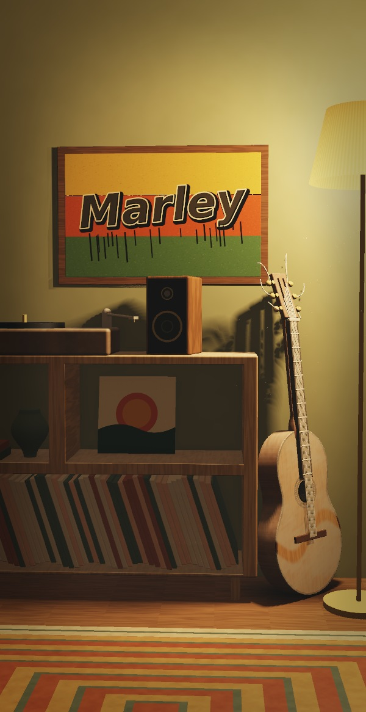

<!doctype html>
<html lang="sv">
<head>
<meta charset="utf-8">
<meta name="viewport" content="width=device-width,initial-scale=1,maximum-scale=1,user-scalable=no,viewport-fit=cover">
<meta name="description" content="Öva gitarr med kompband, 3D-grepp, skank-skola och stämmare.">
<meta name="theme-color" content="#100e0c">
<meta name="mobile-web-app-capable" content="yes">
<meta name="apple-mobile-web-app-capable" content="yes">
<meta name="apple-mobile-web-app-status-bar-style" content="black-translucent">
<meta name="apple-mobile-web-app-title" content="NylonGitarr">
<link rel="manifest" href="manifest.webmanifest">
<link rel="icon" type="image/png" sizes="32x32" href="icons/favicon-32.png">
<link rel="apple-touch-icon" href="icons/apple-touch-icon.png">
<style>
:root{padding-top:var(--safe-area-inset-top,env(safe-area-inset-top,0px));padding-bottom:var(--safe-area-inset-bottom,env(safe-area-inset-bottom,0px))}
body{margin:0;font:14px system-ui,-apple-system,"Segoe UI",sans-serif}
img{max-width:100%}
[hidden]{display:none!important}
html{-webkit-tap-highlight-color:transparent}
/* Känns som en riktig app på telefonen */
html,body{overscroll-behavior-y:none;overflow-x:clip}
button,a,[role="tab"],.bar,.dg,.song,.chip{touch-action:manipulation;-webkit-user-select:none;user-select:none}
input,select,textarea{font-size:16px}
@media (display-mode: standalone){
  body{-webkit-user-select:none;user-select:none}
  input,textarea{-webkit-user-select:text;user-select:text}
}
</style>
<title>NylonGitarr Studio</title>
<link rel="stylesheet" href="https://fonts.googleapis.com/css2?family=Outfit:wght@400;500;600;700;800&family=JetBrains+Mono:wght@500;700&display=swap">
<style>
/* Layout: sticky stage header over a two-column practice desk (song list | instrument), stacking to one column on phones */
:root{
  /* Grundvärden, temana nedan skriver över dem */
  --bg:#0c0a1a; --surface:#15122a; --surface-2:#1e1a3a; --surface-3:#29234c; --line:#332c5c;
  --text:#f4f1ff; --muted:#aba4d4; --faint:#706aa3;
  --brass:#ff5ca8; --brass-2:#ff9a5c; --brass-ink:#2a0418;
  --leaf:#2ee6b8; --leaf-2:#8af7d9; --leaf-ink:#03241a;
  --ember:#ff6b5a; --ember-ink:#2a0703; --sky:#5ab8ff;
  --f1:#5ab8ff; --f2:#2ee6b8; --f3:#ffd23f; --f4:#ff5ca8;
  --wood-1:#3a2418; --wood-2:#26160d; --bone:#f3ead6; --skin:#f2c6a2; --skin-2:#d99f78; --top-1:#d9a866; --top-2:#b9834a;
  --glow-1:#ff5ca8; --glow-2:#2ee6b8;
  --f-display:"Outfit",system-ui,-apple-system,"Segoe UI",sans-serif;
  --f-body:"Outfit",system-ui,-apple-system,"Segoe UI",sans-serif;
  --f-mono:"JetBrains Mono",ui-monospace,"SF Mono",Menlo,monospace;
  --r:16px;
  color-scheme:dark;
}
:root[data-skin="salvia"]{
  /* Salvia och persika: ljust papper, dämpat grönt och persika, som ett skivomslag */
  --bg:#f3ede1; --surface:#fbf7ef; --surface-2:#e9dfce; --surface-3:#ddd0ba; --line:#cdbfa8;
  --text:#2e4136; --muted:#526258; --faint:#68756b;
  --brass:#96472e; --brass-2:#96472e; --brass-ink:#fff8ef;
  --leaf:#4c6655; --leaf-2:#3d5546; --leaf-ink:#f5efe3;
  --ember:#b4502f; --ember-ink:#fff8ef; --sky:#3f6c80;
  --f1:#3f6c80; --f2:#4c6655; --f3:#a87620; --f4:#96472e;
  --glow-1:#edb99f; --glow-2:#4c6655;
  --f-display:"Outfit",system-ui,-apple-system,"Segoe UI",sans-serif;
  --f-body:"Outfit",system-ui,-apple-system,"Segoe UI",sans-serif;
  --f-mono:"Outfit",system-ui,sans-serif;
  --r:14px;
  color-scheme:light;
  --cv-bg:#4c6655; --cv-text:#f5efe3; --cv-btn:#2e4136; --cv-btn-text:#f5efe3;
  --vd-plate:#3f5748; --vd-line:#2e4136; --vd-rim:#232c27; --vd-dots:#9db0a1; --vd-disc:#1d2420; --vd-groove:#35433a;
  --vd-label:#edb99f; --vd-ink:#2e4136; --vd-arm:#f3ede1; --vd-head:#edb99f; --vd-hole:#f3ede1; --vd-ring:transparent; --vd-ring-2:transparent; --vd-rays:transparent;
}
:root[data-skin="riddim"]{
  /* Riddim: en strandbar i skymningen, djupgrönt, guld och rött */
  --bg:#0e1f17; --surface:#14291f; --surface-2:#1b3528; --surface-3:#254535; --line:#2f5140;
  --text:#fbf2dc; --muted:#c3cdb9; --faint:#93a596;
  --brass:#f2c230; --brass-2:#f2c230; --brass-ink:#1a1405;
  --leaf:#4fb477; --leaf-2:#7fd09e; --leaf-ink:#06170d;
  --ember:#e2563f; --ember-ink:#fff4e4; --sky:#7fc4d6;
  --f1:#7fc4d6; --f2:#4fb477; --f3:#f2c230; --f4:#e2563f;
  --glow-1:#f2c230; --glow-2:#4fb477;
  --f-display:"Outfit",system-ui,-apple-system,"Segoe UI",sans-serif;
  --f-body:"Outfit",system-ui,-apple-system,"Segoe UI",sans-serif;
  --f-mono:"Outfit",system-ui,sans-serif;
  --r:14px;
  --wv-band:#1b3528;
  --cv-bg:#17442f; --cv-text:#fbf2dc; --cv-btn:#f2c230; --cv-btn-text:#1a1405;
  --vd-plate:#113524; --vd-line:#0a2015; --vd-rim:#0b0e0b; --vd-dots:#f2c230; --vd-disc:#0a0c0a; --vd-groove:#262a26;
  --vd-label:#f2c230; --vd-ink:#1a1405; --vd-arm:#fbf2dc; --vd-head:#e2563f; --vd-hole:#fbf2dc; --vd-ring:#c93a2b; --vd-ring-2:#1f8a4c; --vd-rays:#f2c230;
}
:root[data-skin="neon"]{
  /* Neon: nästan svart, magenta och cyan som glöder */
  --bg:#07050f; --surface:#110c20; --surface-2:#1a1433; --surface-3:#241c45; --line:#2e2552; --text:#f2eeff; --muted:#b3abd6; --faint:#8f88b8; --brass:#ff3df2; --brass-2:#33d6ff; --brass-ink:#1a0618; --leaf:#33d6ff; --leaf-2:#8be9ff; --leaf-ink:#04161e; --ember:#ff3df2; --ember-ink:#1a0618; --sky:#33d6ff; --f1:#33d6ff; --f2:#2ee6b8; --f3:#ffd23f; --f4:#ff3df2; --glow-1:#ff3df2; --glow-2:#33d6ff; --wv-band:#1a1433; --cv-bg:#1d1240; --cv-text:#f2eeff; --cv-btn:#ff3df2; --cv-btn-text:#1a0618; --vd-plate:#160f30; --vd-line:#0b0818; --vd-rim:#05040b; --vd-dots:#33d6ff; --vd-disc:#07060d; --vd-groove:#221a3d; --vd-label:#ff3df2; --vd-ink:#1a0618; --vd-arm:#f2eeff; --vd-head:#33d6ff; --vd-hole:#f2eeff; --vd-ring:#ff3df2; --vd-ring-2:#33d6ff; --vd-rays:#8a5cff;
  --f-display:"Outfit",system-ui,-apple-system,"Segoe UI",sans-serif;
  --f-body:"Outfit",system-ui,-apple-system,"Segoe UI",sans-serif;
  --f-mono:"JetBrains Mono",ui-monospace,"SF Mono",Menlo,monospace;
  --r:16px;
  color-scheme:dark;
}
:root[data-skin="sol"]{
  /* Sol: mörkt rödbrunt, guld och rosa som en solnedgång */
  --bg:#0d0605; --surface:#1a0d0b; --surface-2:#261410; --surface-3:#331b15; --line:#45271d; --text:#fff1ea; --muted:#dcbcb0; --faint:#ae8a7f; --brass:#ffb84d; --brass-2:#ff3d80; --brass-ink:#2a1204; --leaf:#ff8a4c; --leaf-2:#ffc07a; --leaf-ink:#2a1204; --ember:#ff6a3d; --ember-ink:#1f0802; --sky:#ffd27a; --f1:#ffd27a; --f2:#ff8a4c; --f3:#ffb84d; --f4:#ff3d80; --glow-1:#ffb84d; --glow-2:#ff3d80; --wv-band:#261410; --cv-bg:#3a160f; --cv-text:#fff1ea; --cv-btn:#ffb84d; --cv-btn-text:#2a1204; --vd-plate:#2a110c; --vd-line:#140705; --vd-rim:#070303; --vd-dots:#ffb84d; --vd-disc:#0a0505; --vd-groove:#2e1a14; --vd-label:#ffb84d; --vd-ink:#2a1204; --vd-arm:#fff1ea; --vd-head:#ff3d80; --vd-hole:#fff1ea; --vd-ring:#ff3d80; --vd-ring-2:#ff8a4c; --vd-rays:#ffb84d;
  --f-display:"Outfit",system-ui,-apple-system,"Segoe UI",sans-serif;
  --f-body:"Outfit",system-ui,-apple-system,"Segoe UI",sans-serif;
  --f-mono:"JetBrains Mono",ui-monospace,"SF Mono",Menlo,monospace;
  --r:16px;
  color-scheme:dark;
}
:root[data-skin="svartvit"]{
  /* Svartvit: svart och vitt, med ett svagt neonskimmer i bakgrunden */
  --bg:#000000; --surface:#0e0e10; --surface-2:#18181b; --surface-3:#232327; --line:#2e2e33; --text:#f5f5f7; --muted:#b4b4bb; --faint:#8d8d95; --brass:#ffffff; --brass-2:#d0d0d6; --brass-ink:#000000; --leaf:#e6e6ea; --leaf-2:#ffffff; --leaf-ink:#000000; --ember:#ffffff; --ember-ink:#000000; --sky:#c9c9d2; --f1:#33d6ff; --f2:#2ee6b8; --f3:#ffd23f; --f4:#ff3df2; --glow-1:#ff3df2; --glow-2:#33d6ff; --wv-band:#18181b; --cv-bg:#141416; --cv-text:#f5f5f7; --cv-btn:#ffffff; --cv-btn-text:#000000; --vd-plate:#121214; --vd-line:#050506; --vd-rim:#000000; --vd-dots:#9a9aa2; --vd-disc:#050505; --vd-groove:#1e1e22; --vd-label:#f5f5f7; --vd-ink:#000000; --vd-arm:#f5f5f7; --vd-head:#ff3df2; --vd-hole:#000000; --vd-ring:#ff3df2; --vd-ring-2:#33d6ff; --vd-rays:#d0d0d6;
  --f-display:"Outfit",system-ui,-apple-system,"Segoe UI",sans-serif;
  --f-body:"Outfit",system-ui,-apple-system,"Segoe UI",sans-serif;
  --f-mono:"JetBrains Mono",ui-monospace,"SF Mono",Menlo,monospace;
  --r:16px;
  color-scheme:dark;
}
:root[data-skin="svartvit"][data-skin] body{background:radial-gradient(900px 520px at 85% -8%,color-mix(in oklab,var(--glow-1) 7%,transparent),transparent 65%),radial-gradient(800px 520px at -10% 30%,color-mix(in oklab,var(--glow-2) 6%,transparent),transparent 60%),var(--bg);background-attachment:fixed}
html,body{background:var(--bg);color:var(--text)}
body{background:radial-gradient(900px 520px at 85% -8%,color-mix(in oklab,var(--glow-1) 16%,transparent),transparent 65%),radial-gradient(800px 520px at -10% 30%,color-mix(in oklab,var(--glow-2) 10%,transparent),transparent 60%),var(--bg);background-attachment:fixed;min-height:100%}
body{font-family:var(--f-body);font-size:15px;line-height:1.5;-webkit-font-smoothing:antialiased}
body::before{content:"";position:fixed;inset:0 0 auto;height:var(--safe-area-inset-top,env(safe-area-inset-top,0px));z-index:10;background:var(--bg)}
*{box-sizing:border-box}
button,select,input{font:inherit;color:inherit}
button{cursor:pointer;border:0;background:none}
:focus-visible{outline:2px solid var(--brass);outline-offset:2px;border-radius:8px}
h1,h2,h3{font-family:var(--f-display);margin:0;text-wrap:balance;letter-spacing:-.01em}
p{margin:0}
.wrap{max-width:1200px;margin:0 auto;padding-left:max(16px,var(--safe-area-inset-left,env(safe-area-inset-left,0px)));padding-right:max(16px,var(--safe-area-inset-right,env(safe-area-inset-right,0px)))}
.mono{font-family:var(--f-mono);font-variant-numeric:tabular-nums}
.label{font-size:11px;font-weight:700;text-transform:uppercase;letter-spacing:.09em;color:var(--muted)}

/* Header */
header.top{position:sticky;top:var(--safe-area-inset-top,env(safe-area-inset-top,0px));z-index:20;background:color-mix(in oklab,var(--bg) 90%,transparent);backdrop-filter:blur(12px);-webkit-backdrop-filter:blur(12px);border-bottom:1px solid var(--line)}
.top-in{display:flex;flex-wrap:wrap;align-items:center;gap:12px 20px;padding-block:12px}
.brand{display:flex;align-items:center;gap:10px;margin-right:auto}
.brand h1{font-size:20px;font-weight:800}
.brand h1 span{color:var(--brass)}
.brand small{display:block;font-size:12px;color:var(--muted);font-family:var(--f-body)}
.tabs{display:flex;gap:2px;overflow-x:auto;scrollbar-width:none;max-width:100%}
.tabs button{padding:8px 13px;border-radius:10px;font-weight:600;font-size:14px;color:var(--muted);white-space:nowrap}
.tabs button:hover{color:var(--text);background:var(--surface)}
.tabs button[aria-selected="true"]{color:var(--brass-ink);background:linear-gradient(135deg,var(--brass),var(--brass-2))}
.quick{display:flex;gap:8px}
.chip{display:inline-flex;align-items:center;gap:6px;padding:7px 12px;border-radius:999px;border:1px solid var(--line);background:var(--surface);font-size:13px;font-weight:600;color:var(--muted)}
.chip:hover{color:var(--text);border-color:var(--faint)}
.chip.on{color:var(--leaf);border-color:color-mix(in oklab,var(--leaf) 60%,transparent);background:color-mix(in oklab,var(--leaf) 12%,var(--surface))}
.chip.warn{color:var(--ember);border-color:color-mix(in oklab,var(--ember) 50%,transparent)}
.icon{width:16px;height:16px;flex:none}

main{padding-block:22px 64px;display:grid;gap:22px}
.card{background:color-mix(in oklab,var(--surface) 88%,transparent);border:1px solid var(--line);border-radius:var(--r);padding:18px}
.card.flat{background:transparent}
.row{display:flex;flex-wrap:wrap;align-items:center;gap:10px}
.between{justify-content:space-between}
.muted{color:var(--muted)}

/* Play layout */
.desk{display:grid;grid-template-columns:250px minmax(0,1fr);gap:22px;align-items:start}
.songs{display:grid;gap:6px;position:sticky;top:84px;max-height:calc(100vh - 100px);overflow-y:auto;scrollbar-width:thin;padding-right:4px}
.tierhead{grid-column:1 / -1;padding:10px 4px 2px}
.tierhead:first-child{padding-top:0}
.song{display:block;width:100%;text-align:left;padding:11px 12px;border-radius:12px;border:1px solid transparent;position:relative}
.song:hover{background:var(--surface)}
.song.sel{background:var(--surface-2);border-color:var(--line)}
.song b{display:block;font-weight:700;font-size:14px;line-height:1.3;padding-right:20px}
.song i{display:block;font-style:normal;font-size:12px;color:var(--muted)}
.song .chords{font-family:var(--f-mono);font-size:11px;color:var(--brass);margin-top:3px}
.song .del{position:absolute;right:8px;top:9px;color:var(--faint);font-size:16px;line-height:1;padding:2px 5px;border-radius:6px}
.song .del:hover{color:var(--ember);background:var(--surface-3)}
.add{border:1px dashed var(--line);color:var(--brass);font-weight:600;font-size:13px;padding:10px;border-radius:12px;text-align:center}
.add:hover{border-color:var(--brass)}
.stage{display:grid;gap:18px;min-width:0}

.now{display:grid;grid-template-columns:minmax(0,1fr) auto;gap:16px;align-items:end}
.now h2{font-size:clamp(24px,3.4vw,34px);font-weight:800;line-height:1.1}
.now .meta{color:var(--muted);margin-top:4px;font-size:14px}
.tags{display:flex;gap:6px;flex-wrap:wrap;margin-top:10px}
.tag{font-size:12px;font-weight:600;padding:3px 9px;border-radius:999px;background:var(--surface-2);color:var(--muted)}
.chordnow{display:flex;align-items:flex-end;gap:14px}
.chordnow .big{font-family:var(--f-display);font-weight:800;font-size:64px;line-height:.9;background:linear-gradient(135deg,var(--brass),var(--brass-2));-webkit-background-clip:text;background-clip:text;color:transparent;min-width:1.4em;text-align:right}
.chordnow .next{font-size:12px;color:var(--muted);line-height:1.3;padding-bottom:6px}
.chordnow .next b{display:block;font-family:var(--f-display);font-size:24px;color:var(--text)}

/* Transport */
.transport{display:grid;gap:16px}
.tp-main{display:flex;flex-wrap:wrap;align-items:center;gap:14px}
.play{display:inline-flex;align-items:center;gap:10px;height:52px;padding:0 22px 0 18px;border-radius:999px;background:linear-gradient(135deg,var(--leaf),var(--leaf-2));color:var(--leaf-ink);font-weight:700;font-size:15px;box-shadow:0 6px 24px -10px var(--leaf)}
.play.stop{background:var(--ember);color:var(--ember-ink);box-shadow:0 6px 24px -10px var(--ember)}
.play svg{width:20px;height:20px}
.bpm{display:flex;align-items:center;gap:4px;background:var(--surface-2);border-radius:999px;padding:4px}
.bpm button{width:36px;height:36px;border-radius:50%;font-size:18px;font-weight:700;color:var(--muted)}
.bpm button:hover{background:var(--surface-3);color:var(--text)}
.bpm .val{min-width:74px;text-align:center;font-family:var(--f-mono);font-weight:700;font-size:18px}
.bpm .val small{font-size:10px;color:var(--muted);display:block;line-height:1;font-family:var(--f-body);font-weight:600;letter-spacing:.08em}
.tap{padding:0 14px!important;width:auto!important;border-radius:999px!important;font-size:12px!important;letter-spacing:.06em}
.seg{display:inline-flex;background:var(--surface-2);padding:3px;border-radius:12px;gap:2px;flex-wrap:wrap}
.seg button{padding:7px 12px;border-radius:9px;font-size:13px;font-weight:600;color:var(--muted)}
.seg button:hover{color:var(--text)}
.seg button[aria-pressed="true"]{background:var(--surface-3);color:var(--text);box-shadow:inset 0 0 0 1px var(--line)}
.tp-grid{display:grid;grid-template-columns:repeat(auto-fit,minmax(220px,1fr));gap:14px}
.mixer{display:grid;gap:8px}
.slider{display:grid;grid-template-columns:72px minmax(0,1fr) 38px;align-items:center;gap:10px;font-size:13px;color:var(--muted)}
.slider span:last-child{font-family:var(--f-mono);font-size:12px;text-align:right}
input[type=range]{width:100%;accent-color:var(--brass);height:20px}
.checks{display:grid;gap:8px;font-size:13px}
.checks label{display:flex;align-items:center;gap:9px;color:var(--muted);cursor:pointer}
.checks input{accent-color:var(--brass);width:16px;height:16px}

/* Beat strip */
.beats{display:grid;grid-template-columns:repeat(8,minmax(0,1fr));gap:6px}
.beats.b16 .beat:nth-child(4n+1){border-left:2px solid color-mix(in oklab,var(--brass) 45%,transparent)}
.beats.b16 .beat:not(.hit) .t{visibility:hidden}
.beat{border-radius:12px;padding:8px 2px 7px;text-align:center;background:var(--surface-2);border:1px solid transparent;transition:transform .06s,background .06s}
.beat .n{font-family:var(--f-mono);font-size:12px;color:var(--muted);font-weight:700}
.beat .a{height:22px;display:flex;align-items:center;justify-content:center;color:var(--text)}
.beat .a svg{width:18px;height:18px}
.beat .t{font-size:10px;font-weight:700;letter-spacing:.06em;color:var(--faint);text-transform:uppercase}
.beat.rest .a{color:var(--faint)}
.beat.hit{background:color-mix(in oklab,var(--brass) 14%,var(--surface-2));border-color:color-mix(in oklab,var(--brass) 35%,transparent)}
.beat.edit{cursor:pointer;border:1px dashed var(--brass)}
.beat.cur{background:linear-gradient(160deg,var(--brass),var(--brass-2));transform:scale(1.04)}
.beat.cur *{color:var(--brass-ink)!important}
.count{font-family:var(--f-display);font-weight:800;color:var(--brass);font-size:15px}

/* Fretboard */
.board{background:var(--surface);border:1px solid var(--line);border-radius:var(--r);padding:16px 16px 12px}
.board-scroll{overflow-x:auto;margin-inline:-6px;padding-inline:6px}
.board svg{display:block;width:100%;height:auto;user-select:none}
.board-scroll svg{min-width:620px}
.str{cursor:pointer}
.str.vib .line{animation:vib .045s linear 8}
.str.vibx .line{animation:vibx .045s linear 8}
@keyframes vibx{0%{transform:translateX(0)}25%{transform:translateX(-1.3px)}75%{transform:translateX(1.3px)}100%{transform:translateX(0)}}
@keyframes vib{0%{transform:translateY(0)}25%{transform:translateY(-1.3px)}75%{transform:translateY(1.3px)}100%{transform:translateY(0)}}
.legend{display:flex;flex-wrap:wrap;gap:8px 16px;font-size:12px;color:var(--muted);margin-top:10px;padding-top:10px;border-top:1px solid var(--line)}
.legend .dot{width:18px;height:18px;border-radius:50%;display:inline-flex;align-items:center;justify-content:center;font-size:11px;font-weight:800;color:#111;margin-right:6px;vertical-align:middle}

/* Chart */
.chart{display:grid;gap:14px}
.part{display:grid;gap:8px}
.part.dim{opacity:.45}
.part-head{display:flex;align-items:center;justify-content:space-between;gap:8px}
.loopchip{padding:4px 10px;font-size:12px}
.bars{display:grid;grid-template-columns:repeat(auto-fill,minmax(64px,1fr));gap:6px}
.bar{position:relative;padding:12px 6px 8px;border-radius:10px;background:var(--surface-2);text-align:center;border:1px solid transparent}
.bar:hover{border-color:var(--line)}
.bar b{font-family:var(--f-display);font-size:20px;font-weight:800;display:block;line-height:1.1}
.bar b.split{font-size:15px;display:flex;justify-content:center;gap:6px;align-items:baseline}
.bar b.split i{font-style:normal;padding-left:6px;border-left:1px solid currentColor;opacity:.85}
.bar small{position:absolute;left:7px;top:4px;font-family:var(--f-mono);font-size:10px;color:var(--faint)}
.bar.cur{background:linear-gradient(160deg,var(--brass),var(--brass-2));color:var(--brass-ink)}
.bar.cur small{color:var(--brass-ink)}
.bar.start{border-color:var(--brass)}
.bar .prog{position:absolute;left:0;bottom:0;height:3px;background:var(--brass-ink);opacity:.5;border-radius:0 0 0 10px}

.diagrams{display:grid;grid-template-columns:repeat(auto-fill,minmax(140px,1fr));gap:10px}
.dg{background:var(--surface);border:1px solid var(--line);border-radius:12px;padding:10px 10px 8px;text-align:left;display:flex;flex-direction:column;gap:2px}
.dg:hover{border-color:var(--faint)}
.dg.sel{border-color:var(--brass);background:color-mix(in oklab,var(--brass) 7%,var(--surface))}
.dg .hd{display:flex;align-items:baseline;justify-content:space-between;gap:6px}
.dg .nm{font-family:var(--f-display);font-weight:800;font-size:20px}
.dg .badge{font-size:10px;font-weight:700;letter-spacing:.06em;text-transform:uppercase;color:var(--sky);border:1px solid color-mix(in oklab,var(--sky) 40%,transparent);padding:1px 6px;border-radius:6px}
.dg .ft{font-size:11px;color:var(--muted);white-space:nowrap;overflow:hidden;text-overflow:ellipsis}
.dg .ft.easy{color:var(--leaf)}
.dg svg{width:100%;height:auto}

.tip{display:grid;grid-template-columns:auto minmax(0,1fr);gap:12px;align-items:start;font-size:14px;color:var(--muted);max-width:75ch}
.tip b{color:var(--text)}
.tip .mark{font-family:var(--f-display);font-weight:800;color:var(--brass);font-size:13px;letter-spacing:.06em;text-transform:uppercase;padding-top:1px}

.section-head{display:flex;flex-wrap:wrap;align-items:baseline;justify-content:space-between;gap:6px 16px;margin-bottom:12px}
.section-head h3{font-size:18px}
.section-head p{font-size:13px;color:var(--muted)}
.lead{font-size:15px;color:var(--muted);max-width:68ch}
.lead strong{color:var(--text)}
h2.page{font-size:clamp(24px,3vw,30px);font-weight:800}

/* Skank */
.rules{display:grid;grid-template-columns:repeat(auto-fit,minmax(230px,1fr));gap:12px}
.rule{padding:14px;border-radius:12px;background:var(--surface-2)}
.rule h4{margin:0 0 4px;font-size:14px;font-family:var(--f-display)}
.rule p{font-size:13px;color:var(--muted)}
.levels{display:grid;grid-template-columns:repeat(auto-fit,minmax(200px,1fr));gap:8px}
.level{text-align:left;padding:12px;border-radius:12px;border:1px solid var(--line);background:var(--surface)}
.level b{display:block;font-size:14px}
.level span{font-size:12px;color:var(--muted)}
.level[aria-pressed="true"]{border-color:var(--leaf);background:color-mix(in oklab,var(--leaf) 10%,var(--surface))}
.level[aria-pressed="true"] b{color:var(--leaf)}
.sk{display:grid;grid-template-columns:repeat(8,minmax(0,1fr));gap:8px}
.skc{border-radius:14px;padding:12px 4px;text-align:center;background:var(--surface-2);border:1px solid transparent;display:grid;gap:4px;justify-items:center}
.skc .n{font-family:var(--f-display);font-weight:800;font-size:22px;line-height:1}
.skc .w{font-size:11px;font-weight:800;letter-spacing:.06em}
.skc .s{font-size:10px;color:var(--muted)}
.skc.boom .w{color:var(--brass)}
.skc.tjack{background:color-mix(in oklab,var(--leaf) 10%,var(--surface-2));border-color:color-mix(in oklab,var(--leaf) 30%,transparent)}
.skc.tjack .w{color:var(--leaf)}
.skc.cur.boom{background:var(--brass);transform:scale(1.05)}
.skc.cur.tjack{background:var(--leaf);transform:scale(1.05)}
.skc.cur *{color:#111!important}
.coach{display:grid;grid-template-columns:auto minmax(0,1fr);gap:12px;align-items:start;padding:14px;border-radius:12px;background:var(--surface-2);font-size:14px}
.coach .big{font-family:var(--f-display);font-weight:800;font-size:34px;color:var(--leaf);line-height:1;min-width:1.6em}

/* Byten */
.pick{display:flex;flex-wrap:wrap;align-items:flex-end;gap:12px}
.pick label{display:grid;gap:4px;font-size:12px;color:var(--muted);font-weight:600}
select{background:var(--surface-2);border:1px solid var(--line);border-radius:10px;padding:9px 12px;font-weight:600;max-width:100%}
.swap{display:grid;grid-template-columns:1fr 1fr;gap:8px}
.swap button{padding:12px;border-radius:12px;background:var(--surface-2);font-weight:700;border:1px solid transparent}
.swap button[aria-pressed="true"]{border-color:var(--brass);color:var(--brass);background:color-mix(in oklab,var(--brass) 10%,var(--surface-2))}
.lists{display:grid;grid-template-columns:repeat(auto-fit,minmax(260px,1fr));gap:14px}
.lists ul{margin:0;padding:0;list-style:none;display:grid;gap:8px;font-size:14px}
.lists li{display:grid;grid-template-columns:auto minmax(0,1fr);gap:9px;align-items:start}
.lists li .fd{width:20px;height:20px;border-radius:50%;display:inline-flex;align-items:center;justify-content:center;font-size:11px;font-weight:800;color:#111;margin-top:1px}

/* Tuner */
.tuner{display:grid;grid-template-columns:repeat(auto-fit,minmax(170px,1fr));gap:10px}
.tstr{text-align:left;padding:14px;border-radius:14px;border:1px solid var(--line);background:var(--surface);display:grid;gap:6px}
.tstr:hover{border-color:var(--faint)}
.tstr.sel{border-color:var(--brass);background:color-mix(in oklab,var(--brass) 8%,var(--surface))}
.tstr .nt{font-family:var(--f-display);font-weight:800;font-size:34px;line-height:1}
.tstr .hz{font-family:var(--f-mono);font-size:12px;color:var(--muted)}
.tstr .kind{font-size:11px;font-weight:700;letter-spacing:.06em;text-transform:uppercase;color:var(--muted)}
.tstr .wire{height:6px;border-radius:4px}

/* Modal */
.scrim{position:fixed;inset:0;z-index:57;background:color-mix(in oklab,var(--bg) 70%,transparent);backdrop-filter:blur(6px);display:flex;align-items:center;justify-content:center;padding:16px}
.modal{width:100%;max-width:460px;background:var(--surface);border:1px solid var(--line);border-radius:18px;padding:20px;display:grid;gap:14px;max-height:100%;overflow:auto}
.modal input[type=text]{width:100%;background:var(--surface-2);border:1px solid var(--line);border-radius:10px;padding:10px 12px}
.slots{display:grid;grid-template-columns:repeat(4,minmax(0,1fr));gap:8px}
.slots select{width:100%;padding:8px 6px}
.btn{padding:9px 16px;border-radius:10px;font-weight:700;font-size:14px;background:var(--surface-2)}
.btn.primary{background:linear-gradient(135deg,var(--brass),var(--brass-2));color:var(--brass-ink)}
.btn:disabled{opacity:.4;cursor:default}

.kbd{font-family:var(--f-mono);font-size:11px;border:1px solid var(--line);border-bottom-width:2px;padding:0 5px;border-radius:5px;color:var(--muted)}


/* Spela med: boll som landar på nästa ackord */
.pa{position:relative;height:370px;overflow:hidden;border-radius:20px;border:1px solid var(--line);background:radial-gradient(120% 80% at 50% 0%,color-mix(in oklab,var(--brass) 18%,var(--surface)),var(--surface) 70%);touch-action:manipulation}
.pa-msg{position:absolute;top:12px;left:16px;right:16px;display:flex;justify-content:space-between;align-items:center;gap:8px;font-size:13px;font-weight:600;color:var(--muted)}
.pa-msg b{color:var(--text)}
.pa-part{font-size:11px;font-weight:800;letter-spacing:.09em;text-transform:uppercase;color:var(--brass)}
.pa-ball{position:absolute;left:0;top:0;width:24px;height:24px;margin:-12px 0 0 -12px;border-radius:50%;background:radial-gradient(circle at 35% 30%,#fff,var(--brass-2) 45%,var(--brass));box-shadow:0 0 22px color-mix(in oklab,var(--brass) 80%,transparent);z-index:3;will-change:transform;pointer-events:none}
.pa-trail{position:absolute;inset:0;pointer-events:none;z-index:2}
.pa-track{position:absolute;inset:0;will-change:transform}
.pa-card{position:absolute;top:104px;width:40%;max-width:200px;transform:translateX(-50%);transform-origin:50% 0;display:grid;justify-items:center;gap:8px;will-change:transform,opacity}
.pa-card .pill{font-family:var(--f-display);font-weight:800;font-size:24px;line-height:1.2;padding:4px 18px;border-radius:999px;color:var(--text);transition:background .2s,color .2s}
.pa-card.cur .pill{background:var(--text);color:var(--bg)}
.pa-ball.center{left:50%;z-index:4}
.pa::after{content:"";position:absolute;left:50%;top:84px;bottom:34px;width:2px;margin-left:-1px;background:linear-gradient(var(--brass),transparent);opacity:.25;pointer-events:none}
.pa-card .dg{background:transparent;border:0;padding:0;width:100%}
.pa-card .dg:hover{border:0}
.pa-card .dg .hd,.pa-card .dg .ft{display:none}
.pa-card .dg svg{max-width:150px;margin:0 auto}
.pa-dots{position:absolute;left:16px;right:16px;bottom:14px;display:flex;gap:4px}
.pa-dots i{flex:1;height:7px;border-radius:4px;background:var(--surface-3);transition:background .08s}
.pa-dots i.on{background:linear-gradient(90deg,var(--brass),var(--brass-2))}
.pa-dots i.gap{margin-left:6px}
.pa-count{position:absolute;top:56px;left:0;right:0;text-align:center;font-family:var(--f-display);font-weight:800;font-size:28px;color:var(--brass)}
.pa-hint{position:absolute;left:0;right:0;bottom:30px;text-align:center;font-size:12px;color:var(--muted)}
/* Skank: studsande boll */
.bounce{position:relative;padding-top:58px}
.bounce .pa-ball{width:20px;height:20px;margin:-10px 0 0 -10px;background:radial-gradient(circle at 35% 30%,#fff,var(--leaf-2) 45%,var(--leaf));box-shadow:0 0 20px color-mix(in oklab,var(--leaf) 80%,transparent)}
.bounce .count-row span{position:relative}
.bounce .count-row span.tj{border-bottom:3px solid color-mix(in oklab,var(--leaf) 45%,transparent)}
.bounce .count-row span.on.tj{animation:tjack .25s ease-out}
@keyframes tjack{0%{transform:scale(1.2)}100%{transform:scale(1)}}
@media (max-width:760px){.pa{height:372px}.pa-card{top:96px}}

/* Skank-animation */
.anim{display:grid;gap:14px}
.anim-head{display:flex;flex-wrap:wrap;align-items:center;justify-content:space-between;gap:10px}
.anim-word{display:flex;align-items:baseline;gap:12px;min-width:0}
.anim-word b{font-family:var(--f-display);font-weight:800;font-size:clamp(34px,7vw,52px);line-height:1;letter-spacing:-.02em}
.anim-word b.tj{background:linear-gradient(135deg,var(--leaf),var(--leaf-2));-webkit-background-clip:text;background-clip:text;color:transparent}
.anim-word b.du{background:linear-gradient(135deg,var(--brass),var(--brass-2));-webkit-background-clip:text;background-clip:text;color:transparent}
.anim-word span{font-size:14px;color:var(--muted);max-width:40ch}
.anim-panels{display:grid;grid-template-columns:minmax(0,1.6fr) minmax(0,1fr);gap:12px}
.panel{background:var(--surface-2);border-radius:14px;padding:10px;display:grid;gap:6px;min-width:0}
.panel svg{width:100%;height:auto;display:block}
.anim-panels .panel:last-child svg{max-width:230px;margin:0 auto}
.panel .cap{display:flex;justify-content:space-between;align-items:center;font-size:12px;color:var(--muted);font-weight:600}
.panel .cap .state{font-family:var(--f-display);font-weight:800;font-size:13px;letter-spacing:.06em}
.count-row{display:grid;grid-template-columns:repeat(8,minmax(0,1fr));gap:4px}
.count-row span{text-align:center;padding:6px 0;border-radius:9px;font-family:var(--f-display);font-weight:800;font-size:16px;color:var(--faint);background:var(--surface-2);transition:background .08s,color .08s}
.count-row span.on.du{background:linear-gradient(160deg,var(--brass),var(--brass-2));color:var(--brass-ink)}
.count-row span.on.tj{background:linear-gradient(160deg,var(--leaf),var(--leaf-2));color:var(--leaf-ink)}
.emo{font-family:"Noto Color Emoji","Apple Color Emoji","Segoe UI Emoji",sans-serif;filter:drop-shadow(0 4px 4px rgba(0,0,0,.35))}
.chop{animation:chop .42s cubic-bezier(.3,.9,.3,1)}
@keyframes chop{0%{transform:translateY(0)}22%{transform:translateY(56px)}100%{transform:translateY(0)}}
.ring{animation:ring .5s ease-out forwards}
@keyframes ring{0%{opacity:1;transform:translateY(0)}10%{transform:translateY(-1.6px)}20%{transform:translateY(1.6px)}30%{transform:translateY(-1px)}40%{transform:translateY(0)}100%{opacity:0}}
.thud{animation:thud .5s ease-out forwards;transform-box:fill-box;transform-origin:center}
@keyframes thud{0%{opacity:.9;transform:scale(.4)}100%{opacity:0;transform:scale(2.2)}}
.trail{animation:trail .42s ease-out forwards}
@keyframes trail{0%{opacity:0}15%{opacity:.9}100%{opacity:0}}
.press{animation:press .5s ease-out forwards;transform-box:fill-box;transform-origin:center}
@keyframes press{0%{transform:scale(1.25)}100%{transform:scale(1)}}
.strip{display:grid;grid-template-columns:repeat(3,minmax(0,1fr));gap:10px}
.strip .panel h4{margin:0;font-family:var(--f-display);font-size:15px}
.strip .panel p{font-size:12.5px;color:var(--muted);line-height:1.4}
.strip .num{display:inline-flex;width:22px;height:22px;border-radius:50%;align-items:center;justify-content:center;font-size:12px;font-weight:800;margin-right:6px;color:var(--brass-ink);background:linear-gradient(135deg,var(--brass),var(--brass-2))}
.vidlink{display:flex;flex-wrap:wrap;align-items:center;gap:8px 14px;padding:12px 14px;border-radius:14px;border:1px dashed var(--line);font-size:14px;color:var(--muted)}
.vidlink a{color:var(--brass);font-weight:700;text-decoration:none}
.vidlink a:hover{text-decoration:underline}
@media (max-width:760px){
  .anim-panels{grid-template-columns:minmax(0,1fr)}
  .strip{grid-template-columns:minmax(0,1fr)}
  .strip .panel{grid-template-columns:110px minmax(0,1fr);align-items:center;gap:10px}
}

/* Skank-skolan, förenklad */
.sk-intro .lead{max-width:56ch}
.sk-main{position:relative;display:grid;gap:14px;overflow:hidden}
.sk-flash{position:absolute;inset:0;pointer-events:none;border-radius:inherit;box-shadow:inset 0 0 0 3px var(--leaf),inset 0 0 60px color-mix(in oklab,var(--leaf) 35%,transparent);animation:skflash .35s ease-out forwards}
@keyframes skflash{0%{opacity:1}100%{opacity:0}}
.sk-cue{display:grid;justify-items:center;text-align:center;min-height:96px;align-content:center;gap:2px}
.sk-cue b{font-family:var(--f-display);font-weight:800;font-size:64px;line-height:1;letter-spacing:-.02em}
.sk-cue span{font-size:14px;color:var(--muted);font-weight:600}
.sk-cue.idle b{font-size:40px;color:var(--text)}
.sk-cue.count b{color:var(--brass);animation:tjack .3s ease-out}
.sk-cue.du b{color:color-mix(in oklab,var(--brass) 70%,var(--muted))}
.sk-cue.tj b{background:linear-gradient(135deg,var(--leaf),var(--leaf-2));-webkit-background-clip:text;background-clip:text;color:transparent;animation:tjack .25s ease-out}
.sk-cue.tj span{color:var(--leaf)}
.sk-lane{padding-top:66px}
.sk-lane .pa-ball{width:24px;height:24px;margin:-12px 0 0 -12px}
.sk-row{display:grid;grid-template-columns:repeat(8,minmax(0,1fr));gap:4px}
.sk-row span{display:grid;justify-items:center;gap:2px;padding:10px 0 8px;border-radius:12px;background:var(--surface-2);color:var(--faint);transition:background .08s,color .08s}
.sk-row span b{font-family:var(--f-display);font-weight:800;font-size:22px;line-height:1}
.sk-row span small{font-size:10px;font-weight:800;letter-spacing:.04em}
.sk-row span.tj{background:color-mix(in oklab,var(--leaf) 12%,var(--surface-2));color:color-mix(in oklab,var(--leaf) 75%,var(--text))}
.sk-row span.on.du{background:linear-gradient(160deg,var(--brass),var(--brass-2));color:var(--brass-ink)}
.sk-row span.on.tj{background:linear-gradient(160deg,var(--leaf),var(--leaf-2));color:var(--leaf-ink);animation:tjack .25s ease-out}
.sk-hands{display:grid;grid-template-columns:minmax(0,1.35fr) minmax(0,1fr);gap:10px}
.sk-hands .panel p{margin:0;font-size:13px;line-height:1.35;color:var(--text)}
.sk-hands .panel:last-child svg{max-width:200px;margin:0 auto}
.sk-mute{font-size:78px;text-align:center;line-height:1.6}
.sk-ctl{display:grid;grid-template-columns:minmax(0,1fr);gap:12px;border-top:1px solid var(--line);padding-top:14px}
.sk-opt{display:grid;grid-template-columns:minmax(0,1fr);gap:6px;min-width:0}
.sk-lab{font-size:12px;font-weight:800;letter-spacing:.08em;text-transform:uppercase;color:var(--muted)}
.sk-grip{flex-wrap:wrap}
.sk-tip{margin:0;font-size:13px}
.sk-more>summary{font-size:15px;color:var(--text)}
@media (max-width:760px){
  .sk-cue{min-height:84px}
  .sk-cue b{font-size:56px}
  .sk-row span b{font-size:18px}
  .sk-row span small{font-size:9px}
  .sk-hands{grid-template-columns:minmax(0,1.3fr) minmax(0,1fr);gap:8px}
  .sk-hands .panel{padding:8px}
  .sk-hands .panel p{font-size:12px}
  .sk-hands .panel .cap{font-size:11px}
  .sk-mute{font-size:58px}
}

/* Tjack-skolan */
.sk-mode{justify-self:start}
.sk-mode button{padding:9px 16px;font-size:14px}
.tj-scene svg{width:100%;height:auto;display:block;border-radius:18px;box-shadow:0 10px 30px rgba(0,0,0,.35)}
.sk-cue.tjk.hit b{background:linear-gradient(135deg,var(--leaf),var(--leaf-2));-webkit-background-clip:text;background-clip:text;color:transparent;animation:tjack .25s ease-out}
.sk-cue.tjk.x b{color:#ff9a4a;animation:tjack .25s ease-out}
.sk-cue.tjk.x span{color:#ff9a4a}
.sk-cue.tjk.air b{color:var(--faint);font-size:40px}
.tj-flash{box-shadow:inset 0 0 0 3px #ff9a4a,inset 0 0 60px rgba(255,154,74,.35)}
.tj-row span.x{background:rgba(255,154,74,.14);color:#ffb37a}
.tj-row span.air{opacity:.55}
.tj-row span.on.x{background:linear-gradient(160deg,#ff9a4a,#ffb35c);color:#2a1205;animation:tjack .25s ease-out}
.tj-row span.on.du{background:linear-gradient(160deg,var(--leaf),var(--leaf-2));color:var(--leaf-ink)}
.tj-row span.on.air{background:var(--surface-3);color:var(--text);opacity:1}
.tj-left{margin:0;font-size:13px;color:var(--muted);text-align:center}
.tj-how{display:grid;gap:10px;margin-top:12px}
.tj-how p{margin:0;font-size:14px;line-height:1.45}

:root{--wv-band:#2b2348}
:root[data-skin="salvia"]{--wv-band:#e9dfce}
.tjl-list{display:grid;gap:8px}
.tjl{display:flex;align-items:center;gap:12px;text-align:left;padding:10px 12px;border-radius:16px;border:1px solid var(--line);background:var(--surface);color:var(--text)}
.tjl svg{flex:none;width:112px;height:36px}
.tjl b{display:block;font-size:15px}
.tjl small{font-size:12px;color:var(--muted)}
.tjl.done small{color:var(--leaf)}
.tjl.rec small{color:#ffb37a}
.tjl[aria-pressed="true"]{border-color:var(--leaf);box-shadow:inset 0 0 0 1px var(--leaf);background:color-mix(in oklab,var(--leaf) 8%,var(--surface))}
.pat-presets{display:flex;flex-wrap:wrap;gap:6px;align-items:center}
.sk-ctl>.inline-play{justify-self:start;min-width:220px}

/* Stora skärmar: lite större och bredare, så att appen inte blir en smal remsa */
@media (min-width:1700px){.wrap{max-width:1360px}}
@media (min-width:2400px) and (min-height:1100px){html{zoom:1.25}.wrap{max-width:1500px}}
/* Bred skärm: menyn som en lodrät sidopanel till vänster */
.tab-ic{display:none}
@media (min-width:1400px){
  .app{padding-left:248px}
  header.top{position:fixed;top:0;left:0;bottom:0;width:248px;border-bottom:0;border-right:1px solid var(--line);overflow-y:auto}
  header.top>.wrap.top-in{max-width:none;margin:0;padding:24px 16px;flex-direction:column;align-items:stretch;flex-wrap:nowrap;gap:24px;min-height:100%;box-sizing:border-box}
  .brand{margin-right:0}
  .brand small{max-width:170px}
  .tabs{flex-direction:column;overflow:visible;gap:4px}
  .tabs button{display:flex;align-items:center;gap:12px;padding:12px 14px;font-size:15px;text-align:left}
  .tab-ic{display:block;width:20px;height:20px;flex:none}
  .quick{margin-top:auto;flex-wrap:wrap}
  .quick .lvl{width:100%;justify-content:flex-start}
  .toasts{left:calc(50% + 124px)}
}
/* Dagens lektion och ny startsida */
.home{display:grid;gap:22px;max-width:640px;margin:0 auto;width:100%}
.home-day{display:grid;gap:8px;margin-top:12px}
.home-h1{font-family:var(--f-display);font-weight:800;font-size:clamp(32px,6vw,44px);line-height:1.08;margin:0}
.ls-kicker{font-size:13px;font-weight:800;letter-spacing:.08em;text-transform:uppercase;color:var(--brass)}
.ls-lead{margin:0;font-size:17px;line-height:1.45;color:var(--muted)}
.home-steps{list-style:none;margin:0;padding:18px;display:grid;gap:12px;background:var(--surface);border-radius:20px;border:1px solid var(--line)}
.home-steps li{display:flex;align-items:center;gap:12px;font-size:16px;color:var(--muted)}
.home-steps li>span{flex:none;width:28px;height:28px;border-radius:50%;display:grid;place-items:center;font-weight:800;font-size:14px;box-shadow:inset 0 0 0 2px var(--line)}
.home-steps li.done>span{background:var(--leaf);color:var(--leaf-ink);box-shadow:none}
.home-steps li.done>span svg{width:16px;height:16px}
.home-steps li.cur{color:var(--text);font-weight:700}
.home-steps li.cur>span{background:var(--brass);color:var(--brass-ink);box-shadow:none}
.ls-btn{display:inline-flex;align-items:center;justify-content:center;gap:10px;height:60px;padding:0 24px;border-radius:30px;background:linear-gradient(135deg,var(--brass),var(--brass-2));color:var(--brass-ink);font-weight:800;font-size:18px;border:0}
.ls-btn svg{width:18px;height:18px}
.ls-btn.big{height:66px;font-size:19px;width:100%}
.ls-btn.ghost{background:var(--surface-2);color:var(--text)}
.ls-link{background:none;border:0;color:var(--muted);font-weight:600;font-size:15px;padding:12px 6px;text-decoration:underline;text-underline-offset:3px}
.home-more>summary{font-size:15px}
.ls{position:fixed;inset:0;z-index:65;background:var(--bg);overflow-y:auto;display:flex;flex-direction:column;padding:max(16px,var(--safe-area-inset-top,env(safe-area-inset-top,0px))) max(20px,var(--safe-area-inset-right,env(safe-area-inset-right,0px))) max(24px,var(--safe-area-inset-bottom,env(safe-area-inset-bottom,0px))) max(20px,var(--safe-area-inset-left,env(safe-area-inset-left,0px)))}
.ls-top{display:flex;align-items:center;gap:14px;max-width:640px;width:100%;margin:0 auto}
.ls-x{flex:none;width:44px;height:44px;border-radius:50%;display:grid;place-items:center;background:var(--surface);color:var(--muted);border:0}
.ls-x svg{width:18px;height:18px}
.ls-prog{flex:1;display:flex;gap:6px}
.ls-prog i{flex:1;height:8px;border-radius:4px;background:var(--surface-2)}
.ls-prog i.done{background:var(--leaf)}
.ls-prog i.cur{background:var(--brass)}
.ls-body{flex:1;display:flex;flex-direction:column;gap:18px;max-width:640px;width:100%;margin:22px auto 0}
.ls-h1{font-family:var(--f-display);font-weight:800;font-size:clamp(30px,6vw,40px);line-height:1.1;margin:4px 0 0}
.ls-dg{display:flex;justify-content:center}
.ls-dg .dg{width:min(280px,80vw);padding:14px}
.ls-dg .dg .nm{font-size:28px}
.ls-lines{list-style:none;margin:0;padding:0;display:grid;gap:10px;font-size:17px;line-height:1.35}
.ls-lines li{display:flex;align-items:center;gap:12px}
.ls-lines li>span{flex:none;width:26px;height:26px;border-radius:50%;display:grid;place-items:center;font-weight:800;font-size:14px;color:#15122a}
.ls-actions{margin-top:auto;display:flex;gap:10px;padding-top:8px}
.ls-actions .ls-btn:last-child{flex:1}
.ls-actions.col{flex-direction:column}
.ls-links{display:flex;justify-content:space-between;margin-top:auto}
.ls-tip{margin:0;padding:14px 16px;border-radius:16px;background:var(--surface);font-size:16px;line-height:1.4}
.ls-pair{display:grid;grid-template-columns:minmax(0,1fr) auto minmax(0,1fr);gap:10px;align-items:center}
.ls-pair>span{font-size:24px;color:var(--muted)}
.ls-done{align-items:center;text-align:center}
.ls-stars{width:220px;fill:#ffd23f;margin-top:24px}
.ls-stats{display:grid;grid-template-columns:repeat(3,minmax(0,1fr));gap:10px;width:100%}
.ls-stats>div{background:var(--surface);border-radius:16px;padding:14px 0;display:grid;gap:2px}
.ls-stats b{font-family:var(--f-display);font-size:24px}
.ls-stats span{font-size:13px;color:var(--muted)}
.ls-next{width:100%;box-sizing:border-box;text-align:left;background:var(--surface);border-radius:16px;padding:14px 16px;display:grid;gap:2px}
.ls-next small{font-size:12px;font-weight:800;letter-spacing:.08em;text-transform:uppercase;color:var(--muted)}
.ls-next b{font-size:17px}
.ls-done .ls-actions{width:100%}
.ls-back{position:fixed;left:50%;transform:translateX(-50%);bottom:calc(24px + var(--safe-area-inset-bottom,env(safe-area-inset-bottom,0px)));z-index:45;display:inline-flex;align-items:center;gap:8px;height:50px;padding:0 20px;border-radius:25px;border:0;background:linear-gradient(135deg,var(--brass),var(--brass-2));color:var(--brass-ink);font-weight:800;box-shadow:0 10px 30px -8px rgba(0,0,0,.7)}
.ls-back svg{width:16px;height:16px}
@media (max-width:760px){.ls-back{bottom:calc(150px + var(--safe-area-inset-bottom,env(safe-area-inset-bottom,0px)))}}
.gd-six{grid-template-columns:repeat(3,minmax(0,1fr))}
.gd-deg{display:grid;gap:4px;text-align:center}.gd-deg small{color:var(--muted);font-size:12px;font-weight:600}
.gd-chip{display:grid;place-items:center;align-content:center;gap:4px;min-height:120px;border:1px dashed var(--line);border-radius:12px;font-family:var(--f-display);font-size:26px;font-weight:700}.gd-chip small{font-family:var(--f-body);font-size:11px;font-weight:500;color:var(--muted)}
.gd-prog{display:grid;gap:8px;padding-top:12px;border-top:1px solid var(--line)}
.gd-next{display:flex;align-items:center;gap:8px;flex-wrap:wrap}.gd-next>b{min-width:40px;font-family:var(--f-display);font-size:22px}
.gd-beats{display:grid;grid-template-columns:repeat(4,minmax(0,1fr));gap:6px}.gd-beats div{display:grid;justify-items:center;padding:10px 0;border:2px solid var(--leaf);border-radius:10px;font-size:13px;font-weight:600}.gd-beats div b{font-family:var(--f-display);font-size:26px}.gd-beats div.on{background:var(--leaf);color:var(--leaf-ink)}
.rtab{display:grid;gap:2px;overflow-x:auto;font-variant-numeric:tabular-nums}
.rtab-row{display:flex;align-items:center;min-width:max-content;background:linear-gradient(var(--faint),var(--faint)) center/100% 1px no-repeat}
.rtab-row b{width:20px;flex:none;font-size:12px;color:var(--muted);background:var(--surface)}
.rtab-row span{width:34px;flex:none;display:grid;place-items:center;height:22px}
.rtab-row i{font-style:normal;font-weight:700;font-size:13px;width:22px;height:22px;line-height:22px;text-align:center;border-radius:11px;background:var(--brass);color:var(--brass-ink)}
.bib{display:grid;grid-template-columns:repeat(auto-fill,minmax(160px,1fr));gap:12px}
.bib-c{display:grid;gap:6px;justify-items:start;text-align:left;padding:18px;border-radius:20px;background:var(--surface);border:1px solid var(--line);color:var(--text);min-height:130px}
.bib-c svg{width:28px;height:28px}
.bib-c b{font-size:17px}
.bib-c span{font-size:13px;color:var(--muted)}
.bib-c:hover{border-color:var(--brass)}
/* Lugn rytmvy */
.rc{display:grid;gap:14px}
.rc-top{display:flex;align-items:center;gap:18px;flex-wrap:wrap}
.rc-chord{display:grid;gap:2px;min-width:90px}
.rc-chord small{font-size:12px;font-weight:800;letter-spacing:.08em;text-transform:uppercase;color:var(--muted)}
.rc-chord b{font-family:var(--f-display);font-size:34px;line-height:1}
.rc-word{font-family:var(--f-display);font-weight:800;font-size:clamp(34px,8vw,52px);line-height:1;color:var(--leaf)}
.rc-word.tj{color:#ff9a4a}
.rc-word.rest{color:var(--faint)}
.beat.tj .a{color:#ff9a4a}
.beat.tj.cur{background:linear-gradient(160deg,#ff9a4a,#ffb35c);color:#2a1205}
.beat .a svg{width:20px;height:18px}
.mini-pat{flex:none;display:grid;grid-template-columns:repeat(8,12px);gap:2px;font-weight:800;font-size:14px;color:var(--leaf);text-align:center}
.mini-pat i{font-style:normal}
.mini-pat i.x{color:#ff9a4a}
.mini-pat i.r{color:var(--faint)}
.song.can{border-color:color-mix(in oklab,var(--leaf) 40%,transparent)}
/* Kväll: lugnare och mer exklusivt. Platta ytor, inga neonglöd, serif i rubrikerna */
:root:is([data-skin="salvia"],[data-skin="riddim"],[data-skin="neon"],[data-skin="sol"],[data-skin="svartvit"]) body{background:var(--bg)}
:root:is([data-skin="salvia"],[data-skin="riddim"],[data-skin="neon"],[data-skin="sol"],[data-skin="svartvit"]) h1,:root:is([data-skin="salvia"],[data-skin="riddim"],[data-skin="neon"],[data-skin="sol"],[data-skin="svartvit"]) h2,:root:is([data-skin="salvia"],[data-skin="riddim"],[data-skin="neon"],[data-skin="sol"],[data-skin="svartvit"]) h3,
:root:is([data-skin="salvia"],[data-skin="riddim"],[data-skin="neon"],[data-skin="sol"],[data-skin="svartvit"]) .home-h1,:root:is([data-skin="salvia"],[data-skin="riddim"],[data-skin="neon"],[data-skin="sol"],[data-skin="svartvit"]) .ls-h1{font-weight:700;letter-spacing:-.01em}
:root:is([data-skin="salvia"],[data-skin="riddim"],[data-skin="neon"],[data-skin="sol"],[data-skin="svartvit"]) .card{background:var(--surface);border-color:var(--line)}
:root:is([data-skin="salvia"],[data-skin="riddim"],[data-skin="neon"],[data-skin="sol"],[data-skin="svartvit"]) .play,:root:is([data-skin="salvia"],[data-skin="riddim"],[data-skin="neon"],[data-skin="sol"],[data-skin="svartvit"]) .fab,:root:is([data-skin="salvia"],[data-skin="riddim"],[data-skin="neon"],[data-skin="sol"],[data-skin="svartvit"]) .ls-btn,:root:is([data-skin="salvia"],[data-skin="riddim"],[data-skin="neon"],[data-skin="sol"],[data-skin="svartvit"]) .ls-back,:root:is([data-skin="salvia"],[data-skin="riddim"],[data-skin="neon"],[data-skin="sol"],[data-skin="svartvit"]) .gh-launch{box-shadow:none}
:root:is([data-skin="salvia"],[data-skin="riddim"],[data-skin="neon"],[data-skin="sol"],[data-skin="svartvit"]) .play{border-radius:999px;font-weight:600}
:root:is([data-skin="salvia"],[data-skin="riddim"],[data-skin="neon"],[data-skin="sol"],[data-skin="svartvit"]) .ls-btn:not(.ghost){background:var(--cv-btn);color:var(--cv-btn-text)}
:root:is([data-skin="salvia"],[data-skin="riddim"],[data-skin="neon"],[data-skin="sol"],[data-skin="svartvit"]) .free-cover{position:relative;overflow:hidden;isolation:isolate;display:flex;flex-direction:column;justify-content:flex-end;gap:6px;background:var(--cv-bg);color:var(--cv-text);border-radius:14px;padding:24px 28px}
.vinyl-deck{display:none}
.home-day{display:block;margin-top:8px;border-radius:14px;overflow:hidden;background:var(--cv-bg)}
.scene{position:relative;aspect-ratio:1/.8;overflow:hidden;background:#2a2014}
.scene-inner{position:absolute;left:0;right:0;top:0;aspect-ratio:600/1166;transform:translateY(-23.5%)}
.scene-inner img{display:block;width:100%;height:100%}
.scene-motes{position:absolute;inset:0;width:100%;height:100%;pointer-events:none}
.scene-vol{position:absolute;left:36.5%;top:61.2%;font-family:var(--f-body);font-size:clamp(7px,2vw,10px);font-weight:600;color:#f3e4c0;opacity:.85}
.home-day{position:relative}
:root.ls-rise .ls{animation:ls-rise .7s cubic-bezier(.2,.8,.2,1)}
@keyframes ls-rise{from{transform:translateY(100%)}to{transform:none}}
.alt-seg{margin-bottom:12px}
.alt-now{margin:0 0 8px;font-size:15px;color:var(--muted)}
.alt-now b{color:var(--text);font-size:18px}
.alt-more{margin-top:12px}
.alt-more summary{cursor:pointer;font-weight:700;font-size:14px}
.alt-row{display:grid;gap:6px;margin-top:12px}
.alt-row>span{font-size:13px;font-weight:700;color:var(--muted)}
/* Bytescoachen (bx) */
.bx{display:grid;gap:14px}
.bx .section-head{margin-bottom:0}
.bx-head{display:flex;flex-wrap:wrap;align-items:center;gap:10px 14px}
.bx-pair{display:flex;align-items:center;gap:10px;font-family:var(--f-display,inherit);font-size:26px}
.bx-pair span{color:var(--muted);font-size:20px}
.bx-lvl{display:inline-flex;align-items:center;gap:3px;font-size:12px;font-weight:700;color:var(--muted);margin-right:auto}
.bx-lvl i{width:8px;height:8px;border-radius:50%;background:var(--surface-3)}
.bx-lvl i:last-of-type{margin-right:5px}
.bx-lvl.l1 i:nth-child(-n+1),.bx-lvl.l2 i:nth-child(-n+2),.bx-lvl.l3 i:nth-child(-n+3){background:var(--leaf)}
.bx-lvl.l3 i:nth-child(-n+3){background:var(--ember)}
.bx-grid{display:grid;gap:16px}
@media (min-width:760px){.bx-grid{grid-template-columns:minmax(240px,330px) minmax(0,1fr);align-items:start}.bx-side{grid-column:2;grid-row:1/span 2}.bx-hand{grid-column:1;grid-row:2}}
.bx-stage{display:grid;gap:10px;justify-items:center}
.bx-stage svg{width:100%;max-width:330px;display:block;user-select:none}
.lefty .bx-stage svg{transform:scaleX(-1)}
.lefty .bx-stage svg text{transform-box:fill-box;transform-origin:center;transform:scaleX(-1)}
.bx-pulse{animation:cc-pulse 1.1s ease-in-out infinite}
@keyframes bx-pulse{50%{opacity:.25}}
.bx-hand{display:grid;gap:8px;justify-items:center;width:100%;max-width:330px;justify-self:center}
.bx-hand video{width:100%;aspect-ratio:16/10;object-fit:cover;border-radius:14px;background:#0005}
.lefty .bx-hand video{transform:scaleX(-1)}
.bx-side{display:grid;gap:14px;align-content:start}
.bx-steps{list-style:none;margin:0;padding:0;display:grid;gap:6px}
.bx-steps li{border-radius:12px;background:var(--surface-2);border:1px solid transparent}
.bx-steps li.on{border-color:color-mix(in oklab,var(--leaf) 60%,transparent);background:color-mix(in oklab,var(--leaf) 10%,var(--surface-2))}
.bx-steps button{display:flex;align-items:center;gap:10px;width:100%;padding:9px 12px;background:none;border:0;color:inherit;text-align:left;font:inherit}
.bx-steps button span{width:22px;height:22px;border-radius:50%;display:inline-flex;align-items:center;justify-content:center;font-size:12px;font-weight:800;background:var(--surface-3);color:var(--muted)}
.bx-steps li.on button span{background:var(--leaf);color:var(--leaf-ink)}
.bx-steps li.done button span{background:color-mix(in oklab,var(--leaf) 35%,var(--surface-3));color:var(--text)}
.bx-steps p{margin:0;padding:0 12px 11px 44px;font-size:14px;line-height:1.45}
.bx-ctrl{display:flex;flex-wrap:wrap;align-items:center;gap:10px}
.bx-play{height:46px}
.bx-fingers{list-style:none;margin:0;padding:0;display:grid;gap:8px}
.bx-fingers li{display:grid;grid-template-columns:auto minmax(0,1fr);gap:10px;align-items:start;padding:8px 10px;border-radius:12px;transition:background .2s}
.bx-fingers li.bx-now{background:var(--surface-2)}
.bx-fingers .fd{width:24px;height:24px;border-radius:50%;display:inline-flex;align-items:center;justify-content:center;font-size:12px;font-weight:800;color:#111;margin-top:1px}
.bx-fingers p{margin:2px 0 0;font-size:14px;color:var(--muted);line-height:1.4}
.bx-verb{font-size:11px;font-weight:800;text-transform:uppercase;letter-spacing:.06em;padding:2px 7px;border-radius:999px;background:var(--surface-3);color:var(--muted)}
.t-stay .bx-verb{background:color-mix(in oklab,var(--brass) 22%,var(--surface-3));color:var(--text)}
.t-slide .bx-verb{background:color-mix(in oklab,var(--leaf) 22%,var(--surface-3));color:var(--text)}
.bx-tips{display:grid;gap:8px;grid-template-columns:repeat(auto-fit,minmax(230px,1fr))}
.bx-tips div{display:grid;gap:3px;padding:10px 12px;border-radius:12px;background:var(--surface-2);font-size:14px;line-height:1.45}
.bx-tips b{font-size:11px;text-transform:uppercase;letter-spacing:.08em;color:var(--brass)}
.bx-compact{padding:14px}
.bx-compact .bx-pair{font-size:20px}
.knep{display:grid;gap:10px;margin:12px 0 0;padding-left:20px;font-size:14px;line-height:1.5}
.knep b{color:var(--text)}
/* Kort övergång in i dagens lektion (ersätter startvideon) */
.scene-inner img{transition:transform .55s cubic-bezier(.5,0,.2,1),filter .55s}
.scene.zoom .scene-inner img{transform:scale(1.35);transform-origin:78% 52%;filter:brightness(1.15)}
.sleeve{position:relative;display:grid;gap:12px;padding:14px 20px 18px;background:var(--surface);border-top:1px solid color-mix(in oklab,var(--surface) 70%,#fff);box-shadow:0 -8px 16px rgba(0,0,0,.35)}
.sleeve .home-h1{font-size:clamp(38px,10vw,48px);line-height:1}
.sleeve .home-steps{padding:0;background:transparent;border:0;gap:6px}
.sleeve .home-steps li{font-size:15px}
.sleeve .ls-btn.big{margin-top:2px}
:root:is([data-skin="salvia"],[data-skin="riddim"],[data-skin="neon"],[data-skin="sol"],[data-skin="svartvit"]) .vinyl-deck{display:block;position:absolute;z-index:-1;right:0;top:0;width:380px;height:auto;font-family:var(--f-body)}
:root:is([data-skin="salvia"],[data-skin="riddim"],[data-skin="neon"],[data-skin="sol"],[data-skin="svartvit"]) .vd-spin{transform-origin:129px 129px;animation:vinyl-spin 20s linear infinite}
:root:is([data-skin="salvia"],[data-skin="riddim"],[data-skin="neon"],[data-skin="sol"],[data-skin="svartvit"]) .free-cover{min-height:210px}
:root:is([data-skin="salvia"],[data-skin="riddim"],[data-skin="neon"],[data-skin="sol"],[data-skin="svartvit"]) .free-cover .vinyl-deck{width:260px}
:root:is([data-skin="salvia"],[data-skin="riddim"],[data-skin="neon"],[data-skin="sol"],[data-skin="svartvit"]) .free-cover .vd-plate{display:none}
@media (prefers-reduced-motion:reduce){:root:is([data-skin="salvia"],[data-skin="riddim"],[data-skin="neon"],[data-skin="sol"],[data-skin="svartvit"]) .vd-spin{animation:none}}
@keyframes vinyl-spin{to{transform:rotate(360deg)}}
:root:is([data-skin="salvia"],[data-skin="riddim"],[data-skin="neon"],[data-skin="sol"],[data-skin="svartvit"]) .free-cover .ls-kicker{color:var(--cv-text)}
:root:is([data-skin="salvia"],[data-skin="riddim"],[data-skin="neon"],[data-skin="sol"],[data-skin="svartvit"]) .free-cover .home-h1{font-size:46px;line-height:.95;color:var(--cv-text);max-width:9em}
:root:is([data-skin="salvia"],[data-skin="riddim"],[data-skin="neon"],[data-skin="sol"],[data-skin="svartvit"]) .bottomnav button[aria-current="page"]{color:var(--brass);background:transparent}
/* Teman */
.skins{display:grid;grid-template-columns:repeat(2,minmax(0,1fr));gap:10px}
.skin{text-align:left;border-radius:14px;padding:12px;border:2px solid transparent;display:grid;gap:8px;color:#fff}
.skin[aria-pressed="true"]{border-color:var(--text)}
.skin .sw{display:flex;gap:4px}
.skin .sw i{width:22px;height:22px;border-radius:50%;display:block;box-shadow:0 0 0 2px rgba(0,0,0,.15)}
.skin b{font-family:var(--f-display);font-size:16px}
.skin small{font-size:12px;opacity:.75}


/* Guitar Hero-läge */
.gh{--bg:#0c0a1a;--surface:#15122a;--surface-2:#1e1a3a;--surface-3:#29234c;--line:#3a3366;--text:#f4f1ff;--muted:#aba4d4;--faint:#8a84b8;--f1:#5ab8ff;--f2:#2ee6b8;--f3:#ffd23f;--f4:#ff5ca8;color-scheme:dark;position:fixed;inset:0;z-index:58;display:grid;grid-template-rows:auto auto minmax(0,1fr) auto;background:radial-gradient(120% 70% at 50% 0%,#2a1650,#0b0818 70%);color:#f4f1ff;padding-top:var(--safe-area-inset-top,env(safe-area-inset-top,0px));padding-bottom:var(--safe-area-inset-bottom,env(safe-area-inset-bottom,0px));overscroll-behavior:contain}
.gh-top{display:flex;align-items:center;gap:12px;padding:10px max(14px,var(--safe-area-inset-right,env(safe-area-inset-right,0px))) 6px max(14px,var(--safe-area-inset-left,env(safe-area-inset-left,0px)))}
.gh-x{width:40px;height:40px;border-radius:50%;background:rgba(255,255,255,.1);font-size:24px;line-height:1;color:#fff;flex:none}
.gh-title{min-width:0;flex:1;display:grid}
.gh-title b{font-family:var(--f-display);font-size:17px;white-space:nowrap;overflow:hidden;text-overflow:ellipsis}
.gh-title span{font-size:12px;color:#aba4d4}
.gh-score{display:flex;align-items:center;gap:8px}
.gh-score b{font-size:22px;font-weight:700}
.gh-mult{font-family:var(--f-display);font-weight:800;font-size:15px;padding:3px 9px;border-radius:999px;background:rgba(255,255,255,.12)}
.gh-mult.m2{background:#4aa8ff;color:#06142a}.gh-mult.m3{background:#ffd23f;color:#2a1f00}.gh-mult.m4{background:linear-gradient(135deg,#ff5ca8,#c07bff);color:#fff;box-shadow:0 0 16px #ff5ca8}
.gh-meter{height:6px;margin:0 max(14px,var(--safe-area-inset-right,env(safe-area-inset-right,0px))) 0 max(14px,var(--safe-area-inset-left,env(safe-area-inset-left,0px)));border-radius:4px;background:rgba(255,255,255,.1);overflow:hidden}
.gh-meter i{display:block;height:100%;background:linear-gradient(90deg,#ff4b5c,#ffd23f 50%,#2ee66b);transition:width .2s}
.gh-view{padding:7px 12px;border-radius:999px;background:rgba(255,255,255,.1);color:#fff;font-weight:700;font-size:13px;flex:none}
.gh-panel .seg{background:rgba(255,255,255,.08)}
.gh-panel .seg button{color:#aba4d4}
.gh-panel .seg button[aria-pressed="true"]{background:rgba(255,255,255,.16);color:#fff;box-shadow:none}
.gh-combo{position:absolute;right:max(14px,var(--safe-area-inset-right,env(safe-area-inset-right,0px)));top:42%;display:grid;justify-items:center;font-family:var(--f-display)}
.gh-combo b{font-size:34px;line-height:1;background:linear-gradient(135deg,#ffd23f,#ff5ca8);-webkit-background-clip:text;background-clip:text;color:transparent}
.gh-combo span{font-size:11px;font-weight:800;letter-spacing:.08em;text-transform:uppercase;color:#aba4d4}
.gh-count{position:absolute;left:0;right:0;top:30%;text-align:center;font-family:var(--f-display);font-weight:800;font-size:96px;line-height:1;color:#fff;text-shadow:0 0 30px #ff5ca8;animation:ghc .5s ease-out}
@keyframes ghc{from{transform:scale(1.6);opacity:0}}
.gh-bottom .btn{background:rgba(255,255,255,.12);color:#fff}
.gh-bottom{display:flex;gap:10px;align-items:center;padding:8px max(14px,var(--safe-area-inset-right,env(safe-area-inset-right,0px))) 12px max(14px,var(--safe-area-inset-left,env(safe-area-inset-left,0px)));min-height:20px}
.gh-tap{flex:1;height:96px;border-radius:24px;font-family:var(--f-display);font-weight:800;font-size:30px;letter-spacing:.08em;color:#140f2a;background:linear-gradient(135deg,#ffd23f,#ff9a3c 50%,#ff5ca8);box-shadow:0 10px 30px -10px #ff5ca8;touch-action:none;user-select:none;-webkit-user-select:none}
.gh-tap:active{transform:scale(.97);filter:brightness(1.15)}
.gh-mic{flex:1;display:grid;gap:6px;font-size:13px;color:#aba4d4}
.gh-lvl{height:10px;border-radius:6px;background:rgba(255,255,255,.1);overflow:hidden}
.gh-lvl i{display:block;height:100%;width:0;background:linear-gradient(90deg,#2ee66b,#ffd23f);transition:width .05s}
.gh-panel{position:absolute;left:50%;top:50%;transform:translate(-50%,-50%);width:min(440px,calc(100% - 28px));max-height:calc(100% - 20px);overflow:auto;display:grid;gap:14px;padding:20px;border-radius:22px;background:rgba(16,12,34,.92);border:1px solid rgba(255,255,255,.14);backdrop-filter:blur(10px);-webkit-backdrop-filter:blur(10px);box-shadow:0 30px 80px -20px #000}
.gh-panel h2{font-size:26px}
.gh-panel .muted{color:#aba4d4}
.gh-panel .label{color:#aba4d4}
.gh-panel .bpm{background:rgba(255,255,255,.08)}
.gh-panel .stat{background:rgba(255,255,255,.07)}
.gh-panel .stat span{color:#aba4d4}
.gh-panel .btn{background:rgba(255,255,255,.1);color:#fff}
.gh-panel .more>summary{color:#aba4d4}
.gh-modes{display:grid;gap:8px}
.gh-mode{text-align:left;padding:12px 14px;border-radius:14px;border:2px solid rgba(255,255,255,.1);background:rgba(255,255,255,.04);display:grid;gap:2px;color:#fff}
.gh-mode b{font-size:15px}.gh-mode span{font-size:12.5px;color:#aba4d4}
.gh-mode[aria-pressed="true"]{border-color:#ff5ca8;background:rgba(255,92,168,.12)}
.gh-err{font-size:13px;color:#ffb3a8;background:rgba(255,107,90,.12);padding:10px 12px;border-radius:12px}
.gh-res{justify-items:center;text-align:center}
.gh-stars{display:flex;gap:6px;font-size:40px;line-height:1}
.gh-stars span{color:rgba(255,255,255,.15)}
.gh-stars span.on{color:#ffd23f;text-shadow:0 0 18px rgba(255,210,63,.7)}
.gh-big{font-size:44px;font-weight:700;line-height:1}
.gh-rec{font-family:var(--f-display);font-weight:800;color:#ffd23f}
.gh-res .stats{width:100%;grid-template-columns:repeat(2,minmax(0,1fr))}
.gh-launch{display:inline-flex;align-items:center;gap:8px;padding:10px 16px;border-radius:999px;font-weight:800;font-size:14px;color:#fff;background:linear-gradient(135deg,#7b3cff,#ff5ca8 60%,#ff9a3c);box-shadow:0 8px 24px -10px #ff5ca8}
.gh-launch svg{width:18px;height:18px}
.now .gh-launch{margin-top:10px;margin-right:6px}
.toasts.gh-toasts{top:calc(64px + var(--safe-area-inset-top,env(safe-area-inset-top,0px)));bottom:auto}
@media (min-width:761px){.gh-tap{height:80px}}
.gh-stage{position:relative;min-height:0;display:grid;grid-template-rows:auto minmax(0,1fr)}
.gh-canvas{position:relative;min-height:0;overflow:hidden}
.gh-canvas canvas{position:absolute;inset:0;width:100%;height:100%;display:block}
.gh-bar{display:grid;grid-template-columns:auto minmax(0,1fr) auto;align-items:center;gap:12px;padding:10px max(14px,var(--safe-area-inset-right,env(safe-area-inset-right,0px))) 4px max(14px,var(--safe-area-inset-left,env(safe-area-inset-left,0px)));max-width:720px;width:100%;margin:0 auto}
.gh-bar.name{grid-template-columns:1fr auto}
.gh-now{display:grid;justify-items:start;gap:4px}
.gh-now small{font-size:12px;color:#aba4d4}
.gh-tag{font-size:10px;font-weight:800;letter-spacing:.1em;text-transform:uppercase;color:#ff9a5c}
.gh-pill{font-family:var(--f-display);font-weight:800;font-size:40px;line-height:1.05;padding:2px 18px;border-radius:999px;background:#fff;color:#140f2a}
.gh-bar.name .gh-pill{font-size:64px;padding:2px 28px}
.gh-bar.compact .gh-pill{font-size:44px;padding:2px 22px}
.gh-bar.compact .gh-next b{font-size:30px}
.gh-dg{width:100%;max-width:200px;justify-self:center}
.gh-dg .dg{background:rgba(255,255,255,.06);border-color:rgba(255,255,255,.16);padding:6px 8px 4px}
.gh-dg .dg .hd,.gh-dg .dg .ft{display:none}
.gh-dg.small{max-width:84px}
.gh-dg.small .dg{padding:3px 4px 2px;background:transparent;border:0}
.gh-next{display:grid;justify-items:center;gap:2px;padding:8px 10px;border-radius:14px;background:rgba(10,8,22,.65);border:1px solid rgba(255,255,255,.12);opacity:.85}
.gh-next span{font-size:10px;font-weight:800;letter-spacing:.1em;text-transform:uppercase;color:#aba4d4}
.gh-next b{font-family:var(--f-display);font-size:24px;line-height:1.1}
.gh-bar.name .gh-next b{font-size:40px}
.gh-next small{font-size:11px;color:#aba4d4}
@media (max-width:420px){.gh-pill{font-size:32px;padding:2px 14px}.gh-dg{max-width:170px}.gh-bar{gap:8px}}


/* Kolla grepp */
.cc{display:grid;gap:12px}
.cc-lvl{max-width:320px}
.cc-res{display:grid;gap:12px;padding:14px;border-radius:14px;border:1px solid var(--line);background:var(--surface-2)}
.cc-res.ok{border-color:color-mix(in oklab,var(--leaf) 60%,transparent);background:color-mix(in oklab,var(--leaf) 10%,var(--surface-2))}
.cc-res.bad{border-color:color-mix(in oklab,var(--brass) 50%,transparent)}
.cc-head{display:flex;gap:12px;align-items:center}
.cc-head b{display:block;font-size:16px}
.cc-head small{color:var(--muted);font-size:12px}
.cc-icon{width:40px;height:40px;border-radius:50%;display:inline-flex;align-items:center;justify-content:center;font-family:var(--f-display);font-weight:800;font-size:22px;flex:none}
.cc-res.ok .cc-icon{background:var(--leaf);color:var(--leaf-ink)}
.cc-res.bad .cc-icon{background:linear-gradient(135deg,var(--brass),var(--brass-2));color:var(--brass-ink)}
.cc-strings{display:grid;grid-template-columns:repeat(6,minmax(0,1fr));gap:6px}
.cc-s{display:grid;justify-items:center;gap:2px;padding:6px 2px;border-radius:10px;background:var(--surface-3)}
.cc-s b{font-family:var(--f-mono);font-size:13px}
.cc-s i{font-style:normal;font-size:11px;font-weight:700;color:var(--muted)}
.cc-s.ok{background:color-mix(in oklab,var(--leaf) 22%,var(--surface-3))}.cc-s.ok i{color:var(--leaf)}
.cc-s.weak{background:color-mix(in oklab,var(--brass) 22%,var(--surface-3))}.cc-s.weak i{color:var(--brass)}
.cc-s.extra{background:color-mix(in oklab,var(--ember) 25%,var(--surface-3))}.cc-s.extra i{color:var(--ember)}
.cc-s.x{opacity:.55}
.cc-tips{margin:0;padding-left:18px;display:grid;gap:6px;font-size:14px}

/* Lägg till låt */
.modal.ns{max-width:560px}
.ns-row{display:grid;grid-template-columns:repeat(2,minmax(0,1fr));gap:10px}
.ns-f{display:grid;gap:4px}
.modal textarea{width:100%;background:var(--surface-2);border:1px solid var(--line);border-radius:10px;padding:10px 12px;font-family:var(--f-mono);font-size:14px;resize:vertical;min-height:120px;color:var(--text)}
.ns-prev{display:grid;gap:8px;padding:12px;border-radius:12px;background:var(--surface-2);max-height:240px;overflow:auto}
.ns-part{display:grid;gap:4px}
.ns-bars{display:flex;flex-wrap:wrap;gap:4px}
.ns-bars span{font-family:var(--f-display);font-weight:800;font-size:14px;padding:3px 8px;border-radius:8px;background:var(--surface-3)}
@media (max-width:480px){.ns-row{grid-template-columns:1fr}}
/* Tvåveckorsplan och F-vägen */
.plan{display:grid;gap:12px;border-color:color-mix(in oklab,var(--brass) 45%,transparent)}
.plan-dots{display:grid;grid-template-columns:repeat(14,minmax(0,1fr));gap:4px}
.plan-dots i{height:8px;border-radius:4px;background:var(--surface-3)}
.plan-dots i.done{background:linear-gradient(90deg,var(--leaf),var(--leaf-2))}
.plan-dots i.cur{background:linear-gradient(90deg,var(--brass),var(--brass-2));animation:pulse 2s ease-in-out infinite}
.plan-steps{list-style:none;margin:0;padding:0;display:grid;gap:8px}
.plan-steps li{display:grid;grid-template-columns:auto minmax(0,1fr) auto;gap:10px;align-items:center;padding:10px 12px;border-radius:12px;background:var(--surface-2)}
.plan-steps li.done{opacity:.6}
.plan-steps li.done .tx{text-decoration:line-through}
.plan-steps .ck,.fstep .ck{width:28px;height:28px;border-radius:50%;display:inline-flex;align-items:center;justify-content:center;font-weight:800;font-size:13px;background:var(--surface-3);color:var(--muted)}
.plan-steps li.done .ck,.fstep.ok .ck{background:var(--leaf);color:var(--leaf-ink)}
.plan-steps .tx{font-size:14px;font-weight:600}
.fpath{display:grid;grid-template-columns:repeat(3,minmax(0,1fr));gap:8px}
.fstep{text-align:left;display:grid;gap:4px;align-content:start;padding:12px;border-radius:12px;border:1px solid var(--line);background:var(--surface-2)}
.fstep b{font-size:14px}.fstep span:last-child{font-size:12px;color:var(--muted)}
.fstep.sel{border-color:var(--brass)}
@media (max-width:560px){.fpath{grid-template-columns:1fr}}
/* Inställningar och vänsterhänt */
.modal.settings{max-width:520px}
.set-row{display:grid;grid-template-columns:minmax(0,1fr) auto;gap:12px;align-items:center;padding-top:12px;border-top:1px solid var(--line)}
.set-row b,.set-sec b{display:block;font-size:15px}
.set-row small,.set-sec small{display:block;font-size:12px;color:var(--muted)}
.set-sec{display:grid;gap:8px;padding-top:12px;border-top:1px solid var(--line)}
.set-sec textarea{width:100%;background:var(--surface-2);border:1px solid var(--line);border-radius:10px;padding:8px 10px;font-family:var(--f-mono);font-size:12px;color:var(--text);word-break:break-all}
.lefty .board svg,.lefty .dg svg{transform:scaleX(-1)}
.lefty .board svg text,.lefty .dg svg text{transform-box:fill-box;transform-origin:center;transform:scaleX(-1)}
/* Gamification */
.lvl{display:flex;align-items:center;gap:8px;padding:5px 10px 5px 6px;border-radius:999px;background:var(--surface);border:1px solid var(--line);font-size:12px;font-weight:700}
.lvl .num{width:24px;height:24px;border-radius:50%;background:var(--brass);color:var(--brass-ink);display:inline-flex;align-items:center;justify-content:center;font-family:var(--f-display);font-weight:800;font-size:13px}
.lvl .mini{width:54px;height:5px;border-radius:3px;background:var(--surface-3);overflow:hidden}
.lvl .mini i{display:block;height:100%;background:var(--brass)}
.flame{display:inline-flex;align-items:center;gap:3px;color:var(--ember)}
.flame svg{width:14px;height:14px}
.xpbar{height:12px;border-radius:8px;background:var(--surface-3);overflow:hidden}
.xpbar i{display:block;height:100%;background:linear-gradient(90deg,var(--brass),var(--brass-2));border-radius:8px;transition:width .5s}
.xpbar.goal i{background:linear-gradient(90deg,var(--leaf),var(--leaf-2))}
.hero{display:grid;grid-template-columns:auto minmax(0,1fr);gap:20px;align-items:center}
.medal{width:96px;height:96px;border-radius:50%;background:conic-gradient(from 200deg,var(--brass),var(--brass-2),var(--brass));display:flex;flex-direction:column;align-items:center;justify-content:center;color:var(--brass-ink);box-shadow:0 10px 30px -12px var(--brass)}
.medal b{font-family:var(--f-display);font-size:38px;line-height:1}
.medal small{font-size:10px;font-weight:800;letter-spacing:.1em}
.stats{display:grid;grid-template-columns:repeat(auto-fit,minmax(120px,1fr));gap:10px}
.stat{padding:12px;border-radius:12px;background:var(--surface-2)}
.stat b{display:block;font-family:var(--f-display);font-size:26px;line-height:1.1}
.stat span{font-size:12px;color:var(--muted)}
.mission-now{border-color:color-mix(in oklab,var(--brass) 55%,transparent);background:color-mix(in oklab,var(--brass) 7%,var(--surface))}
.path{display:grid;gap:0;list-style:none;margin:0;padding:0}
.step{display:grid;grid-template-columns:40px minmax(0,1fr) auto;gap:14px;align-items:center;padding:10px 0;position:relative}
.step::before{content:"";position:absolute;left:19px;top:0;bottom:0;width:2px;background:var(--line)}
.step:first-child::before{top:50%}.step:last-child::before{bottom:50%}
.node{position:relative;z-index:1;width:40px;height:40px;border-radius:50%;display:flex;align-items:center;justify-content:center;font-family:var(--f-display);font-weight:800;background:var(--surface-2);color:var(--faint);border:2px solid var(--line)}
.step.done .node{background:var(--leaf);color:var(--leaf-ink);border-color:var(--leaf)}
.step.cur .node{background:var(--brass);color:var(--brass-ink);border-color:var(--brass);box-shadow:0 0 0 6px color-mix(in oklab,var(--brass) 22%,transparent);animation:pulse 2s ease-in-out infinite}
@keyframes pulse{50%{box-shadow:0 0 0 10px color-mix(in oklab,var(--brass) 8%,transparent)}}
.step b{display:block;font-size:15px}
.step p{font-size:13px;color:var(--muted)}
.step.locked b,.step.locked p{opacity:.55}
.xp{font-family:var(--f-mono);font-size:12px;font-weight:700;color:var(--brass);white-space:nowrap}
.badges{display:grid;grid-template-columns:repeat(auto-fill,minmax(150px,1fr));gap:10px}
.badge-c{padding:14px 12px;border-radius:14px;background:var(--surface-2);text-align:center;display:grid;gap:6px;justify-items:center}
.badge-c .ring{width:52px;height:52px;border-radius:50%;display:flex;align-items:center;justify-content:center;font-family:var(--f-display);font-weight:800;font-size:20px;border:2px dashed var(--line);color:var(--faint)}
.badge-c.got .ring{border:0;background:linear-gradient(135deg,var(--leaf),var(--leaf-2));color:var(--leaf-ink)}
.badge-c b{font-size:13px}
.badge-c span{font-size:11px;color:var(--muted);line-height:1.35}
.badge-c:not(.got){opacity:.6}
.toasts{position:fixed;left:50%;transform:translateX(-50%);bottom:calc(16px + var(--safe-area-inset-bottom,env(safe-area-inset-bottom,0px)));z-index:60;display:grid;gap:8px;width:min(380px,calc(100% - 32px))}
.toast{display:grid;grid-template-columns:auto minmax(0,1fr);gap:12px;align-items:center;padding:12px 14px;border-radius:14px;background:var(--surface-3);border:1px solid var(--line);box-shadow:0 14px 40px -12px rgba(0,0,0,.7);animation:pop .35s cubic-bezier(.2,1.4,.4,1)}
.toast .x{font-family:var(--f-mono);font-weight:700;color:var(--brass);font-size:15px}
.toast.big .x{color:var(--leaf)}
.toast b{display:block;font-size:14px}.toast span{font-size:12px;color:var(--muted)}
@keyframes pop{from{transform:translateY(16px) scale(.95);opacity:0}}
/* Games */
.games{display:grid;grid-template-columns:repeat(auto-fit,minmax(240px,1fr));gap:10px}
.game{text-align:left;padding:16px;border-radius:14px;border:1px solid var(--line);background:var(--surface);display:grid;gap:4px}
.game b{font-family:var(--f-display);font-size:18px}
.game span{font-size:13px;color:var(--muted)}
.game[aria-pressed="true"]{border-color:var(--brass);background:color-mix(in oklab,var(--brass) 8%,var(--surface))}
.quiz{display:grid;grid-template-columns:minmax(0,240px) minmax(0,1fr);gap:22px;align-items:center}
.opts{display:grid;grid-template-columns:1fr 1fr;gap:10px}
.opt{padding:18px 10px;border-radius:14px;background:var(--surface-2);border:2px solid transparent;font-family:var(--f-display);font-weight:800;font-size:26px}
.opt:hover{border-color:var(--faint)}
.opt.ok{background:var(--leaf);color:var(--leaf-ink)}
.opt.bad{background:var(--ember);color:var(--ember-ink)}
.combo{font-family:var(--f-display);font-weight:800;font-size:15px;color:var(--brass)}
.floatxp{font-family:var(--f-mono);font-weight:700;color:var(--leaf);animation:up 1s ease-out forwards}
@keyframes up{to{transform:translateY(-18px);opacity:0}}
.listen{width:100%;aspect-ratio:1;max-width:220px;border-radius:50%;background:var(--surface-2);border:2px solid var(--line);display:flex;flex-direction:column;align-items:center;justify-content:center;gap:6px;font-weight:700;color:var(--muted)}
.listen svg{width:44px;height:44px;color:var(--brass)}
.chal{display:grid;gap:18px;justify-items:center;text-align:center}
.chal .pair{display:flex;align-items:center;gap:18px;font-family:var(--f-display);font-weight:800;font-size:44px}
.chal .pair span{padding:6px 18px;border-radius:14px;color:var(--faint);transition:all .1s}
.chal .pair span.on{color:var(--brass-ink);background:var(--brass)}
.chal .count{font-family:var(--f-display);font-weight:800;font-size:88px;line-height:1}
.chal-mic{display:grid;gap:8px;justify-items:center;width:min(360px,100%)}
.jam-rec{display:inline-flex;align-items:center;gap:8px;font-weight:700;font-size:13.5px;color:#d43c2c}
.jam-rec i{width:11px;height:11px;border-radius:50%;background:#d43c2c;animation:recPulse 1s ease-in-out infinite}
.jam-live{display:flex;align-items:center;gap:14px;font-size:15px;color:var(--muted)}
.jam-live b{font-family:var(--f-display);font-weight:800;font-size:28px;color:var(--text)}
:root.jam-stage[data-jam="neon"]{--bg:#07050f;--surface:#120d22;--surface-2:#1a1433;--surface-3:#241c45;--line:rgba(200,180,255,.16);--text:#f2eeff;--muted:#aaa3cc;--faint:#7a7399;--brass:#ff3df2;--brass-2:#33d6ff;--brass-ink:#1a0618;--ember:#ff3df2;--ember-ink:#1a0618;--glow-1:#ff3df2;--glow-2:#33d6ff;color-scheme:dark}
:root.jam-stage[data-jam="sol"]{--bg:#0d0605;--surface:#1a0d0b;--surface-2:#261410;--surface-3:#331b15;--line:rgba(255,200,170,.16);--text:#fff1ea;--muted:#d6b3a6;--faint:#93716a;--brass:#ffb84d;--brass-2:#ff3d80;--brass-ink:#2a1204;--ember:#ffb84d;--ember-ink:#2a1204;--glow-1:#ffb84d;--glow-2:#ff3d80;color-scheme:dark}
:root.jam-stage[data-jam="svartvit"]{--bg:#000000;--surface:#111113;--surface-2:#1a1a1d;--surface-3:#26262a;--line:rgba(255,255,255,.14);--text:#f5f5f7;--muted:#a8a8b0;--faint:#74747c;--brass:#ffffff;--brass-2:#c9c9d2;--brass-ink:#000000;--ember:#ffffff;--ember-ink:#000000;--glow-1:#ffffff;--glow-2:#c9c9d2;color-scheme:dark}
:root.jam-stage body{background-image:radial-gradient(120% 70% at 50% 30%,color-mix(in oklab,var(--glow-1) 12%,transparent),transparent 70%)}
html,body{transition:background-color 1.1s ease,color 1.1s ease}
.jam-wrap,.jam-wrap :is(.card,.section-head,h2,p,small,b,span,div,button,label,.seg){transition:color 1.1s ease,background-color 1.1s ease,border-color 1.1s ease,opacity .6s ease}
html header.top,html .bottomnav{transition:opacity .8s ease,transform .8s ease}
html.jam-stage header.top,html.jam-stage .bottomnav{opacity:0;pointer-events:none}
html.jam-stage .bottomnav{transform:translateY(24px)}
html.jam-stage .jam-wrap .card.jam{background:transparent;border-color:transparent;box-shadow:none}
html.jam-stage .jam-wrap .section-head{display:none}
html.jam-stage .jam-ring{box-shadow:none}
html.jam-stage .play.stop{background:var(--text);color:var(--bg)}
.jam-dock{justify-self:center;display:grid;place-items:center;width:58px;height:58px;border-radius:50%;border:2px solid #fff;box-shadow:0 0 12px 2px var(--a),inset 0 0 12px 2px color-mix(in oklab,var(--b) 70%,transparent)}
.jam-wrap .jam-top .jam-dock{transition:none}
.jam-dock>svg{width:58%;height:auto;filter:drop-shadow(0 0 5px var(--a))}
.jam-wrap.intro .jam-dock{border-color:transparent;box-shadow:none}
.jam-wrap.intro .jam-dock>svg{opacity:0}
.jam-dock{position:relative}
.jam-top{position:relative;z-index:5}
html.jam-stage,html.jam-stage body{overflow-x:clip}
.jam-wrap.intro .jam-ring{animation:jiCanvas .9s cubic-bezier(.2,.8,.2,1) 1.9s both}
@keyframes jiCanvas{from{opacity:0;transform:scale(.9)}to{opacity:1;transform:none}}
.jam-intro{position:absolute;left:50%;top:50%;width:0;height:0;z-index:20;pointer-events:none}
.ji-group{position:absolute;left:0;top:0;width:min(64vw,260px);aspect-ratio:1;transform:translate(-50%,-50%) translate(var(--sx,0px),var(--sy,0px));animation:jiDock 2.6s cubic-bezier(.65,0,.25,1) both}
@keyframes jiDock{0%,64%{transform:translate(-50%,-50%) translate(var(--sx,0px),var(--sy,0px)) scale(1)}100%{transform:translate(-50%,-50%) scale(var(--ds,.22))}}
.ji-group>*{position:absolute;left:50%;top:50%;translate:-50% -50%}
.ji-dot{width:16px;height:16px;border-radius:50%;background:#fff;box-shadow:0 0 18px 6px var(--a),0 0 60px 18px var(--b);animation:jiDot 1.1s cubic-bezier(.3,.7,.2,1) both}
@keyframes jiDot{0%{transform:scale(0);opacity:0}30%{transform:scale(1);opacity:1}55%{transform:scale(1.6);opacity:1}75%{transform:scale(.2);opacity:0}100%{opacity:0}}
.ji-ring{width:100%;height:100%;border-radius:50%;border:4px solid #fff;box-sizing:border-box;box-shadow:0 0 22px 4px var(--a),inset 0 0 22px 4px var(--b),0 0 90px 10px color-mix(in oklab,var(--b) 50%,transparent);animation:jiRing 1.4s cubic-bezier(.2,.8,.2,1) .45s both}
@keyframes jiRing{0%{transform:scale(.04);opacity:0}30%{transform:scale(.3);opacity:1}75%{transform:scale(1.04)}100%{transform:scale(1);opacity:1}}
.ji-rays{width:300%;height:300%;border-radius:50%;background:repeating-conic-gradient(from 0deg,color-mix(in oklab,var(--a) 70%,transparent) 0deg 1.2deg,transparent 1.2deg 5deg);-webkit-mask:radial-gradient(circle,transparent 0 16%,#000 17% 30%,transparent 48%);mask:radial-gradient(circle,transparent 0 16%,#000 17% 30%,transparent 48%);animation:jiRays 1.9s cubic-bezier(.2,.8,.2,1) .6s both}
@keyframes jiRays{0%{transform:scale(.3) rotate(-40deg);opacity:0}35%{opacity:.9}100%{transform:scale(1.15) rotate(25deg);opacity:0}}
.ji-mic{width:48%;height:auto;overflow:visible;filter:drop-shadow(0 0 10px color-mix(in oklab,var(--a) 80%,transparent)) drop-shadow(0 0 26px color-mix(in oklab,var(--b) 55%,transparent));animation:jiMic 1.7s cubic-bezier(.2,.9,.2,1) .45s both}
@keyframes jiMic{0%{transform:scale(.6);opacity:0}15%{opacity:1}40%{transform:scale(1.05)}50%{transform:scale(1)}68%{transform:scale(1.07)}100%{transform:scale(1);opacity:1}}
.ji-draw{stroke-dasharray:1;stroke-dashoffset:1;animation:jiDraw .7s ease-out .55s forwards}
@keyframes jiDraw{to{stroke-dashoffset:0}}
.ji-grille{opacity:0;animation:jiFade .5s ease 1.05s forwards}
@keyframes jiFade{to{opacity:.7}}
.ji-waves path{opacity:0;transform-box:fill-box;transform-origin:center;animation:jiWave .7s ease-out 2 both}
@keyframes jiWave{0%{opacity:0;transform:scale(.7)}35%{opacity:1}100%{opacity:0;transform:scale(1.25)}}
@media (prefers-reduced-motion:reduce){html,body,html header.top,html .bottomnav{transition:none}}
.jam-modes{display:grid;gap:14px}
.jam-mode{justify-self:start}
html.jam-stage .jam-mode{display:none}
.bs{display:grid;gap:14px;align-items:start}
.bs-col{display:grid;gap:14px;min-width:0}
@media (min-width:980px){.bs{grid-template-columns:minmax(0,1.15fr) minmax(0,1fr)}}
.bs-tip{display:grid;gap:8px;padding:12px;border-radius:12px;background:var(--surface-2);border:1px solid var(--line)}
.bs-tip p{margin:0;font-size:14px;line-height:1.45}
.bs-tip-top{display:flex;align-items:center;justify-content:space-between;gap:8px;flex-wrap:wrap}
.bs-tip-k{font-weight:800;font-size:12px;letter-spacing:.08em;text-transform:uppercase;color:var(--brass)}
.bs-step.bs-tipc:not(.bs-on){border:2px dashed var(--pc);background:color-mix(in oklab,var(--pc) 10%,var(--surface-2))}
.bs-how-btn{margin-left:6px;color:var(--brass);font-weight:700;text-decoration:underline;text-underline-offset:3px;padding:0}
.bs-how{display:grid;gap:6px;padding:12px;border-radius:12px;background:var(--surface-2)}
.bs-how p{margin:0;font-size:13.5px;line-height:1.45}
.jam-comp{display:grid;gap:8px;width:min(420px,100%);text-align:left}
.jam-rec.is-paused{color:var(--muted)}
.jam-rec.is-paused i{animation:none;background:var(--muted)}
.jam-btns{display:flex;gap:10px;justify-content:center;flex-wrap:wrap;align-items:center}
.jam-pause{height:52px;padding:0 22px;border-radius:999px;font-weight:700}
.jam-paused{margin:0;text-align:center;font-size:14px;color:var(--muted);max-width:100%}
.jam-comp-live{display:flex;align-items:center;gap:10px;flex-wrap:wrap;justify-content:center}
.jam-comp-live .bs-select{min-width:0;max-width:230px}
.jam-check{display:flex;align-items:center;gap:8px;font-size:14px}
.bs-surprise{display:grid;gap:6px;padding:12px;border-radius:12px;background:var(--surface-2)}
.bs-card{display:grid;gap:12px}
.bs-h{display:flex;align-items:center;gap:10px;font-family:var(--f-display);font-weight:700;font-size:17px}
.bs-h b{display:inline-grid;place-items:center;width:26px;height:26px;border-radius:50%;background:var(--text);color:var(--bg);font-size:14px;flex:none}
.bs-hint{margin:0;font-size:13.5px;color:var(--muted)}
.bs-snd .bs-dot{display:inline-block;width:9px;height:9px;border-radius:50%;background:var(--pc);margin-right:6px}
.bs-snd{border-color:color-mix(in oklab,var(--pc) 55%,var(--line))}
.bs-snd.bs-muted{opacity:.5}
.bs-line{display:flex;align-items:center;gap:10px}
.bs-line .slider{flex:1}
.bs-mute{flex:none;min-width:40px;height:30px;border-radius:999px;font-size:12px;font-weight:700;background:var(--surface-3);color:var(--text)}
.bs-mute.off{background:transparent;border:1px dashed var(--line);color:var(--muted)}
.bs-swap summary{cursor:pointer;font-size:13.5px;color:var(--muted)}
.bs-swap .bs-select{margin-top:8px;width:100%}
.bs-bar{display:grid;grid-template-columns:repeat(4,minmax(0,1fr));gap:10px}
.bs-grp{display:grid;grid-template-columns:repeat(4,minmax(0,1fr));gap:4px}
.bs-nc{display:grid;gap:3px;justify-items:center;min-width:0}
.bs-nc .bs-step{width:100%}
.bs-nc span{font-size:11px;color:var(--muted)}
.bs-nc span.bs-b{font-weight:800;color:var(--text);font-size:12.5px}
.bs-live summary{list-style:none;cursor:pointer}
.bs-live summary::after{content:"›";margin-left:auto;transition:transform .2s}
.bs-live[open] summary::after{transform:rotate(90deg)}
.bs-live[open]{display:grid;gap:12px}
.bs-live .bs-pads{max-width:420px}
.bs-top{display:grid;gap:12px}
.bs-transport{display:flex;align-items:center;gap:12px;flex-wrap:wrap}
.bs-top{display:grid;gap:10px}
.bs-tempo{flex:1;min-width:200px}
.bs-row{display:flex;align-items:center;gap:12px;flex-wrap:wrap}
.bs-swing{flex:1;min-width:180px}
.bs-presets{display:flex;gap:6px;flex-wrap:wrap}
.bs-pads{display:grid;grid-template-columns:repeat(4,minmax(0,1fr));gap:10px}
.bs-pad{position:relative;overflow:hidden;aspect-ratio:1;min-width:0;border-radius:16px;display:flex;flex-direction:column;align-items:flex-start;justify-content:flex-end;gap:2px;padding:8px;text-align:left;
  background:color-mix(in oklab,var(--pc) 16%,var(--surface));border:1.5px solid color-mix(in oklab,var(--pc) 45%,transparent);color:var(--text);touch-action:manipulation;user-select:none;-webkit-user-select:none;transition:transform .06s ease}
.bs-pad b{font-size:12.5px;line-height:1.15;font-weight:700;max-width:100%;overflow-wrap:anywhere;hyphens:manual}
.bs-pad small{font-size:11.5px;color:var(--muted)}
.bs-pad:active{transform:scale(.96)}
.bs-pad.bs-sel{border-color:var(--pc);box-shadow:0 0 0 2px color-mix(in oklab,var(--pc) 40%,transparent)}
.bs-pad.bs-hit{background:color-mix(in oklab,var(--pc) 34%,var(--surface))}
.bs-glow{position:absolute;inset:0;background:radial-gradient(circle at 50% 55%,color-mix(in oklab,var(--pc) 70%,transparent),transparent 70%);opacity:0;animation:bsGlow .35s ease-out;pointer-events:none}
@keyframes bsGlow{from{opacity:1}to{opacity:0}}
.bs-modebar{display:flex;gap:8px;flex-wrap:wrap;align-items:center}
.bs-tone b{font-size:22px;font-family:var(--f-display)}
.bs-pad.bs-inch{border-color:var(--pc);border-width:2.5px;background:color-mix(in oklab,var(--pc) 30%,var(--surface))}
.bs-pad.bs-inch::after{content:"";position:absolute;top:8px;right:8px;width:9px;height:9px;border-radius:50%;background:var(--pc)}
.bs-edit{display:grid;gap:12px}
.bs-tabs{display:flex;gap:6px}
.bs-steps{display:grid;grid-template-columns:repeat(8,minmax(0,1fr));gap:6px}
.bs-step{min-width:0;padding:0;height:44px;border-radius:10px;border:1px solid var(--line);background:var(--surface-2);color:var(--text);font-weight:800;font-size:14px;touch-action:manipulation}
.bs-step.bs-beat{border-color:color-mix(in oklab,var(--text) 35%,transparent)}
.bs-step.bs-on{background:var(--pc);border-color:var(--pc);color:#111}
.bs-step.bs-ghost{background:color-mix(in oklab,var(--pc) 40%,var(--surface-2))}
.bs-step.bs-now{outline:2px solid var(--text);outline-offset:1px}
.bs-opts{display:grid;gap:10px}
.bs-select{height:40px;border-radius:10px;border:1px solid var(--line);background:var(--surface-2);color:var(--text);padding:0 10px;font:inherit}
.bs-sample{display:grid;gap:8px}
.bs-over{display:grid;gap:6px}
.bs-orow{display:grid;grid-template-columns:auto 88px 1fr;align-items:center;gap:8px;padding:3px 4px;border-radius:8px;color:var(--text)}
.bs-orow.bs-muted .bs-ocells{opacity:.35}
.bs-oname{text-align:left;color:var(--text);padding:0}
.bs-orow.bs-sel{background:var(--surface-2)}
.bs-oname{font-size:12.5px;font-weight:600;white-space:nowrap;overflow:hidden;text-overflow:ellipsis}
.bs-ocells{display:grid;grid-template-columns:repeat(16,minmax(0,1fr));gap:3px}
.bs-ocells .bs-c{height:22px;min-width:0;padding:0;border-radius:4px;background:var(--surface-3)}
.bs-ocells .bs-beat{box-shadow:inset 0 0 0 1px color-mix(in oklab,var(--text) 25%,transparent)}
.bs-ocells .bs-on{background:var(--pc)}
.bs-ocells .bs-ghost{background:color-mix(in oklab,var(--pc) 45%,var(--surface-3))}
.bs-ocells .bs-now{outline:1.5px solid var(--text)}
.bs-save{display:grid;gap:10px}
.bs-saved{display:inline-flex;align-items:center}
.bs-del{width:32px;height:32px;border-radius:50%;color:var(--muted);font-size:18px}
@media (prefers-reduced-motion:reduce){.bs-glow{animation:none}}
.jam-run{display:grid;gap:12px}
.jam-parts{list-style:none;margin:0;padding:0;display:grid;gap:10px}
.jam-parts li{display:grid;gap:8px;padding:12px;border-radius:12px;background:var(--surface-2)}
.jp-head{display:flex;justify-content:space-between;align-items:baseline;gap:8px}
.jp-head b{font-family:var(--f-display);font-size:16px}
.jp-head span{color:var(--muted);font-size:13px}
.jp-tags{display:flex;flex-wrap:wrap;gap:6px}
.jp-tags span{font-size:12.5px;font-weight:700;padding:3px 9px;border-radius:999px;background:var(--surface-3)}
.jam-top{display:grid;grid-template-columns:1fr auto 1fr;align-items:center;gap:10px}
.jam-top .jam-streak{justify-self:end}
.jam-streak{display:inline-flex;align-items:center;gap:6px;font-size:13px;font-weight:700;color:var(--muted)}
.jam-streak svg{width:15px;height:15px;color:var(--brass)}
.jam-stage{position:relative}
.jam-ring{display:block;width:100%;height:min(400px,92vw);border-radius:22px;background:#05040b;box-shadow:inset 0 0 0 1px rgba(200,180,255,.08),0 24px 60px rgba(120,60,255,.18)}
.jam-cheer{position:absolute;left:50%;top:14px;transform:translateX(-50%);opacity:0;pointer-events:none;white-space:nowrap;font-weight:800;font-size:13px;padding:5px 12px;border-radius:999px;color:#fff;background:rgba(255,255,255,.1);border:1px solid rgba(255,255,255,.22);backdrop-filter:blur(6px);-webkit-backdrop-filter:blur(6px)}
.jam-skins button{padding:0 10px}
.jam-res{display:grid;gap:14px}
.jam-block{display:grid;gap:8px}
.jam-bars span{font-size:17px;padding:6px 12px}
.jam-stats{display:grid;grid-template-columns:repeat(auto-fit,minmax(90px,1fr));gap:8px}
.jam-name{flex:1;min-width:150px;height:40px;padding:0 12px;border-radius:10px;border:1px solid var(--line);background:var(--surface-2);color:var(--text);font:inherit}
@media (prefers-reduced-motion:reduce){.jam-rec i{animation:none}}
.chal-mic b{font-family:var(--f-display);font-size:20px}
.tapbtn{width:min(320px,100%);height:110px;border-radius:24px;background:var(--leaf);color:var(--leaf-ink);font-family:var(--f-display);font-weight:800;font-size:28px;box-shadow:0 10px 30px -12px var(--leaf)}
.tapbtn:active{transform:scale(.97)}
.timer{width:min(420px,100%)}

.bottomnav{display:none}
.show-s{display:none}
@media (max-width:560px){.hide-s{display:none}.show-s{display:inline}}
.fab{position:fixed;right:calc(16px + var(--safe-area-inset-right,env(safe-area-inset-right,0px)));bottom:calc(20px + var(--safe-area-inset-bottom,env(safe-area-inset-bottom,0px)));z-index:40;display:inline-flex;align-items:center;gap:8px;height:52px;padding:0 20px 0 16px;border-radius:999px;background:var(--ember);color:var(--ember-ink);font-weight:700;box-shadow:0 10px 30px -10px rgba(0,0,0,.8)}
.fab svg{width:18px;height:18px}
@media (max-width:760px){
  .tabs{display:none}
  .bottomnav{display:grid;grid-template-columns:repeat(5,minmax(0,1fr));position:fixed;left:0;right:0;bottom:0;z-index:30;background:color-mix(in oklab,var(--surface) 94%,transparent);backdrop-filter:blur(12px);-webkit-backdrop-filter:blur(12px);border-top:1px solid var(--line);padding:6px max(4px,var(--safe-area-inset-right,env(safe-area-inset-right,0px))) calc(6px + var(--safe-area-inset-bottom,env(safe-area-inset-bottom,0px))) max(4px,var(--safe-area-inset-left,env(safe-area-inset-left,0px)))}
  .bottomnav button{display:flex;flex-direction:column;align-items:center;gap:3px;padding:6px 0;min-height:52px;border-radius:12px;font-size:11px;font-weight:700;color:var(--muted)}
  .bottomnav svg{width:22px;height:22px}
  .bottomnav button[aria-current="page"]{color:var(--brass);background:color-mix(in oklab,var(--brass) 12%,transparent)}
  main{padding-bottom:110px}
  .fab{bottom:calc(84px + var(--safe-area-inset-bottom,env(safe-area-inset-bottom,0px)))}
  .toasts{bottom:calc(150px + var(--safe-area-inset-bottom,env(safe-area-inset-bottom,0px)))}
  .desk-only{display:none}
  .top-in{padding-block:10px}
  .tp-main .play{flex:1 1 100%;justify-content:center}
  .seg{max-width:100%}
  .seg button{padding:10px 12px}
  .chip{padding:9px 13px}
  .card{padding:14px}
  .tapbtn{height:130px}
}

@media (max-width:860px){
  .desk{grid-template-columns:1fr}
  .songs{position:static;max-height:none;overflow:visible;padding-right:0;display:grid;grid-template-columns:repeat(auto-fill,minmax(160px,1fr));gap:8px}
  .song{background:var(--surface);border-color:var(--line);height:100%}
  .song.sel{border-color:var(--brass);background:color-mix(in oklab,var(--brass) 8%,var(--surface))}
  .add{display:flex;align-items:center;justify-content:center;min-height:64px}
  .now{grid-template-columns:1fr}
  .chordnow{justify-content:flex-start}
  .chordnow .big{text-align:left}
}
@media (max-width:560px){
  .sk{grid-template-columns:repeat(4,minmax(0,1fr))}
  .brand small{display:none}
  .chordnow .big{font-size:52px}
  .quiz{grid-template-columns:1fr;justify-items:center}
  .quiz>*{width:100%}
  .hero{grid-template-columns:1fr;justify-items:start}
  .medal{width:76px;height:76px}.medal b{font-size:30px}
  .lvl .mini{display:none}
}
/* Kompaktare spela-med-ruta, slagkomp direkt under och 3D-handen */
.pa{height:300px}
.pa-card{top:86px}
.pa-card .dg svg{max-width:124px}
.beatcard{padding:12px}
.hand3d{padding:0;overflow:hidden;display:grid}
.h3-stage{position:relative;aspect-ratio:720/456;background:radial-gradient(90% 70% at 50% 45%,color-mix(in oklab,var(--brass) 10%,var(--surface)),var(--surface) 75%)}
.h3-stage video{position:absolute;inset:0;width:100%;height:100%;object-fit:cover;opacity:0;pointer-events:none}
.h3-stage video.on{opacity:1}
.lefty .h3-stage video{transform:scaleX(-1)}

.h3-cap{display:flex;align-items:baseline;gap:10px;padding:10px 16px 12px;border-top:1px solid var(--line);font-size:13px;color:var(--muted)}
.h3-cap b{font-family:var(--f-display);font-size:18px;font-weight:800;color:var(--text)}
.now{position:relative}
.pick-song{display:none}
@media (max-width:760px){
  .pa{height:248px}
  .pa-card{top:62px;gap:6px}
  .pa-card .pill{font-size:20px;padding:3px 14px}
  .pa-card .dg svg{max-width:100px}
  .pa-msg{top:10px}
  .pa-dots{bottom:10px}
  .now{padding-right:96px}
  .now .song-tools{margin-right:-96px}
  .pick-song{display:inline-flex;position:absolute;top:0;right:0;z-index:5;align-items:center;gap:6px;padding:8px 13px;border-radius:999px;font-size:13px;font-weight:800;color:var(--brass);background:var(--surface);border:1px solid color-mix(in oklab,var(--brass) 45%,transparent);box-shadow:0 4px 14px rgba(0,0,0,.08)}
  .pick-song svg{width:15px;height:15px}
  .beatcard{padding:10px 8px}
  .h3-cap{padding:8px 12px 10px}
}
/* Vyväljare och taktmarkör i handrutan */
.viewbar{display:flex;flex-wrap:wrap;gap:8px 14px;align-items:center}
.vb-group{display:flex;align-items:center;gap:5px;flex-wrap:wrap}
.vb-lab{font-size:11px;font-weight:800;letter-spacing:.08em;text-transform:uppercase;color:var(--faint);margin-right:2px}
.vb-chip{padding:6px 11px;border-radius:999px;font-size:12.5px;font-weight:700;color:var(--muted);border:1px solid var(--line);background:transparent}
.vb-chip.on{color:var(--text);background:color-mix(in oklab,var(--leaf) 16%,var(--surface));border-color:color-mix(in oklab,var(--leaf) 45%,transparent)}
.hp-meter{position:absolute;right:14px;top:12%;bottom:14%;width:14px;border-radius:8px;background:color-mix(in oklab,var(--text) 13%,transparent);box-shadow:inset 0 0 0 1px color-mix(in oklab,var(--text) 10%,transparent);overflow:hidden}
.hp-fill{position:absolute;inset:0;transform-origin:50% 100%;transform:scaleY(0);border-radius:8px;background:linear-gradient(0deg,color-mix(in oklab,var(--leaf) 55%,transparent),var(--leaf))}
.hp-fill.hot{background:linear-gradient(0deg,var(--leaf),#5be08a)}
.hp-ball-lane{position:absolute;right:12px;top:10%;bottom:16%;width:26px}
.hp-floor{position:absolute;left:0;right:0;bottom:0;height:3px;border-radius:2px;background:color-mix(in oklab,var(--text) 18%,transparent)}
.hp-ball-wrap{position:absolute;left:0;right:0;bottom:3px;top:0;will-change:transform}
.hp-ball{position:absolute;left:50%;bottom:0;width:20px;height:20px;margin-left:-10px;border-radius:50%;background:radial-gradient(circle at 35% 30%,#fff,var(--leaf-2) 45%,var(--leaf));box-shadow:0 0 14px color-mix(in oklab,var(--leaf) 60%,transparent)}
/* Lugnare komp: ljusa toner så att blicken stannar på handen */
.beatcard .beat{background:color-mix(in oklab,var(--text) 3%,var(--surface));border-color:transparent}
.beatcard .beat.hit{background:color-mix(in oklab,var(--brass) 7%,var(--surface));border-color:color-mix(in oklab,var(--brass) 18%,transparent)}
.beatcard .beat .a{color:color-mix(in oklab,var(--text) 70%,transparent)}
.beatcard .beat.cur{background:color-mix(in oklab,var(--brass) 26%,var(--surface));transform:none;box-shadow:inset 0 0 0 1.5px color-mix(in oklab,var(--brass) 55%,transparent)}
.beatcard .beat.cur *{color:var(--text)!important}
.beatcard .beat.tj.cur{background:color-mix(in oklab,#ff9a4a 28%,var(--surface))}
@media (max-width:760px){.viewbar{gap:6px 10px}.vb-chip{padding:5px 9px;font-size:12px}}
.h3-cap{align-items:center;justify-content:center;gap:14px;padding:10px 14px 12px}
.h3-mini{display:grid;justify-items:center;gap:2px;width:84px;min-width:0}
.h3-mini b{font-family:var(--f-display);font-size:16px;font-weight:800;line-height:1;color:var(--text)}
.h3-mini.nxt{opacity:.55}
.h3-mini .dg{background:transparent;border:0;padding:0;width:74px;max-width:74px}
.h3-mini .dg .hd,.h3-mini .dg .ft{display:none}
.h3-arrow{width:34px;height:18px;color:var(--faint)}
/* Kompet ännu ljusare */
.beatcard{background:color-mix(in oklab,var(--surface) 70%,transparent);border-color:color-mix(in oklab,var(--line) 60%,transparent)}
.beatcard .beat,.beatcard .beat.hit{background:color-mix(in oklab,var(--text) 2.5%,var(--surface));border-color:transparent}
.beatcard .beat .n,.beatcard .beat .t{color:color-mix(in oklab,var(--text) 38%,transparent)}
.beatcard .beat .a{color:color-mix(in oklab,var(--text) 45%,transparent)}
.beatcard .beat.cur{background:color-mix(in oklab,var(--brass) 12%,var(--surface));box-shadow:inset 0 0 0 1.5px color-mix(in oklab,var(--brass) 35%,transparent)}
.beatcard .beat.cur *{color:color-mix(in oklab,var(--text) 80%,transparent)!important}
.beatcard .beat.tj.cur{background:color-mix(in oklab,#ff9a4a 14%,var(--surface))}
.h3-cap{display:grid;grid-template-columns:84px minmax(0,1fr) 84px;justify-items:center;gap:12px}
.h3-mini>*{min-width:0}
.h3-gauge{display:grid;justify-self:stretch;align-self:stretch;align-content:center;width:100%;min-width:70px;padding-top:18px}
.h3-gauge .hp-meter{position:relative;right:auto;top:auto;bottom:auto;width:100%;height:14px}
.h3-gauge .hp-fill{transform-origin:0 50%;transform:scaleX(0);background:linear-gradient(90deg,color-mix(in oklab,var(--leaf) 55%,transparent),var(--leaf))}
.h3-gauge .hp-fill.hot{background:linear-gradient(90deg,var(--leaf),#5be08a)}
.h3-arrow.sm{width:22px;height:12px}
/* Pilen sveper åt det håll du slår */
@keyframes swDown{0%{transform:translateY(-7px);opacity:.35}55%{transform:translateY(5px);opacity:1}100%{transform:translateY(3px)}}
@keyframes swUp{0%{transform:translateY(7px);opacity:.35}55%{transform:translateY(-5px);opacity:1}100%{transform:translateY(-3px)}}
.beat.cur.d .a svg{animation:swDown .28s cubic-bezier(.2,.8,.3,1) both}
.beat.cur.u .a svg{animation:swUp .28s cubic-bezier(.2,.8,.3,1) both}
@media (prefers-reduced-motion:reduce){.beat.cur .a svg{animation:none}}
main,.stage,main > div,.transport,.chart,.part,section.card[style],.mixer{grid-template-columns:minmax(0,1fr)}
.mbar,.sheet-head{display:none}
.chip.pick-song{display:none}
.more>summary{cursor:pointer;font-weight:700;font-size:14px;color:var(--muted);list-style:none;display:flex;align-items:center;justify-content:space-between;padding:4px 2px}
.more>summary::after{content:"+";font-size:20px;line-height:1;color:var(--brass)}
.more[open]>summary::after{content:"−"}
.more[open]{gap:14px}
details.tp-grid{display:block}
details.tp-grid>.mixer{margin-top:14px}
@media (max-width:760px){
  header.top{position:static}
  .top-in{gap:10px}
  .brand h1{font-size:18px}
  .quick{gap:6px;margin-left:auto}
  .quick .chip,.quick .lvl{padding-top:6px;padding-bottom:6px}
  .desk{grid-template-columns:minmax(0,1fr)}
  .songs{display:none!important}
  .desk.picking .songs{display:grid!important;position:fixed;inset:0;z-index:55;background:var(--bg);overflow-y:auto;max-height:none;align-content:start;grid-template-columns:repeat(auto-fill,minmax(150px,1fr));gap:8px;padding:calc(8px + var(--safe-area-inset-top,env(safe-area-inset-top,0px))) max(16px,var(--safe-area-inset-right,env(safe-area-inset-right,0px))) calc(24px + var(--safe-area-inset-bottom,env(safe-area-inset-bottom,0px))) max(16px,var(--safe-area-inset-left,env(safe-area-inset-left,0px)))}
  .sheet-head{display:flex;grid-column:1/-1;align-items:center;justify-content:space-between;position:sticky;top:calc(-8px - var(--safe-area-inset-top,env(safe-area-inset-top,0px)));background:var(--bg);padding-block:10px;z-index:1}
  .sheet-head h3{font-size:20px}
  .chip.pick-song{display:inline-flex;margin-top:10px;color:var(--brass);border-color:color-mix(in oklab,var(--brass) 50%,transparent)}
  .now{gap:10px}
  .now h2{font-size:26px}
  .tags{display:none}
  .inline-play{display:none!important}
  .tp-main{gap:10px}
  .tp-main .bpm{display:none}
  .mbar{display:flex;position:fixed;left:0;right:0;bottom:calc(64px + var(--safe-area-inset-bottom,env(safe-area-inset-bottom,0px)));z-index:31;gap:10px;align-items:center;padding:8px max(12px,var(--safe-area-inset-right,env(safe-area-inset-right,0px))) 8px max(12px,var(--safe-area-inset-left,env(safe-area-inset-left,0px)));background:var(--surface);border-top:1px solid var(--line)}
  .mbar .play{flex:1;justify-content:center;height:50px;padding:0 14px}
  .mbar .bpm .val{min-width:52px;font-size:16px}
  .mbar .bpm button{width:42px;height:42px}
  .mbar .tap{display:none}
  .fab{display:none}
  main{padding-bottom:190px}
  .toasts{bottom:calc(140px + var(--safe-area-inset-bottom,env(safe-area-inset-bottom,0px)))}
  .beats{grid-template-columns:repeat(8,minmax(0,1fr));gap:4px}
  .beat{padding:6px 0 5px;border-radius:9px}
  .beat .t{font-size:8.5px;letter-spacing:.02em}
  .beat .a svg{width:16px;height:16px}
  .seg{display:flex;flex-wrap:nowrap;overflow-x:auto;scrollbar-width:none}
  .seg button{flex:none}
  .transport{gap:12px}
  .stats{grid-template-columns:repeat(2,minmax(0,1fr))}
  .games{grid-template-columns:repeat(2,minmax(0,1fr));gap:8px}
  .game{padding:12px}
  .game b{font-size:15px}
  .game span{display:none}
  .diagrams{grid-template-columns:repeat(auto-fill,minmax(104px,1fr));gap:8px}
  .dg{padding:8px 8px 6px}
  .dg .nm{font-size:17px}
  .dg .ft{font-size:10px}
}
@media (max-width:480px){.brand h1{display:none}.top-in{flex-wrap:nowrap}.quick{gap:5px}}
@media (prefers-reduced-motion:reduce){
  *{transition:none!important;animation:none!important}
}

/* Låtvyn på dator: fast låtrad, övningsytan sida vid sida, tydligare val */
@media (min-width:1700px){.wrap{max-width:1500px}}
@media (min-width:2400px) and (min-height:1100px){.wrap{max-width:1720px}}
.stage{container-type:inline-size}
.songhead{display:grid;gap:12px}
.now-ctl{justify-self:end;align-self:center}
.now-ctl .inline-play{min-width:200px;justify-content:center}
.practice,.pr-main{display:grid;gap:18px;min-width:0;grid-template-columns:minmax(0,1fr)}
@container (min-width:900px){
  .practice.split{grid-template-columns:minmax(0,1.15fr) minmax(0,1fr);align-items:start}
  .practice.split .hand3d{position:sticky;top:var(--sh-h,170px)}
  .practice .pa{height:380px}
  .practice .h3-cap{grid-template-columns:110px minmax(0,1fr) 110px}
  .practice .h3-mini{width:110px}
  .practice .h3-mini b{font-size:20px}
  .practice .h3-mini .dg{width:96px;max-width:96px}
  .practice .pa-card .dg svg{max-width:160px}
  .practice .pa-card .pill{font-size:28px}
}
@media (min-width:761px){
  .practice .pa{height:330px}
  .songhead{position:sticky;top:0;z-index:15;margin:-12px -16px 0;padding:12px 16px 14px;background:color-mix(in oklab,var(--bg) 92%,transparent);backdrop-filter:blur(10px);-webkit-backdrop-filter:blur(10px);border-bottom:1px solid var(--line)}
}
@media (min-width:761px) and (max-width:1399px){.songhead{top:70px}}
@media (min-width:1400px){.app.on-spela .fab{display:none}}
@media (max-width:860px){.now-ctl{justify-self:start}}
/* Aktivt ackord tydligt, nästa nedtonat */
.pa-card .pill{border:2px solid transparent}
.pa-card:not(.cur) .pill{color:var(--muted);border-color:var(--line)}
.pa-card.cur .pill{background:var(--ember);color:var(--ember-ink)}
/* Vyknappar: tydligt på eller av */
.vb-chip{border-style:dashed}
.vb-chip.on{border-style:solid;background:var(--text);color:var(--bg);border-color:var(--text)}
.vb-chip.on::before{content:"✓ ";font-weight:800}
/* Betonade slag syns, pauser tonas ner */
.beatcard .beat.acc .a,.beatcard .beat.acc .t{color:var(--ember)!important}
.beatcard .beat.acc .t{font-weight:800}
.beatcard .beat.rest{opacity:.5}
/* Handen: mörk varm ram i stället för kolsvart */
.hand3d .h3-stage{background:#1d1410;border-radius:16px 16px 0 0}

/* Greppen i låten i tomrummet under kompet (bara när handen står bredvid) */
.pr-chords{display:none}
@container (min-width:900px){
  .practice.split .pr-chords{display:grid;gap:10px;padding:14px 16px}
  .practice.split ~ .song-chords{display:none}
}
.pr-chords-head{display:flex;justify-content:space-between;align-items:baseline;gap:10px}
.pr-chords-head .muted{font-size:12px}
.pr-chords-row{display:grid;grid-template-columns:repeat(auto-fill,minmax(92px,1fr));gap:8px}
.pr-chords .dg{padding:8px 6px 6px}
.pr-chords .dg .nm{font-size:18px}
.pr-chords .dg .ft{display:none}
.pr-chords .dg.sel,.pr-chords .dg[aria-pressed="true"]{border-color:var(--ember);box-shadow:inset 0 0 0 1px var(--ember)}

/* Idag: pepp först, lektionen som väg mot dagens låt */
.home2{max-width:1120px;gap:24px}
.h2-greet{display:flex;flex-wrap:wrap;align-items:flex-end;justify-content:space-between;gap:16px 24px;margin-top:8px}
.h2-greet .home-h1{font-size:clamp(30px,4.4vw,46px);margin-top:4px}
.h2-stats{display:flex;gap:10px;flex-wrap:wrap}
.h2-line{display:flex;flex-wrap:wrap;gap:4px 14px;margin:8px 0 0;color:var(--muted);font-size:15px}
.h2-line span{display:inline-flex;align-items:center;gap:4px}.h2-line svg{width:15px;height:15px}.h2-line .hot{color:var(--ember);font-weight:700}
.h2-line span+span::before{content:"·";margin-right:10px;color:var(--faint)}
.h2-steps.one li:not(.h2-now){display:none}
.h2-mission .h2-steps.one{grid-template-columns:minmax(0,1fr)!important}
.h2-mission .h2-more{justify-self:stretch!important}

@media (max-width:760px){.song-tools{gap:6px}.song-tools .rec-btn,.song-tools .focus-btn{padding:0 10px;gap:6px}}
.h2-more{justify-self:stretch;text-align:left;border:0;background:none;padding:2px 8px 0 46px;color:var(--muted);font-size:14px;text-decoration:underline;text-underline-offset:3px}
@media (max-width:760px){.desk-only-i{display:none!important}header.top .lvl .mini,header.top .lvl .flame{display:none}}
.h2-stat{display:grid;grid-template-columns:auto auto;align-items:center;column-gap:8px;padding:10px 14px;border-radius:16px;background:var(--surface);border:1px solid var(--line);min-width:0}
.h2-stat svg{width:20px;height:20px;color:var(--faint)}
.h2-stat b{font-family:var(--f-display);font-size:24px;font-weight:800;line-height:1}
.h2-stat span{grid-column:1/-1;font-size:12px;font-weight:600;color:var(--muted)}
.h2-stat.hot svg,.h2-stat.hot b{color:var(--ember)}
.h2-stat.lvl{grid-template-columns:auto;min-width:130px}
.h2-stat.lvl span{grid-column:auto}
.h2-stat.lvl i{display:block;height:6px;border-radius:3px;background:var(--surface-3);overflow:hidden;margin-top:6px}
.h2-stat.lvl em{display:block;height:100%;background:var(--ember);border-radius:3px}
.h2-hero{display:grid;grid-template-columns:minmax(0,1fr);border-radius:22px;overflow:hidden;background:var(--surface);border:1px solid var(--line);box-shadow:0 18px 40px -24px rgba(60,30,10,.45)}
.h2-hero .scene{aspect-ratio:1/.58}
.h2-mission{display:grid;gap:14px;align-content:start;padding:22px 22px 20px}
.h2-kick{font-size:12px;font-weight:800;letter-spacing:.09em;text-transform:uppercase;color:var(--ember)}
.h2-mission h2{font-family:var(--f-display);font-weight:800;font-size:clamp(28px,3.6vw,40px);line-height:1.05;margin:-6px 0 0}
.h2-mission h2 em{font-style:normal;color:var(--ember)}
.h2-sub{margin:0;color:var(--muted);font-size:16px}
.h2-prog{display:flex;gap:5px}
.h2-prog i{flex:1;height:8px;border-radius:4px;background:var(--surface-3)}
.h2-prog i.done{background:var(--leaf)}
.h2-prog i.cur{background:linear-gradient(90deg,var(--ember) 35%,var(--surface-3) 35%)}
.h2-steps{list-style:none;margin:0;padding:0;display:grid;gap:2px}
.h2-steps button{width:100%;display:flex;align-items:center;gap:12px;padding:7px 8px;border-radius:12px;border:0;background:transparent;color:var(--muted);font-size:15px;text-align:left}
.h2-steps button:hover{background:color-mix(in oklab,var(--text) 5%,transparent)}
.h2-steps .n{flex:none;width:26px;height:26px;border-radius:50%;display:grid;place-items:center;font-weight:800;font-size:13px;box-shadow:inset 0 0 0 2px var(--line)}
.h2-steps .n svg{width:14px;height:14px}
.h2-steps .done{color:var(--faint)}
.h2-steps .done .t{text-decoration:line-through;text-decoration-color:color-mix(in oklab,var(--text) 25%,transparent)}
.h2-steps .done .n{background:var(--leaf);color:var(--leaf-ink);box-shadow:none}
.h2-steps .cur{color:var(--text);font-weight:700;background:color-mix(in oklab,var(--ember) 9%,transparent)}
.h2-steps .cur .n{background:var(--ember);color:var(--ember-ink);box-shadow:none}
.h2-steps .star{margin-left:auto;font-size:11px;font-weight:800;letter-spacing:.06em;text-transform:uppercase;color:var(--ember);padding:3px 8px;border-radius:999px;background:color-mix(in oklab,var(--ember) 12%,transparent)}
.h2-go{background:var(--ember)!important;color:var(--ember-ink)!important;box-shadow:0 12px 26px -12px color-mix(in oklab,var(--ember) 80%,transparent)!important}
.h2-go:hover{filter:brightness(1.06)}
.h2-skip{justify-self:center;padding:2px 6px}
.h2-jam{display:grid;gap:12px}
.h2-jam-head{display:flex;align-items:baseline;justify-content:space-between}
.h2-jam-head h3{font-size:22px;margin:0}
.h2-jam-grid{display:grid;grid-template-columns:repeat(auto-fill,minmax(230px,1fr));gap:10px}
.h2-song{display:flex;align-items:center;gap:12px;padding:12px 14px;border-radius:16px;border:1px solid var(--line);background:var(--surface);color:var(--text);text-align:left;transition:transform .12s,border-color .12s}
.h2-song:hover{transform:translateY(-2px);border-color:color-mix(in oklab,var(--ember) 45%,transparent)}
.h2-song .pl{flex:none;width:42px;height:42px;border-radius:50%;display:grid;place-items:center;background:color-mix(in oklab,var(--ember) 14%,var(--surface));color:var(--ember)}
.h2-song:hover .pl{background:var(--ember);color:var(--ember-ink)}
.h2-song .pl svg{width:16px;height:16px;margin-left:2px}
.h2-song .tx{display:grid;gap:1px;min-width:0}
.h2-song b{font-size:16px;white-space:nowrap;overflow:hidden;text-overflow:ellipsis}
.h2-song i{font-style:normal;font-size:13px;color:var(--muted)}
.h2-song .ch{font-size:12px;font-weight:700;color:var(--ember);margin-top:2px}
@media (min-width:900px){
  .h2-hero{grid-template-columns:minmax(0,1.05fr) minmax(0,1fr)}
  .h2-hero .scene{aspect-ratio:auto;height:100%;min-height:440px}
  .h2-mission{padding:30px 32px 26px}
}
@media (max-width:760px){
  .h2-greet{gap:12px}
  .h2-stats{width:100%;display:grid;grid-template-columns:repeat(3,minmax(0,1fr));gap:8px}
  .h2-stat{padding:8px 10px}
  .h2-stat.lvl{min-width:0}
  .h2-stat b{font-size:20px}
  .h2-mission{padding:18px 16px 16px;gap:12px}
  .h2-jam-grid{grid-template-columns:minmax(0,1fr)}
}

.h2-stat{display:flex;flex-direction:column;gap:3px;justify-content:center}
.h2-stat b{display:flex;align-items:center;gap:6px}
.h2-stat b svg{width:18px;height:18px;flex:none}
.h2-stat b small{font-family:var(--f-body);font-size:12px;font-weight:700;color:var(--muted)}
.h2-stat span{white-space:nowrap}
@media (max-width:760px){
  .h2-greet .home-h1{font-size:30px}
  .h2-hero .scene{aspect-ratio:1/.38}
  .h2-steps button{padding:5px 8px;font-size:14px}
  .h2-mission h2{font-size:26px}
}

/* =====================================================================
   DESIGNSYSTEM · NylonGitarr Studio
   Färgroller (gäller båda skinnen):
     --ember  = huvudhandling: Starta, Kör igång, Slå an. En per vy.
     --text   = påslaget val (chips, vyknappar) och Stoppa.
     --leaf   = klart / rätt / framsteg.
     --sky    = information och grepp.
   Former: kort 20px, kontroller 14px, piller 999px. Avstånd 8/12/18/24.
   ===================================================================== */
:root{--ds-r:20px;--ds-r-ctl:14px;--ds-shadow:0 1px 0 rgba(255,255,255,.5) inset,0 10px 28px -20px rgba(60,30,10,.45)}
.card{border-radius:var(--ds-r);box-shadow:var(--ds-shadow)}
.ds-page{display:grid;gap:24px}
.ds-eyebrow{font-size:12px;font-weight:800;letter-spacing:.09em;text-transform:uppercase;color:var(--muted);margin:0 0 10px}
h2.page{font-family:var(--f-display);font-size:clamp(28px,3.4vw,38px);font-weight:800;line-height:1.08;letter-spacing:-.01em}
h2.page + .lead,.page + .lead{margin-top:6px}
.lead{font-size:16px;line-height:1.45}
/* Huvudknapp */
.play,:root:is([data-skin="salvia"],[data-skin="riddim"],[data-skin="neon"],[data-skin="sol"],[data-skin="svartvit"]) .play{background:var(--ember);color:var(--ember-ink);font-weight:700;box-shadow:0 10px 24px -14px var(--ember)}
.play:hover{filter:brightness(1.06)}
.play.stop,:root:is([data-skin="salvia"],[data-skin="riddim"],[data-skin="neon"],[data-skin="sol"],[data-skin="svartvit"]) .play.stop{background:var(--text);color:var(--bg);box-shadow:none}
.fab{background:var(--text);color:var(--bg)}
.btn{border-radius:var(--ds-r-ctl)}
.btn.primary,.ls-btn{background:var(--ember);color:var(--ember-ink)}
.ls-btn.ghost{background:var(--surface-2);color:var(--text)}
/* Val: segment och chips */
.seg{border-radius:var(--ds-r-ctl);padding:4px;gap:2px}
.seg button{border-radius:10px;padding:8px 14px}
.seg button[aria-pressed="true"]{background:var(--surface);color:var(--text);box-shadow:0 1px 2px rgba(0,0,0,.12),0 0 0 1px var(--line)}
.chip.on{color:var(--bg);background:var(--text);border-color:var(--text)}
.mbar .play:not(.stop){background:var(--ember);color:var(--ember-ink)}
/* Spelkort och val-kort */
.game{border-radius:var(--ds-r);padding:18px;transition:border-color .12s,transform .12s}
.game:hover{transform:translateY(-1px);border-color:color-mix(in oklab,var(--ember) 40%,transparent)}
.game[aria-pressed="true"]{border-color:var(--ember);background:color-mix(in oklab,var(--ember) 7%,var(--surface));box-shadow:inset 0 0 0 1px var(--ember)}
/* Rytm: ordet för slaget, och lugn text innan start */
.rc-word{color:var(--ember)}
.rc-word.idle{font-size:20px;font-weight:700;color:var(--faint);align-self:center}
/* Bibliotek */
.bib-group{display:grid}
.bib{grid-template-columns:repeat(auto-fill,minmax(270px,1fr));gap:12px}
.bib-c{display:flex;align-items:center;gap:16px;min-height:0;padding:18px 18px 18px 16px;border-radius:var(--ds-r);box-shadow:var(--ds-shadow);transition:transform .12s,border-color .12s}
.bib-c:hover{transform:translateY(-2px);border-color:color-mix(in oklab,var(--c) 50%,transparent)}
.bib-ic{flex:none;width:52px;height:52px;border-radius:16px;display:grid;place-items:center;color:var(--c);background:color-mix(in oklab,var(--c) 13%,var(--surface))}
.bib-ic svg{width:26px;height:26px}
.bib-tx{display:grid;gap:2px;min-width:0;flex:1}
.bib-tx b{font-size:18px}
.bib-tx span{font-size:14px;color:var(--muted)}
.bib-c .bib-go{width:20px;height:20px;color:var(--faint);flex:none}
.bib-c:hover .bib-go{color:var(--c)}
/* Följder och riff: rimligt stora diagram */
.gd-six{grid-template-columns:repeat(auto-fill,minmax(120px,170px))!important;justify-content:start}
.gd-prog .diagrams{grid-template-columns:repeat(auto-fill,minmax(110px,150px))!important;justify-content:start}
@media (max-width:760px){
  .bib{grid-template-columns:minmax(0,1fr)}
  .gd-six{grid-template-columns:repeat(3,minmax(0,1fr))!important}
  .gd-prog .diagrams{grid-template-columns:repeat(4,minmax(0,1fr))!important}
  h2.page{font-size:28px}
}

/* =====================================================================
   LUGN LAYOUT · färre rutor
   Sektioner skiljs med luft och en tunn linje, inte med kort.
   Rutor finns bara där de bär något: bollrutan, handvideon, Idag-kortet,
   dialoger och knappar.
   ===================================================================== */
.card{background:transparent;border:0;box-shadow:none;border-radius:0;padding:24px 0 0;border-top:1px solid color-mix(in oklab,var(--line) 65%,transparent)}
.card.hand3d{border-top:0;padding:0;border-radius:18px;overflow:hidden;background:var(--surface)}
.modal .card,.ls .card{border-top:0;padding-top:0}
details.card.more{padding:18px 0 0}
/* Ackorddiagram: bara greppet, ingen ram */
.dg{background:transparent;border:0;border-radius:14px;padding:8px 6px 6px}
.dg:hover{border:0;background:color-mix(in oklab,var(--text) 4%,transparent)}
.dg.sel{border:0;background:color-mix(in oklab,var(--ember) 9%,transparent)}
.dg.sel .nm{color:var(--ember)}
.pr-chords .dg.sel{box-shadow:none}
/* Slagen: bara pilarna, tonad ruta endast på slaget som spelas */
.beat,.beat.hit,.beatcard .beat,.beatcard .beat.hit{background:transparent;border-color:transparent}
.beat.cur,.beatcard .beat.cur{background:color-mix(in oklab,var(--ember) 13%,transparent);box-shadow:none}
.beat.cur *,.beatcard .beat.cur *{color:var(--text)!important}
.beat.hit .a{color:var(--text)}
/* Tips och regler: text, inte lådor */
.rule{background:transparent;padding:0}
.rules{gap:18px 28px}
/* Listor med val: rader i stället för kort */
.game,.h2-song,.bib-c,.tstr{background:transparent;border-color:transparent;box-shadow:none}
.game:hover,.h2-song:hover,.bib-c:hover,.tstr:hover{background:color-mix(in oklab,var(--text) 4%,transparent);border-color:transparent;transform:none}
.game[aria-pressed="true"],.tstr.sel{background:color-mix(in oklab,var(--ember) 9%,transparent);border-color:transparent;box-shadow:none}
.game[aria-pressed="true"] b{color:var(--ember)}
.h2-song,.bib-c{padding-left:8px}
/* Låtrutan och handen: mjukare, utan kantlinje */
.pa{border:0}
.song.sel{border-color:transparent}
.song.can{border-color:transparent}
.h2-hero{border:0}

.card,:root:is([data-skin="salvia"],[data-skin="riddim"],[data-skin="neon"],[data-skin="sol"],[data-skin="svartvit"]) .card,.beatcard,.practice .beatcard{background:transparent;border-color:transparent;border-top-color:color-mix(in oklab,var(--line) 65%,transparent);box-shadow:none}
:root:is([data-skin="salvia"],[data-skin="riddim"],[data-skin="neon"],[data-skin="sol"],[data-skin="svartvit"]) .card.hand3d{background:var(--surface);border-color:transparent}
.practice .beatcard,.practice .pr-chords{padding-left:0;padding-right:0}
.seg{justify-self:start;width:max-content;max-width:100%}
.seg.sk-grip{flex-wrap:wrap;overflow-x:visible}
.seg.sk-grip button{flex:none}
/* Ackordbyten: steg som en lista, tips som text */
.bx-steps li,.bx-steps li.on{background:transparent;border-color:transparent}
.bx-steps li.on{background:color-mix(in oklab,var(--leaf) 9%,transparent)}
.bx-tips div{background:transparent;padding:0}
@media (max-width:760px){.card{padding:20px 0 0}}

.confetti{position:fixed;inset:0;width:100vw;height:100vh;pointer-events:none;z-index:90}

/* Idag utan bild: målet och låtarna sida vid sida på bred skärm */
.h2-main{display:grid;gap:24px;align-items:start}
.h2-hero{grid-template-columns:minmax(0,1fr)!important}
.h2-mission{padding:26px 28px 24px}
@media (min-width:1000px){
  .h2-main{grid-template-columns:minmax(0,1.15fr) minmax(0,1fr);gap:36px}
  .h2-jam-grid{grid-template-columns:minmax(0,1fr)}
  .h2-jam{padding-top:6px}
}

/* Spela in + övningsläge: knappar i låtraden */
.song-tools{display:flex;gap:8px;flex-wrap:wrap;margin-top:12px}
.lang-chip{gap:2px;padding:0 8px;font-size:12px;font-weight:800;letter-spacing:.04em}.lang-chip span{padding:3px 5px;border-radius:999px;opacity:.5}.lang-chip span.on{opacity:1;background:var(--text);color:var(--bg)}
.rg{display:grid;gap:12px}
.rg-head{display:flex;justify-content:space-between;align-items:center;gap:10px}.rg-head>div{display:grid;gap:2px}.rg-head b{font-size:17px}
.rg-cv{width:100%;height:190px;display:block;border-radius:18px;background:#0f2219}
.rg-cv.lane{height:min(460px,58vh)}
.rg-hud{display:flex;flex-wrap:wrap;align-items:center;gap:8px 12px;font-weight:700}
.rg-score b{font-size:22px;font-variant-numeric:tabular-nums}.rg-score{color:var(--muted);font-size:13px}
.rg-mult{padding:4px 11px;border-radius:999px;background:var(--surface-2);font-weight:900}.rg-mult.m2{background:#6fd0c0;color:#0b1a13}.rg-mult.m3{background:#f2c230;color:#0b1a13}.rg-mult.m4{background:#ef5b45;color:#fff}
.rg-combo{display:inline-flex;align-items:center;gap:5px}.rg-combo svg{width:15px;height:15px;color:var(--ember)}.rg-acc{margin-left:auto;color:var(--muted)}
.rg-tempo{flex-wrap:wrap}
.rg-steps{list-style:none;margin:0;padding:0;display:grid;gap:8px}
.rg-steps li{display:grid;grid-template-columns:auto minmax(0,1fr) auto;gap:12px;align-items:center;padding:12px;border-radius:16px;background:var(--surface-2)}
.rg-steps li>span:nth-child(2){display:grid;gap:3px}.rg-steps small{color:var(--muted);font-size:13px}
.rg-steps .n{width:30px;height:30px;border-radius:50%;display:grid;place-items:center;font-weight:900;box-shadow:inset 0 0 0 2px var(--line)}
.rg-steps li.now{box-shadow:inset 0 0 0 2px var(--ember)}.rg-steps li.now .n{background:var(--ember);color:var(--ember-ink);box-shadow:none}
.rg-steps li.done .n{background:var(--leaf);color:var(--leaf-ink);box-shadow:none}
.rg .btn svg{width:16px;height:16px;flex:none}
.rg-done{display:grid;gap:8px;justify-items:center;text-align:center;padding:6px 0}
.rg-stars{display:flex;gap:6px;font-size:40px;color:var(--line)}.rg-stars .on{color:#f2c230}
.rg-big{font-size:24px}
.bs-quick .bs-card,.bs-quick .bs-over,.bs-quick .bs-live{display:none!important}
.bs-modeseg{margin-bottom:4px}
.bs-feel-in{display:grid;gap:10px;margin-top:10px}
.bs-top>.more{border-top:1px solid var(--line);padding-top:10px}
.jam-more{justify-self:stretch;text-align:left;margin-top:6px}
.focus-btn.on{background:var(--text);color:var(--bg);border-color:var(--text)}
.fold-sec{display:grid;gap:12px}
.fold-btn{display:flex;align-items:center;justify-content:space-between;width:100%;padding:16px 4px;border:0;border-bottom:1px solid var(--line);background:none;color:var(--text);font-size:16px;font-weight:700;text-align:left}
.fold-btn span{font-size:22px;line-height:1;color:var(--ember);font-weight:500}
@media (max-width:760px){.now .tags{display:none}.stage>.fold-sec:first-of-type .fold-btn,.practice .fold-sec:first-child .fold-btn{border-top:1px solid var(--line)}}
.now{grid-template-areas:none}
.rec-btn,.focus-btn{display:inline-flex;align-items:center;gap:8px;height:36px;padding:0 14px;border-radius:999px;border:1px solid var(--line);background:transparent;color:var(--text);font-weight:700;font-size:13.5px}
.rec-btn:hover,.focus-btn:hover{background:color-mix(in oklab,var(--text) 5%,transparent)}
.focus-btn svg{width:16px;height:16px}
.rec-btn i{width:11px;height:11px;border-radius:50%;background:#d43c2c;box-shadow:0 0 0 2px color-mix(in oklab,#d43c2c 25%,transparent)}
.rec-btn.on{border-color:#d43c2c;color:#b3261e;background:color-mix(in oklab,#d43c2c 8%,transparent)}
.rec-btn.live{background:#d43c2c;color:#fff;border-color:#d43c2c}
.rec-btn.live i{background:#fff;animation:recPulse 1s ease-in-out infinite}
@keyframes recPulse{50%{opacity:.25}}
@media (prefers-reduced-motion:reduce){.rec-btn.live i{animation:none}}
.rec-list{list-style:none;margin:0;padding:0;display:grid;gap:4px}
.rec-item{display:grid;grid-template-columns:130px minmax(0,1fr) auto auto;gap:12px;align-items:center;padding:8px 0;border-bottom:1px solid color-mix(in oklab,var(--line) 55%,transparent)}
.rec-item:last-child{border-bottom:0}
.rec-meta{display:grid;gap:1px}.rec-meta b{font-size:14px}.rec-meta span{font-size:12px;color:var(--muted)}
.rec-item audio{width:100%;height:36px}
.rec-x{width:34px;height:34px;border-radius:50%;display:grid;place-items:center;border:0;background:transparent;color:var(--muted);font-size:18px;font-weight:700;text-decoration:none}
.rec-x:hover{background:color-mix(in oklab,var(--text) 6%,transparent);color:var(--text)}
@media (max-width:760px){.rec-item{grid-template-columns:minmax(0,1fr) auto auto}.rec-item audio{grid-column:1/-1;grid-row:2}}

/* ---------- Övningsläge ---------- */
.focusbar{display:none}
.app.focus{padding-left:0!important}
.app.focus header.top,.app.focus .bottomnav,.app.focus .mbar,.app.focus .fab,.app.focus .desk-only,.app.focus .songs,.app.focus .songhead{display:none!important}
.app.focus .stage>:not(.practice):not(.focusbar){display:none!important}
.app.focus main.wrap{max-width:none;padding:0 max(12px,var(--safe-area-inset-right,env(safe-area-inset-right,0px))) 12px max(12px,var(--safe-area-inset-left,env(safe-area-inset-left,0px)));margin:0}
.app.focus main{padding-bottom:12px!important}
.app.focus .desk{display:block}
.app.focus .stage{gap:10px}
.app.focus .focusbar{display:flex;align-items:center;gap:10px;position:sticky;top:0;z-index:20;padding:10px 0;background:var(--bg)}
.fb-x{flex:none;width:42px;height:42px;border-radius:50%;display:grid;place-items:center;border:1px solid var(--line);background:transparent;color:var(--text)}
.fb-x svg{width:18px;height:18px}
.fb-t{flex:1;min-width:0;display:grid}
.fb-t b{font-family:var(--f-display);font-size:18px;white-space:nowrap;overflow:hidden;text-overflow:ellipsis}
.fb-t span{font-size:12px;color:var(--muted);white-space:nowrap;overflow:hidden;text-overflow:ellipsis}
.focusbar .play{height:44px;padding:0 18px 0 14px}
.focusbar .bpm .val{min-width:48px}
.app.focus .practice{display:grid!important;grid-template-columns:minmax(0,1fr)!important;gap:10px}
.app.focus .pr-chords{display:none!important}
.app.focus .card{border-top:0;padding-top:0}
/* stående telefon: allt under varandra */
@media (orientation:portrait){
  .app.focus .pa{height:min(330px,40vh)}
}
/* liggande telefon och dator: ackord + slag till vänster, handen till höger */
@media (orientation:landscape){
  .app.focus .practice{grid-template-columns:minmax(0,1.05fr) minmax(0,1fr)!important;align-items:start}
  .app.focus .pr-main{gap:8px}
  .app.focus .hand3d{position:static}
}
@media (orientation:landscape) and (max-height:560px){
  .app.focus .focusbar{padding:6px 0}
  .app.focus .fb-x{width:36px;height:36px}
  .app.focus .focusbar .play{height:38px}
  .app.focus .focusbar .bpm button{width:34px;height:34px}
  .app.focus .focusbar .tap{display:none}
  .app.focus .rec-btn{height:32px;padding:0 10px}
  .app.focus .pa{height:calc(100vh - 160px);min-height:200px}
  .app.focus .pa-card .dg svg{max-width:84px}
  .app.focus .pa-card .pill{font-size:20px;padding:2px 14px}
  .app.focus .pa-hint{display:none}
  .app.focus .h3-cap{display:none}
  .app.focus .hand3d .h3-stage{max-height:calc(100vh - 70px);aspect-ratio:auto;height:calc(100vh - 70px)}
  .app.focus .beat{padding:4px 0 3px}
  .app.focus .beat .t{font-size:8px}
}
@media (orientation:landscape) and (min-height:561px){
  .app.focus .pa{height:min(420px,calc(100vh - 230px))}
  .app.focus .pa-card .dg svg{max-width:150px}
}

.app.focus,.app.focus main{overflow-x:hidden}
.app.focus .focusbar .tap{display:none}
@media (max-width:640px){
  .app.focus .focusbar{flex-wrap:wrap;row-gap:8px}
  .app.focus .fb-t{flex:1 1 calc(100% - 60px)}
  .app.focus .focusbar .play{flex:1;justify-content:center}
  .app.focus .focusbar .rec-btn{height:44px;padding:0 12px}
  .app.focus .focusbar .bpm button{width:38px;height:38px}
}

/* Loopa valfria takter */
.chart-head{display:flex;align-items:baseline;gap:12px;flex-wrap:wrap}
.chart-head p{flex:1;min-width:200px}
.bar.out{opacity:.38}
.bar.pick{box-shadow:inset 0 0 0 2px var(--ember);background:color-mix(in oklab,var(--ember) 12%,var(--surface-2))}
/* Tempo på egen inspelning */
.rate-seg button{padding:8px 11px;font-variant-numeric:tabular-nums}
.mbar .rate-seg{flex:none}
.skins{grid-template-columns:repeat(auto-fit,minmax(150px,1fr))}
</style>

</head>
<body>
<div id="root"></div>

<script>
/* Språk: appen är skriven på svenska. På engelska översätts all text i sidan (och text som ritas på canvas) med ordlistan nedan.
   Byte av språk sparas i ng-lang och laddar om sidan. */
(function () {
  var LANG = 'sv'; try { LANG = localStorage.getItem('ng-lang') || 'sv'; } catch (e) {}
  window.NG_LANG = LANG; document.documentElement.lang = LANG;
  window.ngSetLang = function (l) { try { localStorage.setItem('ng-lang', l); } catch (e) {} location.reload(); };
  window.tr = function (s) { return s; };
  if (LANG !== 'en') return;
  var D = {"% nästa gång": "% next time", "% träffsäkerhet · bästa serie": "% accuracy · best streak", "(hela låten)": "(whole song)", "Förenklade ackord:": "Simplified chords:", "Knackningarna var ganska ojämna, så gör gärna om mätningen.": "Your taps were quite uneven, so try measuring again.", "ackord i fritt spel": "chords in free play", "av 3 stjärnor": "of 3 stars", "byten i lyssnande träning": "changes in listening practice", "byten på en minut": "changes in one minute", "byten. Målet klart!": "changes. Goal reached!", "byten. Målet är": "changes. The goal is", "dag i rad. Håll elden vid liv!": "day in a row. Keep the fire going!", "dagar i rad. Håll elden vid liv!": "days in a row. Keep the fire going!", "egna låtar,": "own songs,", "egna låtar. Vill du ersätta framstegen på den här enheten?": "own songs. Do you want to replace the progress on this device?", "en gång och låt det klinga": "once and let it ring", "framför dig.": "in front of you.", "först, de andra följer direkt efter.": "first, the others follow right after.", "glider längs": "slides along", "handen på rätt ställe, så de andra hittar rätt av sig själva.": "your hand in the right place, so the others find their way by themselves.", "inspelningar och": "recordings and", "ligger kvar som ankare.": "stays as an anchor.", "ligger kvar. Fingrarna håller": "stays. The fingers hold", "ligger kvar. Fingret håller": "stays. The finger holds", "ligger över strängarna": "lies across the strings", "låtar": "songs", "ms (webbläsaren rapporterar": "ms (the browser reports", "ms). Justeringen är satt till": "ms). The adjustment is set to", "och": "and", "och innehåller": "and contains", "på": "on", "rätt för första gången!": "right for the first time!", "samplingar. Inställningar och framsteg ersätts, inspelningar läggs till.": "samples. Settings and progress are replaced, recordings are added.", "samplingar. Lägg filen någonstans säkert, t.ex. i Google Drive.": "samples. Keep the file somewhere safe, e.g. in Google Drive.", "slag i rad ·": "strums in a row ·", "slag i takt": "strums in time", "som barré": "as a barre", "stjärnor": "stars", "stjärnor i": "stars in", "strängar": "strings", "stämd": "in tune", "sätts först, på": "goes down first, on", "tills greppkollen säger Rätt!": "until the chord check says Correct!", "träffar i rad!": "hits in a row!", "uppdrag och": "missions and", "· först": "· first", "% av originaltempot. Får du minst 80 % träffsäkerhet höjs tempot 5 % till nästa gång, ända upp till 100 %.": "% of the original tempo. Get at least 80 % accuracy and the tempo goes up 5 % next time, all the way to 100 %.", "(eget)": "(own)", "+ Lägg till låt (klistra in ackordblad)": "+ Add song (paste a chord sheet)", "+ Takt": "+ Bar", ", försök igen!": ", try again!", ", tryck på knappen och slå an en gång. Appen lyssnar och säger vilka strängar som låter rätt.": ", press the button and strum once. The app listens and tells you which strings sound right.", "-strängarna": "strings", "-strängen": "string", "-strängen från band": "string from fret", "-strängen igen, eller en annan sträng": "string again, or another string", "-strängen, band": "string, fret", "-strängen. Lyft det inte, bara släpp trycket och dra.": "string. Don't lift it, just release the pressure and slide.", ". Bra jobbat.": ". Well done.", ". De hoppas över. Prova en capo-version av ackordbladet.": ". They are skipped. Try a capo version of the chord sheet.", ". Det bytet tar längst,": ". That change takes the longest,", ". Det ligger närmast basen, och de tjocka strängarna hörs först när du slår an nedåt.": ". It's closest to the bass, and the thick strings are heard first when you strum down.", ". Håll kontakt med strängen.": ". Keep contact with the string.", ". På siffrorna vilar du. På varje": ". On the numbers you rest. On every", ". Släpp bara trycket lite, lyft inte.": ". Just release the pressure a little, don't lift.", ". Titta redan nu på var fingrarna ska.": ". Look now at where the fingers should go.", ". Tonerna som passar ackordet just nu är markerade.": ". The notes that fit the current chord are marked.", "0 slag i takt": "0 strums in time", "1, 2, 3 och 4. Räkna högt i tempot: ett, två, tre, fyra, ett, två …": "1, 2, 3 and 4. Count out loud in tempo: one, two, three, four, one, two …", "1-minutsutmaningen": "1-minute challenge", "1. Bara tjacket.": "1. Just the chop.", "10 rätt i rad i quizet": "10 correct in a row in the quiz", "2. Med ackord.": "2. With chords.", "3. Handen stannar aldrig.": "3. The hand never stops.", "30 byten på en minut": "30 changes in one minute", "3D-hand och ackordbyte": "3D hand and chord change", "4 strängar": "4 strings", "6 · Ça reste là, hela låten": "6 · Ça reste là, whole song", "808 på 1 och 3 ger tungt dubtryck.": "808 on 1 and 3 gives a heavy dub push.", "808-basen är en djup, lång bastrumma. Lägg den på 1 och gärna en till strax efter 3.": "The 808 bass is a deep, long kick drum. Put it on 1 and maybe one more just after 3.", "A och E": "A and E", "A, D och E. Nu börjar det likna riktig reggae.": "A, D and E. Now it starts to sound like real reggae.", "A-dur med ringfingret på band 3 på B-strängen. Löses ofta upp till A.": "A major with the ring finger on fret 3 of the B string. Often resolves to A.", "A-dur utan tersen: två fingrar på band 2 och öppen B-sträng.": "A major without the third: two fingers on fret 2 and an open B string.", "A-formen flyttad till band 1 med pekfingret som barré.": "The A shape moved to fret 1 with the index finger as a barre.", "Ackord": "Chord", "Ackord nu:": "Chord now:", "Ackord per takt": "Chords per bar", "Ackord som passar ihop": "Chords that go together", "Ackord som passar ihop, färdiga följder och riff att spela en sträng i taget. Tryck på ett grepp för att höra det.": "Chords that go together, ready-made progressions and riffs to play one string at a time. Tap a chord shape to hear it.", "Ackord, en takt var": "Chords, one bar each", "Ackord, takt för takt": "Chords, bar by bar", "Ackordbyte · streckade ringar visar nästa grepp": "Chord change · dashed rings show the next shape", "Ackordbyten": "Chord changes", "Ackorden följer din låt. Sänk tempot med procentknapparna, tonhöjden är densamma.": "The chords follow your song. Lower the tempo with the percent buttons, the pitch stays the same.", "Ackordquiz": "Chord quiz", "Ackordquiz: 5 rätt i rad": "Chord quiz: 5 correct in a row", "Ackordschema": "Chord chart", "Ackordslagen rullar ner längs strängarna. Slå när de når de lysande ringarna längst ner. Fyllda noter är nedslag, ihåliga är uppslag.": "The strums roll down along the strings. Strum when they reach the glowing rings at the bottom. Filled notes are downstrokes, hollow ones are upstrokes.", "Ackordtabell": "Chord table", "Akustiskt komp": "Acoustic comp", "Alla fingrar flyttar samtidigt, bara någon centimeter över strängarna.": "All fingers move at the same time, just a centimetre above the strings.", "Alla fingrar på plats. Slå an": "All fingers in place. Strum", "Alla grepp med ljud": "All chord shapes with sound", "Alla låtar": "All songs", "Alla låtar och dina egna": "All songs and your own", "Alla mönster i varianten": "All patterns in the variant", "Alla sex ackord hör ihop. Börja med G eller C, där finns alla greppen utan barré.": "All six chords belong together. Start with G or C, where all the shapes are without barre.", "Alla uppdrag klara!": "All missions done!", "Allt går i G med D och C. Versen ligger kvar länge på G, så du har gott om tid att förbereda bytet.": "It's all in G with D and C. The verse stays on G for a long time, so you have plenty of time to prepare the change.", "Allt går i G. Versen går G, Bm, C och sedan Bm, C, D tillbaka till G. Bm är ett barréackord, så slå på Nybörjargrepp om det tar emot.": "It's all in G. The verse goes G, Bm, C and then Bm, C, D back to G. Bm is a barre chord, so turn on Beginner chords if it's hard.", "Allt i appen på ett ställe. Spela, lär dig nya grepp eller stäm gitarren.": "Everything in the app in one place. Play, learn new chords or tune the guitar.", "Am och C, takt 1": "Am and C, bar 1", "Am och C, takt 2": "Am and C, bar 2", "Am och D": "Am and D", "Am utan ringfingret. Mjukt och lite jazzigt.": "Am without the ring finger. Soft and a bit jazzy.", "Am, F, C, G, ett ackord per takt. Kompet går i sextondelar, räkna 1-e-&-a: ner på slaget, upp på e, luft på & och upp igen på a. Handen pendlar hela tiden men träffar mest på vägen upp, det är det studsiga drivet i originalet. Börja på 70–80 BPM, 120 är snabbt i sextondelar. Använd Fmaj7 om F-barrén bromsar dig.": "Am, F, C, G, one chord per bar. The comp is in sixteenths, count 1-e-&-a: down on the beat, up on e, air on & and up again on a. The hand swings the whole time but mostly hits on the way up, that's the bouncy drive of the original. Start at 70–80 BPM, 120 is fast in sixteenths. Use Fmaj7 if the F barre slows you down.", "Am-formen flyttad till band 4 med pekfingret som barré.": "The Am shape moved to fret 4 with the index finger as a barre.", "Ankarfingrar ligger kvar.": "Anchor fingers stay.", "Använd hörlurar om du kan, så hör mikrofonen bara din gitarr.": "Use headphones if you can, so the microphone only hears your guitar.", "Använd hörlurar, så hör mikrofonen bara din gitarr. Inspelningen får både din gitarr och kompet.": "Use headphones, so the microphone only hears your guitar. The recording gets both your guitar and the comp.", "Appen använder": "The app uses", "Appen byter mellan Am och Em varje takt.": "The app switches between Am and Em every bar.", "Appen hör när du slår an och kollar att det är rätt ackord. Var tyst under inräkningen.": "The app hears when you strum and checks that it's the right chord. Stay quiet during the count-in.", "Appen hörde inga ackord. Kontrollera att mikrofonen får lyssna och kalibrera den under Stämning.": "The app heard no chords. Check that the microphone may listen and calibrate it under Tuning.", "Appen hörde inte tillräckligt. Spela lite längre och lite starkare, eller kalibrera mikrofonen under Stämning.": "The app didn't hear enough. Play a bit longer and a bit louder, or calibrate the microphone under Tuning.", "Appen kände inte igen några ackord den här gången. Spela lite längre på varje ackord, eller kalibrera mikrofonen under Stämning.": "The app didn't recognise any chords this time. Play a bit longer on each chord, or calibrate the microphone under Tuning.", "Appen lyssnar på ditt": "The app listens to your", "Appen lyssnar. Spela på.": "The app is listening. Keep playing.", "Appen lär sig hur tyst det är i rummet och hur starkt din gitarr hörs. Då blir stämmaren, greppkollen och mikrofonläget mycket säkrare.": "The app learns how quiet the room is and how loud your guitar sounds. That makes the tuner, the chord check and the microphone mode much more reliable.", "Appen räknar bytet när den hör rätt ackord": "The app counts the change when it hears the right chord", "Appen spelar gitarren (stäng av när du kan)": "The app plays the guitar (turn off when you can)", "Appen spelar takten fyra gånger. Titta och räkna med.": "The app plays the bar four times. Watch and count along.", "Appens gitarr med": "App guitar along", "Appens gitarr med i kompet": "App guitar in the comp", "Appens gitarr spelar med": "The app's guitar plays along", "Appens komp": "App comp", "Appens skank": "App skank", "Auto låser fast vid strängen du knäppte, även när tonen klingar av. Krånglar det: välj strängen själv ovan.": "Auto locks onto the string you plucked, even as the note fades. If it acts up: choose the string yourself above.", "Av": "Off", "Avbryt": "Cancel", "Avslutet efter huvudriffet. Låt öppna E klinga ut.": "The ending after the main riff. Let the open E ring out.", "Avslutet till riffet ovanför.": "The ending to the riff above.", "BAND": "FRET", "BPM, med mjuka akustiska trummor som passar nylongitarr.": "BPM, with soft acoustic drums that suit a nylon guitar.", "Bana": "Lane", "Bara D och G genom hela låten. Låt de öppna strängarna ringa i bytet så får du Sublimes avslappnade strandgung.": "Just D and G through the whole song. Let the open strings ring in the change and you get Sublime's relaxed beach groove.", "Bara ackord": "Chords only", "Bara de 4 tunnaste strängarna": "Only the 4 thinnest strings", "Bara namn": "Names only", "Bara titta-läget ger inga poäng. Välj Tryck eller Mikrofon nästa gång för att samla stjärnor.": "Just-watching mode gives no points. Choose Tap or Microphone next time to collect stars.", "Barré": "Barre", "Bas och trummor": "Bass and drums", "Basen först": "Bass first", "Basen först.": "Bass first.", "Basen spelar grundtonen (R) på 1, där ackordet byts. På 3 passar kvinten (5), och tersen (3) på 4 leder vidare till nästa ackord.": "The bass plays the root (R) on 1, where the chord changes. On 3 the fifth (5) fits, and the third (3) on 4 leads on to the next chord.", "Basgång i Am": "Bass line in Am", "Basgång i G": "Bass line in G", "Bastrumman är hjärtslaget. Lägg den på 1 och 3, alltså första rutan i första och tredje gruppen.": "The kick drum is the heartbeat. Put it on 1 and 3, that is the first box in the first and third group.", "Beatstudion nu": "Beat studio now", "Behövs inte i nästa grepp. Lyft det samtidigt som de andra.": "Not needed in the next shape. Lift it at the same time as the others.", "Bibliotek": "Library", "Bluesig spänning som leder vidare till nästa ackord": "Bluesy tension that leads on to the next chord", "Boll i ackord": "Ball on chord", "Bongo sparsamt på ett par &-rutor.": "Bongo sparingly on a couple of & boxes.", "Bongon gillar snabba par: & och a efter ett slag.": "The bongo likes quick pairs: & and a after a beat.", "Boogiegång": "Boogie line", "Bra": "Good", "Bra kämpat!": "Good effort!", "Bygg själv": "Build yourself", "Byt ackord: Em C G D": "Change chords: Em C G D", "Byt fram och tillbaka mellan greppen i en minut. Slå an ackordet och tryck på knappen (eller mellanslag) varje gång du har bytt. Ditt rekord:": "Switch back and forth between the shapes for one minute. Strum the chord and press the button (or space) each time you've changed. Your record:", "Byt i din egen takt. Appen lyssnar och säger vad du ska öva på.": "Change at your own pace. The app listens and tells you what to practise.", "Byt i takt": "Change in time", "Byt lite tidigt.": "Change a little early.", "Byt låt": "Change song", "Byt låt,": "Change song,", "Byt mellan ackorden i din egen takt, utan klocka. Appen lyssnar, mäter hur lång tid bytena tar och hör vilka strängar som inte klingar.": "Change between the chords at your own pace, without a clock. The app listens, measures how long the changes take and hears which strings don't ring.", "Byt när markören i handrutan är framme": "Change when the marker in the hand view arrives", "Byt till": "Change to", "Byt till ett annat ljud, till exempel conga, 808 eller tamburin": "Switch to another sound, for example conga, 808 or tambourine", "Bytt! →": "Changed! →", "Börja här: bara rytmen, inget grepp. Säg högt: luft, SLÅ, luft, SLÅ.": "Start here: just the rhythm, no chord. Say out loud: air, HIT, air, HIT.", "Börja jamma": "Start jamming", "Börja lyssna": "Start listening", "Börja med tempotrappan och låt appen höja tempot när bytena sitter.": "Start with the tempo ladder and let the app raise the tempo when the changes sit.", "Börja spela": "Start playing", "Börja under tonen och vrid upp till rätt ton. Då håller nylonsträngarna stämningen längre.": "Start below the note and turn up to the right pitch. That way nylon strings hold their tuning longer.", "C-dur och Eleanor Rigby": "C major and Eleanor Rigby", "Capo 2 för originaltonarten": "Capo 2 for the original key", "Capo 3 för originaltonarten": "Capo 3 for the original key", "Capo 7 för originaltonarten": "Capo 7 for the original key", "Clave-rytmen 3-2: 1, a, &, & och 4. Klassisk latinkänsla.": "The 3-2 clave rhythm: 1, a, &, & and 4. Classic Latin feel.", "Conga på baktakten, &-rutorna, passar reggae.": "Conga on the offbeat, the & boxes, suits reggae.", "Congan gungar bäst mellan slagen, på &-rutorna.": "The conga grooves best between the beats, on the & boxes.", "Crash bara på 1, och helst bara i början av en ny del.": "Crash only on 1, and preferably only at the start of a new part.", "Crash sparsamt, på 1.": "Crash sparingly, on 1.", "D-dur med F# i basen": "D major with F# in the bass", "D-dur med öppen tunnaste sträng. Luftigt och lätt.": "D major with an open thinnest string. Airy and light.", "D-dur och Dylan": "D major and Dylan", "Dag": "Day", "Dagens lektion är klar!": "Today's lesson is done!", "Dagens mål": "Today's goal", "Dagens mål ·": "Today's goal ·", "Datan är skyddad mot automatisk rensning.": "The data is protected from automatic clean-up.", "De senaste 20 sparas på den här enheten.": "The latest 20 are saved on this device.", "Del": "Part", "Delar i jammet": "Parts of the jam", "Den går ner på varje siffra och upp på varje &, även när den inte nuddar strängarna.": "It goes down on every number and up on every &, even when it doesn't touch the strings.", "Det du spelade hör hemma i tonarten": "What you played belongs in the key of", "Det enklaste ackordet på gitarr. Två fingrar och alla sex strängar.": "The easiest chord on guitar. Two fingers and all six strings.", "Det här spelade du": "This is what you played", "Det här är rundan du jammade. Kompet är det slagmönster appen hörde:": "This is the round you jammed. The comp is the strum pattern the app heard:", "Det som ligger i Beatstudion nu": "What's in the beat studio now", "Det svåraste nybörjarackordet, i tre steg": "The hardest beginner chord, in three steps", "Det var": "That was", "Din jam ·": "Your jam ·", "Din väg": "Your path", "Dina framsteg sparas i den här webbläsaren på den här enheten. Version 41.": "Your progress is saved in this browser on this device. Version 41.", "Dina framsteg, uppdrag och märken": "Your progress, missions and badges", "Dina inspelningar": "Your recordings", "Dina jam-inspelningar": "Your jam recordings", "Ditt första ackord: Em": "Your first chord: Em", "Djupgrönt, guld och rött, som en strandbar i skymningen": "Deep green, gold and red, like a beach bar at dusk", "Du har gått igenom hela planen. Nu bygger du repertoar.": "You've gone through the whole plan. Now you build a repertoire.", "Du håller": "You're holding", "Du kan spela nu": "You can play now", "Du är igång. Kör vidare!": "You're up and running. Keep going!", "Du är nu": "You are now", "Duns på siffran": "Thump on the number", "Dämpat": "Muted", "Dölj": "Hide", "E-dur där lillfingret läggs till på G-strängen band 2.": "E major with the little finger added on the G string fret 2.", "E-dur utan ringfingret. Två fingrar och alla sex strängar.": "E major without the ring finger. Two fingers and all six strings.", "Egen ackordföljd": "Own chord progression", "Eller ta ett färdigt komp": "Or take a ready-made comp", "Em med ring- och lillfingret på band 3. De två fingrarna är ankaret i alla rockgreppen.": "Em with the ring and little finger on fret 3. Those two fingers are the anchor in all the rock shapes.", "Em, C, G, D hela låten men i drivande tempo. Spela kraftigt på 1 och 3. Klarar du 84 BPM utan att tappa takten har du riktigt bra byten.": "Em, C, G, D the whole song but at a driving tempo. Play hard on 1 and 3. If you manage 84 BPM without losing the beat, your changes are really good.", "En gång till": "Once more", "En omvänd triangel jämfört med D-dur. Pekfingret på band 1 ger spänning.": "An inverted triangle compared to D major. The index finger on fret 1 adds tension.", "En ruta är en takt. Klicka för att starta därifrån. Pilarna ← → hoppar en takt.": "One box is one bar. Click to start from there. The arrows ← → jump one bar.", "En takt har fyra slag:": "A bar has four beats:", "En öppen hi-hat på sista & före 1 ger ett luftigt lyft.": "An open hi-hat on the last & before 1 gives an airy lift.", "En öppen hi-hat på sista & före nästa 1 ger ett lyft in i nästa takt.": "An open hi-hat on the last & before the next 1 lifts you into the next bar.", "Enfingers-G, 4 strängar": "One-finger G, 4 strings", "Ett": "One", "Ett Bm utan barré. Bra ersättning när Bm känns svårt.": "A Bm without barre. A good substitute when Bm feels hard.", "Ett C-dur där lillfingret läggs till på 3:e strängen. Bluesigt gung.": "A C major with the little finger added on the 3rd string. Bluesy swing.", "Ett ackord per takt. Byt på sista uppslaget.": "One chord per bar. Change on the last upstroke.", "Ett eget ljud fungerar ofta som virvel på 2 och 4.": "A custom sound often works as a snare on 2 and 4.", "Ett finger som sitter rätt i båda greppen ska aldrig lyftas. Det håller handen på plats.": "A finger that sits right in both shapes should never be lifted. It keeps the hand in place.", "Ett klassiskt skank-ackord. Samma grepp som Fm, flyttat till band 3.": "A classic skank chord. The same shape as Fm, moved to fret 3.", "Ett knäpp på 3 passar reggae.": "A snap on 3 suits reggae.", "Ett kort slag nedåt på de tre tunnaste strängarna på 2 och 4. Släpp greppet lite direkt efter, så blir det tjack.": "A short downstroke on the three thinnest strings on 2 and 4. Release the chord a little right after, and you get the chop.", "Ett vanligt C där du lyfter bort pekfingret. Mjuk och drömsk klang.": "An ordinary C where you lift off the index finger. Soft and dreamy sound.", "Ett varmt rum med skivhylla, tavla och en gitarr i hörnet. Du är på nivå": "A warm room with a record shelf, a painting and a guitar in the corner. You are on level", "F-barré där långfingret lyfts bort. Pekfingret gör jobbet på band 1.": "F barre where the middle finger is lifted off. The index finger does the work on fret 1.", "Fel ackord?": "Wrong chord?", "Felmarginal": "Margin of error", "Fem rockgrepp med samma ankare. Spela hela formen med kompet.": "Five rock shapes with the same anchor. Play the whole shape with the comp.", "Filen gick inte att läsa. Välj en säkerhetskopia från NylonGitarr (.json).": "The file couldn't be read. Choose a backup from NylonGitarr (.json).", "Filen är från": "The file is from", "Finger­knäpp": "Finger­snap", "Fingerknäppet på 2 och 4 är mysigt i lugna låtar.": "The finger snap on 2 and 4 is cosy in calm songs.", "Fingrarna bildar samma form i båda greppen. Hela formen flyttar": "The fingers form the same shape in both chords. The whole shape moves", "Fingret på den tjockaste strängen du slår an ska vara först på plats, för den hörs först.": "The finger on the thickest string you strum should be in place first, because it's heard first.", "Fler inställningar": "More settings", "Fler öppna ackord": "More open chords", "Flytta formen, inte fingrarna.": "Move the shape, not the fingers.", "Flytta framsteg": "Move progress", "Flytta hela formen på en gång, som en enhet.": "Move the whole shape at once, as one unit.", "Flyttbara grepp där pekfingret trycker ner flera strängar": "Movable shapes where the index finger presses down several strings", "Fortsätt där du var": "Continue where you were", "Fortsätt samla XP i Spel och höj ditt rekord i 1-minutsutmaningen.": "Keep collecting XP in Games and raise your record in the 1-minute challenge.", "Fram och tillbaka": "Back and forth", "Fritt spel": "Free play", "Från": "From", "Från Am till D": "From Am to D", "Från G upp till C och tillbaka.": "From G up to C and back.", "Från början": "From the start", "Från första ackordet till att skanka hela låtar själv": "From your first chord to skanking whole songs yourself", "Fyra ackord i en evig loop. Bytet D till Am är det knepiga: håll pek- och långfingret nära varandra och glid över.": "Four chords in an endless loop. The change D to Am is the tricky one: keep the index and middle finger close together and slide over.", "Fyra ackord i följd": "Four chords in a row", "Färdiga följder i": "Ready-made progressions in", "Färdiga gitarrkomp": "Ready-made guitar comps", "Färgtema": "Colour theme", "Få": "Get", "Följ telefonen": "Follow the phone", "Följder": "Progressions", "Följder att prova i": "Progressions to try in", "Följder och riff": "Progressions and riffs", "För få knackningar. Försök igen och knacka på varje klick.": "Too few taps. Try again and tap on every click.", "Förbered": "Prepare", "Fördröjning (": "Delay (", "Fördröjning i ljudet": "Audio delay", "Förenklade grepp med färre fingrar (knappen Lätt)": "Simplified shapes with fewer fingers (the Easy button)", "Förrefräng": "Pre-chorus", "Först i raden låter mest naturligt. Byt gärna V mot V7 inför steget hem.": "First in the row sounds most natural. Feel free to swap V for V7 before the step home.", "Första ackorden": "First chords", "G och D": "G and D", "G och D: ner, ner, upp, ner, och ett lätt uppslag på öppna strängar medan du lyfter. Am och C: hela mönstret i första takten, kortare i andra. Lyft i tid och landa på ettan i nästa ackord. Uppslagen tar bara de tunna strängarna.": "G and D: down, down, up, down, and a light upstroke on open strings while you lift. Am and C: the whole pattern in the first bar, shorter in the second. Lift in time and land on the one of the next chord. The upstrokes only take the thin strings.", "G, C och D med långa pauser mellan bytena.": "G, C and D with long pauses between the changes.", "G-dur och What's Up": "G major and What's Up", "Ganska jämnt, med lite gung.": "Fairly even, with a bit of swing.", "Gitarren kompar ackorden. Folk-kompet passar nästan allt: ner på 1, ner-upp på 2, upp på &-et efter 3 och ner-upp på 4.": "The guitar comps the chords. The folk comp fits almost everything: down on 1, down-up on 2, up on the & after 3 and down-up on 4.", "Gitarren är stämd": "The guitar is in tune", "Gitarrljud": "Guitar sound", "Glid i stället för att lyfta.": "Slide instead of lifting.", "Glider längs": "Slides along", "Grepp": "Chord shape", "Grepp och namn": "Shapes and names", "Grepp, komp och reggae-skank för klassisk gitarr": "Chords, comping and reggae skank for classical guitar", "Greppbräda": "Fretboard", "Greppbräda · sett uppifrån när gitarren ligger i knät": "Fretboard · seen from above when the guitar is in your lap", "Greppen i låten": "Chords in the song", "Greppen och tips": "Chords and tips", "Grundregeln:": "The basic rule:", "Grym takt!": "Great timing!", "Guitar Hero-läge": "Guitar Hero mode", "Gung": "Swing", "Gör det två gånger. A-strängens band 1 är bluesnoten.": "Do it twice. Fret 1 on the A string is the blue note.", "Gör en gång, tar 15 sekunder": "Do it once, takes 15 seconds", "Gör en långsammare version …": "Make a slower version …", "Gör jag rätt?": "Am I doing it right?", "Gör utmaningen en gång om dagen för samma par och se siffran växa.": "Do the challenge once a day for the same pair and watch the number grow.", "Halsen ligger som när du håller gitarren. Nästa grepp faller ner och landar på rätt band när ackordet byts. Slå an när slagen når linjen i ljudhålet.": "The neck lies as when you hold the guitar. The next shape falls down and lands on the right fret when the chord changes. Strum when the strums reach the line in the sound hole.", "Handkanten landar på strängarna på 2 och 4. Kort och dovt.": "The edge of the hand lands on the strings on 2 and 4. Short and dull.", "Handklappen hör hemma på 2 och 4, samma som virveln.": "The hand clap belongs on 2 and 4, same as the snare.", "Hela kompet": "The whole comp", "Hela låten": "The whole song", "Hela låten går C, Em, F, G med två slag per ackord, och basen går uppåt C–E–F–G. Byt redan på 2& så hinner du. Använd Fmaj7 om F känns tungt. Ackorden är framtagna ur inspelningen, så säg till om något låter fel.": "The whole song goes C, Em, F, G with two beats per chord, and the bass walks up C–E–F–G. Change already on 2& so you make it. Use Fmaj7 if F feels heavy. The chords were taken from the recording, so tell me if something sounds wrong.", "Hela låten med poäng, x2–x4 för långa serier.": "The whole song with points, x2–x4 for long streaks.", "Hela tvåveckorsplanen är klar!": "The whole two-week plan is done!", "Hi-hatten håller tempot jämnt. Lägg den på varje åttondel: alla siffror och alla &.": "The hi-hat keeps the tempo even. Put it on every eighth: all numbers and all &.", "Hittade inga ackord än. Ackorden ska stå på egna rader eller inom [ ] i texten.": "Found no chords yet. The chords should be on their own lines or inside [ ] in the text.", "Hoppa över": "Skip", "Hoppar en sträng, till": "Skips a string, to", "Hur funkar en takt?": "How does a bar work?", "Hur många byten hinner du på 60 sekunder? Slå ditt eget rekord varje dag.": "How many changes can you make in 60 seconds? Beat your own record every day.", "Huvudriffet flyttat en sträng upp.": "The main riff moved up one string.", "Hämta framsteg": "Get progress", "Håll Am-greppet och plocka en sträng i taget.": "Hold the Am shape and pick one string at a time.", "Håll Em-greppet hela tiden. Mjukt och drömskt.": "Hold the Em shape the whole time. Soft and dreamy.", "Håll Em. Slå ner på 1 så att det klingar, och låt handkanten landa på 2. Upp på &.": "Hold Em. Strike down on 1 so it rings, and let the edge of the hand land on 2. Up on &.", "Hög": "High", "Hör ackordet": "Hear the chord", "Hör en skank": "Hear a skank", "Hör ett tjack": "Hear a chop", "Hör ett vanligt slag": "Hear a normal strum", "Hör långt ackord": "Hear a long chord", "I reggae (one drop) slår bastrumman bara på 3. Det är det som ger reggaen dess gung.": "In reggae (one drop) the kick drum only hits on 3. That's what gives reggae its groove.", "I reggae ligger hi-hatten gärna på baktakten, alltså &-rutorna mellan slagen.": "In reggae the hi-hat likes to sit on the offbeat, the & boxes between the beats.", "I reggae passar en handklapp på 3.": "In reggae a hand clap on 3 fits.", "I reggae slår virveln eller kantslaget tillsammans med bastrumman på 3.": "In reggae the snare or rim shot hits together with the kick on 3.", "Igång!": "Go!", "Imorgon": "Tomorrow", "Inga fingrar kan ligga kvar. Lyft alla samtidigt, bara någon centimeter, och landa alla på en gång.": "No fingers can stay. Lift them all at once, just a centimetre, and land them all at the same time.", "Inga låtar än": "No songs yet", "Ingen barré. Trappan 3-2-1 på de fyra tunnaste strängarna.": "No barre. The 3-2-1 staircase on the four thinnest strings.", "Inget komp": "No comp", "Inget lättare grepp, men ankaret hjälper": "No easier shape, but the anchor helps", "Inget rekord än": "No record yet", "Inne i Claude är mikrofonen blockerad. Öppna appen från din startskärm (eller adressen på GitHub Pages) i Chrome och tillåt mikrofonen när Chrome frågar.": "Inside Claude the microphone is blocked. Open the app from your home screen (or the GitHub Pages address) in Chrome and allow the microphone when Chrome asks.", "Inspelad på Jamaica med reggaemusiker. Versen är D, G och A, och sista raden går via C. Högt tempo, så börja runt 90 BPM och öka två steg i taget.": "Recorded in Jamaica with reggae musicians. The verse is D, G and A, and the last line goes via C. High tempo, so start around 90 BPM and raise it two steps at a time.", "Inspelade toner från en riktig nylongitarr, eller den gamla syntetiska. Inspelningar: tonejs-instruments (CC-BY 3.0).": "Recorded notes from a real nylon guitar, or the old synthetic one. Recordings: tonejs-instruments (CC-BY 3.0).", "Inställningar": "Settings", "Introt använder samma ankargrepp som Wonderwall. I versen skiftar du mellan öppna grepp, och bytet G till D till C kräver att du förbereder nästa grepp redan på 4&.": "The intro uses the same anchor shape as Wonderwall. In the verse you switch between open shapes, and the change G to D to C needs you to prepare the next shape already on 4&.", "JAG ÄR STÖRRE NU": "I'M BIGGER NOW", "Ja, ersätt mina framsteg": "Yes, replace my progress", "Ja, läs in": "Yes, load it", "Jag kan det nu ✓": "I can do it now ✓", "Jag trycker": "I'm pressing", "Jag är redo": "I'm ready", "Jamma": "Jam", "Jamma igen": "Jam again", "Jämnhet": "Steadiness", "Jämnt och gungande. Lillfingret tar band 4.": "Even and swinging. The little finger takes fret 4.", "Kalibrera mikrofonen": "Calibrate the microphone", "Kantslaget på 3, samtidigt som bastrumman, är klassisk reggae.": "The rim shot on 3, together with the kick drum, is classic reggae.", "Kantslaget är en mjukare virvel, på 2 och 4.": "The rim shot is a softer snare, on 2 and 4.", "Klar": "Done", "Klar för idag": "Done for today", "Klar nylon": "Clean nylon", "Klar, visa feedback": "Done, show feedback", "Klar, visa vad jag spelade": "Done, show what I played", "Klara 8 takter så bockas nivån av.": "Get through 8 bars and the level is ticked off.", "Klara dag 1 i tvåveckorsplanen": "Finish day 1 of the two-week plan", "Klara hela tvåveckorsplanen": "Finish the whole two-week plan", "Klara minst 12 byten på en minut.": "Make at least 12 changes in one minute.", "Klara minst 15 byten på en minut.": "Make at least 15 changes in one minute.", "Klart! Appen startar om med din säkerhetskopia.": "Done! The app restarts with your backup.", "Klart! Stämmaren och greppkollen är nu inställda efter din gitarr och ditt rum.": "Done! The tuner and chord check are now set for your guitar and your room.", "Klassiskt blues- och lägereldsackord utan barré. Leder snyggt till Em.": "Classic blues and campfire chord without barre. Leads nicely to Em.", "Klicka för att lyssna": "Click to listen", "Klicka för att lyssna och se greppet på greppbrädan.": "Click to listen and see the shape on the fretboard.", "Klicka på en sträng för att knäppa den": "Click a string to pluck it", "Klicka på en sträng och vrid stämskruven tills din sträng låter likadant.": "Click a string and turn the tuning peg until your string sounds the same.", "Klistra in ackordblad": "Paste a chord sheet", "Knacka här i takt": "Tap here in time", "Knacka på gitarren, spela en kort slinga eller säg något. Högst 3 sekunder, tystnaden klipps bort.": "Tap the guitar, play a short lick or say something. At most 3 seconds, silence is trimmed away.", "Knacka på knappen precis när du hör klicken. Börja när du hittat takten.": "Tap the button right when you hear the click. Start when you've found the beat.", "Knäpp": "Pluck", "Knäpp en sträng": "Pluck a string", "Knäpp en sträng i taget och låt den klinga. Nålen visar om strängen är för låg eller för hög. Grönt i mitten betyder stämd.": "Pluck one string at a time and let it ring. The needle shows whether the string is too low or too high. Green in the middle means in tune.", "Koden gick inte att läsa. Kopiera hela koden, den börjar med NG1:": "The code couldn't be read. Copy the whole code, it starts with NG1:", "Koden innehåller": "The code contains", "Koden är kopierad. Klistra in den i appen på din andra enhet.": "The code is copied. Paste it into the app on your other device.", "Kolla grepp": "Check chord", "Kolla mitt": "Check mine", "Kom igång": "Get started", "Komp": "Comp", "Komp i bakgrunden": "Comp in the background", "Kompbandet kan bara spela fyrtakt än, så valstakter kan inte sparas som låt.": "The comp band can only play 4/4 so far, so waltz time can't be saved as a song.", "Kompet:": "The comp:", "Kopiera ett ackordblad (till exempel från Ultimate Guitar) och klistra in här. Appen plockar ut ackorden, delarna och capo. Texten sparas inte.": "Copy a chord sheet (for example from Ultimate Guitar) and paste it here. The app picks out the chords, the parts and the capo. The text isn't saved.", "Kopiera min kod": "Copy my code", "Korta utmaningar som tränar öra, grepp och byten. Välj ett spel.": "Short challenges that train your ear, chord shapes and changes. Choose a game.", "Kos­källa": "Cow­bell", "Koskällan låter bäst sparsamt, på 1 och ett par ställen till.": "The cowbell sounds best sparingly, on 1 and a couple more places.", "Koskällan sparsamt, på ett par &-rutor.": "The cowbell sparingly, on a couple of & boxes.", "Känn igen greppen på bild eller ljud.": "Recognise the chords from picture or sound.", "Känn igen greppet på bild eller ljud. Rätt i rad ger combo-bonus.": "Recognise the chord from picture or sound. Correct in a row gives a combo bonus.", "Känsla": "Feel", "Känsla: trumset, gung och mänskligt": "Feel: drum kit, swing and human", "Känslighet": "Sensitivity", "Kör": "Go", "Kör Rytmbanan": "Play the Rhythm lane", "Kör Skank-skolan i åtta takter utan att stoppa.": "Run Skank school for eight bars without stopping.", "Kör igång": "Get going", "Kör lektionen igen": "Run the lesson again", "Kör uppdraget": "Run the mission", "Ligger kvar på": "Stays on", "Lite snabbare": "A bit faster", "Liten": "Small", "Litet barré, två strängar": "Small barre, two strings", "Ljud": "Sound", "Ljudet gick inte att spara": "The sound couldn't be saved", "Ljus nedgång": "Bright descent", "Ljust och lyftande": "Bright and uplifting", "Ljust papper, dämpat grönt, som ett skivomslag": "Light paper, muted green, like a record sleeve", "Ljust på dagen, Riddim när telefonen är i mörkt läge": "Light in the daytime, Riddim when the phone is in dark mode", "Lodrät": "Vertical", "Loopar": "Loops", "Luft: missa med flit": "Air: miss on purpose", "Lyft alla fingrar samtidigt och håll formen i luften. Landa alla på en gång.": "Lift all fingers at once and hold the shape in the air. Land them all at the same time.", "Lyft lagom.": "Lift just enough.", "Lyssna": "Listen", "Lyssna på alla sex strängar": "Listen to all six strings", "Lyssna på alla sex strängarna i Stämning.": "Listen to all six strings in Tuning.", "Lyssna på hur du låter. De": "Listen to how you sound. The", "Lyssna på rundan": "Listen to the round", "Lyssnande träning": "Listening practice", "Lyssnar på din gitarr": "Listening to your guitar", "Lyssnar på gitarren": "Listening to the guitar", "Lägereldsspelare": "Campfire player", "Lägg fingrarna på": "Put your fingers on", "Lägg in förslaget": "Add the suggestion", "Lägg pekfingret platt": "Lay the index finger flat", "Lägg telefonen nära gitarren och spela minst 8 takter.": "Put the phone near the guitar and play at least 8 bars.", "Lägg till låt": "Add song", "Lägg vänsterhanden löst över strängarna. Slå ner och låt handkanten, lillfingersidan, landa på strängarna nära stallet. Det ska låta kort och torrt.": "Rest your left hand loosely on the strings. Strike down and let the edge of the hand, the little-finger side, land on the strings near the bridge. It should sound short and dry.", "Lär dig": "Learn", "Lär dig Am": "Learn Am", "Lär dig C och G": "Learn C and G", "Lär dig ankarfingrarna. Klara minst 20 byten på en minut.": "Learn the anchor fingers. Make at least 20 changes in one minute.", "Lär dig rytmen": "Learn the rhythm", "Lärarens variant": "The teacher's version", "Läs in fil": "Load file", "Lätt": "Easy", "Lätt och glatt.": "Light and happy.", "Lätta på trycket i vänsterhanden direkt efter tjacket, men behåll fingrarna på strängarna. Då dör tonen och det blir reggae.": "Ease the pressure in your left hand right after the chop, but keep your fingers on the strings. Then the note dies and it becomes reggae.", "Låg": "Low", "Lång": "Long", "Långa toner": "Long notes", "Långfinger": "Middle finger", "Långfingret": "The middle finger", "Långfingret på 4:e strängen band 2, ankaret på band 3. Öppen A-sträng i basen.": "The middle finger on the 4th string fret 2, the anchor on fret 3. Open A string in the bass.", "Långsamt": "Slow", "Långsamt 50 %": "Slow 50 %", "Långsamt och med eftertryck.": "Slow and emphatic.", "Låt": "Song", "Låt det klinga. Appen lyssnar och går vidare när alla strängar låter rätt.": "Let it ring. The app listens and moves on when all strings sound right.", "Låt genomspelad:": "Song played through:", "Låt pauserna höras.": "Let the pauses be heard.", "Låtar": "Songs", "Låtar du kan spela nu": "Songs you can play now", "Låten är slut": "The song is over", "Markera koden nedan och kopiera den.": "Select the code below and copy it.", "Mellan slagen": "Between the beats", "Mikrofonen gick inte att starta": "The microphone couldn't start", "Mikrofonen gick inte att starta här. Inne i Claude är mikrofonen blockerad. Välj Tryck på skärmen eller Bara titta, eller öppna appen som egen webbsida i Chrome.": "The microphone couldn't start here. Inside Claude the microphone is blocked. Choose Tap the screen or Just watch, or open the app as its own web page in Chrome.", "Mikrofonen gick inte att starta, så appen kan inte höra dina slag. Du kan ändå spela med banan.": "The microphone couldn't start, so the app can't hear your strums. You can still play along with the lane.", "Mikrofonen lyssnar": "The microphone is listening", "Min väg": "My path", "Minibarré räcker i reggae": "A mini barre is enough in reggae", "Minibarré, 3 strängar": "Mini barre, 3 strings", "Mixer och känsla": "Mixer and feel", "Moll och maj7": "Minor and maj7", "Musik + ackord": "Music + chords", "Mänskligt": "Human", "Märken": "Badges", "Mät med knackning": "Measure by tapping", "Mätare vid handen": "Meter by the hand", "Mål: minst": "Goal: at least", "Målet": "The goal", "Målet: spela med din inspelning": "Goal: play along with your recording", "Mörkt driv": "Dark drive", "Mörkt mollackord på de fyra tunnaste strängarna. Passar tung roots-reggae.": "Dark minor chord on the four thinnest strings. Suits heavy roots reggae.", "Mörkt och mjukt.": "Dark and soft.", "Mörkt rödbrunt, guld och rosa som en solnedgång": "Dark red-brown, gold and pink like a sunset", "NIVÅ": "LEVEL", "Nedgången": "The descent", "Ner och upp": "Down and up", "Ner på siffran, upp på &. Handen stannar aldrig.": "Down on the number, up on &. The hand never stops.", "Ner på slagen, upp mellan dem, så som armen rör sig när du kompar.": "Down on the beats, up between them, the way the arm moves when you strum.", "Ner på varje siffra. På & går handen upp i luften.": "Down on every number. On & the hand goes up in the air.", "Nivå": "Level", "Nivåer": "Levels", "Nollställ": "Reset", "Normalt": "Normal", "Nu kan du lägga in egna låtar under Låtar och köra dem med tempotrappan tills du spelar i originaltempo.": "Now you can add your own songs under Songs and play them with the tempo ladder until you play at the original tempo.", "Nu är det bara att spela": "Now just play", "Nu: åttondelar": "Now: eighths", "Ny nivå!": "New level!", "Nybörjare": "Beginner", "Nybörjargrepp": "Beginner chords", "Nybörjarversionen med bara C och Em. Låten börjar med \"Ah, look at all the lonely people\". Originalet går fort, så börja långsamt och höj tempot när bytet sitter.": "The beginner version with just C and Em. The song starts with \"Ah, look at all the lonely people\". The original is fast, so start slowly and raise the tempo when the change sits.", "NylonGitarr säkerhetskopia": "NylonGitarr backup", "Nytt märke:": "New badge:", "Nytt rekord!": "New record!", "Nytt rekord! Förra bästa var": "New record! Previous best was", "När du stämmer en nylongitarr": "When you tune a nylon guitar", "När du är klar kommer du tillbaka hit med knappen längst ner.": "When you're done you come back here with the button at the bottom.", "Nästa": "Next", "Nästa steg": "Next step", "Nästa uppdrag ·": "Next mission ·", "Nästan svart, magenta och cyan som glöder": "Almost black, magenta and cyan that glow", "Nästan! Det här kan bli bättre:": "Almost! This can get better:", "Nå 80 % träffsäkerhet så höjs tempot": "Reach 80 % accuracy and the tempo goes up", "Någon centimeter räcker. Ju närmare strängarna fingrarna är, desto kortare väg.": "A centimetre is enough. The closer the fingers are to the strings, the shorter the way.", "Något gick fel när filen lästes in. Försök igen.": "Something went wrong when loading the file. Try again.", "Om ljudet kommer efter det du ser, t.ex. med Bluetooth-hörlurar, blir spelen och takten fel. Mät med samma hörlurar eller högtalare som du brukar använda.": "If the sound comes after what you see, e.g. with Bluetooth headphones, the games and the timing go wrong. Measure with the same headphones or speaker you usually use.", "Omspunna basen": "The wound bass", "Originalet går i Bb. Med capo 3 spelar du det med G-, C-, D- och Em-greppen. I refrängen delar två ackord på takten, så tänk \"C G, D G\" på två slag var.": "The original is in Bb. With capo 3 you play it with the G, C, D and Em shapes. In the chorus two chords share the bar, so think \"C G, D G\" on two beats each.", "Originalet går i Bm och F#m. Med capo 2 blir det Am och Em, alltså bara två ackord. Släpp trycket i vänsterhanden direkt efter varje slag så att tonen blir kort.": "The original is in Bm and F#m. With capo 2 it becomes Am and Em, so just two chords. Release the pressure in your left hand right after each strum so the note is short.", "Originalet är bara Bob Marley och en akustisk gitarr. I refrängen tar C och D två slag var. Bas på slag 1 och 3, ljusa strängar däremellan.": "The original is just Bob Marley and an acoustic guitar. In the chorus C and D take two beats each. Bass on beat 1 and 3, bright strings in between.", "Originaltonart · capo": "Original key · capo", "Passar tvåackordsgunget.": "Suits the two-chord groove.", "Pausat. Välj komp och lyssna in dig, inspelningen står still tills du fortsätter.": "Paused. Choose a comp and listen in, the recording stands still until you continue.", "Pekfingret ligger platt över de två tunnaste strängarna på band 1.": "The index finger lies flat across the two thinnest strings on fret 1.", "Pekfingret på 3:e strängen band 2, ankaret på band 3. Slå inte an de två tjockaste.": "The index finger on the 3rd string fret 2, the anchor on fret 3. Don't strum the two thickest.", "Perfekt": "Perfect", "Placera": "Place", "Pricksäker": "Sharpshooter", "Prova att lägga till": "Try adding", "Prova ditt eget ljud på 3.": "Try your own sound on 3.", "Prova när du vill": "Try whenever you like", "Pukor i slutet av takten leder in i nästa.": "Toms at the end of the bar lead into the next.", "Pukor passar som en liten upptakt i slutet av takten, på 4 e & a.": "Toms work as a little pickup at the end of the bar, on 4 e & a.", "På": "On", "På datorn: tangenten": "On the computer: the key", "På ·": "On ·", "Quiz och 1-minutsutmaningen": "Quiz and the 1-minute challenge", "Reagerar appen på ljud fast du inte spelar: välj Låg. Missar den dina slag: välj Hög.": "Does the app react to sound when you're not playing: choose Low. Does it miss your strums: choose High.", "Redan två fingrar": "Already two fingers", "Referenstoner": "Reference notes", "Refräng": "Chorus", "Reggae · skank på &": "Reggae · skank on &", "Reggae-skank": "Reggae skank", "Reggae-skank med uppslag": "Reggae skank with upstrokes", "Reggae: skank på 2 och 4": "Reggae: skank on 2 and 4", "Reggae: skank på varje &": "Reggae: skank on every &", "Reggaebas: grundton (R) på 1 och 3 och kvint (5) och oktav (8) emellan. Lämna gärna luft, tystnaden är en del av reggae.": "Reggae bass: root (R) on 1 and 3 and fifth (5) and octave (8) in between. Leave some air, silence is part of reggae.", "Reggaeföljder": "Reggae progressions", "Reggaegitarr spelar bara korta, dämpade ackord (skank, S) på 2 och 4. Lämna resten tomt.": "Reggae guitar only plays short, muted chords (skank, S) on 2 and 4. Leave the rest empty.", "Reggaeresenär": "Reggae traveller", "Reggaerytmen": "The reggae rhythm", "Reggaetriad på band 3": "Reggae triad on fret 3", "Rekommenderad nästa": "Recommended next", "Rekord:": "Record:", "Rensa takten": "Clear the bar", "Rent ackord!": "Clean chord!", "Rent stämd": "Perfectly in tune", "Ride används som en lugnare hi-hat, på varje åttondel.": "Ride is used as a calmer hi-hat, on every eighth.", "Ride på &-rutorna är ett mjukt alternativ till hi-hat.": "Ride on the & boxes is a soft alternative to hi-hat.", "Ring- och lillfinger ligger kvar på band 3 i alla fem. Används i Wonderwall och Wish You Were Here.": "Ring and little finger stay on fret 3 in all five. Used in Wonderwall and Wish You Were Here.", "Ring- och lillfingret ligger kvar på band 3 genom hela låten. Bara pek- och långfingret flyttar. Originalet har ett tätare 16-delskomp, så när detta sitter kan du lägga till fler uppslag.": "Ring and little finger stay on fret 3 through the whole song. Only the index and middle finger move. The original has a denser 16th comp, so when this sits you can add more upstrokes.", "Ringens färg och tips": "Ring colour and tips", "Rock och blues": "Rock and blues", "Rock, country och blues": "Rock, country and blues", "Rocksteady-klassikern som Blondie senare gjorde till en hit. G, C och D i en loop där C och D bara får en takt var, så förbered C-greppet redan på sista & i andra G-takten.": "The rocksteady classic that Blondie later made a hit. G, C and D in a loop where C and D only get one bar each, so prepare the C shape already on the last & of the second G bar.", "Rulla pekfingret lite": "Roll the index finger a little", "Rundan upprepades. Hela jammet var": "The round repeated. The whole jam was", "Rutorna med streckad ram passar.": "The boxes with a dashed frame fit.", "Rytmmätare": "Rhythm meter", "Rytmspel": "Rhythm game", "Räkna": "Count", "Räkna bytena": "Count the changes", "Räkna in en takt först": "Count in one bar first", "Räknar in …": "Counting in …", "Rätt!": "Correct!", "Röd = tungt slag · streckad = handen går i luften": "Red = heavy strum · dashed = the hand goes through the air", "SLÅ": "HIT", "Saknar grepp för": "Missing chord shape for", "Salvia och persika": "Sage and peach", "Samla alla": "Collect all", "Samma form som Bm, flyttad ett band upp.": "The same shape as Bm, moved up one fret.", "Samma form som E-dur, flyttad en sträng nedåt. Varm och lite vemodig.": "The same shape as E major, moved down one string. Warm and a bit wistful.", "Samma form som Em fast en sträng ner och ett finger till.": "The same shape as Em but one string down and one more finger.", "Samma former som ovan, flyttade till andra band": "The same shapes as above, moved to other frets", "Samma fyra ackord genom hela låten, två slag var: A, G, D/F# och D med capo på band 3 (det låter som C, Bb, F/A och F). Basen går nedåt för varje byte. Är D/F# krångligt tar du ett vanligt D. Ackorden är framtagna ur inspelningen, så säg till om något låter fel.": "The same four chords through the whole song, two beats each: A, G, D/F# and D with a capo on fret 3 (it sounds like C, Bb, F/A and F). The bass walks down with every change. If D/F# is tricky, take an ordinary D. The chords were taken from the recording, so tell me if something sounds wrong.", "Samma fyra ackord genom hela låten: Em, C, G och D, ett ackord per takt. Basen spelar grundton och kvint, så du kan dunsa på tjockaste strängen i varje grepp på 1 och 3. Ackorden är framtagna ur inspelningen, så säg till om något låter fel.": "The same four chords through the whole song: Em, C, G and D, one chord per bar. The bass plays root and fifth, so you can thump the thickest string of each shape on 1 and 3. The chords were taken from the recording, so tell me if something sounds wrong.", "Samma fyra ackord men i drivande tempo. Nästa steg-nivån börjar här.": "The same four chords but at a driving tempo. The Next step level starts here.", "Samma fyra takter genom hela låten: G, Am, C, G. Originalet går i A, och med capo 2 spelar du det med G-, Am- och C-greppen. Börja långsamt.": "The same four bars through the whole song: G, Am, C, G. The original is in A, and with capo 2 you play it with the G, Am and C shapes. Start slowly.", "Samma grepp som Fm, flyttat ett band upp.": "The same shape as Fm, moved up one fret.", "Samma rörelse åtta gånger per takt": "The same motion eight times per bar", "Samma rörelse, men handen går förbi strängarna på två ställen.": "The same motion, but the hand goes past the strings in two places.", "Se bytet i 3D-handen": "See the change in the 3D hand", "Se greppet": "See the shape", "Shakern fyller ut, gärna på varje åttondel som hi-hatten.": "The shaker fills out, preferably on every eighth like the hi-hat.", "Shakern på &-rutorna förstärker reggaens baktakt.": "The shaker on the & boxes strengthens reggae's offbeat.", "Sju knep för snabba byten": "Seven tricks for fast changes", "Ska ett finger stanna på samma sträng, släpp trycket och dra det längs strängen.": "If a finger should stay on the same string, release the pressure and slide it along the string.", "Skank och tjack med vågen": "Skank and chop with the wave", "Skank-skolan": "Skank school", "Skanka 8 takter i rad. Vågen visar när du ska slå.": "Skank 8 bars in a row. The wave shows when to strum.", "Skivspelare, nivå": "Record player, level", "Sköna riff": "Cool riffs", "Slag i takt i rad": "Strums in time in a row", "Släpp direkt": "Let go right away", "Släpp greppet på sista slaget i takten. Då låter de öppna strängarna en kort stund, men du landar i tid på ettan. Det låter mycket bättre än ett sent byte.": "Release the chord on the last beat of the bar. The open strings ring for a moment, but you land in time on the one. It sounds much better than a late change.", "Släpp trycket och se formen för": "Release the pressure and see the shape for", "Släpp trycket.": "Release the pressure.", "Slå an": "Strum", "Slå an alla sex strängarna, tre gånger med en paus emellan": "Strum all six strings, three times with a pause in between", "Slå an en sträng i taget. Nålen ska stå i mitten.": "Pluck one string at a time. The needle should be in the middle.", "Slå an igen för att prova en gång till": "Strum again to try once more", "Slå bara på &": "Strum only on &", "Slå inte an": "Don't strum", "Slå när slagen når linjen. Vänta på pauserna.": "Strum when the notes reach the line. Wait on the pauses.", "Slå på Nybörjargrepp uppe i hörnet. Skanket träffar ändå bara de tunnaste strängarna, så pekfingret behöver bara trycka ner två eller tre.": "Turn on Beginner chords up in the corner. The skank only hits the thinnest strings anyway, so the index finger only needs to press two or three.", "Slå på ljud": "Turn on sound", "Snabbt tempo men luftigt komp. Låt basen gå på slagen och spela korta slag på varje &. Börja på 90 BPM och öka två steg i taget.": "Fast tempo but an airy comp. Let the bass go on the beats and play short strums on every &. Start at 90 BPM and raise it two steps at a time.", "Snärta pekfingrets nagel neråt över bara G-, B- och e-strängen. Kort och bestämt, som att knäppa bort en smula.": "Flick the index fingernail down over just the G, B and e strings. Short and firm, like flicking away a crumb.", "Snärtig": "Snappy", "Som A-dur men med öppen G-sträng i mitten. Två fingrar.": "Like A major but with an open G string in the middle. Two fingers.", "Som Em, två fingrar": "Like Em, two fingers", "Som G men med pekfingret på band 2 på tunnaste strängen. Drömsk klang.": "Like G but with the index finger on fret 2 of the thinnest string. Dreamy sound.", "Som G-dur men med pekfingret på första bandet på tunnaste strängen.": "Like G major but with the index finger on the first fret of the thinnest string.", "Som G-greppet men pek- och långfingret flyttar ner en sträng var.": "Like the G shape but the index and middle finger each move down one string.", "Spansk känsla": "Spanish feel", "Spara": "Save", "Spara kompet": "Save the comp", "Spara och öppna": "Save and open", "Spara som låt": "Save as song", "Spara säkerhetskopia": "Save backup", "Sparade komp kan du välja som kompband under Låtar.": "Saved comps can be chosen as the comp band under Songs.", "Sparar allt i en fil: framsteg, egna låtar, beats, komp, inställningar, inspelningar och samplingar. Filen går också att läsa in i den riktiga appen sen. Senast sparad:": "Saves everything in one file: progress, own songs, beats, comps, settings, recordings and samples. The file can also be loaded into the real app later. Last saved:", "Spegelvänder greppbrädor, greppbilder och 3D-handen": "Mirrors fretboards, chord diagrams and the 3D hand", "Spel": "Games", "Spela": "Play", "Spela Get Up, Stand Up": "Play Get Up, Stand Up", "Spela Hotel California": "Play Hotel California", "Spela Rivers of Babylon": "Play Rivers of Babylon", "Spela Three Little Birds": "Play Three Little Birds", "Spela Wonderwall": "Play Wonderwall", "Spela Zombie": "Play Zombie", "Spela alla färdiga låtar i appen": "Play all the ready-made songs in the app", "Spela en hel låt med \"Appen spelar gitarren\" avstängd": "Play a whole song with \"The app plays the guitar\" turned off", "Spela en hel låt själv": "Play a whole song yourself", "Spela en låt till": "Play one more song", "Spela fler slag i jämn takt så kan appen räkna ut tempo och komp.": "Play more strums in an even beat so the app can work out the tempo and comp.", "Spela fritt, så räknar appen ut ackord, tempo och komp.": "Play freely, and the app works out chords, tempo and comp.", "Spela hela låten med kompet.": "Play the whole song with the comp.", "Spela i jämnt tempo och byt gärna ackord på första slaget i takten, då hittar appen taktarten lättare.": "Play at an even tempo and preferably change chords on the first beat of the bar, then the app finds the time signature more easily.", "Spela igen": "Play again", "Spela in": "Record", "Spela lite fler slag så kan appen mäta tempot.": "Play a few more strums so the app can measure the tempo.", "Spela live med padsen": "Play live with the pads", "Spela låtar": "Play songs", "Spela med i lugnt tempo. Mikrofonen säger hur det går.": "Play along at a calm tempo. The microphone tells you how it's going.", "Spela med inspelningen": "Play along with the recording", "Spela med kompet genom hela ackordschemat.": "Play along with the comp through the whole chord chart.", "Spela med på gitarren när noterna når ringarna": "Play along on the guitar when the notes reach the rings", "Spela med på gitarren utan poäng.": "Play along on the guitar without points.", "Spela mellan sångraderna.": "Play between the vocal lines.", "Spela nu": "Play now", "Spela själv": "Play yourself", "Spela tre reggaelåtar som inte är Bob Marley": "Play three reggae songs that aren't Bob Marley", "Spela utan hjälp": "Play without help", "Spela vad du känner för, i vilken rytm du vill. Appen känner igen ackorden, hör tempot och berättar sedan vad du faktiskt spelade.": "Play whatever you feel like, in whatever rhythm you want. The app recognises the chords, hears the tempo and then tells you what you actually played.", "Spela vad du vill. Appen hör ackord och rytm och ger feedback efteråt.": "Play whatever you want. The app hears chords and rhythm and gives feedback afterwards.", "Starta": "Start", "Starta låten och spela in dig själv": "Start the song and record yourself", "Starta mikrofonen": "Start the microphone", "Starta minuten": "Start the minute", "Starta tränaren och tryck på knappen i takt med ditt tjack på varje &.": "Start the trainer and press the button in time with your chop on every &.", "Startar på": "Starts on", "Steg för steg, finger för finger": "Step by step, finger by finger", "Stegen bockas av automatiskt när du gör dem. Missar du en dag fortsätter du där du var. Målet: hela låtar efter 14 dagar.": "The steps are ticked off automatically when you do them. If you miss a day you continue where you were. The goal: whole songs after 14 days.", "Stoppa": "Stop", "Stor": "Large", "Streckat = nästa grepp": "Dashed = next shape", "Sträng": "String", "Strängar": "Strings", "Strängarna 3, 2 och 1 är de genomskinliga diskantsträngarna.": "Strings 3, 2 and 1 are the clear treble strings.", "Strängarna 6, 5 och 4 är de silverfärgade, metallomspunna bassträngarna.": "Strings 6, 5 and 4 are the silver, metal-wound bass strings.", "Strängletare": "String finder", "Studiomästare": "Studio master", "Studsigt och lugnt.": "Bouncy and calm.", "Stäm": "Tune", "Stäm gitarren": "Tune the guitar", "Stäm nerifrån": "Tune up from below", "Stämmare": "Tuner", "Stämmaren och greppkollen lyssnar på din gitarr genom mikrofonen. Referenstonerna längre ner fungerar alltid.": "The tuner and chord check listen to your guitar through the microphone. The reference notes further down always work.", "Stämning": "Tuning", "Stämning och lyssna": "Tuning and listening", "Stäng": "Close", "Stäng av": "Turn off", "Stäng av \"Appen spelar gitarren\" och spela en hel låt själv med bandet.": "Turn off \"The app plays the guitar\" and play a whole song yourself with the band.", "Stäng av \"Appen spelar gitarren\" och spela en hel låt.": "Turn off \"The app plays the guitar\" and play a whole song.", "Stäng av allt ljud i appen": "Turn off all sound in the app", "Stäng av ljud": "Mute", "Stäng av mikrofonen": "Turn off the microphone", "Superlätt": "Super easy", "Svart och vitt med ett svagt neonskimmer": "Black and white with a faint neon shimmer", "Säger appen ofta \"sent\" fast du slår i takt? Öka värdet. Säger den \"tidigt\"? Minska det.": "Does the app often say \"late\" although you play in time? Increase the value. Does it say \"early\"? Decrease it.", "Säkerhetskopia": "Backup", "Säkerhetskopian gick inte att skapa. Försök igen.": "The backup couldn't be created. Try again.", "Sätts ner": "Goes down", "Sätts ner på": "Goes down on", "Så byter du": "How to change", "Så gör du tjacket": "How to do the chop", "Så gör du, steg för steg": "How to do it, step by step", "Så tar du": "How to play", "TJACK": "CHOP", "TUMME": "THUMB", "Ta greppet": "Take the shape", "Takt": "Bar", "Takter (": "Bars (", "Tamburin på baktakten ger reggaekänsla.": "Tambourine on the offbeat gives a reggae feel.", "Tamburinen på 2 och 4 lyfter refrängen.": "The tambourine on 2 and 4 lifts the chorus.", "Telefonen vibrerar vid ackordbyten": "The phone vibrates on chord changes", "Tempot vandrar lite. Räkna 1, 2, 3, 4 tyst för dig själv.": "The tempo drifts a little. Count 1, 2, 3, 4 silently to yourself.", "Tempot vandrar. Prova att räkna 1, 2, 3, 4 i huvudet.": "The tempo drifts. Try counting 1, 2, 3, 4 in your head.", "Tempotrappa": "Tempo ladder", "Testa din timing": "Test your timing", "Till": "To", "Till låtarna": "To the songs", "Tillbaka": "Back", "Tillbaka till lektionen": "Back to the lesson", "Titta": "Watch", "Titta framåt.": "Look ahead.", "Tjack på &": "Chop on &", "Tjack på 2 och 4": "Chop on 2 and 4", "Tjack-vägen · nivå": "The chop path · level", "Tonhöjd": "Pitch", "Trappan 3-2-1-0. Låter fint på nylon och ersätter det svåra F-ackordet.": "The 3-2-1-0 staircase. Sounds nice on nylon and replaces the hard F chord.", "Tre fingrar i rad på andra bandet över de tre tunnaste strängarna.": "Three fingers in a row on the second fret across the three thinnest strings.", "Tre knep för barré på nylongitarr": "Three tricks for barre on nylon guitar", "Trummor": "Drums", "Trumset": "Drum kit", "Tryck": "Tap", "Tryck i en ruta för ett slag, igen för ett svagare slag, en tredje gång för att ta bort.": "Tap a box for a hit, again for a softer hit, a third time to remove it.", "Tryck i en ruta för grundton (R), ters (3), kvint (5), oktav (8) eller tyst. Basen följer ackorden.": "Tap a box for root (R), third (3), fifth (5), octave (8) or silent. The bass follows the chords.", "Tryck i en ruta för nedslag (↓), uppslag (↑), dämpat slag (×), reggae-skank (S) eller tyst. Gitarren följer ackorden.": "Tap a box for downstroke (↓), upstroke (↑), muted strum (×), reggae skank (S) or silent. The guitar follows the chords.", "Tryck på Spela för att starta": "Press Play to start", "Tryck på den stora knappen eller mellanslag i takt.": "Press the big button or space in time.", "Tryck på en sträng": "Tap a string", "Tryck på ett namn för att välja det, i en ruta för att ändra den, eller På/Av för att stänga av en del.": "Tap a name to choose it, a box to change it, or On/Off to turn off a part.", "Tryck på första takten i loopen.": "Tap the first bar of the loop.", "Tryck på sista takten i loopen.": "Tap the last bar of the loop.", "Tryck på skärmen": "Tap the screen", "Trä­kloss": "Wood­block", "Träffsäkerhet": "Accuracy", "Träkloss på ett par &-rutor.": "Woodblock on a couple of & boxes.", "Träklossen låter bra i ett mönster som 1, a, &, & och 4.": "The woodblock sounds good in a pattern like 1, a, &, & and 4.", "Träna igen": "Practise again", "Tränaren växlar ackord varje takt": "The trainer switches chords every bar", "Tummen mitt bakom halsen": "Thumb in the middle behind the neck", "Tummen vilar eller knackar lätt på tjocka E-strängen på 1, 2, 3 och 4. Det är ditt ankare i takten.": "The thumb rests or taps lightly on the thick E string on 1, 2, 3 and 4. It's your anchor in the bar.", "Två": "Two", "Två av de vanligaste ackorden i pop och reggae.": "Two of the most common chords in pop and reggae.", "Två fingrar": "Two fingers", "Två fingrar (Asus2)": "Two fingers (Asus2)", "Två fingrar (Dm7)": "Two fingers (Dm7)", "Två fingrar (Fmaj7/D)": "Two fingers (Fmaj7/D)", "Två fingrar, alla sex strängar. Låt appen lyssna under Gör jag rätt?, eller klarmarkera själv.": "Two fingers, all six strings. Let the app listen under Am I doing it right?, or mark it done yourself.", "Två veckor": "Two weeks", "Tvåackordsgung, två takter på varje": "Two-chord groove, two bars on each", "Tänk på nästa grepp redan medan du spelar det här. Bytet börjar i huvudet.": "Think about the next shape while you're still playing this one. The change starts in your head.", "Upp och ner på de tunna strängarna. Solo över Em.": "Up and down on the thin strings. Solo over Em.", "Uppmätt fördröjning": "Measured delay", "Upprepa vald sträng (händerna fria)": "Repeat the chosen string (hands free)", "Utan barré, 4 strängar": "Without barre, 4 strings", "Utan basstrången": "Without the bass string", "Utan mikrofon räknas inga poäng.": "Without a microphone no points are counted.", "Utan mikrofon: spela med banan": "Without microphone: play along with the lane", "Utan ringfinger, 4 strängar": "Without ring finger, 4 strings", "Utgångsläge": "Starting position", "Vanliga i låtar: sus-, 7- och maj7-ackord utan barré": "Common in songs: sus, 7 and maj7 chords without barre", "Vanligt D-grepp, och tummen (eller långfingret) tar band 2 på tjockaste strängen. Hoppa över A-strängen.": "Ordinary D shape, and the thumb (or middle finger) takes fret 2 on the thickest string. Skip the A string.", "Var helt tyst i två sekunder…": "Be completely quiet for two seconds…", "Var tyst på 1, 2, 3 och 4. Slå ackordet kort och studsande på varje &. Det är hela reggae-skanket.": "Be quiet on 1, 2, 3 and 4. Strike the chord short and bouncy on every &. That's the whole reggae skank.", "Varje rad är en sträng, tunnaste överst. Siffran är bandet, 0 är öppen sträng.": "Each row is a string, thinnest at the top. The number is the fret, 0 is an open string.", "Varma mollackord och drömska maj7-ackord": "Warm minor chords and dreamy maj7 chords", "Vart går jag härnäst?": "Where do I go next?", "Versen går Am, C och F. Refrängen startar på C och slutar med Am och Dm, där två ackord delar på takten. Använd det enkla Fmaj7-greppet om F känns tungt.": "The verse goes Am, C and F. The chorus starts on C and ends with Am and Dm, where two chords share the bar. Use the easy Fmaj7 shape if F feels heavy.", "Versen går G, C, D på varje rad. I mellanspelet byter ackorden oftare, med två ackord per takt på slutet.": "The verse goes G, C, D on every line. In the interlude the chords change more often, with two chords per bar at the end.", "Versen är C, G, Am, F hela vägen. I refrängen går andra halvan C, F, C, G. Det enkla Fmaj7-trappsteget låter bra på nylon.": "The verse is C, G, Am, F all the way. In the chorus the second half goes C, F, C, G. The easy Fmaj7 step sounds good on nylon.", "Vid barré sitter tummen som ett mothåll mitt på halsens baksida, rakt bakom pekfingret.": "With barre the thumb sits as a counter-hold in the middle of the back of the neck, right behind the index finger.", "Videolektioner på YouTube ↗": "Video lessons on YouTube ↗", "Viktigt i både pop och reggae. Barré över fem strängar på band 2 med en Am-form framför.": "Important in both pop and reggae. Barre across five strings on fret 2 with an Am shape in front.", "Vilket ackord hör du? Lyssna på om det låter glatt (dur) eller vemodigt (moll).": "Which chord do you hear? Listen for whether it sounds happy (major) or wistful (minor).", "Vilket ackord visar greppet?": "Which chord does the shape show?", "Vill du se en riktig gitarrist göra det?": "Want to see a real guitarist do it?", "Virveln svarar bastrumman på 2 och 4. Klappa händerna på 2 och 4 så hör du det.": "The snare answers the kick drum on 2 and 4. Clap your hands on 2 and 4 and you'll hear it.", "Visa": "Show", "Visa bara nästa steg": "Show only the next step", "Visa greppet igen": "Show the shape again", "Visning": "View", "Volym": "Volume", "Vrid pekfingret en aning mot tummen så att den hårdare, benigare sidan trycker mot strängarna.": "Twist the index finger slightly towards the thumb so the harder, bonier side presses on the strings.", "Väg": "Path", "Vägen till F": "The road to F", "Välj Dämpat om det känns svårt. Ta Am ↔ Em när det sitter.": "Choose Muted if it feels hard. Take Am ↔ Em when it sits.", "Välj ackord själv": "Choose chords yourself", "Välj en låt": "Choose a song", "Välj en låt och kör": "Choose a song and go", "Välj ett steg, ta greppet och låt appen lyssna under Gör jag rätt? När du får Rätt! bockas steget av. Gå vidare när det klingar rent tre gånger i rad.": "Choose a step, take the shape and let the app listen under Am I doing it right? When you get Correct! the step is ticked off. Move on when it rings clean three times in a row.", "Välj ljud": "Choose sound", "Välj låt": "Choose song", "Välj tonart": "Choose key", "Välj två grepp. Först ser du hur fingrarna ska röra sig, sedan övar du bytet i takt.": "Choose two shapes. First you see how the fingers should move, then you practise the change in time.", "Vänsterhänt": "Left-handed", "Vänta …": "Wait …", "Vågrät": "Horizontal", "Webbläsaren kan rensa datan om telefonen får ont om plats, så spara en säkerhetskopia ibland.": "The browser may clear the data if the phone runs low on space, so save a backup now and then.", "Wonderwall på riktigt": "Wonderwall for real", "XP idag": "XP today", "XP till nivå": "XP to level", "XP totalt": "XP total", "XP, märken, rekord, egna låtar och kalibrering följer med. Gör så här: kopiera koden på enheten du övat på och klistra in den på den andra.": "XP, badges, records, own songs and calibration come along. Do this: copy the code on the device you practised on and paste it on the other one.", "ackord": "chords", "av": "of", "bara på den här enheten.": "only on this device.", "barré, finns ej i tabellen": "barre, not in the table", "barréackord. Klicka på ett ackord för att höra det och se det stort.": "barre chords. Click a chord to hear it and see it big.", "bastrumman på 1 och 3, virveln på 2 och 4 och hi-hatten på alla siffror och &. Reggae vänder på det: allt tungt landar på 3.": "kick drum on 1 and 3, snare on 2 and 4 and hi-hat on all numbers and &. Reggae turns it around: everything heavy lands on 3.", "byten": "changes", "byten på en minut.": "changes in one minute.", "byten.": "changes.", "bästa byten/minut": "best changes/minute", "dagar klara": "days done", "eller": "or", "en sträng": "one string", "finns tre rutor till: e, & och a. Säg ”ett-e-och-a, två-e-och-a” så hamnar du på rätt ruta.": "there are three more boxes: e, & and a. Say \"one-e-and-a, two-e-and-a\" and you land on the right box.", "för att starta och stoppa.": "to start and stop.", "ggr)": "times)", "grepp, varav": "chord shapes, of which", "hög": "high", "i rad": "in a row", "i snitt.": "on average.", "klar!": "done!", "landar": "lands", "längsta combo": "longest combo", "låg": "low", "låtar genomspelade": "songs played through", "mattaljano (egen låt)": "mattaljano (own song)", "mattaljano (egen låt, Suno)": "mattaljano (own song, Suno)", "mellanslag": "space", "missar": "misses", "märken": "badges", "nedåt (mot tunna e)": "downward (towards thin e)", "och slå an": "and strum", "och säger vilka strängar som låter rätt": "and tells you which strings sound right", "okänt datum": "unknown date", "om": "if", "perfekt": "perfect", "poäng": "points", "quizrekord i rad": "quiz record in a row", "rena ackord": "clean chords", "räknar in": "counting in", "rätt i rad": "correct in a row", "rätt · rekord": "correct · record", "s kvar": "s left", "slag": "strums", "slag per minut": "beats per minute", "slår du ett kort ackord neråt.": "you strike a short chord downward.", "sätt ner": "put down", "takt": "bar", "takter": "bars", "takter.": "bars.", "träffsäkerhet": "accuracy", "uppåt (mot tjocka E)": "upward (towards thick E)", "valfri låt": "any song", "Ändra inställningar": "Change settings", "Åtta olika ackord i varje varv, inklusive F och Dm. Det här är provet på att du kan hela ackordtabellens första två rader. Använd Fmaj7 om F-barrén bromsar dig.": "Eight different chords in each round, including F and Dm. This is the test that you can play the first two rows of the chord table. Use Fmaj7 if the F barre slows you down.", "Åtta olika ackord per varv. Slutprovet.": "Eight different chords per round. The final test.", "Åttondelar: ner-upp hela tiden": "Eighths: down-up all the time", "Öppen": "Open", "Öppen 1:a sträng (Dsus2)": "Open 1st string (Dsus2)", "Öppen hi-hat": "Open hi-hat", "Öppna": "Open", "Öppna skank-övningen": "Open the skank exercise", "Öva": "Practise", "Öva bytet": "Practise the change", "Öva extra på": "Practise extra on", "Öva i takt": "Practise in time", "Öva två ackord": "Practise two chords", "Öva utan poäng": "Practise without points", "Övning": "Practice", "Övning: byt tyst tio gånger, utan att slå an. Blunda de sista gångerna. Sedan i takt nedan.": "Exercise: change silently ten times, without strumming. Close your eyes the last few times. Then in time below.", "Övningsläge": "Practice mode", "⇄ Vänd": "⇄ Flip", "− Takt": "− Bar", "● Spela in i takten": "● Record in time", "✦ Överraska mig": "✦ Surprise me", "🎙 Jamma till kompet och spela in": "🎙 Jam to the comp and record", "🎧 Följ din inspelning": "🎧 Follow your recording", "% av originaltempot": "% of the original tempo", "-strängen hörs dåligt. Tryck ner": "string sounds weak. Press down", "-strängen hörs inte. Se till att inget finger nuddar den.": "string can't be heard. Make sure no finger touches it.", "-strängen i": "string in", "-strängen låter som fel band. Kolla att": "string sounds like the wrong fret. Check that", "-strängen låter öppen. Tryck ner": "string sounds open. Press down", ". Fortsätt nöta, så kommer det.": ". Keep grinding, it will come.", ". Lyssna under låten.": ". Listen during the song.", ". Lås formen i luften och flytta den som en stämpel.": ". Lock the shape in the air and move it like a stamp.", "8 takter ackordbyten": "8 bars of chord changes", "8 takter skank": "8 bars of skank", ":an ligger på band": "lies on fret", ":an ordentligt på band": "firmly on fret", ":an på band": "on fret", "A-formen flyttad två band upp, med pekfingret som barré på band 2.": "The A shape moved up two frets, with the index finger as a barre on fret 2.", "Ankarmästare": "Anchor master", "Avsluta övningsläget": "Exit practice mode", "Barréackord": "Barre chords", "Bocka av utan mikrofon": "Tick off without microphone", "Byt bana": "Switch lane", "Byt mellan": "Change between", "Dagens mål klart": "Today's goal done", "Den öppna": "The open", "Din nivå och dagens streak": "Your level and today's streak", "Din vanligaste rörelse var": "Your most common move was", "Ditt rekord är": "Your record is", "Du har klarat alla 14 dagarna": "You've completed all 14 days", "Du rörde dig över flera tonarter, närmast": "You moved through several keys, closest to", "Egna händer": "Own hands", "Eldsjäl": "Enthusiast", "En liten triangel på de tre tunnaste strängarna. Slå inte an de två tjockaste.": "A small triangle on the three thinnest strings. Don't strum the two thickest.", "Ett nedslag på varje slag": "One downstroke on every beat", "Fler barréackord": "More barre chords", "Flyttar till": "Moves to", "Fortsätt": "Continue", "Färdiga komp": "Ready-made comps", "Färg på ringen": "Ring colour", "Förenklade nybörjargrepp": "Simplified beginner chords", "Förra gången:": "Last time:", "Första låten": "First song", "Första steget": "First step", "G med fyra fingrar. Ankaret på band 3 gör bytet till Em7, Cadd9 och Dsus4 nästan gratis.": "G with four fingers. The anchor on fret 3 makes the change to Em7, Cadd9 and Dsus4 almost free.", "Gör slagen lite ojämna i tid och styrka, som en riktig trummis": "Makes the hits a little uneven in time and strength, like a real drummer", "Halvnoter, ett slag på 1 och 3": "Half notes, one strum on 1 and 3", "Handen på greppbrädan": "The hand on the fretboard", "Helskärm med bara ackord, slag och hand": "Full screen with just chords, strums and hand", "Hur det låter": "How it sounds", "Jamma eller Beatstudio": "Jam or Beat studio", "Kalibrera igen": "Calibrate again", "Kant­slag": "Rim­shot", "Klara ditt första uppdrag": "Complete your first mission", "Klart! Dina framsteg är flyttade hit.": "Done! Your progress has been moved here.", "Klistra in en kod från din andra enhet (börjar med NG1:)": "Paste a code from your other device (starts with NG1:)", "Knacka takten tre gånger": "Tap the tempo three times", "Kolla att du har nät och försök igen.": "Check that you're online and try again.", "Kompet är sparat": "The comp is saved", "Kunde inte ladda inspelningen": "Couldn't load the recording", "Kunde inte spara inspelningen": "Couldn't save the recording", "Loopa takter": "Loop bars", "Lyssna på ackordet": "Listen to the chord", "Läge": "Mode", "Längd": "Length", "Lätt byte": "Easy change", "Långsammare": "Slower", "Låtsamlare": "Song collector", "Medelsvårt byte": "Medium change", "Mikrofonen är blockerad": "The microphone is blocked", "Mikrofonläge": "Microphone mode", "Minska fördröjningen": "Decrease the delay", "Mjuk väg": "Soft path", "Namn på kompet": "Name of the comp", "Namn på låten": "Name of the song", "Pekfingret som en klämma över alla sex strängar på band 1, med en E-form framför.": "The index finger like a clamp across all six strings on fret 1, with an E shape in front.", "Pekfingret trycker ner både 1:a och 2:a strängen på första bandet.": "The index finger presses down both the 1st and 2nd string on the first fret.", "Pekfingret trycker ner både B- och e-strängen på band 1.": "The index finger presses down both the B and e string on fret 1.", "Pekfingret över alla sex strängar. Rulla det lite mot tummen.": "The index finger across all six strings. Roll it a little towards the thumb.", "Promenad till C": "Walk to C", "Quizläge": "Quiz mode", "Raka åttondelar, ner och upp": "Straight eighths, down and up", "Redan ett enkelt grepp": "Already an easy shape", "Runda fingrarna så att de öppna strängarna kan klinga fritt.": "Curve your fingers so the open strings can ring freely.", "Samma form som Am, flyttad en sträng uppåt. Slå an alla sex strängar.": "The same shape as Am, moved one string up. Strum all six strings.", "Skanka 8 takter": "Skank 8 bars", "Skanka 8 takter i Skank-skolan": "Skank 8 bars in Skank school", "Skanka åtta takter": "Skank eight bars", "Slagmönster": "Strum pattern", "Sluta spela in": "Stop recording", "Slå när bollen": "Strum when the ball", "Slå på": "Turn on", "Slå på padsen medan kompet spelar, så hamnar slagen i takten": "Tap the pads while the comp plays, and the hits land in time", "Snabbare än förra gången (": "Faster than last time (", "Som en klocka!": "Like clockwork!", "Spara eller dela": "Save or share", "Sparad som låt": "Saved as a song", "Sparad:": "Saved:", "Spela Wonderwall hela vägen": "Play Wonderwall all the way", "Spela en låt hela vägen": "Play a song all the way", "Spela en låt utan appens gitarr": "Play a song without the app's guitar", "Spela låten": "Play the song", "Spela med": "Play along", "Spela minst två ackord för att mäta ett byte.": "Play at least two chords to measure a change.", "Spela tre olika låtar": "Play three different songs", "Spelsätt": "Play mode", "Starta Guitar Hero": "Start Guitar Hero", "Starta kalibrering": "Start calibration", "Starta kompet": "Start the comp", "Starta skank": "Start skank", "Starta tjack": "Start chop", "Starta tränaren först": "Start the trainer first", "Steg": "Step", "Steg 1 · Fmaj7": "Step 1 · Fmaj7", "Steg 2 · Litet barré": "Step 2 · Small barre", "Steg 3 · Helt barré": "Step 3 · Full barre", "Stil för tipsen": "Style for the tips", "Stort, öppet ackord där alla sex strängar klingar.": "Big, open chord where all six strings ring.", "Sätt": "Put", "Sätt capo på band": "Put the capo on fret", "Så byter du från": "How to change from", "Ta bort låten": "Delete the song", "Tempo för Överraska mig": "Tempo for Surprise me", "Tempo på inspelningen": "Tempo of the recording", "Tillåt mikrofonen för appen och försök igen.": "Allow the microphone for the app and try again.", "Tillåt mikrofonen och försök igen.": "Allow the microphone and try again.", "Tonlängd": "Note length", "Tre fingrar bredvid varandra på andra bandet. Den breda nylonhalsen ger gott om plats.": "Three fingers next to each other on the second fret. The wide nylon neck gives plenty of room.", "Tre stjärnor": "Three stars", "Tryck Starta": "Press Start", "Tryck på varje &": "Tap on every &", "Ut på tur": "On tour", "Vad du hör": "What you hear", "Vad du ser": "What you see", "Visa bytet": "Show the change", "Visa och spela": "Show and play", "Välj det under Låtar, i Mixer och känsla.": "Choose it under Songs, in Mixer and feel.", "Välj spel": "Choose a game", "Vänd håll på bytet": "Reverse the change", "Vänta tills appen hör ackordet innan du byter.": "Wait until the app hears the chord before you change.", "Växla mellan grepp och bara ackordnamn": "Switch between chord shapes and just chord names", "Växla till förenklade nybörjargrepp": "Switch to simplified beginner chords", "av 14 dagar klara": "of 14 days done", "hårdare, nära bandstaven.": "harder, close to the fret wire.", "klar: 8 takter": "done: 8 bars", "ligger nu under Låtar.": "is now under Songs.", "med det du spelade. Tryck på greppet för att höra det.": "with what you played. Tap the chord shape to hear it.", "nästa gång.": "next time.", "på band": "on fret", "slå inte": "don't strum", "så låter det som originalet": "that's how it sounds like the original", "· Visa alla steg": "· Show all steps", "· förenklat:": "· simplified:", "· stämd": "· in tune", "Åttondelar": "Eighths", "Öka fördröjningen": "Increase the delay", "Öva sju dagar i rad": "Practise seven days in a row", "Öva tre dagar i rad": "Practise three days in a row", "▶ Fortsätt": "▶ Continue", "● Spela in ett ljud": "● Record a sound", "● Spela in ett nytt ljud": "● Record a new sound", "Byt till svenska": "Byt till svenska", "Svenska": "Svenska", "English": "English", "Fingerknäpp": "Finger snap", "Koskälla": "Cowbell", "Träkloss": "Woodblock", "för sent": "too late", "för tidigt": "too early", "Vila på siffrorna, slå ett kort ackord neråt på varje &.": "Rest on the numbers, strike a short chord downward on every &.", "Din tvåveckorsplan ·": "Your two-week plan ·", "Byt mellan Am och Em": "Change between Am and Em", "Steg 1 av 5 · Visa alla steg": "Step 1 of 5 · Show all steps", "Pekfinger": "Index finger", "Pekfingret": "The index finger", "pekfingret": "the index finger", "långfinger": "middle finger", "långfingret": "the middle finger", "Ringfinger": "Ring finger", "ringfinger": "ring finger", "Ringfingret": "The ring finger", "ringfingret": "the ring finger", "Lillfinger": "Little finger", "lillfinger": "little finger", "Lillfingret": "The little finger", "lillfingret": "the little finger", "Tummen": "The thumb", "tummen": "the thumb", "på en minut": "in one minute", "hela vägen": "all the way", "Ackordbyte": "Chord change", "Ackordsamlare": "Chord collector", "Akustisk": "Acoustic", "Alla": "All", "Alla 14 dagar klara": "All 14 days done", "Ankare": "Anchor", "Avslut": "Ending", "Avsluta lektionen": "End the lesson", "BRA · sent": "GOOD · late", "BRA · tidigt": "GOOD · early", "Ballad: lugna nedslag": "Ballad: calm downstrokes", "Bara musik": "Music only", "Bara ner": "Down only", "Bara titta": "Just watch", "Bas": "Bass", "Basljud": "Bass sound", "Bas­trumma": "Kick­drum", "Borste": "Brush", "Bossa: synkoperat": "Bossa: syncopated", "Brygga": "Bridge", "Byten": "Changes", "Byten mitt i takten": "Changes mid-bar", "Bytet tog": "The change took", "Clave sparsamt i reggae.": "Clave sparingly in reggae.", "Dagens lektion": "Today's lesson", "Dagens pass klart! +50": "Today's session done! +50", "De passar": "They fit", "De sex klassiska grundackorden": "The six classic basic chords", "Det passar": "It fits", "Din inspelning": "Your recording", "Djup": "Deep", "Du spelar i originaltempo!": "You're playing at the original tempo!", "Durackord": "Major chords", "Egen": "Own", "Egen jam": "Own jam", "Eget komp": "Own comp", "Eget komp i sextondelar": "Own comp in sixteenths", "Eget ljud": "Own sound", "Egna": "Own", "Elektroniska": "Electronic", "Elgitarr": "Electric guitar", "Elgitarr crunch": "Electric crunch", "Elgitarr ren": "Electric clean", "Ett finger": "One finger", "Ett finger (Em7)": "One finger (Em7)", "F utan barré": "F without barre", "Flytta": "Move", "Flyttar": "Moves", "Fmaj7 utan barré": "Fmaj7 without barre", "Fullt": "Full", "Fyrtakt": "Four-four", "Gitarr": "Guitar", "Glad rootsreggae": "Happy roots reggae", "Glid": "Slide", "Glider": "Slides", "Groovebyggare": "Groove builder", "Grymt spelat!": "Great playing!", "Hals": "Neck", "Hand­klapp": "Hand­clap", "Hela": "Whole", "Hela repertoaren": "The whole repertoire", "Hemma": "Home", "Huvudriffet": "The main riff", "Idag": "Today", "Inklistrat ackordblad": "Pasted chord sheet", "Inspelning": "Recording", "Inspelningen sparad": "Recording saved", "JA": "YES", "Jamma direkt": "Jam right away", "Kalibrerad ·": "Calibrated ·", "Kantslag": "Rim shot", "Klocka": "Bell", "Kluring": "Puzzler", "Kompband": "Comp band", "Kort": "Short", "Korta toner": "Short notes", "Krydda": "Spice", "Ladda ner": "Download", "Ladda ner inspelningen": "Download the recording", "Laddar inspelningen …": "Loading the recording …", "Lagom": "Medium", "Landa": "Land", "Litet barré": "Small barre", "Ljus melodi i Am": "Bright melody in Am", "Ljus slinga": "Bright lick", "Loopa": "Loop", "Loopar ×": "Loops ×", "Luftig": "Airy", "Lugnt": "Calm", "Lugnt akustiskt": "Calm acoustic", "Lyft lagom": "Lift just enough", "Lyfts bort": "Is lifted off", "Lyssnar…": "Listening…", "Maskin!": "Machine!", "Medel": "Medium", "Melankolisk pop": "Melancholic pop", "Mellan": "Medium", "Mellanspel": "Interlude", "Meny": "Menu", "Mer reggae": "More reggae", "Metronom": "Metronome", "Mikrofon": "Microphone", "Min jam": "My jam", "Mitt komp": "My comp", "Mjuk": "Soft", "Mjukt avslut": "Soft ending", "Mollgung": "Minor groove", "Mot toppen": "To the top", "NER": "DOWN", "Namn": "Name", "Ner": "Down", "Ner!": "Down!", "Nu: sextondelar": "Now: sixteenths", "Nv": "Lv", "Nytt rekord:": "New record:", "Nytt tempo:": "New tempo:", "Paus": "Rest", "Pausa": "Pause", "Pausad": "Paused", "Perfekt!": "Perfect!", "PERFEKT!": "PERFECT!", "Plock": "Picking", "Poppens klassiker": "Pop classics", "Puka": "Tom", "Redan enkelt: 3 fingrar": "Already easy: 3 fingers", "Reggaeriff": "Reggae riff", "Riktig": "Real", "Riktiga trummor": "Real drums", "Rockgrepp": "Rock shapes", "Rockgreppen": "The rock shapes", "Rund": "Round", "Runda": "Round", "Rytm": "Rhythm", "Rytmbanan": "Rhythm lane", "Rytmbanan:": "Rhythm lane:", "Rytmen sitter!": "The rhythm is solid!", "Rytmspelet": "Rhythm game", "Samma blues, ljusare": "Same blues, brighter", "Samma form": "Same shape", "Septimackord": "Seventh chords", "Sextondelar": "Sixteenths", "Skankare": "Skanker", "Slag": "Strum", "Slagkomp": "Strumming", "Slinga": "Lick", "Sluta lyssna": "Stop listening", "Snabbare": "Faster", "Snabbare byten": "Faster changes", "Snabbfingrar": "Quick fingers", "Snabbt": "Quick", "Snitt": "Average", "Snyggt!": "Nice!", "Sol": "Sun", "Solskensmelodi": "Sunshine melody", "Solskensreggae": "Sunshine reggae", "Som Ça reste là": "Like Ça reste là", "Sparar …": "Saving …", "Spelar in": "Recording", "Stadigt, rytmen sitter.": "Steady, the rhythm is solid.", "Stannar": "Stays", "Startar …": "Starting …", "Stopp": "Stop", "Svartvit": "Black & white", "Synt": "Synth", "Syntetisk": "Synthetic", "Ta bort": "Delete", "Ta bort inspelningen": "Delete the recording", "Ta fram gitarren": "Get out the guitar", "Tabulatur:": "Tablature:", "Tamburin": "Tambourine", "Tempotrappa:": "Tempo ladder:", "Till exempel Ellen Krauss": "For example Ellen Krauss", "Till exempel Often": "For example Often", "Tjack": "Chop", "Tjack (pop)": "Chop (pop)", "Toner": "Notes", "Tonpads": "Note pads", "Tre fingrar": "Three fingers", "Tyst": "Silent", "UPP": "UP", "Upp": "Up", "Uppdrag klart": "Mission done", "Uppdrag klart:": "Mission done:", "Utan barré": "Without barre", "Utan lillfinger": "Without little finger", "Utmaning": "Challenge", "Vad padsen spelar": "What the pads play", "Valstakt": "Waltz time", "Vanlig": "Normal", "Vanligt D utan basen": "Normal D without the bass", "Vanligt Em, utan ankare": "Normal Em, without anchor", "Vanligt G": "Normal G", "Veckovana": "Weekly habit", "Vemod": "Wistful", "Verktyg": "Tools", "Vers": "Verse", "Vila": "Rest", "Vilket komp": "Which comp", "Vill hem": "Wants home", "Virvel": "Snare", "byten!": "changes!", "dag i rad": "day in a row", "dagar i rad": "days in a row", "i Guitar Hero": "in Guitar Hero", "i Guitar Hero.": "in Guitar Hero.", "i rummet": "in the room", "klar nylon": "clean nylon", "klingar rent": "rings clean", "lite brus": "a little noise", "lyssnar in tempot …": "listening for the tempo …", "låt": "song", "mycket brus": "a lot of noise", "paus · andas": "rest · breathe", "paus": "rest", "samma grepp": "same shape", "steg klara": "steps done", "tjocka E": "thick E", "tunna e": "thin e", "under 1": "under 1", "andas": "breathe", "lugnt … vänta": "calm … wait", "i luften": "in the air", "Säg det högt:": "Say it out loud:", "Hela takten, upprepas om och om igen": "The whole bar, repeated over and over"};
  var keys = Object.keys(D).filter(function (k) { return k.length >= 6; }).sort(function (a, b) { return b.length - a.length; });
  var esc = function (k) { return k.replace(/[.*+?^${}()|[\]\\]/g, '\\$&'); };
  var RX = new RegExp(keys.map(esc).join('|'), 'g');
  var cache = new Map();
  var SMALL = { och: 'and', 'på': 'on', av: 'of', 'i rad': 'in a row', med: 'with', till: 'to', eller: 'or', 'Öppna': 'Open', Spela: 'Play', Byt: 'Change', Visa: 'Show' };
  var NUMW = { 'låtar': 'songs', 'låt': 'song', takter: 'bars', takt: 'bar', slag: 'strums', byten: 'changes', ackord: 'chords', dagar: 'days', dag: 'day', 'poäng': 'points', 'stjärnor': 'stars', 'strängar': 'strings', 'sträng': 'string', 'gånger': 'times', sekunder: 'seconds', minuter: 'minutes' };
  var SW = /[åäöÅÄÖ]|\b(och|att|du|det|för|med|som|på|inte|när|av|en|ett|takt|slag|gitarren?|låt(ar|en)?|spela|ackord(et|en)?)\b/;
  function tr(s) {
    if (!s || typeof s !== 'string') return s;
    var hit = cache.get(s); if (hit !== undefined) return hit;
    var m = /^(\s*)([\s\S]*?)(\s*)$/.exec(s), core = m[2], out = s;
    if (core) {
      if (D[core] != null) out = m[1] + D[core] + m[3];
      else {
        var c2 = core.replace(/\b(Steg|Takt|Dag|Nivå) (\d+) av (\d+)/g, function (x, w, a, b) { return { Steg: 'Step', Takt: 'Bar', Dag: 'Day', 'Nivå': 'Level' }[w] + ' ' + a + ' of ' + b; })
          .replace(/(\d+)\s(låtar|låt|takter|takt|slag|byten|ackord|dagar|dag|poäng|stjärnor|strängar|sträng|gånger|sekunder|minuter)(?![A-Za-zåäö])/g, function (x, n, w) { return n + ' ' + NUMW[w]; })
          .replace(/([A-G][#b]?)-dur(?![a-zåäö])/g, '$1 major').replace(/([A-G][#b]?)-moll(?![a-zåäö])/g, '$1 minor');
        if (D[c2] != null) c2 = D[c2];
        else if (SW.test(c2)) c2 = c2.replace(RX, function (k) { return D[k]; }).replace(/(^|\s)(och|på|av|i rad|med|till|eller|Öppna|Spela|Byt|Visa)(?=\s|$)/g, function (x, a, w) { return a + SMALL[w]; });
        out = m[1] + c2 + m[3];
      }
    }
    if (cache.size > 5000) cache.clear(); cache.set(s, out); return out;
  }
  window.tr = tr;
  var ATTR = ['aria-label', 'title', 'placeholder'];
  function fix(node) {
    if (node.nodeType === 3) { var pe = node.parentNode; if (pe && /^(SCRIPT|STYLE|TEXTAREA)$/.test(pe.nodeName)) return; var v = node.data, t = tr(v); if (t !== v) node.data = t; return; }
    if (node.nodeType !== 1) return;
    var tag = node.tagName; if (tag === 'SCRIPT' || tag === 'STYLE') return;
    for (var i = 0; i < ATTR.length; i++) { var a = node.getAttribute(ATTR[i]); if (a) { var b = tr(a); if (b !== a) node.setAttribute(ATTR[i], b); } }
    if (tag === 'INPUT' && (node.type === 'button' || node.type === 'submit') && node.value) node.value = tr(node.value);
    for (var c = node.firstChild; c; c = c.nextSibling) fix(c);
  }
  var obs = new MutationObserver(function (list) {
    for (var i = 0; i < list.length; i++) { var r = list[i];
      if (r.type === 'characterData') fix(r.target);
      else if (r.type === 'attributes') fix(r.target);
      else for (var j = 0; j < r.addedNodes.length; j++) fix(r.addedNodes[j]); }
  });
  function start() { fix(document.body); obs.observe(document.body, { childList: true, subtree: true, characterData: true, attributes: true, attributeFilter: ATTR }); document.title = tr(document.title); }
  if (document.body) start(); else document.addEventListener('DOMContentLoaded', start);
  var ft = CanvasRenderingContext2D.prototype.fillText, st = CanvasRenderingContext2D.prototype.strokeText, mt = CanvasRenderingContext2D.prototype.measureText;
  CanvasRenderingContext2D.prototype.fillText = function (t) { arguments[0] = tr(String(t)); return ft.apply(this, arguments); };
  CanvasRenderingContext2D.prototype.strokeText = function (t) { arguments[0] = tr(String(t)); return st.apply(this, arguments); };
  CanvasRenderingContext2D.prototype.measureText = function (t) { return mt.call(this, tr(String(t))); };
})();
</script>
<script src="https://cdnjs.cloudflare.com/ajax/libs/react/18.3.1/umd/react.production.min.js"></script>
<script src="https://cdnjs.cloudflare.com/ajax/libs/react-dom/18.3.1/umd/react-dom.production.min.js"></script>
<script>
const { useState, useEffect, useRef, useMemo } = React;
/* Datalagring: allt sparas under nycklar som börjar med ng- (inspelningar och samplingar i IndexedDB 'ng-rec').
   Lagringen är versionsmärkt, så att en framtida ändring av formatet kan flytta gammal data utan att något går förlorat. */
const NG_SCHEMA = 2;
// Körs appen som riktig Android-app (Capacitor)? Då sparas och delas filer via appens egna funktioner.
const NATIVE = !!(window.Capacitor && window.Capacitor.isNativePlatform && window.Capacitor.isNativePlatform());
const blobB64 = (b) => new Promise((res, rej) => { const r = new FileReader(); r.onload = () => res(String(r.result).split(',')[1] || ''); r.onerror = rej; r.readAsDataURL(b); });
async function saveFile(blob, name, title) {
  if (NATIVE) {
    const P = window.Capacitor.Plugins, data = await blobB64(blob);
    const w = await P.Filesystem.writeFile({ path: name, data, directory: 'CACHE' });
    try { await P.Share.share({ title: title || name, url: w.uri, dialogTitle: title || 'Spara eller dela' }); } catch (e) { if (!/cancel/i.test(String(e && e.message))) throw e; return false; }
    return true;
  }
  const file = new File([blob], name, { type: blob.type });
  const touch = window.matchMedia && matchMedia('(pointer: coarse)').matches;
  if (touch && navigator.canShare && navigator.canShare({ files: [file] })) {
    try { await navigator.share({ files: [file], title: title || name }); return true; } catch (e) { if (e && e.name === 'AbortError') return false; }
  }
  const url = URL.createObjectURL(file), a = document.createElement('a'); a.href = url; a.download = name; document.body.appendChild(a); a.click(); a.remove(); setTimeout(() => URL.revokeObjectURL(url), 4000);
  return true;
}
(function migrate() {
  try {
    const v = +(localStorage.getItem('ng-schema') || 1);
    if (v < 2) { /* v1 → v2: samma format, bara versionsmärkning */ }
    localStorage.setItem('ng-schema', String(NG_SCHEMA));
  } catch (e) {}
  // be webbläsaren att inte rensa appens data automatiskt när telefonen får ont om plats
  try { if (navigator.storage && navigator.storage.persist) navigator.storage.persisted().then((ok) => ok || navigator.storage.persist()); } catch (e) {}
})();
try { const sk = localStorage.getItem('ng-skin2'), dk = window.matchMedia && matchMedia('(prefers-color-scheme: dark)').matches; document.documentElement.setAttribute('data-skin', sk === 'auto' ? (dk ? 'riddim' : 'salvia') : ['salvia', 'riddim', 'neon', 'sol', 'svartvit'].indexOf(sk) >= 0 ? sk : 'salvia'); } catch (e) { document.documentElement.setAttribute('data-skin', 'salvia'); }
/* Inbyggd mallmotor (ersätter htm-biblioteket, inga externa beroenden) */
const html = (() => {
  const P = '', cache = new WeakMap(), VOID = { input: 1, br: 1, img: 1, hr: 1, meta: 1, link: 1 };
  const parse = (strings) => {
    const src = strings.join(P); let i = 0, vi = 0;
    const clean = (t) => t.replace(/^\s*\n\s*|\s*\n\s*$/g, '');
    const nodes = (closeTag) => {
      const out = []; let text = '';
      const flush = () => { const t = clean(text); if (t) out.push({ t: 'x', v: t }); text = ''; };
      while (i < src.length) {
        const c = src[i];
        if (c === P) { flush(); out.push({ t: 'v', i: vi++ }); i++; continue; }
        if (c === '<') {
          if (src[i + 1] === '/') { flush(); const e = src.indexOf('>', i); for (let k = i; k < e; k++) if (src[k] === P) vi++; i = e + 1; return out; }
          flush(); out.push(el()); continue;
        }
        text += c; i++;
      }
      flush(); return out;
    };
    const el = () => {
      i++; let type;
      if (src[i] === P) { type = { i: vi++ }; i++; }
      else { const m = /^[A-Za-z][\w:.-]*/.exec(src.slice(i)); type = m[0]; i += m[0].length; }
      const props = [];
      for (;;) {
        while (/\s/.test(src[i])) i++;
        if (src.startsWith('/>', i)) { i += 2; return { t: 'e', type, props, kids: [] }; }
        if (src[i] === '>') { i++; break; }
        if (src.startsWith('...' + P, i)) { props.push({ spread: vi++ }); i += 4; continue; }
        const m = /^[^\s=/>]+/.exec(src.slice(i)); const name = m[0]; i += name.length;
        if (src[i] === '=') {
          i++;
          if (src[i] === P) { props.push({ name, i: vi++ }); i++; }
          else if (src[i] === '"' || src[i] === "'") { const q = src[i], e = src.indexOf(q, i + 1); props.push({ name, s: src.slice(i + 1, e) }); i = e + 1; }
          else { const m2 = /^[^\s/>]+/.exec(src.slice(i)); props.push({ name, s: m2[0] }); i += m2[0].length; }
        } else props.push({ name, s: true });
      }
      if (typeof type === 'string' && VOID[type]) return { t: 'e', type, props, kids: [] };
      return { t: 'e', type, props, kids: nodes() };
    };
    const root = nodes(); return root;
  };
  const build = (n, v) => {
    if (n.t === 'x') return n.v;
    if (n.t === 'v') return v[n.i];
    const props = {};
    for (const p of n.props) {
      if (p.spread !== undefined) Object.assign(props, v[p.spread]);
      else props[p.name === 'class' ? 'className' : /^(aria|data)-/.test(p.name) ? p.name : p.name.replace(/-([a-z])/g, (_, c) => c.toUpperCase())] = p.i !== undefined ? v[p.i] : p.s;
    }
    const type = typeof n.type === 'string' ? n.type : v[n.type.i];
    return React.createElement(type, props, ...n.kids.map((k) => build(k, v)));
  };
  return (strings, ...values) => {
    let ast = cache.get(strings); if (!ast) { ast = parse(strings); cache.set(strings, ast); }
    return ast.length === 1 ? build(ast[0], values) : ast.map((n) => build(n, values));
  };
})();


/* ---------------------------------------------------------------- data */
const STRINGS = [
  { n: 6, note: 'E', freq: 82.41, wound: true, th: 4.4 },
  { n: 5, note: 'A', freq: 110.0, wound: true, th: 3.7 },
  { n: 4, note: 'D', freq: 146.83, wound: true, th: 3.0 },
  { n: 3, note: 'G', freq: 196.0, wound: false, th: 2.7 },
  { n: 2, note: 'B', freq: 246.94, wound: false, th: 2.2 },
  { n: 1, note: 'e', freq: 329.63, wound: false, th: 1.8 },
];
const fq = (base, fret) => base * Math.pow(2, fret / 12);
const STRING_LIST = STRINGS;

const FINGERS = {
  1: { name: 'Pekfinger', c: 'var(--f1)' },
  2: { name: 'Långfinger', c: 'var(--f2)' },
  3: { name: 'Ringfinger', c: 'var(--f3)' },
  4: { name: 'Lillfinger', c: 'var(--f4)' },
};

const CHORD_DB = {
  C: { name: 'C', fullName: 'C-dur', description: 'Runda fingrarna så att de öppna strängarna kan klinga fritt.',
    standard: { frets: [-1, 3, 2, 0, 1, 0], fingers: [0, 3, 2, 0, 1, 0] },
    easy: { frets: [-1, -1, 2, 0, 1, 0], fingers: [0, 0, 2, 0, 1, 0], note: 'Utan ringfinger, 4 strängar' } },
  D: { name: 'D', fullName: 'D-dur', description: 'En liten triangel på de tre tunnaste strängarna. Slå inte an de två tjockaste.',
    standard: { frets: [-1, -1, 0, 2, 3, 2], fingers: [0, 0, 0, 1, 3, 2] },
    easy: { frets: [-1, -1, 0, 2, 3, 0], fingers: [0, 0, 0, 1, 3, 0], note: 'Öppen 1:a sträng (Dsus2)' } },
  E: { name: 'E', fullName: 'E-dur', description: 'Samma form som Am, flyttad en sträng uppåt. Slå an alla sex strängar.',
    standard: { frets: [0, 2, 2, 1, 0, 0], fingers: [0, 2, 3, 1, 0, 0] },
    easy: { frets: [0, 2, 2, 1, 0, 0], fingers: [0, 2, 3, 1, 0, 0], note: 'Redan ett enkelt grepp' } },
  F: { name: 'F', fullName: 'F-dur (litet barré)', description: 'Pekfingret trycker ner både 1:a och 2:a strängen på första bandet.',
    standard: { frets: [-1, -1, 3, 2, 1, 1], fingers: [0, 0, 3, 2, 1, 1], barre: { fret: 1, from: 4, to: 5, finger: 1 } },
    easy: { frets: [-1, -1, 3, 2, 1, 0], fingers: [0, 0, 3, 2, 1, 0], note: 'Fmaj7 utan barré' } },
  G: { name: 'G', fullName: 'G-dur', description: 'Stort, öppet ackord där alla sex strängar klingar.',
    standard: { frets: [3, 2, 0, 0, 0, 3], fingers: [2, 1, 0, 0, 0, 3] },
    easy: { frets: [-1, -1, 0, 0, 0, 3], fingers: [0, 0, 0, 0, 0, 3], note: 'Enfingers-G, 4 strängar' } },
  A: { name: 'A', fullName: 'A-dur', description: 'Tre fingrar bredvid varandra på andra bandet. Den breda nylonhalsen ger gott om plats.',
    standard: { frets: [-1, 0, 2, 2, 2, 0], fingers: [0, 0, 1, 2, 3, 0] },
    easy: { frets: [-1, 0, 2, 2, 0, 0], fingers: [0, 0, 1, 2, 0, 0], note: 'Två fingrar (Asus2)' } },
  Dm: { name: 'Dm', fullName: 'D-moll', description: 'Mörkt mollackord på de fyra tunnaste strängarna. Passar tung roots-reggae.',
    standard: { frets: [-1, -1, 0, 2, 3, 1], fingers: [0, 0, 0, 2, 3, 1] },
    easy: { frets: [-1, -1, 0, 2, 0, 1], fingers: [0, 0, 0, 2, 0, 1], note: 'Två fingrar (Dm7)' } },
  Em: { name: 'Em', fullName: 'E-moll', description: 'Det enklaste ackordet på gitarr. Två fingrar och alla sex strängar.',
    standard: { frets: [0, 2, 2, 0, 0, 0], fingers: [0, 1, 2, 0, 0, 0] },
    easy: { frets: [0, 2, 0, 0, 0, 0], fingers: [0, 2, 0, 0, 0, 0], note: 'Ett finger (Em7)' } },
  Am: { name: 'Am', fullName: 'A-moll', description: 'Samma form som E-dur, flyttad en sträng nedåt. Varm och lite vemodig.',
    standard: { frets: [-1, 0, 2, 2, 1, 0], fingers: [0, 0, 2, 3, 1, 0] },
    easy: { frets: [-1, -1, 2, 2, 1, 0], fingers: [0, 0, 2, 3, 1, 0], note: 'Bara de 4 tunnaste strängarna' } },
  Cmaj7: { name: 'Cmaj7', fullName: 'C-maj7', description: 'Ett vanligt C där du lyfter bort pekfingret. Mjuk och drömsk klang.',
    standard: { frets: [-1, 3, 2, 0, 0, 0], fingers: [0, 2, 1, 0, 0, 0] },
    easy: { frets: [-1, 3, 2, 0, 0, 0], fingers: [0, 2, 1, 0, 0, 0], note: 'Redan två fingrar' } },
  Dmaj7: { name: 'Dmaj7', fullName: 'D-maj7', description: 'Tre fingrar i rad på andra bandet över de tre tunnaste strängarna.',
    standard: { frets: [-1, -1, 0, 2, 2, 2], fingers: [0, 0, 0, 1, 2, 3] },
    easy: { frets: [-1, -1, 0, 2, 2, 2], fingers: [0, 0, 0, 1, 1, 1], note: 'Lägg pekfingret platt' } },
  Fmaj7: { name: 'Fmaj7', fullName: 'F-maj7', description: 'Trappan 3-2-1-0. Låter fint på nylon och ersätter det svåra F-ackordet.',
    standard: { frets: [-1, -1, 3, 2, 1, 0], fingers: [0, 0, 3, 2, 1, 0] },
    easy: { frets: [-1, -1, 0, 2, 1, 0], fingers: [0, 0, 0, 2, 1, 0], note: 'Två fingrar (Fmaj7/D)' } },
  C7: { name: 'C7', fullName: 'C7', description: 'Ett C-dur där lillfingret läggs till på 3:e strängen. Bluesigt gung.',
    standard: { frets: [-1, 3, 2, 3, 1, 0], fingers: [0, 3, 2, 4, 1, 0] },
    easy: { frets: [-1, -1, 2, 3, 1, 0], fingers: [0, 0, 2, 3, 1, 0], note: 'Utan basstrången' } },
  D7: { name: 'D7', fullName: 'D7', description: 'En omvänd triangel jämfört med D-dur. Pekfingret på band 1 ger spänning.',
    standard: { frets: [-1, -1, 0, 2, 1, 2], fingers: [0, 0, 0, 2, 1, 3] },
    easy: { frets: [-1, -1, 0, 2, 1, 0], fingers: [0, 0, 0, 2, 1, 0], note: 'Två fingrar' } },
  E7: { name: 'E7', fullName: 'E7', description: 'E-dur utan ringfingret. Två fingrar och alla sex strängar.',
    standard: { frets: [0, 2, 0, 1, 0, 0], fingers: [0, 2, 0, 1, 0, 0] },
    easy: { frets: [0, 2, 0, 1, 0, 0], fingers: [0, 2, 0, 1, 0, 0], note: 'Redan två fingrar' } },
  G7: { name: 'G7', fullName: 'G7', description: 'Som G-dur men med pekfingret på första bandet på tunnaste strängen.',
    standard: { frets: [3, 2, 0, 0, 0, 1], fingers: [3, 2, 0, 0, 0, 1] },
    easy: { frets: [-1, -1, 0, 0, 0, 1], fingers: [0, 0, 0, 0, 0, 1], note: 'Enfingers-G7' } },
  A7: { name: 'A7', fullName: 'A7', description: 'Som A-dur men med öppen G-sträng i mitten. Två fingrar.',
    standard: { frets: [-1, 0, 2, 0, 2, 0], fingers: [0, 0, 1, 0, 2, 0] },
    easy: { frets: [-1, 0, 2, 0, 2, 0], fingers: [0, 0, 1, 0, 2, 0], note: 'Två fingrar' } },
  B7: { name: 'B7', fullName: 'B7', description: 'Klassiskt blues- och lägereldsackord utan barré. Leder snyggt till Em.',
    standard: { frets: [-1, 2, 1, 2, 0, 2], fingers: [0, 2, 1, 3, 0, 4] },
    easy: { frets: [-1, 2, 1, 2, 0, -1], fingers: [0, 2, 1, 3, 0, 0], note: 'Utan lillfinger' } },
  F_barre: { name: 'F', fullName: 'F-dur (helt barré)', description: 'Pekfingret som en klämma över alla sex strängar på band 1, med en E-form framför.',
    standard: { frets: [1, 3, 3, 2, 1, 1], fingers: [1, 3, 4, 2, 1, 1], barre: { fret: 1, from: 0, to: 5, finger: 1 } },
    easy: { frets: [-1, -1, 3, 2, 1, 1], fingers: [0, 0, 3, 2, 1, 1], barre: { fret: 1, from: 4, to: 5, finger: 1 }, note: 'Litet barré' } },
  Fm: { name: 'Fm', fullName: 'F-moll (barré)', description: 'F-barré där långfingret lyfts bort. Pekfingret gör jobbet på band 1.',
    standard: { frets: [1, 3, 3, 1, 1, 1], fingers: [1, 3, 4, 1, 1, 1], barre: { fret: 1, from: 0, to: 5, finger: 1 } },
    easy: { frets: [-1, -1, 3, 1, 1, 1], fingers: [0, 0, 3, 1, 1, 1], barre: { fret: 1, from: 3, to: 5, finger: 1 }, note: 'Minibarré, 3 strängar' } },
  Bm: { name: 'Bm', fullName: 'B-moll (barré)', description: 'Viktigt i både pop och reggae. Barré över fem strängar på band 2 med en Am-form framför.',
    standard: { frets: [-1, 2, 4, 4, 3, 2], fingers: [0, 1, 3, 4, 2, 1], barre: { fret: 2, from: 1, to: 5, finger: 1 } },
    easy: { frets: [-1, -1, 4, 4, 3, 2], fingers: [0, 0, 3, 4, 2, 1], note: 'Utan barré, 4 strängar' } },
  B_barre: { name: 'B', fullName: 'B-dur (barré)', description: 'A-formen flyttad två band upp, med pekfingret som barré på band 2.',
    standard: { frets: [-1, 2, 4, 4, 4, 2], fingers: [0, 1, 2, 3, 4, 1], barre: { fret: 2, from: 1, to: 5, finger: 1 } },
    easy: { frets: [-1, -1, 4, 4, 4, 2], fingers: [0, 0, 2, 3, 4, 1], note: '4 strängar' } },
  Gm: { name: 'Gm', fullName: 'G-moll (barré, band 3)', description: 'Ett klassiskt skank-ackord. Samma grepp som Fm, flyttat till band 3.',
    standard: { frets: [3, 5, 5, 3, 3, 3], fingers: [1, 3, 4, 1, 1, 1], barre: { fret: 3, from: 0, to: 5, finger: 1 } },
    easy: { frets: [-1, -1, 5, 3, 3, 3], fingers: [0, 0, 3, 1, 1, 1], barre: { fret: 3, from: 3, to: 5, finger: 1 }, note: 'Reggaetriad på band 3' } },
  Cm: { name: 'Cm', fullName: 'C-moll (barré, band 3)', description: 'Samma form som Bm, flyttad ett band upp.',
    standard: { frets: [-1, 3, 5, 5, 4, 3], fingers: [0, 1, 3, 4, 2, 1], barre: { fret: 3, from: 1, to: 5, finger: 1 } },
    easy: { frets: [-1, -1, 5, 5, 4, 3], fingers: [0, 0, 3, 4, 2, 1], note: 'Utan barré' } },
};
// Grundton för elbasen (E1–D#2)
const ROOT_SEMI = { E: 0, F: 1, G: 3, A: 5, B: 7, C: 8, D: 10 };
// Rockgrepp: ring- och lillfinger ligger som ankare på band 3 (2:a och 1:a strängen)
Object.assign(CHORD_DB, {
  Em7: { name: 'Em7', fullName: 'Em7 (Wonderwall-grepp)', description: 'Em med ring- och lillfingret på band 3. De två fingrarna är ankaret i alla rockgreppen.',
    standard: { frets: [0, 2, 2, 0, 3, 3], fingers: [0, 1, 2, 0, 3, 4] },
    easy: { frets: [0, 2, 2, 0, 0, 0], fingers: [0, 1, 2, 0, 0, 0], note: 'Vanligt Em, utan ankare' } },
  G_rock: { name: 'G', fullName: 'G-dur (rockgrepp)', description: 'G med fyra fingrar. Ankaret på band 3 gör bytet till Em7, Cadd9 och Dsus4 nästan gratis.',
    standard: { frets: [3, 2, 0, 0, 3, 3], fingers: [2, 1, 0, 0, 3, 4] },
    easy: { frets: [3, 2, 0, 0, 0, 3], fingers: [2, 1, 0, 0, 0, 3], note: 'Vanligt G' } },
  Dsus4: { name: 'Dsus4', fullName: 'Dsus4', description: 'Pekfingret på 3:e strängen band 2, ankaret på band 3. Slå inte an de två tjockaste.',
    standard: { frets: [-1, -1, 0, 2, 3, 3], fingers: [0, 0, 0, 1, 3, 4] },
    easy: { frets: [-1, -1, 0, 2, 3, 3], fingers: [0, 0, 0, 1, 3, 4], note: 'Redan enkelt: 3 fingrar' } },
  A7sus4: { name: 'A7sus4', fullName: 'A7sus4', description: 'Långfingret på 4:e strängen band 2, ankaret på band 3. Öppen A-sträng i basen.',
    standard: { frets: [-1, 0, 2, 0, 3, 3], fingers: [0, 0, 2, 0, 3, 4] },
    easy: { frets: [-1, 0, 2, 0, 3, 3], fingers: [0, 0, 2, 0, 3, 4], note: 'Redan enkelt: 3 fingrar' } },
  Cadd9: { name: 'Cadd9', fullName: 'Cadd9', description: 'Som G-greppet men pek- och långfingret flyttar ner en sträng var.',
    standard: { frets: [-1, 3, 2, 0, 3, 3], fingers: [0, 2, 1, 0, 3, 4] },
    easy: { frets: [-1, 3, 2, 0, 3, 3], fingers: [0, 2, 1, 0, 3, 4], note: 'Inget lättare grepp, men ankaret hjälper' } },
});
// Fler grepp som ofta finns i riktiga låtar
Object.assign(CHORD_DB, {
  Am7: { name: 'Am7', fullName: 'A-moll 7', description: 'Am utan ringfingret. Mjukt och lite jazzigt.',
    standard: { frets: [-1, 0, 2, 0, 1, 0], fingers: [0, 0, 2, 0, 1, 0] }, easy: { frets: [-1, 0, 2, 0, 1, 0], fingers: [0, 0, 2, 0, 1, 0], note: 'Redan två fingrar' } },
  Dm7: { name: 'Dm7', fullName: 'D-moll 7', description: 'Pekfingret ligger platt över de två tunnaste strängarna på band 1.',
    standard: { frets: [-1, -1, 0, 2, 1, 1], fingers: [0, 0, 0, 2, 1, 1], barre: { fret: 1, from: 4, to: 5, finger: 1 } }, easy: { frets: [-1, -1, 0, 2, 1, 1], fingers: [0, 0, 0, 2, 1, 1], barre: { fret: 1, from: 4, to: 5, finger: 1 }, note: 'Litet barré, två strängar' } },
  Gmaj7: { name: 'Gmaj7', fullName: 'G-maj7', description: 'Som G men med pekfingret på band 2 på tunnaste strängen. Drömsk klang.',
    standard: { frets: [3, 2, 0, 0, 0, 2], fingers: [3, 2, 0, 0, 0, 1] }, easy: { frets: [-1, -1, 0, 0, 0, 2], fingers: [0, 0, 0, 0, 0, 1], note: 'Ett finger' } },
  Asus2: { name: 'Asus2', fullName: 'A-sus2', description: 'A-dur utan tersen: två fingrar på band 2 och öppen B-sträng.',
    standard: { frets: [-1, 0, 2, 2, 0, 0], fingers: [0, 0, 1, 2, 0, 0] }, easy: { frets: [-1, 0, 2, 2, 0, 0], fingers: [0, 0, 1, 2, 0, 0], note: 'Redan två fingrar' } },
  Asus4: { name: 'Asus4', fullName: 'A-sus4', description: 'A-dur med ringfingret på band 3 på B-strängen. Löses ofta upp till A.',
    standard: { frets: [-1, 0, 2, 2, 3, 0], fingers: [0, 0, 1, 2, 3, 0] }, easy: { frets: [-1, 0, 2, 2, 3, 0], fingers: [0, 0, 1, 2, 3, 0], note: 'Tre fingrar' } },
  Dsus2: { name: 'Dsus2', fullName: 'D-sus2', description: 'D-dur med öppen tunnaste sträng. Luftigt och lätt.',
    standard: { frets: [-1, -1, 0, 2, 3, 0], fingers: [0, 0, 0, 1, 3, 0] }, easy: { frets: [-1, -1, 0, 2, 3, 0], fingers: [0, 0, 0, 1, 3, 0], note: 'Två fingrar' } },
  Esus4: { name: 'Esus4', fullName: 'E-sus4', description: 'E-dur där lillfingret läggs till på G-strängen band 2.',
    standard: { frets: [0, 2, 2, 2, 0, 0], fingers: [0, 2, 3, 4, 0, 0] }, easy: { frets: [0, 2, 2, 0, 0, 0], fingers: [0, 2, 3, 0, 0, 0], note: 'Som Em, två fingrar' } },
  Bm7: { name: 'Bm7', fullName: 'B-moll 7', description: 'Ett Bm utan barré. Bra ersättning när Bm känns svårt.',
    standard: { frets: [-1, 2, 0, 2, 0, 2], fingers: [0, 1, 0, 2, 0, 3] }, easy: { frets: [-1, 2, 0, 2, 0, 2], fingers: [0, 1, 0, 2, 0, 3], note: 'Utan barré' } },
  'F#m': { name: 'F#m', fullName: 'F#-moll (barré, band 2)', description: 'Samma grepp som Fm, flyttat ett band upp.',
    standard: { frets: [2, 4, 4, 2, 2, 2], fingers: [1, 3, 4, 1, 1, 1], barre: { fret: 2, from: 0, to: 5, finger: 1 } }, easy: { frets: [-1, -1, 4, 2, 2, 2], fingers: [0, 0, 3, 1, 1, 1], barre: { fret: 2, from: 3, to: 5, finger: 1 }, note: 'Minibarré, 3 strängar' } },
  'C#m': { name: 'C#m', fullName: 'C#-moll (barré, band 4)', description: 'Am-formen flyttad till band 4 med pekfingret som barré.',
    standard: { frets: [-1, 4, 6, 6, 5, 4], fingers: [0, 1, 3, 4, 2, 1], barre: { fret: 4, from: 1, to: 5, finger: 1 } }, easy: { frets: [-1, -1, 6, 6, 5, 4], fingers: [0, 0, 3, 4, 2, 1], note: 'Utan barré, 4 strängar' } },
  'D/F#': { name: 'D/F#', fullName: 'D-dur med F# i basen', description: 'Vanligt D-grepp, och tummen (eller långfingret) tar band 2 på tjockaste strängen. Hoppa över A-strängen.',
    standard: { frets: [2, -1, 0, 2, 3, 2], fingers: [2, 0, 0, 1, 4, 3] }, easy: { frets: [-1, -1, 0, 2, 3, 2], fingers: [0, 0, 0, 1, 3, 2], note: 'Vanligt D utan basen' } },
  Bb: { name: 'Bb', fullName: 'Bb-dur (barré, band 1)', description: 'A-formen flyttad till band 1 med pekfingret som barré.',
    standard: { frets: [-1, 1, 3, 3, 3, 1], fingers: [0, 1, 2, 3, 4, 1], barre: { fret: 1, from: 1, to: 5, finger: 1 } }, easy: { frets: [-1, -1, 3, 3, 3, 1], fingers: [0, 0, 2, 3, 4, 1], note: '4 strängar' } },
});
// grundton för basen tas från ackordets namn (klarar # och b)
const NOTE_SEMI = { C: 8, 'C#': 9, Db: 9, D: 10, 'D#': 11, Eb: 11, E: 0, F: 1, 'F#': 2, Gb: 2, G: 3, 'G#': 4, Ab: 4, A: 5, 'A#': 6, Bb: 6, B: 7 };
for (const k of Object.keys(CHORD_DB)) { const r = (/\/([A-G](#|b)?)$/.exec(CHORD_DB[k].name) || [])[1] || /^[A-G](#|b)?/.exec(CHORD_DB[k].name)[0]; CHORD_DB[k].root = 41.2 * Math.pow(2, NOTE_SEMI[r] / 12); }
const voicing = (k, easy) => (easy ? CHORD_DB[k].easy : CHORD_DB[k].standard);
const CHORD_KEYS = Object.keys(CHORD_DB);
const BARRE_N = CHORD_KEYS.filter((k) => CHORD_DB[k].standard.barre && CHORD_DB[k].standard.barre.to - CHORD_DB[k].standard.barre.from >= 2).length;

const TABLE = [
  { id: 'dur', title: 'Durackord', sub: 'De sex klassiska grundackorden', chords: ['C', 'D', 'E', 'F', 'G', 'A'] },
  { id: 'moll', title: 'Moll och maj7', sub: 'Varma mollackord och drömska maj7-ackord', chords: ['Dm', 'Em', 'Am', 'Cmaj7', 'Dmaj7', 'Fmaj7'] },
  { id: 'sept', title: 'Septimackord', sub: 'Bluesig spänning som leder vidare till nästa ackord', chords: ['C7', 'D7', 'E7', 'G7', 'A7', 'B7'] },
  { id: 'barre', title: 'Barréackord', sub: 'Flyttbara grepp där pekfingret trycker ner flera strängar', chords: ['F_barre', 'Fm', 'Bm', 'B_barre', 'Gm', 'Cm'] },
  { id: 'mer', title: 'Fler öppna ackord', sub: 'Vanliga i låtar: sus-, 7- och maj7-ackord utan barré', chords: ['Am7', 'Dm7', 'Gmaj7', 'Asus2', 'Asus4', 'Dsus2', 'Esus4', 'Bm7'] },
  { id: 'barre2', title: 'Fler barréackord', sub: 'Samma former som ovan, flyttade till andra band', chords: ['F#m', 'C#m', 'Bb'] },
  { id: 'rock', title: 'Rockgrepp', sub: 'Ring- och lillfinger ligger kvar på band 3 i alla fem. Används i Wonderwall och Wish You Were Here.', chords: ['Em7', 'G_rock', 'Dsus4', 'A7sus4', 'Cadd9'] },
];

const P_SKANK = ['-', 'D', '-', 'D', '-', 'D', '-', 'D'];
const P_SKANK_UP = ['-', 'D', '-', 'U', '-', 'D', '-', 'U'];
const P_FOLK = ['D', '-', 'D', 'U', '-', 'U', 'D', 'U'];
const P_BALLAD = ['D', '-', 'D', 'U', 'D', 'U', 'D', 'U'];
const BEATS = ['1', '&', '2', '&', '3', '&', '4', '&'];
// sextondelar: 16 rutor per takt, visas som två rader med åtta
const BEATS16 = ['1', 'e', '&', 'a', '2', 'e', '&', 'a', '3', 'e', '&', 'a', '4', 'e', '&', 'a'];

const INITIAL_SONGS = [
  { id: 'july', title: 'July', artist: 'Noah Cyrus & Leon Bridges', feel: 'acoustic', level: 'Medel', bpm: 72,
    pattern: P_FOLK, accents: [0, 6],
    tip: 'Versen går Am, C och F. Refrängen startar på C och slutar med Am och Dm, där två ackord delar på takten. Använd det enkla Fmaj7-greppet om F känns tungt.',
    form: [{ part: 'Vers', bars: ['Am', 'C', 'F', 'F', 'Am', 'C', 'F', 'F'] }, { part: 'Refräng', bars: ['C', ['Am', 'F'], 'Am', ['C', 'F'], 'G', ['Am', 'Dm']] }] },
  { id: 'three-little-birds', title: 'Three Little Birds', artist: 'Bob Marley', feel: 'reggae', level: 'Lätt', bpm: 74,
    pattern: P_SKANK, accents: [],
    tip: 'Var tyst på 1, 2, 3 och 4. Slå ackordet kort och studsande på varje &. Det är hela reggae-skanket.',
    form: [{ part: 'Refräng', bars: ['A', 'A', 'D', 'A', 'A', 'A', 'D', 'A'] }, { part: 'Vers', bars: ['A', 'E', 'A', 'D', 'A', 'E', 'D', 'A'] }] },
  { id: 'one-love', title: 'One Love', artist: 'Bob Marley', feel: 'reggae', level: 'Lätt', capo: 'Capo 3 för originaltonarten', bpm: 76,
    pattern: P_SKANK, accents: [],
    tip: 'Originalet går i Bb. Med capo 3 spelar du det med G-, C-, D- och Em-greppen. I refrängen delar två ackord på takten, så tänk "C G, D G" på två slag var.',
    form: [{ part: 'Refräng', bars: ['D', 'D', ['C', 'G'], ['D', 'G'], 'D', 'D', ['C', 'G'], ['D', 'G']] }, { part: 'Vers', bars: [['Em', 'C'], 'G', ['Em', 'C'], ['D', 'G'], ['Em', 'C'], 'G', ['Em', 'C'], ['D', 'G']] }] },
  { id: 'get-up-stand-up', title: 'Get Up, Stand Up', artist: 'Bob Marley & Peter Tosh', feel: 'reggae', level: 'Superlätt', capo: 'Capo 2 för originaltonarten', bpm: 78,
    pattern: P_SKANK_UP, accents: [],
    tip: 'Originalet går i Bm och F#m. Med capo 2 blir det Am och Em, alltså bara två ackord. Släpp trycket i vänsterhanden direkt efter varje slag så att tonen blir kort.',
    form: [{ part: 'Refräng', bars: ['Am', 'Em', 'Am', 'Em', 'Am', 'Em', 'Am', 'Em'] }, { part: 'Vers', bars: ['Am', 'Am', 'Am', 'Em', 'Am', 'Am', 'Am', 'Em'] }] },
  { id: 'eleanor-rigby', title: 'Eleanor Rigby', artist: 'The Beatles', feel: 'acoustic', level: 'Superlätt', bpm: 137, startBpm: 70,
    pattern: ['D', '-', 'D', '-', 'D', '-', 'D', '-'], accents: [0, 4],
    tip: 'Nybörjarversionen med bara C och Em. Låten börjar med "Ah, look at all the lonely people". Originalet går fort, så börja långsamt och höj tempot när bytet sitter.',
    form: [{ part: 'Intro', bars: ['C', 'C', 'Em', 'Em', 'C', 'C', 'Em', 'Em'] }, { part: 'Vers', bars: ['Em', 'Em', 'Em', 'C', ['C', 'Em']] }, { part: 'Refräng', bars: ['Em', 'Em', 'Em', 'Em', 'Em', 'Em', 'Em', 'Em'] }] },
  { id: 'whats-up', title: "What's Up", artist: '4 Non Blondes', feel: 'acoustic', level: 'Lätt', capo: 'Capo 2 för originaltonarten', bpm: 135, startBpm: 70,
    pattern: P_FOLK, accents: [0, 6],
    tip: 'Samma fyra takter genom hela låten: G, Am, C, G. Originalet går i A, och med capo 2 spelar du det med G-, Am- och C-greppen. Börja långsamt.',
    form: [{ part: 'Hela låten', bars: ['G', 'Am', 'C', 'G', 'G', 'Am', 'C', 'G'] }] },
  { id: 'rivers-of-babylon', title: 'Rivers of Babylon', artist: 'The Melodians', feel: 'reggae', level: 'Lätt', bpm: 75,
    pattern: P_SKANK, accents: [],
    tip: 'Allt går i G med D och C. Versen ligger kvar länge på G, så du har gott om tid att förbereda bytet.',
    form: [{ part: 'Vers', bars: ['G', 'G', 'G', 'G', 'D', 'D', 'G', 'G'] }, { part: 'Refräng', bars: ['G', 'G', 'C', 'G', 'D', 'D', 'D', 'G'] }, { part: 'Avslut', bars: ['G', 'D', 'G', 'D', 'D', 'D', 'D', 'G'] }] },
  { id: 'no-woman-no-cry', title: 'No Woman, No Cry', artist: 'Bob Marley', feel: 'acoustic', level: 'Medel', bpm: 70,
    pattern: P_FOLK, accents: [0, 6],
    tip: 'Versen är C, G, Am, F hela vägen. I refrängen går andra halvan C, F, C, G. Det enkla Fmaj7-trappsteget låter bra på nylon.',
    form: [{ part: 'Refräng', bars: ['C', 'G', 'Am', 'F', 'C', 'F', 'C', 'G'] }, { part: 'Vers', bars: ['C', 'G', 'Am', 'F', 'C', 'G', 'Am', 'F'] }] },
  { id: 'redemption-song', title: 'Redemption Song', artist: 'Bob Marley', feel: 'acoustic', level: 'Medel', bpm: 68,
    pattern: P_BALLAD, accents: [0, 4],
    tip: 'Originalet är bara Bob Marley och en akustisk gitarr. I refrängen tar C och D två slag var. Bas på slag 1 och 3, ljusa strängar däremellan.',
    form: [{ part: 'Vers', bars: [['G', 'Em'], ['C', 'Am'], ['G', 'Em'], ['C', 'Am'], ['G', 'Em'], ['C', 'Am'], ['G', 'Em'], ['C', 'D']] }, { part: 'Refräng', bars: ['G', ['C', 'D'], 'G', ['C', 'D'], 'Em', ['C', 'D'], 'G', ['C', 'D']] }] },

  /* Mer reggae: andra artister */
  { id: 'tide-is-high', tier: 'Mer reggae', title: 'The Tide Is High', artist: 'The Paragons', feel: 'reggae', level: 'Lätt', bpm: 98,
    pattern: P_SKANK, accents: [],
    tip: 'Rocksteady-klassikern som Blondie senare gjorde till en hit. G, C och D i en loop där C och D bara får en takt var, så förbered C-greppet redan på sista & i andra G-takten.',
    form: [{ part: 'Refräng', bars: ['G', 'G', 'C', 'D', 'G', 'G', 'C', 'D'] }, { part: 'Vers', bars: ['G', 'G', 'C', 'D', 'G', 'G', 'C', 'D'] }] },
  { id: 'red-red-wine', tier: 'Mer reggae', title: 'Red Red Wine', artist: 'UB40', feel: 'reggae', level: 'Medel', bpm: 86,
    pattern: P_SKANK, accents: [],
    tip: 'Versen går G, C, D på varje rad. I mellanspelet byter ackorden oftare, med två ackord per takt på slutet.',
    form: [{ part: 'Vers', bars: ['G', 'C', 'D', 'D', 'G', 'C', 'D', 'D'] }, { part: 'Mellanspel', bars: ['D', 'G', ['C', 'G'], ['D', 'G'], ['C', 'D'], 'D', 'D', 'D'] }] },
  { id: 'what-i-got', tier: 'Mer reggae', title: 'What I Got', artist: 'Sublime', feel: 'acoustic', level: 'Superlätt', bpm: 90,
    pattern: P_FOLK, accents: [0, 6],
    tip: 'Bara D och G genom hela låten. Låt de öppna strängarna ringa i bytet så får du Sublimes avslappnade strandgung.',
    form: [{ part: 'Vers', bars: ['D', 'G', 'D', 'G', 'D', 'G', 'D', 'G'] }, { part: 'Refräng', bars: ['D', 'G', 'D', 'G', 'D', 'G', 'D', 'G'] }] },
  { id: 'many-rivers', tier: 'Mer reggae', title: 'Many Rivers to Cross', artist: 'Jimmy Cliff', feel: 'reggae', level: 'Medel', bpm: 68,
    pattern: P_SKANK, accents: [],
    tip: 'Allt går i G. Versen går G, Bm, C och sedan Bm, C, D tillbaka till G. Bm är ett barréackord, så slå på Nybörjargrepp om det tar emot.',
    form: [{ part: 'Vers', bars: [['G', 'Bm'], 'C', ['Bm', 'C'], ['D', 'G'], ['G', 'Bm'], 'C', ['Bm', 'C'], ['D', 'G']] }, { part: 'Refräng', bars: ['C', 'G', 'C', 'G', 'C', ['G', 'Em'], 'C', 'D'] }] },
  { id: 'i-can-see-clearly', tier: 'Mer reggae', title: 'I Can See Clearly Now', artist: 'Johnny Nash', feel: 'reggae', level: 'Medel', bpm: 120,
    pattern: P_SKANK_UP, accents: [],
    tip: 'Inspelad på Jamaica med reggaemusiker. Versen är D, G och A, och sista raden går via C. Högt tempo, så börja runt 90 BPM och öka två steg i taget.',
    form: [{ part: 'Vers', bars: ['D', 'G', 'D', 'D', 'D', 'G', 'A', 'A', 'D', 'G', 'D', 'D', 'C', 'G', 'D', 'D'] }] },

  /* Nästa steg: snabbare tempo och fler byten */
  { id: 'knockin', title: "Knockin' on Heaven's Door", artist: 'Bob Dylan', feel: 'acoustic', level: 'Nästa steg', bpm: 68,
    pattern: P_FOLK, accents: [0, 6],
    tip: 'Fyra ackord i en evig loop. Bytet D till Am är det knepiga: håll pek- och långfingret nära varandra och glid över.',
    // Alternativt komp från en videolektion: eget mönster för G/D (en takt) och Am/C (två takter), med tidigt lyft inför varje byte
    alt: {
      label: 'Lärarens variant', accents: [0],
      note: 'G och D: ner, ner, upp, ner, och ett lätt uppslag på öppna strängar medan du lyfter. Am och C: hela mönstret i första takten, kortare i andra. Lyft i tid och landa på ettan i nästa ackord. Uppslagen tar bara de tunna strängarna.',
      pats: [
        ['D', '-', 'D', 'U', 'D', 'U', '-', '-'], ['D', '-', 'D', 'U', 'D', 'U', '-', '-'],
        ['D', '-', 'D', 'U', '-', 'U', 'D', 'U'], ['-', 'U', 'D', 'U', 'D', '-', '-', '-'],
        ['D', '-', 'D', 'U', 'D', 'U', '-', '-'], ['D', '-', 'D', 'U', 'D', 'U', '-', '-'],
        ['D', '-', 'D', 'U', '-', 'U', 'D', 'U'], ['-', 'U', 'D', 'U', 'D', '-', '-', '-'],
      ],
      legend: [['G och D', 0], ['Am och C, takt 1', 2], ['Am och C, takt 2', 3]],
    },
    form: [{ part: 'Vers', bars: ['G', 'D', 'Am', 'Am', 'G', 'D', 'C', 'C'] }, { part: 'Refräng', bars: ['G', 'D', 'Am', 'Am', 'G', 'D', 'C', 'C'] }] },
  { id: 'zombie', title: 'Zombie', artist: 'The Cranberries', feel: 'acoustic', level: 'Nästa steg', bpm: 84,
    pattern: P_BALLAD, accents: [0, 4],
    tip: 'Em, C, G, D hela låten men i drivande tempo. Spela kraftigt på 1 och 3. Klarar du 84 BPM utan att tappa takten har du riktigt bra byten.',
    form: [{ part: 'Vers', bars: ['Em', 'C', 'G', 'D', 'Em', 'C', 'G', 'D'] }, { part: 'Refräng', bars: ['Em', 'C', 'G', 'D', 'Em', 'C', 'G', 'D'] }] },
  { id: 'stand-by-me', title: 'Stand By Me', artist: 'Ben E. King', feel: 'acoustic', level: 'Nästa steg', bpm: 118, capo: 'Capo 2 för originaltonarten',
    pattern: P_SKANK_UP, accents: [],
    tip: 'Snabbt tempo men luftigt komp. Låt basen gå på slagen och spela korta slag på varje &. Börja på 90 BPM och öka två steg i taget.',
    form: [{ part: 'Vers', bars: ['G', 'G', 'Em', 'Em', 'C', 'D', 'G', 'G'] }, { part: 'Refräng', bars: ['G', 'G', 'Em', 'Em', 'C', 'D', 'G', 'G'] }] },
  { id: 'mot-toppen', title: 'Mot toppen', artist: 'Wahlberg', feel: 'acoustic', level: 'Nästa steg', bpm: 120,
    pattern: ['D', 'U', '-', 'U', 'D', 'U', '-', 'U', 'D', 'U', '-', 'U', 'D', 'U', '-', 'U'], accents: [0, 8],
    tip: 'Am, F, C, G, ett ackord per takt. Kompet går i sextondelar, räkna 1-e-&-a: ner på slaget, upp på e, luft på & och upp igen på a. Handen pendlar hela tiden men träffar mest på vägen upp, det är det studsiga drivet i originalet. Börja på 70–80 BPM, 120 är snabbt i sextondelar. Använd Fmaj7 om F-barrén bromsar dig.',
    form: [{ part: 'Vers', bars: ['Am', 'F', 'C', 'G', 'Am', 'F', 'C', 'G'] }, { part: 'Refräng', bars: ['Am', 'F', 'C', 'G', 'Am', 'F', 'C', 'G'] }] },

  /* Utmaning: nya grepp, svårare byten */
  { id: 'wonderwall', title: 'Wonderwall', artist: 'Oasis', feel: 'acoustic', level: 'Utmaning', bpm: 87, capo: 'Capo 2 för originaltonarten',
    pattern: P_FOLK, accents: [0, 6],
    tip: 'Ring- och lillfingret ligger kvar på band 3 genom hela låten. Bara pek- och långfingret flyttar. Originalet har ett tätare 16-delskomp, så när detta sitter kan du lägga till fler uppslag.',
    form: [{ part: 'Vers', bars: ['Em7', 'G_rock', 'Dsus4', 'A7sus4', 'Em7', 'G_rock', 'Dsus4', 'A7sus4'] },
      { part: 'Brygga', bars: ['Cadd9', 'Dsus4', 'Em7', 'Em7', 'Cadd9', 'Dsus4', 'Em7', 'Em7', 'Cadd9', 'Dsus4', 'A7sus4', 'A7sus4'] },
      { part: 'Refräng', bars: ['Cadd9', 'Em7', 'G_rock', 'Em7', 'Cadd9', 'Em7', 'G_rock', 'Em7'] }] },
  { id: 'wish-you-were-here', title: 'Wish You Were Here', artist: 'Pink Floyd', feel: 'acoustic', level: 'Utmaning', bpm: 60,
    pattern: P_FOLK, accents: [0, 6],
    tip: 'Introt använder samma ankargrepp som Wonderwall. I versen skiftar du mellan öppna grepp, och bytet G till D till C kräver att du förbereder nästa grepp redan på 4&.',
    form: [{ part: 'Intro', bars: ['Em7', 'G_rock', 'Em7', 'G_rock', 'Em7', 'A7sus4', 'Em7', 'A7sus4', 'G_rock'] },
      { part: 'Vers', bars: ['C', 'D', 'Am', 'G', 'D', 'C', 'Am', 'G'] }] },
  { id: 'hotel-california', title: 'Hotel California', artist: 'Eagles', feel: 'acoustic', level: 'Utmaning', bpm: 74, capo: 'Capo 7 för originaltonarten',
    pattern: P_FOLK, accents: [0, 6],
    tip: 'Åtta olika ackord i varje varv, inklusive F och Dm. Det här är provet på att du kan hela ackordtabellens första två rader. Använd Fmaj7 om F-barrén bromsar dig.',
    form: [{ part: 'Vers', bars: ['Am', 'E7', 'G', 'D', 'F', 'C', 'Dm', 'E'] }, { part: 'Refräng', bars: ['F', 'C', 'E', 'Am', 'F', 'C', 'Dm', 'E'] }] },
  { id: 'ca-reste-la', title: 'Ça reste là', artist: 'mattaljano (egen låt, Suno)', feel: 'acoustic', level: 'Lätt', bpm: 81,
    pattern: ['D', '-', 'X', 'U', 'D', '-', 'X', 'U'], accents: [0, 4],
    tip: 'Samma fyra ackord genom hela låten: Em, C, G och D, ett ackord per takt. Basen spelar grundton och kvint, så du kan dunsa på tjockaste strängen i varje grepp på 1 och 3. Ackorden är framtagna ur inspelningen, så säg till om något låter fel.',
    form: [{ part: 'Slinga', bars: ['Em', 'C', 'G', 'D', 'Em', 'C', 'G', 'D'] }] ,
    audio: { src: 'audio/ca-reste-la.mp3', ...{'beats':[0.17,0.92,1.67,2.42,3.17,3.92,4.67,5.42,6.17,6.92,7.67,8.42,9.16,9.91,10.66,11.41,12.16,12.91,13.66,14.42,15.17,15.92,16.67,17.42,18.17,18.92,19.67,20.42,21.17,21.92,22.67,23.42,24.17,24.92,25.67,26.42,27.17,27.92,28.67,29.42,30.17,30.92,31.67,32.42,33.17,33.92,34.67,35.44,36.21,36.99,37.77,38.55,39.33,40.11,40.89,41.66,42.44,43.22,44,44.77,45.54,46.29,47.04,47.78,48.53,49.29,50.04,50.79,51.54,52.28,53.03,53.78,54.53,55.28,56.03,56.79,57.54,58.29,59.04,59.78,60.53,61.28,62.03,62.78,63.53,64.28,65.03,65.78,66.53,67.28,68.03,68.78,69.53,70.28,71.03,71.78,72.53,73.28,74.04,74.81,75.57,76.35,77.12,77.89,78.66,79.44,80.21,80.98,81.75,82.52,83.29,84.04,84.78,85.51,86.24,86.97,87.7,88.43,89.15,89.88,90.6,91.34,92.07,92.8,93.54,94.28,95.03,95.78,96.53,97.28,98.03,98.78,99.53,100.29,101.04,101.79,102.54,103.29,104.04,104.79,105.54,106.29,107.03,107.78,108.53,109.28,110.03,110.78,111.53,112.28,113.03,113.78,114.53,115.28,116.03,116.78,117.53,118.28,119.03,119.78,120.53,121.28,122.03,122.78,123.54,124.29,125.04,125.79,126.55,127.3,128.05,128.8,129.55,130.3,131.06,131.81,132.56,133.31,134.05,134.8,135.55,136.3,137.05,137.8,138.54,139.29,140.04,140.79,141.54,142.28,143.03,143.78,144.53,145.28,146.03,146.78,147.53,148.28,149.03,149.78,150.53,151.28,152.03,152.78,153.53,154.28,155.03,155.78,156.53,157.28,158.03,158.79,159.54,160.29,161.04,161.79,162.54,163.29,164.04,164.79,165.53,166.29,167.03,167.78,168.53,169.28,170.03,170.78,171.53,172.28,173.03,173.78,174.53,175.28,176.03,176.78,177.53,178.28,179.03,179.79,180.54,181.29,182.04,182.79,183.53,184.28,185.03,185.78,186.53,187.27,188.02,188.76],'chords':[[0,'Em'],[4,'C'],[8,'G'],[12,'D'],[16,'Em'],[20,'C'],[24,'G'],[28,'D'],[32,'Em'],[36,'C'],[40,'G'],[44,'D'],[48,'Em'],[52,'C'],[54,'G'],[56,'D'],[58,'Em'],[60,'C'],[64,'G'],[68,'D'],[72,'Em'],[76,'C'],[80,'G'],[84,'D'],[88,'Em'],[92,'C'],[96,'G'],[100,'D'],[104,'Em'],[108,'C'],[112,'G'],[116,'D'],[120,'Em'],[124,'C'],[128,'G'],[132,'D'],[136,'Em'],[140,'C'],[144,'G'],[148,'D'],[152,'Em'],[156,'C'],[160,'G'],[164,'D'],[168,'Em'],[172,'C'],[176,'G'],[180,'D'],[184,'Em'],[188,'C'],[192,'G'],[196,'D'],[200,'Em'],[204,'C'],[208,'G'],[212,'D'],[216,'Em'],[220,'C'],[224,'G'],[228,'D'],[232,'Em'],[236,'C'],[240,'G'],[244,'D'],[248,'Em']]} } },
  { id: 'jag-ar-storre-nu', title: 'JAG ÄR STÖRRE NU', artist: 'mattaljano (egen låt, Suno)', feel: 'acoustic', level: 'Medel', bpm: 78,
    pattern: P_FOLK, accents: [0, 6],
    tip: 'Hela låten går C, Em, F, G med två slag per ackord, och basen går uppåt C–E–F–G. Byt redan på 2& så hinner du. Använd Fmaj7 om F känns tungt. Ackorden är framtagna ur inspelningen, så säg till om något låter fel.',
    form: [{ part: 'Slinga', bars: [['C', 'Em'], ['F', 'G'], ['C', 'Em'], ['F', 'G']] }],
    audio: { src: 'audio/jag-ar-storre-nu.mp3', ...{'beats':[0.21,0.99,1.77,2.55,3.33,4.11,4.89,5.67,6.45,7.23,8.01,8.78,9.56,10.34,11.12,11.9,12.68,13.46,14.23,15.01,15.79,16.57,17.35,18.13,18.91,19.69,20.47,21.25,22.03,22.81,23.59,24.37,25.14,25.92,26.7,27.48,28.26,29.03,29.81,30.59,31.37,32.15,32.92,33.7,34.48,35.26,36.04,36.82,37.59,38.37,39.15,39.93,40.71,41.49,42.27,43.05,43.83,44.61,45.39,46.17,46.95,47.73,48.5,49.28,50.06,50.84,51.62,52.39,53.17,53.95,54.73,55.5,56.28,57.06,57.83,58.61,59.39,60.16,60.94,61.71,62.49,63.27,64.05,64.82,65.6,66.38,67.16,67.93,68.71,69.49,70.27,71.05,71.83,72.61,73.39,74.17,74.95,75.72,76.5,77.28,78.06,78.84,79.62,80.39,81.17,81.95,82.73,83.51,84.28,85.05,85.82,86.6,87.38,88.16,88.93,89.71,90.48,91.26,92.04,92.82,93.59,94.37,95.15,95.93,96.71,97.49,98.26,99.04,99.82,100.6,101.38,102.15,102.93,103.71,104.49,105.26,106.04,106.82,107.6,108.37,109.15,109.93,110.71,111.48,112.26,113.04,113.82,114.59,115.37,116.15,116.92,117.7,118.47,119.25,120.03,120.8,121.58,122.36,123.13,123.91,124.69,125.47,126.24,127.02,127.8,128.58,129.36,130.13,130.91,131.69,132.46,133.24,134.02,134.79,135.57,136.34,137.12,137.9,138.67,139.45,140.23,141,141.78,142.56,143.33,144.11,144.89,145.67,146.44,147.22,148,148.77,149.55,150.32,151.1,151.87,152.65,153.43,154.21,154.98,155.76,156.53,157.31,158.08,158.84,159.6,160.35,161.09,161.84,162.59,163.34,164.09,164.83,165.58,166.32,167.05,167.79,168.52,169.26,170,170.75,171.49,172.24,172.98,173.72,174.47,175.22,175.97,176.73,177.49,178.26,179.04,179.82,180.59,181.37,182.15,182.92,183.69,184.47,185.25,186.02,186.8,187.58,188.35,189.13,189.9,190.68,191.46,192.23,193.01,193.78,194.56,195.33,196.11,196.88,197.66,198.43,199.2,199.98,200.74],'chords':[[1,'C'],[3,'Em'],[5,'F'],[7,'G'],[9,'C'],[11,'Em'],[13,'F'],[15,'G'],[17,'C'],[19,'Em'],[21,'F'],[23,'G'],[25,'C'],[27,'Em'],[29,'F'],[31,'G'],[33,'C'],[35,'Em'],[37,'F'],[39,'G'],[41,'C'],[43,'Em'],[45,'F'],[47,'G'],[49,'C'],[51,'Em'],[53,'F'],[55,'G'],[57,'C'],[59,'Em'],[61,'F'],[63,'G'],[65,'C'],[67,'Em'],[69,'F'],[71,'G'],[73,'C'],[75,'Em'],[77,'F'],[79,'G'],[81,'C'],[83,'Em'],[85,'F'],[87,'G'],[89,'C'],[91,'Em'],[93,'F'],[95,'G'],[97,'C'],[99,'Em'],[101,'F'],[103,'G'],[105,'C'],[107,'Em'],[109,'F'],[111,'G'],[113,'C'],[115,'Em'],[117,'F'],[119,'G'],[121,'C'],[123,'Em'],[125,'F'],[127,'G'],[129,'C'],[131,'Em'],[133,'F'],[135,'G'],[137,'C'],[139,'Em'],[141,'F'],[143,'G'],[145,'C'],[147,'Em'],[149,'F'],[151,'G'],[153,'C'],[155,'Em'],[157,'F'],[159,'G'],[161,'C'],[163,'Em'],[165,'F'],[167,'G'],[169,'C'],[171,'Em'],[173,'F'],[175,'G'],[177,'C'],[179,'Em'],[181,'F'],[183,'G'],[185,'C'],[187,'Em'],[189,'F'],[191,'G'],[193,'C'],[195,'Em'],[197,'F'],[199,'G'],[201,'C'],[203,'Em'],[205,'F'],[207,'G'],[209,'C'],[211,'Em'],[214,'F'],[216,'G'],[218,'C'],[220,'Em'],[222,'F'],[224,'G'],[226,'C'],[228,'Em'],[230,'F'],[232,'G'],[234,'C'],[236,'Em'],[238,'F'],[240,'G'],[242,'C'],[244,'Em'],[246,'F'],[248,'G'],[250,'C'],[252,'Em'],[254,'F'],[256,'G'],[258,'C']]} } },
  { id: 'needle-drop-dust', title: 'Needle Drop Dust', artist: 'mattaljano (egen låt)', feel: 'acoustic', level: 'Lätt', bpm: 66, capo: 'Capo 3 för originaltonarten',
    pattern: P_FOLK, accents: [0, 6],
    tip: 'Samma fyra ackord genom hela låten, två slag var: A, G, D/F# och D med capo på band 3 (det låter som C, Bb, F/A och F). Basen går nedåt för varje byte. Är D/F# krångligt tar du ett vanligt D. Ackorden är framtagna ur inspelningen, så säg till om något låter fel.',
    form: [{ part: 'Slinga', bars: [['A', 'G'], ['D/F#', 'D'], ['A', 'G'], ['D/F#', 'D']] }],
    audio: { src: 'audio/needle-drop-dust.mp3', ...{'beats':[3.15,4.03,4.93,5.82,6.72,7.62,8.53,9.42,10.33,11.21,12.12,13.02,13.91,14.8,15.69,16.59,17.51,18.39,19.31,20.19,21.12,21.99,22.91,23.81,24.73,25.62,26.52,27.42,28.34,29.22,30.11,31.02,31.93,32.81,33.73,34.63,35.53,36.42,37.34,38.23,39.13,40.04,40.95,41.85,42.76,43.66,44.56,45.47,46.37,47.26,48.17,49.08,49.98,50.89,51.79,52.7,53.6,54.5,55.41,56.35,57.24,58.12,59.0,59.92,60.83,61.72,62.62,63.53,64.44,65.34,66.25,67.15,68.05,68.96,69.87,70.77,71.68,72.59,73.48,74.39,75.29,76.19,77.09,78.0,78.9,79.81,80.71,81.62,82.52,83.42,84.31,85.23,86.13,87.04,87.93,88.85,89.75,90.65,91.57,92.47,93.37,94.28,95.19,96.1,97.0,97.91,98.82,99.72,100.61,101.53,102.42,103.33,104.23,105.14,106.06,106.95,107.86,108.76,109.68,110.57,111.48,112.39,113.29,114.2,115.11,116.04,116.91,117.82,118.72,119.63,120.53,121.44,122.36,123.26,124.16,125.07,125.97,126.9,127.77,128.69,129.59,130.49,131.39,132.31,133.2,134.12,135.01,135.93,136.84,137.74,138.65,139.55,140.46,141.36,142.27,143.17,144.08,144.99,145.89,146.8,147.7,148.61,149.51,150.42,151.32,152.23,153.12,154.03,154.94,155.84,156.75,157.65,158.57,159.46,160.38,161.27,162.19,163.09,163.99,164.9,165.8,166.71,167.62,168.54,169.45,170.37,171.27,172.19,173.09,174.01,174.92,175.83,176.74,177.66,178.57,179.49,180.41,181.34,182.23,183.15,184.06,184.98,185.9,186.82,187.75,188.65,189.58,190.49,191.39],'chords':[[0,'A'],[2,'G'],[4,'D/F#'],[6,'D'],[8,'A'],[10,'G'],[12,'D/F#'],[14,'D'],[16,'A'],[18,'G'],[20,'D/F#'],[22,'D'],[24,'A'],[26,'G'],[28,'D/F#'],[30,'D'],[32,'A'],[34,'G'],[36,'D/F#'],[38,'D'],[40,'A'],[42,'G'],[44,'D/F#'],[46,'D'],[48,'A'],[50,'G'],[52,'D/F#'],[54,'D'],[56,'A'],[58,'G'],[60,'D/F#'],[62,'D'],[64,'A'],[66,'G'],[68,'D/F#'],[70,'D'],[72,'A'],[74,'G'],[76,'D/F#'],[78,'D'],[80,'A'],[82,'G'],[84,'D/F#'],[86,'D'],[88,'A'],[90,'G'],[92,'D/F#'],[94,'D'],[96,'A'],[98,'G'],[100,'D/F#'],[102,'D'],[104,'A'],[106,'G'],[108,'D/F#'],[110,'D'],[112,'A'],[114,'G'],[116,'D/F#'],[118,'D'],[120,'A'],[122,'G'],[124,'D/F#'],[126,'D'],[128,'A'],[130,'G'],[132,'D/F#'],[134,'D'],[136,'A'],[138,'G'],[140,'D/F#'],[142,'D'],[144,'A'],[146,'G'],[148,'D/F#'],[150,'D'],[152,'A'],[154,'G'],[156,'D/F#'],[158,'D'],[160,'A'],[162,'G'],[164,'D/F#'],[166,'D'],[168,'A'],[170,'G'],[172,'D/F#'],[174,'D'],[176,'A'],[178,'G'],[180,'D/F#'],[182,'D'],[184,'A'],[186,'G'],[188,'D/F#'],[190,'D'],[192,'A'],[194,'G'],[196,'D/F#'],[198,'D'],[200,'A'],[202,'G'],[204,'D/F#'],[206,'D'],[208,'A']]} } },
];
const TIER_OF = (s) => (s.custom ? 'Egna' : s.tier ? s.tier : s.level === 'Utmaning' ? 'Utmaning' : s.level === 'Nästa steg' ? 'Nästa steg' : 'Kom igång');

/* ---------------------------------------------------------------- audio engine */
const NYLON_SAMPLES = [['E2', 40], ['Fs2', 42], ['Gs2', 44], ['B2', 47], ['Cs3', 49], ['E3', 52], ['Fs3', 54], ['A3', 57], ['B3', 59], ['Cs4', 61], ['E4', 64], ['Fs4', 66], ['A4', 69], ['B4', 71], ['Cs5', 73], ['E5', 76]];
let SAMPLE_GAIN = 0.37;
class Engine {
  constructor() {
    this.ctx = null; this.cache = new Map(); this.queue = []; this.onVisual = null;
    this.timer = null; this.prog = null; this.mix = { g: 0.85, b: 0.8, d: 0.7 }; this.muted = false; this.log = [];
    this.useSamples = true; try { this.useSamples = localStorage.getItem('ng-snd') !== 'synth'; } catch (e) {}
    this.smp = null;
    this.userLat = 0; try { this.userLat = (+localStorage.getItem('ng-lat') || 0) / 1000; } catch (e) {}
  }
  // total fördröjning från att ljudet schemaläggs tills det hörs: det webbläsaren rapporterar + egen kalibrering (Bluetooth m.m.)
  lat() { return ((this.ctx && this.ctx.outputLatency) || 0) + this.userLat; }
  setLat(ms) { this.userLat = ms / 1000; try { localStorage.setItem('ng-lat', String(Math.round(ms))); } catch (e) {} }
  // Inspelade toner från en riktig nylongitarr (tonejs-instruments, CC-BY 3.0). Tills de laddats används den syntetiska strängen.
  loadSamples() {
    if (this.smp || !this.ctx) return;
    this.smp = [];
    NYLON_SAMPLES.forEach(([n, m]) => fetch('audio/nylon/' + n + '.mp3').then((r) => { if (!r.ok) throw 0; return r.arrayBuffer(); })
      .then((b) => new Promise((res, rej) => this.ctx.decodeAudioData(b, res, rej)))
      .then((buf) => { this.smp.push({ m, buf }); this.smp.sort((a, b) => a.m - b.m); }).catch(() => {}));
  }
  samplesReady() { return this.useSamples && this.smp && this.smp.length === NYLON_SAMPLES.length; }
  setSound(real) { this.useSamples = real; try { localStorage.setItem('ng-snd', real ? 'real' : 'synth'); } catch (e) {} if (real) this.loadSamples(); }
  init() {
    if (this.ctx) { if (this.ctx.state === 'suspended') this.ctx.resume(); return; }
    const AC = window.AudioContext || window.webkitAudioContext;
    const c = (this.ctx = new AC({ latencyHint: 'interactive' }));
    this.master = c.createGain(); this.master.gain.value = this.muted ? 0 : 0.9;
    const comp = c.createDynamicsCompressor();
    comp.threshold.value = -16; comp.knee.value = 12; comp.ratio.value = 3; comp.attack.value = 0.005; comp.release.value = 0.2;
    this.master.connect(comp); comp.connect(c.destination);
    // rumsklang
    this.verb = c.createConvolver(); this.verb.buffer = this.makeIR(2.3);
    const ret = c.createGain(); ret.gain.value = 0.3; this.verb.connect(ret); ret.connect(this.master);
    this.bus = {};
    for (const k of ['g', 'b', 'd']) { const g = c.createGain(); g.gain.value = this.mix[k]; g.connect(this.master); this.bus[k] = g; }
    const gs = c.createGain(); gs.gain.value = 0.38; this.bus.g.connect(gs); gs.connect(this.verb);
    this.dSend = c.createGain(); this.dSend.gain.value = 0.22; this.dSend.connect(this.verb);
    // gitarrkropp: varm resonans + mjuk diskant
    this.body = c.createBiquadFilter(); this.body.type = 'peaking'; this.body.frequency.value = 200; this.body.Q.value = 1.2; this.body.gain.value = 4.5;
    const mid = c.createBiquadFilter(); mid.type = 'peaking'; mid.frequency.value = 2400; mid.Q.value = 0.9; mid.gain.value = -2;
    const air = c.createBiquadFilter(); air.type = 'lowpass'; air.frequency.value = 3800; air.Q.value = 0.4;
    this.body.connect(mid); mid.connect(air); air.connect(this.bus.g);
    this.noise = this.makeNoise(2);
    this.shaper = c.createWaveShaper();
    const curve = new Float32Array(1024); for (let i = 0; i < 1024; i++) { const x = i / 512 - 1; curve[i] = Math.tanh(2.4 * x); }
    this.shaper.curve = curve; this.shaper.connect(this.bus.b);
    // inspelade toner går förbi den syntetiska kroppen, med lite värme i botten
    this.sbus = c.createBiquadFilter(); this.sbus.type = 'lowshelf'; this.sbus.frequency.value = 220; this.sbus.gain.value = 2; this.sbus.connect(this.bus.g);
    if (this.useSamples) this.loadSamples();
    setTimeout(() => { for (const s of STRINGS) for (let f = 0; f <= 5; f++) this.ks(fq(s.freq, f), s.wound); }, 20);
    const loop = () => { this.flush(); requestAnimationFrame(loop); };
    requestAnimationFrame(loop);
  }
  makeIR(sec) {
    const c = this.ctx, len = Math.floor(sec * c.sampleRate), b = c.createBuffer(2, len, c.sampleRate);
    for (let ch = 0; ch < 2; ch++) {
      const d = b.getChannelData(ch); let lp = 0;
      for (let i = 0; i < len; i++) {
        const t = i / len; lp += ((Math.random() * 2 - 1) - lp) * (0.55 - 0.4 * t);
        d[i] = lp * Math.pow(1 - t, 3.2) * (i < 200 ? i / 200 : 1);
      }
    }
    return b;
  }
  makeNoise(sec) {
    const c = this.ctx, len = Math.floor(sec * c.sampleRate), b = c.createBuffer(1, len, c.sampleRate), d = b.getChannelData(0);
    for (let i = 0; i < len; i++) d[i] = Math.random() * 2 - 1;
    return b;
  }
  // Karplus–Strong: en riktig fysikalisk modell av en knäppt sträng
  ks(freq, wound) {
    const key = Math.round(freq * 10) + (wound ? 'w' : 'n');
    if (this.cache.has(key)) return this.cache.get(key);
    const LK = 0.72, sr = this.ctx.sampleRate, N = Math.max(4, Math.floor(sr / freq - 0.5 - (1 - LK) / LK)), f0 = sr / (N + 0.5 + (1 - LK) / LK);
    const secs = 2.6, len = Math.floor(secs * sr), out = new Float32Array(len), buf = new Float32Array(N);
    const soft = wound ? 0.8 : 0.86; // nylon: fingertoppen ger ett mjukt, mörkt anslag
    let prev = 0, mean = 0;
    for (let i = 0; i < N; i++) { prev += (Math.random() * 2 - 1 - prev) * (1 - soft); buf[i] = prev; mean += prev; }
    mean /= N;
    const tmp = Float32Array.from(buf, (v) => v - mean), p = Math.max(1, Math.floor(N * 0.2));
    for (let i = 0; i < N; i++) buf[i] = tmp[i] - 0.7 * tmp[(i - p + N) % N];
    const t60 = wound ? 1.8 : 1.4, decay = Math.pow(0.001, 1 / (t60 * sr));
    let idx = 0, peak = 0, lp = 0;
    for (let i = 0; i < len; i++) {
      const a = buf[idx], n = idx + 1 === N ? 0 : idx + 1;
      out[i] = a; if (Math.abs(a) > peak) peak = Math.abs(a);
      lp += LK * (0.5 * (a + buf[n]) - lp); buf[idx] = decay * lp; idx = n; // extra dämpning av diskanten, som nylon
    }
    const fade = Math.floor(0.05 * sr);
    for (let i = 0; i < len; i++) { out[i] = (out[i] / (peak || 1)) * 0.5; if (i > len - fade) out[i] *= (len - i) / fade; }
    const ab = this.ctx.createBuffer(1, len, sr); ab.copyToChannel(out, 0);
    const res = { buf: ab, rate: freq / f0 };
    this.cache.set(key, res); return res;
  }
  note(freq, t, { vel = 1, dur = null, wound = false, pan = 0 } = {}) {
    if (this.transpose) freq *= Math.pow(2, this.transpose / 12);
    if (this.samplesReady()) {
      const c = this.ctx, midi = 69 + 12 * Math.log2(freq / 440);
      let s = this.smp[0]; for (const x of this.smp) if (Math.abs(x.m - midi) < Math.abs(s.m - midi)) s = x;
      const rate = Math.pow(2, (midi - s.m) / 12), src = c.createBufferSource();
      src.buffer = s.buf; src.playbackRate.value = rate;
      const g = c.createGain(); g.gain.setValueAtTime(SAMPLE_GAIN * vel, t);
      const end = dur ? t + dur + 0.25 : t + s.buf.duration / rate;
      if (dur) g.gain.setTargetAtTime(0, t + dur, 0.016);
      src.connect(g);
      if (c.createStereoPanner) { const p = c.createStereoPanner(); p.pan.value = pan; g.connect(p); p.connect(this.sbus); } else g.connect(this.sbus);
      src.start(t); src.stop(end); return;
    }
    const c = this.ctx, k = this.ks(freq, wound), src = c.createBufferSource();
    src.buffer = k.buf; src.playbackRate.value = k.rate;
    const g = c.createGain(); g.gain.setValueAtTime(0.45 * vel, t);
    const end = dur ? t + dur + 0.25 : t + k.buf.duration / k.rate;
    if (dur) g.gain.setTargetAtTime(0, t + dur, 0.016);
    src.connect(g);
    if (c.createStereoPanner) { const p = c.createStereoPanner(); p.pan.value = pan; g.connect(p); p.connect(this.body); } else g.connect(this.body);
    src.start(t); src.stop(end);
  }
  strum(frets, t, dir = 'D', { vel = 1, stagger = 0.016, strings = null, dur = null } = {}) {
    let order = [0, 1, 2, 3, 4, 5]; if (dir === 'U') order.reverse();
    if (strings) order = order.filter((i) => strings.includes(i));
    let k = 0; const hit = [];
    for (const i of order) {
      const f = frets[i]; if (f < 0) continue;
      if (dir === 'U' && i < 2 && !strings) continue; // uppslag träffar mest de ljusa strängarna
      const s = STRINGS[i], v = vel * (dir === 'U' ? 0.7 : 1) * (0.86 + Math.random() * 0.14);
      this.note(fq(s.freq, f), t + k * stagger * (0.85 + Math.random() * 0.3), { vel: v, dur, wound: s.wound, pan: (i - 2.5) * 0.09 });
      hit.push(i); k++;
    }
    this.queue.push({ t, type: 'pluck', strings: hit });
  }
  noiseHit(t, { type = 'bandpass', freq = 2000, q = 1, vel = 0.2, decay = 0.03, dest, send = false, hp = 0 }) {
    const c = this.ctx, src = c.createBufferSource(); src.buffer = this.noise;
    const f = c.createBiquadFilter(); f.type = type; f.frequency.value = freq; f.Q.value = q;
    const g = c.createGain(); g.gain.setValueAtTime(vel, t); g.gain.setTargetAtTime(0.0001, t + 0.002, decay);
    let head = f; src.connect(f);
    if (hp) { const h = c.createBiquadFilter(); h.type = 'highpass'; h.frequency.value = hp; f.connect(h); head = h; }
    head.connect(g); g.connect(dest || this.bus.d); if (send) g.connect(this.dSend);
    src.start(t, Math.random() * 1.5); src.stop(t + decay * 8 + 0.05);
  }
  chop(frets, t, { vel = 1 } = {}) {
    this.strum(frets, t, 'D', { vel: vel * 1.15, stagger: 0.007, strings: [3, 4, 5], dur: 0.095 });
    this.noiseHit(t, { freq: 2600, q: 1.4, vel: 0.1 * vel, decay: 0.012, dest: this.bus.g });
  }
  scratch(t) {
    this.noiseHit(t, { freq: 1700, q: 1.1, vel: 0.32, decay: 0.018, dest: this.bus.g });
    this.noiseHit(t + 0.008, { freq: 3400, q: 1.5, vel: 0.12, decay: 0.012, dest: this.bus.g });
    this.queue.push({ t, type: 'pluck', strings: [3, 4, 5] });
  }
  chuck(frets, t) { // dämpat slag: handkanten landar direkt på strängarna
    this.strum(frets, t, 'D', { vel: 0.5, stagger: 0.005, dur: 0.035 });
    this.noiseHit(t, { freq: 900, q: 0.8, vel: 0.38, decay: 0.026, dest: this.bus.g });
    this.noiseHit(t + 0.004, { freq: 2800, q: 1.2, vel: 0.13, decay: 0.015, dest: this.bus.g });
    this.queue.push({ t, type: 'pluck', strings: [0, 1, 2, 3, 4, 5] });
  }
  thumb(frets, t) {
    for (let i = 0; i < 3; i++) if (frets[i] >= 0) {
      const s = STRINGS[i]; this.note(fq(s.freq, frets[i]), t, { vel: 0.9, dur: 0.4, wound: true, pan: -0.15 });
      this.queue.push({ t, type: 'pluck', strings: [i] }); return;
    }
  }
  bass(freq, t, len, vel = 1) {
    if (this.transpose) freq *= Math.pow(2, this.transpose / 12);
    const c = this.ctx, o = c.createOscillator(), o2 = c.createOscillator(), g2 = c.createGain(), lp = c.createBiquadFilter(), g = c.createGain();
    o.type = 'sine'; o2.type = 'triangle'; o.frequency.value = freq; o2.frequency.value = freq; g2.gain.value = 0.45;
    lp.type = 'lowpass'; lp.Q.value = 0.9; lp.frequency.setValueAtTime(1100, t); lp.frequency.setTargetAtTime(230, t + 0.01, 0.06);
    g.gain.setValueAtTime(0.0001, t); g.gain.exponentialRampToValueAtTime(0.62 * vel, t + 0.01);
    g.gain.setTargetAtTime(0.42 * vel, t + 0.02, 0.12); g.gain.setTargetAtTime(0.0001, t + len, 0.025);
    o.connect(lp); o2.connect(g2); g2.connect(lp); lp.connect(g); g.connect(this.shaper);
    o.start(t); o2.start(t); o.stop(t + len + 0.25); o2.stop(t + len + 0.25);
  }
  kick(t, vel = 1) {
    const c = this.ctx, o = c.createOscillator(), g = c.createGain();
    o.type = 'sine'; o.frequency.setValueAtTime(155, t); o.frequency.exponentialRampToValueAtTime(46, t + 0.11);
    g.gain.setValueAtTime(0.95 * vel, t); g.gain.exponentialRampToValueAtTime(0.001, t + 0.45);
    o.connect(g); g.connect(this.bus.d); o.start(t); o.stop(t + 0.5);
    this.noiseHit(t, { type: 'lowpass', freq: 2500, q: 0.5, vel: 0.22 * vel, decay: 0.006 });
  }
  rim(t, vel = 1) {
    const c = this.ctx;
    for (const [f, a, d] of [[1720, 0.3, 0.012], [560, 0.32, 0.022]]) {
      const o = c.createOscillator(), g = c.createGain(); o.type = f > 1000 ? 'triangle' : 'sine'; o.frequency.value = f;
      g.gain.setValueAtTime(a * vel, t); g.gain.setTargetAtTime(0.0001, t + 0.001, d);
      o.connect(g); g.connect(this.bus.d); g.connect(this.dSend); o.start(t); o.stop(t + 0.2);
    }
    this.noiseHit(t, { freq: 3300, q: 2, vel: 0.22 * vel, decay: 0.018, send: true });
  }
  hat(t, vel = 1, open = false) {
    this.noiseHit(t, { freq: 10500, q: 0.8, vel: 0.28 * vel, decay: open ? 0.09 : 0.016, hp: 7200 });
  }
  shaker(t, vel = 1) {
    this.noiseHit(t, { freq: 6200, q: 1.3, vel: 0.13 * vel, decay: 0.028, hp: 3500 });
  }
  click(t, accent) {
    const c = this.ctx, o = c.createOscillator(), g = c.createGain();
    o.frequency.value = accent ? 1680 : 1120;
    g.gain.setValueAtTime(accent ? 0.32 : 0.18, t); g.gain.setTargetAtTime(0.0001, t + 0.001, 0.012);
    o.connect(g); g.connect(this.master); o.start(t); o.stop(t + 0.1);
  }
  // riktiga inspelade trummor (Pearl Master Studio, AVL Drumkits, Berklee), laddas första gången de behövs
  loadDrums() {
    if (this.drumReq || !this.ctx) return; this.drumReq = true; this.drumBufs = this.drumBufs || {};
    const names = new Set(); Object.values(DRUM_FILES).forEach((m) => Object.values(m).forEach((n) => n && names.add(n)));
    names.forEach((n) => fetch('audio/drums/' + n + '.mp3').then((r) => { if (!r.ok) throw 0; return r.arrayBuffer(); })
      .then((b) => new Promise((res, rej) => this.ctx.decodeAudioData(b, res, rej))).then((buf) => { this.drumBufs[n] = buf; }).catch(() => {}));
  }
  // Elgitarr: en ljusare sträng (Karplus–Strong med mindre dämpning) genom en liten förstärkare, ren eller med crunch
  ksEl(freq) {
    const key = 'e' + Math.round(freq * 10); if (this.cache.has(key)) return this.cache.get(key);
    const LK = 0.94, sr = this.ctx.sampleRate, N = Math.max(4, Math.floor(sr / freq - 0.5 - (1 - LK) / LK)), f0 = sr / (N + 0.5 + (1 - LK) / LK);
    const len = Math.floor(2.8 * sr), out = new Float32Array(len), buf = new Float32Array(N);
    let prev = 0, mean = 0; for (let i = 0; i < N; i++) { prev += (Math.random() * 2 - 1 - prev) * 0.65; buf[i] = prev; mean += prev; } mean /= N;
    const tmp = Float32Array.from(buf, (v) => v - mean), pp = Math.max(1, Math.floor(N * 0.13)); for (let i = 0; i < N; i++) buf[i] = tmp[i] - 0.8 * tmp[(i - pp + N) % N];
    const decay = Math.pow(0.001, 1 / (2.6 * sr)); let idx = 0, peak = 0, lp = 0;
    for (let i = 0; i < len; i++) { const a = buf[idx], n = idx + 1 === N ? 0 : idx + 1; out[i] = a; if (Math.abs(a) > peak) peak = Math.abs(a); lp += LK * (0.5 * (a + buf[n]) - lp); buf[idx] = decay * lp; idx = n; }
    const fade = Math.floor(0.05 * sr); for (let i = 0; i < len; i++) { out[i] = (out[i] / (peak || 1)) * 0.5; if (i > len - fade) out[i] *= (len - i) / fade; }
    const ab = this.ctx.createBuffer(1, len, sr); ab.copyToChannel(out, 0);
    const res = { buf: ab, rate: freq / f0 }; this.cache.set(key, res); return res;
  }
  ampIn(tone) {
    this.amps = this.amps || {}; if (this.amps[tone]) return this.amps[tone];
    const c = this.ctx, crunch = tone === 'crunch', inp = c.createGain(), hp = c.createBiquadFilter(), ws = c.createWaveShaper(), mid = c.createBiquadFilter(), lp = c.createBiquadFilter(), out = c.createGain(), send = c.createGain();
    inp.gain.value = crunch ? 3.2 : 1.1; hp.type = 'highpass'; hp.frequency.value = 95;
    const k = crunch ? 6 : 1.4, curve = new Float32Array(1024); for (let i = 0; i < 1024; i++) { const x = i / 512 - 1; curve[i] = Math.tanh(k * x) / Math.tanh(k); } ws.curve = curve; ws.oversample = '2x';
    mid.type = 'peaking'; mid.frequency.value = crunch ? 850 : 1200; mid.Q.value = 0.8; mid.gain.value = crunch ? 4 : 2;
    lp.type = 'lowpass'; lp.frequency.value = crunch ? 3600 : 5600; lp.Q.value = 0.6; out.gain.value = crunch ? 0.3 : 0.62; send.gain.value = 0.28;
    inp.connect(hp); hp.connect(ws); ws.connect(mid); mid.connect(lp); lp.connect(out); out.connect(this.bus.g); out.connect(send); send.connect(this.verb);
    return (this.amps[tone] = inp);
  }
  elNote(freq, t, { vel = 1, dur = null, pan = 0 } = {}, tone = 'ren') {
    if (this.transpose) freq *= Math.pow(2, this.transpose / 12);
    const c = this.ctx, k = this.ksEl(freq), src = c.createBufferSource(), g = c.createGain();
    src.buffer = k.buf; src.playbackRate.value = k.rate; g.gain.setValueAtTime(0.42 * vel, t);
    const end = dur ? t + dur + 0.2 : t + k.buf.duration / k.rate; if (dur) g.gain.setTargetAtTime(0, t + dur, 0.014);
    src.connect(g);
    if (c.createStereoPanner) { const pn = c.createStereoPanner(); pn.pan.value = pan; g.connect(pn); pn.connect(this.ampIn(tone)); } else g.connect(this.ampIn(tone));
    src.start(t); src.stop(end);
  }
  strumEl(frets, t, dir = 'D', { vel = 1, stagger = 0.011, strings = null, dur = null, tone = 'ren' } = {}) {
    let order = [0, 1, 2, 3, 4, 5]; if (dir === 'U') order.reverse(); if (strings) order = order.filter((i) => strings.includes(i));
    let k = 0; const hit = [];
    for (const i of order) {
      const f = frets[i]; if (f < 0) continue; if (dir === 'U' && i < 2 && !strings) continue;
      const st = STRINGS[i]; this.elNote(fq(st.freq, f), t + k * stagger * (0.85 + Math.random() * 0.3), { vel: vel * (dir === 'U' ? 0.7 : 1) * (0.86 + Math.random() * 0.14), dur, pan: (i - 2.5) * 0.08 }, tone);
      hit.push(i); k++;
    }
    this.queue.push({ t, type: 'pluck', strings: hit });
  }
  // Beatstudion: trummor med valbar karaktär (djup, snärtig, tight …). Riktiga ljud om de finns, annars elektroniska.
  drum(kind, t, vel = 1, ch = '', kit = this.kit || 'riktig') {
    const c = this.ctx, d = this.bus.d;
    if (kit !== 'elektronisk') {
      const m = DRUM_FILES[kind], f = m && (ch in m ? m[ch] : m._), buf = f && this.drumBufs && this.drumBufs[f];
      if (!this.drumReq) this.loadDrums();
      if (buf) {
        const src = c.createBufferSource(), g = c.createGain(); src.buffer = buf; src.playbackRate.value = 1 + (Math.random() - 0.5) * 0.02;
        g.gain.value = vel * (DRUM_GAIN[kind] || 1); src.connect(g); g.connect(d);
        if (['snare', 'rim', 'clap', 'tom', 'crash', 'ride'].includes(kind)) g.connect(this.dSend);
        src.start(t); return;
      }
    }
    const tone = (f0, f1, dec, a, type = 'sine') => {
      const o = c.createOscillator(), g = c.createGain(); o.type = type; o.frequency.setValueAtTime(f0, t);
      if (f1) o.frequency.exponentialRampToValueAtTime(f1, t + dec * 0.4);
      g.gain.setValueAtTime(a * vel, t); g.gain.exponentialRampToValueAtTime(0.001, t + dec);
      o.connect(g); g.connect(d); o.start(t); o.stop(t + dec + 0.05);
    };
    if (kind === 'kick') {
      if (ch === 'snartig') { tone(210, 52, 0.22, 1); this.noiseHit(t, { type: 'highpass', freq: 3000, q: 0.7, vel: 0.3 * vel, decay: 0.004 }); }
      else if (ch === 'lofi') { tone(100, 45, 0.32, 1); this.noiseHit(t, { type: 'lowpass', freq: 700, q: 0.8, vel: 0.25 * vel, decay: 0.02 }); }
      else if (ch === 'tight') { tone(135, 55, 0.14, 0.95); this.noiseHit(t, { type: 'lowpass', freq: 3000, q: 0.5, vel: 0.16 * vel, decay: 0.004 }); }
      else { tone(120, 38, 0.65, 1.05); tone(58, 0, 0.5, 0.25); }
    } else if (kind === 'snare') {
      if (ch === 'kant') this.rim(t, vel);
      else if (ch === 'borste') this.noiseHit(t, { freq: 3200, q: 0.6, vel: 0.32 * vel, decay: 0.13, send: true, hp: 700 });
      else if (ch === 'tight') { tone(240, 180, 0.08, 0.35, 'triangle'); this.noiseHit(t, { freq: 4200, q: 1, vel: 0.5 * vel, decay: 0.03, send: true, hp: 1500 }); }
      else { tone(200, 160, 0.14, 0.4, 'triangle'); this.noiseHit(t, { freq: 2600, q: 0.8, vel: 0.55 * vel, decay: 0.07, send: true, hp: 900 }); }
    } else if (kind === 'rim') this.rim(t, vel);
    else if (kind === 'clap') { for (const dt of [0, 0.011, 0.023]) this.noiseHit(t + dt, { freq: 1400, q: 1.1, vel: 0.45 * vel, decay: dt === 0.023 ? 0.06 : 0.008, send: true, hp: 600 }); }
    else if (kind === 'hat') this.noiseHit(t, { freq: 10500, q: 0.8, vel: 0.3 * vel, decay: ch === 'luftig' ? 0.03 : 0.012, hp: ch === 'luftig' ? 5500 : 7800 });
    else if (kind === 'ohat') this.noiseHit(t, { freq: 9000, q: 0.7, vel: 0.28 * vel, decay: ch === 'luftig' ? 0.2 : 0.09, hp: 6000 });
    else if (kind === 'shaker') this.shaker(t, vel * 1.2);
    else if (kind === 'cowbell') { tone(587, 0, 0.25, 0.16, 'square'); tone(845, 0, 0.25, 0.12, 'square'); }
    else if (kind === 'tom') tone(ch === 'hog' ? 230 : 130, ch === 'hog' ? 165 : 88, 0.35, 0.8);
    else if (kind === 'b808') { tone(150, 46, ch === 'lang' ? 1.5 : 0.65, 1.1); this.noiseHit(t, { type: 'lowpass', freq: 1800, q: 0.5, vel: 0.12 * vel, decay: 0.004 }); }
    else if (kind === 'conga') { const f = ch === 'hog' ? 340 : ch === 'oppen' ? 260 : 210; tone(f * 1.08, f, ch === 'oppen' ? 0.4 : 0.22, 0.7); this.noiseHit(t, { freq: 2000, q: 1, vel: 0.08 * vel, decay: 0.006 }); }
    else if (kind === 'bongo') tone(ch === 'hog' ? 560 : 410, ch === 'hog' ? 520 : 380, 0.13, 0.6);
    else if (kind === 'tamb') { for (const dt of [0, 0.007, 0.015]) this.noiseHit(t + dt, { freq: 9000, q: 1.2, vel: 0.16 * vel, decay: 0.03, hp: 6000 }); }
    else if (kind === 'ride') { if (ch === 'klocka') { tone(880, 0, 0.6, 0.1, 'square'); tone(1320, 0, 0.5, 0.07, 'square'); } this.noiseHit(t, { freq: 7600, q: 0.5, vel: 0.17 * vel, decay: 0.32, hp: 4500, send: true }); }
    else if (kind === 'crash') this.noiseHit(t, { freq: 6000, q: 0.4, vel: 0.36 * vel, decay: 0.85, hp: 3500, send: true });
    else if (kind === 'snap') this.noiseHit(t, { freq: 2900, q: 3, vel: 0.5 * vel, decay: 0.014, send: true });
    else if (kind === 'wood') tone(ch === 'hog' ? 1250 : 880, 0, 0.06, 0.45, 'triangle');
    else if (kind === 'clave') tone(2500, 0, 0.05, 0.4);
  }
  // bas med karaktär: dub (djup och mjuk), rund (som kompbandet) eller snärtig (funk)
  bassAs(freq, t, len, vel = 1, ch = 'rund') {
    if (!['dub', 'snartig', 'sub', 'synt', 'akustisk', 'mjuk'].includes(ch)) return this.bass(freq, t, len, vel);
    if (this.transpose) freq *= Math.pow(2, this.transpose / 12);
    const c = this.ctx, o = c.createOscillator(), lp = c.createBiquadFilter(), g = c.createGain();
    lp.type = 'lowpass';
    if (ch === 'dub') {
      o.type = 'sine'; lp.frequency.value = 260; lp.Q.value = 0.7;
      const sub = c.createOscillator(), sg = c.createGain(); sub.type = 'sine'; sub.frequency.value = freq / 2; sg.gain.value = 0.35;
      sub.connect(sg); sg.connect(lp); sub.start(t); sub.stop(t + len + 0.4);
      g.gain.setValueAtTime(0.0001, t); g.gain.exponentialRampToValueAtTime(0.75 * vel, t + 0.02); g.gain.setTargetAtTime(0.0001, t + len, 0.06);
    } else if (ch === 'akustisk' || ch === 'mjuk') {
      // akustisk: en knäppt kontrabas med kort klang; mjuk: en elbas spelad med fingrarna
      const ak = ch === 'akustisk', o2 = c.createOscillator(), g2 = c.createGain();
      o.type = 'sine'; o2.type = 'triangle'; o2.frequency.value = freq * 2; g2.gain.value = ak ? 0.18 : 0.1;
      o2.connect(g2); g2.connect(lp); o2.start(t); o2.stop(t + len + 0.6);
      lp.Q.value = 0.7; lp.frequency.setValueAtTime(ak ? 1400 : 700, t); lp.frequency.setTargetAtTime(ak ? 350 : 420, t + 0.01, ak ? 0.06 : 0.15);
      g.gain.setValueAtTime(0.0001, t); g.gain.exponentialRampToValueAtTime((ak ? 0.85 : 0.7) * vel, t + (ak ? 0.006 : 0.012));
      g.gain.setTargetAtTime(0.0001, t + 0.02, ak ? 0.22 : 0.4); g.gain.setTargetAtTime(0.0001, t + len, 0.04);
      o.frequency.value = freq; o.connect(lp); lp.connect(g); g.connect(this.bus.b); o.start(t); o.stop(t + len + 0.6); return;
    } else if (ch === 'sub') {
      o.type = 'sine'; lp.frequency.value = 400; o.frequency.setValueAtTime(freq * 1.06, t); o.frequency.exponentialRampToValueAtTime(freq, t + 0.05);
      g.gain.setValueAtTime(0.0001, t); g.gain.exponentialRampToValueAtTime(0.9 * vel, t + 0.012); g.gain.setTargetAtTime(0.0001, t + len, 0.09);
      o.connect(lp); lp.connect(g); g.connect(this.shaper); o.start(t); o.stop(t + len + 0.6); return;
    } else if (ch === 'synt') {
      o.type = 'square'; lp.Q.value = 2; lp.frequency.setValueAtTime(1500, t); lp.frequency.setTargetAtTime(600, t + 0.01, 0.1);
      g.gain.setValueAtTime(0.0001, t); g.gain.exponentialRampToValueAtTime(0.32 * vel, t + 0.008); g.gain.setTargetAtTime(0.0001, t + len, 0.03);
    } else {
      o.type = 'sawtooth'; lp.Q.value = 5; lp.frequency.setValueAtTime(2400, t); lp.frequency.setTargetAtTime(360, t + 0.004, 0.045);
      g.gain.setValueAtTime(0.0001, t); g.gain.exponentialRampToValueAtTime(0.5 * vel, t + 0.005); g.gain.setTargetAtTime(0.25 * vel, t + 0.03, 0.08); g.gain.setTargetAtTime(0.0001, t + len, 0.02);
    }
    o.frequency.value = freq; o.connect(lp); lp.connect(g); g.connect(this.shaper);
    o.start(t); o.stop(t + len + 0.4);
  }
  // egna inspelade ljud i samplern
  sampleHit(buf, t, vel = 1, { semi = 0, len = 0 } = {}) {
    const c = this.ctx, src = c.createBufferSource(), g = c.createGain(), rate = Math.pow(2, semi / 12);
    src.buffer = buf; src.playbackRate.value = rate; g.gain.setValueAtTime(vel, t);
    const full = buf.duration / rate, end = len ? Math.min(full, len) : full;
    if (end < full) g.gain.setTargetAtTime(0.0001, t + Math.max(0.01, end - 0.03), 0.01);
    src.connect(g); g.connect(this.bus.d); src.start(t); src.stop(t + end + 0.12);
  }
  // ackordets tre toner i orgelns läge (mellan A3 och A4)
  triad(key, root) {
    const ch = key && CHORD_DB[key]; if (!ch || !root) return null;
    let f = root; while (f < 220) f *= 2; while (f >= 440) f /= 2;
    const minor = /^[A-G][#b]?m(?!aj)/.test(key) || /moll/i.test(ch.name || '');
    return [f, f * Math.pow(2, (minor ? 3 : 4) / 12), f * Math.pow(2, 7 / 12)];
  }
  // en enkel orgel (dragstänger 8', 4' och 2 2/3') för reggaens "bubbla"
  organ(freqs, t, dur, vel = 1) {
    const c = this.ctx, g = c.createGain(), lp = c.createBiquadFilter(), tr = this.transpose ? Math.pow(2, this.transpose / 12) : 1;
    lp.type = 'lowpass'; lp.frequency.value = 2600; lp.Q.value = 0.5;
    g.gain.setValueAtTime(0.0001, t); g.gain.exponentialRampToValueAtTime(0.055 * vel, t + 0.005); g.gain.setTargetAtTime(0.0001, t + dur, 0.018);
    for (const f of freqs) [[1, 1], [2, 0.45], [3, 0.22]].forEach(([h, a]) => { const o = c.createOscillator(), og = c.createGain(); o.type = 'sine'; o.frequency.value = f * h * tr; og.gain.value = a; o.connect(og); og.connect(lp); o.start(t); o.stop(t + dur + 0.12); });
    lp.connect(g); g.connect(this.bus.b); g.connect(this.dSend);
  }
  band(style, step, t, sd, root, key, bar = 0) {
    if (style && style.startsWith('beat:')) { const b = MY_BEATS.find((x) => x.id === style.slice(5)); if (b) this.kit = b.kit || 'riktig'; const mi = !!(key && CHORD_DB[key] && /^[A-G][#b]?m(?!aj)/.test(CHORD_DB[key].name)); if (b) for (const k of [0, 1]) beatStep(b, step * 2 + k, t + k * (sd / 2) * (1 + (b.swing || 0)), sd / 2, root, mi); return; }
    const r = root, fifth = r * 1.4983, oct = r * 2;
    // Låtkompen spelas med riktiga inspelade trummor, en varm bas och lite mänsklig ojämnhet, så att det känns som ett band
    const hum = (dt = 0.007) => t + Math.random() * dt, vv = (a, j = 0.16) => a * (1 - j / 2 + Math.random() * j);
    const D = (kind, vel, ch = '', dt = 0) => this.drum(kind, hum() + dt, vv(vel), ch, 'riktig');
    const fill = bar % 4 === 3, tri = this.triad(key, r);
    if (style === 'reggae') { // One Drop: allt landar på 3, orgeln studsar på &
      D('hat', step % 2 ? 0.7 : 0.38, 'luftig');
      if (step === 4) { D('kick', 1.05, 'djup'); D('rim', 0.95); }
      if (step === 7 && bar % 2 === 1) D('ohat', 0.3, 'tight');
      if (fill && step === 7) { D('snare', 0.45); D('snare', 0.6, '', sd / 2); }
      if (step === 0) this.bassAs(r, t, sd * 1.7, 0.8, 'dub');
      if (step === 3) this.bassAs(fifth, t, sd * 0.7, 0.68, 'dub');
      if (step === 4) this.bassAs(r, t, sd * 1.5, 0.8, 'dub');
      if (step === 6) this.bassAs(oct, t, sd * 0.75, 0.64, 'dub');
      if (tri && step % 2) { this.organ(tri, hum(), sd * 0.42, 0.9); this.organ(tri, hum() + sd / 2, sd * 0.3, 0.45); }
    } else if (style === 'steppers') { // Steppers: bastrumma på varje slag
      D('hat', step % 2 ? 0.75 : 0.4, step === 7 ? 'luftig' : '');
      if (step === 7) D('ohat', 0.28, 'tight');
      if (step % 2 === 0) D('kick', 0.95, 'tight');
      if (step === 4) D('rim', 0.95);
      if (fill && step === 6) { D('snare', 0.5); D('snare', 0.65, '', sd / 2); }
      if (step === 0 || step === 2 || step === 4) this.bassAs(r, t, sd * 0.85, 0.9, 'dub');
      if (step === 6) this.bassAs(oct, t, sd * 0.85, 0.8, 'dub');
      if (step === 7) this.bassAs(fifth, t, sd * 0.6, 0.7, 'dub');
      if (tri && step % 2) this.organ(tri, hum(), sd * 0.4, 0.8);
    } else if (style === 'acoustic') { // akustiskt: shaker, borste och kontrabas
      D('shaker', step % 2 ? 0.55 : 0.95);
      if (step === 0) D('kick', 0.9, 'djup');
      if (step === 5) D('kick', 0.55, 'djup');
      if (step === 2 || step === 6) D('snare', 0.8, 'borste');
      if (fill && step === 7) { D('tom', 0.55, 'hog'); D('tom', 0.65, '', sd / 2); }
      if (step === 0 && bar % 4 === 0) D('ride', 0.22, 'klocka');
      if (step === 0) this.bassAs(r, t, sd * 2, 0.9, 'akustisk');
      if (step === 3) this.bassAs(oct, t, sd * 0.8, 0.7, 'akustisk');
      if (step === 4) this.bassAs(r, t, sd * 1.7, 0.85, 'akustisk');
      if (step === 7) this.bassAs(fifth, t, sd * 0.8, 0.7, 'akustisk');
    } else if (style === 'click') {
      if (step % 2 === 0) this.click(t, step === 0);
    }
  }
  // precis schemaläggning med AudioContext-klockan (ingen setInterval-glidning)
  start(prog) {
    this.init(); this.stop(); this.prog = prog;
    this.step = 0; this.bar = prog.countIn() ? -1 : 0; this.next = this.ctx.currentTime + 0.08;
    this.timer = setInterval(() => this.tick(), 25); this.tick();
  }
  tick() {
    const c = this.ctx, p = this.prog; if (!p) return;
    while (this.next < c.currentTime + 0.13) {
      const sd = 60 / p.bpm() / 2; let t = this.next;
      if (this.step % 2 === 1) t += sd * p.swing();
      if (this.bar < 0) { if (this.step % 2 === 0) this.click(t, this.step === 0); }
      else p.onStep(this.step, this.bar, t, sd);
      this.queue.push({ t, type: 'step', step: this.step, bar: this.bar });
      this.log.push({ t, step: this.step, bar: this.bar, sd }); if (this.log.length > 40) this.log.shift();
      this.next += sd;
      if (++this.step === 8) { this.step = 0; this.bar++; }
    }
  }
  stop() { clearInterval(this.timer); this.timer = null; this.prog = null; this.queue = []; this.log = []; }
  flush() {
    if (!this.ctx || !this.queue.length) return;
    const now = this.ctx.currentTime - this.lat(), due = [], keep = [];
    for (const q of this.queue) (q.t <= now ? due : keep).push(q);
    this.queue = keep;
    for (const q of due) this.onVisual && this.onVisual(q);
  }
  setMix(k, v) { this.mix[k] = v; if (this.bus) this.bus[k].gain.setTargetAtTime(v, this.ctx.currentTime, 0.03); }
  setMuted(m) { this.muted = m; if (this.master) this.master.gain.setTargetAtTime(m ? 0 : 0.9, this.ctx.currentTime, 0.02); }
  now() { this.init(); return this.ctx.currentTime + 0.01; }
  playChord(frets, dir = 'D') { this.strum(frets, this.now(), dir); }
}
const engine = new Engine();

// Konfetti vid belöningar (egen liten motor, inga beroenden). Respekterar "minska rörelse".
function confetti(power = 1) {
  try { if (matchMedia('(prefers-reduced-motion: reduce)').matches) return; } catch (e) {}
  const cv = document.createElement('canvas'), dpr = Math.min(2, window.devicePixelRatio || 1);
  cv.className = 'confetti'; cv.width = innerWidth * dpr; cv.height = innerHeight * dpr; document.body.appendChild(cv);
  const x = cv.getContext('2d'), cs = getComputedStyle(document.documentElement);
  const cols = ['--ember', '--leaf', '--brass', '--sky'].map((v) => cs.getPropertyValue(v).trim() || '#c65');
  cols.push('#ffd23f');
  const N = Math.round(90 * power), P = [];
  for (let i = 0; i < N; i++) {
    const side = i % 2 ? 1 : -1, a = (-90 + side * (25 + Math.random() * 30)) * Math.PI / 180, v = (9 + Math.random() * 9) * dpr * (0.8 + power * 0.2);
    P.push({ x: (side < 0 ? 0.12 : 0.88) * cv.width, y: cv.height * 0.85, vx: -side * Math.abs(Math.cos(a)) * v, vy: Math.sin(a) * v, r: Math.random() * 6.28, vr: (Math.random() - 0.5) * 0.3,
      w: (6 + Math.random() * 6) * dpr, h: (3 + Math.random() * 4) * dpr, c: cols[i % cols.length] });
  }
  let t0 = performance.now();
  const step = (now) => {
    const age = (now - t0) / 1000; x.clearRect(0, 0, cv.width, cv.height);
    for (const p of P) { p.vy += 0.32 * dpr; p.vx *= 0.985; p.vy *= 0.985; p.x += p.vx; p.y += p.vy; p.r += p.vr;
      x.save(); x.globalAlpha = Math.max(0, 1 - Math.max(0, age - 1.6) / 0.8); x.translate(p.x, p.y); x.rotate(p.r); x.fillStyle = p.c; x.fillRect(-p.w / 2, -p.h / 2, p.w, p.h * Math.abs(Math.cos(p.r * 2))); x.restore(); }
    if (age < 2.4) requestAnimationFrame(step); else cv.remove();
  };
  requestAnimationFrame(step);
}

/* ---------------------------------------------------------------- icons */
const I = {
  play: html`<svg viewBox="0 0 24 24" fill="currentColor" aria-hidden="true"><path d="M7 4.5v15a1 1 0 0 0 1.5.86l12.5-7.5a1 1 0 0 0 0-1.72L8.5 3.64A1 1 0 0 0 7 4.5z"/></svg>`,
  stop: html`<svg viewBox="0 0 24 24" fill="currentColor" aria-hidden="true"><rect x="6" y="6" width="12" height="12" rx="2"/></svg>`,
  down: html`<svg viewBox="0 0 24 24" fill="none" stroke="currentColor" stroke-width="2.6" stroke-linecap="round" stroke-linejoin="round" aria-hidden="true"><path d="M12 4v16M5 13l7 7 7-7"/></svg>`,
  up: html`<svg viewBox="0 0 24 24" fill="none" stroke="currentColor" stroke-width="2.6" stroke-linecap="round" stroke-linejoin="round" aria-hidden="true"><path d="M12 20V4M5 11l7-7 7 7"/></svg>`,
  vol: html`<svg class="icon" viewBox="0 0 24 24" fill="none" stroke="currentColor" stroke-width="2" stroke-linecap="round" stroke-linejoin="round" aria-hidden="true"><path d="M11 5 6 9H3v6h3l5 4V5z"/><path d="M15.5 8.5a5 5 0 0 1 0 7M18.5 5.5a9 9 0 0 1 0 13"/></svg>`,
  mute: html`<svg class="icon" viewBox="0 0 24 24" fill="none" stroke="currentColor" stroke-width="2" stroke-linecap="round" stroke-linejoin="round" aria-hidden="true"><path d="M11 5 6 9H3v6h3l5 4V5z"/><path d="m22 9-6 6M16 9l6 6"/></svg>`,
  spark: html`<svg class="icon" viewBox="0 0 24 24" fill="none" stroke="currentColor" stroke-width="2" stroke-linecap="round" stroke-linejoin="round" aria-hidden="true"><path d="M12 3v4M12 17v4M3 12h4M17 12h4M6 6l2.5 2.5M15.5 15.5 18 18M6 18l2.5-2.5M15.5 8.5 18 6"/></svg>`,
};
const Rosette = html`<svg width="34" height="34" viewBox="0 0 34 34" aria-hidden="true">
  <circle cx="17" cy="17" r="16" fill="var(--brass)"/>
  <circle cx="17" cy="17" r="11.5" fill="none" stroke="var(--brass-ink)" stroke-width="1.4" stroke-dasharray="2 1.6"/>
  <circle cx="17" cy="17" r="8.5" fill="var(--brass-ink)"/>
  <path d="M10 15.5h14M10 18.5h14" stroke="var(--bone)" stroke-width=".9" opacity=".8"/></svg>`;

/* ---------------------------------------------------------------- components */
function Diagram({ k, easy, selected, onClick, hide = false }) {
  const ch = CHORD_DB[k], d = voicing(k, easy), X = (i) => 16 + i * 17.6, Y = (f) => 26 + f * 19;
  return html`<button className=${'dg' + (selected ? ' sel' : '')} onClick=${onClick} aria-label=${hide ? 'Lyssna på ackordet' : 'Visa och spela ' + ch.fullName}>
    <div className="hd"><span className="nm">${hide ? '?' : ch.name}</span>${d.barre ? html`<span className="badge">Barré</span>` : null}</div>
    <svg viewBox="0 0 120 146" aria-hidden="true">
      <rect x=${X(0)} y="26" width=${X(5) - X(0)} height="95" fill="var(--surface-2)" />
      <line x1=${X(0) - 1} y1="26" x2=${X(5) + 1} y2="26" stroke="var(--bone)" strokeWidth="4" />
      ${[1, 2, 3, 4, 5].map((f) => html`<line key=${f} x1=${X(0)} y1=${Y(f)} x2=${X(5)} y2=${Y(f)} stroke="var(--faint)" strokeWidth="1.2" />`)}
      ${[0, 1, 2, 3, 4, 5].map((i) => html`<g key=${i}>
        <line x1=${X(i)} y1="26" x2=${X(i)} y2=${Y(5)} stroke=${i < 3 ? 'var(--muted)' : 'var(--text)'} strokeWidth=${i < 3 ? 1.9 - i * 0.2 : 1} opacity=${d.frets[i] < 0 ? 0.35 : 0.85} />
        ${d.frets[i] === -1 ? html`<text x=${X(i)} y="17" textAnchor="middle" fill="var(--ember)" fontSize="11" fontWeight="800">×</text>` : null}
        ${d.frets[i] === 0 ? html`<circle cx=${X(i)} cy="13" r="4" fill="none" stroke="var(--leaf)" strokeWidth="1.7" />` : null}
        <text x=${X(i)} y="140" textAnchor="middle" fill=${d.fingers[i] ? 'var(--text)' : 'var(--faint)'} fontSize="10" fontWeight="700" fontFamily="var(--f-mono)">${d.fingers[i] || '–'}</text>
      </g>`)}
      ${d.barre ? html`<rect x=${X(d.barre.from) - 7} y=${Y(d.barre.fret) - 15.5} width=${X(d.barre.to) - X(d.barre.from) + 14} height="13" rx="6.5" fill=${FINGERS[d.barre.finger].c} />` : null}
      ${[0, 1, 2, 3, 4, 5].map((i) => d.frets[i] > 0 ? html`<g key=${'d' + i}>
        <circle cx=${X(i)} cy=${Y(d.frets[i]) - 9.5} r="7" fill=${FINGERS[d.fingers[i]] ? FINGERS[d.fingers[i]].c : 'var(--text)'} />
        <text x=${X(i)} y=${Y(d.frets[i]) - 6} textAnchor="middle" fill="#111" fontSize="9.5" fontWeight="800">${d.fingers[i] || ''}</text></g>` : null)}
    </svg>
    <span className=${'ft' + (easy && ch.easy.note && !hide ? ' easy' : '')}>${hide ? 'Klicka för att lyssna' : easy && ch.easy.note ? ch.easy.note : ch.fullName}</span>
  </button>`;
}

function useNarrow(q = '(max-width: 600px)') {
  const mq = useMemo(() => window.matchMedia(q), [q]);
  const [m, setM] = useState(mq.matches);
  useEffect(() => { const h = () => setM(mq.matches); mq.addEventListener ? mq.addEventListener('change', h) : mq.addListener(h); return () => (mq.removeEventListener ? mq.removeEventListener('change', h) : mq.removeListener(h)); }, [mq]);
  return m;
}

function Fretboard({ k, ghost = null, easy, title, extra }) {
  const ch = CHORD_DB[k], d = voicing(k, easy), gd = ghost ? voicing(ghost, easy) : null;
  const [vib, setVib] = useState([]);
  useEffect(() => {
    let to; const h = (e) => { setVib(e.detail); clearTimeout(to); to = setTimeout(() => setVib([]), 380); };
    window.addEventListener('ng-pluck', h); return () => { window.removeEventListener('ng-pluck', h); clearTimeout(to); };
  }, []);
  const narrow = useNarrow();
  const NUT = 92, FW = 126, X = (f) => NUT + (f - 0.5) * FW, Y = (i) => 42 + i * 31;
  const pluck = (i) => {
    if (d.frets[i] < 0) return; const s = STRINGS[i];
    engine.note(fq(s.freq, d.frets[i]), engine.now(), { vel: 1, wound: s.wound });
    window.dispatchEvent(new CustomEvent('ng-pluck', { detail: [i] }));
  };
  if (narrow) {
    // Stående greppbräda för mobil: strängarna lodrätt, som ett stort ackorddiagram
    const SX = (i) => 52 + i * 42, FY = (f) => 64 + f * 60, DY = (f) => FY(f) - 30;
    return html`<section className="board" aria-label="Greppbräda">
      <div className="row between" style=${{ marginBottom: 6 }}>
        <div style=${{ minWidth: 0 }}><div className="label">${ghost ? 'Streckat = nästa grepp' : 'Tryck på en sträng'}</div>
          <h3 style=${{ fontSize: 20 }}>${title || ch.fullName}</h3></div>
        <button className="btn primary" onClick=${() => engine.playChord(d.frets)}>Slå an</button>
      </div>
      ${!title ? html`<p className="muted" style=${{ fontSize: 13, marginBottom: 6 }}>${ch.description}</p>` : null}
      ${extra ? html`<div className="row" style=${{ marginBottom: 6 }}>${extra}</div>` : null}
      <svg viewBox="0 0 300 380" style=${{ width: '100%', maxWidth: 360, display: 'block', margin: '0 auto', userSelect: 'none' }}>
        <defs><linearGradient id="woodv" x1="0" y1="0" x2="1" y2="0"><stop offset="0" stopColor="var(--wood-1)"/><stop offset=".5" stopColor="var(--wood-2)"/><stop offset="1" stopColor="var(--wood-1)"/></linearGradient></defs>
        <rect x="34" y=${FY(0)} width="252" height=${FY(5) - FY(0) + 6} rx="4" fill="url(#woodv)" />
        <rect x="30" y=${FY(0) - 8} width="260" height="10" rx="3" fill="var(--bone)" />
        ${[1, 2, 3, 4, 5].map((f) => html`<g key=${f}><rect x="34" y=${FY(f) - 2} width="252" height="4" fill="#cfc6b6" />
          <text x="18" y=${DY(f) + 4} textAnchor="middle" fill="var(--muted)" fontSize="12" fontWeight="700" fontFamily="var(--f-mono)">${f}</text></g>`)}
        <circle cx="160" cy=${DY(3)} r="6" fill="var(--bone)" opacity=".3" /><circle cx="160" cy=${DY(5)} r="6" fill="var(--bone)" opacity=".3" />
        ${d.barre ? html`<rect x=${SX(d.barre.from) - 17} y=${DY(d.barre.fret) - 17} width=${SX(d.barre.to) - SX(d.barre.from) + 34} height="34" rx="17" fill=${FINGERS[d.barre.finger].c} opacity=".38" />` : null}
        ${STRINGS.map((s, i) => {
          const f = d.frets[i], fi = d.fingers[i], x = SX(i), nf = gd ? gd.frets[i] : null, nfi = gd ? gd.fingers[i] : null;
          const anchor = gd && f > 0 && f === nf && fi === nfi;
          return html`<g key=${i} className=${'str' + (vib.includes(i) ? ' vibx' : '')} onClick=${() => pluck(i)}>
            <rect x=${x - 21} y="0" width="42" height="380" fill="transparent" />
            <text x=${x} y="16" textAnchor="middle" fill="var(--muted)" fontSize="13" fontWeight="800" fontFamily="var(--f-mono)">${s.note}</text>
            ${f === -1 ? html`<text x=${x} y="42" textAnchor="middle" fill="var(--ember)" fontSize="18" fontWeight="800">×</text>` : null}
            ${f === 0 ? html`<circle cx=${x} cy="36" r="8" fill="none" stroke="var(--leaf)" strokeWidth="2.6" />` : null}
            <g className="line"><line x1=${x} y1=${FY(0) - 4} x2=${x} y2=${FY(5) + 6} stroke=${s.wound ? '#b9ad97' : '#d6ecf6'} strokeWidth=${s.wound ? s.th : s.th + 0.6} strokeDasharray=${s.wound ? '2 1' : null} opacity=${f === -1 ? 0.3 : s.wound ? 1 : 0.75} /></g>
            ${gd && nf > 0 && !anchor ? html`<g><circle cx=${x} cy=${DY(nf)} r="15" fill="var(--surface)" stroke=${FINGERS[nfi] ? FINGERS[nfi].c : 'var(--muted)'} strokeWidth="2.4" strokeDasharray="4 3" />
              <text x=${x} y=${DY(nf) + 5} textAnchor="middle" fill="var(--text)" fontSize="13" fontWeight="800">${nfi}</text></g>` : null}
            ${f > 0 ? html`<g>${anchor ? html`<circle cx=${x} cy=${DY(f)} r="21" fill="none" stroke="var(--brass)" strokeWidth="2.6" />` : null}
              <circle cx=${x} cy=${DY(f)} r="16" fill=${FINGERS[fi] ? FINGERS[fi].c : 'var(--brass)'} stroke="rgba(0,0,0,.35)" strokeWidth="1" />
              <text x=${x} y=${DY(f) + 6} textAnchor="middle" fill="#111" fontSize="16" fontWeight="800">${fi}</text></g>` : null}
          </g>`;
        })}
      </svg>
      <div className="legend">${Object.entries(FINGERS).map(([n, f]) => html`<span key=${n}><span className="dot" style=${{ background: f.c }}>${n}</span>${f.name}</span>`)}</div>
    </section>`;
  }
  return html`<section className="board" aria-label="Greppbräda">
    <div className="row between" style=${{ marginBottom: 10 }}>
      <div style=${{ minWidth: 0 }}>
        <div className="label">${ghost ? 'Ackordbyte · streckade ringar visar nästa grepp' : 'Greppbräda · sett uppifrån när gitarren ligger i knät'}</div>
        <h3 style=${{ fontSize: 18, marginTop: 2 }}>${title || html`${ch.fullName} <span className="muted" style=${{ fontWeight: 500, fontFamily: 'var(--f-body)', fontSize: 14 }}>${ch.description}</span>`}</h3>
      </div>
      <div className="row">${extra}<button className="btn primary" onClick=${() => engine.playChord(d.frets)}>Slå an ${ch.name}</button></div>
    </div>
    <div className="board-scroll">
      <svg viewBox="0 0 740 250">
        <defs>
          <linearGradient id="wood" x1="0" y1="0" x2="0" y2="1"><stop offset="0" stopColor="var(--wood-1)"/><stop offset=".5" stopColor="var(--wood-2)"/><stop offset="1" stopColor="var(--wood-1)"/></linearGradient>
          <pattern id="wound" width="3" height="8" patternUnits="userSpaceOnUse"><rect width="3" height="8" fill="#b9ad97"/><line x1="0" y1="0" x2="0" y2="8" stroke="#6d6252" strokeWidth="1"/></pattern>
        </defs>
        <rect x=${NUT} y="22" width="640" height="196" rx="4" fill="url(#wood)" />
        <rect x=${NUT - 10} y="19" width="11" height="202" rx="3" fill="var(--bone)" />
        ${[1, 2, 3, 4, 5].map((f) => html`<g key=${f}>
          <rect x=${NUT + f * FW - 2} y="22" width="4" height="196" fill="#cfc6b6" />
          <text x=${X(f)} y="242" textAnchor="middle" fill="var(--muted)" fontSize="11" fontWeight="700" letterSpacing="1.5">BAND ${f}</text></g>`)}
        <circle cx=${X(3)} cy="120" r="7" fill="var(--bone)" opacity=".3" />
        <circle cx=${X(5)} cy="120" r="7" fill="var(--bone)" opacity=".3" />
        ${d.barre ? html`<rect x=${X(d.barre.fret) - 15} y=${Y(d.barre.from) - 15} width="30" height=${Y(d.barre.to) - Y(d.barre.from) + 30} rx="15" fill=${FINGERS[d.barre.finger].c} opacity=".38" />` : null}
        ${STRINGS.map((s, i) => {
          const f = d.frets[i], fi = d.fingers[i], y = Y(i);
          const nf = gd ? gd.frets[i] : null, nfi = gd ? gd.fingers[i] : null;
          const anchor = gd && f > 0 && f === nf && fi === nfi;
          return html`<g key=${i} className=${'str' + (vib.includes(i) ? ' vib' : '')} onClick=${() => pluck(i)}>
            <rect x="0" y=${y - 15} width="740" height="30" fill="transparent" />
            <text x="8" y=${y + 4} fill="var(--muted)" fontSize="12" fontWeight="700" fontFamily="var(--f-mono)">${s.n} ${s.note}</text>
            ${f === -1 ? html`<text x="62" y=${y + 5} textAnchor="middle" fill="var(--ember)" fontSize="15" fontWeight="800">×</text>` : null}
            ${f === 0 ? html`<circle cx="62" cy=${y} r="7" fill="none" stroke="var(--leaf)" strokeWidth="2.4" />` : null}
            <g className="line">
              <line x1=${NUT - 10} y1=${y} x2="732" y2=${y} stroke=${s.wound ? 'url(#wound)' : '#d6ecf6'} strokeWidth=${s.wound ? s.th : s.th + 0.6} opacity=${f === -1 ? 0.3 : s.wound ? 1 : 0.7} />
              ${!s.wound ? html`<line x1=${NUT - 10} y1=${y - 0.6} x2="732" y2=${y - 0.6} stroke="#fff" strokeWidth=".8" opacity=${f === -1 ? 0.15 : 0.6} />` : null}
            </g>
            ${gd && nf > 0 && !anchor ? html`<g opacity=".9">
              <circle cx=${X(nf)} cy=${y} r="13" fill="var(--surface)" stroke=${FINGERS[nfi] ? FINGERS[nfi].c : 'var(--muted)'} strokeWidth="2.4" strokeDasharray="4 3" />
              <text x=${X(nf)} y=${y + 4} textAnchor="middle" fill="var(--text)" fontSize="11" fontWeight="800">${nfi}</text></g>` : null}
            ${f > 0 ? html`<g>
              ${anchor ? html`<circle cx=${X(f)} cy=${y} r="19" fill="none" stroke="var(--brass)" strokeWidth="2.6" />` : null}
              <circle cx=${X(f)} cy=${y} r="14" fill=${FINGERS[fi] ? FINGERS[fi].c : 'var(--brass)'} stroke="rgba(0,0,0,.35)" strokeWidth="1" />
              <text x=${X(f)} y=${y + 5} textAnchor="middle" fill="#111" fontSize="14" fontWeight="800">${fi}</text></g>` : null}
          </g>`;
        })}
      </svg>
    </div>
    <div className="legend">
      ${Object.entries(FINGERS).map(([n, f]) => html`<span key=${n}><span className="dot" style=${{ background: f.c }}>${n}</span>${f.name}</span>`)}
      <span style=${{ marginLeft: 'auto' }}>Klicka på en sträng för att knäppa den</span>
    </div>
  </section>`;
}

const vib = (pat) => { try { if (localStorage.getItem('ng-vibe') !== '0' && navigator.vibrate) navigator.vibrate(pat); } catch (e) {} };
const DIR_NEXT = { '-': 'D', D: 'U', U: '-' };
function BeatStrip({ pattern, accents = [], cur, half = 0, count, onEdit }) {
  const s16 = pattern.length === 16, per = s16 ? 4 : 2, curI = s16 && cur >= 0 ? cur * 2 + half : cur;
  return html`<div className=${'beats' + (s16 ? ' b16' : '')} aria-label="Slagmönster">
    ${pattern.map((dir, i) => html`<div key=${i} className=${'beat' + (dir === '-' ? ' rest' : dir === 'X' ? ' hit tj' : ' hit') + (dir === 'D' ? ' d' : dir === 'U' ? ' u' : '') + (dir === 'D' && accents.includes(i) ? ' acc' : '') + (curI === i ? ' cur' : '') + (onEdit ? ' edit' : '')} onClick=${onEdit ? () => onEdit(i) : null} role=${onEdit ? 'button' : null}>
      <div className="n">${count != null && i % per === 0 ? html`<span className="count">${4 - i / per}</span>` : (s16 ? BEATS16 : BEATS)[i]}</div>
      <div className="a">${dir === 'D' ? I.down : dir === 'U' ? I.up : dir === 'X' ? html`<svg viewBox="0 0 24 20" fill="none" stroke="currentColor" strokeWidth="2.6" strokeLinecap="round" aria-hidden="true"><path d="M2 16h20M6 4l2 6M12 2v7M18 4l-2 6" /></svg>` : '·'}</div>
      <div className="t">${dir === 'D' ? (accents.includes(i) ? 'Ner!' : 'Ner') : dir === 'U' ? 'Upp' : dir === 'X' ? 'Tjack' : 'Paus'}</div>
    </div>`)}
  </div>`;
}

/* ---------------------------------------------------------------- rytmspelet
   Steg 0: se hela takten och lyssna i lugnt tempo. Sedan öva utan poäng och till sist köra Rytmbanan (Motorvägen):
   slagen kommer emot dig i två filer (NER och UPP), mikrofonen hör när du slår och ger Perfekt, Bra eller Miss. */
const RG_COL = { bg: '#0f2219', road0: '#0f2219', road1: '#173826', gold: '#f2c230', red: '#ef5b45', teal: '#6fd0c0', ink: '#fbf2dc', mut: '#9fb3a5', calm: '#7d9a89', dim: '#4d6b5a', card: '#16301f', tj: '#c9a86a' };
const rgEase = (p) => 1 - Math.pow(1 - Math.max(0, Math.min(1, p)), 3);
function rgArrow(x, cx, cy, s, dir, col, lw) {
  x.save(); x.translate(cx, cy); x.strokeStyle = col; x.lineWidth = lw || s * 0.16; x.lineCap = 'round'; x.lineJoin = 'round'; x.beginPath();
  if (dir === 'X') { const a = s * 0.34; x.moveTo(-a, -a); x.lineTo(a, a); x.moveTo(a, -a); x.lineTo(-a, a); }
  else { if (dir === 'U') x.rotate(Math.PI); x.moveTo(0, -s / 2); x.lineTo(0, s / 2); x.moveTo(-s * 0.36, s * 0.14); x.lineTo(0, s / 2); x.lineTo(s * 0.36, s * 0.14); }
  x.stroke(); x.restore();
}
function rgFit(c) {
  const W = c.clientWidth, H = c.clientHeight, dpr = Math.min(2, window.devicePixelRatio || 1); if (!W) return null;
  if (c.width !== Math.round(W * dpr) || c.height !== Math.round(H * dpr)) { c.width = Math.round(W * dpr); c.height = Math.round(H * dpr); }
  const x = c.getContext('2d'); x.setTransform(dpr, 0, 0, dpr, 0, 0); x.clearRect(0, 0, W, H); return { x, W, H };
}
function RhythmGame({ song, bars, bpm, style, easy, onBefore, onClose, award }) {
  const patAt = (bi) => { const b = bars[((bi % bars.length) + bars.length) % bars.length]; return (b && b.pat) || song.pattern; };
  const pat0 = patAt(0), s16 = pat0.length === 16, accents = song.accents || [];
  const [phase, setPhase] = useState('learn'); // learn, listen, practice, score, done
  const [pct, setPct] = useState(0.5);
  const [heard, setHeard] = useState(false);
  const [gtr, setGtr] = useState(true);
  const [hud, setHud] = useState({ score: 0, combo: 0, mult: 1, acc: 100 });
  const [res, setRes] = useState(null);
  const [micMsg, setMicMsg] = useState('');
  const R = useRef(null), cv = useRef(null), raf = useRef(0), mic = useRef(null);
  const best = (() => { try { return (JSON.parse(localStorage.getItem('ng-rytm-best') || '{}'))[song.id] || 0; } catch (e) { return 0; } })();

  const halt = () => {
    const r = R.current; if (r) { clearInterval(r.timer); r.dead = true; } R.current = null;
    cancelAnimationFrame(raf.current); if (mic.current) { mic.current.stop(); mic.current = null; }
  };
  useEffect(() => halt, []);
  useEffect(() => { halt(); setPhase('learn'); setRes(null); setHeard(false); }, [song.id]);

  // alla slag (och pauser) i ett steg k (åttondel), med tid
  const notesAt = (r, k) => {
    const bi = Math.floor(k / 8), st = ((k % 8) + 8) % 8, p = patAt(r.mode === 'listen' ? 0 : bi), t = r.t0 + k * r.sd, out = [];
    if (p.length === 16) for (let h = 0; h < 2; h++) out.push({ id: k * 2 + h, t: t + h * r.sd / 2, dir: p[st * 2 + h], i: st * 2 + h, acc: accents.includes(st * 2 + h), bi, gap: r.sd / 2 });
    else out.push({ id: k * 2, t, dir: p[st], i: st, acc: accents.includes(st), bi, gap: r.sd });
    return out;
  };
  const sched = (r) => {
    const c = engine.ctx, hor = c.currentTime + 0.15;
    while (r.k < r.endK && r.t0 + r.k * r.sd < hor) {
      const k = r.k++, t = r.t0 + k * r.sd;
      if (k < 0) { if (k % 2 === 0) engine.click(t, k === -8 || (r.bpm < 60 && k === -4)); continue; }
      const bi = Math.floor(k / 8), st = k % 8, b = bars[(r.mode === 'listen' ? 0 : bi) % bars.length], ch = chordAt(b, st);
      engine.band(style, st, t, r.sd, CHORD_DB[ch].root, ch, bi);
      if (r.gtr) {
        const fr = voicing(ch, easy).frets;
        notesAt(r, k).forEach((n) => {
          if (!n.dir || n.dir === '-') return;
          if (n.dir === 'X') return engine.chuck(fr, n.t);
          if (song.feel === 'reggae') engine.chop(fr, n.t, { vel: n.dir === 'D' ? 1 : 0.75 });
          else engine.strum(fr, n.t, n.dir, { vel: n.acc ? 1.05 : n.dir === 'U' ? 0.5 : 0.66 });
        });
      }
    }
    engine.queue = (engine.queue || []).filter((q) => q.t > c.currentTime - 1);
    if (r.k >= r.endK && c.currentTime > r.t0 + r.endK * r.sd + 0.5) finish(r);
  };
  const finish = (r) => {
    if (r.dead) return; halt();
    if (r.mode === 'listen') { setHeard(true); setPhase('learn'); return; }
    if (r.mode === 'practice') { setPhase('learn'); return; }
    const acc = r.tot ? Math.round(r.hits / r.tot * 100) : 0, stars = r.noMic ? 0 : acc >= 90 ? 3 : acc >= 75 ? 2 : acc >= 50 ? 1 : 0, score = Math.round(r.score);
    let rec = false;
    if (!r.noMic) { try { const m = JSON.parse(localStorage.getItem('ng-rytm-best') || '{}'); if (score > (m[song.id] || 0)) { m[song.id] = score; rec = true; localStorage.setItem('ng-rytm-best', JSON.stringify(m)); } } catch (e) {} }
    if (stars && award) award(10 + stars * 10, 'Rytmbanan: ' + song.title + ' ' + '★'.repeat(stars));
    setRes({ score, acc, stars, best: r.best, rec, noMic: r.noMic, bpm: r.bpm }); setPhase('done');
  };
  const pop = (r, n, txt, col) => r.pops.push({ t: engine.ctx.currentTime, txt, col, dir: n ? n.dir : null });
  const judge = (r) => {
    if (r.noMic || r.mode === 'listen') return;
    const c = engine.ctx, now = c.currentTime - engine.lat();
    while (r.on.length) {
      const o = r.on.shift() - engine.lat() - 0.035; let bestN = null, bd = 0.16;
      for (const n of r.live) { if (n.res || !n.dir || n.dir === '-') continue; const d = Math.abs(o - n.t); if (d < bd) { bd = d; bestN = n; } }
      if (bestN) {
        const pf = bd < 0.075; bestN.res = pf ? 'p' : 'b'; r.tot++; r.hits += pf ? 1 : 0.6; r.combo++; r.best = Math.max(r.best, r.combo); r.mult = Math.min(4, 1 + Math.floor(r.combo / 8));
        r.score += (pf ? 100 : 50) * r.mult * (bestN.acc ? 1.5 : 1);
        const col = bestN.dir === 'U' ? RG_COL.teal : bestN.acc ? RG_COL.red : bestN.dir === 'X' ? RG_COL.tj : RG_COL.gold;
        pop(r, bestN, pf ? (bestN.acc ? 'PERFEKT!' : 'Perfekt') : 'Bra', pf ? col : RG_COL.ink);
        if (pf) for (let q = 0; q < (bestN.acc ? 16 : 9); q++) r.sparks.push({ t: c.currentTime, dir: bestN.dir, a: Math.random() * Math.PI * 2, v: 60 + Math.random() * 130, col });
      } else if (c.currentTime - r.lastWait > 0.6) { r.lastWait = c.currentTime; pop(r, null, 'Vänta …', RG_COL.calm); }
    }
    for (const n of r.live) if (!n.res && n.dir && n.dir !== '-' && n.t < now - 0.17) { n.res = 'm'; r.tot++; r.combo = 0; r.mult = 1; pop(r, n, 'Miss', '#ff8a7a'); }
    const acc = r.tot ? Math.round(r.hits / r.tot * 100) : 100;
    if (r.score !== r.hs || r.combo !== r.hc) { r.hs = r.score; r.hc = r.combo; setHud({ score: Math.round(r.score), combo: r.combo, mult: r.mult, acc }); }
  };
  const go = async (mode) => {
    halt(); onBefore(); engine.init(); if (engine.ctx.state === 'suspended') { try { await engine.ctx.resume(); } catch (e) {} }
    const c = engine.ctx, b = Math.max(48, Math.round(bpm * pct)), sd = 30 / b;
    const r = { mode, bpm: b, sd, t0: c.currentTime + 0.3 + (b < 60 ? 4 : 8) * sd, k: b < 60 ? -4 : -8, endK: mode === 'score' ? bars.length * 8 : mode === 'listen' ? 32 : 1e9,
      gtr: mode === 'listen' || (mode === 'practice' ? gtr : false), live: [], on: [], pops: [], sparks: [], score: 0, combo: 0, best: 0, mult: 1, hits: 0, tot: 0, lastWait: 0, noMic: mode === 'listen', hs: -1, hc: -1 };
    R.current = r; setHud({ score: 0, combo: 0, mult: 1, acc: 100 }); setRes(null); setMicMsg(''); setPhase(mode);
    if (mode !== 'listen') {
      const m = new Mic();
      try { await m.start({ aec: true }); mic.current = m; } catch (e) { r.noMic = true; setMicMsg('Mikrofonen gick inte att starta, så appen kan inte höra dina slag. Du kan ändå spela med banan.'); }
      if (r.dead) { if (mic.current) mic.current.stop(); return; }
    }
    const cal = micCal(); let env = 0.01, last = 0;
    r.timer = setInterval(() => sched(r), 25); sched(r);
    const loop = () => {
      if (r.dead) return; raf.current = requestAnimationFrame(loop);
      if (mic.current && !r.noMic) { const m = mic.current; m.read(); const lv = m.rms(), now = c.currentTime;
        if (lv > cal.onset && lv > env * 2 && now - last > 0.11 && now > r.t0 - 0.3) { last = now; r.on.push(now); } env = env * 0.9 + lv * 0.1; }
      const now = c.currentTime - engine.lat(), kNow = Math.floor((now - r.t0) / r.sd);
      // slagen som syns: från strax bakom linjen till drygt en takt fram
      r.live = r.live.filter((n) => n.t > now - 0.6);
      const have = new Set(r.live.map((n) => n.id)), lead = r.lead = Math.min(1.9, Math.max(1.1, 5 * r.sd));
      for (let k = Math.max(0, kNow - 1); r.t0 + k * r.sd < now + lead + r.sd && k < r.endK; k++) notesAt(r, k).forEach((n) => { if (!have.has(n.id)) r.live.push(n); });
      judge(r);
      if (cv.current) { const f = rgFit(cv.current); if (f) (mode === 'listen' ? drawOverview : drawLane)(f.x, f.W, f.H, r, now); }
    };
    raf.current = requestAnimationFrame(loop);
  };
  const stopNow = () => { const r = R.current; halt(); engine.stop && engine.stop(); setPhase(r && r.mode === 'listen' ? 'learn' : 'learn'); if (r && r.mode === 'listen') setHeard(true); };

  // ---------- översikten: hela takten som rutor
  const drawOverview = (x, W, H, r, now) => {
    const p = pat0, n = p.length, rows = n === 16 ? 2 : 1, per = n / rows, pad = 10, cw = (W - pad * 2) / per, ch = rows === 2 ? (H - 70) / 2 - 8 : H - 78;
    let cur = -1, f = 0;
    if (r && now >= r.t0) { const q = (now - r.t0) / (n === 16 ? r.sd / 2 : r.sd); cur = Math.floor(q) % n; f = q - Math.floor(q); }
    x.fillStyle = RG_COL.bg; x.beginPath(); x.roundRect(0, 0, W, H, 18); x.fill();
    for (let i = 0; i < n; i++) {
      const row = Math.floor(i / per), col = i % per, cx = pad + cw * col + cw / 2, cy = 14 + row * (ch + 34) + ch / 2, d = p[i], on = i === cur, acc = accents.includes(i);
      const colr = d === 'U' ? RG_COL.teal : d === 'X' ? RG_COL.tj : acc ? RG_COL.red : RG_COL.gold, pp = on ? 1 + 0.1 * (1 - rgEase(f * 2)) : 1;
      x.save(); x.translate(cx, cy); x.scale(pp, pp);
      if (d && d !== '-') { x.fillStyle = on ? colr : RG_COL.card; x.beginPath(); x.roundRect(-cw / 2 + 2.5, -ch / 2, cw - 5, ch, 10); x.fill(); rgArrow(x, 0, 0, Math.min(cw * 0.62, acc ? 38 : 30), d, on ? '#0b1a13' : colr, acc ? 6 : 4.5); }
      else { x.setLineDash([4, 4]); x.strokeStyle = on ? RG_COL.ink : RG_COL.calm; x.lineWidth = 1.5; x.beginPath(); x.roundRect(-cw / 2 + 2.5, -ch / 2, cw - 5, ch, 10); x.stroke(); x.setLineDash([]);
        x.fillStyle = on ? RG_COL.ink : RG_COL.calm; x.font = '700 ' + (n === 16 ? 9 : 12) + 'px Outfit, system-ui'; x.textAlign = 'center'; x.textBaseline = 'middle'; x.fillText('paus', 0, 0); }
      x.restore();
      x.fillStyle = on ? RG_COL.ink : (n === 16 ? BEATS16 : BEATS)[i].match(/\d/) ? RG_COL.mut : RG_COL.dim; x.font = (on ? '900 ' : '800 ') + (n === 16 ? 13 : 16) + 'px Outfit, system-ui'; x.textAlign = 'center'; x.textBaseline = 'middle';
      x.fillText((n === 16 ? BEATS16 : BEATS)[i], cx, cy + ch / 2 + 14);
    }
    x.fillStyle = RG_COL.mut; x.font = '600 12px Outfit, system-ui'; x.textAlign = 'center'; x.textBaseline = 'middle'; x.fillText(r && now < r.t0 ? 'Räknar in … ' + Math.ceil((r.t0 - now) / (2 * r.sd)) : 'Röd = tungt slag · streckad = handen går i luften', W / 2, H - 12);
  };

  // ---------- Motorvägen
  const drawLane = (x, W, H, r, now) => {
    const C = RG_COL, cx = W / 2, hitY = H - 84, horY = 18, wNear = Math.min(W * 0.46, 210), wFar = wNear * 0.2, lead = r.lead || 1.6;
    const P = (z) => { const p = 1 / (1 + 1.7 * Math.max(-0.15, z)); return (p - 1 / 2.7) / (1 - 1 / 2.7); };
    const Y = (z) => horY + (hitY - horY) * P(z), HW = (z) => wFar + (wNear - wFar) * P(z), Z = (t) => (t - now) / lead;
    const g = x.createLinearGradient(0, horY, 0, H); g.addColorStop(0, C.road0); g.addColorStop(1, C.road1);
    x.fillStyle = '#0b1a13'; x.fillRect(0, 0, W, H);
    x.fillStyle = g; x.beginPath(); x.moveTo(cx - wFar, horY); x.lineTo(cx + wFar, horY); x.lineTo(cx + wNear * 1.14, H); x.lineTo(cx - wNear * 1.14, H); x.fill();
    const live = r.live.slice().sort((a, b) => b.t - a.t);
    // pauser: lugna streckade fält
    for (const n of live) { if (n.dir && n.dir !== '-') continue; let z0 = Z(n.t - n.gap * 0.42), z1 = Z(n.t + n.gap * 0.42); if (z1 < -0.15 || z0 > 1) continue; z0 = Math.max(-0.15, z0); z1 = Math.min(1, z1);
      const ya = Y(z0), yb = Y(z1), wa = HW(z0), wb = HW(z1), cur = Math.abs(n.t - now) < n.gap / 2;
      x.fillStyle = cur ? 'rgba(125,154,137,0.24)' : 'rgba(125,154,137,0.1)'; x.beginPath(); x.moveTo(cx - wa, ya); x.lineTo(cx + wa, ya); x.lineTo(cx + wb, yb); x.lineTo(cx - wb, yb); x.closePath(); x.fill();
      x.setLineDash([6, 6]); x.strokeStyle = C.calm; x.lineWidth = 1.5; x.stroke(); x.setLineDash([]);
      if (cur) continue; const zm = (z0 + z1) / 2, fs = 7 + 15 * P(zm); x.fillStyle = C.calm; x.font = '700 ' + fs + 'px Outfit, system-ui'; x.textAlign = 'center'; x.textBaseline = 'middle'; x.fillText(n.gap < r.sd ? 'paus' : 'paus · andas', cx, Y(zm)); }
    // taktlinjer, räkning och ackord
    const B = s16 ? BEATS16 : BEATS;
    for (const n of live) { const z = Z(n.t); if (z < -0.12 || z > 1) continue; const yy = Y(z), w = HW(z), main = /\d/.test(B[n.i] || '');
      x.strokeStyle = n.i === 0 ? 'rgba(242,194,48,0.55)' : main ? 'rgba(251,242,220,0.16)' : 'rgba(251,242,220,0.06)'; x.lineWidth = n.i === 0 ? 3 : 1.5; x.beginPath(); x.moveTo(cx - w, yy); x.lineTo(cx + w, yy); x.stroke();
      x.fillStyle = main ? C.mut : C.dim; x.font = '800 ' + (7 + 11 * P(z)) + 'px Outfit, system-ui'; x.textAlign = 'right'; x.textBaseline = 'middle'; x.fillText(B[n.i] || '', cx - w - 6, yy);
      if (n.i === 0) { const b = bars[n.bi % bars.length]; x.textAlign = 'left'; x.fillStyle = C.gold; x.font = '900 ' + (9 + 14 * P(z)) + 'px Outfit, system-ui'; x.fillText(CHORD_DB[chordAt(b, 0)].name, cx + w + 6, yy); } }
    x.strokeStyle = 'rgba(251,242,220,0.08)'; x.lineWidth = 2; x.beginPath(); x.moveTo(cx, horY); x.lineTo(cx, H); x.stroke();
    // slå-linjen
    const curN = live.find((n) => Math.abs(n.t - now) < n.gap / 2), act = curN && curN.dir && curN.dir !== '-' ? curN : null, hit = act ? 1 - rgEase(Math.max(0, now - act.t) / (act.gap * 0.5)) : 0;
    x.strokeStyle = 'rgba(251,242,220,0.35)'; x.lineWidth = 3; x.beginPath(); x.moveTo(cx - wNear, hitY); x.lineTo(cx + wNear, hitY); x.stroke();
    [['D', -1], ['U', 1]].forEach(([L, sgn]) => { const lx = cx + sgn * wNear / 2, on = act && (L === 'U' ? act.dir === 'U' : act.dir !== 'U'), col = L === 'U' ? C.teal : act && act.acc ? C.red : C.gold;
      if (on) { x.fillStyle = col; x.globalAlpha = 0.2 + 0.5 * hit; x.beginPath(); x.arc(lx, hitY, 30 + 8 * hit, 0, 7); x.fill(); x.globalAlpha = 1; }
      x.strokeStyle = on ? col : L === 'U' ? 'rgba(111,208,192,0.5)' : 'rgba(242,194,48,0.5)'; x.lineWidth = 3; x.beginPath(); x.arc(lx, hitY, 30, 0, 7); x.stroke();
      x.fillStyle = C.mut; x.font = '800 12px Outfit, system-ui'; x.textAlign = 'center'; x.textBaseline = 'middle'; x.fillText(L === 'U' ? 'UPP' : 'NER', lx, hitY + 48); });
    if (curN && !act) { const br = 0.5 + 0.5 * Math.sin(now * 6); x.globalAlpha = 0.6 + 0.4 * br; x.fillStyle = C.calm; x.font = '800 18px Outfit, system-ui'; x.textAlign = 'center'; x.fillText('paus', cx, hitY - 4); x.globalAlpha = 1; }
    if (now < r.t0) { const left = Math.ceil((r.t0 - now) / (2 * r.sd)); x.fillStyle = C.ink; x.font = '900 64px Outfit, system-ui'; x.textAlign = 'center'; x.textBaseline = 'middle'; x.fillText(String(Math.min(4, left)), cx, H * 0.4); x.font = '700 14px Outfit, system-ui'; x.fillStyle = C.mut; x.fillText('räknar in', cx, H * 0.4 + 44); }
    // slagen
    for (const n of live) { if (!n.dir || n.dir === '-') continue; const z = Z(n.t); if (z > 1 || z < -0.12) continue; if (n.res === 'p' || n.res === 'b') continue;
      const up = n.dir === 'U', yy = Y(z), w = HW(z), lx = cx + (up ? 1 : -1) * w / 2, sc = 0.25 + 0.75 * P(z), sz = (n.acc ? 64 : n.dir === 'X' ? 46 : 52) * sc;
      const col = up ? C.teal : n.dir === 'X' ? C.tj : n.acc ? C.red : C.gold; x.globalAlpha = z < 0 || n.res === 'm' ? 0.3 : 1;
      if (n.acc) { x.fillStyle = 'rgba(239,91,69,0.25)'; x.beginPath(); x.ellipse(lx, yy, sz * 0.85, sz * 0.5, 0, 0, 7); x.fill(); }
      x.fillStyle = col; x.beginPath(); x.roundRect(lx - sz * 0.55, yy - sz * 0.32, sz * 1.1, sz * 0.64, sz * 0.2); x.fill();
      x.fillStyle = 'rgba(255,255,255,0.25)'; x.beginPath(); x.roundRect(lx - sz * 0.5, yy - sz * 0.29, sz, sz * 0.18, sz * 0.12); x.fill();
      rgArrow(x, lx, yy, sz * 0.42, n.dir, '#0b1a13', Math.max(2, sz * 0.08)); x.globalAlpha = 1; }
    // gnistor och omdömen
    const t = engine.ctx.currentTime;
    r.sparks = r.sparks.filter((p) => t - p.t < 0.6); r.pops = r.pops.filter((p) => t - p.t < 0.9);
    r.sparks.forEach((p) => { const a = (t - p.t) / 0.6, lx = cx + (p.dir === 'U' ? 1 : -1) * wNear / 2; x.fillStyle = p.col; x.globalAlpha = 1 - a; x.beginPath(); x.arc(lx + Math.cos(p.a) * p.v * a, hitY + Math.sin(p.a) * p.v * a * 0.7, 3 * (1 - a) + 1, 0, 7); x.fill(); });
    r.pops.forEach((p) => { const a = (t - p.t) / 0.9, lx = p.dir ? cx + (p.dir === 'U' ? 1 : -1) * wNear / 2 : cx; x.globalAlpha = 1 - a * a; x.fillStyle = p.col; x.font = '900 ' + (p.txt === 'PERFEKT!' ? 22 : 17) + 'px Outfit, system-ui'; x.textAlign = 'center'; x.textBaseline = 'middle'; x.fillText(p.txt, lx, hitY - 50 - 36 * rgEase(a)); });
    x.globalAlpha = 1;
    if (r.noMic && r.mode !== 'listen') { x.fillStyle = C.mut; x.font = '600 12px Outfit, system-ui'; x.textAlign = 'center'; x.fillText('Utan mikrofon: spela med banan', cx, 12); }
  };

  // ---------- vyerna
  useEffect(() => { if (phase === 'learn' && cv.current) { const f = rgFit(cv.current); if (f) drawOverview(f.x, f.W, f.H, null, 0); } });
  const b0 = bars[0], chordsTxt = [...new Set(bars.map((b) => CHORD_DB[chordAt(b, 0)].name))].slice(0, 4).join(' · ');
  const tempoSeg = html`<div className="seg rg-tempo" role="group" aria-label="Tempo">${[[0.5, 'Långsamt 50 %'], [0.75, '75 %'], [1, 'Fullt ' + bpm]].map(([v, l]) => html`<button key=${v} aria-pressed=${pct === v} onClick=${() => setPct(v)}>${l}</button>`)}</div>`;
  const running = phase === 'listen' || phase === 'practice' || phase === 'score';
  return html`<section className="card rg" aria-label="Rytmspelet">
    <div className="rg-head"><div><span className="label" style=${{ margin: 0 }}>${phase === 'score' ? 'Rytmbanan' : phase === 'practice' ? 'Öva utan poäng' : 'Lär dig rytmen'}</span>
      <b>${chordsTxt} · ${Math.max(48, Math.round(bpm * pct))} BPM</b></div>
      <button className="btn" onClick=${() => { halt(); onClose(); }}>Stäng</button></div>
    ${phase === 'score' || phase === 'practice' ? html`<div className="rg-hud">
      ${phase === 'score' ? html`<span className="rg-score"><b>${hud.score.toLocaleString('sv-SE')}</b> poäng</span><span className=${'rg-mult m' + hud.mult}>x${hud.mult}</span>` : null}
      <span className="rg-combo">${FlameIcon}${hud.combo} i rad</span><span className="rg-acc">${hud.acc} %</span></div>` : null}
    <canvas ref=${cv} className=${'rg-cv' + (phase === 'practice' || phase === 'score' ? ' lane' : '')} aria-hidden="true"></canvas>
    ${micMsg ? html`<p className="muted" style=${{ fontSize: 13, margin: 0 }}>${micMsg}</p>` : null}
    ${phase === 'learn' ? html`
      ${tempoSeg}
      <ol className="rg-steps">
        <li className=${heard ? 'done' : 'now'}><span className="n">1</span><span><b>Lyssna</b><small>Appen spelar takten fyra gånger. Titta och räkna med.</small></span><button className=${'btn' + (heard ? '' : ' primary')} onClick=${() => go('listen')}>${I.play}Lyssna</button></li>
        <li className=${heard ? 'now' : ''}><span className="n">2</span><span><b>Öva utan poäng</b><small>Spela med i lugnt tempo. Mikrofonen säger hur det går.</small><label className="jam-check"><input type="checkbox" checked=${gtr} onChange=${(e) => setGtr(e.target.checked)} /> Appens gitarr spelar med</label></span><button className="btn" onClick=${() => go('practice')}>Öva</button></li>
        <li><span className="n">3</span><span><b>Kör Rytmbanan</b><small>Hela låten med poäng, x2–x4 för långa serier.${best ? ' Rekord: ' + best.toLocaleString('sv-SE') : ''}</small></span><button className=${'btn' + (heard ? ' primary' : '')} onClick=${() => go('score')}>Kör</button></li>
      </ol>
      <small className="muted">Använd hörlurar om du kan, så hör mikrofonen bara din gitarr.</small>` : null}
    ${running ? html`<div className="row" style=${{ gap: 8 }}><button className="btn primary" onClick=${stopNow}>${I.stop}${phase === 'listen' ? 'Sluta lyssna' : 'Stoppa'}</button>
      ${phase === 'listen' ? null : html`<span className="muted" style=${{ fontSize: 13, alignSelf: 'center' }}>Slå när slagen når linjen. Vänta på pauserna.</span>`}</div>` : null}
    ${phase === 'done' && res ? html`<div className="rg-done">
      <div className="rg-stars" aria-label=${res.stars + ' av 3 stjärnor'}>${[0, 1, 2].map((i) => html`<span key=${i} className=${i < res.stars ? 'on' : ''}>★</span>`)}</div>
      <b className="rg-big">${res.score.toLocaleString('sv-SE')} poäng${res.rec ? ' · nytt rekord!' : ''}</b>
      <span className="muted">${res.noMic ? 'Utan mikrofon räknas inga poäng.' : res.acc + ' % träffsäkerhet · bästa serie ' + res.best + ' slag i rad · ' + res.bpm + ' BPM'}</span>
      <div className="row" style=${{ gap: 8, justifyContent: 'center' }}><button className="btn primary" onClick=${() => go('score')}>Spela igen</button>
        ${pct < 1 ? html`<button className="btn" onClick=${() => { setPct(pct < 0.75 ? 0.75 : 1); }}>Lite snabbare</button>` : null}
        <button className="btn" onClick=${() => setPhase('learn')}>Tillbaka</button></div></div>` : null}
  </section>`;
}

// Lugn rytmvy: dagens ackord, ett stort ord för slaget just nu och raden med åtta slag. Inget som rullar.
const RC_WORD = { D: 'Ner', U: 'Upp', X: 'Tjack', '-': 'Vila' };
function RhythmCard({ pattern, step, counting, chord, easy, note }) {
  const on = step >= 0 && !counting, d = on ? pattern[step] : null;
  return html`<section className="card rc">
    <div className="rc-top">
      ${chord ? html`<div className="rc-chord"><small>Grepp</small><b>${CHORD_DB[chord] ? CHORD_DB[chord].name : chord}</b></div>` : html`<div className="rc-chord"><small>Grepp</small><b>Dämpat</b></div>`}
      <div className=${'rc-word' + (d === 'X' ? ' tj' : d === '-' ? ' rest' : '') + (!on && !counting ? ' idle' : '')}>${counting ? 'Räknar in …' : on ? RC_WORD[d] : 'Tryck Starta'}</div>
    </div>
    <${BeatStrip} pattern=${pattern} cur=${on ? step : -1} count=${counting ? 1 : null} />
    ${note ? html`<p className="muted" style=${{ margin: 0, fontSize: 13 }}>${note}</p>` : null}
  </section>`;
}

function Bpm({ value, set, min = 40, max = 140 }) {
  const taps = useRef([]);
  const tap = () => {
    const now = performance.now(); taps.current = taps.current.filter((x) => now - x < 2500); taps.current.push(now);
    if (taps.current.length >= 3) {
      const t = taps.current, iv = (t[t.length - 1] - t[0]) / (t.length - 1);
      set(Math.max(min, Math.min(max, Math.round(60000 / iv))));
    }
  };
  return html`<div className="bpm">
    <button onClick=${() => set(Math.max(min, value - 2))} aria-label="Långsammare">−</button>
    <div className="val">${value}<small>BPM</small></div>
    <button onClick=${() => set(Math.min(max, value + 2))} aria-label="Snabbare">+</button>
    <button className="tap" onClick=${tap} title="Knacka takten tre gånger">TAP</button>
  </div>`;
}

const STYLES = [
  { id: 'reggae', label: 'One Drop' },
  { id: 'steppers', label: 'Steppers' },
  { id: 'acoustic', label: 'Akustisk' },
  { id: 'click', label: 'Metronom' },
];

function loadCustom() { try { return JSON.parse(localStorage.getItem('ng-songs') || '[]'); } catch (e) { return []; } }
function saveCustom(list) { try { localStorage.setItem('ng-songs', JSON.stringify(list)); } catch (e) {} }

/* ---------------------------------------------------------------- gamification */
const TITLES = ['Nybörjare', 'Strängletare', 'Lägereldsspelare', 'Ackordsamlare', 'Groovebyggare', 'Skankare', 'Riddim-kapten', 'Studiomästare'];
const clip = (t) => (t.length > 18 ? t.slice(0, 17) + '…' : t);
const GROOVES = Array.from({ length: 12 }, (_, i) => 60 + i * 4);
const RAYS = Array.from({ length: 13 }, (_, i) => i * 0.2417);
const VinylDeck = ({ vol, tracks = null }) => html`<svg className="vinyl-deck" viewBox="0 0 380 330" role="img" aria-label=${'Skivspelare, nivå ' + vol}>
  <rect className="vd-plate" x="12" y="12" width="500" height="400" rx="10" fill="var(--vd-plate)" stroke="var(--vd-line)" strokeWidth="2" />
  ${RAYS.map((a) => html`<path key=${a} d=${'M300 80 L' + (300 + 460 * Math.cos(a)).toFixed(0) + ' ' + (80 + 460 * Math.sin(a)).toFixed(0) + ' L' + (300 + 460 * Math.cos(a + 0.12)).toFixed(0) + ' ' + (80 + 460 * Math.sin(a + 0.12)).toFixed(0) + ' Z'} fill="var(--vd-rays)" opacity=".09" />`)}
  <circle cx="300" cy="80" r="142" fill="var(--vd-rim)" />
  <circle cx="300" cy="80" r="139" fill="none" stroke="var(--vd-dots)" strokeWidth="3" strokeDasharray="2 5" />
  <g transform="translate(300 80) scale(1.204) translate(-129 -129)">
    <g className="vd-spin">
      <circle cx="129" cy="129" r="108" fill="var(--vd-disc)" />
      ${GROOVES.map((r) => html`<circle key=${r} cx="129" cy="129" r=${r} fill="none" stroke="var(--vd-groove)" strokeWidth="0.7" />`)}
      <path d="M129 129 L225 80 A108 108 0 0 1 235 112 Z" fill="#fff" opacity=".07" />
      <path d="M129 129 L33 178 A108 108 0 0 1 23 146 Z" fill="#fff" opacity=".07" />
      <circle cx="129" cy="129" r="54" fill="var(--vd-label)" />
      <circle cx="129" cy="129" r="51.5" fill="none" stroke="var(--vd-ring)" strokeWidth="4" />
      <circle cx="129" cy="129" r="48" fill="none" stroke="var(--vd-ring-2)" strokeWidth="2" />
      ${tracks ? html`<text x="129" y="98" textAnchor="middle" fontSize="8" fontWeight="600" letterSpacing="1" fill="var(--vd-ink)">NYLONGITARR</text>` : null}
      <text x="129" y=${tracks ? 118 : 112} textAnchor="middle" fontSize=${tracks ? 21 : 26} fontWeight="700" fill="var(--vd-ink)" style=${{ fontFamily: 'var(--f-display)' }}>Vol. ${vol}</text>
      ${tracks ? (tracks.length ? tracks : ['Inga låtar än']).map((t, i) => html`<text key=${t} x="129" y=${147 + i * 11} textAnchor="middle" fontSize="9" fontWeight="600" fill="var(--vd-ink)">${tracks.length ? (i + 1) + '. ' : ''}${clip(t)}</text>`) : null}
      <circle cx="129" cy="129" r="4" fill="var(--vd-hole)" />
    </g>
  </g>
  <rect x="28" y="28" width="30" height="18" rx="3" fill="var(--vd-label)" />
  <text x="43" y="41" textAnchor="middle" fontSize="11" fontWeight="700" fill="var(--vd-ink)">33</text>
  <circle cx="84" cy="37" r="11" fill="var(--vd-ink)" />
  <path d="M84 37 L84 29" stroke="var(--vd-label)" strokeWidth="2.5" strokeLinecap="round" />
  <path d="M132 34 L146 20" stroke="var(--vd-ink)" strokeWidth="9" strokeLinecap="round" />
  <circle cx="132" cy="34" r="17" fill="var(--vd-ink)" />
  <circle cx="132" cy="34" r="11" fill="none" stroke="var(--vd-label)" strokeWidth="1.5" />
  <path d="M132 34 L150 92 L196 122" fill="none" stroke="var(--vd-arm)" strokeWidth="3.5" strokeLinecap="round" strokeLinejoin="round" />
  <path d="M196 122 L207 131" stroke="var(--vd-head)" strokeWidth="9" strokeLinecap="round" />
  <circle cx="132" cy="34" r="5" fill="var(--vd-label)" />
</svg>`;
// Levande dammkorn i lampans sken: tätast nära lampan, glesare längre bort
function SceneMotes() {
  const ref = useRef(null);
  useEffect(() => {
    const c = ref.current, x = c.getContext('2d'); let raf = 0;
    let calm = false; try { calm = matchMedia('(prefers-reduced-motion: reduce)').matches; } catch (e) {}
    const fit = () => { const r = c.getBoundingClientRect(), d = Math.min(2, devicePixelRatio || 1); c.width = r.width * d; c.height = r.height * d; };
    fit(); addEventListener('resize', fit);
    const P = Array.from({ length: 22 }, () => ({ x: .68 + Math.random() * .3, y: .2 + Math.random() * .34, s: .5 + Math.random() * 1.1, v: 2e-5 + Math.random() * 5e-5, p: Math.random() * 7 }));
    const loop = (t) => {
      x.clearRect(0, 0, c.width, c.height);
      P.forEach((m) => {
        const y = ((m.y - t * m.v * .3 - .15) % .55 + .55) % .55 + .15, X = m.x + Math.sin(t * .0003 + m.p) * .012;
        const dist = Math.hypot(X - .93, y - .24), a = Math.pow(Math.max(0, 1 - dist / .4), 2) * (.5 + .5 * Math.sin(t * .001 + m.p));
        x.fillStyle = `rgba(255,232,190,${a * .6})`; x.beginPath(); x.arc(X * c.width, y * c.height, m.s * (c.width / 520), 0, 7); x.fill();
      });
      if (!calm) raf = requestAnimationFrame(loop);
    };
    raf = requestAnimationFrame(loop);
    return () => { cancelAnimationFrame(raf); removeEventListener('resize', fit); };
  }, []);
  return html`<canvas ref=${ref} className="scene-motes" aria-hidden="true"></canvas>`;
}
const SceneView = ({ vol }) => html`<div className="scene" role="img" aria-label=${'Ett varmt rum med skivhylla, tavla och en gitarr i hörnet. Du är på nivå ' + vol}>
  <div className="scene-inner"><${SceneMotes} /><span className="scene-vol">vol. ${vol}</span></div>
</div>`;
const levelOf = (xp) => { let l = 1; while (xp >= 30 * l * (l + 1)) l++; return l; };
const lvlFloor = (l) => 30 * (l - 1) * l;
const today = () => { const d = new Date(); return d.getFullYear() + '-' + String(d.getMonth() + 1).padStart(2, '0') + '-' + String(d.getDate()).padStart(2, '0'); };
const DAILY_GOAL = 60;
// Dagens övningar loggas som taggar per dag (stämt, ackord rätt, byten, skank, låt)
const addTag = (n, t) => { n.daily = n.daily || {}; const d = today(); n.daily[d] = [...new Set([...(n.daily[d] || []), t])]; };
// Tvåveckorsplanen: från första ackordet till hela låtar. Varje dag 3–4 steg.
const PLAN = [
  { t: 'Första ackorden', steps: [{ k: 'tune' }, { k: 'chord', c: 'Em' }, { k: 'chord', c: 'Am' }, { k: 'chal', p: ['Am', 'Em'], n: 8 }, { k: 'song', s: 'get-up-stand-up' }] },
  { t: 'C-dur och Eleanor Rigby', steps: [{ k: 'tune' }, { k: 'chord', c: 'C' }, { k: 'chal', p: ['Em', 'C'], n: 8 }, { k: 'song', s: 'eleanor-rigby' }] },
  { t: 'G-dur och What\'s Up', steps: [{ k: 'chord', c: 'G' }, { k: 'chal', p: ['C', 'G'], n: 8 }, { k: 'song', s: 'whats-up' }, { k: 'skank' }] },
  { t: 'D-dur och Dylan', steps: [{ k: 'chord', c: 'D' }, { k: 'chal', p: ['G', 'D'], n: 10 }, { k: 'song', s: 'knockin' }] },
  { t: 'Fyra ackord i följd', steps: [{ k: 'tune' }, { k: 'chal', p: ['Em', 'G'], n: 12 }, { k: 'song', s: 'zombie' }, { k: 'song', s: 'ca-reste-la' }] },
  { t: 'F utan barré', steps: [{ k: 'chord', c: 'Fmaj7' }, { k: 'chal', p: ['C', 'Fmaj7'], n: 8 }, { k: 'song', s: 'no-woman-no-cry' }] },
  { t: 'Lugnt akustiskt', steps: [{ k: 'chal', p: ['Am', 'C'], n: 15 }, { k: 'song', s: 'july' }, { k: 'skank' }] },
  { t: 'A och E', steps: [{ k: 'tune' }, { k: 'chord', c: 'A' }, { k: 'chord', c: 'E' }, { k: 'song', s: 'three-little-birds' }] },
  { t: 'Snabbare byten', steps: [{ k: 'chal', p: ['D', 'A'], n: 12 }, { k: 'chal', p: ['Am', 'E'], n: 10 }, { k: 'song', s: 'stand-by-me' }] },
  { t: 'Rockgreppen', steps: [{ k: 'chord', c: 'Em7' }, { k: 'chal', p: ['Em7', 'Cadd9'], n: 15 }, { k: 'song', s: 'wonderwall' }] },
  { t: 'Byten mitt i takten', steps: [{ k: 'tune' }, { k: 'chal', p: ['G', 'D'], n: 15 }, { k: 'song', s: 'redemption-song' }] },
  { t: 'Litet barré', steps: [{ k: 'chord', c: 'F' }, { k: 'chal', p: ['F', 'C'], n: 8 }, { k: 'song', s: 'red-red-wine' }, { k: 'song', s: 'jag-ar-storre-nu' }] },
  { t: 'Wonderwall på riktigt', steps: [{ k: 'chal', p: ['C', 'G'], n: 20 }, { k: 'song', s: 'wonderwall' }] },
  { t: 'Spela själv', steps: [{ k: 'tune' }, { k: 'solo' }] },
];
function stepDone(n, st) {
  const tags = (n.daily || {})[today()] || [];
  if (st.k === 'tune') return tags.includes('tune');
  if (st.k === 'chord') return tags.includes('chord:' + st.c);
  if (st.k === 'chal') { const k1 = st.p.join('-'), k2 = [...st.p].reverse().join('-'); return tags.some((t) => { const m = /^chal:(.+):(\d+)$/.exec(t); return m && (m[1] === k1 || m[1] === k2) && +m[2] >= st.n; }); }
  if (st.k === 'skank') return tags.includes('skank');
  if (st.k === 'song') return tags.includes('song:' + st.s);
  if (st.k === 'solo') return tags.includes('solo');
  if (st.k === 'stars') return tags.some((t) => { const m = /^stars:(.+):(\d)$/.exec(t); return m && (st.s === 'any' || m[1] === st.s) && +m[2] >= st.n; });
  return false;
}
const streakOf = (days) => {
  const set = new Set(days); let n = 0; const d = new Date();
  if (!set.has(today())) d.setDate(d.getDate() - 1);
  for (;;) { const k = d.getFullYear() + '-' + String(d.getMonth() + 1).padStart(2, '0') + '-' + String(d.getDate()).padStart(2, '0'); if (!set.has(k)) break; n++; d.setDate(d.getDate() - 1); }
  return n;
};
const bestPair = (p, a, b) => Math.max(p.best[a + '-' + b] || 0, p.best[b + '-' + a] || 0);
const EMPTY = { xp: 0, days: [], dayXp: {}, missions: [], badges: [], best: {}, songs: [], tuned: [], quizCombo: 0, quizRight: 0, skank8: false, solo: false, ghBest: {}, ghStars: {} };
function loadProg() { try { return { ...EMPTY, ...JSON.parse(localStorage.getItem('ng-progress') || '{}') }; } catch (e) { return { ...EMPTY }; } }
function saveProg(p) { try { localStorage.setItem('ng-progress', JSON.stringify(p)); } catch (e) {} }

const MISSIONS = [
  { id: 'tune', title: 'Stäm gitarren', desc: 'Lyssna på alla sex strängarna i Stämning.', xp: 40, auto: (p) => p.tuned.length >= 6, go: { tab: 'stam' } },
  { id: 'em', title: 'Ditt första ackord: Em', desc: 'Två fingrar, alla sex strängar. Låt appen lyssna under Gör jag rätt?, eller klarmarkera själv.', xp: 50, go: { tab: 'ackord', chord: 'Em' } },
  { id: 'am', title: 'Lär dig Am', desc: 'Samma form som Em fast en sträng ner och ett finger till.', xp: 50, go: { tab: 'ackord', chord: 'Am' } },
  { id: 'ch-am-em', title: '1-minutsbyte Am ↔ Em', desc: 'Klara minst 12 byten på en minut.', xp: 80, auto: (p) => bestPair(p, 'Am', 'Em') >= 12, go: { tab: 'spel', game: 'chal', pair: ['Am', 'Em'] } },
  { id: 'quiz5', title: 'Ackordquiz: 5 rätt i rad', desc: 'Känn igen greppen på bild eller ljud.', xp: 60, auto: (p) => p.quizCombo >= 5, go: { tab: 'spel', game: 'quiz' } },
  { id: 'song-getup', title: 'Spela Get Up, Stand Up', desc: 'Spela med kompet genom hela ackordschemat.', xp: 100, auto: (p) => p.songs.includes('get-up-stand-up'), go: { tab: 'spela', song: 'get-up-stand-up' } },
  { id: 'skank', title: 'Skanka 8 takter', desc: 'Kör Skank-skolan i åtta takter utan att stoppa.', xp: 80, auto: (p) => p.skank8, go: { tab: 'skank' } },
  { id: 'cg', title: 'Lär dig C och G', desc: 'Två av de vanligaste ackorden i pop och reggae.', xp: 60, go: { tab: 'ackord', chord: 'C' } },
  { id: 'ch-c-g', title: '1-minutsbyte C ↔ G', desc: 'Klara minst 15 byten på en minut.', xp: 100, auto: (p) => bestPair(p, 'C', 'G') >= 15, go: { tab: 'spel', game: 'chal', pair: ['C', 'G'] } },
  { id: 'song-rivers', title: 'Spela Rivers of Babylon', desc: 'G, C och D med långa pauser mellan bytena.', xp: 120, auto: (p) => p.songs.includes('rivers-of-babylon'), go: { tab: 'spela', song: 'rivers-of-babylon' } },
  { id: 'song-birds', title: 'Spela Three Little Birds', desc: 'A, D och E. Nu börjar det likna riktig reggae.', xp: 120, auto: (p) => p.songs.includes('three-little-birds'), go: { tab: 'spela', song: 'three-little-birds' } },
  { id: 'solo', title: 'Spela utan hjälp', desc: 'Stäng av "Appen spelar gitarren" och spela en hel låt själv med bandet.', xp: 150, auto: (p) => p.solo, go: { tab: 'spela' } },
  { id: 'song-zombie', title: 'Spela Zombie', desc: 'Samma fyra ackord men i drivande tempo. Nästa steg-nivån börjar här.', xp: 150, auto: (p) => p.songs.includes('zombie'), go: { tab: 'spela', song: 'zombie' } },
  { id: 'ch-em7-g', title: '1-minutsbyte Em7 ↔ Cadd9', desc: 'Lär dig ankarfingrarna. Klara minst 20 byten på en minut.', xp: 120, auto: (p) => bestPair(p, 'Em7', 'Cadd9') >= 20, go: { tab: 'spel', game: 'chal', pair: ['Em7', 'Cadd9'] } },
  { id: 'song-wonderwall', title: 'Spela Wonderwall', desc: 'Fem rockgrepp med samma ankare. Spela hela formen med kompet.', xp: 200, auto: (p) => p.songs.includes('wonderwall'), go: { tab: 'spela', song: 'wonderwall' } },
  { id: 'song-hotel', title: 'Spela Hotel California', desc: 'Åtta olika ackord per varv. Slutprovet.', xp: 250, auto: (p) => p.songs.includes('hotel-california'), go: { tab: 'spela', song: 'hotel-california' } },
];
const BADGES = [
  { id: 'first', ch: '1', title: 'Första steget', desc: 'Klara ditt första uppdrag', got: (p) => p.missions.length >= 1 },
  { id: 'tuned', ch: 'Hz', title: 'Rent stämd', desc: 'Lyssna på alla sex strängar', got: (p) => p.tuned.length >= 6 },
  { id: 'quiz10', ch: '10', title: 'Pricksäker', desc: '10 rätt i rad i quizet', got: (p) => p.quizCombo >= 10 },
  { id: 'fast', ch: '30', title: 'Snabbfingrar', desc: '30 byten på en minut', got: (p) => Object.values(p.best).some((v) => v >= 30) },
  { id: 'song1', ch: '♪', title: 'Första låten', desc: 'Spela en låt hela vägen', got: (p) => p.songs.length >= 1 },
  { id: 'song3', ch: '♫', title: 'Låtsamlare', desc: 'Spela tre olika låtar', got: (p) => p.songs.length >= 3 },
  { id: 'reggae5', ch: 'JA', title: 'Reggaeresenär', desc: 'Spela tre reggaelåtar som inte är Bob Marley', got: (p) => ['tide-is-high', 'red-red-wine', 'what-i-got', 'many-rivers', 'i-can-see-clearly', 'rivers-of-babylon'].filter((x) => p.songs.includes(x)).length >= 3 },
  { id: 'plan1', ch: 'D1', title: 'Igång!', desc: 'Klara dag 1 i tvåveckorsplanen', got: (p) => (p.planDay || 0) >= 1 },
  { id: 'plan14', ch: '14', title: 'Två veckor', desc: 'Klara hela tvåveckorsplanen', got: (p) => (p.planDay || 0) >= 14 },
  { id: 'rock', ch: 'W', title: 'Ankarmästare', desc: 'Spela Wonderwall hela vägen', got: (p) => p.songs.includes('wonderwall') },
  { id: 'all', ch: 'Alla', title: 'Hela repertoaren', desc: 'Spela alla färdiga låtar i appen', got: (p) => INITIAL_SONGS.every((x) => p.songs.includes(x.id)) },
  { id: 'skank', ch: '&', title: 'Off-beat', desc: 'Skanka åtta takter', got: (p) => p.skank8 },
  { id: 'streak3', ch: '3', title: 'Eldsjäl', desc: 'Öva tre dagar i rad', got: (p) => streakOf(p.days) >= 3 },
  { id: 'streak7', ch: '7', title: 'Veckovana', desc: 'Öva sju dagar i rad', got: (p) => streakOf(p.days) >= 7 },
  { id: 'solo', ch: '★', title: 'Egna händer', desc: 'Spela en låt utan appens gitarr', got: (p) => p.solo },
];
const FlameIcon = html`<svg viewBox="0 0 24 24" fill="currentColor" aria-hidden="true"><path d="M12 2c1 4 5 6 5 11a5 5 0 0 1-10 0c0-2 1-3.5 2-4.5 0 2 1 3 2 3 0-4-1-6 1-9.5z"/></svg>`;
const shuffle = (a) => { const b = [...a]; for (let i = b.length - 1; i > 0; i--) { const j = Math.floor(Math.random() * (i + 1)); [b[i], b[j]] = [b[j], b[i]]; } return b; };
const QUIZ_POOL = ['Em', 'Am', 'C', 'G', 'D', 'E', 'A', 'Dm', 'E7', 'A7', 'Cmaj7', 'Fmaj7'];
const makeQ = (prev) => { let ans; do ans = QUIZ_POOL[Math.floor(Math.random() * QUIZ_POOL.length)]; while (ans === prev);
  return { ans, opts: shuffle([ans, ...shuffle(QUIZ_POOL.filter((k) => k !== ans)).slice(0, 3)]) }; };

function Quiz({ easy, onAnswer, record }) {
  const [mode, setMode] = useState('se');
  const [q, setQ] = useState(() => makeQ());
  const [picked, setPicked] = useState(null);
  const [combo, setCombo] = useState(0);
  const [score, setScore] = useState({ r: 0, t: 0 });
  const [gain, setGain] = useState(null);
  const playQ = () => engine.playChord(voicing(q.ans, easy).frets);
  useEffect(() => { if (mode === 'hor') playQ(); }, [q, mode]);
  const answer = (k) => {
    if (picked) return; setPicked(k);
    const ok = k === q.ans, c = ok ? combo + 1 : 0;
    setCombo(c); setScore((s) => ({ r: s.r + (ok ? 1 : 0), t: s.t + 1 }));
    if (mode === 'se') playQ();
    const xp = onAnswer(ok, c); setGain(ok ? { xp, id: Math.random() } : null);
    setTimeout(() => { setPicked(null); setQ((old) => makeQ(old.ans)); }, ok ? 1000 : 2000);
  };
  return html`<section className="card" style=${{ display: 'grid', gap: 18 }}>
    <div className="row between">
      <div className="seg" role="group" aria-label="Quizläge">
        <button aria-pressed=${mode === 'se'} onClick=${() => setMode('se')}>Se greppet</button>
        <button aria-pressed=${mode === 'hor'} onClick=${() => setMode('hor')}>Hör ackordet</button>
      </div>
      <div className="row" style=${{ gap: 16 }}>
        <span className="combo">Combo ×${combo}</span>
        <span className="muted mono" style=${{ fontSize: 13 }}>${score.r}/${score.t} rätt · rekord ${record}</span>
      </div>
    </div>
    <div className="quiz">
      <div style=${{ display: 'grid', justifyItems: 'center' }}>
        ${mode === 'se' ? html`<div style=${{ width: '100%', maxWidth: 220 }}><${Diagram} k=${q.ans} easy=${easy} hide=${!picked} onClick=${playQ} /></div>`
          : html`<button className="listen" onClick=${playQ}>${I.play}Spela igen</button>`}
      </div>
      <div style=${{ display: 'grid', gap: 12 }}>
        <p className="lead">${mode === 'se' ? 'Vilket ackord visar greppet?' : 'Vilket ackord hör du? Lyssna på om det låter glatt (dur) eller vemodigt (moll).'}</p>
        <div className="opts">${q.opts.map((k) => html`<button key=${k} className=${'opt' + (picked && k === q.ans ? ' ok' : picked === k ? ' bad' : '')} onClick=${() => answer(k)}>${CHORD_DB[k].name}</button>`)}</div>
        <div style=${{ minHeight: 22 }}>${gain ? html`<span key=${gain.id} className="floatxp">+${gain.xp} XP</span>`
          : picked && picked !== q.ans ? html`<span className="muted">Det var ${CHORD_DB[q.ans].fullName}. ${CHORD_DB[q.ans].description}</span>` : null}</div>
      </div>
    </div>
  </section>`;
}

const PAIRS = [['Am', 'Em'], ['Em', 'C'], ['Em', 'G'], ['Am', 'C'], ['C', 'G'], ['G', 'D'], ['D', 'A'], ['Am', 'E'], ['C', 'Fmaj7'], ['Em7', 'Cadd9'], ['Dsus4', 'A7sus4'], ['F', 'C'], ['Dm', 'E']];
function Challenge({ easy, pair, setPair, best, onFinish, fixed = false }) {
  const [phase, setPhase] = useState('idle');
  const [cd, setCd] = useState(3);
  const [left, setLeft] = useState(60);
  const [count, setCount] = useState(0);
  const [result, setResult] = useState(null);
  const cRef = useRef(0);
  const [input, setInputS] = useState(() => { try { return localStorage.getItem('ng-chal-input') || 'tap'; } catch (e) { return 'tap'; } });
  const setInput = (v) => { setInputS(v); try { localStorage.setItem('ng-chal-input', v); } catch (e) {} };
  const [micErr, setMicErr] = useState(false);
  const micR = useRef(null), rafR = useRef(0), lvl = useRef(null), heard = useRef(null);
  const stopMic = () => { cancelAnimationFrame(rafR.current); if (micR.current) micR.current.stop(); micR.current = null; };
  useEffect(() => stopMic, []);
  // mikrofonläge: räkna ett byte varje gång appen hör nästa ackord i paret
  const listen = async () => {
    const m = new Mic(); await m.start({ aec: false }); micR.current = m;
    const cal = micCal(); let last = 0, chk = 0, streak = 0;
    const loop = (t) => {
      rafR.current = requestAnimationFrame(loop); m.read(); const r = m.rms();
      if (lvl.current) lvl.current.style.width = Math.min(100, r * 600) + '%';
      if (t - chk < 70) return; chk = t;
      if (r < cal.gate * 2) { streak = 0; return; }
      const { ch, tot } = m.chroma(); if (tot <= 0) return;
      const want = pair[(cRef.current + 1) % 2], other = pair[cRef.current % 2];
      const share = (k) => { const ps = chordPcs(k, easy); let v = 0; ch.forEach((x, pc) => { if (ps.has(pc)) v += x; }); return v / tot; };
      const a = share(want), b = share(other), need = 0.25 + chordPcs(want, easy).size * 0.07;
      // nästa ackord måste dominera två mätningar i rad
      streak = a >= need && a > b + 0.05 ? streak + 1 : 0;
      if (streak >= 2 && t - last > 300) { streak = 0; last = t; cRef.current++; setCount(cRef.current); }
    };
    rafR.current = requestAnimationFrame(loop);
  };
  const prevBest = best[pair[0] + '-' + pair[1]] || best[pair[1] + '-' + pair[0]] || 0;
  const start = async () => {
    setMicErr(false);
    if (input === 'mic') { try { await listen(); } catch (e) { setMicErr(true); return; } }
    engine.now(); setCount(0); cRef.current = 0; setResult(null); setPhase('count'); setCd(3); engine.click(engine.now(), true);
    let c = 3; const iv = setInterval(() => {
      c--; if (c > 0) { setCd(c); engine.click(engine.now(), true); return; }
      clearInterval(iv); setPhase('run'); if (input !== 'mic') engine.playChord(voicing(pair[0], easy).frets);
      const end = performance.now() + 60000;
      const t = setInterval(() => {
        const l = Math.max(0, (end - performance.now()) / 1000); setLeft(l);
        if (l <= 0) { clearInterval(t); stopMic(); setPhase('done'); const n = cRef.current; setResult({ n, rec: n > prevBest, prev: prevBest }); onFinish(n, pair); engine.click(engine.now(), true); }
      }, 100);
    }, 1000);
  };
  const tap = () => {
    if (phase !== 'run' || input === 'mic') return;
    cRef.current++; setCount(cRef.current);
    engine.strum(voicing(pair[cRef.current % 2], easy).frets, engine.now(), 'D', { vel: 0.75, stagger: 0.012 });
  };
  useEffect(() => {
    const h = (e) => { if ((e.code === 'Space' || e.code === 'Enter') && phase === 'run') { e.preventDefault(); tap(); } };
    window.addEventListener('keydown', h); return () => window.removeEventListener('keydown', h);
  });
  const curIdx = count % 2;
  return html`<section className="card" style=${{ display: 'grid', gap: 18 }}>
    ${!fixed && (phase === 'idle' || phase === 'done') ? html`<div className="row" style=${{ gap: 6 }}>
      ${PAIRS.map((p) => html`<button key=${p.join()} className=${'chip' + (p[0] === pair[0] && p[1] === pair[1] ? ' on' : '')} onClick=${() => setPair(p)}>${p[0]} ↔ ${p[1]}</button>`)}
    </div>` : null}
    ${phase === 'idle' || phase === 'done' ? html`<div className="row between"><span className="label">Räkna bytena</span>
      <div className="seg" role="group" aria-label="Räkna bytena">
        <button aria-pressed=${input === 'tap'} onClick=${() => setInput('tap')}>Jag trycker</button>
        <button aria-pressed=${input === 'mic'} onClick=${() => setInput('mic')}>Mikrofonen lyssnar</button>
      </div></div>` : null}
    ${micErr ? MIC_BLOCKED : null}
    <div className="chal">
      <div className="pair"><span className=${phase === 'run' && curIdx === 0 ? 'on' : ''}>${CHORD_DB[pair[0]].name}</span><span style=${{ padding: 0 }}>↔</span><span className=${phase === 'run' && curIdx === 1 ? 'on' : ''}>${CHORD_DB[pair[1]].name}</span></div>
      ${phase === 'idle' ? html`<p className="lead">Byt fram och tillbaka mellan greppen i en minut. Slå an ackordet och tryck på knappen (eller mellanslag) varje gång du har bytt. Ditt rekord: <strong>${prevBest}</strong> byten.</p>
        <button className="play" onClick=${start}>${I.play}Starta minuten</button>` : null}
      ${phase === 'count' ? html`<div className="count" style=${{ color: 'var(--brass)' }}>${cd}</div><p className="muted">Lägg fingrarna på ${CHORD_DB[pair[0]].name}</p>` : null}
      ${phase === 'run' ? html`<div className="timer"><div className="xpbar"><i style=${{ width: (left / 60 * 100) + '%' }}></i></div><p className="mono muted" style=${{ marginTop: 6 }}>${Math.ceil(left)} s kvar</p></div>
        <div className="count">${count}</div>
        ${input === 'mic' ? html`<div className="chal-mic"><b>Byt till ${CHORD_DB[pair[(count + 1) % 2]].name} och slå an</b><div className="gh-lvl cc-lvl" style=${{ width: '100%' }}><i ref=${lvl}></i></div><small className="muted">Appen räknar bytet när den hör rätt ackord</small></div>`
          : html`<button className="tapbtn" onClick=${tap}>Bytt! → ${CHORD_DB[pair[(count + 1) % 2]].name}</button>`}` : null}
      ${phase === 'done' && result ? html`<div className="count">${result.n}</div>
        <p className="lead">${result.rec ? 'Nytt rekord! Förra bästa var ' + result.prev + '.' : 'Ditt rekord är ' + result.prev + '. Fortsätt nöta, så kommer det.'} Gör utmaningen en gång om dagen för samma par och se siffran växa.</p>
        <button className="play" onClick=${start}>${I.play}En gång till</button>` : null}
    </div>
    <div className="diagrams" style=${{ maxWidth: 320, margin: '0 auto', width: '100%', gridTemplateColumns: '1fr 1fr' }}>
      ${pair.map((k, i) => html`<${Diagram} key=${k + i} k=${k} easy=${easy} selected=${phase === 'run' && curIdx === i} onClick=${() => engine.playChord(voicing(k, easy).frets)} />`)}
    </div>
  </section>`;
}

/* Fri träning: appen lyssnar medan du byter i din egen takt och ger feedback efteråt */
const fmtSec = (ms) => (ms / 1000).toFixed(1).replace('.', ',') + ' s';
function summarizePractice(recs, pair) {
  const times = recs.filter((r) => r.ms > 0 && r.ms < 8000); // längre uppehåll räknas som paus
  const mean = (l) => l.reduce((s, r) => s + r.ms, 0) / l.length;
  const dirs = [[pair[0], pair[1]], [pair[1], pair[0]]].map(([from, to]) => {
    const l = times.filter((r) => r.from === from && r.to === to);
    return { from, to, n: l.length, avg: l.length ? mean(l) : 0 };
  }).filter((d) => d.n > 0);
  const judged = recs.filter((r) => r.ok !== null), clean = judged.filter((r) => r.ok).length;
  const tipCount = {};
  judged.forEach((r) => r.tips.forEach((t) => { tipCount[t] = (tipCount[t] || 0) + 1; }));
  const tips = Object.entries(tipCount).sort((a, b) => b[1] - a[1]).slice(0, 2).map(([text, n]) => ({ text, n }));
  const slow = dirs.length === 2 && Math.abs(dirs[0].avg - dirs[1].avg) > 150 ? (dirs[0].avg > dirs[1].avg ? dirs[0] : dirs[1]) : null;
  return { hits: recs.length, changes: times.length, avg: times.length ? mean(times) : 0, best: times.length ? Math.min(...times.map((r) => r.ms)) : 0, dirs, judged: judged.length, clean, tips, slow };
}
function PracticeCoach({ easy, pair, setPair, onFinish }) {
  const [phase, setPhase] = useState('idle');
  const [live, setLive] = useState({ n: 0, ms: 0, ok: null, msg: '' });
  const [sum, setSum] = useState(null);
  const [micErr, setMicErr] = useState(false);
  const micR = useRef(null), rafR = useRef(0), lvl = useRef(null), stateR = useRef(null);
  const stopMic = () => { cancelAnimationFrame(rafR.current); if (micR.current) micR.current.stop(); micR.current = null; };
  useEffect(() => stopMic, []);
  const judgeJob = (S) => {
    const j = S.job; if (!j) return; S.job = null;
    if (j.frames < 3) return; // för kort anslag för att bedöma
    const out = judgeChord(j.k, easy, j.acc);
    j.rec.ok = out.ok; j.rec.tips = out.tips;
    setLive((l) => ({ ...l, ok: out.ok, msg: out.ok ? 'Rent ackord!' : out.tips[0] }));
  };
  const start = async () => {
    setMicErr(false); setSum(null); setLive({ n: 0, ms: 0, ok: null, msg: '' });
    const m = new Mic();
    try { await m.start({ aec: false }); } catch (e) { setMicErr(true); return; }
    micR.current = m; setPhase('run');
    const cal = micCal(), S = { n: 0, lastHit: 0, chk: 0, streak: 0, job: null, recs: [] };
    stateR.current = S;
    const share = (ch, tot, k) => { const ps = chordPcs(k, easy); let v = 0; ch.forEach((x, pc) => { if (ps.has(pc)) v += x; }); return v / tot; };
    const loop = (t) => {
      rafR.current = requestAnimationFrame(loop); m.read(); const r = m.rms();
      if (lvl.current) lvl.current.style.width = Math.min(100, r * 600) + '%';
      if (S.job) {
        const age = t - S.job.t;
        if (age > 120 && age < 800) { m.notes(S.job.acc); S.job.frames++; }
        if (age >= 800) judgeJob(S);
      }
      if (t - S.chk < 70) return; S.chk = t;
      if (r < cal.gate * 2) { S.streak = 0; return; }
      const { ch, tot } = m.chroma(); if (tot <= 0) return;
      const want = pair[S.n % 2], other = pair[(S.n + 1) % 2];
      const a = share(ch, tot, want), b = share(ch, tot, other), need = 0.25 + chordPcs(want, easy).size * 0.07;
      S.streak = a >= need && a > b + 0.05 ? S.streak + 1 : 0;
      if (S.streak >= 2 && t - S.lastHit > 300) {
        judgeJob(S);
        const ms = S.lastHit ? t - S.lastHit : 0, rec = { from: other, to: want, ms, ok: null, tips: [] };
        S.recs.push(rec); S.job = { t, k: want, acc: new Array(128).fill(0), frames: 0, rec };
        S.lastHit = t; S.streak = 0; S.n++;
        setLive((l) => ({ ...l, n: S.n, ms, ok: null, msg: '' }));
      }
    };
    rafR.current = requestAnimationFrame(loop);
  };
  const finish = () => {
    const S = stateR.current; judgeJob(S); stopMic();
    const out = summarizePractice(S.recs, pair), key = 'ng-coach-' + pair.join('-');
    try { out.prev = Number(localStorage.getItem(key)) || 0; if (out.avg) localStorage.setItem(key, String(Math.round(out.avg))); } catch (e) { out.prev = 0; }
    setSum(out); setPhase('done');
    if (out.changes > 0) onFinish(out, pair);
  };
  const next = pair[live.n % 2];
  return html`<section className="card" style=${{ display: 'grid', gap: 18 }}>
    ${phase !== 'run' ? html`<div className="row" style=${{ gap: 6 }}>
      ${PAIRS.map((p) => html`<button key=${p.join()} className=${'chip' + (p[0] === pair[0] && p[1] === pair[1] ? ' on' : '')} onClick=${() => setPair(p)}>${p[0]} ↔ ${p[1]}</button>`)}
    </div>` : null}
    ${micErr ? MIC_BLOCKED : null}
    <div className="chal">
      <div className="pair"><span className=${phase === 'run' && next === pair[0] ? 'on' : ''}>${CHORD_DB[pair[0]].name}</span><span style=${{ padding: 0 }}>↔</span><span className=${phase === 'run' && next === pair[1] ? 'on' : ''}>${CHORD_DB[pair[1]].name}</span></div>
      ${phase === 'idle' ? html`<p className="lead">Byt mellan ackorden i din egen takt, utan klocka. Appen lyssnar, mäter hur lång tid bytena tar och hör vilka strängar som inte klingar.</p>
        <button className="play" onClick=${start}>${I.play}Börja lyssna</button>` : null}
      ${phase === 'run' ? html`<div className="count">${live.n}</div>
        <div className="chal-mic"><b>Slå an ${CHORD_DB[next].name}</b><div className="gh-lvl cc-lvl" style=${{ width: '100%' }}><i ref=${lvl}></i></div>
          <small className="muted" aria-live="polite" style=${{ minHeight: 40 }}>${live.ms ? 'Bytet tog ' + fmtSec(live.ms) + '. ' : ''}${live.msg || (live.n ? '' : 'Vänta tills appen hör ackordet innan du byter.')}</small></div>
        <button className="chip warn" onClick=${finish}>Klar, visa feedback</button>` : null}
      ${phase === 'done' && sum ? html`<div style=${{ display: 'grid', gap: 10, width: '100%', textAlign: 'left' }}>
        ${sum.hits === 0 ? html`<p className="lead">Appen hörde inga ackord. Kontrollera att mikrofonen får lyssna och kalibrera den under Stämning.</p>` : html`
          <div className="coach"><span className="big">${sum.changes}</span><div><b>byten</b><br />${sum.changes ? 'Snitt ' + fmtSec(sum.avg) + ', snabbast ' + fmtSec(sum.best) + '.' : 'Spela minst två ackord för att mäta ett byte.'}${sum.prev && sum.avg ? (sum.avg < sum.prev ? ' Snabbare än förra gången (' + fmtSec(sum.prev) + ').' : ' Förra gången: ' + fmtSec(sum.prev) + '.') : ''}</div></div>
          ${sum.judged ? html`<div className="coach"><span className="big">${sum.clean}/${sum.judged}</span><div><b>rena ackord</b>${sum.tips.map((t) => html`<br key=${t.text} />`)}${sum.tips.map((t) => html`<span key=${'t' + t.text} style=${{ display: 'block' }}>${t.text} (${t.n} ggr)</span>`)}</div></div>` : null}
          ${sum.slow ? html`<p className="lead">Öva extra på <strong>${CHORD_DB[sum.slow.from].name} → ${CHORD_DB[sum.slow.to].name}</strong>. Det bytet tar längst, ${fmtSec(sum.slow.avg)} i snitt.</p>` : null}`}
        <button className="play" style=${{ justifySelf: 'center' }} onClick=${start}>${I.play}Träna igen</button></div>` : null}
    </div>
    <div className="diagrams" style=${{ maxWidth: 320, margin: '0 auto', width: '100%', gridTemplateColumns: '1fr 1fr' }}>
      ${pair.map((k, i) => html`<${Diagram} key=${k + i} k=${k} easy=${easy} selected=${phase === 'run' && next === k} onClick=${() => engine.playChord(voicing(k, easy).frets)} />`)}
    </div>
  </section>`;
}

/* Fritt spel: spela vad du vill. Appen känner igen ackorden, hör rytmen och ger feedback efteråt */
/* Följder och riff: innehållet från A3-arken */
const GUIDE_KEYS = { G: ['G', 'C', 'D', 'Em', 'Am', 'Bm'], C: ['C', 'F', 'G', 'Am', 'Dm', 'Em'], D: ['D', 'G', 'A', 'Bm', 'Em', 'F#m'], A: ['A', 'D', 'E', 'F#m', 'Bm', 'C#m'], F: ['F', 'Bb', 'C', 'Dm', 'Gm', 'Am'] };
const GUIDE_DEG = [['I', 'Hemma'], ['IV', 'Ut på tur'], ['V', 'Vill hem'], ['vi', 'Vemod'], ['ii', 'Mjuk väg'], ['iii', 'Krydda']];
const GUIDE_IDX = { I: 0, IV: 1, V: 2, vi: 3, ii: 4, iii: 5 };
const GUIDE_PROGS = [['Poppens klassiker', 'I V vi IV'], ['Melankolisk pop', 'vi IV I V'], ['Rock, country och blues', 'I IV V'], ['50-talsballad', 'I vi IV V'], ['Ljust och lyftande', 'I IV vi V'], ['Mörkt driv', 'vi IV V'], ['Mjukt avslut', 'ii V I']];
const GUIDE_NEXT = [['I', 'IV V vi ii'], ['IV', 'V I ii vi'], ['V', 'I vi IV'], ['vi', 'IV V ii'], ['ii', 'V IV'], ['iii', 'vi IV']];
const REGGAE_PROGS = [['Tvåackordsgung, två takter på varje', 'Am D'], ['Glad rootsreggae', 'G C D C'], ['Mollgung', 'Em D C D'], ['Solskensreggae', 'G Em C D']];
const RIFFS = [
  ['Blues', 'Huvudriffet', 'E-blues', 'E0 E3 A0 A1 A2 E3 E0', 'Gör det två gånger. A-strängens band 1 är bluesnoten.'],
  ['Blues', 'Nedgången', 'E-blues', 'D2 D0 A2 A0 E3 E0', 'Avslutet efter huvudriffet. Låt öppna E klinga ut.'],
  ['Blues', 'Boogiegång', 'E-blues', 'E0 E4 A2 A4 D0 A4 A2 E4', 'Jämnt och gungande. Lillfingret tar band 4.'],
  ['Blues', 'Samma blues, ljusare', 'A-blues', 'A0 A3 D0 D1 D2 A3 A0', 'Huvudriffet flyttat en sträng upp.'],
  ['Blues', 'Ljus nedgång', 'A-blues', 'G2 G0 D2 D0 A3 A0', 'Avslutet till riffet ovanför.'],
  ['Plock', 'Am-plock', 'A-moll', 'A0 D2 G2 B1 G2 D2', 'Håll Am-greppet och plocka en sträng i taget.'],
  ['Plock', 'Em-plock', 'E-moll', 'E0 A2 D2 G0 B0 G0 D2 A2', 'Håll Em-greppet hela tiden. Mjukt och drömskt.'],
  ['Melodi', 'Promenad till C', 'G-dur', 'E3 A0 A2 A3 A2 A0 E3', 'Från G upp till C och tillbaka.'],
  ['Melodi', 'Spansk känsla', 'E-frygisk', 'e0 e1 e3 e1 e0 B3 B1 B0', 'Långsamt och med eftertryck.'],
  ['Melodi', 'Ljus slinga', 'E-moll', 'B0 B3 e0 e3 e0 B3 B0 G2', 'Upp och ner på de tunna strängarna. Solo över Em.'],
  ['Reggae', 'Basgång i Am', 'Am', 'A0 A0 E3 A0 A3 A0', 'Låt pauserna höras.'],
  ['Reggae', 'Från Am till D', 'Am och D', 'A0 A2 A3 D0 D4 D2 D0', 'Passar tvåackordsgunget.'],
  ['Reggae', 'Basgång i G', 'G-dur', 'E3 E3 A2 D0 D0 A2 E3', 'Studsigt och lugnt.'],
  ['Reggae', 'Em-gung', 'Em', 'E0 E3 A0 A2 D0 A2 E3', 'Mörkt och mjukt.'],
  ['Reggae', 'Ljus melodi i Am', 'Am', 'B1 B3 e0 B3 B1 G2', 'Spela mellan sångraderna.'],
  ['Reggae', 'Solskensmelodi', 'G-dur', 'e3 e0 B3 B0 B3 e0 e3', 'Lätt och glatt.'],
];
const TAB_STR = ['e', 'B', 'G', 'D', 'A', 'E'];
const TAB_IDX = { E: 0, A: 1, D: 2, G: 3, B: 4, e: 5 };
function playRiff(tab) {
  const t0 = engine.now() + 0.05;
  tab.split(' ').forEach((n, i) => { const si = TAB_IDX[n[0]], m = OPEN_MIDI[si] + Number(n.slice(1)); engine.note(440 * Math.pow(2, (m - 69) / 12), t0 + i * 0.36, { vel: 0.9, wound: si < 3 }); });
}
function playProg(list, easy, reggae) {
  const t0 = engine.now() + 0.05;
  list.forEach((k, i) => { if (!CHORD_DB[k]) return; const f = voicing(k, easy).frets;
    if (reggae) [0.4, 1.2, 2.0, 2.8].forEach((b) => engine.strum(f, t0 + i * 3.2 + b, 'D', { vel: 0.9, stagger: 0.006, strings: [3, 4, 5], dur: 0.1 }));
    else engine.strum(f, t0 + i * 1.2, 'D', { vel: 0.85 }); });
}
function RiffTab({ tab }) {
  const notes = tab.split(' ');
  return html`<div className="rtab" role="img" aria-label=${'Tabulatur: ' + tab}>
    ${TAB_STR.map((s) => html`<div key=${s} className="rtab-row"><b>${s}</b>${notes.map((n, i) => html`<span key=${i}>${n[0] === s ? html`<i>${n.slice(1)}</i>` : null}</span>`)}</div>`)}
  </div>`;
}
const FREE_CHORDS = ['C', 'D', 'Dm', 'E', 'Em', 'F', 'G', 'Gm', 'A', 'Am', 'Bm', 'Bb', 'C#m', 'F#m', 'C7', 'D7', 'E7', 'G7', 'A7', 'B7', 'Am7', 'Em7', 'Dm7'];
const KEY_CHORDS = { G: ['G', 'C', 'D', 'Em', 'Am', 'Bm'], C: ['C', 'F', 'G', 'Am', 'Dm', 'Em'], D: ['D', 'G', 'A', 'Bm', 'Em', 'F#m'], A: ['A', 'D', 'E', 'F#m', 'Bm', 'C#m'], E: ['E', 'A', 'B', 'C#m', 'F#m', 'G#m'], F: ['F', 'Bb', 'C', 'Dm', 'Gm', 'Am'] };
function guessChord(ch, easy) {
  const norm = Math.sqrt(ch.reduce((s, x) => s + x * x, 0)) || 1;
  let best = null, score = 0, second = 0;
  FREE_CHORDS.forEach((k) => {
    const ps = chordPcs(k, easy); let v = 0;
    ch.forEach((x, pc) => { if (ps.has(pc)) v += x; });
    const s = v / (norm * Math.sqrt(ps.size));
    if (s > score) { second = score; score = s; best = k; } else if (s > second) second = s;
  });
  return score > 0.62 && score > second + 0.01 ? best : null;
}
const FREE_PROGS = [['Poppens klassiker', [0, 2, 3, 1]], ['Melankolisk pop', [3, 1, 0, 2]], ['50-talsballad', [0, 3, 1, 2]], ['Ljust och lyftande', [0, 1, 3, 2]], ['Rock och blues', [0, 1, 2]], ['Mjukt avslut', [4, 2, 0]]];
function summarizeFree(segs, onsets) {
  const merged = [];
  segs.filter((s) => s.ms >= 300).forEach((s) => {
    const l = merged[merged.length - 1];
    if (l && l.k === s.k) l.ms += s.ms; else merged.push({ ...s });
  });
  const time = {}; merged.forEach((s) => { time[s.k] = (time[s.k] || 0) + s.ms; });
  const chords = Object.entries(time).sort((a, b) => b[1] - a[1]).map(([k]) => k);
  const moves = {};
  merged.forEach((s, i) => { if (i) { const m = merged[i - 1].k + ' → ' + s.k; moves[m] = (moves[m] || 0) + 1; } });
  const topMoves = Object.entries(moves).sort((a, b) => b[1] - a[1]).slice(0, 3);
  const total = Object.values(time).reduce((a, b) => a + b, 0) || 1;
  const base = (k) => k.replace(/7$/, '');
  const keyScores = Object.entries(KEY_CHORDS).map(([key, list]) => {
    let v = 0; Object.entries(time).forEach(([k, ms]) => { if (list.includes(base(k))) v += ms; });
    return { key, share: v / total, home: time[key] || 0 };
  }).sort((a, b) => b.share - a.share || b.home - a.home);
  const key = chords.length ? keyScores[0] : null;
  const fresh = key ? KEY_CHORDS[key.key].filter((k) => !time[k] && CHORD_DB[k]).slice(0, 2) : [];
  const list = key ? KEY_CHORDS[key.key] : [];
  const nextUp = FREE_PROGS.map(([feel, steps]) => {
    const seq = steps.map((i) => list[i]);
    if (!list.length || seq.some((k) => !CHORD_DB[k])) return null;
    const known = seq.filter((k) => time[k]).length, adds = seq.some((k) => fresh.includes(k)) ? 1 : 0;
    return { feel, seq, rank: known + adds * 1.5 };
  }).filter(Boolean).sort((a, b) => b.rank - a.rank).slice(0, 3);
  const gaps = onsets.slice(1).map((t, i) => t - onsets[i]).filter((g) => g > 120 && g < 2500);
  let bpm = 0, steady = 0;
  if (gaps.length >= 6) {
    const mid = [...gaps].sort((a, b) => a - b)[Math.floor(gaps.length / 2)];
    bpm = 60000 / mid; while (bpm < 60) bpm *= 2; while (bpm > 170) bpm /= 2;
    const fits = gaps.filter((g) => [0.5, 1, 1.5, 2].some((x) => Math.abs(g - mid * x) <= mid * x * 0.15));
    steady = Math.round((fits.length / gaps.length) * 100);
  }
  return { chords, changes: Math.max(0, merged.length - 1), topMoves, key, fresh, nextUp, bpm: Math.round(bpm), steady, strums: onsets.length, trail: merged.slice(-24).map((s) => s.k) };
}
function FreePlay({ easy, vol, onFinish }) {
  const [phase, setPhase] = useState('idle');
  const [now, setNow] = useState(null);
  const [trail, setTrail] = useState([]);
  const [sum, setSum] = useState(null);
  const [micErr, setMicErr] = useState(false);
  const micR = useRef(null), rafR = useRef(0), lvl = useRef(null), stateR = useRef(null);
  const stopMic = () => { cancelAnimationFrame(rafR.current); if (micR.current) micR.current.stop(); micR.current = null; };
  useEffect(() => stopMic, []);
  const closeSeg = (S) => { if (S.cur) S.segs.push({ k: S.cur, ms: Math.max(0, S.sound - S.since) }); };
  const start = async () => {
    setMicErr(false); setSum(null); setNow(null); setTrail([]);
    const m = new Mic();
    try { await m.start({ aec: false }); } catch (e) { setMicErr(true); return; }
    micR.current = m; setPhase('run');
    const cal = micCal(), S = { cur: null, since: 0, sound: 0, cand: null, n: 0, chk: 0, env: 0.01, lastOn: -1e9, onsets: [], segs: [] };
    stateR.current = S;
    const loop = (t) => {
      rafR.current = requestAnimationFrame(loop); m.read(); const r = m.rms();
      if (lvl.current) lvl.current.style.width = Math.min(100, r * 600) + '%';
      if (r > cal.onset && r > S.env * 2 && t - S.lastOn > 120) { S.lastOn = t; S.onsets.push(t); }
      S.env = S.env * 0.9 + r * 0.1;
      if (t - S.chk < 70) return; S.chk = t;
      if (r < cal.gate * 2) { S.cand = null; return; }
      S.sound = t;
      const { ch, tot } = m.chroma(); if (tot <= 0) return;
      const g = guessChord(ch, easy);
      if (!g) { S.cand = null; return; }
      S.n = g === S.cand ? S.n + 1 : 1; S.cand = g;
      if (S.n >= 3 && g !== S.cur) {
        closeSeg(S); S.cur = g; S.since = t; setNow(g);
        setTrail((l) => [...l, g].slice(-8));
      }
    };
    rafR.current = requestAnimationFrame(loop);
  };
  const finish = () => {
    const S = stateR.current; closeSeg(S); stopMic();
    const out = summarizeFree(S.segs, S.onsets);
    setSum(out); setPhase('done');
    if (out.chords.length) onFinish(out);
  };
  const playSeq = (seq) => { const t0 = engine.now() + 0.05; seq.forEach((k, i) => engine.strum(voicing(k, easy).frets, t0 + i * 1.1, 'D', { vel: 0.8, stagger: 0.016 })); };
  const feel = (s) => (s >= 80 ? 'Stadigt, rytmen sitter.' : s >= 60 ? 'Ganska jämnt, med lite gung.' : 'Tempot vandrar. Prova att räkna 1, 2, 3, 4 i huvudet.');
  return html`<section className="card" style=${{ display: 'grid', gap: 18 }}>
    ${micErr ? MIC_BLOCKED : null}
    <div className="chal">
      ${phase === 'idle' ? html`<p className="lead">Spela vad du känner för, i vilken rytm du vill. Appen känner igen ackorden, hör tempot och berättar sedan vad du faktiskt spelade.</p>
        <button className="play" onClick=${start}>${I.play}Börja spela</button>` : null}
      ${phase === 'run' ? html`<div className="count">${now ? CHORD_DB[now].name : '…'}</div>
        <div className="chal-mic"><div className="gh-lvl cc-lvl" style=${{ width: '100%' }}><i ref=${lvl}></i></div>
          <small className="muted" style=${{ minHeight: 20 }}>${trail.length ? trail.map((k) => CHORD_DB[k].name).join(' · ') : 'Appen lyssnar. Spela på.'}</small></div>
        <button className="chip warn" onClick=${finish}>Klar, visa feedback</button>` : null}
      ${phase === 'done' && sum ? html`<div style=${{ display: 'grid', gap: 10, width: '100%', textAlign: 'left' }}>
        <div className="free-cover"><${VinylDeck} vol=${vol} /><span className="ls-kicker">Fritt spel</span><h2 className="home-h1">Det här spelade du</h2></div>
        ${!sum.chords.length ? html`<p className="lead">Appen kände inte igen några ackord den här gången. Spela lite längre på varje ackord, eller kalibrera mikrofonen under Stämning.</p>` : html`
          <div className="coach"><span className="big">${sum.chords.length}</span><div><b>ackord</b><br />${sum.chords.slice(0, 8).map((k) => CHORD_DB[k].name).join(', ')}. ${sum.changes} byten.</div></div>
          ${sum.bpm ? html`<div className="coach"><span className="big">${sum.bpm}</span><div><b>slag per minut</b><br />${feel(sum.steady)} Jämnhet ${sum.steady} %.</div></div>` : html`<p className="muted">Spela lite fler slag så kan appen mäta tempot.</p>`}
          ${sum.key ? html`<p className="lead">${sum.key.share >= 0.7 ? 'Det du spelade hör hemma i tonarten ' + sum.key.key + '.' : 'Du rörde dig över flera tonarter, närmast ' + sum.key.key + '.'}${sum.topMoves.length ? ' Din vanligaste rörelse var ' + sum.topMoves[0][0] + ' (' + sum.topMoves[0][1] + ' ggr).' : ''}</p>` : null}
          ${sum.fresh.length ? html`<div style=${{ display: 'grid', gap: 8 }}><p className="lead">Prova att lägga till <strong>${sum.fresh.map((k) => CHORD_DB[k].name).join(' eller ')}</strong> nästa gång. ${sum.fresh.length > 1 ? 'De passar' : 'Det passar'} med det du spelade. Tryck på greppet för att höra det.</p>
            <div className="diagrams" style=${{ gridTemplateColumns: 'repeat(2, minmax(0, 1fr))' }}>${sum.fresh.map((k) => html`<${Diagram} key=${k} k=${k} easy=${easy} onClick=${() => engine.playChord(voicing(k, easy).frets)} />`)}</div></div>` : null}
          ${sum.nextUp.length ? html`<div style=${{ display: 'grid', gap: 10 }}><p className="lead">Följder att prova i ${sum.key.key}:</p>
            ${sum.nextUp.map((p) => html`<div key=${p.feel} style=${{ display: 'grid', gap: 6 }}>
              <div className="row between" style=${{ alignItems: 'center' }}><b>${p.feel}</b><button className="chip" onClick=${() => playSeq(p.seq)}>Lyssna</button></div>
              <div className="diagrams" style=${{ gridTemplateColumns: `repeat(${p.seq.length}, minmax(0, 1fr))` }}>${p.seq.map((k, i) => html`<${Diagram} key=${k + i} k=${k} easy=${easy} onClick=${() => engine.playChord(voicing(k, easy).frets)} />`)}</div></div>`)}</div>` : null}`}
        <button className="play" style=${{ justifySelf: 'center' }} onClick=${start}>${I.play}Spela igen</button></div>` : null}
    </div>
  </section>`;
}


/* ---------------------------------------------------------------- jamma */
// Jamma: spela fritt. Appen spelar in dig och räknar ut ackorden, tempot, taktarten och slagmönstret.
// Tempo: hitta slagavståndet som bäst förklarar anslagen (autokorrelation), finjustera mot ett rutnät av åttondelar.
function jamTempo(onsets) {
  if (onsets.length < 8) return null;
  const t0 = onsets[0].t, R = 100, n = Math.ceil((onsets[onsets.length - 1].t - t0) * R) + 12, E = new Float32Array(n);
  const K = [0.25, 0.6, 1, 0.6, 0.25];
  onsets.forEach(({ t, s }) => { const i = Math.round((t - t0) * R); K.forEach((w, j) => { const q = i + j - 2; if (q >= 0 && q < n) E[q] += w * s; }); });
  const acf = (L) => { if (L >= n) return 0; let v = 0; for (let i = 0; i + L < n; i++) v += E[i] * E[i + L]; return v / (n - L); };
  let bestP = 0, bestS = -1;
  for (let P = 33; P <= 100; P++) { // 60–180 slag per minut
    const prior = Math.exp(-0.5 * Math.pow(Math.log2(6000 / P / 95) / 0.8, 2));
    const s = (acf(P) + 0.5 * acf(2 * P) + 0.35 * acf(Math.round(P / 2))) * prior;
    if (s > bestS) { bestS = s; bestP = P; }
  }
  if (!bestP) return null;
  const fit = (bpm, ph) => { const g = 30 / bpm; let v = 0; for (const o of onsets) { const d = ((o.t - ph) / g - Math.round((o.t - ph) / g)) * g; v += o.s * Math.exp(-(d * d) / 0.0018); } return v; };
  let B = { bpm: 6000 / bestP, ph: t0, v: -1 };
  for (let b = 6000 / bestP - 4; b <= 6000 / bestP + 4; b += 0.25) { const g = 30 / b; for (let ph = 0; ph < g; ph += 0.01) { const v = fit(b, t0 + ph); if (v > B.v) B = { bpm: b, ph: t0 + ph, v }; } }
  // spelar du sextondelar? Många anslag mitt emellan åttondelarna.
  let mid = 0, all = 0;
  onsets.forEach((o) => { const q = (o.t - B.ph) / (30 / B.bpm), e = Math.abs(q - Math.round(q)); all += o.s; if (e > 0.35) mid += o.s; });
  let sixteen = mid / (all || 1) > 0.2;
  if (sixteen) { // finjustera fasen mot sextondelar
    const g = 15 / B.bpm; let bv = -1, bp = B.ph;
    for (let ph = 0; ph < g; ph += 0.005) { let v = 0; for (const o of onsets) { const d = ((o.t - B.ph - ph) / g - Math.round((o.t - B.ph - ph) / g)) * g; v += o.s * Math.exp(-(d * d) / 0.0008); } if (v > bv) { bv = v; bp = B.ph + ph; } }
    B.ph = bp;
    if (B.bpm < 85) { B.bpm *= 2; sixteen = false; } // långsamma sextondelar är oftast åttondelar i dubbelt tempo
  }
  const sub = sixteen ? 4 : 2;
  // vilken ruta är taktslaget? Nedslagen på slaget brukar vara starkast.
  let gs = 60 / B.bpm / sub, best = -1, j0 = 0;
  for (let j = 0; j < sub; j++) {
    let v = 0; onsets.forEach((o) => { const q = (o.t - B.ph) / gs - j, r = Math.round(q); if (Math.abs(q - r) < 0.3) { const m = ((r % sub) + sub) % sub; if (m === 0) v += o.s; else if (m === sub / 2) v += 0.3 * o.s; } });
    if (v > best) { best = v; j0 = j; }
  }
  let ph = B.ph + j0 * gs, T = 60 / B.bpm;
  // minsta kvadrat: räkna fram exakt slaglängd och fas ur anslagen som ligger på rutnätet
  { let n = 0, sx = 0, sy = 0, sxx = 0, sxy = 0;
    onsets.forEach((o) => { const q = (o.t - ph) / gs, r = Math.round(q); if (Math.abs(q - r) < 0.25) { n++; sx += r; sy += o.t; sxx += r * r; sxy += r * o.t; } });
    const den = n * sxx - sx * sx;
    if (n >= 6 && den > 0) { const k = (n * sxy - sx * sy) / den, c = (sy - k * sx) / n; if (Math.abs(k * sub / T - 1) < 0.05) { T = k * sub; ph = c; } } }
  return { bpm: 60 / T, T, ph, sixteen };
}

function analyzeJam(onsets, segs) {
  const out = { bpm: 0, steady: 0, meter: 4, pattern: null, sixteen: false, bars: [], loop: [], chords: [], feel: 'acoustic', name: '' };
  // ackord sorterade efter hur länge de klingade
  const time = {}; segs.forEach((s) => { time[s.k] = (time[s.k] || 0) + (s.t1 - s.t0); });
  out.chords = Object.entries(time).filter(([, v]) => v >= 0.4).sort((a, b) => b[1] - a[1]).map(([k]) => k);
  const tp = jamTempo(onsets); if (!tp) return out;
  const { T, ph } = tp; out.bpm = Math.round(tp.bpm);
  out.sixteen = tp.sixteen; let dev = 0;
  const gq = out.sixteen ? T / 4 : T / 2;
  onsets.forEach((o) => { const q = (o.t - ph) / gq; dev += Math.abs(q - Math.round(q)) * gq; });
  out.steady = Math.max(0, Math.min(100, Math.round(100 - (dev / onsets.length) * 1000 * 1.6)));
  // taktslag
  const k0 = Math.floor((onsets[0].t - ph) / T), k1 = Math.ceil((onsets[onsets.length - 1].t - ph) / T), tb = (k) => ph + k * T;
  const chordAtT = (t) => { for (const s of segs) if (t >= s.t0 && t < s.t1) return s.k; return null; };
  const S = {}; onsets.forEach((o) => { const k = Math.round((o.t - ph) / T); if (Math.abs((o.t - ph) / T - k) < 0.2) S[k] = (S[k] || 0) + o.s; });
  const changes = []; segs.forEach((s, i) => { if (i && segs[i - 1].k !== s.k) { const k = Math.round((s.t0 - ph) / T); if (Math.abs((s.t0 - ph) / T - k) < 0.4) changes.push(k); } });
  const meanS = Object.values(S).reduce((x, y) => x + y, 0) / Math.max(1, k1 - k0 + 1);
  const best = (M) => {
    let top = { sc: -1e9, o: 0 };
    for (let o = 0; o < M; o++) {
      const ch = changes.length >= 3 ? (changes.filter((k) => (((k - o) % M) + M) % M === 0).length / changes.length) * M : 1;
      let acc = 0, c = 0; for (let k = k0; k <= k1; k++) if ((((k - o) % M) + M) % M === 0) { acc += S[k] || 0; c++; }
      const sc = ch + (meanS ? acc / c / meanS - 1 : 0) * 0.5;
      if (sc > top.sc) top = { sc, o };
    }
    return top;
  };
  const b4 = best(4), b3 = best(3);
  out.meter = b3.sc > b4.sc + 0.35 ? 3 : 4;
  const M = out.meter, o = out.meter === 3 ? b3.o : b4.o;
  if (M === 3) out.sixteen = false;
  // slagmönster: hur ofta varje ruta i takten har ett anslag
  const sub = out.sixteen ? 4 : 2, L = M * sub, gs = T / sub, cnt = new Array(L).fill(0), seen = new Set();
  const down0 = ph + o * T;
  onsets.forEach((x) => { const q = (x.t - down0) / gs, sl = Math.round(q); if (Math.abs(q - sl) < 0.35 && !seen.has(sl)) { seen.add(sl); cnt[((sl % L) + L) % L]++; } });
  const nBars = Math.max(1, (onsets[onsets.length - 1].t - onsets[0].t) / (M * T));
  out.pattern = cnt.map((c, i) => (c / nBars >= 0.4 ? (i % 2 === 0 ? 'D' : 'U') : '-'));
  if (!out.pattern.some((x) => x !== '-')) out.pattern = cnt.map((c, i) => (i % sub === 0 ? 'D' : '-'));
  const P = out.pattern.join('');
  const NAMES = [[P_FOLK, 'Folk-kompet'], [P_BALLAD, 'Ballad-kompet'], [P_SKANK, 'Reggae-skank'], [P_SKANK_UP, 'Reggae-skank med uppslag'], [['D', '-', 'D', '-', 'D', '-', 'D', '-'], 'Ett nedslag på varje slag'], [['D', 'U', 'D', 'U', 'D', 'U', 'D', 'U'], 'Raka åttondelar, ner och upp'], [['D', '-', '-', '-', 'D', '-', '-', '-'], 'Halvnoter, ett slag på 1 och 3'], [['D', '-', 'D', 'U', 'D', '-', 'D', 'U'], 'Pop-komp'], [['D', '-', 'D', 'U', '-', 'U', 'D', '-'], 'Folk-kompet utan sista uppslaget']];
  const hit = NAMES.find(([p]) => p.join('') === P);
  out.name = hit ? hit[1] : M === 3 ? 'Valstakt' : out.sixteen ? 'Eget komp i sextondelar' : 'Eget komp';
  out.feel = P === P_SKANK.join('') || P === P_SKANK_UP.join('') ? 'reggae' : 'acoustic';
  // ackord per takt: ett ackord, eller två om de delar på takten
  const most = (ks) => { const c = {}; ks.filter(Boolean).forEach((k, i) => { c[k] = (c[k] || 0) + (i === 0 ? 1.5 : 1); }); const e = Object.entries(c).sort((a, b) => b[1] - a[1]); return e.length ? e[0][0] : null; };
  const bars = []; const first = Math.floor((onsets[0].t - down0) / (M * T)), last = Math.floor((onsets[onsets.length - 1].t - down0) / (M * T));
  for (let b = first; b <= last && bars.length < 64; b++) {
    const ks = []; for (let j = 0; j < M; j++) ks.push(chordAtT(tb(o + b * M + j) + T * 0.3));
    if (M === 4) { const h1 = most(ks.slice(0, 2)), h2 = most(ks.slice(2)); bars.push(h1 && h2 && h1 !== h2 ? [h1, h2] : h1 || h2); }
    else bars.push(most(ks));
  }
  while (bars.length && !bars[0]) bars.shift();
  while (bars.length && !bars[bars.length - 1]) bars.pop();
  for (let i = 1; i < bars.length; i++) if (!bars[i]) bars[i] = bars[i - 1];
  out.bars = bars;
  // hitta rundan som upprepas
  const eq = (x, y) => JSON.stringify(x) === JSON.stringify(y);
  let loop = bars.slice(0, 32);
  for (let p = 1; p <= Math.min(16, Math.floor(bars.length / 2)); p++) {
    let ok = 0; for (let i = 0; i + p < bars.length; i++) if (eq(bars[i], bars[i + p])) ok++;
    if (ok >= 0.8 * (bars.length - p)) { loop = bars.slice(0, p); break; }
  }
  while (loop.length && loop.length < 4 && 4 % loop.length === 0) loop = [...loop, ...loop];
  out.loop = loop;
  return out;
}

// Neonringen i Jamma: strålar som växer med ljudet, tryckvågor vid varje slag, gnistor vid hårda slag
// och en komet som går ett varv per takt. Tre teman: neon, sol och svartvitt som skimrar i neon när du slår an.
const RING_SKINS = {
  neon: { name: 'Neon', pairs: [[[255, 61, 242], [51, 214, 255]], [[51, 214, 255], [138, 92, 255]], [[138, 92, 255], [255, 61, 242]], [[46, 230, 184], [138, 92, 255]]], bg: ['#160f2e', '#05040b'] },
  sol: { name: 'Sol', pairs: [[[255, 184, 77], [255, 61, 128]], [[255, 96, 64], [255, 210, 92]], [[255, 61, 160], [255, 140, 60]], [[255, 220, 110], [255, 80, 90]]], bg: ['#2a120f', '#070304'] },
  svartvit: { name: 'Svartvit', bw: true, pairs: [[[255, 61, 242], [51, 214, 255]], [[51, 214, 255], [138, 92, 255]], [[138, 92, 255], [255, 61, 242]], [[46, 230, 184], [138, 92, 255]]], bg: ['#1a1a1d', '#000000'] },
};
const PC_OF = { C: 0, 'C#': 1, Db: 1, D: 2, 'D#': 3, Eb: 3, E: 4, F: 5, 'F#': 6, Gb: 6, G: 7, 'G#': 8, Ab: 8, A: 9, 'A#': 10, Bb: 10, B: 11 };
function drawRing(cv, st, t, skin, easy) {
  const W = cv.clientWidth, H = cv.clientHeight; if (!W || !H) return;
  const dpr = Math.min(3, window.devicePixelRatio || 1);
  if (cv.width !== Math.round(W * dpr) || cv.height !== Math.round(H * dpr)) { cv.width = Math.round(W * dpr); cv.height = Math.round(H * dpr); }
  const x = cv.getContext('2d'); x.setTransform(dpr, 0, 0, dpr, 0, 0); x.clearRect(0, 0, W, H);
  const R = st.ring || (st.ring = { ray: new Array(140).fill(0), waves: [], sparks: [], seen: 0, lvl: 0, flash: 0, pulse: 0, nodes: [0, 0, 0, 0], cA: null, cB: null, name: '', prev: '', chg: -9 });
  const SK = RING_SKINS[skin] || RING_SKINS.neon, N = R.ray.length;
  const cx = W / 2, cy = H / 2, R0 = Math.min(W, H) * 0.27;
  // ackordets färger
  const k = st.cur, nm = k ? CHORD_DB[k].name : '', root = nm ? PC_OF[(/^[A-G](#|b)?/.exec(nm) || ['C'])[0]] : 0;
  const pair = SK.pairs[root % SK.pairs.length];
  if (!R.cA) { R.cA = pair[0].slice(); R.cB = pair[1].slice(); }
  for (let i = 0; i < 3; i++) { R.cA[i] += (pair[0][i] - R.cA[i]) * 0.05; R.cB[i] += (pair[1][i] - R.cB[i]) * 0.05; }
  if (nm !== R.name) { R.prev = R.name; R.name = nm; R.chg = t; }
  // nya anslag
  for (; R.seen < st.onsets.length; R.seen++) {
    const o = st.onsets[R.seen], h = o.h || 0.6; R.waves.push({ t0: o.t, s: h }); R.flash = Math.max(R.flash, h);
    if (h > 0.7) for (let q = 0; q < Math.round(8 + h * 12); q++) R.sparks.push({ a: Math.random() * 6.283, r: R0, v: 60 + Math.random() * 120, life: 1, f: Math.random() });
  }
  R.waves = R.waves.filter((w) => t - w.t0 < 1); R.sparks = R.sparks.filter((s) => s.life > 0).slice(-160);
  let lt = 0; for (let i = st.onsets.length - 1; i >= 0 && t - st.onsets[i].t < 1.6; i--) { const d = t - st.onsets[i].t; lt = Math.max(lt, (st.onsets[i].h || 0.6) * (d < 0.03 ? d / 0.03 : Math.exp(-(d - 0.03) * 2.2))); }
  R.lvl += (lt - R.lvl) * 0.22; R.flash *= SK.bw ? 0.87 : 0.93; const lvl = R.lvl;
  // svartvitt: vitt och grått som skimrar över i neon när du slår an
  const mixc = (a, b, f) => [a[0] + (b[0] - a[0]) * f, a[1] + (b[1] - a[1]) * f, a[2] + (b[2] - a[2]) * f];
  const fl = SK.bw ? Math.pow(Math.min(1, R.flash * 1.1), 1.4) : 1;
  const A = SK.bw ? mixc([245, 245, 250], R.cA, fl) : R.cA, B = SK.bw ? mixc([120, 120, 130], R.cB, fl) : R.cB;
  const col = (f, al) => 'rgba(' + Math.round(A[0] + (B[0] - A[0]) * f) + ',' + Math.round(A[1] + (B[1] - A[1]) * f) + ',' + Math.round(A[2] + (B[2] - A[2]) * f) + ',' + al + ')';
  const bgg = x.createRadialGradient(cx, cy, 0, cx, cy, Math.max(W, H) * 0.75); bgg.addColorStop(0, SK.bg[0]); bgg.addColorStop(1, SK.bg[1]); x.fillStyle = bgg; x.fillRect(0, 0, W, H);
  // takthållaren: tempot appen har hört
  const g = st.grid; let beat = -1, fr = 0, oa = null;
  if (g) { const bp = (t - g.ph) / g.T; beat = ((Math.floor(bp) % 4) + 4) % 4; fr = bp - Math.floor(bp); oa = -Math.PI / 2 + ((((bp / 4) % 1) + 1) % 1) * 6.283; }
  R.pulse += ((g && fr < 0.06 ? (beat === 0 ? 1 : 0.5) : 0) - R.pulse) * (g && fr < 0.06 ? 0.55 : 0.07);
  const Rr = R0 + R.pulse * 6 + lvl * 4;
  const hg = x.createRadialGradient(cx, cy, Rr * 0.6, cx, cy, Rr * 2.1); hg.addColorStop(0, col(0.5, 0)); hg.addColorStop(0.45, col(0.5, (SK.bw ? 0.06 : 0.14) + lvl * 0.22)); hg.addColorStop(1, col(0.5, 0)); x.fillStyle = hg; x.fillRect(0, 0, W, H);
  x.globalCompositeOperation = 'lighter';
  for (const w of R.waves) { const age = t - w.t0; if (age < 0) continue; x.strokeStyle = col(age, (1 - age) * 0.5 * w.s); x.lineWidth = 1 + w.s * 3 * (1 - age); x.beginPath(); x.arc(cx, cy, Rr + age * 150, 0, 7); x.stroke(); }
  const pcs = k ? chordPcs(k, easy) : new Set(), rot = t * 0.1; x.lineCap = 'round';
  for (let i = 0; i < N; i++) {
    const pc = Math.floor((i / N) * 24) % 12, tone = !k || pcs.has(pc) ? 1 : 0.38, tg = lvl * tone * (0.65 + 0.35 * Math.sin(t * 4.3 + i * 0.77)) + 0.07 + 0.05 * Math.sin(t * 1.5 + i * 0.37);
    R.ray[i] += (tg - R.ray[i]) * (tg > R.ray[i] ? 0.38 : 0.08);
    const a = rot + (i / N) * 6.283, v = R.ray[i], f = (Math.sin(a * 2 - t * 0.6) + 1) / 2, len = 5 + v * R0 * 1.05, ca = Math.cos(a), sa = Math.sin(a);
    x.strokeStyle = col(f, 0.12 + v * 0.18); x.lineWidth = 6; x.beginPath(); x.moveTo(cx + ca * (Rr + 6), cy + sa * (Rr + 6)); x.lineTo(cx + ca * (Rr + 6 + len), cy + sa * (Rr + 6 + len)); x.stroke();
    x.strokeStyle = col(f, 0.45 + v * 0.55); x.lineWidth = 2; x.stroke();
    const il = v * R0 * 0.28; x.strokeStyle = col(1 - f, 0.25 + v * 0.4); x.lineWidth = 1.5; x.beginPath(); x.moveTo(cx + ca * (Rr - 7), cy + sa * (Rr - 7)); x.lineTo(cx + ca * (Rr - 7 - il), cy + sa * (Rr - 7 - il)); x.stroke();
  }
  const rg = x.createLinearGradient(cx - Rr, cy - Rr, cx + Rr, cy + Rr); rg.addColorStop(0, col(0, 1)); rg.addColorStop(1, col(1, 1));
  x.strokeStyle = rg; x.globalAlpha = 0.22; x.lineWidth = 16; x.beginPath(); x.arc(cx, cy, Rr, 0, 7); x.stroke();
  x.globalAlpha = 1; x.lineWidth = 3; x.beginPath(); x.arc(cx, cy, Rr, 0, 7); x.stroke();
  if (oa != null) for (let tr = 0; tr < 18; tr++) { const aa = oa - tr * 0.045; x.fillStyle = 'rgba(255,255,255,' + 0.9 * (1 - tr / 18) + ')'; x.beginPath(); x.arc(cx + Math.cos(aa) * Rr, cy + Math.sin(aa) * Rr, 4.2 * (1 - tr / 22), 0, 7); x.fill(); }
  for (let q = 0; q < 4; q++) {
    const want = q === beat ? 1 : 0; R.nodes[q] += (want - R.nodes[q]) * (want ? 0.5 : 0.06);
    const na = -Math.PI / 2 + (q * Math.PI) / 2, gl = R.nodes[q], px = cx + Math.cos(na) * Rr, py = cy + Math.sin(na) * Rr;
    x.fillStyle = q === 0 ? col(0, 0.35 + gl * 0.65) : 'rgba(235,240,255,' + ((g ? 0.3 : 0.12) + gl * 0.7) + ')'; x.beginPath(); x.arc(px, py, 5 + gl * 4, 0, 7); x.fill();
    if (gl > 0.05) { x.fillStyle = col(q / 3, gl * 0.25); x.beginPath(); x.arc(px, py, 14 + gl * 10, 0, 7); x.fill(); }
  }
  for (const s of R.sparks) { s.r += s.v / 60; s.v *= 0.965; s.life -= 0.018; x.fillStyle = col(s.f, Math.max(0, s.life)); x.beginPath(); x.arc(cx + Math.cos(s.a) * s.r, cy + Math.sin(s.a) * s.r, 1.8, 0, 7); x.fill(); }
  x.globalCompositeOperation = 'source-over';
  // ackordet i mitten
  const op = Math.min(1, (t - R.chg) / 0.25), fs = Math.round(Math.min(68, R0 * 0.62));
  x.textAlign = 'center'; x.textBaseline = 'middle'; x.font = `800 ${fs}px "Outfit", system-ui, sans-serif`;
  const tg = x.createLinearGradient(cx - 50, 0, cx + 50, 0); tg.addColorStop(0, col(0, 1)); tg.addColorStop(1, col(1, 1));
  if (op < 1 && R.prev) { x.globalAlpha = 1 - op; x.fillStyle = tg; x.fillText(R.prev, cx, cy - 6 - op * 10); }
  x.globalAlpha = op; x.fillStyle = tg; x.shadowColor = col(0.5, 0.8); x.shadowBlur = 18; x.fillText(R.name || '…', cx, cy - 6 + (1 - op) * 10); x.shadowBlur = 0; x.globalAlpha = 1;
  x.fillStyle = 'rgba(225,222,240,0.85)'; x.font = '700 12px "Outfit", system-ui, sans-serif';
  x.fillText(g ? 'slag ' + (beat + 1) + '  ·  ' + Math.round(60 / g.T) + ' BPM  ·  ' + (g.sixteen ? '16-delar' : '8-delar') : 'lyssnar in tempot …', cx, cy + fs * 0.55 + 6);
}

const INTRO_GLOW = { neon: ['#ff3df2', '#33d6ff'], sol: ['#ffb84d', '#ff3d80'], svartvit: ['#ffffff', '#b9b9c4'] };
// Delar i jammet: hitta var du byter tempo eller går mellan åttondelar och sextondelar.
// Små fönster (8 s, var 2:a sekund) får var sitt tempo; liknande fönster i rad blir en del.
function analyzeSections(onsets, segs) {
  if (onsets.length < 24) return [];
  const first = onsets[0].t, last = onsets[onsets.length - 1].t;
  if (last - first < 24) return [];
  const win = [];
  for (let a = first; a + 8 <= last + 0.01; a += 2) {
    const on = onsets.filter((o) => o.t >= a && o.t < a + 8), tp = on.length >= 10 ? jamTempo(on) : null;
    win.push({ a, c: a + 4, tp });
  }
  // grupper: samma sorts slag och tempo inom 7 %
  const groups = [];
  const gid = win.map((w) => {
    if (!w.tp) return -1;
    let g = groups.findIndex((x) => x.six === w.tp.sixteen && Math.abs(w.tp.bpm / x.bpm - 1) < 0.07);
    if (g < 0) { groups.push({ six: w.tp.sixteen, bpm: w.tp.bpm, n: 1 }); g = groups.length - 1; }
    else { const x = groups[g]; x.bpm = (x.bpm * x.n + w.tp.bpm) / (x.n + 1); x.n++; }
    return g;
  });
  // jämna ut enstaka avvikande fönster
  const sm = gid.map((g, i) => (i > 0 && i < gid.length - 1 && gid[i - 1] === gid[i + 1] && g !== gid[i - 1] ? gid[i - 1] : g));
  let runs = [];
  sm.forEach((g, i) => { const r = runs[runs.length - 1]; if (r && r.g === g) r.to = i; else runs.push({ g, from: i, to: i }); });
  // korta delar (under 3 fönster) och tysta fönster slås ihop med grannen
  for (let pass = 0; pass < 3; pass++) {
    runs = runs.filter((r, i) => {
      if (r.g >= 0 && r.to - r.from >= 2) return true;
      const prev = runs[i - 1], next = runs[i + 1], into = prev && prev.g >= 0 ? prev : next;
      if (!into || into === r) return true;
      into.from = Math.min(into.from, r.from); into.to = Math.max(into.to, r.to); r.dead = true; return false;
    }).filter((r) => !r.dead);
    const m = []; runs.forEach((r) => { const l = m[m.length - 1]; if (l && l.g === r.g) l.to = r.to; else m.push({ ...r }); }); runs = m;
  }
  if (runs.length < 2) return [];
  // finjustera varje gräns: där slagen till vänster passar vänster dels tempo och slagen till höger högerdelens
  const fitTo = (tp, o) => { const g = tp.T / (tp.sixteen ? 4 : 2), q = (o.t - tp.ph) / g, d = (q - Math.round(q)) * g; return Math.exp(-(d * d) / 0.0012); };
  const tps = runs.map((r) => jamTempo(onsets.filter((o) => o.t >= win[r.from].a && o.t < win[r.to].a + 8)));
  const cuts = [];
  for (let i = 1; i < runs.length; i++) {
    const mid = (win[runs[i - 1].to].c + win[runs[i].from].c) / 2, L = tps[i - 1], R = tps[i];
    let best = mid, bv = -1e9;
    if (L && R) for (let x = mid - 4; x <= mid + 4; x += 0.05) {
      let v = 0; for (const o of onsets) { if (o.t < x - 6 || o.t > x + 6) continue; v += o.t < x ? fitTo(L, o) - fitTo(R, o) : fitTo(R, o) - fitTo(L, o); }
      if (v > bv) { bv = v; best = x; }
    }
    const nx = onsets.find((o) => o.t >= best - 0.02); cuts.push(nx ? nx.t - 0.05 : best);
  }
  return runs.map((r, i) => {
    const a = i === 0 ? first - 0.05 : cuts[i - 1], b = i === runs.length - 1 ? last + 0.5 : cuts[i];
    const on = onsets.filter((o) => o.t >= a && o.t < b), sg = segs.filter((s) => s.t1 > a && s.t0 < b).map((s) => ({ ...s, t0: Math.max(a, s.t0), t1: Math.min(b, s.t1) }));
    return { from: Math.max(0, a), to: b, ...analyzeJam(on, sg) };
  });
}

function Jam({ easy, onSave, onDone }) {
  const [phase, setPhase] = useState('idle');
  const [now, setNow] = useState(null);
  const [trail, setTrail] = useState([]);
  const [live, setLive] = useState({ bpm: 0, secs: 0 });
  const [res, setRes] = useState(null);
  const [micErr, setMicErr] = useState(false);
  const [recs, setRecs] = useState([]);
  const [name, setName] = useState('');
  const S = useRef(null), cvR = useRef(null), dot = useRef(null), streakR = useRef(null), cheerR = useRef(null);
  const [skin, setSkinS] = useState(() => { const app = document.documentElement.getAttribute('data-skin'); try { return localStorage.getItem('ng-jam-skin') || (RING_SKINS[app] ? app : 'neon'); } catch (e) { return RING_SKINS[app] ? app : 'neon'; } });
  const skinR = useRef(skin);
  const setSkin = (v) => { setSkinS(v); skinR.current = v; try { localStorage.setItem('ng-jam-skin', v); } catch (e) {} };
  const [intro, setIntro] = useState(0);
  const [comp, setCompS] = useState(() => { try { return localStorage.getItem('ng-jam-comp') || ''; } catch (e) { return ''; } });
  const setComp = (v) => { setCompS(v); try { localStorage.setItem('ng-jam-comp', v); } catch (e) {} };
  const [compGtr, setCompGtr] = useState(false);
  const [paused, setPaused] = useState(false);
  const dockR = useRef(null);
  // scenläge: hela sidan byter till ringens tema medan du jammar, och tonar tillbaka när du är klar
  React.useLayoutEffect(() => {
    const el = document.documentElement;
    if (phase !== 'run') return;
    el.classList.add('jam-stage'); el.setAttribute('data-jam', skin);
    const meta = document.querySelector('meta[name="theme-color"]'), old = meta && meta.getAttribute('content');
    if (meta) meta.setAttribute('content', (RING_SKINS[skin] || RING_SKINS.neon).bg[1]);
    return () => { el.classList.remove('jam-stage'); el.removeAttribute('data-jam'); if (meta && old) meta.setAttribute('content', old); };
  }, [phase, skin]);
  // introt landar som en liten mikrofon ovanför ringen: mät var den ska hamna
  // introt ligger inuti mikrofonens plats i raden: det startar mitt på skärmen och krymper tillbaka till sin egen plats
  const introR = useRef(null);
  React.useLayoutEffect(() => {
    const I = introR.current, D = dockR.current; if (!intro || !I || !D) return;
    const r = D.getBoundingClientRect(), S = Math.min(window.innerWidth * 0.64, 260);
    I.style.setProperty('--sx', window.innerWidth / 2 - (r.left + r.width / 2) + 'px');
    I.style.setProperty('--sy', window.innerHeight * 0.36 - (r.top + r.height / 2) + 'px');
    I.style.setProperty('--ds', String(r.width / S));
  }, [intro]);
  useEffect(() => { if (phase !== 'run' && intro) setIntro(0); }, [phase]);
  const loadRecs = () => RecDB.list('jam').then((l) => setRecs((l || []).sort((a, b) => b.at - a.at))).catch(() => setRecs([]));
  const halt = () => {
    const st = S.current; if (!st) return; S.current = null;
    cancelAnimationFrame(st.raf); clearInterval(st.iv);
    try { if (st.mr && st.mr.state !== 'inactive') st.mr.stop(); } catch (e) {}
    if (st.comp) st.comp.stop(); try { if (st.dest) engine.master.disconnect(st.dest); } catch (e) {}
    st.mic.stop();
    try { st.wake && st.wake.release(); } catch (e) {}
    return st;
  };
  useEffect(() => { loadRecs(); return () => { halt(); }; }, []);

  const cheer = (txt) => { const el = cheerR.current; if (!el) return; el.textContent = txt; if (el.animate) el.animate([{ opacity: 0, transform: 'translate(-50%, 6px)' }, { opacity: 1, transform: 'translate(-50%, 0)', offset: 0.15 }, { opacity: 1, offset: 0.8 }, { opacity: 0, transform: 'translate(-50%, 0)' }], { duration: 2400, fill: 'forwards' }); };
  // starta, byt eller stäng av kompet; takthållaren följer kompets tempo
  const startComp = (st, id, gtr) => {
    if (st.comp) { st.comp.stop(); st.comp = null; }
    const bt = getBeat(id);
    if (bt) { st.comp = playBeatLoop(bt, { gtr }); st.grid = { T: 60 / bt.bpm, ph: st.comp.t0 - st.ctx0, sixteen: false }; st.gridFixed = true; }
    else { st.gridFixed = false; st.grid = null; }
  };
  const changeComp = (id, gtr = compGtr) => { setComp(id); setCompGtr(gtr); const st = S.current; if (st) startComp(st, id, gtr); };
  // paus: inspelning och lyssnande står still, kompet fortsätter så att du kan provlyssna och byta
  const togglePause = () => {
    const st = S.current; if (!st) return;
    if (!st.paused) {
      st.paused = true; st.pauseAt = performance.now();
      try { st.mr && st.mr.state === 'recording' && st.mr.pause(); } catch (e) {}
      const t = (st.pauseAt - st.T0) / 1000;
      if (st.cur) { st.segs.push({ k: st.cur, t0: st.curT, t1: Math.max(st.last, st.curT + 0.3) }); st.cur = null; }
      st.cand = null; st.n = 0; st.streak = 0; if (streakR.current) streakR.current.textContent = '0 slag i takt';
      setPaused(true);
    } else {
      st.pausedMs += performance.now() - st.pauseAt; st.paused = false;
      try { st.mr && st.mr.state === 'paused' && st.mr.resume(); } catch (e) {}
      setPaused(false);
    }
  };
  const start = async () => {
    setMicErr(false); setRes(null); setNow(null); setTrail([]); setLive({ bpm: 0, secs: 0 });
    const m = new Mic();
    try { await m.start({ aec: false }); } catch (e) { setMicErr(true); return; }
    const cal = micCal(), T0 = performance.now(), ctx0 = engine.ctx.currentTime;
    const st = { mic: m, onsets: [], segs: [], cur: null, curT: 0, cand: null, candT: 0, n: 0, chk: 0, env: 0.01, prev: 0, lastOn: -1, last: 0, meta: { bpm: 0 }, T0, grid: null, streak: 0, best: 0, paused: false, pausedMs: 0, pauseAt: 0 };
    S.current = st;
    try { if (navigator.wakeLock) st.wake = await navigator.wakeLock.request('screen'); } catch (e) {}
    // spela in samtidigt som appen lyssnar
    try {
      const mime = ['audio/webm;codecs=opus', 'audio/mp4', 'audio/webm'].find((x) => window.MediaRecorder && MediaRecorder.isTypeSupported(x)) || '';
      st.ctx0 = ctx0;
      st.dest = engine.ctx.createMediaStreamDestination(); engine.master.connect(st.dest); m.src.connect(st.dest);
      startComp(st, comp, compGtr);
      const recStream = st.dest.stream;
      const mr = new MediaRecorder(recStream, mime ? { mimeType: mime } : undefined), chunks = [], at = Date.now(), meta = st.meta;
      mr.ondataavailable = (e) => { if (e.data && e.data.size) chunks.push(e.data); };
      mr.onstop = async () => {
        const dur = (Date.now() - at) / 1000; if (dur < 2 || !chunks.length) return;
        try {
          await RecDB.put({ id: String(at), song: 'jam', title: 'Jam', at, dur, bpm: meta.bpm, blob: new Blob(chunks, { type: mr.mimeType || 'audio/webm' }) });
          const all = ((await RecDB.list('jam')) || []).sort((a, b) => b.at - a.at); for (const old of all.slice(20)) await RecDB.del(old.id);
          try { if (navigator.storage && navigator.storage.persist) navigator.storage.persist(); } catch (e) {}
        } catch (e) {}
        loadRecs();
      };
      mr.start(1000); st.mr = mr;
    } catch (e) {}
    const loop = (tt) => {
      st.raf = requestAnimationFrame(loop);
      const t = (tt - T0) / 1000;
      if (st.paused) { if (cvR.current) drawRing(cvR.current, st, t, skinR.current, easy); return; }
      m.read(); const r = m.rms();
      // anslag: ljudet stiger snabbt över rummets nivå
      if (r > cal.onset * 0.7 && r > st.env * 1.8 && r > st.prev * 1.15 && t - st.lastOn > 0.09) {
        st.lastOn = t; st.onsets.push({ t, s: r, h: Math.max(0.3, Math.min(1, r / Math.max(0.02, cal.strum || 0.08))) });
        if (dot.current && dot.current.animate) dot.current.animate([{ transform: 'scale(1.35)' }, { transform: 'scale(1)' }], { duration: 240, easing: 'ease-out' });
        // slag i takt: nära takthållarens rutnät av åttondelar (eller sextondelar)
        if (st.grid) {
          const gq = st.grid.T / (st.grid.sixteen ? 4 : 2), q = (t - st.grid.ph) / gq, off = Math.abs(q - Math.round(q)) * gq;
          st.streak = off < 0.045 ? st.streak + 1 : 0; st.best = Math.max(st.best, st.streak);
          if (streakR.current) streakR.current.textContent = st.streak + ' slag i takt';
          const C = { 16: 'Som en klocka!', 32: 'Rytmen sitter!', 64: 'Grym takt!', 128: 'Maskin!' }[st.streak];
          if (C) cheer(C);
        }
      }
      st.env = st.env * 0.9 + r * 0.1; st.prev = r;
      if (cvR.current) drawRing(cvR.current, st, t, skinR.current, easy);
      if (tt - st.chk < 70) return; st.chk = tt;
      if (r < cal.gate * 2) {
        st.cand = null; st.n = 0;
        if (st.cur && t - st.last > 1.2) { st.segs.push({ k: st.cur, t0: st.curT, t1: st.last }); st.cur = null; }
        return;
      }
      st.last = t;
      const { ch, tot } = m.chroma(); if (tot <= 0) return;
      const k = guessChord(ch, easy);
      if (!k) { st.cand = null; st.n = 0; return; }
      if (k === st.cand) st.n++; else { st.cand = k; st.n = 1; st.candT = t; }
      if (st.n >= 3 && k !== st.cur) {
        const at = Math.max(0, st.candT - 0.08);
        if (st.cur) st.segs.push({ k: st.cur, t0: st.curT, t1: at });
        st.cur = k; st.curT = at; setNow(k); setTrail((l) => [...l, k].slice(-10));
      }
    };
    st.raf = requestAnimationFrame(loop);
    st.iv = setInterval(() => {
      const t = (performance.now() - T0) / 1000, rec = st.onsets.filter((o) => o.t > t - 12), tp = jamTempo(rec);
      if (!st.gridFixed) { if (tp) st.grid = tp; else if (!rec.length) st.grid = null; }
      // märk när du byter mellan åttondelar och sextondelar, eller byter tempo, och det håller i sig
      if (tp && rec.length >= 12) {
        const L = st.feelNow, six = tp.sixteen, b = tp.bpm;
        if (!L) st.feelNow = { six, bpm: b };
        else if (six !== L.six || Math.abs(b / L.bpm - 1) > 0.1) {
          st.pend = st.pend && st.pend.six === six && Math.abs(b / st.pend.bpm - 1) < 0.07 ? { ...st.pend, n: st.pend.n + 1 } : { six, bpm: b, n: 1 };
          if (st.pend.n >= 3) { cheer(six !== L.six ? (six ? 'Nu: sextondelar' : 'Nu: åttondelar') : 'Nytt tempo: ' + Math.round(b) + ' BPM'); st.feelNow = { six, bpm: b }; st.pend = null; }
        } else { st.pend = null; L.bpm = L.bpm * 0.8 + b * 0.2; }
      }
      setLive({ bpm: st.gridFixed ? Math.round(60 / st.grid.T) : tp ? Math.round(tp.bpm) : 0, secs: t - (st.pausedMs + (st.paused ? performance.now() - st.pauseAt : 0)) / 1000 });
    }, 1000);
    setPaused(false); setPhase('run'); window.scrollTo({ top: 0, behavior: 'instant' });
    if (!(window.matchMedia && matchMedia('(prefers-reduced-motion: reduce)').matches)) setIntro(Date.now());
  };

  const finish = () => {
    const st = S.current; if (!st) return;
    const t = (performance.now() - st.T0) / 1000;
    if (st.cur) st.segs.push({ k: st.cur, t0: st.curT, t1: Math.max(st.last, st.curT + 0.3) });
    const r = analyzeJam(st.onsets, st.segs), parts = analyzeSections(st.onsets, st.segs);
    st.meta.bpm = r.bpm;
    halt();
    const d = new Date();
    setName('Jam ' + d.toLocaleDateString('sv-SE', { day: 'numeric', month: 'short' }) + ' ' + d.toLocaleTimeString('sv-SE', { hour: '2-digit', minute: '2-digit' }));
    setRes({ ...r, dur: t, hits: st.onsets.length, best: st.best, parts }); setPhase('done');
    if (t >= 20 && (r.chords.length || r.bpm)) onDone(r, t);
  };

  const save = () => {
    const r = res; if (!r || !r.loop.length || r.meter !== 4) return;
    const L = r.pattern.length;
    onSave({ id: 'custom-' + Date.now(), custom: true, title: name.trim() || 'Min jam', artist: 'Egen jam', level: 'Egen',
      bpm: Math.max(40, Math.min(200, r.bpm || 80)), feel: r.feel, pattern: r.pattern, accents: r.feel === 'reggae' ? [] : [0, L / 2],
      tip: 'Det här är rundan du jammade. Kompet är det slagmönster appen hörde: ' + r.name.toLowerCase() + '.', form: [{ part: 'Runda', bars: r.loop }] });
  };
  const playLoop = () => {
    const r = res; if (!r || !r.loop.length) return;
    engine.init(); const T = 60 / (r.bpm || 80), t0 = engine.now() + 0.05, M = r.meter, sub = r.pattern.length / M;
    r.loop.slice(0, 8).forEach((b, bi) => r.pattern.forEach((dir, i) => {
      if (dir === '-') return; const half = Array.isArray(b) && i >= r.pattern.length / 2 ? 1 : 0, k = Array.isArray(b) ? b[half] : b;
      engine.strum(voicing(k, easy).frets, t0 + (bi * M + i / sub) * T, dir, { vel: i === 0 ? 0.85 : 0.6, stagger: 0.012 });
    }));
  };
  const SkinPick = html`<div className="seg jam-skins" role="group" aria-label="Färg på ringen">${Object.entries(RING_SKINS).map(([id, k]) => html`<button key=${id} type="button" aria-pressed=${skin === id} onClick=${() => setSkin(id)}>${k.name}</button>`)}</div>`;
  const steadyTxt = (s) => (s >= 80 ? 'Stadigt, rytmen sitter.' : s >= 60 ? 'Ganska jämnt, med lite gung.' : 'Tempot vandrar lite. Räkna 1, 2, 3, 4 tyst för dig själv.');
  const barTxt = (b) => [].concat(b).map((k) => CHORD_DB[k].name).join(' · ');

  const SK = RING_SKINS[skin] || RING_SKINS.neon, glow = INTRO_GLOW[skin] || INTRO_GLOW.neon;
  const introEl = intro ? html`<div key=${intro} className="jam-intro" aria-hidden="true" ref=${introR} style=${{ '--a': glow[0], '--b': glow[1] }}>
    <div className="ji-group">
    <div className="ji-rays"></div>
    <div className="ji-ring"></div>
    <div className="ji-dot"></div>
    <svg className="ji-mic" ref=${(el) => { if (el) dot.current = el; }} viewBox="0 0 64 64" fill="none" strokeLinecap="round" strokeLinejoin="round">
      <defs><linearGradient id="jiMicG" x1="0" y1="0" x2="1" y2="1"><stop offset="0" style=${{ stopColor: '#fff' }} /><stop offset=".45" style=${{ stopColor: 'var(--a)' }} /><stop offset="1" style=${{ stopColor: 'var(--b)' }} /></linearGradient></defs>
      <g stroke="url(#jiMicG)" strokeWidth="2.6">
        <rect className="ji-draw" pathLength="1" x="23" y="8" width="18" height="30" rx="9" />
        <path className="ji-draw" pathLength="1" style=${{ animationDelay: '.75s' }} d="M15 30a17 17 0 0 0 34 0" />
        <path className="ji-draw" pathLength="1" style=${{ animationDelay: '.95s' }} d="M32 47v8M24 57h16" />
        <path className="ji-grille" d="M27 17h10M27 22h10M27 27h10" strokeWidth="1.6" />
      </g>
      <g className="ji-waves" stroke="url(#jiMicG)" strokeWidth="2.2">
        <path style=${{ animationDelay: '1.15s' }} d="M10 19q-5 9 0 18M54 19q5 9 0 18" />
        <path style=${{ animationDelay: '1.35s' }} d="M4 14q-8 14 0 28M60 14q8 14 0 28" />
      </g>
    </svg>
    </div>
  </div>` : null;
  const micSvg = (id) => html`<svg viewBox="0 0 64 64" fill="none" strokeLinecap="round" strokeLinejoin="round" aria-hidden="true">
    <defs><linearGradient id=${id} x1="0" y1="0" x2="1" y2="1"><stop offset="0" style=${{ stopColor: '#fff' }} /><stop offset=".45" style=${{ stopColor: 'var(--a)' }} /><stop offset="1" style=${{ stopColor: 'var(--b)' }} /></linearGradient></defs>
    <g stroke=${'url(#' + id + ')'} strokeWidth="3.4"><rect x="23" y="8" width="18" height="30" rx="9" /><path d="M15 30a17 17 0 0 0 34 0M32 47v8M24 57h16" /></g></svg>`;
  return html`<div className=${'jam-wrap' + (intro ? ' intro' : '')} style=${{ display: 'grid', gap: 18 }}>
    <div className="section-head"><h2>Jamma</h2><p>Spela fritt, så räknar appen ut ackord, tempo och komp.</p></div>
    ${micErr ? MIC_BLOCKED : null}
    <section className="card jam">
      ${phase === 'idle' ? html`<div className="chal">
        <p className="lead">Lägg telefonen nära gitarren och spela minst 8 takter.</p>
        <div className="jam-comp">
          <label className="label" htmlFor="jam-comp">Komp i bakgrunden</label>
          <select id="jam-comp" className="bs-select" value=${comp} onChange=${(e) => setComp(e.target.value)}>
            <option value="">Inget komp</option>
            <option value="draft">Det som ligger i Beatstudion nu</option>
            ${MY_BEATS.map((b) => html`<option key=${b.id} value=${b.id}>${String(b.name).includes(String(b.bpm)) ? b.name + ' BPM' : b.name + ' · ' + b.bpm + ' BPM'}</option>`)}
          </select>
          ${comp ? html`<label className="jam-check"><input type="checkbox" checked=${compGtr} onChange=${(e) => setCompGtr(e.target.checked)} /> Appens gitarr med i kompet</label>
          <small className="muted">Använd hörlurar, så hör mikrofonen bara din gitarr. Inspelningen får både din gitarr och kompet.</small>` : null}
        </div>
        <button className="play" onClick=${start}>${I.play}Börja jamma</button>
        <details className="more jam-more"><summary>Ringens färg och tips</summary>
          <div style=${{ display: 'grid', gap: 12, marginTop: 10 }}><div className="row" style=${{ gap: 10, alignItems: 'center' }}>${SkinPick}</div>
          <small className="muted">Spela i jämnt tempo och byt gärna ackord på första slaget i takten, då hittar appen taktarten lättare.</small></div></details></div>` : null}
      ${phase === 'run' ? html`<div className="jam-run">
        <div className="jam-top">
          <div className=${'jam-rec' + (paused ? ' is-paused' : '')}><i></i>${paused ? 'Pausad' : 'Spelar in'} ${fmtDur(Math.max(0, live.secs))}</div>
          <span className="jam-dock" ref=${(el) => { dockR.current = el; if (el && !intro) dot.current = el; }} style=${{ '--a': glow[0], '--b': glow[1] }}>${micSvg('jamDockG')}${introEl}</span>
          <span className="jam-streak">${FlameIcon}<span ref=${streakR}>0 slag i takt</span></span>
        </div>
        <div className="jam-stage">
          <canvas className="jam-ring" ref=${cvR} aria-hidden="true"></canvas>
          <span className="jam-cheer" ref=${cheerR} aria-live="polite"></span>
        </div>
        <div className="jam-live">
          <span><b>${live.bpm || '–'}</b> BPM</span>
          <span style=${{ flex: 1 }}></span>
          ${SkinPick}
        </div>
        <small className="muted" style=${{ minHeight: 20, textAlign: 'center' }}>${trail.length ? trail.map((k) => CHORD_DB[k].name).join(' · ') : 'Appen lyssnar. Spela på.'}</small>
        <div className="jam-comp-live">
          <label className="label" htmlFor="jam-comp-live">Komp</label>
          <select id="jam-comp-live" className="bs-select" value=${comp} onChange=${(e) => changeComp(e.target.value)}>
            <option value="">Inget komp</option>
            <option value="draft">Beatstudion nu</option>
            ${MY_BEATS.map((b) => html`<option key=${b.id} value=${b.id}>${String(b.name).includes(String(b.bpm)) ? b.name + ' BPM' : b.name + ' · ' + b.bpm + ' BPM'}</option>`)}
          </select>
          ${comp ? html`<label className="jam-check"><input type="checkbox" checked=${compGtr} onChange=${(e) => changeComp(comp, e.target.checked)} /> Appens gitarr med</label>` : null}
        </div>
        ${paused ? html`<p className="jam-paused">Pausat. Välj komp och lyssna in dig, inspelningen står still tills du fortsätter.</p>` : null}
        <div className="jam-btns">
          <button className=${'btn jam-pause' + (paused ? ' primary' : '')} onClick=${togglePause}>${paused ? '▶ Fortsätt' : '⏸ Paus'}</button>
          <button className="play stop" onClick=${finish}>${I.stop}Klar, visa vad jag spelade</button>
        </div></div>` : null}
      ${phase === 'done' && res ? html`<div className="jam-res">
        <span className="ls-kicker">Din jam · ${fmtDur(res.dur)}</span>
        <h2 className="home-h1">Det här spelade du</h2>
        ${!res.chords.length && !res.bpm ? html`<p className="lead">Appen hörde inte tillräckligt. Spela lite längre och lite starkare, eller kalibrera mikrofonen under Stämning.</p>` : null}
        ${res.loop.length ? html`<div className="jam-block"><span className="label">Ackord, takt för takt</span>
          <div className="ns-bars jam-bars">${res.loop.map((b, i) => html`<span key=${i}>${barTxt(b)}</span>`)}</div>
          ${res.bars.length > res.loop.length ? html`<small className="muted">Rundan upprepades. Hela jammet var ${res.bars.length} takter.</small>` : null}</div>`
          : res.chords.length ? html`<div className="jam-block"><span className="label">Ackord</span><div className="ns-bars jam-bars">${res.chords.map((k) => html`<span key=${k}>${CHORD_DB[k].name}</span>`)}</div></div>` : null}
        ${res.chords.length ? html`<div className="diagrams" style=${{ gridTemplateColumns: `repeat(${Math.min(4, res.chords.length)}, minmax(0, 1fr))` }}>
          ${res.chords.slice(0, 8).map((k) => html`<${Diagram} key=${k} k=${k} easy=${easy} onClick=${() => engine.playChord(voicing(k, easy).frets)} />`)}</div>` : null}
        ${res.bpm ? html`<div className="jam-stats">
          <div className="stat"><b>${res.bpm}</b><span>BPM</span></div>
          <div className="stat"><b>${res.meter}/4</b><span>${res.meter === 3 ? 'Valstakt' : 'Fyrtakt'}</span></div>
          <div className="stat"><b>${res.steady} %</b><span>Jämnhet</span></div>
          ${res.best >= 8 ? html`<div className="stat"><b>${res.best}</b><span>Slag i takt i rad</span></div>` : null}
        </div>
        <p className="muted" style=${{ margin: 0, fontSize: 13 }}>${steadyTxt(res.steady)}</p>
        <div className="jam-block"><span className="label">Kompet: ${res.name}</span>
          <${BeatStrip} pattern=${res.pattern} accents=${[0]} cur=${-1} />
          <small className="muted">Ner på slagen, upp mellan dem, så som armen rör sig när du kompar.</small></div>`
          : res.chords.length ? html`<p className="muted">Spela fler slag i jämn takt så kan appen räkna ut tempo och komp.</p>` : null}
        ${res.parts && res.parts.length > 1 ? html`<div className="jam-block"><span className="label">Delar i jammet</span>
          <ol className="jam-parts">${res.parts.map((p, i) => html`<li key=${i}>
            <div className="jp-head"><b>Del ${i + 1}</b><span className="mono">${fmtDur(p.from)}–${fmtDur(p.to)}</span></div>
            <div className="jp-tags"><span>${p.bpm || '–'} BPM</span><span>${p.meter}/4</span><span>${p.sixteen ? 'Sextondelar' : 'Åttondelar'}</span><span>${p.name}</span></div>
            ${p.pattern ? html`<${BeatStrip} pattern=${p.pattern} accents=${[0]} cur=${-1} />` : null}
            ${p.loop.length ? html`<div className="ns-bars">${p.loop.map((b, j) => html`<span key=${j}>${barTxt(b)}</span>`)}</div>` : null}
          </li>`)}</ol></div>` : null}
        ${res.loop.length ? html`<div className="row" style=${{ gap: 8, flexWrap: 'wrap' }}>
          <button className="btn" onClick=${playLoop}>Lyssna på rundan</button>
          ${res.meter === 4 && res.bpm ? html`<input type="text" className="jam-name" aria-label="Namn på låten" value=${name} onInput=${(e) => setName(e.target.value)} onChange=${() => {}} />
            <button className="btn primary" onClick=${save}>Spara som låt</button>` : null}
        </div>
        ${res.meter === 3 ? html`<small className="muted">Kompbandet kan bara spela fyrtakt än, så valstakter kan inte sparas som låt.</small>` : null}` : null}
        <button className="play" style=${{ justifySelf: 'center' }} onClick=${start}>${I.play}Jamma igen</button>
      </div>` : null}
    </section>
    ${recs.length ? html`<section className="card recs" aria-label="Dina jam-inspelningar">
      <div className="section-head" style=${{ margin: 0 }}><h3>Dina jam-inspelningar</h3><p>De senaste 20 sparas på den här enheten.</p></div>
      <ul className="rec-list">${recs.map((r) => html`<${RecItem} key=${r.id} r=${r} onDel=${(id) => RecDB.del(id).then(loadRecs)} />`)}</ul>
    </section>` : null}
  </div>`;
}

/* ---------------------------------------------------------------- beatstudion */
// Beatstudion: en enkel beatmaker och sampler. 8 pads med trummor eller egna ljud, 16 rutor per takt och en bas som följer ackorden.
const PAD_KINDS = {
  kick: { name: 'Bas\u00adtrumma', ch: [['djup', 'Djup'], ['snartig', 'Snärtig'], ['tight', 'Tight'], ['lofi', 'Lo-fi']] },
  snare: { name: 'Virvel', ch: [['full', 'Full'], ['tight', 'Tight'], ['kant', 'Kantslag'], ['borste', 'Borste']] },
  b808: { name: '808-bas', ch: [['kort', 'Kort'], ['lang', 'Lång']] },
  rim: { name: 'Kant\u00adslag' },
  clap: { name: 'Hand\u00adklapp' },
  hat: { name: 'Hi-hat', ch: [['tight', 'Tight'], ['luftig', 'Luftig']] },
  ohat: { name: 'Öppen hi-hat', ch: [['tight', 'Kort'], ['luftig', 'Luftig']] },
  shaker: { name: 'Shaker' },
  cowbell: { name: 'Kos\u00adkälla' },
  tom: { name: 'Puka', ch: [['lag', 'Låg'], ['hog', 'Hög']] },
  conga: { name: 'Conga', ch: [['lag', 'Låg'], ['hog', 'Hög'], ['oppen', 'Öppen']] },
  bongo: { name: 'Bongo', ch: [['lag', 'Låg'], ['hog', 'Hög']] },
  tamb: { name: 'Tamburin' },
  ride: { name: 'Ride', ch: [['vanlig', 'Vanlig'], ['klocka', 'Klocka']] },
  crash: { name: 'Crash' },
  snap: { name: 'Finger\u00adknäpp' },
  wood: { name: 'Trä\u00adkloss', ch: [['lag', 'Låg'], ['hog', 'Hög']] },
  clave: { name: 'Clave' },
  sample: { name: 'Eget ljud' },
};
// vilket inspelat ljud varje trumma och karaktär använder; null = alltid elektronisk
const DRUM_FILES = {
  kick: { _: 'kick', djup: 'kick-deep', tight: 'kick-tight', snartig: 'kick', lofi: null }, snare: { _: 'snare', tight: 'snare-tight', kant: 'rim', borste: 'snare-brush' },
  rim: { _: 'rim' }, clap: { _: 'clap' }, hat: { _: 'hat', luftig: 'hat-semi' }, ohat: { _: 'ohat', tight: 'hat-semi' }, shaker: { _: 'shaker' },
  cowbell: { _: 'cowbell' }, tom: { _: 'tom-lo', hog: 'tom-hi' }, tamb: { _: 'tamb' }, ride: { _: 'ride', klocka: 'ride-bell' }, crash: { _: 'crash' }, wood: { _: 'wood-lo', hog: 'wood-hi' },
};
const DRUM_GAIN = { kick: 1.25, snare: 0.9, rim: 0.85, clap: 0.8, hat: 0.6, ohat: 0.55, shaker: 0.55, cowbell: 0.5, tom: 0.85, tamb: 0.55, ride: 0.5, crash: 0.55, wood: 0.6 };
const BASS_CH = [['akustisk', 'Akustisk'], ['mjuk', 'Mjuk'], ['rund', 'Rund'], ['dub', 'Dub'], ['snartig', 'Snärtig'], ['sub', 'Sub'], ['synt', 'Synt']];
const PAD_COLORS = ['#ff5c8a', '#ffb84d', '#ffd23f', '#2ee6b8', '#33d6ff', '#8a5cff', '#ff8a4c', '#e2e2ea'];
const BEAT_PROGS = [['G', 'C', 'Em', 'D'], ['Am', 'F', 'C', 'G'], ['Em', 'C', 'G', 'D'], ['A', 'D'], ['Em', 'D'], ['C', 'G', 'Am', 'F'], ['Dm', 'A']];
const DEFAULT_PADS = () => [
  { id: 'p1', kind: 'kick', ch: 'djup', vol: 0.95 }, { id: 'p2', kind: 'snare', ch: 'full', vol: 0.85 },
  { id: 'p3', kind: 'rim', vol: 0.8 }, { id: 'p4', kind: 'hat', ch: 'tight', vol: 0.75 },
  { id: 'p5', kind: 'ohat', ch: 'tight', vol: 0.7 }, { id: 'p6', kind: 'clap', vol: 0.8 },
  { id: 'p7', kind: 'shaker', vol: 0.7 }, { id: 'p8', kind: 'sample', vol: 0.9, semi: 0, lenI: 0 },
];
// färdiga komp: en rad per pad (bastrumma, virvel, kantslag, hi-hat, öppen hi-hat, handklapp, shaker), x = slag, o = svagt slag; basen: R = grundton, 5 = kvint, 8 = oktav
const BEAT_PRESETS = [
  { name: 'One drop', bpm: 74, swing: 0.12, ch: { p1: 'djup' }, bassCh: 'dub', rows: ['........x.......', '................', '........x.......', 'o.x.o.x.o.x.o.x.'], bass: 'R.....5.R...8...' },
  { name: 'Rockers', bpm: 80, swing: 0.1, ch: { p1: 'djup' }, bassCh: 'dub', rows: ['x.......x.......', '................', '........x.......', 'x.x.x.x.x.x.x.x.'], bass: 'R..R..5.R...8.5.' },
  { name: 'Steppers', bpm: 84, swing: 0.08, ch: { p1: 'tight' }, bassCh: 'rund', rows: ['x...x...x...x...', '................', '........x.......', '..x...x...x...x.', '..............x.'], bass: 'R.R.R.R.R.R.8.5.' },
  { name: 'Dub', bpm: 70, swing: 0.15, ch: { p1: 'djup', p5: 'luftig' }, bassCh: 'dub', rows: ['........x.......', '................', '........x.......', '................', '......x.......x.', '................', 'o.x.o.x.o.x.o.x.'], bass: 'R.......5...R...' },
  { name: 'Pop', bpm: 100, swing: 0, ch: { p1: 'snartig' }, bassCh: 'rund', rows: ['x.....x.x.......', '....x.......x...', '................', 'x.x.x.x.x.x.x.x.'], bass: 'R.....R.R...5...' },
  { name: 'Ballad', bpm: 70, swing: 0, ch: { p1: 'djup' }, bassCh: 'rund', rows: ['x.........x.....', '........x.......', '................', 'x...x...x...x...', '................', '................', 'x.o.x.o.x.o.x.o.'], bass: 'R.......5.......' },
  { name: 'Rock', bpm: 112, swing: 0, ch: { p1: 'snartig', p2: 'full' }, bassCh: 'snartig', rows: ['x.....x.x.....x.', '....x.......x...', '................', 'x.x.x.x.x.x.x.x.'], bass: 'R.R.R.R.R.R.R.R.' },
  { name: 'Funk', bpm: 96, swing: 0.05, ch: { p1: 'snartig', p2: 'tight' }, bassCh: 'snartig', rows: ['x..x......x.....', '....x..o.o..x...', '................', 'xoxoxoxoxoxoxoxo'], bass: 'R..8..R...5.R.8.' },
  { name: 'Hiphop', bpm: 88, swing: 0.22, ch: { p1: 'djup', p2: 'tight' }, bassCh: 'dub', rows: ['x......x..x.....', '....x.......x...', '................', 'x.x.x.x.x.x.x.x.'], bass: 'R......R..5.....' },
];
const emptyRows = (pads) => Object.fromEntries(pads.map((p) => [p.id, new Array(16).fill(0)]));
function beatFromPreset(pr, keepPads) {
  const pads = (keepPads || DEFAULT_PADS()).map((p) => ({ ...p, ...(pr.ch[p.id] && p.kind !== 'sample' ? { ch: pr.ch[p.id] } : {}) }));
  const rows = emptyRows(pads);
  pr.rows.forEach((r, i) => { const p = pads[i]; if (p) rows[p.id] = [...r].map((c) => (c === 'x' ? 2 : c === 'o' ? 1 : 0)); });
  const gp = { 'One drop': 'reggae', Rockers: 'reggae', Steppers: 'steppers', Dub: 'reggae', Pop: 'pop', Ballad: 'ballad', Rock: 'attondelar', Funk: 'attondelar', Hiphop: 'ballad' }[pr.name] || 'pop';
  return { id: 'b' + Date.now(), name: pr.name, bpm: pr.bpm, swing: pr.swing, pads, rows, bass: [...pr.bass].map((c) => (c === '.' ? '' : c)), bassCh: pr.bassCh, bassVol: 0.9, prog: 0, gtr: [...GTR_PATTERNS[gp][0]].map((c) => (c === '.' ? '' : c)), gtrVol: 0.7 };
}
let MY_BEATS = (() => { try { return JSON.parse(localStorage.getItem('ng-beats') || '[]'); } catch (e) { return []; } })();
const saveBeats = (list) => { MY_BEATS = list; try { localStorage.setItem('ng-beats', JSON.stringify(list)); } catch (e) {} };
const SMP_BUF = {};
// klipp bort tystnad i början och slutet och jämna ut volymen
function trimBuf(buf) {
  const d = buf.getChannelData(0), sr = buf.sampleRate; let peak = 0;
  for (let i = 0; i < d.length; i++) peak = Math.max(peak, Math.abs(d[i]));
  if (!peak) return buf;
  let a = 0, b = d.length - 1; while (a < d.length && Math.abs(d[a]) < peak * 0.08) a++; while (b > a && Math.abs(d[b]) < peak * 0.03) b--;
  a = Math.max(0, a - Math.round(sr * 0.004)); b = Math.min(d.length - 1, b + Math.round(sr * 0.05));
  const out = engine.ctx.createBuffer(1, b - a + 1, sr), o = out.getChannelData(0), g = 0.9 / peak, fade = Math.min(400, o.length);
  for (let i = 0; i < o.length; i++) o[i] = d[a + i] * g * (i > o.length - fade ? (o.length - i) / fade : 1);
  return out;
}
async function loadSample(id) {
  if (!id) return null; if (SMP_BUF[id]) return SMP_BUF[id];
  engine.init();
  const r = ((await RecDB.list('sample')) || []).find((x) => x.id === id); if (!r) return null;
  const buf = await engine.ctx.decodeAudioData(await r.blob.arrayBuffer());
  return (SMP_BUF[id] = trimBuf(buf));
}
const loadBeatSamples = (b) => b && b.pads.forEach((p) => p.kind === 'sample' && p.rec && loadSample(p.rec).catch(() => {}));
function playPad(p, t, vel = 1) {
  if (p.kind === 'sample') { const b = SMP_BUF[p.rec]; if (b) engine.sampleHit(b, t, vel * (p.vol ?? 0.9), { semi: p.semi || 0, len: [0, 0.45, 0.18][p.lenI || 0] }); return; }
  engine.drum(p.kind, t, vel * (p.vol ?? 0.85), p.ch || '');
}
// ett sextondelssteg: trummor från padsen och basen på ackordets grundton, kvint eller oktav
const GTR_PATTERNS = {
  pop: ['D...D.U...U.D.U.', 'Pop/folk: ner, ner-upp, upp, ner-upp'], ballad: ['D.......D...D.U.', 'Ballad: lugna nedslag'],
  attondelar: ['D.U.D.U.D.U.D.U.', 'Åttondelar: ner-upp hela tiden'], reggae: ['....S.......S...', 'Reggae: skank på 2 och 4'],
  steppers: ['..S...S...S...S.', 'Reggae: skank på varje &'], bossa: ['D..U..D...U..D..', 'Bossa: synkoperat'],
};
function beatStep(b, s, t, sd16, root, minor = false, key = null) {
  const gc = (b.gtr || [])[s];
  if (gc && key && !b.gtrMute && CHORD_DB[key]) {
    const fr = voicing(key, false).frets, gv = b.gtrVol ?? 0.7, el = b.gtrTone === 'ren' || b.gtrTone === 'crunch', tone = b.gtrTone;
    if (el) {
      if (gc === 'D') engine.strumEl(fr, t, 'D', { vel: gv * (s % 4 === 0 ? 1 : 0.85), tone });
      else if (gc === 'U') engine.strumEl(fr, t, 'U', { vel: gv * 0.8, tone });
      else if (gc === 'X') { engine.strumEl(fr, t, 'D', { vel: gv * 0.5, dur: 0.035, stagger: 0.005, tone }); engine.noiseHit(t, { freq: 1100, q: 0.8, vel: 0.25, decay: 0.02, dest: engine.bus.g }); }
      else if (gc === 'S') engine.strumEl(fr, t, 'D', { vel: gv * 1.1, strings: [2, 3, 4, 5], dur: 0.09, stagger: 0.006, tone });
    } else if (gc === 'D') engine.strum(fr, t, 'D', { vel: gv * (s % 4 === 0 ? 1 : 0.85) });
    else if (gc === 'U') engine.strum(fr, t, 'U', { vel: gv * 0.8 });
    else if (gc === 'X') engine.chuck(fr, t);
    else if (gc === 'S') engine.chop(fr, t, { vel: gv });
  }
  const h = b.human || 0, wob = () => (h ? (Math.random() - 0.5) * 0.024 * h : 0);
  for (const p of b.pads) { const v = (b.rows[p.id] || [])[s]; if (v && !p.mute) playPad(p, t + wob(), (v === 1 ? 0.4 : 1) * (1 - h * 0.3 * Math.random())); }
  const c = b.bass[s];
  if (c && root && !b.bassMute && !b.bassOff) {
    let n = 1; while (n < 4 && s + n < 16 && !b.bass[s + n]) n++;
    const len = b.bassLen === 'kort' ? Math.min(n, 2) * sd16 * 0.7 : n * sd16 * 0.92;
    engine.bassAs(root * ({ R: 1, 3: minor ? 1.1892 : 1.2599, 5: 1.4983, 8: 2 }[c] || 1), t, len, b.bassVol ?? 0.9, b.bassCh);
  }
}

// Tips i Beatstudion: var ett ljud brukar ligga i takten, för pop/rock och för reggae. Rutorna räknas 1 e & a 2 e & a …
const BEAT_TIPS = {
  kick: { pop: [[0, 8], 'Bastrumman är hjärtslaget. Lägg den på 1 och 3, alltså första rutan i första och tredje gruppen.'], reggae: [[8], 'I reggae (one drop) slår bastrumman bara på 3. Det är det som ger reggaen dess gung.'] },
  snare: { pop: [[4, 12], 'Virveln svarar bastrumman på 2 och 4. Klappa händerna på 2 och 4 så hör du det.'], reggae: [[8], 'I reggae slår virveln eller kantslaget tillsammans med bastrumman på 3.'] },
  rim: { pop: [[4, 12], 'Kantslaget är en mjukare virvel, på 2 och 4.'], reggae: [[8], 'Kantslaget på 3, samtidigt som bastrumman, är klassisk reggae.'] },
  clap: { pop: [[4, 12], 'Handklappen hör hemma på 2 och 4, samma som virveln.'], reggae: [[8], 'I reggae passar en handklapp på 3.'] },
  hat: { pop: [[0, 2, 4, 6, 8, 10, 12, 14], 'Hi-hatten håller tempot jämnt. Lägg den på varje åttondel: alla siffror och alla &.'], reggae: [[2, 6, 10, 14], 'I reggae ligger hi-hatten gärna på baktakten, alltså &-rutorna mellan slagen.'] },
  ohat: { pop: [[14], 'En öppen hi-hat på sista & före nästa 1 ger ett lyft in i nästa takt.'], reggae: [[14], 'En öppen hi-hat på sista & före 1 ger ett luftigt lyft.'] },
  shaker: { pop: [[0, 2, 4, 6, 8, 10, 12, 14], 'Shakern fyller ut, gärna på varje åttondel som hi-hatten.'], reggae: [[2, 6, 10, 14], 'Shakern på &-rutorna förstärker reggaens baktakt.'] },
  cowbell: { pop: [[0, 6, 12], 'Koskällan låter bäst sparsamt, på 1 och ett par ställen till.'], reggae: [[2, 10], 'Koskällan sparsamt, på ett par &-rutor.'] },
  tom: { pop: [[12, 13, 14, 15], 'Pukor passar som en liten upptakt i slutet av takten, på 4 e & a.'], reggae: [[12, 14], 'Pukor i slutet av takten leder in i nästa.'] },
  b808: { pop: [[0, 10], '808-basen är en djup, lång bastrumma. Lägg den på 1 och gärna en till strax efter 3.'], reggae: [[0, 8], '808 på 1 och 3 ger tungt dubtryck.'] },
  conga: { pop: [[6, 10, 14], 'Congan gungar bäst mellan slagen, på &-rutorna.'], reggae: [[2, 6, 10, 14], 'Conga på baktakten, &-rutorna, passar reggae.'] },
  bongo: { pop: [[2, 3, 10, 11], 'Bongon gillar snabba par: & och a efter ett slag.'], reggae: [[6, 14], 'Bongo sparsamt på ett par &-rutor.'] },
  tamb: { pop: [[4, 12], 'Tamburinen på 2 och 4 lyfter refrängen.'], reggae: [[2, 6, 10, 14], 'Tamburin på baktakten ger reggaekänsla.'] },
  ride: { pop: [[0, 2, 4, 6, 8, 10, 12, 14], 'Ride används som en lugnare hi-hat, på varje åttondel.'], reggae: [[2, 6, 10, 14], 'Ride på &-rutorna är ett mjukt alternativ till hi-hat.'] },
  crash: { pop: [[0], 'Crash bara på 1, och helst bara i början av en ny del.'], reggae: [[0], 'Crash sparsamt, på 1.'] },
  snap: { pop: [[4, 12], 'Fingerknäppet på 2 och 4 är mysigt i lugna låtar.'], reggae: [[8], 'Ett knäpp på 3 passar reggae.'] },
  wood: { pop: [[0, 3, 6, 10, 12], 'Träklossen låter bra i ett mönster som 1, a, &, & och 4.'], reggae: [[2, 10], 'Träkloss på ett par &-rutor.'] },
  clave: { pop: [[0, 3, 6, 10, 12], 'Clave-rytmen 3-2: 1, a, &, & och 4. Klassisk latinkänsla.'], reggae: [[0, 6, 12], 'Clave sparsamt i reggae.'] },
  sample: { pop: [[4, 12], 'Ett eget ljud fungerar ofta som virvel på 2 och 4.'], reggae: [[8], 'Prova ditt eget ljud på 3.'] },
  gtr: { pop: ['D...D.U...U.D.U.', 'Gitarren kompar ackorden. Folk-kompet passar nästan allt: ner på 1, ner-upp på 2, upp på &-et efter 3 och ner-upp på 4.'], reggae: ['....S.......S...', 'Reggaegitarr spelar bara korta, dämpade ackord (skank, S) på 2 och 4. Lämna resten tomt.'] },
  bass: { pop: ['R.......5...3...', 'Basen spelar grundtonen (R) på 1, där ackordet byts. På 3 passar kvinten (5), och tersen (3) på 4 leder vidare till nästa ackord.'], reggae: ['R.....5.R...8...', 'Reggaebas: grundton (R) på 1 och 3 och kvint (5) och oktav (8) emellan. Lämna gärna luft, tystnaden är en del av reggae.'] },
};
const REGGAE_PRESETS = ['One drop', 'Rockers', 'Steppers', 'Dub'];

// Överraska mig: ett nytt komp i ett tempo som går att spela gitarr till, med ljud som passar en nylongitarr
const SURPRISE_TEMPI = { lugnt: [62, 74, 'Lugnt'], mellan: [75, 90, 'Mellan'], snabbt: [91, 108, 'Lite snabbare'] };
function surpriseBeat(old, tempo = 'mellan') {
  const R = Math.random, pick = (a) => a[Math.floor(R() * a.length)], some = (a, pr) => a.filter(() => R() < pr);
  const [lo, hi] = SURPRISE_TEMPI[tempo] || SURPRISE_TEMPI.mellan;
  const styles = tempo === 'lugnt' ? ['ballad', 'reggae', 'folk', 'bossa'] : tempo === 'mellan' ? ['pop', 'reggae', 'folk', 'bossa'] : ['pop', 'folk', 'bossa', 'reggae'];
  const style = pick(styles);
  // ett mjukt, akustiskt trumset som inte dränker gitarren
  const sample = old.pads.find((p) => p.kind === 'sample');
  const pads = [
    { id: 'p1', kind: 'kick', ch: pick(['djup', 'snartig']), vol: 0.8 }, { id: 'p2', kind: 'snare', ch: pick(['kant', 'borste', 'full', 'kant']), vol: 0.65 },
    { id: 'p3', kind: 'rim', vol: 0.65 }, { id: 'p4', kind: 'hat', ch: 'tight', vol: 0.45 }, { id: 'p5', kind: 'ohat', ch: 'tight', vol: 0.4 },
    { id: 'p6', kind: 'tamb', vol: 0.45 }, { id: 'p7', kind: 'shaker', vol: 0.55 }, sample ? { ...sample, id: 'p8' } : { id: 'p8', kind: 'sample', vol: 0.9, semi: 0, lenI: 0 },
  ];
  const rows = emptyRows(pads), id = (k) => pads.find((p) => p.kind === k).id, put = (k, steps, v = 2) => steps.forEach((x) => { const r = rows[id(k)]; if (!r[x] || v === 2) r[x] = v; });
  const e8 = [0, 2, 4, 6, 8, 10, 12, 14], off = [2, 6, 10, 14], odd16 = [1, 3, 5, 7, 9, 11, 13, 15], bass = new Array(16).fill('');
  let swing = 0, name = '', bassCh = pick(['akustisk', 'mjuk']), bassLen = 'kort';
  if (style === 'reggae') {
    name = 'Reggae'; swing = 0.1 + R() * 0.08; bassCh = pick(['dub', 'rund']); bassLen = 'lang';
    put('kick', pick([[8], [0, 8]])); put('rim', [8]); put('hat', off); put('hat', some(odd16, 0.15), 1); if (R() < 0.5) put('shaker', e8, 1); if (R() < 0.35) put('ohat', [14]);
    bass[0] = 'R'; [6, 8, 12].forEach((x) => { if (R() < 0.5) bass[x] = pick(['R', '5', '8']); });
  } else if (style === 'folk') {
    name = 'Folk'; swing = R() * 0.06;
    put('kick', [0, 8, ...some([10, 6], 0.35)]); put('snare', [4, 12]); put('shaker', e8); put('shaker', some(odd16, 0.25), 1); if (R() < 0.45) put('tamb', [4, 12]);
    Object.assign(bass, pick([{ 0: 'R', 8: '5' }, { 0: 'R', 6: '3', 8: '5' }, { 0: 'R', 8: '5', 12: '3' }, { 0: 'R', 4: '5', 8: 'R', 12: '5' }]));
  } else if (style === 'ballad') {
    name = 'Ballad'; swing = R() * 0.08;
    put('kick', [0, ...some([10, 6], 0.5)]); put('snare', [8]); put(R() < 0.5 ? 'hat' : 'shaker', e8, 1); put(R() < 0.5 ? 'hat' : 'shaker', [0, 4, 8, 12]);
    Object.assign(bass, pick([{ 0: 'R', 8: '5' }, { 0: 'R', 8: '3' }, { 0: 'R', 10: '5' }])); bassLen = 'lang';
  } else if (style === 'bossa') {
    name = 'Bossa'; swing = 0;
    put('kick', [0, 6, 8, 14]); put('rim', pick([[0, 6, 12], [3, 6, 10, 12], [0, 3, 6, 10, 12]])); put('shaker', [...Array(16).keys()], 1); put('shaker', [0, 4, 8, 12]);
    bass[0] = 'R'; bass[6] = '5'; bass[8] = 'R'; bass[14] = '5'; bassCh = pick(['akustisk', 'mjuk']);
  } else {
    name = 'Pop'; swing = R() * 0.05;
    put('kick', [0, 8, ...some([6, 10], 0.35)]); put('snare', [4, 12]); put('hat', e8); if (R() < 0.3) put('hat', some(odd16, 0.3), 1); if (R() < 0.35) put('ohat', [14]); if (R() < 0.35) put('tamb', [4, 12]);
    Object.assign(bass, pick([{ 0: 'R', 8: 'R' }, { 0: 'R', 8: '5' }, { 0: 'R', 6: 'R', 8: '5' }, { 0: 'R', 4: 'R', 8: '5', 12: '3' }, { 0: 'R', 8: '5', 14: '3' }]));
  }
  const gp = { reggae: R() < 0.7 ? 'reggae' : 'steppers', folk: 'pop', pop: R() < 0.6 ? 'pop' : 'attondelar', ballad: 'ballad', bossa: 'bossa' }[style] || 'pop';
  const gtr = [...GTR_PATTERNS[gp][0]].map((c) => (c === '.' ? '' : c));
  const bpm = lo + Math.round(R() * (hi - lo));
  const gtrTone = style === 'reggae' ? (R() < 0.7 ? 'ren' : 'nylon') : style === 'pop' ? (R() < 0.35 ? 'ren' : 'nylon') : 'nylon';
  return { ...old, gtr, gtrTone, gtrVol: 0.7, gtrMute: false, id: 'b' + Date.now(), name: name + ' ' + bpm, bpm, swing: Math.round(swing * 100) / 100, pads, rows, bass, bassCh, bassLen, bassVol: 0.75, bassMute: false, kit: 'riktig', human: Math.max(old.human || 0, 0.3) };
}

const minorOf = (k) => !!(CHORD_DB[k] && /^[A-G][#b]?m(?!aj)/.test(CHORD_DB[k].name));
// hämta ett komp: 'draft' = det som ligger i Beatstudion just nu, annars ett sparat
function getBeat(id) {
  if (!id) return null;
  if (id === 'draft') { try { const d = JSON.parse(localStorage.getItem('ng-beat-draft')); return d && d.pads ? d : beatFromPreset(BEAT_PRESETS[0]); } catch (e) { return beatFromPreset(BEAT_PRESETS[0]); } }
  return MY_BEATS.find((b) => b.id === id) || null;
}
// spela ett komp i loop i bakgrunden; t0 = när första slaget ligger (AudioContext-tid)
function playBeatLoop(beat, { gtr = false } = {}) {
  engine.stop(); engine.init(); engine.loadDrums(); loadBeatSamples(beat); engine.kit = beat.kit || 'riktig';
  const c = engine.ctx, b = gtr ? beat : { ...beat, gtrMute: true }, st = { next: c.currentTime + 0.12, step: 0, bar: 0 }; st.t0 = st.next;
  const tick = () => {
    while (st.next < c.currentTime + 0.12) {
      const sd16 = 60 / b.bpm / 4, prog = BEAT_PROGS[b.prog || 0], key = prog[st.bar % prog.length];
      beatStep(b, st.step, st.next + (st.step % 2 ? sd16 * (b.swing || 0) : 0), sd16, CHORD_DB[key].root, minorOf(key), key);
      st.next += sd16; if (++st.step === 16) { st.step = 0; st.bar++; }
    }
  };
  st.iv = setInterval(tick, 25); tick();
  return { stop: () => clearInterval(st.iv), t0: st.t0, bpm: b.bpm, name: beat.name };
}

function BeatStudio({ toast, onJam }) {
  const [beat, setBeatS] = useState(() => { try { const d = JSON.parse(localStorage.getItem('ng-beat-draft')); if (d && d.pads) return d; } catch (e) {} return beatFromPreset(BEAT_PRESETS[0]); });
  const beatR = useRef(beat);
  const setBeat = (fn) => setBeatS((old) => { const nb = typeof fn === 'function' ? fn(old) : fn; beatR.current = nb; try { localStorage.setItem('ng-beat-draft', JSON.stringify(nb)); } catch (e) {} return nb; });
  const [sel, setSel] = useState(0);
  const [playing, setPlaying] = useState(false);
  const [cur, setCur] = useState(-1);
  const [bar, setBar] = useState(0);
  const [recMode, setRecMode] = useState(false);
  const [saved, setSaved] = useState(MY_BEATS);
  const [smpRec, setSmpRec] = useState(null);
  const [flash, setFlash] = useState({});
  const [padMode, setPadMode] = useState('drums');
  const [toneInst, setToneInst] = useState('gitarr');
  const [tipStyle, setTipStyle] = useState(null);
  const [showHow, setShowHow] = useState(false);
  const [supTempo, setSupTempo] = useState('mellan');
  const [bsMode, setBsModeS] = useState(() => { try { return localStorage.getItem('ng-bs-mode') || 'snabbt'; } catch (e) { return 'snabbt'; } });
  const setBsMode = (m) => { setBsModeS(m); try { localStorage.setItem('ng-bs-mode', m); } catch (e) {} };
  const run = useRef(null);
  useEffect(() => { loadBeatSamples(beat); engine.init(); engine.loadDrums(); return () => stop(); }, []);
  useEffect(() => { engine.kit = beat.kit || 'riktig'; }, [beat.kit]);

  const stop = () => {
    const st = run.current; if (!st) return; run.current = null;
    clearInterval(st.iv); cancelAnimationFrame(st.raf); setPlaying(false); setCur(-1);
  };
  const play = () => {
    engine.stop(); engine.init(); stop();
    const c = engine.ctx, st = { next: c.currentTime + 0.06, step: 0, bar: 0, marks: [] }; run.current = st;
    const tick = () => {
      while (st.next < c.currentTime + 0.12) {
        const b = beatR.current, sd16 = 60 / b.bpm / 4, prog = BEAT_PROGS[b.prog || 0], key = prog[st.bar % prog.length];
        const t = st.next + (st.step % 2 ? sd16 * (b.swing || 0) : 0);
        beatStep(b, st.step, t, sd16, b.bassOff ? 0 : CHORD_DB[key].root, /^[A-G][#b]?m(?!aj)/.test(CHORD_DB[key].name), key);
        st.marks.push({ t: st.next, step: st.step, bar: st.bar, sd16 }); if (st.marks.length > 48) st.marks.shift();
        st.next += sd16; if (++st.step === 16) { st.step = 0; st.bar++; }
      }
    };
    st.iv = setInterval(tick, 25); tick();
    let last = -1;
    const draw = () => {
      st.raf = requestAnimationFrame(draw);
      const now = c.currentTime; let m = null; for (const x of st.marks) if (x.t <= now) m = x;
      if (m && m.step !== last) { last = m.step; setCur(m.step); setBar(m.bar); }
    };
    st.raf = requestAnimationFrame(draw);
    setPlaying(true);
  };

  const hitPad = (i) => {
    engine.init(); const p = beat.pads[i], c = engine.ctx;
    playPad(p, c.currentTime + 0.005, 1); setSel(i);
    setFlash((f) => ({ ...f, [p.id]: Date.now() }));
    try { navigator.vibrate && navigator.vibrate(8); } catch (e) {}
    // spela in i rutnätet: slaget hamnar på närmaste sextondel
    const st = run.current;
    if (recMode && st && st.marks.length) {
      const m = st.marks.filter((x) => x.t <= c.currentTime).pop(); if (!m) return;
      const s = (m.step + Math.round((c.currentTime - m.t) / m.sd16) + 16) % 16;
      setBeat((b) => ({ ...b, rows: { ...b.rows, [p.id]: b.rows[p.id].map((v, k) => (k === s ? 2 : v)) } }));
    }
  };
  const tapStep = (k) => {
    if (sel === 'gtr') { cycleGtr(k); return; }
    if (sel === 'bass') { const order = ['', 'R', '3', '5', '8']; setBeat((b) => ({ ...b, bass: b.bass.map((v, j) => (j === k ? order[(order.indexOf(v) + 1) % 5] : v)) })); return; }
    const p = beat.pads[sel];
    setBeat((b) => ({ ...b, rows: { ...b.rows, [p.id]: b.rows[p.id].map((v, j) => (j === k ? [2, 0, 1][v] : v)) } }));
    if (!playing && beat.rows[p.id][k] === 0) { engine.init(); playPad(p, engine.ctx.currentTime + 0.005, 1); }
  };
  const setPad = (i, ch) => setBeat((b) => ({ ...b, pads: b.pads.map((p, j) => (j === i ? { ...p, ...ch } : p)) }));
  const loadPreset = (i) => setBeat((b) => ({ ...beatFromPreset(BEAT_PRESETS[i], b.pads.map((p) => ({ ...p }))), prog: b.prog || 0 }));
  const clear = () => setBeat((b) => ({ ...b, rows: emptyRows(b.pads), bass: new Array(16).fill('') }));

  // spela in ett eget ljud till en pad
  const recordSample = async (i) => {
    if (smpRec) { smpRec.stop(); return; }
    const m = new Mic();
    try { await m.start({ aec: false }); } catch (e) { toast && toast({ x: '🎙', t: 'Mikrofonen är blockerad', s: 'Tillåt mikrofonen för appen och försök igen.' }); return; }
    const mime = ['audio/webm;codecs=opus', 'audio/mp4', 'audio/webm'].find((x) => window.MediaRecorder && MediaRecorder.isTypeSupported(x)) || '';
    const mr = new MediaRecorder(m.stream, mime ? { mimeType: mime } : undefined), chunks = [], at = Date.now();
    mr.ondataavailable = (e) => { if (e.data && e.data.size) chunks.push(e.data); };
    const ctl = { stop: () => { try { if (mr.state !== 'inactive') mr.stop(); } catch (e) {} } };
    mr.onstop = async () => {
      m.stop(); clearTimeout(ctl.to); setSmpRec(null);
      if (!chunks.length) return;
      const blob = new Blob(chunks, { type: mr.mimeType || 'audio/webm' }), id = 'smp-' + at, old = beatR.current.pads[i].rec;
      try {
        await RecDB.put({ id, song: 'sample', title: 'Eget ljud', at, dur: (Date.now() - at) / 1000, blob });
        const buf = await loadSample(id);
        if (old && !MY_BEATS.some((b) => b.pads.some((p) => p.rec === old))) { RecDB.del(old).catch(() => {}); delete SMP_BUF[old]; }
        setPad(i, { kind: 'sample', rec: id });
        if (buf) engine.sampleHit(buf, engine.ctx.currentTime + 0.02, 1);
      } catch (e) { toast && toast({ x: '⚠️', t: 'Ljudet gick inte att spara' }); }
    };
    mr.start(); ctl.to = setTimeout(ctl.stop, 3000); setSmpRec(ctl);
  };

  const save = () => {
    const b = { ...beatR.current, name: (beatR.current.name || 'Mitt komp').trim() };
    const list = MY_BEATS.some((x) => x.id === b.id) ? MY_BEATS.map((x) => (x.id === b.id ? b : x)) : [...MY_BEATS, b];
    saveBeats(list); setSaved(list);
    toast && toast({ x: '♪', t: 'Kompet är sparat', s: 'Välj det under Låtar, i Mixer och känsla.' });
  };
  const open = (b) => { setBeat({ ...b, pads: b.pads.map((p) => ({ ...p })), rows: { ...b.rows }, bass: [...b.bass] }); loadBeatSamples(b); };
  const remove = (b) => { const list = MY_BEATS.filter((x) => x.id !== b.id); saveBeats(list); setSaved(list); };

  const p = sel === 'bass' || sel === 'gtr' ? null : beat.pads[sel], kind = p && PAD_KINDS[p.kind];
  const progK = BEAT_PROGS[beat.prog || 0], keyK = progK[0], keyName = CHORD_DB[keyK].name, minor = /^[A-G][#b]?m(?!aj)/.test(keyName);
  const keyPc = PC_OF[(/^[A-G][#b]?/.exec(keyName) || ['C'])[0]], keyHz = CHORD_DB[keyK].root;
  const scale = minor ? [0, 2, 3, 5, 7, 8, 10, 12] : [0, 2, 4, 5, 7, 9, 11, 12];
  const flats = ['F', 'Dm', 'Gm', 'Cm', 'Bb', 'Eb'].includes(keyName);
  const NOTE_N = flats ? ['C', 'Db', 'D', 'Eb', 'E', 'F', 'Gb', 'G', 'Ab', 'A', 'Bb', 'B'] : ['C', 'C#', 'D', 'D#', 'E', 'F', 'F#', 'G', 'G#', 'A', 'A#', 'B'];
  const nowChord = playing ? progK[bar % progK.length] : keyK, nowPcs = chordPcs(nowChord, false);
  const hitTone = (i) => {
    engine.init(); const t = engine.ctx.currentTime + 0.005, f = keyHz * Math.pow(2, scale[i] / 12);
    if (toneInst === 'bas') engine.bassAs(f, t, 0.55, 1, beat.bassCh); else if (toneInst === 'el') engine.elNote(f * 2, t, { vel: 1, dur: 1.4 }, beat.gtrTone === 'crunch' ? 'crunch' : 'ren'); else engine.note(f * 2, t, { vel: 1, dur: 1.4 });
    setFlash((fl) => ({ ...fl, ['t' + i]: Date.now() }));
    try { navigator.vibrate && navigator.vibrate(8); } catch (e) {}
  };
  const prog = BEAT_PROGS[beat.prog || 0], steps = sel === 'bass' ? beat.bass : sel === 'gtr' ? (beat.gtr || new Array(16).fill('')) : beat.rows[p.id];
  const stepLbl = (v) => (sel === 'bass' ? v : sel === 'gtr' ? ({ D: '↓', U: '↑', X: '×', S: 'S' }[v] || '') : v === 1 ? '·' : '');

  const genre = tipStyle || (REGGAE_PRESETS.includes(beat.name) || /^Reggae/.test(beat.name || '') ? 'reggae' : 'pop');
  const tipKind = sel === 'bass' ? 'bass' : sel === 'gtr' ? 'gtr' : p.kind, tip = (BEAT_TIPS[tipKind] || BEAT_TIPS.sample)[genre];
  const tipSteps = sel === 'bass' || sel === 'gtr' ? [...tip[0]].map((c, k) => (c === '.' ? -1 : k)).filter((k) => k >= 0) : tip[0];
  const applyTip = () => {
    if (sel === 'bass') { setBeat((b) => ({ ...b, bass: [...tip[0]].map((c) => (c === '.' ? '' : c)), bassMute: false })); return; }
    if (sel === 'gtr') { setBeat((b) => ({ ...b, gtr: [...tip[0]].map((c) => (c === '.' ? '' : c)), gtrMute: false })); return; }
    setBeat((b) => ({ ...b, rows: { ...b.rows, [p.id]: new Array(16).fill(0).map((_, k) => (tip[0].includes(k) ? 2 : 0)) } }));
    setPad(sel, { mute: false });
  };
  const LBL = ['1', 'e', '&', 'a', '2', 'e', '&', 'a', '3', 'e', '&', 'a', '4', 'e', '&', 'a'];
  const gtrCells = beat.gtr || new Array(16).fill('');
  const rowsAll = [{ key: 'gtr', id: 'gtr', name: 'Gitarr', cells: gtrCells, col: '#d9a866', mute: !!beat.gtrMute }, ...beat.pads.map((pd, i) => ({ key: i, id: pd.id, name: PAD_KINDS[pd.kind].name, cells: beat.rows[pd.id], col: PAD_COLORS[i], mute: !!pd.mute })), { key: 'bass', id: 'bass', name: 'Bas', cells: beat.bass, col: 'var(--brass)', mute: !!beat.bassMute }];
  const selRow = rowsAll.find((r) => r.key === sel) || rowsAll[0];
  const toggleMute = (key) => (key === 'bass' ? setBeat((b) => ({ ...b, bassMute: !b.bassMute })) : key === 'gtr' ? setBeat((b) => ({ ...b, gtrMute: !b.gtrMute })) : setPad(key, { mute: !beat.pads[key].mute }));
  const GORD = ['', 'D', 'U', 'X', 'S'], cycleGtr = (k) => setBeat((b) => { const g = b.gtr || new Array(16).fill(''); return { ...b, gtr: g.map((v, j) => (j === k ? GORD[(GORD.indexOf(v) + 1) % 5] : v)) }; });
  const tapCell = (key, k) => { if (key !== sel) setSel(key); if (key === 'gtr') { cycleGtr(k); return; } if (key === 'bass') { const order = ['', 'R', '3', '5', '8']; setBeat((b) => ({ ...b, bass: b.bass.map((v, j) => (j === k ? order[(order.indexOf(v) + 1) % 5] : v)) })); return; } const pd = beat.pads[key]; setBeat((b) => ({ ...b, rows: { ...b.rows, [pd.id]: b.rows[pd.id].map((v, j) => (j === k ? [2, 0, 1][v] : v)) } })); if (!playing && !beat.rows[pd.id][k]) { engine.init(); playPad(pd, engine.ctx.currentTime + 0.005, 1); } };
  const pickSound = (key) => { setSel(key); if (key !== 'bass' && key !== 'gtr') { engine.init(); playPad(beat.pads[key], engine.ctx.currentTime + 0.005, 1); } };
  const MuteBtn = (r) => html`<button type="button" className=${'bs-mute' + (r.mute ? ' off' : '')} aria-pressed=${!r.mute} aria-label=${(r.mute ? 'Slå på ' : 'Stäng av ') + r.name} onClick=${() => toggleMute(r.key)}>${r.mute ? 'Av' : 'På'}</button>`;

  return html`<div className=${'bs' + (bsMode === 'snabbt' ? ' bs-quick' : '')}>
    <div className="bs-col">
    <div className="seg bs-modeseg" role="group" aria-label="Läge">${[['snabbt', 'Snabbt'], ['bygg', 'Bygg själv']].map(([id, l]) => html`<button key=${id} aria-pressed=${bsMode === id} onClick=${() => setBsMode(id)}>${l}</button>`)}</div>
    <section className="card bs-top">
      <div className="bs-transport">
        <button className=${'play' + (playing ? ' stop' : '')} onClick=${() => (playing ? stop() : play())}>${playing ? I.stop : I.play}${playing ? 'Stopp' : 'Spela'}</button>
        <div className="bs-tempo"><${Bpm} value=${beat.bpm} set=${(v) => setBeat((b) => ({ ...b, bpm: v }))} min=${50} max=${180} /></div>
      </div>
      <details className="more bs-feel"><summary>Känsla: trumset, gung och mänskligt</summary><div className="bs-feel-in">
      <div className="bs-line"><span className="label" style=${{ margin: 0 }}>Trumset</span>
        <div className="seg" role="group" aria-label="Trumset">${[['riktig', 'Riktiga trummor'], ['elektronisk', 'Elektroniska']].map(([id, l]) => html`<button key=${id} aria-pressed=${(beat.kit || 'riktig') === id} onClick=${() => setBeat((b) => ({ ...b, kit: id }))}>${l}</button>`)}</div></div>
      <label className="slider bs-swing"><span>Gung</span><input type="range" min="0" max="0.35" step="0.01" value=${beat.swing || 0} onInput=${(e) => setBeat((b) => ({ ...b, swing: +e.target.value }))} onChange=${() => {}} /><span>${Math.round((beat.swing || 0) / 0.35 * 100)}</span></label>
      <label className="slider bs-swing" title="Gör slagen lite ojämna i tid och styrka, som en riktig trummis"><span>Mänskligt</span><input type="range" min="0" max="1" step="0.01" value=${beat.human || 0} onInput=${(e) => setBeat((b) => ({ ...b, human: +e.target.value }))} onChange=${() => {}} /><span>${Math.round((beat.human || 0) * 100)}</span></label>
      </div></details>
      <div className="bs-surprise">
        <div className="bs-line" style=${{ flexWrap: 'wrap' }}>
          <div className="seg" role="group" aria-label="Tempo för Överraska mig">${Object.entries(SURPRISE_TEMPI).map(([id, [lo, hi, l]]) => html`<button key=${id} aria-pressed=${supTempo === id} onClick=${() => setSupTempo(id)} title=${lo + '–' + hi + ' BPM'}>${l}</button>`)}</div>
          <button className="btn primary" onClick=${() => { setBeat((b) => surpriseBeat(b, supTempo)); setTipStyle(null); }}>✦ Överraska mig</button>
        </div>
        <small className="muted">${SURPRISE_TEMPI[supTempo][0]}–${SURPRISE_TEMPI[supTempo][1]} BPM, med mjuka akustiska trummor som passar nylongitarr.</small>
      </div>
      <div className="label">Eller ta ett färdigt komp</div>
      <div className="bs-presets" role="group" aria-label="Färdiga komp">${BEAT_PRESETS.map((pr, i) => html`<button key=${pr.name} className=${'chip' + (beat.name === pr.name ? ' on' : '')} onClick=${() => loadPreset(i)}>${pr.name}</button>`)}</div>
    </section>

    <section className="card bs-card">
      <div className="bs-h"><b>1</b>Välj ljud</div>
      <div className="bs-presets" role="group" aria-label="Ljud">${rowsAll.map((r) => html`<button key=${r.id} type="button" className=${'chip bs-snd' + (sel === r.key ? ' on' : '') + (r.mute ? ' bs-muted' : '')} style=${{ '--pc': r.col }} onClick=${() => pickSound(r.key)}><i className="bs-dot"></i>${r.name}</button>`)}</div>
      ${sel === 'gtr' ? html`<div className="bs-opts">
        <div className="seg" role="group" aria-label="Gitarrljud">${[['nylon', 'Nylon'], ['ren', 'Elgitarr ren'], ['crunch', 'Elgitarr crunch']].map(([id, l]) => html`<button key=${id} aria-pressed=${(beat.gtrTone || 'nylon') === id} onClick=${() => { setBeat((b) => ({ ...b, gtrTone: id })); engine.init(); const fr = voicing(BEAT_PROGS[beat.prog || 0][0], false).frets; if (id === 'nylon') engine.strum(fr, engine.ctx.currentTime + 0.02, 'D', { vel: 0.8 }); else engine.strumEl(fr, engine.ctx.currentTime + 0.02, 'D', { vel: 0.8, tone: id }); }}>${l}</button>`)}</div>
        <div className="label">Färdiga gitarrkomp</div>
        <div className="bs-presets">${Object.entries(GTR_PATTERNS).map(([id, [pat, l]]) => html`<button key=${id} className="chip" onClick=${() => setBeat((b) => ({ ...b, gtr: [...pat].map((c) => (c === '.' ? '' : c)), gtrMute: false }))}>${l}</button>`)}</div>
        <div className="label">Ackord, en takt var</div>
        <div className="bs-presets">${BEAT_PROGS.map((pg, i) => html`<button key=${i} className=${'chip' + ((beat.prog || 0) === i ? ' on' : '')} onClick=${() => setBeat((b) => ({ ...b, prog: i }))}>${pg.map((k) => CHORD_DB[k].name).join(' ')}</button>`)}</div>
        <div className="bs-line"><label className="slider"><span>Volym</span><input type="range" min="0" max="1.2" step="0.01" value=${beat.gtrVol ?? 0.7} onInput=${(e) => setBeat((b) => ({ ...b, gtrVol: +e.target.value }))} onChange=${() => {}} /><span>${Math.round((beat.gtrVol ?? 0.7) * 100)}</span></label>${MuteBtn(selRow)}</div>
      </div>` : sel === 'bass' ? html`<div className="bs-opts">
        <div className="bs-presets" role="group" aria-label="Basljud">${BASS_CH.map(([id, l]) => html`<button key=${id} className=${'chip' + (beat.bassCh === id ? ' on' : '')} onClick=${() => { setBeat((b) => ({ ...b, bassCh: id })); engine.init(); engine.bassAs(CHORD_DB[(BEAT_PROGS[beat.prog || 0])[0]].root, engine.ctx.currentTime + 0.01, 0.4, beat.bassVol ?? 0.9, id); }}>${l}</button>`)}</div>
        <div className="seg" role="group" aria-label="Tonlängd">${[['kort', 'Korta toner'], ['lang', 'Långa toner']].map(([id, l]) => html`<button key=${id} aria-pressed=${(beat.bassLen || 'lang') === id} onClick=${() => setBeat((b) => ({ ...b, bassLen: id }))}>${l}</button>`)}</div>
        <div className="label">Ackord, en takt var</div>
        <div className="bs-presets">${BEAT_PROGS.map((pg, i) => html`<button key=${i} className=${'chip' + ((beat.prog || 0) === i ? ' on' : '')} onClick=${() => setBeat((b) => ({ ...b, prog: i }))}>${pg.map((k) => CHORD_DB[k].name).join(' ')}</button>`)}</div>
        <div className="bs-line"><label className="slider"><span>Volym</span><input type="range" min="0" max="1.2" step="0.01" value=${beat.bassVol ?? 0.9} onInput=${(e) => setBeat((b) => ({ ...b, bassVol: +e.target.value }))} onChange=${() => {}} /><span>${Math.round((beat.bassVol ?? 0.9) * 100)}</span></label>${MuteBtn(selRow)}</div>
      </div>` : html`<div className="bs-opts">
        ${kind.ch ? html`<div className="seg" role="group" aria-label="Hur det låter">${kind.ch.map(([id, l]) => html`<button key=${id} aria-pressed=${p.ch === id} onClick=${() => { setPad(sel, { ch: id }); engine.init(); engine.drum(p.kind, engine.ctx.currentTime + 0.005, p.vol ?? 0.85, id); }}>${l}</button>`)}</div>` : null}
        ${p.kind === 'sample' ? html`<div className="bs-sample">
          <button className=${'btn' + (smpRec ? ' primary' : '')} onClick=${() => recordSample(sel)}>${smpRec ? '■ Stoppa inspelningen' : p.rec ? '● Spela in ett nytt ljud' : '● Spela in ett ljud'}</button>
          <small className="muted">Knacka på gitarren, spela en kort slinga eller säg något. Högst 3 sekunder, tystnaden klipps bort.</small>
          <label className="slider"><span>Tonhöjd</span><input type="range" min="-12" max="12" step="1" value=${p.semi || 0} onInput=${(e) => setPad(sel, { semi: +e.target.value })} onChange=${() => {}} /><span>${(p.semi > 0 ? '+' : '') + (p.semi || 0)}</span></label>
          <div className="seg" role="group" aria-label="Längd">${['Hela', 'Mellan', 'Kort'].map((l, k) => html`<button key=${l} aria-pressed=${(p.lenI || 0) === k} onClick=${() => setPad(sel, { lenI: k })}>${l}</button>`)}</div>
        </div>` : null}
        <div className="bs-line"><label className="slider"><span>Volym</span><input type="range" min="0" max="1.2" step="0.01" value=${p.vol ?? 0.85} onInput=${(e) => setPad(sel, { vol: +e.target.value })} onChange=${() => {}} /><span>${Math.round((p.vol ?? 0.85) * 100)}</span></label>${MuteBtn(selRow)}</div>
        <details className="bs-swap"><summary>Byt till ett annat ljud, till exempel conga, 808 eller tamburin</summary>
          <select className="bs-select" aria-label="Ljud" value=${p.kind} onChange=${(e) => setPad(sel, { kind: e.target.value, ch: (PAD_KINDS[e.target.value].ch || [[]])[0][0] })}>${Object.entries(PAD_KINDS).map(([id, k]) => html`<option key=${id} value=${id}>${k.name.replace('­', '')}</option>`)}</select></details>
      </div>`}
    </section>

    <section className="card bs-card">
      <div className="bs-h"><b>2</b>Placera ${selRow.name.replace('­', '').toLowerCase()}</div>
      <div className="bs-tip">
        <div className="bs-tip-top"><span className="bs-tip-k">Tips</span>
          <div className="seg" role="group" aria-label="Stil för tipsen">${[['pop', 'Pop/rock'], ['reggae', 'Reggae']].map(([id, l]) => html`<button key=${id} aria-pressed=${genre === id} onClick=${() => setTipStyle(id)}>${l}</button>`)}</div></div>
        <p>${tip[1]}</p>
        <div className="row" style=${{ gap: 8, flexWrap: 'wrap' }}><button className="btn" onClick=${applyTip}>Lägg in förslaget</button><span className="muted" style=${{ fontSize: 12.5 }}>Rutorna med streckad ram passar.</span></div>
      </div>
      <p className="bs-hint">${sel === 'gtr' ? 'Tryck i en ruta för nedslag (↓), uppslag (↑), dämpat slag (×), reggae-skank (S) eller tyst. Gitarren följer ackorden.' : sel === 'bass' ? 'Tryck i en ruta för grundton (R), ters (3), kvint (5), oktav (8) eller tyst. Basen följer ackorden.' : 'Tryck i en ruta för ett slag, igen för ett svagare slag, en tredje gång för att ta bort.'}
        <button type="button" className="bs-how-btn" onClick=${() => setShowHow(!showHow)}>${showHow ? 'Dölj' : 'Hur funkar en takt?'}</button></p>
      ${showHow ? html`<div className="bs-how">
        <p><b>En takt har fyra slag:</b> 1, 2, 3 och 4. Räkna högt i tempot: ett, två, tre, fyra, ett, två …</p>
        <p><b>Mellan slagen</b> finns tre rutor till: e, & och a. Säg ”ett-e-och-a, två-e-och-a” så hamnar du på rätt ruta.</p>
        <p><b>Grundregeln:</b> bastrumman på 1 och 3, virveln på 2 och 4 och hi-hatten på alla siffror och &. Reggae vänder på det: allt tungt landar på 3.</p>
      </div>` : null}
      <div className="bs-bar">${[0, 1, 2, 3].map((g) => html`<div key=${g} className="bs-grp">${[0, 1, 2, 3].map((j) => { const k = g * 4 + j, v = steps[k]; return html`<div key=${k} className="bs-nc">
        <button type="button" className=${'bs-step' + (v ? ' bs-on' : '') + (v === 1 ? ' bs-ghost' : '') + (k === cur ? ' bs-now' : '') + (tipSteps.includes(k) ? ' bs-tipc' : '')} style=${{ '--pc': selRow.col }} aria-pressed=${!!v} aria-label=${'Slag ' + LBL[k] + ', ruta ' + (k + 1)} onClick=${() => tapStep(k)}>${stepLbl(v)}</button>
        <span className=${j === 0 ? 'bs-b' : ''}>${LBL[k]}</span></div>`; })}</div>`)}</div>
      ${sel === 'bass' && playing ? html`<span className="muted" style=${{ fontSize: 13 }}>Ackord nu: ${CHORD_DB[prog[bar % prog.length]].name}</span>` : null}
    </section>
    </div>

    <div className="bs-col">
    <section className="card bs-over" aria-label="Hela kompet">
      <div className="bs-h"><b>3</b>Hela kompet</div>
      <p className="bs-hint">Tryck på ett namn för att välja det, i en ruta för att ändra den, eller På/Av för att stänga av en del.</p>
      ${rowsAll.map((r) => html`<div key=${r.id} className=${'bs-orow' + (sel === r.key ? ' bs-sel' : '') + (r.mute ? ' bs-muted' : '')}>
        ${MuteBtn(r)}
        <button type="button" className="bs-oname" onClick=${() => setSel(r.key)}>${r.name.replace('­', '')}</button>
        <span className="bs-ocells">${r.cells.map((v, k) => html`<button type="button" key=${k} aria-label=${r.name.replace('­', '') + ', ruta ' + (k + 1)} className=${'bs-c' + (v ? ' bs-on' : '') + (v === 1 ? ' bs-ghost' : '') + (k === cur ? ' bs-now' : '') + (k % 4 === 0 ? ' bs-beat' : '')} style=${{ '--pc': r.col }} onClick=${() => tapCell(r.key, k)}></button>`)}</span></div>`)}
      <div className="row" style=${{ gap: 8 }}><button className="btn" onClick=${clear}>Rensa takten</button></div>
    </section>

    <details className="card bs-live">
      <summary className="bs-h">Spela live med padsen</summary>
      <div className="bs-modebar">
        <div className="seg" role="group" aria-label="Vad padsen spelar">${[['drums', 'Trummor'], ['tones', 'Toner']].map(([id, l]) => html`<button key=${id} aria-pressed=${padMode === id} onClick=${() => setPadMode(id)}>${l}</button>`)}</div>
        ${padMode === 'tones' ? html`<div className="seg" role="group" aria-label="Instrument">${[['gitarr', 'Nylon'], ['el', 'Elgitarr'], ['bas', 'Bas']].map(([id, l]) => html`<button key=${id} aria-pressed=${toneInst === id} onClick=${() => setToneInst(id)}>${l}</button>`)}</div>`
          : html`<button className=${'chip' + (recMode ? ' on' : '')} onClick=${() => setRecMode(!recMode)} title="Slå på padsen medan kompet spelar, så hamnar slagen i takten">● Spela in i takten</button>`}
      </div>
      ${padMode === 'tones' ? html`<section className="bs-pads" aria-label="Tonpads">${scale.map((semi, i) => { const pc = (keyPc + semi) % 12, inCh = nowPcs.has(pc); return html`<button key=${i} type="button"
        className=${'bs-pad bs-tone' + (inCh ? ' bs-inch' : '')} style=${{ '--pc': PAD_COLORS[i] }}
        onPointerDown=${(e) => { e.preventDefault(); hitTone(i); }} onKeyDown=${(e) => { if (e.key === 'Enter' || e.key === ' ') { e.preventDefault(); hitTone(i); } }}>
        <span key=${flash['t' + i] || 0} className="bs-glow"></span><b>${NOTE_N[pc]}${i === 7 ? '′' : ''}</b><small>${inCh ? 'i ' + CHORD_DB[nowChord].name : ''}</small></button>`; })}</section>
      <small className="muted">${(/^[A-G][#b]?/.exec(keyName) || ['C'])[0]}-${minor ? 'moll' : 'dur'}. Tonerna som passar ackordet just nu är markerade.</small>`
      : html`<section className="bs-pads" aria-label="Pads">${beat.pads.map((pd, i) => html`<button key=${pd.id} type="button"
        className=${'bs-pad' + (sel === i ? ' bs-sel' : '') + (playing && beat.rows[pd.id][cur] && !pd.mute ? ' bs-hit' : '')}
        style=${{ '--pc': PAD_COLORS[i] }} onPointerDown=${(e) => { e.preventDefault(); hitPad(i); }}
        onKeyDown=${(e) => { if (e.key === 'Enter' || e.key === ' ') { e.preventDefault(); hitPad(i); } }}>
        <span key=${flash[pd.id] || 0} className="bs-glow"></span><b>${PAD_KINDS[pd.kind].name}</b></button>`)}</section>`}
    </details>

    <section className="card bs-save">
      <div className="label">Spara kompet</div>
      <div className="row" style=${{ gap: 8 }}>
        <input type="text" className="jam-name" aria-label="Namn på kompet" value=${beat.name || ''} onInput=${(e) => setBeat((b) => ({ ...b, name: e.target.value }))} onChange=${() => {}} />
        <button className="btn primary" onClick=${save}>Spara</button>
      </div>
      ${onJam ? html`<button className="btn" onClick=${() => { stop(); const known = MY_BEATS.some((x) => x.id === beat.id); try { localStorage.setItem('ng-jam-comp', known ? beat.id : 'draft'); } catch (e) {} onJam(); }}>🎙 Jamma till kompet och spela in</button>` : null}
      ${saved.length ? html`<div className="bs-presets">${saved.map((b) => html`<span key=${b.id} className="bs-saved"><button className=${'chip' + (b.id === beat.id ? ' on' : '')} onClick=${() => open(b)}>${b.name}</button><button className="bs-del" aria-label=${'Ta bort ' + b.name} onClick=${() => remove(b)}>×</button></span>`)}</div>` : html`<small className="muted">Sparade komp kan du välja som kompband under Låtar.</small>`}
    </section>
    </div>
  </div>`;
}

const SKINS = [
  { id: 'auto', name: 'Följ telefonen', sub: 'Ljust på dagen, Riddim när telefonen är i mörkt läge', bg: '#e6dccb', fg: '#2e4136', sw: ['#f3ede1', '#0e1f17', '#f2c230'] },
  { id: 'salvia', name: 'Salvia och persika', sub: 'Ljust papper, dämpat grönt, som ett skivomslag', bg: '#f3ede1', fg: '#2e4136', sw: ['#4c6655', '#edb99f', '#96472e'] },
  { id: 'riddim', name: 'Riddim', sub: 'Djupgrönt, guld och rött, som en strandbar i skymningen', bg: '#0e1f17', fg: '#fbf2dc', sw: ['#f2c230', '#1f8a4c', '#c93a2b'] },
  { id: 'neon', name: 'Neon', sub: 'Nästan svart, magenta och cyan som glöder', bg: '#07050f', fg: '#f2eeff', sw: ['#ff3df2', '#8a5cff', '#33d6ff'] },
  { id: 'sol', name: 'Sol', sub: 'Mörkt rödbrunt, guld och rosa som en solnedgång', bg: '#0d0605', fg: '#fff1ea', sw: ['#ffb84d', '#ff6a3d', '#ff3d80'] },
  { id: 'svartvit', name: 'Svartvit', sub: 'Svart och vitt med ett svagt neonskimmer', bg: '#000000', fg: '#f5f5f7', sw: ['#ffffff', '#8d8d95', '#ff3df2'] },
];
const SKIN_IDS = ['salvia', 'riddim', 'neon', 'sol', 'svartvit'];

/* ---------------------------------------------------------------- klocka och spela-med */
// Spela med en egen inspelning: klockan följer ljudfilens slag i stället för kompbandet
let AUDIO_SYNC = null;
const AUDIO_BUF = {};
// Tidsförlängning (WSOLA): gör inspelningen långsammare utan att tonhöjden ändras.
// Varje bit av ljudet läggs om med överlapp, och placeringen finjusteras så att vågformerna hakar i varandra.
function wsolaCore(inp, rate) {
  const N = 2048, Hs = 512, tol = 384, Ha = Hs * rate, chs = inp.length, len = inp[0].length;
  const mono = chs > 1 ? Float32Array.from(inp[0], (v, i) => (v + inp[1][i]) * 0.5) : inp[0];
  const outLen = Math.ceil(len / rate) + N, out = inp.map(() => new Float32Array(outLen)), wsum = new Float32Array(outLen);
  const win = new Float32Array(N); for (let i = 0; i < N; i++) win[i] = 0.5 - 0.5 * Math.cos((2 * Math.PI * i) / N);
  let prev = 0, outPos = 0;
  for (let k = 0; ; k++, outPos += Hs) {
    const nominal = Math.round(k * Ha); if (nominal + N + tol >= len) break;
    let best = nominal;
    if (k > 0) {
      const tgt = prev + Hs; let bc = -Infinity;
      for (let d = -tol; d <= tol; d += 6) {
        const p0 = nominal + d; if (p0 < 0) continue; let cc = 0;
        for (let i = 0; i < 1024; i += 4) cc += mono[p0 + i] * mono[tgt + i];
        if (cc > bc) { bc = cc; best = p0; }
      }
    }
    for (let ch = 0; ch < chs; ch++) { const o = out[ch], src = inp[ch]; for (let i = 0; i < N; i++) o[outPos + i] += src[best + i] * win[i]; }
    for (let i = 0; i < N; i++) wsum[outPos + i] += win[i];
    prev = best;
  }
  const n = outPos + N;
  return out.map((o) => { const r = new Float32Array(n); for (let i = 0; i < n; i++) r[i] = wsum[i] > 1e-3 ? o[i] / wsum[i] : 0; return r; });
}
// Körs i en bakgrundstråd så att appen inte fryser medan den räknar (faller tillbaka på huvudtråden om det inte går)
function stretchBuffer(buf, rate, ctx) {
  const inp = []; for (let i = 0; i < buf.numberOfChannels; i++) inp.push(Float32Array.from(buf.getChannelData(i)));
  const make = (arrs) => { const r = ctx.createBuffer(arrs.length, arrs[0].length, buf.sampleRate); arrs.forEach((a, i) => r.copyToChannel(a, i)); return r; };
  return new Promise((ok) => {
    let w;
    try {
      const url = URL.createObjectURL(new Blob(['const wsolaCore = ' + wsolaCore.toString() + ';\nonmessage = (e) => { const o = wsolaCore(e.data.inp, e.data.rate); postMessage(o, o.map((x) => x.buffer)); };'], { type: 'text/javascript' }));
      w = new Worker(url); URL.revokeObjectURL(url);
      w.onmessage = (e) => { w.terminate(); ok(make(e.data)); };
      w.onerror = () => { w.terminate(); ok(make(wsolaCore(inp, rate))); };
      w.postMessage({ inp, rate }, inp.map((x) => x.buffer));
    } catch (e) { ok(make(wsolaCore(inp, rate))); }
  });
}
function audioBars(a) {
  const segs = a.chords.map(([st, ch], i) => ({ st, ch, n: (i + 1 < a.chords.length ? a.chords[i + 1][0] : a.beats.length) - st }));
  const bars = [], starts = [];
  for (let i = 0; i < segs.length; ) {
    const g = segs[i], h = segs[i + 1];
    if (g.n < 4 && h && h.n < 4) { bars.push(mkBar([g.ch, h.ch], 'Din inspelning')); starts.push(g.st); i += 2; continue; }
    let left = g.n, st = g.st;
    while (left > 0) { const n = left <= 5 ? left : 4; bars.push(mkBar(g.ch, 'Din inspelning')); starts.push(st); st += n; left -= n; }
    i++;
  }
  const d = a.beats.slice(1).map((b, i) => b - a.beats[i]).sort((x, y) => x - y);
  return { bars, starts, ibi: d[d.length >> 1] || 0.75 };
}
function audioClock() {
  const A = AUDIO_SYNC, c = engine.ctx; if (!A || !c) return null;
  const t = c.currentTime - engine.lat() - A.base, B = A.beats, S = A.starts, first = B[S[A.from]];
  if (t < first) { const k = (t - first) / A.ibi; if (k < -4) return null; const p = (k + 4) * 2; return { bar: -1, step: Math.min(7, Math.floor(p)), frac: p - Math.floor(p) }; }
  let lo = 0, hi = B.length - 1;
  while (lo < hi) { const m = (lo + hi + 1) >> 1; if (B[m] <= t) lo = m; else hi = m - 1; }
  const nx = lo + 1 < B.length ? B[lo + 1] : B[lo] + A.ibi, bf = lo + Math.min(0.999, (t - B[lo]) / (nx - B[lo]));
  let b = A.from; while (b + 1 < S.length && S[b + 1] <= bf) b++;
  const s0 = S[b], s1 = b + 1 < S.length ? S[b + 1] : s0 + 4, p = Math.max(0, Math.min(7.999, ((bf - s0) / (s1 - s0)) * 8));
  return { bar: b - A.from, step: Math.floor(p), frac: p - Math.floor(p) };
}
function clockNow() {
  if (AUDIO_SYNC) return audioClock();
  if (!engine.ctx || !engine.log.length) return null;
  const now = engine.ctx.currentTime - engine.lat();
  let cur = null; for (const e of engine.log) if (e.t <= now) cur = e;
  if (!cur) return null;
  return { step: cur.step, bar: cur.bar, frac: Math.max(0, Math.min(0.999, (now - cur.t) / cur.sd)) };
}
// En takt kan ha två ackord (två slag var): { chord, chord2 }. Segmenten räknas i halvtakter.
const chordAt = (b, step) => (b.chord2 && step >= 4 ? b.chord2 : b.chord);
const barChords = (b) => (b.chord2 ? [b.chord, b.chord2] : [b.chord]);
const mkBar = (c, part) => (Array.isArray(c) ? { chord: c[0], chord2: c[1], part } : { chord: c, part });
function compressBars(bars) {
  const out = [];
  bars.forEach((b, i) => [b.chord, b.chord2 || b.chord].forEach((ch, h) => {
    const l = out[out.length - 1];
    if (l && l.chord === ch && l.part === b.part) l.len++; else out.push({ chord: ch, part: b.part, start: i * 2 + h, len: 1 });
  }));
  return out;
}
const SP = 46, LAND_Y = 74, ARC_H = 56;
const paLand = () => (window.matchMedia && window.matchMedia('(max-width:760px)').matches ? 50 : LAND_Y);
// Korten glider nästan jämnt och bromsar bara lite mot mitten. Bollen och ljudet följer klockan linjärt, så rytmen påverkas inte.
const glide = (p) => 0.6 * p + 0.4 * p * p * (3 - 2 * p);
function PlayAlong({ bars, startBar, playing, easy, noBall }) {
  const segs = useMemo(() => compressBars(bars), [bars]);
  const ring = useMemo(() => [...segs, ...segs.slice(0, 2)], [segs]);
  const segAt = (b) => Math.max(0, segs.findIndex((s) => b >= s.start && b < s.start + s.len));
  const [si, setSi] = useState(() => segAt(startBar * 2));
  const [beat, setBeat] = useState(-1);
  const [count, setCount] = useState(null);
  const track = useRef(null), ball = useRef(null), state = useRef({ si: -1, beat: -2, count: null });
  const draw = (u, prog, len) => {
    const tr = track.current; if (!tr) return;
    tr.style.transform = `translateX(${-u * SP}%)`;
    const cards = tr.children;
    for (let j = 0; j < cards.length; j++) {
      const d = Math.abs(j - u); if (d > 3 && !cards[j].classList.contains('cur')) continue;
      const t = Math.min(1, d);
      cards[j].style.transform = `translateX(-50%) scale(${(1 - 0.2 * t).toFixed(3)})`;
      cards[j].style.opacity = (1 - 0.5 * t).toFixed(3);
      cards[j].classList.toggle('cur', j === Math.floor(u + 0.001));
    }
    const ly = paLand(), h = (ARC_H - 18 + Math.min((len || 1) - 1, 6) * 7) * ly / LAND_Y;
    if (ball.current) ball.current.style.transform = `translateY(${ly - h * 4 * prog * (1 - prog)}px)`;
  };
  useEffect(() => {
    if (playing) return;
    const k = segAt(startBar * 2); setSi(k); setBeat(-1); setCount(null); state.current = { si: k, beat: -1, count: null };
    draw(k, 0, 1);
  }, [playing, startBar, segs]);
  useEffect(() => {
    if (!playing) return;
    let raf;
    const loop = () => {
      raf = requestAnimationFrame(loop);
      const c = clockNow(); if (!c) return;
      const pBar = (c.step + c.frac) / 8, S = state.current;
      if (c.bar < 0) { // inräkning: första ackordet glider in
        const n = 4 - Math.floor(c.step / 2);
        if (S.count !== n) { S.count = n; setCount(n); }
        const k = segAt(startBar * 2); if (S.si !== k) { S.si = k; setSi(k); }
        draw(k - 1 + glide(pBar), pBar, 1);
        return;
      }
      if (S.count !== null) { S.count = null; setCount(null); }
      const len = bars.length, abs = ((startBar + c.bar) % len + pBar) * 2, k = segAt(Math.floor(abs)), seg = segs[k];
      const prog = Math.min(1, (abs - seg.start) / seg.len);
      if (S.si !== k) { S.si = k; setSi(k); vib(18); }
      const b = Math.floor((abs - seg.start) * 2); if (S.beat !== b) { S.beat = b; setBeat(b); }
      draw(k + glide(prog), prog, seg.len);
    };
    loop();
    return () => cancelAnimationFrame(raf);
  }, [playing, startBar, segs, bars]);
  const seg = segs[si] || segs[0];
  const hear = (k) => engine.playChord(voicing(k, easy).frets);
  const dots = []; for (let i = 0; i < seg.len * 2; i++) dots.push(html`<i key=${i} className=${(i <= beat ? 'on' : '') + (i && i % 4 === 0 ? ' gap' : '')}></i>`);
  return html`<section className="pa" aria-label="Spela med">
    <div className="pa-msg"><span className="pa-part">${seg.part}</span><span>${noBall ? (playing ? 'Byt när markören i handrutan är framme' : 'Tryck på Spela för att starta') : playing ? html`Slå när bollen <b>landar</b>` : 'Tryck på Spela för att starta'}</span></div>
    ${count != null ? html`<div className="pa-count">${count}</div>` : null}
    <div className="pa-track" ref=${track}>
      ${ring.map((g, j) => html`<div key=${j} className=${'pa-card' + (j === si ? ' cur' : '')} style=${{ left: 50 + j * SP + '%' }}>
        <span className="pill">${CHORD_DB[g.chord].name}</span>
        <${Diagram} k=${g.chord} easy=${easy} onClick=${() => hear(g.chord)} />
      </div>`)}
    </div>
    ${noBall ? null : html`<div className="pa-ball center" ref=${ball}></div>`}
    <div className="pa-dots" aria-hidden="true">${dots}</div>
  </section>`;
}
/* ---------------------------------------------------------------- 3D-hand: greppet som du ser det */
// Renderad i Blender: ett kort klipp per ackordbyte. Handen lyfter, flyttar och landar på slaget.
// Klippet startar på sista åttondelen före bytet och spelas i den takt som gör att fingrarna landar exakt på ettan.
const HAND_PAIRS = [['A','D'],['A','G'],['A7sus4','Em7'],['A7sus4','G_rock'],['Am','C'],['Am','E7'],['Am','Em'],['Am','F'],['Am','G'],['Bm','C'],['C','Am'],['C','Bm'],['C','D'],['C','Dm'],['C','Em'],['C','F'],['C','G'],['D','A'],['D','Am'],['D','C'],['D','Em'],['D','F'],['D','G'],['D/F#','D'],['Dm','E'],['Dsus4','A7sus4'],['E','Am'],['E7','G'],['Em','Am'],['Em','C'],['Em','F'],['Em7','A7sus4'],['Em7','G_rock'],['F','Am'],['F','C'],['F','G'],['G','A'],['G','Am'],['G','Bm'],['G','C'],['G','D'],['G','D/F#'],['G','Em'],['G_rock','Dsus4'],['G_rock','Em7'],['A','E'],['A7sus4','Cadd9'],['Am','Dm'],['C','E'],['Cadd9','Dsus4'],['Cadd9','Em7'],['Dm','Am'],['Dm','C'],['Dsus4','Em7'],['E','A'],['E','D'],['E','F'],['Em7','Cadd9'],['G','Em7'],['G_rock','C']];
const HAND_SET = new Set(HAND_PAIRS.map((p) => p.join('>')));
const HAND_MOVE = 12 / 24; // sekunder från lyft till landning i klippet
const hk = (k) => k.replace('/', '_').replace('#', 's');
const handClip = (a, b) => 'hand/' + hk(a) + '__' + hk(b) + '.webm';
// Ett vilande grepp visas som första bilden i ett klipp som börjar i det ackordet.
const restPair = (k, prefer) => (prefer && HAND_SET.has(k + '>' + prefer) ? [k, prefer] : HAND_PAIRS.find((p) => p[0] === k) || null);
/* ---------------------------------------------------------------- Bytescoachen: så byter du ackord */
// Visar steg för steg hur fingrarna rör sig mellan två grepp: ankare stannar, glidfingrar glider,
// basfingret landar först och resten följer som en form.
const CC_SN = ['tjocka E', 'A', 'D', 'G', 'B', 'tunna e'];
const fSpots = (v) => { const m = {}; v.fingers.forEach((fi, i) => { if (fi > 0 && v.frets[i] > 0) (m[fi] = m[fi] || []).push({ s: i, f: v.frets[i] }); }); return m; };
function analyzeChange(a, b, easy) {
  const va = voicing(a, easy), vb = voicing(b, easy), A = fSpots(va), B = fSpots(vb), list = [];
  [1, 2, 3, 4].forEach((fi) => {
    const p = A[fi], q = B[fi]; if (!p && !q) return;
    let type;
    if (p && q) {
      const same = p.length === q.length && p.every((x, j) => x.s === q[j].s && x.f === q[j].f);
      type = same ? 'stay' : p.length === 1 && q.length === 1 && p[0].s === q[0].s ? 'slide' : 'move';
    } else type = p ? 'lift' : 'place';
    list.push({ fi, type, p, q, barre: (p && p.length > 1) || (q && q.length > 1) });
  });
  const movers = list.filter((x) => x.type === 'move' && !x.barre);
  let shape = null;
  if (movers.length >= 2) {
    const ds = movers[0].q[0].s - movers[0].p[0].s, df = movers[0].q[0].f - movers[0].p[0].f;
    if (ds !== 0 && movers.every((m) => m.q[0].s - m.p[0].s === ds && m.q[0].f - m.p[0].f === df)) shape = { ds, df };
  }
  const goers = list.filter((x) => x.q && x.type !== 'stay').sort((x, y) => x.q[0].s - y.q[0].s);
  const lead = goers.length > 1 && !shape ? goers[0].fi : null;
  let score = 0;
  list.forEach((x) => {
    if (x.type === 'move') score += 1 + Math.abs(x.q[0].s - x.p[0].s) * 0.5 + Math.abs(x.q[0].f - x.p[0].f) + (x.barre ? 3 : 0);
    if (x.type === 'slide') score += 0.5;
    if (x.type === 'place') score += 1.5 + (x.barre ? 3 : 0);
  });
  if (shape) score *= 0.6;
  score -= list.filter((x) => x.type === 'stay').length;
  const level = score <= 4 ? 1 : score <= 9 ? 2 : 3;
  const mute = vb.frets.map((f, i) => (f < 0 ? CC_SN[i] : null)).filter(Boolean);
  return { va, vb, list, lead, shape, level, mute };
}
const spotTxt = (s) => (s.length > 1 ? 'band ' + s[0].f + ' som barré' : CC_SN[s[0].s] + '-strängen, band ' + s[0].f);
const CC_VERB = { stay: 'Stannar', slide: 'Glider', move: 'Flyttar', lift: 'Lyfts bort', place: 'Sätts ner' };
const ccLine = (x) => x.type === 'stay' ? 'Ligger kvar på ' + spotTxt(x.p) + '. Släpp bara trycket lite, lyft inte.'
  : x.type === 'slide' ? 'Glider längs ' + CC_SN[x.p[0].s] + '-strängen från band ' + x.p[0].f + ' till ' + x.q[0].f + '. Håll kontakt med strängen.'
  : x.type === 'move' ? (Math.abs(x.q[0].s - x.p[0].s) === 1 && x.q[0].f === x.p[0].f && !x.barre ? 'Hoppar en sträng, till ' + spotTxt(x.q) + '.' : 'Flyttar till ' + spotTxt(x.q) + '.')
  : x.type === 'lift' ? 'Behövs inte i nästa grepp. Lyft det samtidigt som de andra.' : 'Sätts ner på ' + spotTxt(x.q) + '.';
const easeIO = (u) => (u < 0.5 ? 4 * u * u * u : 1 - Math.pow(-2 * u + 2, 3) / 2);
const clamp01 = (u) => Math.max(0, Math.min(1, u));
const CC_PH = [0.9, 0.9, 1.5, 1.2]; // utgångsläge, förbered, flytta, landa (sekunder i normalt tempo)

function ChangeCoach({ from, to, easy, compact = false, onSwap }) {
  const [rev, setRev] = useState(false);
  const [slow, setSlow] = useState(true);
  const [loop, setLoop] = useState(false);
  const [playing, setPlaying] = useState(false);
  const [t, setT] = useState(0);
  const tRef = useRef(0), phRef = useRef(-1), vidRef = useRef(null);
  const [a, b] = rev ? [to, from] : [from, to];
  const an = useMemo(() => analyzeChange(a, b, easy), [a, b, easy]);
  const k = slow ? 1.7 : 1, D = CC_PH.map((d) => d * k), T = D.reduce((s, d) => s + d, 0);
  const ends = D.reduce((acc, d) => [...acc, (acc[acc.length - 1] || 0) + d], []);
  useEffect(() => { tRef.current = 0; phRef.current = -1; setT(0); setRev(false); setPlaying(false); }, [from, to, easy]);
  const phaseAt = (x) => { const i = ends.findIndex((e) => x < e - 1e-6); return i < 0 ? 3 : i; };
  useEffect(() => {
    if (!playing) return;
    let raf, last = performance.now();
    const tick = (now) => {
      const dt = Math.min(0.05, (now - last) / 1000); last = now;
      let nt = tRef.current + dt, ph = phaseAt(nt);
      if (ph !== phRef.current) {
        phRef.current = ph;
        if (ph === 0) engine.playChord((rev ? voicing(to, easy) : voicing(from, easy)).frets);
        if (ph === 3) engine.playChord((rev ? voicing(from, easy) : voicing(to, easy)).frets);
      }
      if (nt >= T) {
        if (loop) { tRef.current = 0; phRef.current = -1; setT(0); setRev((r) => !r); return; }
        tRef.current = T; setT(T); setPlaying(false); return;
      }
      tRef.current = nt; setT(nt); raf = requestAnimationFrame(tick);
    };
    raf = requestAnimationFrame(tick);
    return () => cancelAnimationFrame(raf);
  }, [playing, loop, slow, rev, from, to, easy]);
  const start = () => { if (tRef.current >= T - 1e-3) { tRef.current = 0; phRef.current = -1; setT(0); } setPlaying(!playing); };
  const jump = (ph) => { setPlaying(false); const x = ph <= 0 ? 0 : ends[ph - 1] + (ph === 2 ? D[2] * 0.45 : ph === 3 ? D[3] * 0.5 : 0.001); tRef.current = x; phRef.current = ph; setT(x); if (ph === 0) engine.playChord(an.va.frets); if (ph === 3) engine.playChord(an.vb.frets); };
  const ph = phaseAt(t), u = clamp01((t - (ends[1])) / D[2]); // u = förflyttningens framsteg
  const leadF = an.lead;

  // Greppbrädan: stående som ett ackorddiagram
  const allF = [...an.va.frets, ...an.vb.frets].filter((f) => f > 0), maxF = Math.max(4, ...allF), base = maxF > 5 ? maxF - 4 : 1;
  const SX = (i) => 48 + i * 40, FY = (r) => 62 + r * 54, DY = (f) => FY(f - base + 1) - 27;
  const pos = (s) => ({ x1: SX(s[0].s), x2: SX(s[s.length - 1].s), y: DY(s[0].f) });
  const fingerState = (x) => {
    const P = x.p && pos(x.p), Q = x.q && pos(x.q);
    const win = x.fi === leadF ? [0, 0.62] : x.type === 'slide' ? [0.12, 0.8] : leadF ? [0.3, 1] : [0.1, 0.9];
    const e = easeIO(clamp01((u - win[0]) / (win[1] - win[0])));
    const press = ph === 1 || (ph === 2 && u < 1) ? 0.72 : 1;
    if (x.type === 'stay') return { ...P, lift: 0, op: 1, moving: false, glow: ph === 1 || ph === 2 };
    if (x.type === 'lift') return { ...P, lift: ph < 2 ? 0 : e, op: ph < 2 ? (ph === 1 ? press : 1) : 1 - e, moving: ph === 2 && e > 0 && e < 1 };
    if (x.type === 'place') return { ...Q, lift: ph < 2 ? 1 : 1 - e, op: ph < 2 ? 0 : e, moving: ph === 2 && e > 0 && e < 1 };
    const L = x.type === 'slide' ? 0 : Math.sin(Math.PI * e);
    const m = ph < 2 ? 0 : e;
    return { x1: P.x1 + (Q.x1 - P.x1) * m, x2: P.x2 + (Q.x2 - P.x2) * m, y: P.y + (Q.y - P.y) * m, lift: ph < 2 ? 0 : L, op: ph >= 3 || (ph === 2 && e >= 1) ? 1 : press, moving: ph === 2 && e > 0 && e < 1 };
  };
  const showB = ph === 3 || (ph === 2 && u > 0.55);
  const vNow = showB ? an.vb : an.va;
  const fName = (fi) => FINGERS[fi].name.toLowerCase();
  const anchorsN = an.list.filter((x) => x.type === 'stay').map((x) => fName(x.fi));
  const andJoin = (l) => (l.length > 1 ? l.slice(0, -1).join(', ') + ' och ' + l[l.length - 1] : l[0] || '');
  const STEPS = [
    ['Utgångsläge', 'Du håller ' + CHORD_DB[a].name + '. Titta redan nu på var fingrarna ska.'],
    ['Förbered', anchorsN.length ? 'Släpp trycket. ' + andJoin(anchorsN).replace(/^./, (c) => c.toUpperCase()) + ' ligger kvar som ankare.' : 'Släpp trycket och se formen för ' + CHORD_DB[b].name + ' framför dig.'],
    ['Flytta', an.shape ? 'Flytta hela formen på en gång, som en enhet.' : leadF ? FINGERS[leadF].name + ' först, de andra följer direkt efter.' : 'Alla fingrar flyttar samtidigt, bara någon centimeter över strängarna.'],
    ['Landa', 'Alla fingrar på plats. Slå an ' + CHORD_DB[b].name + '.'],
  ];
  const tips = [];
  if (anchorsN.length) tips.push(['Ankare', andJoin(anchorsN).replace(/^./, (c) => c.toUpperCase()) + (anchorsN.length > 1 ? ' ligger kvar. Fingrarna håller' : ' ligger kvar. Fingret håller') + ' handen på rätt ställe, så de andra hittar rätt av sig själva.']);
  an.list.filter((x) => x.type === 'slide').forEach((x) => tips.push(['Glid', FINGERS[x.fi].name + ' glider längs ' + CC_SN[x.p[0].s] + '-strängen. Lyft det inte, bara släpp trycket och dra.']));
  if (an.shape) tips.push(['Samma form', 'Fingrarna bildar samma form i båda greppen. Hela formen flyttar ' + (Math.abs(an.shape.ds) > 1 ? Math.abs(an.shape.ds) + ' strängar ' : 'en sträng ') + (an.shape.ds < 0 ? 'uppåt (mot tjocka E)' : 'nedåt (mot tunna e)') + (an.shape.df ? ' och ' + Math.abs(an.shape.df) + ' band' : '') + '. Lås formen i luften och flytta den som en stämpel.']);
  if (leadF) { const ld = an.list.find((x) => x.fi === leadF); tips.push(['Basen först', FINGERS[leadF].name + ' sätts först, på ' + spotTxt(ld.q) + '. Det ligger närmast basen, och de tjocka strängarna hörs först när du slår an nedåt.']); }
  if (!an.shape && !anchorsN.length && !an.list.some((x) => x.type === 'slide')) tips.push(['Lyft lagom', 'Inga fingrar kan ligga kvar. Lyft alla samtidigt, bara någon centimeter, och landa alla på en gång.']);
  if (an.mute.length) tips.push(['Strängar', 'Slå inte an ' + andJoin(an.mute) + (an.mute.length > 1 ? '-strängarna' : '-strängen') + ' i ' + CHORD_DB[b].name + '.']);
  const clip = HAND_SET.has(a + '>' + b) ? handClip(a, b) : null;
  const lvl = ['', 'Lätt byte', 'Medelsvårt byte', 'Kluring'][an.level];

  return html`<section className=${'card bx' + (compact ? ' bx-compact' : '')} aria-label=${'Så byter du från ' + CHORD_DB[a].name + ' till ' + CHORD_DB[b].name}>
    ${compact ? null : html`<div className="section-head"><h3>Så byter du</h3><p>Steg för steg, finger för finger</p></div>`}
    <div className="bx-head">
      <div className="bx-pair"><b>${CHORD_DB[a].name}</b><span aria-hidden="true">→</span><b>${CHORD_DB[b].name}</b></div>
      <span className=${'bx-lvl l' + an.level}><i></i><i></i><i></i>${lvl}</span>
      <button className="chip" onClick=${() => { setPlaying(false); tRef.current = 0; phRef.current = -1; setT(0); setRev(!rev); }} aria-label="Vänd håll på bytet">⇄ Vänd</button>
    </div>
    <div className="bx-grid">
      <div className="bx-stage">
        <svg viewBox="0 0 296 344" role="img" aria-label=${STEPS[ph][0] + ': ' + STEPS[ph][1]}>
          <defs>
            <linearGradient id="ccwood" x1="0" y1="0" x2="1" y2="0"><stop offset="0" stopColor="var(--wood-1)"/><stop offset=".5" stopColor="var(--wood-2)"/><stop offset="1" stopColor="var(--wood-1)"/></linearGradient>
            <marker id="ccarr" viewBox="0 0 10 10" refX="7" refY="5" markerWidth="5" markerHeight="5" orient="auto-start-reverse"><path d="M0 0L10 5L0 10z" fill="var(--text)" /></marker>
          </defs>
          <rect x="30" y=${FY(0)} width="236" height=${FY(5) - FY(0) + 4} rx="4" fill="url(#ccwood)" />
          ${base === 1 ? html`<rect x="26" y=${FY(0) - 8} width="244" height="10" rx="3" fill="var(--bone)" />` : null}
          ${[1, 2, 3, 4, 5].map((r) => html`<g key=${r}><rect x="30" y=${FY(r) - 2} width="236" height="4" fill="#cfc6b6" />
            <text x="14" y=${FY(r) - 23} textAnchor="middle" fill="var(--muted)" fontSize="12" fontWeight="700" fontFamily="var(--f-mono)">${base + r - 1}</text></g>`)}
          ${STRINGS.map((s, i) => html`<g key=${i}>
            <text x=${SX(i)} y="14" textAnchor="middle" fill="var(--muted)" fontSize="12" fontWeight="800" fontFamily="var(--f-mono)">${s.note}</text>
            ${vNow.frets[i] === -1 ? html`<text x=${SX(i)} y="40" textAnchor="middle" fill="var(--ember)" fontSize="17" fontWeight="800">×</text>` : null}
            ${vNow.frets[i] === 0 ? html`<circle cx=${SX(i)} cy="34" r="7" fill="none" stroke="var(--leaf)" strokeWidth="2.4" />` : null}
            <line x1=${SX(i)} y1=${FY(0) - 4} x2=${SX(i)} y2=${FY(5) + 4} stroke=${s.wound ? '#b9ad97' : '#d6ecf6'} strokeWidth=${s.wound ? s.th : s.th + 0.6} strokeDasharray=${s.wound ? '2 1' : null} opacity=${vNow.frets[i] === -1 ? 0.3 : s.wound ? 1 : 0.75} />
          </g>`)}
          ${ph >= 1 && ph <= 2 ? an.list.filter((x) => x.q && x.type !== 'stay').map((x) => { const Q = pos(x.q); return html`<g key=${'g' + x.fi} opacity=".85">
            ${x.q.length > 1 ? html`<rect x=${Q.x1 - 15} y=${Q.y - 15} width=${Q.x2 - Q.x1 + 30} height="30" rx="15" fill="none" stroke=${FINGERS[x.fi].c} strokeWidth="2.4" strokeDasharray="5 4" />`
              : html`<circle cx=${Q.x1} cy=${Q.y} r="15" fill="none" stroke=${FINGERS[x.fi].c} strokeWidth="2.4" strokeDasharray="5 4" />`}</g>`; }) : null}
          ${ph >= 1 && ph <= 2 ? an.list.filter((x) => x.type === 'move' || x.type === 'slide').map((x) => {
            const P = pos(x.p), Q = pos(x.q), x1 = (P.x1 + P.x2) / 2, x2 = (Q.x1 + Q.x2) / 2, mx = (x1 + x2) / 2, my = (P.y + Q.y) / 2 - (x.type === 'slide' ? 0 : 26 + Math.abs(x2 - x1) * 0.1);
            return html`<path key=${'a' + x.fi} d=${x.type === 'slide' ? `M${x1} ${P.y + (Q.y > P.y ? 17 : -17)} L${x2} ${Q.y + (Q.y > P.y ? -17 : 17)}` : `M${x1} ${P.y - 16} Q${mx} ${my - 10} ${x2} ${Q.y - 16}`}
              fill="none" stroke="var(--text)" strokeWidth="2" strokeDasharray=${x.type === 'slide' ? null : '1 5'} strokeLinecap="round" markerEnd="url(#ccarr)" opacity=${ph === 1 ? 0.9 : 0.35} />`;
          }) : null}
          ${an.list.slice().sort((x, y) => (y.barre ? 1 : 0) - (x.barre ? 1 : 0)).map((x) => {
            const s = fingerState(x); if (s.op <= 0.01) return null;
            const r = 16 + s.lift * 5, sh = s.lift * 9, c = FINGERS[x.fi].c, w = s.x2 - s.x1;
            return html`<g key=${'f' + x.fi} opacity=${s.op}>
              ${s.lift > 0.05 ? html`<ellipse cx=${(s.x1 + s.x2) / 2} cy=${s.y + 3} rx=${w / 2 + 14} ry="9" fill="#000" opacity=${0.25 * (1 - s.lift * 0.6)} />` : null}
              ${s.glow ? html`<rect x=${s.x1 - 22} y=${s.y - 22} width=${w + 44} height="44" rx="22" fill="none" stroke="var(--brass)" strokeWidth="3" className="bx-pulse" />` : null}
              <rect x=${s.x1 - r} y=${s.y - r - sh} width=${w + r * 2} height=${r * 2} rx=${r} fill=${c} stroke=${x.fi === leadF && s.moving ? 'var(--text)' : 'rgba(0,0,0,.35)'} strokeWidth=${x.fi === leadF && s.moving ? 2.5 : 1} />
              <text x=${(s.x1 + s.x2) / 2} y=${s.y - sh + 6} textAnchor="middle" fill="#111" fontSize="16" fontWeight="800">${x.fi}</text>
            </g>`;
          })}
        </svg>
      </div>
      <div className="bx-side">
        <ol className="bx-steps">${STEPS.map(([h, p], i) => html`<li key=${i} className=${i === ph ? 'on' : i < ph ? 'done' : ''}><button onClick=${() => jump(i)}><span>${i + 1}</span><b>${h}</b></button>${i === ph ? html`<p>${p}</p>` : null}</li>`)}</ol>
        <div className="bx-ctrl">
          <button className=${'play bx-play' + (playing ? ' stop' : '')} onClick=${start}>${playing ? I.stop : I.play}${playing ? 'Pausa' : t > 0 && t < T ? 'Fortsätt' : 'Visa bytet'}</button>
          <div className="seg" role="group" aria-label="Tempo"><button aria-pressed=${slow} onClick=${() => setSlow(true)}>Långsamt</button><button aria-pressed=${!slow} onClick=${() => setSlow(false)}>Normalt</button></div>
          <button className=${'chip' + (loop ? ' on' : '')} onClick=${() => setLoop(!loop)} aria-pressed=${loop}>Fram och tillbaka</button>
        </div>
        ${compact ? null : html`<ul className="bx-fingers">${an.list.map((x) => html`<li key=${x.fi} className=${'t-' + x.type + (fingerState(x).moving ? ' bx-now' : '')}>
          <span className="fd" style=${{ background: FINGERS[x.fi].c }}>${x.fi}</span>
          <div><b>${FINGERS[x.fi].name}</b> <span className="bx-verb">${CC_VERB[x.type]}${x.fi === leadF ? ' · först' : ''}</span><p>${ccLine(x)}</p></div></li>`)}</ul>`}
      </div>
        ${clip && !compact ? html`<div className="bx-hand"><video ref=${vidRef} src=${clip} muted playsInline preload="metadata"></video>
          <button className="chip" onClick=${() => { const v = vidRef.current; if (v) { v.currentTime = 0; v.play().catch(() => {}); } }}>Se bytet i 3D-handen</button></div>` : null}
    </div>
    <div className="bx-tips">${(compact ? tips.slice(0, 2) : tips).map(([h, p], i) => html`<div key=${i}><b>${h}</b><span>${p}</span></div>`)}</div>
  </section>`;
}
// Taktmarkör i handrutan: en boll som studsar och landar på bytet, eller en mätare som fylls inför bytet.
function HandPulse({ bars, startBar, playing, mode }) {
  const segs = useMemo(() => compressBars(bars), [bars]);
  const el = useRef(null);
  useEffect(() => {
    const set = (p) => { const e = el.current; if (!e) return;
      if (mode === 'ball') e.style.transform = `translateY(${(-4 * p * (1 - p) * 100).toFixed(1)}%)`;
      else { e.style.transform = `scaleX(${p.toFixed(3)})`; e.classList.toggle('hot', p > 0.8); } };
    if (!playing) { set(0); return; }
    let raf;
    const loop = () => {
      raf = requestAnimationFrame(loop);
      const c = clockNow(); if (!c) return;
      const pBar = (c.step + c.frac) / 8;
      if (c.bar < 0) { set(pBar); return; }
      const abs = ((startBar + c.bar) % bars.length + pBar) * 2;
      const k = Math.max(0, segs.findIndex((g) => abs >= g.start && abs < g.start + g.len)), g = segs[k];
      set(Math.min(1, (abs - g.start) / g.len));
    };
    loop();
    return () => cancelAnimationFrame(raf);
  }, [playing, startBar, segs, bars, mode]);
  return mode === 'ball'
    ? html`<div className="hp-ball-lane" aria-hidden="true"><div className="hp-floor"></div><div className="hp-ball-wrap" ref=${el}><div className="hp-ball"></div></div></div>`
    : html`<div className="hp-meter" aria-hidden="true"><div className="hp-fill" ref=${el}></div></div>`;
}
function Hand3D({ cur, next, upcoming, playing, stepSec, chords, pulse, easy }) {
  const pairs = useMemo(() => {
    const out = [];
    for (let i = 0; i < chords.length; i++) for (let j = 0; j < chords.length; j++) if (i !== j && HAND_SET.has(chords[i] + '>' + chords[j])) out.push([chords[i], chords[j]]);
    return out;
  }, [chords.join()]);
  const vids = useRef({});
  const [active, setActive] = useState(null);
  const show = (pair, play) => {
    if (!pair) return;
    const id = pair.join('>'), v = vids.current[id]; if (!v) return;
    setActive(id);
    try {
      v.pause(); v.currentTime = 0;
      if (play) { v.playbackRate = Math.min(3, Math.max(0.5, HAND_MOVE / Math.max(0.12, stepSec))); const pr = v.play(); if (pr && pr.catch) pr.catch(() => {}); }
    } catch (e) {}
  };
  // Byte på väg: starta klippet en åttondel innan. Annars vila i nuvarande grepp.
  useEffect(() => {
    if (!cur) return;
    if (playing && next && next !== cur && HAND_SET.has(cur + '>' + next)) { show([cur, next], true); return; }
    if (!playing || !active || active.split('>')[1] !== cur) show(restPair(cur, next), false);
  }, [cur, next, playing, pairs]);
  if (!pairs.length) return null;
  return html`<section className="card hand3d" aria-label="Handen på greppbrädan">
    <div className="h3-stage">
      ${pairs.map((p) => { const id = p.join('>'); return html`<video key=${id} ref=${(el) => { if (el) vids.current[id] = el; }} src=${handClip(p[0], p[1])}
        muted playsInline preload="auto" disablePictureInPicture className=${active === id ? 'on' : ''}
        onLoadedData=${() => { if (!active && cur && restPair(cur, next) && restPair(cur, next).join('>') === id) show(restPair(cur, next), false); }} />`; })}
    </div>
    <div className="h3-cap">
      ${cur && CHORD_DB[cur] ? html`<div className="h3-mini cur"><b>${CHORD_DB[cur].name}</b><${Diagram} k=${cur} easy=${easy} onClick=${() => engine.playChord(voicing(cur, easy).frets)} /></div>` : null}
      ${upcoming && upcoming !== cur && CHORD_DB[upcoming] ? html`${pulse ? html`<div className="h3-gauge">${pulse}</div>` : html`<svg className="h3-arrow" viewBox="0 0 40 20" aria-label="sedan"><path d="M2 10h32M26 3l8 7-8 7" fill="none" stroke="currentColor" strokeWidth="2.6" strokeLinecap="round" strokeLinejoin="round"/></svg>`}
        <div className="h3-mini nxt"><b>${CHORD_DB[upcoming].name}</b><${Diagram} k=${upcoming} easy=${easy} onClick=${() => engine.playChord(voicing(upcoming, easy).frets)} /></div>` : null}
    </div>
  </section>`;
}
/* ---------------------------------------------------------------- Guitar Hero-läge */
const GH_LANE = ['#2ee66b', '#ff4b5c', '#ffd23f', '#4aa8ff', '#ff9a3c', '#c07bff']; // sträng 6 (E) … sträng 1 (e)
const GH_LOOK = 16;
const GH_WIN = { stor: { p: 100, g: 210 }, normal: { p: 70, g: 150 }, liten: { p: 45, g: 100 } };
function ghLoad(k, d) { try { const v = localStorage.getItem(k); return v == null ? d : JSON.parse(v); } catch (e) { return d; } }
function ghSave(k, v) { try { localStorage.setItem(k, JSON.stringify(v)); } catch (e) {} }
function ghEvents(song, bars, easy) {
  const evs = [], marks = [];
  bars.forEach((b, bi) => {
    const prev = bi > 0 ? chordAt(bars[bi - 1], 7) : null;
    if (bi === 0 || prev !== b.chord || bars[bi - 1].part !== b.part)
      marks.push({ pos: bi * 8, chord: b.chord, part: bi === 0 || bars[bi - 1].part !== b.part ? b.part : null });
    if (b.chord2 && b.chord2 !== b.chord) marks.push({ pos: bi * 8 + 4, chord: b.chord2, part: null });
    (b.pat || song.pattern).forEach((dir, s) => {
      if (dir === '-') return;
      const ch = chordAt(b, s), fr = voicing(ch, easy).frets;
      let lanes = [0, 1, 2, 3, 4, 5].filter((i) => fr[i] >= 0);
      if (song.feel === 'reggae') lanes = lanes.filter((i) => i >= 3);
      else if (dir === 'U') lanes = lanes.filter((i) => i >= 2);
      evs.push({ pos: bi * 8 + s * 8 / (b.pat || song.pattern).length, dir, chord: ch, lanes, frets: fr, res: null });
    });
  });
  return { evs, marks };
}
function ghPosAt(time) {
  // låtposition i åttondelar vid en given ljudtid, utifrån motorns schemaläggningslogg
  const L = engine.log; if (!L.length) return null;
  let cur = null; for (const e of L) if (e.t <= time) cur = e;
  if (!cur) { const f = L[0]; return f.bar * 8 + f.step - (f.t - time) / f.sd; }
  return cur.bar * 8 + cur.step + (time - cur.t) / cur.sd;
}
function ghEventTime(pos) { for (const e of engine.log) if (e.bar * 8 + e.step === pos) return e.t; return null; }
const ghStars = (acc) => (acc >= 0.95 ? 5 : acc >= 0.85 ? 4 : acc >= 0.7 ? 3 : acc >= 0.5 ? 2 : 1);

function GuitarHero({ song, bars, easy, bpm, setBpm, playing, onStart, onStop, autoGuitar, setAutoGuitar, onClose, onResult, best, ladderPct = 60 }) {
  const [ladder, setLadderS] = useState(() => ghLoad('ng-gh-ladder', true));
  const setLadder = (v) => { setLadderS(v); ghSave('ng-gh-ladder', v); if (v) setBpm(Math.round((song.bpm * ladderPct) / 100)); else setBpm(song.bpm); };
  const [phase, setPhase] = useState('setup'); // setup | play | done
  const [mode, setModeS] = useState(() => ghLoad('ng-gh-mode', 'tap'));
  const [view, setViewS] = useState(() => ghLoad('ng-gh-view', 'grip'));
  const [orient, setOrientS] = useState(() => ghLoad('ng-gh-orient2', 'f'));
  const [margin, setMarginS] = useState(() => ghLoad('ng-gh-margin', 'stor'));
  const setMargin = (v) => { setMarginS(v); ghSave('ng-gh-margin', v); };
  const setOrient = (v) => { setOrientS(v); ghSave('ng-gh-orient2', v); };
  const setView = (v) => { setViewS(v); ghSave('ng-gh-view', v); };
  const [calib, setCalibS] = useState(() => ghLoad('ng-gh-calib', { tap: 0, mic: 60 }));
  const [hud, setHud] = useState({ score: 0, combo: 0, mult: 1, cur: bars[0].chord, next: null, inBeats: 0, count: null, meter: 0.5 });
  const [result, setResult] = useState(null);
  const [err, setErr] = useState('');
  const cv = useRef(null), wrap = useRef(null), lvl = useRef(null);
  const G = useRef(null), P = useRef({}), micR = useRef(null), prevAuto = useRef(autoGuitar), wake = useRef(null);
  P.current = { song, bars, easy, mode, calib, playing, onStop, onResult, best, orient, win: GH_WIN[margin] || GH_WIN.stor, ladder, ladderPct };
  const setMode = (m) => { setModeS(m); ghSave('ng-gh-mode', m); };
  const setCalib = (v) => { const n = { ...calib, [mode === 'mic' ? 'mic' : 'tap']: v }; setCalibS(n); ghSave('ng-gh-calib', n); };

  const fresh = () => {
    const { evs, marks } = ghEvents(song, bars, easy);
    const maxF = Math.max(4, Math.min(7, ...evs.flatMap((e) => voicing(e.chord, easy).frets)));
    G.current = { evs, marks, maxF, score: 0, combo: 0, maxCombo: 0, perfect: 0, good: 0, miss: 0, meter: 0.5, parts: [], pops: [], flash: [0, 0, 0, 0, 0, 0], ended: false, lastHud: '' };
  };
  if (!G.current) fresh();
  useEffect(() => { if (phase === 'setup') fresh(); }, [song, bars, easy, phase]);
  useEffect(() => { document.body.style.overflow = 'hidden'; return () => { document.body.style.overflow = ''; }; }, []);

  const mult = (c) => Math.min(4, 1 + Math.floor(c / 8));
  const judge = (ev, ms) => {
    const g = G.current, a = Math.abs(ms), now = performance.now();
    if (a <= P.current.win.p) { ev.res = 'p'; g.perfect++; } else { ev.res = 'g'; g.good++; }
    vib(g.combo > 0 && (g.combo + 1) % 8 === 0 ? [30, 40, 30] : ev.res === 'p' ? 25 : 12);
    g.combo++; g.maxCombo = Math.max(g.maxCombo, g.combo);
    g.score += (ev.res === 'p' ? 100 : 50) * mult(g.combo);
    g.meter = Math.min(1, g.meter + (ev.res === 'p' ? 0.04 : 0.02));
    g.lastStrum = { t: now, dir: ev.dir, lanes: ev.lanes };
    ev.lanes.forEach((l) => { g.flash[l] = now; for (let k = 0; k < 5; k++) g.parts.push({ l, x: 0, y: 0, vx: (Math.random() - 0.5) * 3, vy: -2 - Math.random() * 4, life: 1 }); });
    g.pops.push({ t: now, txt: ev.res === 'p' ? 'PERFEKT!' : ms < 0 ? 'BRA · tidigt' : 'BRA · sent', c: ev.res === 'p' ? '#ffd23f' : '#8af7d9' });
  };
  const hit = (srcTime) => {
    const p = P.current, g = G.current; if (phase !== 'play' || p.mode === 'watch' || !engine.ctx) return;
    const t = srcTime - (p.calib[p.mode === 'mic' ? 'mic' : 'tap'] || 0) / 1000;
    const pos = ghPosAt(t); if (pos == null) return;
    const sd = engine.log.length ? engine.log[engine.log.length - 1].sd : 0.4;
    let best = null, bestMs = 1e9;
    for (const ev of g.evs) {
      if (ev.res) continue;
      if (ev.pos - pos > 3) break;
      const et = ghEventTime(ev.pos), ms = et != null ? (t - et) * 1000 : (pos - ev.pos) * sd * 1000;
      if (Math.abs(ms) < Math.abs(bestMs)) { best = ev; bestMs = ms; }
    }
    if (best && Math.abs(bestMs) <= p.win.g) judge(best, bestMs);
  };
  const tapNow = (e) => {
    if (!engine.ctx) return;
    // använd tidsstämpeln från själva trycket, så att en upptagen skärm inte gör trycket sent
    const lag = e && e.timeStamp ? Math.min(0.25, Math.max(0, (performance.now() - e.timeStamp) / 1000)) : 0;
    hit(engine.ctx.currentTime - engine.lat() - lag);
  };
  useEffect(() => {
    const h = (e) => {
      if (!['Space', 'Enter', 'KeyJ', 'ArrowDown'].includes(e.code)) return;
      e.preventDefault(); e.stopPropagation(); if (!e.repeat) tapNow(e);
    };
    window.addEventListener('keydown', h, true); return () => window.removeEventListener('keydown', h, true);
  });

  const releaseMic = () => { const m = micR.current; if (m) { try { m.stream.getTracks().forEach((t) => t.stop()); m.src.disconnect(); } catch (e) {} } micR.current = null; };
  const finish = (aborted) => {
    const g = G.current; if (g.ended) return; g.ended = true;
    P.current.onStop(); releaseMic(); setAutoGuitar(prevAuto.current);
    try { wake.current && wake.current.release(); } catch (e) {}
    if (aborted) return;
    const total = g.evs.length, acc = total ? (g.perfect + g.good * 0.5) / total : 0;
    const res = { score: g.score, acc, stars: ghStars(acc), perfect: g.perfect, good: g.good, miss: g.miss, maxCombo: g.maxCombo, total, watch: P.current.mode === 'watch', prevBest: P.current.best || 0, ladder: P.current.ladder, pct: P.current.ladderPct };
    setResult(res); setPhase('done');
    P.current.onResult(res);
  };
  const start = async () => {
    setErr(''); fresh(); engine.init();
    prevAuto.current = autoGuitar;
    if (mode === 'mic') {
      try {
        // ekosläckning på: telefonen tar bort appens egna trummor och klick ur mikrofonljudet
        const stream = await navigator.mediaDevices.getUserMedia({ audio: { echoCancellation: true, noiseSuppression: false, autoGainControl: false } });
        const c = engine.ctx, src = c.createMediaStreamSource(stream), hp = c.createBiquadFilter(), an = c.createAnalyser(), an2 = c.createAnalyser();
        hp.type = 'highpass'; hp.frequency.value = 1100; an.fftSize = 512; src.connect(hp); hp.connect(an);
        an2.fftSize = 4096; an2.smoothingTimeConstant = 0; src.connect(an2);
        micR.current = { stream, src, an, an2, fbuf: new Float32Array(an2.frequencyBinCount), tbuf: new Float32Array(an2.fftSize), buf: new Float32Array(512), avg: 0.01, prev: 0, last: 0, floor: 0, pend: [], cal: micCal() };
        setAutoGuitar(false);
      } catch (e) { setErr('Mikrofonen gick inte att starta här. Inne i Claude är mikrofonen blockerad. Välj Tryck på skärmen eller Bara titta, eller öppna appen som egen webbsida i Chrome.'); return; }
    }
    try { if (navigator.wakeLock) wake.current = await navigator.wakeLock.request('screen'); } catch (e) {}
    if (ladder) setBpm(Math.round((song.bpm * ladderPct) / 100));
    setPhase('play'); onStart();
  };
  const close = () => { if (phase === 'play') finish(true); else { releaseMic(); } onClose(); };
  useEffect(() => () => { if (G.current && !G.current.ended && P.current.playing) { P.current.onStop(); setAutoGuitar(prevAuto.current); } releaseMic(); }, []);

  // ritloop
  useEffect(() => {
    let raf, last = performance.now();
    const css = getComputedStyle(document.documentElement), tok = (n) => css.getPropertyValue(n).trim();
    const accent = tok('--brass') || '#ff5ca8', accent2 = tok('--brass-2') || '#ff9a5c';
    const font = '"Outfit",system-ui,sans-serif';
    const loop = () => {
      raf = requestAnimationFrame(loop);
      const c = cv.current, box = wrap.current; if (!c || !box) return;
      const W = box.clientWidth, H = box.clientHeight, dpr = Math.min(2, window.devicePixelRatio || 1);
      if (c.width !== Math.round(W * dpr) || c.height !== Math.round(H * dpr)) { c.width = Math.round(W * dpr); c.height = Math.round(H * dpr); }
      const x = c.getContext('2d'); x.setTransform(dpr, 0, 0, dpr, 0, 0);
      // vänsterhänt: spegla banan men håll texten läsbar
      x.__left = document.documentElement.classList.contains('lefty');
      if (!x.__ft) { const o = x.fillText.bind(x); x.__ft = o; x.fillText = function (t, X, Y, mw) { if (!this.__left) return o(t, X, Y, mw); this.save(); this.translate(X, Y); this.scale(-1, 1); const al = this.textAlign; this.textAlign = al === 'left' ? 'right' : al === 'right' ? 'left' : al; o(t, 0, 0, mw); this.textAlign = al; this.restore(); }; }
      if (x.__left) { x.translate(W, 0); x.scale(-1, 1); }
      const tNow = performance.now(), dt = Math.min(50, tNow - last) / 16.7; last = tNow;
      const p = P.current, g = G.current;
      // låtposition
      let now = -9;
      if (phase === 'play' && engine.ctx && engine.log.length) {
        const k = ghPosAt(engine.ctx.currentTime - engine.lat()); if (k != null) now = k;
      } else if (phase === 'done') now = p.bars.length * 8 + 6;
      const sd = engine.log.length ? engine.log[engine.log.length - 1].sd : 30 / bpm;
      // missar och automatiska träffar i titta-läget
      if (phase === 'play') {
        for (const ev of g.evs) {
          if (ev.res) continue;
          const late = (now - ev.pos) * sd * 1000;
          if (p.mode === 'watch') { if (late >= 0) { ev.res = 'w'; g.lastStrum = { t: tNow, dir: ev.dir, lanes: ev.lanes }; ev.lanes.forEach((l) => { g.flash[l] = tNow; g.parts.push({ l, x: 0, y: 0, vx: (Math.random() - 0.5) * 2, vy: -2 - Math.random() * 3, life: 1 }); }); } }
          else if (late > p.win.g) { ev.res = 'm'; g.miss++; g.combo = 0; g.meter = Math.max(0, g.meter - 0.07); g.pops.push({ t: tNow, txt: 'MISS', c: '#ff6b5a' }); }
          if (ev.pos > now + 1) break;
        }
        if (now > p.bars.length * 8 + 3 && !g.ended) finish(false);
        // mikrofon: anslagsdetektering
        const m = micR.current;
        if (m) {
          m.an.getFloatTimeDomainData(m.buf); let r = 0; for (let i = 0; i < m.buf.length; i++) r += m.buf[i] * m.buf[i]; r = Math.sqrt(r / m.buf.length);
          if (lvl.current) lvl.current.style.width = Math.min(100, r * 900) + '%';
          // under inräkningen mäter vi hur högt det är i rummet utan att du spelar
          // rummets nivå = de tystaste ögonblicken under inräkningen (fungerar även om du slår an i förväg)
          if (now < 0) { (m.fr = m.fr || []).push(r); if (m.fr.length % 10 === 0) { const so = [...m.fr].sort((a, b) => a - b); m.floor = so[Math.floor(so.length * 0.2)]; } }
          if (now >= -0.5 && r > Math.max(m.cal.onset * 0.8, m.floor * 2.2) && r > m.avg * 1.8 && r > m.prev * 1.2 && tNow - m.last > 110) {
            m.last = tNow; m.pend.push({ t0: engine.ctx.currentTime - m.buf.length / engine.ctx.sampleRate / 2, at: tNow + 90 });
          }
          m.avg = m.avg * 0.94 + r * 0.06; m.prev = r;
          // räkna bara anslag som låter som rätt ackord (inte trumslag, prat eller knackningar)
          while (m.pend.length && m.pend[0].at <= tNow) {
            const pd = m.pend.shift(), ppos = ghPosAt(pd.t0 - (p.calib.mic || 0) / 1000); if (ppos == null) continue;
            let near = null, bd = 1e9; for (const ev of g.evs) { if (ev.res) continue; const d = Math.abs(ev.pos - ppos); if (d < bd) { bd = d; near = ev; } if (ev.pos > ppos + 3) break; }
            if (!near) continue;
            // ett ackord klingar kvar, en knackning gör det inte
            m.an2.getFloatTimeDomainData(m.tbuf); let e2 = 0; for (let i = m.tbuf.length - 2048; i < m.tbuf.length; i++) e2 += m.tbuf[i] * m.tbuf[i];
            if (Math.sqrt(e2 / 2048) < Math.max(m.cal.onset * 0.35, m.floor * 1.5)) continue;
            const { ch, tot } = chromaFrom(m.an2, m.fbuf); if (tot <= 0) continue;
            const want = new Set([...chordPcs(near.chord, p.easy)].map((pc) => (pc + (engine.transpose || 0)) % 12)); let inC = 0; ch.forEach((v, pc) => { if (want.has(pc)) inC += v; });
            const match = inC / tot, need = 0.25 + want.size * 0.075; // rätt toner ska dominera
            const tonal = Math.max(...ch) / (tot / 12); // brus och knackningar har ingen tydlig ton
            if (match >= need && tonal > 2.2) hit(pd.t0);
            else if (bd * sd * 1000 < p.win.g && Math.max(...ch) / (tot / 12) > 2.5) g.pops.push({ t: tNow, txt: 'Fel ackord?', c: '#ff9a5c' }); // bara om det lät som toner, inte knackningar
          }
        }
      }
      // HUD (bara när något ändrats)
      let ci = 0; for (let i = 0; i < g.marks.length; i++) if (g.marks[i].pos <= Math.max(0, now)) ci = i;
      const nm = g.marks[ci + 1], hudK = [g.score, g.combo, ci, now < 0 ? Math.floor(now / 2) : 'x', nm ? Math.ceil((nm.pos - now) / 2) : 0, Math.round(g.meter * 20)].join('|');
      if (hudK !== g.lastHud) {
        g.lastHud = hudK;
        setHud({ score: g.score, combo: g.combo, mult: mult(g.combo), cur: g.marks[ci].chord, next: nm ? nm.chord : null, inBeats: nm ? Math.max(0, Math.ceil((nm.pos - now) / 2)) : 0,
          count: phase === 'play' && now < 0 ? Math.min(4, Math.max(1, Math.ceil(-now / 2))) : null, meter: g.meter });
      }
      // ---- greppbräda som du håller den: greppen faller ner och landar på halsen
      if (p.orient === 'f') {
        x.clearRect(0, 0, W, H);
        const rr = (X0, Y0, w0, h0, r0) => { x.beginPath(); if (x.roundRect) x.roundRect(X0, Y0, w0, h0, r0); else x.rect(X0, Y0, w0, h0); };
        const FHEX = { 1: '#5ab8ff', 2: '#2ee6b8', 3: '#ffd23f', 4: '#ff5ca8' };
        const maxF = g.maxF, zoneW = Math.max(92, Math.min(130, W * 0.24)), left = 46;
        const boardW = W - left - zoneW - 16, boardH = Math.min(H * 0.44, 260), rowGap = boardH / 5;
        const bTop = H - boardH - rowGap * 0.5 - 18, Y = (i) => bTop + i * rowGap;
        const colW = boardW / maxF, NX = left, FX = (f) => NX + (f - 0.5) * colW;
        const zx0 = NX + boardW + 10, zx1 = W - 6, zc = (zx0 + zx1) / 2, midY = bTop + boardH / 2;
        const LOOKF = 8, pps = (midY - 30) / LOOKF, dyOf = (pos) => (pos - now) * pps;
        const r = Math.min(18, colW * 0.27, rowGap * 0.44);
        const win = p.win, msPx = (ms) => (ms / 1000 / sd) * pps;
        // halsen
        const wood = x.createLinearGradient(0, bTop - rowGap * 0.6, 0, bTop + boardH + rowGap * 0.6);
        wood.addColorStop(0, '#3a2418'); wood.addColorStop(0.5, '#26160d'); wood.addColorStop(1, '#3a2418');
        x.fillStyle = wood; rr(NX, bTop - rowGap * 0.6, boardW, boardH + rowGap * 1.2, 6); x.fill();
        x.fillStyle = '#f3ead6'; x.fillRect(NX - 6, bTop - rowGap * 0.6, 7, boardH + rowGap * 1.2);
        for (let f = 1; f <= maxF; f++) { x.fillStyle = '#cfc6b6'; x.fillRect(NX + f * colW - 2, bTop - rowGap * 0.6, 4, boardH + rowGap * 1.2); }
        [3, 5, 7].forEach((f) => { if (f <= maxF) { x.fillStyle = 'rgba(243,234,214,0.28)'; x.beginPath(); x.arc(FX(f), midY, 6, 0, Math.PI * 2); x.fill(); } });
        x.font = `700 11px ${font}`; x.textAlign = 'center'; x.textBaseline = 'top'; x.fillStyle = '#8a84b8';
        for (let f = 1; f <= maxF; f++) x.fillText(String(f), FX(f), bTop + boardH + rowGap * 0.6 + 4);
        // ljudhål där du slår an
        const hr = Math.min((zx1 - zx0) / 2 + 6, boardH * 0.6);
        x.fillStyle = '#d9a866'; rr(zx0 - 4, bTop - rowGap * 0.6, zx1 - zx0 + 4, boardH + rowGap * 1.2, 10); x.fill();
        x.save(); x.beginPath(); x.rect(zx0 - 4, bTop - rowGap * 0.6, zx1 - zx0 + 4, boardH + rowGap * 1.2); x.clip();
        x.fillStyle = '#140c06'; x.beginPath(); x.arc(zc + 6, midY, hr, 0, Math.PI * 2); x.fill();
        x.strokeStyle = accent; x.globalAlpha = 0.6; x.lineWidth = 4; x.setLineDash([3, 3]); x.beginPath(); x.arc(zc + 6, midY, hr + 6, 0, Math.PI * 2); x.stroke(); x.setLineDash([]); x.globalAlpha = 1;
        x.restore();
        // strängar (blinkar till när du träffar)
        for (let i = 0; i < 6; i++) {
          const f = Math.max(0, 1 - (tNow - g.flash[i]) / 260), wound = i < 3;
          x.strokeStyle = f > 0 ? GH_LANE[i] : wound ? '#cfc2a8' : '#eef7fb'; x.lineWidth = (wound ? 3.2 - i * 0.4 : 1.8 - (i - 3) * 0.25) + f * 2;
          x.shadowBlur = f > 0 ? 14 * f : 0; x.shadowColor = GH_LANE[i];
          x.beginPath(); x.moveTo(NX - 6, Y(i)); x.lineTo(zx1, Y(i)); x.stroke(); x.shadowBlur = 0;
        }
        x.font = `800 12px ${font}`; x.textAlign = 'center'; x.textBaseline = 'middle'; x.fillStyle = '#aba4d4';
        ['E', 'A', 'D', 'G', 'B', 'e'].forEach((n, i) => x.fillText(n, 10, Y(i)));
        // ett grepp: prickar på rätt band och sträng, med fingernummer
        const shape = (k, dy, ghost, alpha) => {
          const v = voicing(k, p.easy);
          x.globalAlpha = alpha;
          if (v.barre) {
            const b = v.barre; x.fillStyle = FHEX[b.finger]; x.globalAlpha = alpha * (ghost ? 0.35 : 0.55);
            rr(FX(b.fret) - r, Y(b.from) - r - dy, r * 2, Y(b.to) - Y(b.from) + r * 2, r); x.fill(); x.globalAlpha = alpha;
          }
          for (let i = 0; i < 6; i++) {
            const f = v.frets[i], y = Y(i) - dy;
            if (f < 0) { x.font = `800 16px ${font}`; x.fillStyle = '#ff6b5a'; x.textAlign = 'center'; x.textBaseline = 'middle'; x.fillText('×', NX - 18, y); continue; }
            if (f === 0) { x.beginPath(); x.arc(NX - 18, y, 7, 0, Math.PI * 2); x.lineWidth = 2.5; x.strokeStyle = '#2ee6b8'; x.stroke(); continue; }
            const fc = FHEX[v.fingers[i]] || accent;
            x.beginPath(); x.arc(FX(f), y, r, 0, Math.PI * 2);
            if (ghost) { x.fillStyle = 'rgba(10,8,22,0.75)'; x.fill(); x.lineWidth = 3; x.strokeStyle = fc; x.setLineDash([5, 4]); x.stroke(); x.setLineDash([]); }
            else { x.fillStyle = fc; x.shadowBlur = 12; x.shadowColor = fc; x.fill(); x.shadowBlur = 0; }
            x.font = `800 ${Math.round(r * 1.05)}px ${font}`; x.textAlign = 'center'; x.textBaseline = 'middle';
            x.fillStyle = ghost ? '#ffffff' : '#140f2a'; x.fillText(String(v.fingers[i] || ''), FX(f), y + 1);
          }
          x.globalAlpha = 1;
        };
        // greppet du håller nu, och hur bytet till nästa går till
        const cm = g.marks[ci], nm = g.marks[ci + 1];
        const fingersOf = (k) => { const v = voicing(k, p.easy), m = {}; v.frets.forEach((f, i) => { const fi = v.fingers[i]; if (f > 0 && fi > 0) (m[fi] = m[fi] || []).push({ i, f }); }); return m; };
        const same = (A, B) => A && B && A.length === B.length && A.every((a, j) => a.i === B[j].i && a.f === B[j].f);
        const ease = (u) => u * u * (3 - 2 * u);
        const dot = (fx, fy, fi, ghost, al) => {
          const fc = FHEX[fi] || accent; x.globalAlpha = al;
          x.beginPath(); x.arc(fx, fy, r, 0, Math.PI * 2);
          if (ghost) { x.fillStyle = 'rgba(10,8,22,0.75)'; x.fill(); x.lineWidth = 3; x.strokeStyle = fc; x.setLineDash([5, 4]); x.stroke(); x.setLineDash([]); }
          else { x.fillStyle = fc; x.shadowBlur = 12; x.shadowColor = fc; x.fill(); x.shadowBlur = 0; }
          x.font = `800 ${Math.round(r * 1.05)}px ${font}`; x.textAlign = 'center'; x.textBaseline = 'middle';
          x.fillStyle = ghost ? '#ffffff' : '#140f2a'; x.fillText(String(fi), fx, fy + 1); x.globalAlpha = 1;
        };
        const tLeft = nm ? nm.pos - now : 99, lead = nm && cm ? Math.min(6, nm.pos - cm.pos) : 0;
        if (cm && nm && now >= 0 && tLeft > 0 && tLeft <= lead && cm.chord !== nm.chord) {
          const A = fingersOf(cm.chord), B = fingersOf(nm.chord), slide = tLeft < 1.6 ? ease(1 - tLeft / 1.6) : 0;
          const vA = voicing(cm.chord, p.easy), vB = voicing(nm.chord, p.easy);
          // öppna/dämpade strängar: visa nästa ackords markeringar när bytet närmar sig
          const showB = tLeft < 1.6;
          (showB ? vB : vA).frets.forEach((f, i) => {
            if (f < 0) { x.font = `800 16px ${font}`; x.fillStyle = '#ff6b5a'; x.textAlign = 'center'; x.textBaseline = 'middle'; x.fillText('×', NX - 18, Y(i)); }
            else if (f === 0) { x.beginPath(); x.arc(NX - 18, Y(i), 7, 0, Math.PI * 2); x.lineWidth = 2.5; x.strokeStyle = '#2ee6b8'; x.stroke(); }
          });
          const stay = [], move = [], lift = [], put = [];
          for (let fi = 1; fi <= 4; fi++) {
            const a = A[fi], b2 = B[fi];
            if (!a && !b2) continue;
            if (same(a, b2)) { stay.push(fi); a.forEach((q) => { dot(FX(q.f), Y(q.i), fi, false, 1); const pr = 0.5 + 0.5 * Math.sin(tNow / 140); x.globalAlpha = 0.5 + 0.5 * pr; x.strokeStyle = '#ffffff'; x.lineWidth = 3; x.beginPath(); x.arc(FX(q.f), Y(q.i), r + 5 + pr * 2, 0, Math.PI * 2); x.stroke(); x.globalAlpha = 1; }); }
            else if (a && b2) {
              move.push(fi);
              const fa = a[0], fb = b2[0], ax0 = FX(fa.f), ay0 = Y(fa.i), bx0 = FX(fb.f), by0 = Y(fb.i);
              b2.forEach((q) => dot(FX(q.f), Y(q.i), fi, true, 0.9));
              // pil från nuvarande till nytt läge
              const mx = (ax0 + bx0) / 2, my = (ay0 + by0) / 2 - Math.max(18, Math.hypot(bx0 - ax0, by0 - ay0) * 0.35);
              x.strokeStyle = FHEX[fi]; x.lineWidth = 3; x.setLineDash([6, 5]); x.beginPath(); x.moveTo(ax0, ay0); x.quadraticCurveTo(mx, my, bx0, by0); x.stroke(); x.setLineDash([]);
              const ang = Math.atan2(by0 - my, bx0 - mx), hx = bx0 - Math.cos(ang) * (r + 2), hy = by0 - Math.sin(ang) * (r + 2);
              x.fillStyle = FHEX[fi]; x.beginPath(); x.moveTo(hx, hy); x.lineTo(hx - Math.cos(ang - 0.5) * 11, hy - Math.sin(ang - 0.5) * 11); x.lineTo(hx - Math.cos(ang + 0.5) * 11, hy - Math.sin(ang + 0.5) * 11); x.closePath(); x.fill();
              // fingret glider längs pilen precis före bytet
              const u = slide, qx = (1 - u) * (1 - u) * ax0 + 2 * (1 - u) * u * mx + u * u * bx0, qy = (1 - u) * (1 - u) * ay0 + 2 * (1 - u) * u * my + u * u * by0;
              dot(qx, qy, fi, false, 1);
            } else if (a) { lift.push(fi); a.forEach((q) => dot(FX(q.f), Y(q.i), fi, false, 1 - slide * 0.9)); }
            else { put.push(fi); b2.forEach((q) => dot(FX(q.f), Y(q.i), fi, slide < 0.5, 0.6 + slide * 0.4)); }
          }
          if (vB.barre && !vA.barre) { const bb = vB.barre; x.globalAlpha = 0.3; x.fillStyle = FHEX[bb.finger]; rr(FX(bb.fret) - r, Y(bb.from) - r, r * 2, Y(bb.to) - Y(bb.from) + r * 2, r); x.fill(); x.globalAlpha = 1; }
          // förklaring i klartext
          const nmz = (arr) => arr.map((n) => n + ':an').join(arr.length > 2 ? ', ' : ' och ');
          const parts = [];
          if (move.length) parts.push(nmz(move) + ' flyttar');
          if (stay.length) parts.push(nmz(stay) + ' stannar');
          if (put.length) parts.push('sätt ner ' + nmz(put));
          if (lift.length) parts.push('lyft ' + nmz(lift));
          const txt = CHORD_DB[cm.chord].name + ' → ' + CHORD_DB[nm.chord].name + ':  ' + (parts.join(' · ') || 'samma grepp');
          x.font = `700 ${W < 420 ? 13 : 15}px ${font}`; x.textAlign = 'left'; x.textBaseline = 'middle';
          const tw = Math.min(x.measureText(txt).width, boardW + left - 36) + 24, ty = bTop - rowGap * 0.6 - 30;
          x.fillStyle = 'rgba(10,8,22,0.85)'; rr(12, ty - 16, tw, 32, 16); x.fill(); x.strokeStyle = accent; x.lineWidth = 1.5; x.stroke();
          x.fillStyle = '#ffffff'; x.fillText(txt, 24, ty + 1, boardW + left - 36);
        } else if (cm && now >= -8) shape(cm.chord, 0, false, now < 0 ? 0.35 : 1);
        // slagzon med felmarginal: bred zon = Bra, smal mitt = Perfekt
        const gH = msPx(win.g), pH = msPx(win.p);
        x.fillStyle = 'rgba(46,230,184,0.16)'; rr(zx0, midY - gH, zx1 - zx0, gH * 2, 8); x.fill();
        x.fillStyle = 'rgba(255,210,63,0.28)'; rr(zx0, midY - pH, zx1 - zx0, pH * 2, 6); x.fill();
        x.strokeStyle = accent; x.lineWidth = 3; x.shadowBlur = 12; x.shadowColor = accent;
        x.beginPath(); x.moveTo(zx0, midY); x.lineTo(zx1, midY); x.stroke(); x.shadowBlur = 0;
        // taktslag i slagzonen
        for (let b = Math.ceil(now / 2) * 2; b < now + LOOKF + 1; b += 2) {
          const ty = midY - dyOf(b); if (ty < 4) continue;
          x.strokeStyle = b % 8 === 0 ? 'rgba(255,255,255,0.35)' : 'rgba(255,255,255,0.12)'; x.lineWidth = b % 8 === 0 ? 2 : 1;
          x.beginPath(); x.moveTo(zx0 + 4, ty); x.lineTo(zx1 - 4, ty); x.stroke();
        }
        // slagen faller ner i slagzonen: tydliga pilar för NER och UPP
        const tw2 = zx1 - zx0 - 8, th = Math.max(24, Math.min(40, pps * 0.86)), reg = p.song.feel === 'reggae';
        const arrow = (cx0, cy0, sz, up, col) => {
          x.fillStyle = col; x.beginPath();
          if (up) { x.moveTo(cx0, cy0 - sz); x.lineTo(cx0 + sz * 0.9, cy0 + sz * 0.15); x.lineTo(cx0 + sz * 0.32, cy0 + sz * 0.15); x.lineTo(cx0 + sz * 0.32, cy0 + sz); x.lineTo(cx0 - sz * 0.32, cy0 + sz); x.lineTo(cx0 - sz * 0.32, cy0 + sz * 0.15); x.lineTo(cx0 - sz * 0.9, cy0 + sz * 0.15); }
          else { x.moveTo(cx0, cy0 + sz); x.lineTo(cx0 + sz * 0.9, cy0 - sz * 0.15); x.lineTo(cx0 + sz * 0.32, cy0 - sz * 0.15); x.lineTo(cx0 + sz * 0.32, cy0 - sz); x.lineTo(cx0 - sz * 0.32, cy0 - sz); x.lineTo(cx0 - sz * 0.32, cy0 - sz * 0.15); x.lineTo(cx0 - sz * 0.9, cy0 - sz * 0.15); }
          x.closePath(); x.fill();
        };
        for (let n = g.evs.length - 1; n >= 0; n--) {
          const ev = g.evs[n], ty = midY - dyOf(ev.pos);
          if (ty < -th || ty > midY + th * 1.5 || ev.res === 'p' || ev.res === 'g' || ev.res === 'w') continue;
          const miss = ev.res === 'm', up = ev.dir === 'U', near = Math.abs(ty - midY) < th;
          x.globalAlpha = miss ? 0.25 : ty > midY ? Math.max(0, 1 - (ty - midY) / (th * 1.5)) : 1;
          rr(zc - tw2 / 2, ty - th / 2, tw2, th, 12);
          if (up) { x.fillStyle = 'rgba(10,8,22,0.92)'; x.fill(); x.lineWidth = near ? 4 : 2.5; x.strokeStyle = miss ? '#666' : '#8af7d9'; x.stroke(); }
          else { const tg = x.createLinearGradient(0, ty - th / 2, 0, ty + th / 2); tg.addColorStop(0, miss ? '#555' : accent); tg.addColorStop(1, miss ? '#444' : accent2); x.fillStyle = tg; x.fill(); if (near) { x.lineWidth = 3; x.strokeStyle = '#ffffff'; x.stroke(); } }
          const col = miss ? '#999' : up ? '#8af7d9' : '#140f2a';
          arrow(zc - tw2 / 2 + th * 0.55, ty, th * 0.36, up, col);
          x.font = `800 ${Math.round(th * 0.4)}px ${font}`; x.textAlign = 'left'; x.textBaseline = 'middle'; x.fillStyle = col;
          x.fillText(up ? 'UPP' : reg ? 'TJACK' : 'NER', zc - tw2 / 2 + th * 1.05, ty + 1, tw2 - th * 1.15);
          x.globalAlpha = 1;
        }
        // svep över strängarna när du slår an
        if (g.lastStrum && tNow - g.lastStrum.t < 320) {
          const a = 1 - (tNow - g.lastStrum.t) / 320, up = g.lastStrum.dir === 'U', l0 = Math.min(...g.lastStrum.lanes), l1 = Math.max(...g.lastStrum.lanes);
          const y0 = Y(up ? l1 : l0) + (up ? 10 : -10), y1 = Y(up ? l0 : l1) + (up ? -10 : 10), sx = zx0 - 10;
          const sg = x.createLinearGradient(0, y0, 0, y1); sg.addColorStop(0, 'rgba(255,255,255,0)'); sg.addColorStop(1, up ? '#8af7d9' : accent);
          x.globalAlpha = a; x.strokeStyle = sg; x.lineWidth = 10; x.lineCap = 'round';
          x.beginPath(); x.moveTo(sx, y0); x.lineTo(sx, y1); x.stroke(); x.lineCap = 'butt';
          arrow(sx, y1 + (up ? -6 : 6), 13, up, up ? '#8af7d9' : accent); x.globalAlpha = 1;
        }
        // gnistor och träfftexter
        g.parts = g.parts.filter((pt) => pt.life > 0);
        for (const pt of g.parts) {
          pt.x += pt.vx * dt; pt.y += pt.vy * dt; pt.vy += 0.25 * dt; pt.life -= 0.035 * dt;
          x.globalAlpha = Math.max(0, pt.life); x.fillStyle = GH_LANE[pt.l];
          x.beginPath(); x.arc(zc + pt.x * 4, Y(pt.l) + pt.y * 2, 3 + 2 * pt.life, 0, Math.PI * 2); x.fill();
        }
        x.globalAlpha = 1;
        g.pops = g.pops.filter((pp) => tNow - pp.t < 700);
        const pp = g.pops[g.pops.length - 1];
        if (pp) { const a = (tNow - pp.t) / 700; x.globalAlpha = 1 - a; x.font = `800 ${Math.round(Math.min(30, W * 0.075))}px ${font}`; x.textAlign = 'right'; x.textBaseline = 'middle'; x.fillStyle = pp.c; x.shadowBlur = 16; x.shadowColor = pp.c; x.fillText(pp.txt, zx1, bTop - rowGap - 30 - a * 24); x.shadowBlur = 0; x.globalAlpha = 1; }
        return;
      }
      // ---- vågrät bana med studsande boll
      if (p.orient === 'h') {
        x.clearRect(0, 0, W, H);
        const hitX = Math.max(58, W * 0.2), LOOKH = Math.max(7, Math.min(12, Math.floor((W - hitX - 8) / 36))), pps = (W - hitX - 8) / LOOKH;
        const laneH = Math.min(H * 0.46, 270), top = Math.max(150, (H - laneH) / 2 + 60), bot = top + laneH;
        const LY = (i) => top + i * (laneH / 5), XP = (pos) => hitX + (pos - now) * pps;
        const rr = (X0, Y0, w0, h0, r0) => { x.beginPath(); if (x.roundRect) x.roundRect(X0, Y0, w0, h0, r0); else x.rect(X0, Y0, w0, h0); };
        // underlag
        const grd = x.createLinearGradient(0, top - 30, 0, bot + 30);
        grd.addColorStop(0, 'rgba(30,24,60,0.55)'); grd.addColorStop(1, 'rgba(14,10,30,0.95)');
        x.fillStyle = grd; rr(6, top - 30, W - 12, laneH + 60, 18); x.fill();
        x.strokeStyle = 'rgba(255,255,255,0.08)'; x.lineWidth = 1; x.stroke();
        // slag och taktstreck
        for (let b = Math.floor((now - hitX / pps) / 2) * 2; b < now + LOOKH + 2; b += 2) {
          const bx = XP(b); if (bx < 8 || bx > W - 8) continue; const bar = b % 8 === 0;
          x.strokeStyle = bar ? 'rgba(255,255,255,0.28)' : 'rgba(255,255,255,0.08)'; x.lineWidth = bar ? 2 : 1;
          x.beginPath(); x.moveTo(bx, top - 26); x.lineTo(bx, bot + 26); x.stroke();
        }
        // strängar
        for (let i = 0; i < 6; i++) { x.strokeStyle = GH_LANE[i]; x.globalAlpha = 0.4; x.lineWidth = 1 + (5 - i) * 0.4; x.beginPath(); x.moveTo(8, LY(i)); x.lineTo(W - 8, LY(i)); x.stroke(); }
        x.globalAlpha = 1;
        x.font = `700 11px ${font}`; x.textAlign = 'left'; x.textBaseline = 'middle'; x.fillStyle = '#aba4d4';
        ['E', 'A', 'D', 'G', 'B', 'e'].forEach((n, i) => x.fillText(n, 14, LY(i)));
        // ackordbyten
        for (const mk of g.marks) {
          const mx = XP(mk.pos), a = (mx - hitX) / pps; if (a < -1 || mx > W + 80) continue;
          const fade = Math.max(0, Math.min(1, (a - 0.3) / 1.5)); if (fade <= 0) continue;
          x.globalAlpha = fade; x.strokeStyle = accent; x.lineWidth = 3; x.shadowBlur = 12; x.shadowColor = accent;
          x.beginPath(); x.moveTo(mx, top - 26); x.lineTo(mx, bot + 26); x.stroke(); x.shadowBlur = 0;
          const label = CHORD_DB[mk.chord].name; x.font = `800 22px ${font}`;
          const tw = x.measureText(label).width, pw = tw + 20, ph = 30, py = bot + 34;
          x.fillStyle = '#ffffff'; rr(mx - pw / 2, py, pw, ph, ph / 2); x.fill();
          x.fillStyle = '#140f2a'; x.textAlign = 'center'; x.textBaseline = 'middle'; x.fillText(label, mx, py + ph / 2 + 1);
          if (mk.part) { x.font = `700 11px ${font}`; x.fillStyle = accent; x.fillText(mk.part.toUpperCase(), mx, py + ph + 14); }
          x.globalAlpha = 1;
        }
        // träfflinje och ringar
        x.strokeStyle = accent; x.lineWidth = 3; x.shadowBlur = 16; x.shadowColor = accent;
        x.beginPath(); x.moveTo(hitX, top - 28); x.lineTo(hitX, bot + 28); x.stroke(); x.shadowBlur = 0;
        const r = Math.min(15, (laneH / 5) * 0.4, pps * 0.42);
        for (let i = 0; i < 6; i++) {
          const f = Math.max(0, 1 - (tNow - g.flash[i]) / 220);
          x.beginPath(); x.arc(hitX, LY(i), r + 3, 0, Math.PI * 2);
          x.fillStyle = f > 0 ? GH_LANE[i] : 'rgba(10,8,22,0.9)'; x.globalAlpha = f > 0 ? 0.35 + 0.65 * f : 1; x.fill(); x.globalAlpha = 1;
          x.lineWidth = 2.5; x.strokeStyle = GH_LANE[i]; x.shadowBlur = f > 0 ? 20 * f : 4; x.shadowColor = GH_LANE[i]; x.stroke(); x.shadowBlur = 0;
        }
        // noter
        for (let n = g.evs.length - 1; n >= 0; n--) {
          const ev = g.evs[n], ex = XP(ev.pos);
          if (ex < hitX - 50 || ex > W + 30 || ev.res === 'p' || ev.res === 'g' || ev.res === 'w') continue;
          const miss = ev.res === 'm', l0 = Math.min(...ev.lanes), l1 = Math.max(...ev.lanes), up = ev.dir === 'U';
          x.globalAlpha = miss ? 0.25 : 1;
          if (ev.lanes.length > 1) { x.fillStyle = 'rgba(255,255,255,0.16)'; rr(ex - r * 0.35, LY(l0), r * 0.7, LY(l1) - LY(l0), r * 0.35); x.fill(); }
          for (const l of ev.lanes) {
            x.beginPath(); x.arc(ex, LY(l), r, 0, Math.PI * 2);
            if (up) { x.fillStyle = 'rgba(10,8,22,0.92)'; x.fill(); x.lineWidth = Math.max(2, r * 0.28); x.strokeStyle = miss ? '#666' : GH_LANE[l]; x.stroke(); }
            else { x.fillStyle = miss ? '#555' : GH_LANE[l]; x.fill(); x.beginPath(); x.ellipse(ex, LY(l) - r * 0.45, r * 0.5, r * 0.18, 0, 0, Math.PI * 2); x.fillStyle = 'rgba(255,255,255,0.45)'; x.fill(); }
            x.font = `800 ${Math.round(r * 0.95)}px ${font}`; x.textAlign = 'center'; x.textBaseline = 'middle';
            x.fillStyle = up ? '#ffffff' : '#140f2a'; x.fillText(String(ev.frets[l]), ex, LY(l) + r * 0.06);
          }
          // riktningspil under noten
          const ay = LY(l1) + r + 9, as = 6; x.fillStyle = '#ffffff'; x.beginPath();
          if (up) { x.moveTo(ex, ay - as); x.lineTo(ex - as, ay + as * 0.6); x.lineTo(ex + as, ay + as * 0.6); }
          else { x.moveTo(ex, ay + as); x.lineTo(ex - as, ay - as * 0.6); x.lineTo(ex + as, ay - as * 0.6); }
          x.closePath(); x.fill(); x.globalAlpha = 1;
        }
        // bågar och boll: bollen hoppar från slag till slag och landar när du ska slå
        const landY = top - 30;
        let pi = -1; for (let i = 0; i < g.evs.length; i++) { if (g.evs[i].pos <= now) pi = i; else break; }
        const start = { pos: -8, chord: null };
        const hop = (a, b) => Math.min(landY - 14, (34 + (b.pos - a.pos) * 12) * (a.chord && a.chord !== b.chord ? 1.45 : 1));
        for (let k = pi; k < pi + 4 && k + 1 < g.evs.length; k++) {
          const a = k >= 0 ? g.evs[k] : start, b = g.evs[k + 1], h = hop(a, b), chg = !a.chord || a.chord !== b.chord;
          x.globalAlpha = k === pi ? 0.9 : 0.5 - (k - pi) * 0.1; x.setLineDash([3, 6]); x.lineWidth = 2.5;
          x.strokeStyle = chg ? accent : 'rgba(255,255,255,0.55)'; x.beginPath();
          for (let t = 0; t <= 1.0001; t += 0.05) { const px = XP(a.pos + (b.pos - a.pos) * t), py = landY - h * 4 * t * (1 - t); if (t === 0) x.moveTo(px, py); else x.lineTo(px, py); }
          x.stroke(); x.setLineDash([]);
          // landningsplatta på nästa slag
          x.globalAlpha = Math.max(0.15, x.globalAlpha); x.fillStyle = chg ? accent : 'rgba(255,255,255,0.6)';
          x.beginPath(); x.ellipse(XP(b.pos), landY + 6, 9, 3, 0, 0, Math.PI * 2); x.fill();
        }
        x.globalAlpha = 1;
        const nb = g.evs[pi + 1];
        if (nb) {
          const a = pi >= 0 ? g.evs[pi] : start, q = Math.max(0, Math.min(1, (now - a.pos) / (nb.pos - a.pos))), h = hop(a, nb), by = landY - h * 4 * q * (1 - q);
          const squash = q < 0.06 ? 1 - q / 0.06 : 0;
          const bg = x.createRadialGradient(hitX - 4, by - 4, 1, hitX, by, 13);
          bg.addColorStop(0, '#ffffff'); bg.addColorStop(0.45, accent2); bg.addColorStop(1, accent);
          x.shadowBlur = 22; x.shadowColor = accent; x.fillStyle = bg;
          x.beginPath(); x.ellipse(hitX, by, 12 * (1 + 0.25 * squash), 12 * (1 - 0.25 * squash), 0, 0, Math.PI * 2); x.fill(); x.shadowBlur = 0;
        }
        // gnistor och träfftexter
        g.parts = g.parts.filter((pt) => pt.life > 0);
        for (const pt of g.parts) {
          pt.x += pt.vx * dt; pt.y += pt.vy * dt; pt.vy += 0.25 * dt; pt.life -= 0.035 * dt;
          x.globalAlpha = Math.max(0, pt.life); x.fillStyle = GH_LANE[pt.l];
          x.beginPath(); x.arc(hitX + Math.abs(pt.x) * 3 + pt.y * -0.5, LY(pt.l) + pt.x * 2, 3 + 2 * pt.life, 0, Math.PI * 2); x.fill();
        }
        x.globalAlpha = 1;
        g.pops = g.pops.filter((pp) => tNow - pp.t < 700);
        const pp = g.pops[g.pops.length - 1];
        if (pp) { const a = (tNow - pp.t) / 700; x.globalAlpha = 1 - a; x.font = `800 ${Math.round(Math.min(30, W * 0.075))}px ${font}`; x.textAlign = 'left'; x.fillStyle = pp.c; x.shadowBlur = 16; x.shadowColor = pp.c; x.fillText(pp.txt, hitX + 24, top - 70 - a * 24); x.shadowBlur = 0; x.globalAlpha = 1; }
        return;
      }
      // ---- rita banan
      x.clearRect(0, 0, W, H);
      const top = H * 0.05, hitY = H * 0.84, cx = W / 2, wB = Math.min(W * 0.96, 560), wT = wB * 0.26, sFar = 0.25;
      const K = (a) => { const d = a / GH_LOOK, s = 1 / (1 + 3 * Math.max(d, -0.24)); return (s - sFar) / (1 - sFar); };
      const yOf = (k) => top + (hitY - top) * k, wOf = (k) => wT + (wB - wT) * k;
      const laneX = (i, k) => cx + ((i - 2.5) / 6) * wOf(k);
      const kBot = K(-3.4);
      // golv
      const grd = x.createLinearGradient(0, top, 0, H);
      grd.addColorStop(0, 'rgba(20,16,40,0.2)'); grd.addColorStop(1, 'rgba(20,16,40,0.95)');
      x.beginPath(); x.moveTo(cx - wT / 2, top); x.lineTo(cx + wT / 2, top); x.lineTo(cx + wOf(kBot) / 2, yOf(kBot)); x.lineTo(cx - wOf(kBot) / 2, yOf(kBot)); x.closePath();
      x.fillStyle = grd; x.fill();
      // kanter
      x.lineWidth = 3; x.shadowBlur = 14; x.shadowColor = accent;
      for (const sgn of [-1, 1]) { x.strokeStyle = sgn < 0 ? accent : accent2; x.beginPath(); x.moveTo(cx + sgn * wT / 2, top); x.lineTo(cx + sgn * wOf(kBot) / 2, yOf(kBot)); x.stroke(); }
      x.shadowBlur = 0;
      // strängar som körfält
      for (let i = 0; i < 6; i++) {
        x.strokeStyle = GH_LANE[i]; x.globalAlpha = 0.22; x.lineWidth = 1 + (5 - i) * 0.25;
        x.beginPath(); x.moveTo(laneX(i, 0), top); x.lineTo(laneX(i, kBot), yOf(kBot)); x.stroke();
      }
      x.globalAlpha = 1;
      // taktslag och taktstreck
      for (let b = Math.ceil(now / 2) * 2; b < now + GH_LOOK; b += 2) {
        if (b < now - 3) continue;
        const k = K(b - now), w = wOf(k), y = yOf(k), bar = b % 8 === 0;
        x.strokeStyle = bar ? 'rgba(255,255,255,0.32)' : 'rgba(255,255,255,0.1)'; x.lineWidth = bar ? 2.2 * k + 0.6 : 1;
        x.beginPath(); x.moveTo(cx - w / 2, y); x.lineTo(cx + w / 2, y); x.stroke();
      }
      // ackordbyten
      for (const mk of g.marks) {
        const a = mk.pos - now; if (a < -2 || a > GH_LOOK) continue;
        const k = K(a), w = wOf(k), y = yOf(k), sc = 0.45 + 0.55 * k, fade = Math.max(0, Math.min(1, (a - 2) / 3));
        if (fade <= 0) continue;
        x.globalAlpha = fade; x.strokeStyle = accent; x.lineWidth = 3 * sc; x.shadowBlur = 12; x.shadowColor = accent;
        x.beginPath(); x.moveTo(cx - w / 2, y); x.lineTo(cx + w / 2, y); x.stroke(); x.shadowBlur = 0;
        const label = CHORD_DB[mk.chord].name, fs = Math.round(24 * sc);
        x.font = `800 ${fs}px ${font}`; const tw = x.measureText(label).width, ph = fs * 1.2, pw = tw + fs * 0.8;
        const px = Math.max(4, cx - w / 2 - 8 - pw), py = y - ph / 2;
        x.globalAlpha = Math.min(1, 0.45 + k) * fade; x.fillStyle = '#ffffff';
        x.beginPath(); x.roundRect ? x.roundRect(px, py, pw, ph, ph / 2) : x.rect(px, py, pw, ph); x.fill();
        x.fillStyle = '#140f2a'; x.textAlign = 'center'; x.textBaseline = 'middle'; x.fillText(label, px + pw / 2, py + ph / 2 + 1);
        if (mk.part) { x.font = `700 ${Math.round(10 * sc + 2)}px ${font}`; x.fillStyle = accent; x.textAlign = 'right'; x.fillText(mk.part.toUpperCase(), px + pw, py - 8 * sc); }
        x.globalAlpha = 1;
      }
      // träfflinje
      for (let i = 0; i < 6; i++) {
        const lx = laneX(i, 1), r = (wB / 6) * 0.34, f = Math.max(0, 1 - (tNow - g.flash[i]) / 220);
        x.beginPath(); x.ellipse(lx, hitY, r, r * 0.62, 0, 0, Math.PI * 2);
        x.fillStyle = f > 0 ? GH_LANE[i] : 'rgba(10,8,22,0.85)'; x.globalAlpha = f > 0 ? 0.35 + 0.65 * f : 1; x.fill(); x.globalAlpha = 1;
        x.lineWidth = 3; x.strokeStyle = GH_LANE[i]; x.shadowBlur = f > 0 ? 24 * f : 6; x.shadowColor = GH_LANE[i]; x.stroke(); x.shadowBlur = 0;
      }
      // noter (bakifrån och fram)
      const vis = g.evs.filter((ev) => ev.pos - now <= GH_LOOK && ev.pos - now >= -3 && ev.res !== 'p' && ev.res !== 'g' && ev.res !== 'w');
      for (let n = vis.length - 1; n >= 0; n--) {
        const ev = vis[n], k = K(ev.pos - now), y = yOf(k), w = wOf(k), r = (w / 6) * 0.33, miss = ev.res === 'm';
        const l0 = Math.min(...ev.lanes), l1 = Math.max(...ev.lanes);
        x.globalAlpha = miss ? 0.25 : Math.min(1, 0.35 + k * 1.2);
        if (ev.lanes.length > 1) {
          x.fillStyle = 'rgba(255,255,255,0.18)'; x.beginPath();
          const bx = laneX(l0, k), bw = laneX(l1, k) - bx; x.roundRect ? x.roundRect(bx, y - r * 0.28, bw, r * 0.56, r * 0.28) : x.rect(bx, y - r * 0.28, bw, r * 0.56); x.fill();
        }
        for (const l of ev.lanes) {
          const lx = laneX(l, k);
          x.beginPath(); x.ellipse(lx, y, r, r * 0.62, 0, 0, Math.PI * 2);
          const up = ev.dir === 'U';
          if (up) { x.fillStyle = 'rgba(10,8,22,0.9)'; x.fill(); x.lineWidth = Math.max(2, r * 0.3); x.strokeStyle = miss ? '#666' : GH_LANE[l]; x.stroke(); }
          else {
            x.fillStyle = miss ? '#555' : GH_LANE[l]; x.fill();
            x.beginPath(); x.ellipse(lx, y - r * 0.32, r * 0.5, r * 0.16, 0, 0, Math.PI * 2); x.fillStyle = 'rgba(255,255,255,0.5)'; x.fill();
          }
          // bandnummer: vilket band du trycker på den här strängen (0 = öppen)
          if (r > 7 && ev.frets) {
            x.font = `800 ${Math.round(r * 0.95)}px ${font}`; x.textAlign = 'center'; x.textBaseline = 'middle';
            x.fillStyle = up ? '#ffffff' : '#140f2a'; x.fillText(String(ev.frets[l]), lx, y + r * 0.06);
          }
        }
        // riktningspil
        const ax = laneX((l0 + l1) / 2, k), as = r * 0.5;
        x.fillStyle = '#ffffff'; x.beginPath();
        if (ev.dir === 'U') { x.moveTo(ax, y - as - r * 0.7); x.lineTo(ax - as, y - r * 0.7); x.lineTo(ax + as, y - r * 0.7); }
        else { x.moveTo(ax, y - r * 0.7 + as * 0.2); x.lineTo(ax - as, y - r * 0.7 - as); x.lineTo(ax + as, y - r * 0.7 - as); }
        x.closePath(); x.fill();
        x.globalAlpha = 1;
      }
      // gnistor
      g.parts = g.parts.filter((pt) => pt.life > 0);
      for (const pt of g.parts) {
        pt.x += pt.vx * dt; pt.y += pt.vy * dt; pt.vy += 0.25 * dt; pt.life -= 0.035 * dt;
        x.globalAlpha = Math.max(0, pt.life); x.fillStyle = GH_LANE[pt.l];
        x.beginPath(); x.arc(laneX(pt.l, 1) + pt.x * 3, hitY + pt.y * 3, 3 + 2 * pt.life, 0, Math.PI * 2); x.fill();
      }
      x.globalAlpha = 1;
      // träfftexter
      g.pops = g.pops.filter((pp) => tNow - pp.t < 700);
      const pp = g.pops[g.pops.length - 1];
      if (pp) { const a = (tNow - pp.t) / 700; x.globalAlpha = 1 - a; x.font = `800 ${Math.round(Math.min(34, W * 0.08))}px ${font}`; x.textAlign = 'center'; x.fillStyle = pp.c; x.shadowBlur = 16; x.shadowColor = pp.c; x.fillText(pp.txt, cx, hitY - 70 - a * 30); x.shadowBlur = 0; x.globalAlpha = 1; }
    };
    loop();
    return () => cancelAnimationFrame(raf);
  }, [phase, bpm]);

  const curD = CHORD_DB[hud.cur];
  return html`<div className="gh" role="dialog" aria-label="Guitar Hero-läge">
    <div className="gh-top">
      <button className="gh-x" onClick=${close} aria-label="Stäng">×</button>
      <div className="gh-title"><b>${song.title}</b><span>${song.artist}</span></div>
      <button className="gh-view" onClick=${() => setOrient(orient === 'f' ? 'v' : orient === 'v' ? 'h' : 'f')} aria-label="Byt bana" title="Byt bana">${orient === 'f' ? 'Hals' : orient === 'v' ? '↕' : '↔'}</button>
      ${orient !== 'f' ? html`<button className="gh-view" onClick=${() => setView(view === 'grip' ? 'name' : 'grip')} aria-label="Växla mellan grepp och bara ackordnamn">${view === 'grip' ? 'Grepp' : 'Namn'}</button>` : null}
      <div className="gh-score"><b className="mono">${hud.score.toLocaleString('sv-SE')}</b>
        <span className=${'gh-mult m' + hud.mult}>x${hud.mult}</span></div>
    </div>
    <div className="gh-meter"><i style=${{ width: hud.meter * 100 + '%' }}></i></div>
    <div className="gh-stage">
      ${phase !== 'setup' ? html`<div className=${'gh-bar ' + (orient === 'f' ? 'name compact' : view)}>
        <div className="gh-now">
          <span className="gh-tag">Spela nu</span>
          <span className="gh-pill">${curD.name}</span>
          ${view === 'grip' && orient !== 'f' ? html`<small>${curD.fullName}</small>` : null}
        </div>
        ${view === 'grip' && orient !== 'f' ? html`<div className="gh-dg"><${Diagram} k=${hud.cur} easy=${easy} onClick=${() => engine.playChord(voicing(hud.cur, easy).frets)} /></div>` : null}
        ${hud.next ? html`<div className="gh-next"><span>Nästa</span><b>${CHORD_DB[hud.next].name}</b>
          ${view === 'grip' && orient !== 'f' ? html`<div className="gh-dg small"><${Diagram} k=${hud.next} easy=${easy} onClick=${() => engine.playChord(voicing(hud.next, easy).frets)} /></div>` : null}
          <small>om ${hud.inBeats} slag</small></div>` : null}
      </div>` : null}
      <div className="gh-canvas" ref=${wrap}>
        <canvas ref=${cv}></canvas>
        ${phase !== 'setup' && hud.combo >= 4 ? html`<div className="gh-combo"><b>${hud.combo}</b><span>i rad</span></div>` : null}
        ${hud.count ? html`<div className="gh-count" key=${hud.count}>${hud.count}</div>` : null}
      </div>

      ${phase === 'setup' ? html`<div className="gh-panel">
        <h2>Guitar Hero-läge</h2>
        <p className="muted">Ackordslagen rullar ner längs strängarna. Slå när de når de lysande ringarna längst ner. Fyllda noter är nedslag, ihåliga är uppslag.</p>
        <div className="gh-modes">
          ${[['tap', 'Tryck på skärmen', 'Tryck på den stora knappen eller mellanslag i takt.'], ['mic', 'Mikrofon', 'Appen hör när du slår an och kollar att det är rätt ackord. Var tyst under inräkningen.'], ['watch', 'Bara titta', 'Spela med på gitarren utan poäng.']].map(([id, t, d]) =>
            html`<button key=${id} className="gh-mode" aria-pressed=${mode === id} onClick=${() => setMode(id)}><b>${t}</b><span>${d}</span></button>`)}
        </div>
        <div className="row between"><span className="label">Bana</span>
          <div className="seg" role="group" aria-label="Bana">
            <button aria-pressed=${orient === 'f'} onClick=${() => setOrient('f')}>Greppbräda</button>
            <button aria-pressed=${orient === 'v'} onClick=${() => setOrient('v')}>Lodrät</button>
            <button aria-pressed=${orient === 'h'} onClick=${() => setOrient('h')}>Vågrät</button>
          </div></div>
        ${orient === 'f' ? html`<p className="muted" style=${{ fontSize: 13, marginTop: -6 }}>Halsen ligger som när du håller gitarren. Nästa grepp faller ner och landar på rätt band när ackordet byts. Slå an när slagen når linjen i ljudhålet.</p>` : null}
        <div className="row between"><span className="label">Felmarginal</span>
          <div className="seg" role="group" aria-label="Felmarginal">
            <button aria-pressed=${margin === 'stor'} onClick=${() => setMargin('stor')}>Stor</button>
            <button aria-pressed=${margin === 'normal'} onClick=${() => setMargin('normal')}>Normal</button>
            <button aria-pressed=${margin === 'liten'} onClick=${() => setMargin('liten')}>Liten</button>
          </div></div>
        ${orient !== 'f' ? html`<div className="row between"><span className="label">Visning</span>
          <div className="seg" role="group" aria-label="Visning">
            <button aria-pressed=${view === 'grip'} onClick=${() => setView('grip')}>Grepp och namn</button>
            <button aria-pressed=${view === 'name'} onClick=${() => setView('name')}>Bara namn</button>
          </div></div>` : null}
        <div className="row between"><span className="label">Tempotrappa</span>
          <div className="seg" role="group" aria-label="Tempotrappa">
            <button aria-pressed=${ladder} onClick=${() => setLadder(true)}>På · ${ladderPct} %</button>
            <button aria-pressed=${!ladder} onClick=${() => setLadder(false)}>Av</button>
          </div></div>
        ${ladder ? html`<p className="muted" style=${{ fontSize: 13, marginTop: -6 }}>Startar på ${ladderPct} % av originaltempot. Får du minst 80 % träffsäkerhet höjs tempot 5 % till nästa gång, ända upp till 100 %.</p>` : null}
        <div className="row between"><span className="label">Tempo</span><${Bpm} value=${bpm} set=${setBpm} /></div>
        ${mode !== 'watch' ? html`<details className="more"><summary>Fördröjning (${calib[mode === 'mic' ? 'mic' : 'tap']} ms)</summary>
          <p className="muted" style=${{ fontSize: 13 }}>Säger appen ofta "sent" fast du slår i takt? Öka värdet. Säger den "tidigt"? Minska det.</p>
          <label className="slider"><span>ms</span><input type="range" id="ghcal" min="-150" max="200" step="5" value=${calib[mode === 'mic' ? 'mic' : 'tap']} onInput=${(e) => setCalib(+e.target.value)} onChange=${() => {}} /><span>${calib[mode === 'mic' ? 'mic' : 'tap']}</span></label>
        </details>` : null}
        ${err ? html`<p className="gh-err">${err}</p>` : null}
        <div className="row between">
          <span className="muted mono" style=${{ fontSize: 12 }}>${best ? 'Rekord: ' + best.toLocaleString('sv-SE') : 'Inget rekord än'}</span>
          <button className="play" onClick=${start}>${I.play}Starta</button>
        </div>
      </div>` : null}

      ${phase === 'done' && result ? html`<div className="gh-panel gh-res">
        <div className="gh-stars">${[1, 2, 3, 4, 5].map((n) => html`<span key=${n} className=${n <= result.stars ? 'on' : ''}>★</span>`)}</div>
        <h2>${result.watch ? 'Låten är slut' : result.stars >= 4 ? 'Grymt spelat!' : result.stars >= 3 ? 'Snyggt!' : 'Bra kämpat!'}</h2>
        ${result.watch ? html`<p className="muted">Bara titta-läget ger inga poäng. Välj Tryck eller Mikrofon nästa gång för att samla stjärnor.</p>` : html`
        <div className="gh-big mono">${result.score.toLocaleString('sv-SE')}</div>
        ${result.ladder ? html`<p className="gh-rec" style=${{ color: result.acc >= 0.8 ? '#2ee6b8' : '#aba4d4', fontSize: 14 }}>${result.acc >= 0.8 ? (result.pct < 100 ? 'Tempotrappa: ' + Math.min(100, result.pct + 5) + ' % nästa gång' : 'Du spelar i originaltempo!') : 'Nå 80 % träffsäkerhet så höjs tempot'}</p>` : null}
        ${result.score > result.prevBest ? html`<p className="gh-rec">Nytt rekord!</p>` : html`<p className="muted">Rekord: ${result.prevBest.toLocaleString('sv-SE')}</p>`}
        <div className="stats">
          <div className="stat"><b>${Math.round(result.acc * 100)}%</b><span>träffsäkerhet</span></div>
          <div className="stat"><b>${result.maxCombo}</b><span>längsta combo</span></div>
          <div className="stat"><b style=${{ color: '#ffd23f' }}>${result.perfect}</b><span>perfekt</span></div>
          <div className="stat"><b style=${{ color: '#ff6b5a' }}>${result.miss}</b><span>missar</span></div>
        </div>`}
        <div className="row" style=${{ justifyContent: 'flex-end' }}>
          <button className="btn" onClick=${() => { setPhase('setup'); setResult(null); }}>Ändra inställningar</button>
          <button className="play" onClick=${() => { setResult(null); start(); }}>${I.play}Spela igen</button>
        </div>
      </div>` : null}
    </div>
    <div className="gh-bottom">
      ${phase === 'play' && mode === 'tap' ? html`<button className="gh-tap" onPointerDown=${(e) => { e.preventDefault(); tapNow(e); }}>SLÅ</button>` : null}
      ${phase === 'play' && mode === 'mic' ? html`<div className="gh-mic"><span>Lyssnar på din gitarr</span><div className="gh-lvl"><i ref=${lvl}></i></div></div>` : null}
      ${phase === 'play' && mode === 'watch' ? html`<div className="gh-mic"><span>Spela med på gitarren när noterna når ringarna</span></div>` : null}
      ${phase === 'play' ? html`<button className="btn" onClick=${() => finish(true) || setPhase('setup')}>Avbryt</button>` : null}
    </div>
  </div>`;
}

/* ---------------------------------------------------------------- skank-animation */
const STR_Y = [62, 79, 96, 113, 130, 147];
function RightHand({ pose, tick = 0, w = 320 }) {
  // pose: 'rest' | 'chop' | 'down' | 'mute'
  const tj = pose === 'chop', du = pose === 'rest';
  return html`<svg viewBox="0 0 320 200" aria-hidden="true">
    <defs><linearGradient id="topw" x1="0" y1="0" x2="1" y2="1"><stop offset="0" stopColor="var(--top-1)"/><stop offset="1" stopColor="var(--top-2)"/></linearGradient></defs>
    <rect x="0" y="14" width="320" height="180" rx="22" fill="url(#topw)" />
    <circle cx="78" cy="104" r="62" fill="none" stroke="#6b3f1d" strokeWidth="6" strokeDasharray="3 3" /><circle cx="78" cy="104" r="58" fill="#7a4a22" />
    <circle cx="78" cy="104" r="54" fill="#140c06" />
    ${STRING_LIST.map((s, i) => html`<g key=${i}>
      <line x1="0" y1=${STR_Y[i]} x2="320" y2=${STR_Y[i]} stroke=${s.wound ? '#cfc2a8' : '#eef7fb'} strokeWidth=${s.th * 0.8} opacity=${pose === 'mute' ? 0.45 : 0.95} />
      <text x="8" y=${STR_Y[i] - 3} fill="#2a1a0c" fontSize="9" fontWeight="800" fontFamily="var(--f-mono)" opacity=".7">${s.note}</text>
    </g>`)}
    ${(tj || pose === 'down') ? html`<g key=${'r' + tick} className=${tj ? 'ring' : ''}>
      ${[3, 4, 5].map((i) => html`<line key=${i} x1="110" y1=${STR_Y[i]} x2="320" y2=${STR_Y[i]} stroke="var(--leaf)" strokeWidth="3.4" strokeLinecap="round" />`)}
    </g>` : null}
    ${tj || pose === 'down' ? html`<g key=${'t' + tick} className=${tj ? 'trail' : ''} opacity=${tj ? 1 : 0.9}>
      <path d="M282 92 L282 160 M272 148 L282 162 L292 148" fill="none" stroke="var(--leaf)" strokeWidth="4" strokeLinecap="round" strokeLinejoin="round" />
    </g>` : null}
    ${du ? html`<circle key=${'d' + tick} className="thud" cx="196" cy=${STR_Y[0]} r="13" fill="none" stroke="var(--brass)" strokeWidth="4" />` : null}
    ${pose === 'mute' ? html`<text x="215" y="140" textAnchor="middle" fontSize="92" className="emo">✋</text>` : html`<g>
      ${du ? html`<text x="196" y="40" textAnchor="middle" fontSize="12" fontWeight="800" fill="#2a1a0c" letterSpacing="1">TUMME</text>` : null}
      <g transform=${'translate(250,' + (pose === 'down' ? 158 : 102) + ')'}>
        <g key=${'h' + tick} className=${tj ? 'chop' : ''}>
          <text x="0" y="0" textAnchor="middle" fontSize="76" className="emo">👇</text>
        </g>
      </g>
    </g>`}
  </svg>`;
}
function LeftHand({ k, easy, pressed, tick = 0 }) {
  const d = voicing(k, easy), X = (i) => 34 + i * 26, Y = (f) => 30 + f * 38;
  return html`<svg viewBox="0 0 200 196" aria-hidden="true">
    <rect x=${X(0) - 10} y="30" width=${X(5) - X(0) + 20} height="152" rx="6" fill="var(--wood-2)" />
    <rect x=${X(0) - 12} y="24" width=${X(5) - X(0) + 24} height="8" rx="3" fill="var(--bone)" />
    ${[1, 2, 3, 4].map((f) => html`<rect key=${f} x=${X(0) - 10} y=${Y(f) - 1.5} width=${X(5) - X(0) + 20} height="3" fill="#cfc6b6" />`)}
    ${[0, 1, 2, 3, 4, 5].map((i) => html`<line key=${i} x1=${X(i)} y1="24" x2=${X(i)} y2="182" stroke=${i < 3 ? '#cfc2a8' : '#eef7fb'} strokeWidth=${2.6 - i * 0.25} opacity=${pressed ? 1 : 0.5} />`)}
    ${d.frets.map((f, i) => f > 0 ? html`<g key=${'p' + i + (pressed ? tick : '')} className=${pressed ? 'press' : ''}>
      <circle cx=${X(i)} cy=${Y(f) - 19} r="11" fill=${pressed ? (FINGERS[d.fingers[i]] ? FINGERS[d.fingers[i]].c : 'var(--brass)') : 'transparent'}
        stroke=${FINGERS[d.fingers[i]] ? FINGERS[d.fingers[i]].c : 'var(--brass)'} strokeWidth="2.5" strokeDasharray=${pressed ? null : '4 3'} />
      <text x=${X(i)} y=${Y(f) - 15} textAnchor="middle" fontSize="12" fontWeight="800" fill=${pressed ? '#111' : 'var(--text)'}>${d.fingers[i] || ''}</text>
    </g>` : null)}
  </svg>`;
}
const wvDownEven = (pat) => { let e = 0, o = 0; pat.forEach((d, i) => { if (d === 'D' || d === 'X') (i % 2 ? o++ : e++); }); return e >= o; };
/* ---------------------------------------------------------------- tjack-vägen: nivåer */
const TJ_LEVELS = [
  { id: 1, t: 'Bara ner', d: 'Ner på varje siffra. På & går handen upp i luften.', pat: ['D', '-', 'D', '-', 'D', '-', 'D', '-'] },
  { id: 2, t: 'Ner och upp', d: 'Ner på siffran, upp på &. Handen stannar aldrig.', pat: ['D', 'U', 'D', 'U', 'D', 'U', 'D', 'U'] },
  { id: 3, t: 'Luft: missa med flit', d: 'Samma rörelse, men handen går förbi strängarna på två ställen.', pat: ['D', '-', 'D', 'U', 'D', '-', 'D', 'U'] },
  { id: 4, t: 'Tjack på 2 och 4', d: 'Handkanten landar på strängarna på 2 och 4. Kort och dovt.', pat: ['D', '-', 'X', 'U', 'D', '-', 'X', 'U'] },
  { id: 5, t: 'Byt ackord: Em C G D', d: 'Ett ackord per takt. Byt på sista uppslaget.', pat: ['D', '-', 'X', 'U', 'D', '-', 'X', 'U'], loop: ['Em', 'C', 'G', 'D'] },
];
const tjDoneLoad = () => { try { return JSON.parse(localStorage.getItem('ng-tjdone') || '[]'); } catch (e) { return []; } };
function MiniWave({ pat, chords }) {
  const X = (i) => 8 + i * 14, M = 20, de = wvDownEven(pat);
  return html`<svg viewBox="0 0 120 40" aria-hidden="true">
    <rect x="0" y="16" width="120" height="8" rx="3" fill="var(--wv-band)" />
    <path d=${(() => { let p = `M${X(0)} ${M}`; for (let i = 0; i < 7; i++) p += ` Q${X(i) + 7} ${(((i % 2 === 0) === de) ? M + 28 : M - 28)} ${X(i + 1)} ${M}`; return p; })()} fill="none" stroke="var(--leaf)" strokeWidth="2.4" />
    ${pat.map((p, i) => p === '-' ? html`<g key=${i}><rect x=${X(i) - 4} y="16" width="8" height="8" fill="var(--wv-band)" /><circle cx=${X(i)} cy=${M} r="3.5" fill="none" stroke="var(--muted)" strokeWidth="1.2" strokeDasharray="2 2" /></g>`
      : p === 'X' ? html`<rect key=${i} x=${X(i) - 4} y="16" width="8" height="8" rx="2" fill="#ff9a4a" />`
      : html`<circle key=${i} cx=${X(i)} cy=${M} r=${p === 'D' ? 3.8 : 3} fill="var(--leaf)" />`)}
    ${chords ? html`<text x="2" y="9" fontSize="9" fontWeight="800" fill="var(--text)" fontFamily="var(--f-display)">${chords.join(' ')}</text>` : null}
  </svg>`;
}
function SkankStrip({ chordKey, easy }) {
  return html`<section>
    <div className="section-head"><h3>Så gör du, steg för steg</h3><p>Samma rörelse åtta gånger per takt</p></div>
    <div className="strip">
      <div className="panel"><${RightHand} pose="rest" />
        <div><h4><span className="num">1</span>Duns på siffran</h4><p>Tummen vilar eller knackar lätt på tjocka E-strängen på 1, 2, 3 och 4. Det är ditt ankare i takten.</p></div></div>
      <div className="panel"><${RightHand} pose="down" />
        <div><h4><span className="num">2</span>Tjack på &</h4><p>Snärta pekfingrets nagel neråt över bara G-, B- och e-strängen. Kort och bestämt, som att knäppa bort en smula.</p></div></div>
      <div className="panel"><${LeftHand} k=${chordKey} easy=${easy} pressed=${false} />
        <div><h4><span className="num">3</span>Släpp direkt</h4><p>Lätta på trycket i vänsterhanden direkt efter tjacket, men behåll fingrarna på strängarna. Då dör tonen och det blir reggae.</p></div></div>
    </div>
  </section>`;
}

/* ---------------------------------------------------------------- mikrofon: tonhöjd och ackordkoll */
const OPEN_MIDI = [40, 45, 50, 55, 59, 64];
const NOTE_NAMES = ['C', 'C#', 'D', 'D#', 'E', 'F', 'F#', 'G', 'G#', 'A', 'A#', 'B'];
// McLeod-metoden: normaliserad autokorrelation, väljer första starka toppen (undviker oktavfel)
function detectPitch(buf, sr) {
  const N = buf.length; let e = 0;
  for (let i = 0; i < N; i++) e += buf[i] * buf[i];
  const rms = Math.sqrt(e / N);
  if (rms < 0.004) return { hz: -1, clarity: 0, rms };
  const minLag = Math.floor(sr / 1100), maxLag = Math.min(Math.floor(sr / 65), Math.floor(N / 2));
  const nsdf = new Float32Array(maxLag + 2);
  for (let tau = minLag; tau <= maxLag + 1; tau++) {
    let acf = 0, m = 0;
    for (let j = 0; j < N - tau; j++) { const a = buf[j], b = buf[j + tau]; acf += a * b; m += a * a + b * b; }
    nsdf[tau] = m > 0 ? (2 * acf) / m : 0;
  }
  // nyckeltoppar: max i varje positivt område
  const peaks = []; let pos = false, best = -1, bi = -1;
  for (let tau = minLag + 1; tau <= maxLag; tau++) {
    const v = nsdf[tau];
    if (v > 0 && nsdf[tau - 1] <= 0) { pos = true; best = -1; }
    if (pos && v > best) { best = v; bi = tau; }
    if (pos && v <= 0 && nsdf[tau - 1] > 0) { pos = false; if (bi > 0) peaks.push(bi); }
  }
  if (pos && bi > 0) peaks.push(bi);
  if (!peaks.length) return { hz: -1, clarity: 0, rms };
  const top = Math.max(...peaks.map((t) => nsdf[t]));
  const t0 = peaks.find((t) => nsdf[t] >= 0.9 * top);
  const a = nsdf[t0 - 1], b = nsdf[t0], c = nsdf[t0 + 1], den = a - 2 * b + c;
  const tau = den ? t0 + (a - c) / (2 * den) : t0;
  return { hz: sr / tau, clarity: b, rms };
}
class Mic {
  async start(opts = {}) {
    if (!navigator.mediaDevices || !navigator.mediaDevices.getUserMedia) throw new Error('nosupport');
    this.stream = await navigator.mediaDevices.getUserMedia({ audio: { echoCancellation: !!opts.aec, noiseSuppression: false, autoGainControl: false } });
    engine.init(); const c = engine.ctx;
    this.src = c.createMediaStreamSource(this.stream); this.an = c.createAnalyser(); this.an.fftSize = 8192; this.an.smoothingTimeConstant = 0;
    this.src.connect(this.an); this.time = new Float32Array(8192); this.freq = new Float32Array(this.an.frequencyBinCount);
  }
  read() { this.an.getFloatTimeDomainData(this.time); }
  rms() { const t = this.time; let e = 0; for (let i = t.length - 1024; i < t.length; i++) e += t[i] * t[i]; return Math.sqrt(e / 1024); }
  pitch() { return detectPitch(this.time.subarray(this.time.length - 2048), engine.ctx.sampleRate); }
  chroma() { return chromaFrom(this.an, this.freq); }
  // vilka toner som klingar: verkliga toppar i spektrumet, var och en kopplad till närmaste ton (MIDI), adderas till acc
  notes(acc) {
    this.an.getFloatFrequencyData(this.freq);
    const fr = this.freq, binHz = engine.ctx.sampleRate / this.an.fftSize, lo = Math.ceil(70 / binHz), hi = Math.floor(1000 / binHz);
    let fm = -1e9; for (let i = lo; i < hi; i++) if (fr[i] > fm) fm = fr[i];
    const floor = fm - 30; // topper minst 3 % av den starkaste
    for (let k = lo; k < hi; k++) {
      const b = fr[k]; if (b <= floor || b <= fr[k - 1] || b < fr[k + 1]) continue;
      const la = fr[k - 1] / 8.686, lb = b / 8.686, lc = fr[k + 1] / 8.686, den = la - 2 * lb + lc;
      const f = (k + (den ? (0.5 * (la - lc)) / den : 0)) * binHz, md = 69 + 12 * Math.log2(f / 440), m = Math.round(md);
      if (Math.abs(md - m) < 0.4 && m >= 0 && m < 128) acc[m] += Math.pow(10, b / 20);
    }
  }
  stop() { if (this.stream) this.stream.getTracks().forEach((t) => t.stop()); if (this.src) this.src.disconnect(); this.stream = null; }
}
// Tonklasser 0–11 (C … B) ur ett spektrum, 70–1000 Hz, amplitudviktat
function chromaFrom(an, freq) {
  an.getFloatFrequencyData(freq);
  const sr = engine.ctx.sampleRate, binHz = sr / an.fftSize, ch = new Array(12).fill(0); let tot = 0;
  for (let i = Math.ceil(70 / binHz); i < freq.length && i * binHz <= 1000; i++) {
    const m = Math.pow(10, freq[i] / 20), pc = ((Math.round(12 * Math.log2((i * binHz) / 440)) + 69) % 12 + 12) % 12;
    ch[pc] += m; tot += m;
  }
  return { ch, tot };
}
const chordPcs = (k, easy) => new Set(voicing(k, easy).frets.map((f, i) => (f < 0 ? null : (OPEN_MIDI[i] + f) % 12)).filter((x) => x !== null));
const STR_NAME = ['E', 'A', 'D', 'G', 'B', 'e'];
// Mikrofonkalibrering: rummets brusnivå och hur starkt din gitarr hörs. Används av stämmare, greppkoll och Guitar Hero.
const SENS = { lag: 1.6, normal: 1, hog: 0.6 };
function micCal() {
  let c = null; try { c = JSON.parse(localStorage.getItem('ng-mic-cal') || 'null'); } catch (e) {}
  c = c || { floor: 0.004, strum: 0.08, sens: 'normal', done: false };
  const k = SENS[c.sens] || 1;
  return { ...c, onset: Math.max(0.008, c.floor * 3, c.strum * 0.18) * k, gate: Math.max(0.003, c.floor * 1.6) * k };
}
function saveMicCal(c) { try { localStorage.setItem('ng-mic-cal', JSON.stringify(c)); } catch (e) {} }
// Bedöm ett anslag utifrån varje tons grundfrekvens. Toner som bara är övertoner av ackordets egna toner räknas inte som fel.
function judgeChord(k, easy, acc) {
  const v = voicing(k, easy), strings = [], tips = [];
  const want = new Set(), harm = new Set();
  v.frets.forEach((f, i) => { if (f >= 0) want.add(OPEN_MIDI[i] + f); });
  want.forEach((m) => [12, 19, 24, 28, 31, 34, 36].forEach((d) => harm.add(m + d)));
  const E = (m) => acc[m] || 0, Ef = (m) => (m < 50 ? Math.max(E(m), E(m + 12) * 0.6) : E(m)); // låga toner tar mobilmikrofonen dåligt
  const ref = Math.max(...[...want].map(Ef)) || 1e-9;
  for (let i = 0; i < 6; i++) {
    const f = v.frets[i];
    if (f < 0) { strings.push({ i, st: 'x' }); continue; }
    const m = OPEN_MIDI[i] + f;
    strings.push({ i, st: Ef(m) >= 0.1 * ref ? 'ok' : 'weak', f, fi: v.fingers[i], m });
  }
  const odd = (m, th) => !want.has(m) && E(m) > (harm.has(m) ? 0.9 : th) * ref;
  strings.forEach((s) => {
    if (s.st === 'x') { if (odd(OPEN_MIDI[s.i], 0.25)) { s.st = 'extra'; tips.push(`Slå inte an ${STR_NAME[s.i]}-strängen i ${CHORD_DB[k].name}.`); } return; }
    if (s.f > 0 && odd(OPEN_MIDI[s.i], 0.2)) { s.st = 'weak'; tips.push(`${STR_NAME[s.i]}-strängen låter öppen. Tryck ner ${s.fi}:an ordentligt på band ${s.f}.`); return; }
    if (s.f > 0 && (odd(s.m + 1, 0.45) || odd(s.m - 1, 0.45))) { s.st = 'weak'; tips.push(`${STR_NAME[s.i]}-strängen låter som fel band. Kolla att ${s.fi}:an ligger på band ${s.f}.`); return; }
    if (s.st === 'weak') tips.push(s.f > 0 ? `${STR_NAME[s.i]}-strängen hörs dåligt. Tryck ner ${s.fi}:an på band ${s.f} hårdare, nära bandstaven.` : `Den öppna ${STR_NAME[s.i]}-strängen hörs inte. Se till att inget finger nuddar den.`);
  });
  return { ok: tips.length === 0, strings, tips: [...new Set(tips)].slice(0, 3) };
}
function Needle({ value, label, sub, good, range = 50, unitL = 'låg', unitR = 'hög' }) {
  // value i -range..range, null = ingen signal
  const v = value == null ? 0 : Math.max(-range, Math.min(range, value)), ang = (v / range) * 60;
  const col = value == null ? 'var(--faint)' : good ? 'var(--leaf)' : Math.abs(v) < range * 0.4 ? 'var(--brass)' : 'var(--ember)';
  return html`<div style=${{ display: 'grid', justifyItems: 'center', gap: 4 }}>
    <svg viewBox="0 0 300 175" style=${{ width: '100%', maxWidth: 380 }} aria-hidden="true">
      <path d="M40 150 A110 110 0 0 1 260 150" fill="none" stroke="var(--surface-3)" strokeWidth="16" strokeLinecap="round" />
      <path d="M128 43 A110 110 0 0 1 172 43" fill="none" stroke="var(--leaf)" strokeWidth="16" opacity=".5" />
      ${[-60, -40, -20, 0, 20, 40, 60].map((a) => { const r = (a - 90) * Math.PI / 180; return html`<line key=${a} x1=${150 + 88 * Math.cos(r)} y1=${150 + 88 * Math.sin(r)} x2=${150 + 96 * Math.cos(r)} y2=${150 + 96 * Math.sin(r)} stroke="var(--faint)" strokeWidth="2" />`; })}
      <g style=${{ transform: `rotate(${ang}deg)`, transformOrigin: '150px 150px', transition: 'transform .12s ease-out' }}>
        <line x1="150" y1="150" x2="150" y2="48" stroke=${col} strokeWidth="5" strokeLinecap="round" />
      </g>
      <circle cx="150" cy="150" r="10" fill=${col} />
      <text x="34" y="172" fill="var(--muted)" fontSize="12" fontWeight="700">${unitL}</text>
      <text x="266" y="172" textAnchor="end" fill="var(--muted)" fontSize="12" fontWeight="700">${unitR}</text>
    </svg>
    <div style=${{ fontFamily: 'var(--f-display)', fontWeight: 800, fontSize: 44, lineHeight: 1, color: col }}>${label}</div>
    <div className="muted mono" style=${{ fontSize: 13, minHeight: 20 }}>${sub}</div>
  </div>`;
}

const MIC_BLOCKED = html`<div className="coach" style=${{ background: 'color-mix(in oklab,var(--ember) 10%,var(--surface-2))' }}>
  <div className="big" style=${{ color: 'var(--ember)', fontSize: 26 }}>Mic</div>
  <div style=${{ display: 'grid', gap: 6 }}><b>Mikrofonen gick inte att starta</b>
    <p className="muted" style=${{ fontSize: 13 }}>Inne i Claude är mikrofonen blockerad. Öppna appen från din startskärm (eller adressen på GitHub Pages) i Chrome och tillåt mikrofonen när Chrome frågar.</p></div></div>`;

function MicCalib({ onDone }) {
  const [cal, setCal] = useState(micCal);
  const [step, setStep] = useState('idle'); // idle | quiet | strum | done | blocked
  const [count, setCount] = useState(0);
  const mic = useRef(null), raf = useRef(0), lvl = useRef(null);
  const stop = () => { cancelAnimationFrame(raf.current); if (mic.current) mic.current.stop(); mic.current = null; };
  useEffect(() => stop, []);
  const run = async () => {
    try {
      const m = new Mic(); await m.start({ aec: false }); mic.current = m;
      setStep('quiet'); setCount(0);
      const t0 = performance.now(), Q = []; const P = []; let env = 0.01, last = 0, peak = 0, inHit = false, shown = false;
      const loop = (t) => {
        raf.current = requestAnimationFrame(loop); m.read(); const r = m.rms();
        if (lvl.current) lvl.current.style.width = Math.min(100, r * 600) + '%';
        if (t - t0 < 2200) { if (t - t0 > 300) Q.push(r); return; }
        if (!shown) { shown = true; setStep('strum'); }
        const floor = Q.reduce((a, b) => a + b, 0) / Math.max(1, Q.length);
        if (!inHit && r > Math.max(0.006, floor * 4) && r > env * 2.2 && t - last > 500) { inHit = true; peak = r; last = t; }
        if (inHit) { peak = Math.max(peak, r); if (t - last > 350) { inHit = false; P.push(peak); setCount(P.length); } }
        env = env * 0.9 + r * 0.1;
        if (P.length >= 3) {
          stop(); const strum = [...P].sort((a, b) => a - b)[1];
          const c = { floor, strum, sens: cal.sens || 'normal', done: true }; saveMicCal(c); setCal(micCal()); setStep('done'); onDone && onDone();
        } else if (t - t0 > 20000) { stop(); setStep('idle'); }
      };
      raf.current = requestAnimationFrame(loop);
    } catch (e) { setStep('blocked'); }
  };
  const setSens = (v) => { const c = { ...cal, sens: v }; saveMicCal(c); setCal(micCal()); };
  const noise = cal.floor < 0.004 ? 'tyst' : cal.floor < 0.012 ? 'lite brus' : 'mycket brus';
  return html`<section className="card" style=${{ display: 'grid', gap: 12 }}>
    <div className="section-head" style=${{ margin: 0 }}><h3>Kalibrera mikrofonen</h3><p>${cal.done ? 'Kalibrerad · ' + noise + ' i rummet' : 'Gör en gång, tar 15 sekunder'}</p></div>
    ${step === 'idle' || step === 'done' ? html`<div className="row between">
      <p className="lead" style=${{ flex: '1 1 220px' }}>${step === 'done' ? 'Klart! Stämmaren och greppkollen är nu inställda efter din gitarr och ditt rum.' : 'Appen lär sig hur tyst det är i rummet och hur starkt din gitarr hörs. Då blir stämmaren, greppkollen och mikrofonläget mycket säkrare.'}</p>
      <button className=${step === 'done' ? 'btn' : 'play'} onClick=${run}>${step === 'done' ? 'Kalibrera igen' : html`${I.play}Starta kalibrering`}</button></div>` : null}
    ${step === 'quiet' || step === 'strum' ? html`<div className="coach">
      <div className="big">${step === 'quiet' ? 'Tyst' : count + '/3'}</div>
      <div style=${{ display: 'grid', gap: 8 }}><b>${step === 'quiet' ? 'Var helt tyst i två sekunder…' : 'Slå an alla sex strängarna, tre gånger med en paus emellan'}</b>
        <div className="gh-lvl cc-lvl"><i ref=${lvl}></i></div></div></div>` : null}
    ${step === 'blocked' ? MIC_BLOCKED : null}
    <div className="row between"><span className="label">Känslighet</span>
      <div className="seg" role="group" aria-label="Känslighet">
        ${[['lag', 'Låg'], ['normal', 'Normal'], ['hog', 'Hög']].map(([k, l]) => html`<button key=${k} aria-pressed=${(cal.sens || 'normal') === k} onClick=${() => setSens(k)}>${l}</button>`)}
      </div></div>
    <p className="muted" style=${{ fontSize: 12 }}>Reagerar appen på ljud fast du inte spelar: välj Låg. Missar den dina slag: välj Hög.</p>
  </section>`;
}

function MicTools({ easy, onTuned, onChordOk }) {
  const [mode, setMode] = useState('tune');
  const [state, setState] = useState('off');
  const [read, setRead] = useState({ cents: null, str: null, hz: null, live: false });
  const [target, setTarget] = useState('auto');
  const [hold, setHold] = useState(0);
  const [chord, setChord] = useState('Em');
  const mic = useRef(null), raf = useRef(0), S = useRef({});
  S.current = { target };
  const stop = () => { cancelAnimationFrame(raf.current); if (mic.current) mic.current.stop(); mic.current = null; setState('off'); };
  useEffect(() => stop, []);
  const start = async () => {
    try {
      const m = new Mic(); await m.start({ aec: false }); mic.current = m; setState('on');
      const T = { hist: [], lock: null, lockT: 0, lastValid: 0, env: 0.01, ema: null, holdT: 0, far: 0, last: 0 };
      const loop = (t) => {
        raf.current = requestAnimationFrame(loop);
        if (t - T.last < 45) return; const dt = t - T.last; T.last = t;
        m.read(); const r = m.rms(), pr = m.pitch(), tgt = S.current.target;
        const cal = T.cal || (T.cal = micCal()); const onset = r > cal.onset && r > T.env * 2.2; T.env = T.env * 0.85 + r * 0.15;
        if (onset) { T.hist = []; T.ema = null; if (tgt === 'auto') T.lock = null; }
        const valid = pr.hz > 60 && pr.hz < 1000 && pr.clarity > 0.88 && r > cal.gate;
        if (valid) {
          T.hist.push(pr.hz); if (T.hist.length > 5) T.hist.shift();
          let med = [...T.hist].sort((a, b) => a - b)[Math.floor(T.hist.length / 2)];
          const nearest = (hz) => { let bd = 1e9, bi = 0; STRINGS.forEach((x, i) => { const d = Math.abs(1200 * Math.log2(hz / x.freq)); if (d < bd) { bd = d; bi = i; } }); return bi; };
          let idx;
          if (tgt !== 'auto') idx = tgt;
          else {
            if (T.lock == null || t - T.lastValid > 900) T.lock = nearest(med);
            // byt sträng bara om en annan sträng hörs tydligt flera gånger i rad
            const cand = nearest(med), dist = Math.abs(1200 * Math.log2(med / STRINGS[T.lock].freq));
            T.far = cand !== T.lock && dist > 300 ? T.far + 1 : 0;
            if (T.far >= 4) { T.lock = cand; T.far = 0; T.ema = null; }
            idx = T.lock;
          }
          const ref = STRINGS[idx].freq;
          while (med > ref * 1.42) med /= 2; while (med < ref / 1.42) med *= 2; // oktavfel
          const cents = 1200 * Math.log2(med / ref);
          T.ema = T.ema == null ? cents : T.ema * 0.6 + cents * 0.4; T.lastValid = t;
          setRead({ cents: T.ema, str: idx, hz: med, live: true });
          if (Math.abs(T.ema) < 6) { T.holdT += dt; if (T.holdT > 1000) { T.holdT = -1e9; onTuned(idx); } } else if (T.holdT > 0) T.holdT = 0;
          setHold(Math.max(0, Math.min(1, T.holdT / 1000)));
        } else if (t - T.lastValid > 1200) { setRead((x) => (x.live ? { ...x, live: false } : x)); if (T.holdT > 0) T.holdT = 0; setHold(0); }
      };
      raf.current = requestAnimationFrame(loop);
    } catch (e) { setState('blocked'); }
  };
  const live = read.live, cents = live ? read.cents : null, good = cents != null && Math.abs(cents) < 6;
  return html`<section className="card" style=${{ display: 'grid', gap: 16 }}>
    <div className="row between">
      <div className="seg" role="group" aria-label="Mikrofonläge">
        <button aria-pressed=${mode === 'tune'} onClick=${() => setMode('tune')}>Stämmare</button>
        <button aria-pressed=${mode === 'chord'} onClick=${() => { stop(); setMode('chord'); }}>Kolla grepp</button>
      </div>
      ${state === 'on' && mode === 'tune' ? html`<button className="chip warn" onClick=${stop}>Stäng av mikrofonen</button>` : null}
    </div>
    ${mode === 'tune' ? html`
      ${state === 'off' ? html`<div style=${{ display: 'grid', gap: 12, justifyItems: 'start' }}>
        <p className="lead">Knäpp en sträng i taget och låt den klinga. Nålen visar om strängen är för låg eller för hög. Grönt i mitten betyder stämd.</p>
        <button className="play" onClick=${start}>${I.play}Starta mikrofonen</button></div>` : null}
      ${state === 'blocked' ? MIC_BLOCKED : null}
      ${state === 'on' ? html`<div style=${{ display: 'grid', gap: 14 }}>
        <div className="seg" role="group" aria-label="Sträng" style=${{ justifySelf: 'center' }}>
          <button aria-pressed=${target === 'auto'} onClick=${() => setTarget('auto')}>Auto</button>
          ${STRINGS.map((s, i) => html`<button key=${i} aria-pressed=${target === i} onClick=${() => setTarget(i)}>${s.note}</button>`)}
        </div>
        <${Needle} value=${cents} good=${good} label=${read.str == null ? '–' : STRINGS[read.str].note + (good ? ' ✓' : '')}
          sub=${!live ? (read.str == null ? 'Knäpp en sträng' : 'Knäpp ' + STRINGS[read.str].note + '-strängen igen, eller en annan sträng') : (cents > 0 ? '+' : '') + cents.toFixed(0) + ' cent' + (good ? ' · stämd' : cents < 0 ? ' · vrid upp' : ' · vrid ner')} />
        <div className="xpbar" style=${{ maxWidth: 300, justifySelf: 'center', width: '100%' }}><i style=${{ width: hold * 100 + '%', background: 'var(--leaf)' }}></i></div>
        <p className="muted" style=${{ fontSize: 12, textAlign: 'center' }}>Auto låser fast vid strängen du knäppte, även när tonen klingar av. Krånglar det: välj strängen själv ovan.</p>
      </div>` : null}` : html`<div style=${{ display: 'grid', gap: 12 }}>
        <div className="seg" role="group" aria-label="Ackord" style=${{ justifySelf: 'start', maxWidth: '100%' }}>
          ${['Em', 'Am', 'C', 'G', 'D', 'E', 'A', 'Dm', 'F'].map((k) => html`<button key=${k} aria-pressed=${chord === k} onClick=${() => setChord(k)}>${k}</button>`)}
        </div>
        <${ChordCheck} k=${chord} easy=${easy} onOk=${onChordOk} />
      </div>`}
  </section>`;
}

function ChordCheck({ k, easy, onOk }) {
  const [state, setState] = useState('off'); // off | on | blocked
  const [phase, setPhase] = useState('wait'); // wait | listen | result
  const [res, setRes] = useState(null);
  const [streak, setStreak] = useState(0);
  const mic = useRef(null), raf = useRef(0), lvl = useRef(null), K = useRef({});
  K.current = { k, easy, onOk };
  const stop = () => { cancelAnimationFrame(raf.current); if (mic.current) mic.current.stop(); mic.current = null; setState('off'); setPhase('wait'); };
  useEffect(() => stop, []);
  useEffect(() => { setRes(null); setPhase('wait'); setStreak(0); }, [k, easy]);
  const start = async () => {
    try {
      const m = new Mic(); await m.start({ aec: false }); mic.current = m; setState('on'); setPhase('wait');
      const C = { env: 0.01, last: -1e9, onset: null, acc: null, cal: micCal() };
      const loop = (t) => {
        raf.current = requestAnimationFrame(loop);
        m.read(); const r = m.rms();
        if (lvl.current) lvl.current.style.width = Math.min(100, r * 600) + '%';
        if (!C.onset && r > C.cal.onset && r > C.env * 2.5 && t - C.last > 700) { C.onset = t; C.acc = new Array(128).fill(0); setPhase('listen'); }
        C.env = C.env * 0.9 + r * 0.1;
        if (C.onset) {
          const age = t - C.onset;
          if (age > 120 && age < 900) m.notes(C.acc);
          if (age >= 900) {
            const s = K.current, out = judgeChord(s.k, s.easy, C.acc);
            setRes(out); setPhase('result'); C.last = t; C.onset = null;
            setStreak((n) => (out.ok ? n + 1 : 0));
            if (out.ok && s.onOk) s.onOk(s.k);
          }
        }
      };
      raf.current = requestAnimationFrame(loop);
    } catch (e) { setState('blocked'); }
  };
  const name = CHORD_DB[k].name;
  return html`<div className="cc">
    ${state === 'off' ? html`<div className="row between" style=${{ alignItems: 'center' }}>
      <p className="lead" style=${{ flex: '1 1 220px' }}>Ta greppet ${name}, tryck på knappen och slå an en gång. Appen lyssnar och säger vilka strängar som låter rätt.</p>
      <button className="play" onClick=${start}>${I.play}Kolla mitt ${name}</button></div>` : null}
    ${state === 'blocked' ? MIC_BLOCKED : null}
    ${state === 'on' ? html`<div style=${{ display: 'grid', gap: 12 }}>
      <div className="row between">
        <b style=${{ fontSize: 15 }}>${phase === 'listen' ? 'Lyssnar…' : phase === 'result' ? 'Slå an igen för att prova en gång till' : 'Slå an ' + name + ' en gång och låt det klinga'}</b>
        <button className="chip warn" onClick=${stop}>Stäng av</button>
      </div>
      <div className="gh-lvl cc-lvl"><i ref=${lvl}></i></div>
      ${res ? html`<div className=${'cc-res ' + (res.ok ? 'ok' : 'bad')}>
        <div className="cc-head"><span className="cc-icon">${res.ok ? '✓' : '!'}</span>
          <div><b>${res.ok ? 'Rätt! ' + name + ' klingar rent' : 'Nästan! Det här kan bli bättre:'}</b>
          ${res.ok && streak > 1 ? html`<small>${streak} rätt i rad</small>` : null}</div></div>
        <div className="cc-strings">${res.strings.map((s) => html`<span key=${s.i} className=${'cc-s ' + s.st}><b>${STR_NAME[s.i]}</b><i>${s.st === 'ok' ? '✓' : s.st === 'x' ? '×' : s.st === 'extra' ? 'slå inte' : 'svag'}</i></span>`)}</div>
        ${res.tips.length ? html`<ul className="cc-tips">${res.tips.map((x, i) => html`<li key=${i}>${x}</li>`)}</ul>` : null}
      </div>` : null}
    </div>` : null}
  </div>`;
}

/* Rytmmätaren: knacka på varje & och se om du ligger före eller efter */
function RhythmMeter({ active, onHit }) {
  const [last, setLast] = useState(null);
  const [tally, setTally] = useState({ p: 0, g: 0, m: 0, streak: 0 });
  const hit = () => {
    if (!active || !engine.ctx) return;
    const now = engine.ctx.currentTime - engine.lat() * 0.5;
    const offs = engine.log.filter((x) => x.step % 2 === 1).map((x) => (now - x.t) * 1000);
    if (!offs.length) return;
    const ms = offs.reduce((a, b) => (Math.abs(b) < Math.abs(a) ? b : a));
    const grade = Math.abs(ms) < 40 ? 'p' : Math.abs(ms) < 90 ? 'g' : 'm';
    setLast({ ms, grade, id: Math.random() });
    setTally((t) => { const n = { ...t, [grade]: t[grade] + 1, streak: grade === 'm' ? 0 : t.streak + 1 }; onHit(grade, n.streak); return n; });
  };
  useEffect(() => {
    const h = (e) => { if (active && (e.code === 'Enter' || e.code === 'KeyJ')) { e.preventDefault(); hit(); } };
    window.addEventListener('keydown', h); return () => window.removeEventListener('keydown', h);
  });
  const total = tally.p + tally.g + tally.m;
  return html`<section className="card" style=${{ display: 'grid', gap: 14 }}>
    <div className="section-head" style=${{ margin: 0 }}><h3>Rytmmätare</h3><p>Starta tränaren och tryck på knappen i takt med ditt tjack på varje &.</p></div>
    <div style=${{ display: 'grid', gridTemplateColumns: 'repeat(auto-fit,minmax(260px,1fr))', gap: 18, alignItems: 'center' }}>
      <${Needle} value=${last ? last.ms : null} range=${150} good=${last && last.grade === 'p'} unitL="för tidigt" unitR="för sent"
        label=${!last ? '–' : last.grade === 'p' ? 'Perfekt!' : last.grade === 'g' ? 'Bra' : 'Miss'}
        sub=${last ? (last.ms > 0 ? '+' : '') + Math.round(last.ms) + ' ms' : active ? 'Tryck på varje &' : 'Starta tränaren först'} />
      <div style=${{ display: 'grid', gap: 12, justifyItems: 'center' }}>
        <button className="tapbtn" disabled=${!active} style=${{ opacity: active ? 1 : 0.45 }} onPointerDown=${(e) => { e.preventDefault(); hit(); }}>TJACK</button>
        <div className="stats" style=${{ width: '100%' }}>
          <div className="stat"><b style=${{ color: 'var(--leaf)' }}>${tally.p}</b><span>Perfekt</span></div>
          <div className="stat"><b style=${{ color: 'var(--brass)' }}>${tally.g}</b><span>Bra</span></div>
          <div className="stat"><b>${total ? Math.round((tally.p + tally.g) / total * 100) : 0}%</b><span>Träffsäkerhet</span></div>
        </div>
        <p className="muted" style=${{ fontSize: 12 }}>På datorn: tangenten <span className="kbd">J</span> eller <span className="kbd">Enter</span>.</p>
      </div>
    </div>
  </section>`;
}

/* ---------- egna inspelningar: sparas i telefonens IndexedDB, per låt ---------- */
const RecDB = (() => {
  let dbp;
  const open = () => dbp || (dbp = new Promise((res, rej) => {
    const r = indexedDB.open('ng-rec', 1);
    r.onupgradeneeded = () => r.result.createObjectStore('rec', { keyPath: 'id' }).createIndex('song', 'song');
    r.onsuccess = () => res(r.result); r.onerror = () => rej(r.error);
  }));
  const run = (mode, fn) => open().then((db) => new Promise((res, rej) => {
    const t = db.transaction('rec', mode), q = fn(t.objectStore('rec'));
    t.oncomplete = () => res(q ? q.result : undefined); t.onerror = () => rej(t.error);
  }));
  return { put: (r) => run('readwrite', (st) => st.put(r)), del: (id) => run('readwrite', (st) => st.delete(id)), list: (song) => run('readonly', (st) => st.index('song').getAll(song)), all: () => run('readonly', (st) => st.getAll()) };
})();
const fmtDur = (s) => Math.floor(s / 60) + ':' + String(Math.round(s % 60)).padStart(2, '0');
function RecItem({ r, onDel }) {
  const url = useMemo(() => URL.createObjectURL(r.blob), [r.id]);
  useEffect(() => () => URL.revokeObjectURL(url), [url]);
  const d = new Date(r.at), when = d.toLocaleDateString('sv-SE', { day: 'numeric', month: 'short' }) + ' ' + d.toLocaleTimeString('sv-SE', { hour: '2-digit', minute: '2-digit' });
  const ext = /mp4/.test(r.blob.type) ? 'm4a' : 'webm';
  return html`<li className="rec-item">
    <div className="rec-meta"><b>${when}</b><span>${fmtDur(r.dur)}${r.bpm ? ' · ' + r.bpm + ' BPM' : ''}</span></div>
    <audio controls preload="none" src=${url}></audio>
    <a className="rec-x" href=${url} download=${r.title + ' ' + when.replace(/[: ]/g, '-') + '.' + ext} onClick=${NATIVE ? (e) => { e.preventDefault(); saveFile(r.blob, r.title + ' ' + when.replace(/[: ]/g, '-') + '.' + ext, 'Inspelning').catch(() => {}); } : undefined} title="Ladda ner" aria-label="Ladda ner inspelningen">↓</a>
    <button className="rec-x" onClick=${() => onDel(r.id)} title="Ta bort" aria-label="Ta bort inspelningen">×</button>
  </li>`;
}

/* ---------------------------------------------------------------- säkerhetskopia och fördröjning */
const blobTo64 = (b) => new Promise((res, rej) => { const r = new FileReader(); r.onload = () => res(String(r.result).split(',')[1] || ''); r.onerror = rej; r.readAsDataURL(b); });
const b64ToBlob = (s, type) => { const bin = atob(s), u = new Uint8Array(bin.length); for (let i = 0; i < bin.length; i++) u[i] = bin.charCodeAt(i); return new Blob([u], { type: type || 'audio/webm' }); };
async function makeBackup() {
  const ls = {};
  for (let i = 0; i < localStorage.length; i++) { const k = localStorage.key(i); if (k && k.startsWith('ng-')) ls[k] = localStorage.getItem(k); }
  let recs = []; try { recs = await RecDB.all(); } catch (e) {}
  const rec = [];
  for (const r of recs) { if (!r || !r.blob) continue; const { blob, ...rest } = r; rec.push({ ...rest, type: blob.type, data: await blobTo64(blob) }); }
  return { app: 'NylonGitarr', schema: NG_SCHEMA, at: new Date().toISOString(), ls, rec };
}
function backupInfo(d) {
  const j = (k, f) => { try { return JSON.parse(d.ls[k]) || f; } catch (e) { return f; } };
  const prog = j('ng-progress', {}), rec = d.rec || [];
  return { xp: prog.xp || 0, songs: j('ng-songs', []).length, beats: j('ng-beats', []).length, recs: rec.filter((r) => r.song !== 'sample').length, samples: rec.filter((r) => r.song === 'sample').length,
    when: d.at ? new Date(d.at).toLocaleString('sv-SE', { dateStyle: 'medium', timeStyle: 'short' }) : 'okänt datum' };
}
async function restoreBackup(d) {
  for (const [k, v] of Object.entries(d.ls || {})) if (k.startsWith('ng-') && typeof v === 'string') localStorage.setItem(k, v);
  for (const r of d.rec || []) { const { data, type, ...rest } = r; if (data && rest.id) await RecDB.put({ ...rest, blob: b64ToBlob(data, type) }); }
}
function DataSettings() {
  const [last, setLast] = useState(() => { try { return localStorage.getItem('ng-backup-at'); } catch (e) { return null; } });
  const [busy, setBusy] = useState(false), [msg, setMsg] = useState(''), [ask, setAsk] = useState(null), [store, setStore] = useState(null);
  useEffect(() => {
    if (!navigator.storage || !navigator.storage.estimate) return;
    Promise.all([navigator.storage.estimate(), navigator.storage.persisted ? navigator.storage.persisted() : false]).then(([e, ok]) => setStore({ mb: (e.usage || 0) / 1048576, ok })).catch(() => {});
  }, []);
  const save = async () => {
    setBusy(true); setMsg('');
    try {
      const d = await makeBackup(), day = d.at.slice(0, 10), name = 'nylongitarr-sakerhetskopia-' + day + '.json';
      if (!(await saveFile(new Blob([JSON.stringify(d)], { type: 'application/json' }), name, 'NylonGitarr säkerhetskopia'))) { setBusy(false); return; }
      const now = new Date().toISOString(); try { localStorage.setItem('ng-backup-at', now); } catch (e) {} setLast(now);
      const i = backupInfo(d); setMsg('Sparad: ' + i.beats + ' beats, ' + i.songs + ' egna låtar, ' + i.recs + ' inspelningar och ' + i.samples + ' samplingar. Lägg filen någonstans säkert, t.ex. i Google Drive.');
    } catch (e) { setMsg('Säkerhetskopian gick inte att skapa. Försök igen.'); }
    setBusy(false);
  };
  const pick = (e) => {
    const f = e.target.files && e.target.files[0]; e.target.value = ''; if (!f) return;
    f.text().then((t) => {
      const d = JSON.parse(t); if (!d || d.app !== 'NylonGitarr' || !d.ls) throw new Error('fel');
      const i = backupInfo(d); setAsk(d);
      setMsg('Filen är från ' + i.when + ' och innehåller ' + i.xp + ' XP, ' + i.beats + ' beats, ' + i.songs + ' egna låtar, ' + i.recs + ' inspelningar och ' + i.samples + ' samplingar. Inställningar och framsteg ersätts, inspelningar läggs till.');
    }).catch(() => { setAsk(null); setMsg('Filen gick inte att läsa. Välj en säkerhetskopia från NylonGitarr (.json).'); });
  };
  const apply = async () => {
    setBusy(true);
    try { await restoreBackup(ask); setAsk(null); setMsg('Klart! Appen startar om med din säkerhetskopia.'); setTimeout(() => location.reload(), 900); }
    catch (e) { setAsk(null); setMsg('Något gick fel när filen lästes in. Försök igen.'); setBusy(false); }
  };
  const lastTxt = last ? new Date(last).toLocaleDateString('sv-SE', { day: 'numeric', month: 'short', year: 'numeric' }) : 'aldrig';
  return html`<div className="set-sec"><b>Säkerhetskopia</b>
    <small>Sparar allt i en fil: framsteg, egna låtar, beats, komp, inställningar, inspelningar och samplingar. Filen går också att läsa in i den riktiga appen sen. Senast sparad: ${lastTxt}.</small>
    <div className="row">
      <button className="btn primary" disabled=${busy} onClick=${save}>${busy && !ask ? 'Sparar …' : 'Spara säkerhetskopia'}</button>
      <label className="btn" style=${{ cursor: 'pointer' }}>Läs in fil<input type="file" accept=".json,application/json" onChange=${pick} style=${{ display: 'none' }} /></label>
    </div>
    ${ask ? html`<div className="row"><button className="btn primary" disabled=${busy} onClick=${apply}>Ja, läs in</button><button className="btn" onClick=${() => { setAsk(null); setMsg(''); }}>Avbryt</button></div>` : null}
    ${msg ? html`<p className="muted" style=${{ fontSize: 13 }}>${msg}</p>` : null}
    ${store ? html`<small>${'Appen använder ' + (store.mb < 1 ? 'under 1' : store.mb.toFixed(1)) + ' MB. ' + (store.ok ? 'Datan är skyddad mot automatisk rensning.' : 'Webbläsaren kan rensa datan om telefonen får ont om plats, så spara en säkerhetskopia ibland.')}</small>` : null}
  </div>`;
}
function LatencySettings() {
  const [ms, setMs] = useState(() => Math.round(engine.userLat * 1000));
  const [run, setRun] = useState(false);
  const [msg, setMsg] = useState('');
  const R = useRef(null);
  const set = (v) => { const n = Math.max(-100, Math.min(400, Math.round(v))); setMs(n); engine.setLat(n); };
  const finish = () => {
    const r = R.current; R.current = null; setRun(false); if (!r) return;
    const offs = [];
    for (const t of r.taps) { const k = Math.round((t - r.t0) / r.spb); if (k < 3 || k >= r.n) continue; const o = t - (r.t0 + k * r.spb); if (o > -0.25 && o < 0.45) offs.push(o); }
    if (offs.length < 5) { setMsg('För få knackningar. Försök igen och knacka på varje klick.'); return; }
    offs.sort((a, b) => a - b); const med = offs[offs.length >> 1], spread = offs[Math.floor(offs.length * 0.8)] - offs[Math.floor(offs.length * 0.2)];
    const rep = (engine.ctx.outputLatency || 0) * 1000, extra = med * 1000 - rep;
    set(extra);
    setMsg('Uppmätt fördröjning ' + Math.round(med * 1000) + ' ms (webbläsaren rapporterar ' + Math.round(rep) + ' ms). Justeringen är satt till ' + Math.round(Math.max(-100, Math.min(400, extra))) + ' ms.' + (spread > 0.06 ? ' Knackningarna var ganska ojämna, så gör gärna om mätningen.' : ''));
  };
  const start = () => {
    engine.init(); const c = engine.ctx, spb = 60 / 90, n = 16, t0 = c.currentTime + 0.5;
    for (let i = 0; i < n; i++) engine.click(t0 + i * spb, i % 4 === 0);
    R.current = { t0, spb, n, taps: [] }; setRun(true); setMsg('Knacka på knappen precis när du hör klicken. Börja när du hittat takten.');
    setTimeout(finish, (0.5 + n * spb + 0.6) * 1000);
  };
  const tap = (e) => {
    const r = R.current; if (!r) return;
    const lag = e && e.timeStamp ? Math.min(0.25, Math.max(0, (performance.now() - e.timeStamp) / 1000)) : 0;
    r.taps.push(engine.ctx.currentTime - lag); vib(10);
  };
  return html`<div className="set-sec"><b>Fördröjning i ljudet</b>
    <small>Om ljudet kommer efter det du ser, t.ex. med Bluetooth-hörlurar, blir spelen och takten fel. Mät med samma hörlurar eller högtalare som du brukar använda.</small>
    <div className="row">
      <button className="btn" onClick=${() => set(ms - 10)} aria-label="Minska fördröjningen">−</button>
      <b style=${{ minWidth: 70, textAlign: 'center', fontVariantNumeric: 'tabular-nums' }}>${(ms > 0 ? '+' : '') + ms} ms</b>
      <button className="btn" onClick=${() => set(ms + 10)} aria-label="Öka fördröjningen">+</button>
      ${ms ? html`<button className="btn" onClick=${() => { set(0); setMsg(''); }}>Nollställ</button>` : null}
    </div>
    ${run ? html`<button className="btn primary" style=${{ minHeight: 64, fontSize: 18, touchAction: 'manipulation' }} onPointerDown=${tap}>Knacka här i takt</button>` : html`<div className="row"><button className="btn primary" onClick=${start}>Mät med knackning</button></div>`}
    ${msg ? html`<p className="muted" style=${{ fontSize: 13 }}>${msg}</p>` : null}
  </div>`;
}

/* ---------------------------------------------------------------- app */
function App() {
  const [tab, setTab] = useState(() => { try { return sessionStorage.getItem('ng-tab') || 'vag'; } catch (e) { return 'vag'; } });
  useEffect(() => { try { sessionStorage.setItem('ng-tab', tab); } catch (e) {} }, [tab]);
  const [lesson, setLesson] = useState(null); // { day, look } – dagens lektion i helskärm
  const [lessonAway, setLessonAway] = useState(false);
  const [prog, setProg] = useState(loadProg);
  const P = useRef(prog);
  const [toasts, setToasts] = useState([]);
  const [focusOn, setFocusOn] = useState(false);
  const [game, setGame] = useState('quiz');
  const [gKey, setGKey] = useState('G');
  const [gPart, setGPart] = useState('foljder');
  const [chPair, setChPair] = useState(['Am', 'Em']);
  const [easy, setEasy] = useState(false);
  const [muted, setMuted] = useState(false);
  const [custom, setCustom] = useState(loadCustom);
  const songs = useMemo(() => [...INITIAL_SONGS, ...custom], [custom]);
  const [songId, setSongId] = useState('three-little-birds');
  const song0 = songs.find((s) => s.id === songId) || songs[0];
  const [patOv, setPatOv] = useState(() => { try { return JSON.parse(localStorage.getItem('ng-pat') || '{}'); } catch (e) { return {}; } });
  const [altOv, setAltOv] = useState(() => { try { return JSON.parse(localStorage.getItem('ng-alt') || '{}'); } catch (e) { return {}; } });
  const altOn = !!(song0.alt && altOv[song0.id]);
  const pickAlt = (on) => { const nx = { ...altOv, [song0.id]: on }; setAltOv(nx); try { localStorage.setItem('ng-alt', JSON.stringify(nx)); } catch (e) {} };
  const song = useMemo(() => {
    const sg = patOv[song0.id] ? { ...song0, pattern: patOv[song0.id] } : song0;
    return altOn ? { ...sg, barPats: song0.alt.pats, accents: song0.alt.accents } : sg;
  }, [song0, patOv, altOn]);
  const [patEdit, setPatEdit] = useState(false);
  const editPat = (i, down) => { const pt = [...song.pattern]; pt[i] = down ? ({ D: 'X', X: '-', '-': 'D', U: 'D' })[pt[i]] : ({ U: '-', '-': 'U', D: 'U', X: 'U' })[pt[i]]; const nx = { ...patOv, [song0.id]: pt }; setPatOv(nx); try { localStorage.setItem('ng-pat', JSON.stringify(nx)); } catch (e) {} };
  const setPreset = (pt) => { const nx = { ...patOv, [song0.id]: pt }; setPatOv(nx); try { localStorage.setItem('ng-pat', JSON.stringify(nx)); } catch (e) {} };
  const [songView, setSongView] = useState(() => { try { return localStorage.getItem('ng-songview') || 'wave'; } catch (e) { return 'wave'; } });
  const pickView = (v) => { setSongView(v); try { localStorage.setItem('ng-songview', v); } catch (e) {} };
  const resetPat = () => { const nx = { ...patOv }; delete nx[song0.id]; setPatOv(nx); try { localStorage.setItem('ng-pat', JSON.stringify(nx)); } catch (e) {} };
  const capoN = song.capo ? +((/capo\s*(\d+)/i.exec(song.capo) || [])[1] || 0) : 0;
  const [capoOn, setCapoOn] = useState(() => { try { return localStorage.getItem('ng-capo') === '1'; } catch (e) { return false; } });
  const toggleCapo = () => { const v = !capoOn; setCapoOn(v); try { localStorage.setItem('ng-capo', v ? '1' : '0'); } catch (e) {} if (playing === 'song') engine.transpose = v && capoN ? capoN : 0; };
  const allBars = useMemo(() => song.form.flatMap((p) => p.bars.map((c, i) => (song.barPats ? { ...mkBar(c, p.part), pat: song.barPats[i % song.barPats.length] } : mkBar(c, p.part)))), [song]);
  const [loop, setLoop] = useState(null); // { pi, from, to, part } – loopa en del av låten (pi -1 = egna takter)
  const [pickLoop, setPickLoop] = useState(null); // null eller { a } medan du väljer takter att loopa
  const [orig, setOrig] = useState(true);
  const [origMusic, setOrigMusic] = useState(true);   // höra inspelningen
  const [origGuitar, setOrigGuitar] = useState(false); // appens gitarr spelar ackorden i takt med inspelningen
  useEffect(() => { if (AUDIO_SYNC && AUDIO_SYNC.g) AUDIO_SYNC.g.gain.setTargetAtTime(origMusic ? 0.55 : 0, engine.ctx.currentTime, 0.03); }, [origMusic]);
  const [origLoad, setOrigLoad] = useState(false);
  const [origRate, setOrigRate] = useState(1);
  const aud = useMemo(() => (song.audio ? audioBars(song.audio) : null), [song]);
  const origOn = !!(aud && orig);
  const bars = useMemo(() => (origOn ? aud.bars : loop ? allBars.slice(loop.from, loop.to + 1) : allBars), [allBars, loop, origOn, aud]);
  const [selChord, setSelChord] = useState(bars[0].chord);
  const [startBar, setStartBar] = useState(0);

  const [playing, setPlaying] = useState(null);
  const [pos, setPos] = useState({ step: -1, bar: -1 });
  const [bpm, setBpm] = useState(song.bpm);
  const [ladderOn, setLadderOn] = useState(false);
  const [style, setStyle] = useState('acoustic');
  const [jamMode, setJamMode] = useState('jam');
  const [countIn, setCountIn] = useState(true);
  const [autoGuitar, setAutoGuitar] = useState(true);
  const [swing, setSwing] = useState(0.08);
  const [mix, setMixState] = useState({ ...engine.mix });

  const [skLevel, setSkLevel] = useState(2);
  const [skChord, setSkChord] = useState('Am');
  const [skBpm, setSkBpm] = useState(65);
  const [skMode, setSkMode] = useState('skank'); // 'skank' | 'tjack'
  const [tjChord, setTjChord] = useState('Em');
  const [tjLevel, setTjLevel] = useState(() => { const d = tjDoneLoad(); const n = TJ_LEVELS.find((l) => !d.includes(l.id)); return n ? n.id : 5; });
  const [tjDone, setTjDone] = useState(tjDoneLoad);
  const [tjMute, setTjMute] = useState(false);
  const [waveFull, setWaveFull] = useState(false);
  const [tjBpm, setTjBpm] = useState(60);
  const [tjDrums, setTjDrums] = useState(true);
  const [skBand, setSkBand] = useState(true);
  const [skGuitar, setSkGuitar] = useState(true);

  const [from, setFrom] = useState('Am');
  const [to, setTo] = useState('C');
  const [tActive, setTActive] = useState('from');
  const [btBpm, setBtBpm] = useState(60);
  const [btStyle, setBtStyle] = useState('click');

  const [tString, setTString] = useState(null);
  const [tLoop, setTLoop] = useState(false);
  const [filter, setFilter] = useState('all');
  const [tableChord, setTableChord] = useState('C');
  const [modal, setModal] = useState(false);
  const [picking, setPicking] = useState(false);
  const [skin, setSkinState] = useState(() => { try { const v = localStorage.getItem('ng-skin2'); return v === 'auto' || SKIN_IDS.includes(v) ? v : 'salvia'; } catch (e) { return 'salvia'; } });
  const [sysDark, setSysDark] = useState(() => { try { return matchMedia('(prefers-color-scheme: dark)').matches; } catch (e) { return false; } });
  useEffect(() => { let mq; try { mq = matchMedia('(prefers-color-scheme: dark)'); } catch (e) { return; } const h = (e) => setSysDark(e.matches); mq.addEventListener ? mq.addEventListener('change', h) : mq.addListener(h); return () => (mq.removeEventListener ? mq.removeEventListener('change', h) : mq.removeListener(h)); }, []);
  const [skinOpen, setSkinOpen] = useState(false);
  const [stepsOpen, setStepsOpen] = useState(false);
  const [gameOpen, setGameOpen] = useState(false);
  const [viewOpen, setViewOpen] = useState(false);
  const [fold, setFold] = useState({});
  // på mobilen ligger tunga delar hopfällda under en rubrik; på datorn visas allt som vanligt
  const Fold = (k, title, body) => !narrowM ? body() : html`<section key=${'f' + k} className="fold-sec">
    <button className="fold-btn" aria-expanded=${!!fold[k]} onClick=${() => setFold((f) => ({ ...f, [k]: !f[k] }))}>${title}<span aria-hidden="true">${fold[k] ? '−' : '+'}</span></button>
    ${fold[k] ? body() : null}</section>`;
  const ghOpen = false;
  const lsGet = (k, d) => { try { const v = localStorage.getItem(k); return v == null ? d : v; } catch (e) { return d; } };
  const lsSet = (k, v) => { try { localStorage.setItem(k, v); } catch (e) {} };
  const [lefty, setLefty] = useState(() => lsGet('ng-lefty', '0') === '1');
  const [views, setViews] = useState(() => { try { return { pa: true, beat: true, hand: true, ...JSON.parse(lsGet('ng-views', '{}')) }; } catch (e) { return { pa: true, beat: true, hand: true }; } });
  const togView = (k) => { const n = { ...views, [k]: !views[k] }; setViews(n); lsSet('ng-views', JSON.stringify(n)); };
  const [marker, setMarker] = useState(() => (lsGet('ng-marker', 'top') === 'top' ? 'top' : 'meter')); // top | meter
  const pickMarker = (m) => { setMarker(m); lsSet('ng-marker', m); };
  const [vibe, setVibe] = useState(() => lsGet('ng-vibe', '1') !== '0');
  const [realSnd, setRealSnd] = useState(() => engine.useSamples);
  useEffect(() => { document.documentElement.classList.toggle('lefty', lefty); lsSet('ng-lefty', lefty ? '1' : '0'); }, [lefty]);
  useEffect(() => { lsSet('ng-vibe', vibe ? '1' : '0'); }, [vibe]);
  // flytta framsteg mellan enheter med en kod (ingen server)
  const [codeOut, setCodeOut] = useState('');
  const [codeIn, setCodeIn] = useState('');
  const [codeMsg, setCodeMsg] = useState('');
  const [codeAsk, setCodeAsk] = useState(null);
  const makeCode = () => {
    const data = { v: 1, p: P.current, custom, pat: patOv, cal: lsGet('ng-mic-cal', null), skin, lefty };
    const code = 'NG1:' + btoa(unescape(encodeURIComponent(JSON.stringify(data))));
    setCodeOut(code);
    try { navigator.clipboard.writeText(code).then(() => setCodeMsg('Koden är kopierad. Klistra in den i appen på din andra enhet.'), () => setCodeMsg('Markera koden nedan och kopiera den.')); } catch (e) { setCodeMsg('Markera koden nedan och kopiera den.'); }
  };
  const readCode = () => {
    try {
      const t = codeIn.trim(); if (!t.startsWith('NG1:')) throw new Error('fel');
      const d = JSON.parse(decodeURIComponent(escape(atob(t.slice(4))))); if (!d.p || typeof d.p.xp !== 'number') throw new Error('fel');
      setCodeAsk(d); setCodeMsg('Koden innehåller ' + d.p.xp + ' XP, ' + (d.p.missions || []).length + ' uppdrag och ' + (d.custom || []).length + ' egna låtar. Vill du ersätta framstegen på den här enheten?');
    } catch (e) { setCodeAsk(null); setCodeMsg('Koden gick inte att läsa. Kopiera hela koden, den börjar med NG1:'); }
  };
  const applyCode = () => {
    const d = codeAsk; if (!d) return;
    const n = { ...EMPTY, ...d.p }; P.current = n; setProg(n); saveProg(n);
    if (d.custom) { setCustom(d.custom); saveCustom(d.custom); }
    if (d.pat) { setPatOv(d.pat); lsSet('ng-pat', JSON.stringify(d.pat)); }
    if (d.cal) lsSet('ng-mic-cal', d.cal);
    if (d.skin) setSkinState(d.skin);
    if (typeof d.lefty === 'boolean') setLefty(d.lefty);
    setCodeAsk(null); setCodeIn(''); setCodeMsg('Klart! Dina framsteg är flyttade hit.');
  };
  useEffect(() => { document.documentElement.setAttribute('data-skin', skin === 'auto' ? (sysDark ? 'riddim' : 'salvia') : skin); try { localStorage.setItem('ng-skin2', skin); } catch (e) {} }, [skin, sysDark]);
  const narrowM = useNarrow('(max-width: 760px)');

  const S = useRef({});
  S.current = { tjLevel, tjMute, tjChord, tjBpm, tjDrums, origMusic, origGuitar, easy, song, bars, startBar, bpm, style, countIn, autoGuitar, swing, skLevel, skChord, skBpm, skBand, skGuitar, from, to, btBpm, btStyle };

  useEffect(() => {
    engine.onVisual = (ev) => {
      if (ev.type === 'step') setPos({ step: ev.step, bar: ev.bar, half: 0 });
      else if (ev.type === 'half') setPos((p) => (p.step === ev.step ? { ...p, half: 1 } : p));
      else window.dispatchEvent(new CustomEvent('ng-pluck', { detail: ev.strings }));
    };
  }, []);

  /* ---------- belöningar ---------- */
  const toast = (t) => { const id = Math.random(); setToasts((x) => [...x.slice(-2), { ...t, id }]); setTimeout(() => setToasts((x) => x.filter((y) => y.id !== id)), 3400); };
  const award = (xp, why, mutate, silent = false) => {
    const old = P.current, n = JSON.parse(JSON.stringify(old)), d = today();
    if (mutate) mutate(n);
    let total = xp; const msgs = [];
    for (const m of MISSIONS) if (m.auto && !n.missions.includes(m.id) && m.auto(n)) { n.missions.push(m.id); total += m.xp; msgs.push({ x: '+' + m.xp, t: 'Uppdrag klart', s: m.title, big: true }); }
    { const day = (n.planDay || 0) + 1; if (day <= PLAN.length && PLAN[day - 1].steps.every((st) => stepDone(n, st))) { n.planDay = day; total += 50; msgs.push({ x: 'Dag ' + day, t: 'Dagens pass klart! +50', s: day < PLAN.length ? 'Dag ' + (day + 1) + ': ' + PLAN[day].t : 'Hela tvåveckorsplanen är klar!', big: true }); } }
    if (total > 0) { n.xp += total; if (!n.days.includes(d)) n.days.push(d); n.dayXp[d] = (n.dayXp[d] || 0) + total; }
    for (const b of BADGES) if (!n.badges.includes(b.id) && b.got(n)) { n.badges.push(b.id); msgs.push({ x: b.ch, t: 'Nytt märke: ' + b.title, s: b.desc, big: true }); }
    const lo = levelOf(old.xp), ln = levelOf(n.xp);
    if (ln > lo) msgs.push({ x: 'Nv ' + ln, t: 'Ny nivå!', s: 'Du är nu ' + TITLES[Math.min(ln - 1, TITLES.length - 1)], big: true });
    if ((old.dayXp[d] || 0) < DAILY_GOAL && (n.dayXp[d] || 0) >= DAILY_GOAL) msgs.push({ x: '✓', t: 'Dagens mål klart', s: 'Streak: ' + streakOf(n.days) + ' dagar i rad', big: true });
    if (!silent && xp > 0) toast({ x: '+' + xp, t: why, s: '' });
    msgs.forEach(toast);
    if (msgs.some((m) => m.big)) confetti(msgs.some((m) => /nivå|Dagens pass/.test(m.t)) ? 1.6 : 1);
    else if (/^Låt genomspelad/.test(why)) confetti(0.8);
    if (msgs.some((m) => m.big)) { const c = engine.now(); [0, 4, 7, 12].forEach((s, i) => engine.note(329.63 * Math.pow(2, s / 12), c + i * 0.07, { vel: 0.5, dur: 0.5 })); }
    P.current = n; setProg(n); saveProg(n);
  };
  /* ---------- skärmen vaken medan något spelas ---------- */
  const wakeRef = useRef(null);
  useEffect(() => {
    const grab = async () => { try { if (navigator.wakeLock && !wakeRef.current && document.visibilityState === 'visible') { wakeRef.current = await navigator.wakeLock.request('screen'); wakeRef.current.addEventListener('release', () => { wakeRef.current = null; }); } } catch (e) {} };
    if (playing || focusOn) { grab(); document.addEventListener('visibilitychange', grab); }
    else if (wakeRef.current) { try { wakeRef.current.release(); } catch (e) {} wakeRef.current = null; }
    return () => document.removeEventListener('visibilitychange', grab);
  }, [playing, focusOn]);

  /* ---------- spela in dig själv ---------- */
  const [recArm, setRecArm] = useState(false);
  const [recOn, setRecOn] = useState(0);
  const [recTick, setRecTick] = useState(0);
  const [recs, setRecs] = useState([]);
  const recRef = useRef(null);
  const loadRecs = (id) => RecDB.list(id).then((l) => setRecs((l || []).sort((a, b) => b.at - a.at))).catch(() => setRecs([]));
  useEffect(() => { loadRecs(song.id); }, [song.id]);
  useEffect(() => { if (!recOn) return; const iv = setInterval(() => setRecTick((x) => x + 1), 500); return () => clearInterval(iv); }, [recOn]);
  const startRec = async () => {
    try {
      const st = await navigator.mediaDevices.getUserMedia({ audio: { echoCancellation: false, noiseSuppression: false, autoGainControl: false } });
      const mime = ['audio/webm;codecs=opus', 'audio/mp4', 'audio/webm'].find((m) => window.MediaRecorder && MediaRecorder.isTypeSupported(m)) || '';
      const mr = new MediaRecorder(st, mime ? { mimeType: mime } : undefined), chunks = [], t0 = Date.now();
      const sid = song.id, stitle = song.title, b0 = origOn ? song.bpm : bpm;
      mr.ondataavailable = (e) => { if (e.data && e.data.size) chunks.push(e.data); };
      mr.onstop = async () => {
        st.getTracks().forEach((t) => t.stop());
        const dur = (Date.now() - t0) / 1000; if (dur < 2 || !chunks.length) return;
        try {
          await RecDB.put({ id: String(t0), song: sid, title: stitle, at: t0, dur, bpm: b0, blob: new Blob(chunks, { type: mr.mimeType || 'audio/webm' }) });
          const all = ((await RecDB.list(sid)) || []).sort((a, b) => b.at - a.at); for (const old of all.slice(20)) await RecDB.del(old.id);
          try { if (navigator.storage && navigator.storage.persist) navigator.storage.persist(); } catch (e) {}
          toast({ x: '●', t: 'Inspelningen sparad', s: stitle + ' · ' + fmtDur(dur) + '. Lyssna under låten.' });
        } catch (e) { toast({ x: '!', t: 'Kunde inte spara inspelningen', s: '' }); }
        loadRecs(sid);
      };
      mr.start(1000); recRef.current = { mr }; setRecOn(t0);
    } catch (e) { setRecArm(false); toast({ x: '!', t: 'Mikrofonen gick inte att starta', s: 'Tillåt mikrofonen och försök igen.' }); }
  };
  const stopRec = () => { const r = recRef.current; recRef.current = null; setRecOn(0); if (r && r.mr.state !== 'inactive') r.mr.stop(); };
  useEffect(() => {
    if (playing === 'song' && recArm && !recRef.current) startRec();
    if ((playing !== 'song' || !recArm) && recRef.current) { stopRec(); if (playing !== 'song') setRecArm(false); }
  }, [playing, recArm]);
  const delRec = (id) => RecDB.del(id).then(() => loadRecs(song.id));
  const recBtn = html`<button className=${'rec-btn' + (recArm ? ' on' : '') + (recOn ? ' live' : '')} aria-pressed=${recArm} onClick=${() => { if (recArm) { setRecArm(false); return; } setRecArm(true); if (playing !== 'song') { if (playing) stopAll(); startSong(); } }}
    title=${recArm ? 'Sluta spela in' : 'Starta låten och spela in dig själv'}><i></i>${recOn ? 'Spelar in ' + fmtDur((Date.now() - recOn) / 1000) + ' · Stopp' : recArm ? 'Startar …' : 'Spela in'}</button>`;

  /* ---------- övningsläge: bara ackord, slag och hand, i helskärm ---------- */
  const enterFocus = () => {
    setFocusOn(true);
    try { const el = document.documentElement; if (el.requestFullscreen && !document.fullscreenElement) el.requestFullscreen({ navigationUI: 'hide' }).catch(() => {}); } catch (e) {}
    window.scrollTo({ top: 0 });
  };
  const exitFocus = () => { setFocusOn(false); try { if (document.fullscreenElement) document.exitFullscreen().catch(() => {}); } catch (e) {} };
  useEffect(() => {
    const h = () => { if (!document.fullscreenElement) setFocusOn(false); };
    document.addEventListener('fullscreenchange', h); return () => document.removeEventListener('fullscreenchange', h);
  }, []);
  useEffect(() => { if (!focusOn) return; const h = (e) => { if (e.key === 'Escape') exitFocus(); }; window.addEventListener('keydown', h); return () => window.removeEventListener('keydown', h); }, [focusOn]);
  useEffect(() => { if (tab !== 'spela' && focusOn) exitFocus(); }, [tab]);

  const completeManual = (m) => award(m.xp, 'Uppdrag klart: ' + m.title, (n) => { if (!n.missions.includes(m.id)) n.missions.push(m.id); });

  const doneRef = useRef({});
  useEffect(() => {
    if (!playing || pos.bar < 0) return;
    const key = playing + ':' + songId;
    // tempotrappa: +5 % efter varje helt varv tills originaltempot
    if (ladderOn && playing === 'song' && pos.bar > 0 && pos.bar % bars.length === 0 && !doneRef.current['lad' + pos.bar]) {
      doneRef.current['lad' + pos.bar] = 1; const cur = ladderPct(song.id);
      if (cur < 100) { const nx = Math.min(100, cur + 5); setBpm(Math.round((song.bpm * nx) / 100)); award(5, 'Tempotrappa: ' + nx + ' % av originaltempot', (n) => { n.ladder = n.ladder || {}; n.ladder[song.id] = nx; }); }
    }
    if (playing === 'song' && !loop && pos.bar === bars.length && !doneRef.current[key]) {
      doneRef.current[key] = 1; const solo = !autoGuitar;
      award(solo ? 60 : 40, 'Låt genomspelad: ' + song.title, (n) => { if (!n.songs.includes(song.id)) n.songs.push(song.id); n.plays = n.plays || {}; n.plays[song.id] = (n.plays[song.id] || 0) + 1; if (solo) { n.solo = true; addTag(n, 'solo'); } addTag(n, 'song:' + song.id); });
    }
    if (playing === 'skank' && pos.bar === 8 && !doneRef.current[key]) { doneRef.current[key] = 1; award(30, '8 takter skank', (n) => { n.skank8 = true; addTag(n, 'skank'); }); }
    if (playing === 'tjack' && pos.bar === 8 && !doneRef.current[key]) {
      doneRef.current[key] = 1; award(30, 'Nivå ' + tjLevel + ' klar: 8 takter', (n) => { addTag(n, 'tjack'); });
      if (!tjDone.includes(tjLevel)) { const nd = [...tjDone, tjLevel]; setTjDone(nd); try { localStorage.setItem('ng-tjdone', JSON.stringify(nd)); } catch (e) {} }
    }
    if (playing === 'byten' && pos.bar === 8 && !doneRef.current[key]) { doneRef.current[key] = 1; award(20, '8 takter ackordbyten'); }
  }, [pos.bar]);
  useEffect(() => { doneRef.current = {}; }, [playing]);

  const goMission = (m) => {
    const g = m.go; if (playing) stopAll();
    if (g.song) { const s = songs.find((x) => x.id === g.song); if (s) pickSong(s); }
    if (g.chord) setTableChord(g.chord);
    if (g.game) setGame(g.game);
    if (g.pair) setChPair(g.pair);
    if (g.skank) setSkMode('skank');
    setTab(g.tab); window.scrollTo({ top: 0, behavior: 'smooth' });
  };

  const barIdx = playing === 'song' && pos.bar >= 0 ? (startBar + pos.bar) % bars.length : startBar;
  const counting = playing && pos.bar < 0 && pos.step >= 0;
  const songChords = (s) => [...new Set(s.form.flatMap((p) => p.bars.flat()))];
  const known = new Set(prog.chordsOk || []);
  const canPlay = known.size >= 2 ? songs.filter((s) => songChords(s).every((k) => known.has(k))) : [];
  const songChordAt = (k) => { const b = bars[(startBar + Math.floor(k / 8)) % bars.length]; return b ? chordAt(b, k % 8) : null; };
  const songCur = chordAt(bars[barIdx] || bars[0], playing === 'song' && pos.step >= 0 && pos.bar >= 0 ? pos.step : 0);

  const stopAll = () => {
    if (AUDIO_SYNC) {
      const k = audioClock(), A = AUDIO_SYNC; AUDIO_SYNC = null;
      try { A.src.onended = null; A.src.stop(); } catch (e) {}
      if (k && k.bar >= 0) setStartBar(A.from + k.bar);
    }
    if (playing === 'song' && pos.bar >= 0 && !origOn) setStartBar(barIdx);
    engine.stop(); engine.transpose = 0; setPlaying(null); setPos({ step: -1, bar: -1 });
  };

  const startOriginal = async (fromBar) => {
    engine.init(); engine.stop();
    const a = song.audio, c = engine.ctx, id = song.id;
    let buf = AUDIO_BUF[a.src];
    if (!buf) {
      setOrigLoad(true);
      try {
        const r = await fetch(a.src); if (!r.ok) throw new Error('http');
        const data = await r.arrayBuffer();
        buf = AUDIO_BUF[a.src] = await new Promise((ok, no) => c.decodeAudioData(data, ok, no));
      } catch (e) { buf = null; }
      setOrigLoad(false);
      if (!buf) { toast({ x: '!', t: 'Kunde inte ladda inspelningen', s: 'Kolla att du har nät och försök igen.' }); return; }
      if (S.current.song.id !== id) return;
    }
    const rate = origRate;
    if (rate !== 1) {
      const key = a.src + '@' + rate;
      if (!AUDIO_BUF[key]) { setOrigLoad(true); await new Promise((r) => setTimeout(r, 40)); AUDIO_BUF[key] = await stretchBuffer(buf, rate, c); setOrigLoad(false); if (S.current.song.id !== id) return; }
      buf = AUDIO_BUF[key];
    }
    const BE = rate === 1 ? a.beats : a.beats.map((x) => x / rate), IBI = aud.ibi / rate;
    engine.transpose = capoN || 0; // inspelningen ligger i originaltonarten
    const first = BE[aud.starts[fromBar]], lead = 4 * IBI, now = c.currentTime + 0.12;
    const base = now - (first - lead), off = first - lead;
    const src = c.createBufferSource(), g = c.createGain();
    src.buffer = buf; g.gain.value = S.current.origMusic ? 0.55 : 0; src.connect(g); g.connect(engine.master);
    if (off >= 0) src.start(now, off); else src.start(now - off, 0);
    for (let i = 0; i < 4; i++) engine.click(base + first - (4 - i) * IBI, i === 0);
    // ackord per slag och plats i takten, så att appens gitarr kan följa inspelningen
    const B = BE, chOf = [], posOf = [];
    for (let i = 0, ci = 0, bi = 0; i < B.length; i++) {
      while (ci + 1 < a.chords.length && a.chords[ci + 1][0] <= i) ci++;
      while (bi + 1 < aud.starts.length && aud.starts[bi + 1] <= i) bi++;
      chOf.push(a.chords[ci][1]); posOf.push(Math.min(3, i - aud.starts[bi]));
    }
    let nextBeat = aud.starts[fromBar];
    const sched = setInterval(() => {
      const A = AUDIO_SYNC; if (!A || A.src !== src) return clearInterval(sched);
      const horizon = c.currentTime + 0.15, cur = S.current;
      while (nextBeat < B.length && base + B[nextBeat] < horizon) {
        const j = nextBeat++, t0 = base + B[j], nx = j + 1 < B.length ? B[j + 1] - B[j] : IBI;
        if (!cur.origGuitar || t0 < c.currentTime - 0.02) continue;
        const v = voicing(chOf[j], cur.easy), pat = cur.song.pattern, per = pat.length / 4, st = posOf[j] * per;
        // bas: grundton på 1 och 3, kvint på 2 och 4, som i inspelningen (bara när musiken är av)
        if (!cur.origMusic) { const r = CHORD_DB[chOf[j]].root; engine.bass(posOf[j] % 2 ? r * 1.4983 : r, t0, nx * 0.85, 0.9); }
        Array.from({ length: per }, (_, i) => [st + i, t0 + nx * i / per]).forEach(([k, t]) => {
          const dir = pat[k]; if (!dir || dir === '-') return;
          if (dir === 'X') return engine.chuck(v.frets, t); // dämpat tjack: handkanten landar på strängarna
          engine.strum(v.frets, t, dir, { vel: cur.song.accents.includes(k) ? 1 : 0.62 });
        });
      }
    }, 25);
    AUDIO_SYNC = { src, g, base, beats: BE, starts: aud.starts, ibi: IBI, from: fromBar };
    src.onended = () => {
      if (!AUDIO_SYNC || AUDIO_SYNC.src !== src) return;
      award(40, 'Låt genomspelad: ' + song.title, (n) => { if (!n.songs.includes(song.id)) n.songs.push(song.id); n.plays = n.plays || {}; n.plays[song.id] = (n.plays[song.id] || 0) + 1; addTag(n, 'song:' + song.id); });
      AUDIO_SYNC = null; engine.stop(); setPlaying(null); setPos({ step: -1, bar: -1 }); setStartBar(0);
    };
    setStartBar(fromBar); S.current.startBar = fromBar;
    setPlaying('song');
  };
  const startSong = (fromBar = startBar) => {
    if (origOn) return startOriginal(fromBar >= aud.bars.length ? 0 : fromBar);
    setStartBar(fromBar); S.current.startBar = fromBar;
    engine.start({
      bpm: () => S.current.bpm, swing: () => S.current.swing, countIn: () => S.current.countIn,
      onStep: (step, bar, t, sd) => {
        const s = S.current, bl = s.bars, b = bl[(s.startBar + bar) % bl.length], ch = chordAt(b, step), v = voicing(ch, s.easy);
        engine.band(s.style, step, t, sd, CHORD_DB[ch].root, ch, s.startBar + bar);
        if (!s.autoGuitar) return;
        const pat = b.pat || s.song.pattern, s16 = pat.length === 16;
        if (s16) engine.queue.push({ t: t + sd / 2, type: 'half', step });
        (s16 ? [[step * 2, t], [step * 2 + 1, t + sd / 2]] : [[step, t]]).forEach(([k, tk]) => {
          const dir = pat[k];
          if (!dir || dir === '-') return;
          if (dir === 'X') return engine.chuck(v.frets, tk);
          if (s.song.feel === 'reggae') engine.chop(v.frets, tk, { vel: dir === 'D' ? 1 : 0.75 });
          else engine.strum(v.frets, tk, dir, { vel: s.song.accents.includes(k) ? 1.05 : dir === 'U' ? (s16 ? 0.45 : 0.5) : 0.66 });
        });
      },
    });
    engine.transpose = capoOn && capoN ? capoN : 0;
    setPlaying('song');
  };

  const startSkank = () => {
    engine.start({
      bpm: () => S.current.skBpm, swing: () => 0.06, countIn: () => true,
      onStep: (step, bar, t, sd) => {
        const s = S.current, key = s.skLevel === 3 ? (bar % 2 === 0 ? 'Am' : 'Em') : s.skChord, v = voicing(key, s.easy);
        if (s.skBand) engine.band('reggae', step, t, sd, CHORD_DB[key].root);
        if (step % 2 === 0) { if (!s.skBand) engine.thumb(v.frets, t); }
        else if (s.skGuitar) { if (s.skLevel === 1) engine.scratch(t); else engine.chop(v.frets, t); }
      },
    });
    setPlaying('skank');
  };

  const TJ_LOOP = ['Em', 'C', 'G', 'D'];
  const tjLv = TJ_LEVELS.find((l) => l.id === tjLevel) || TJ_LEVELS[0];
  const tjChordAt = (k) => (tjMute ? null : tjLv.loop ? tjLv.loop[Math.floor(k / 8) % tjLv.loop.length] : tjChord);
  const startTjack = () => {
    engine.start({
      bpm: () => S.current.tjBpm, swing: () => 0, countIn: () => true,
      onStep: (step, bar, t, sd) => {
        const s = S.current, lv = TJ_LEVELS.find((l) => l.id === s.tjLevel) || TJ_LEVELS[0], d = lv.pat[step];
        const key = lv.loop ? lv.loop[bar % lv.loop.length] : s.tjChord, v = voicing(key, s.easy);
        if (s.tjDrums) { if (step === 0 || step === 4) engine.kick(t, 0.8); if (step === 2 || step === 6) engine.rim(t, 0.5); if (step % 2 === 0) engine.hat(t, 0.25); }
        if (s.tjMute) { if (d === 'X') engine.scratch(t); else if (d !== '-') engine.noiseHit(t, { freq: 1500, q: 1, vel: 0.14, decay: 0.012, dest: engine.bus.g }); return; }
        if (d === 'D') engine.strum(v.frets, t, 'D', { vel: 0.9 });
        else if (d === 'U') engine.strum(v.frets, t, 'U', { vel: 0.55, strings: [2, 3, 4, 5] });
        else if (d === 'X') engine.chuck(v.frets, t);
      },
    });
    setPlaying('tjack');
  };

  const startByten = () => {
    engine.start({
      bpm: () => S.current.btBpm, swing: () => 0, countIn: () => true,
      onStep: (step, bar, t, sd) => {
        const s = S.current, key = bar % 2 === 0 ? s.from : s.to, v = voicing(key, s.easy);
        engine.band(s.btStyle, step, t, sd, CHORD_DB[key].root);
        if (step === 0) engine.strum(v.frets, t, 'D', { vel: 1 });
        if (step === 4) engine.strum(v.frets, t, 'D', { vel: 0.6 });
      },
    });
    setPlaying('byten');
  };

  const toggle = () => {
    if (playing) return stopAll();
    if (tab === 'spela') startSong(); else if (tab === 'skank') (skMode === 'tjack' ? startTjack() : startSkank()); else if (tab === 'byten') startByten();
  };

  useEffect(() => {
    const h = (e) => {
      if (ghOpen) return;
      const tg = e.target.tagName; if (['INPUT', 'SELECT', 'TEXTAREA'].includes(tg)) return;
      if ((e.code === 'ArrowLeft' || e.code === 'ArrowRight') && tab === 'spela' && !e.altKey && !e.metaKey && !e.ctrlKey) {
        e.preventDefault();
        const n = bars.length, cur0 = playing === 'song' && pos.bar >= 0 ? barIdx : startBar, to = Math.max(0, Math.min(n - 1, cur0 + (e.code === 'ArrowRight' ? 1 : -1)));
        const bb = bars[to]; if (bb) setSelChord(chordAt(bb, 0));
        if (playing === 'song') { stopAll(); setTimeout(() => startSong(to), 0); } else setStartBar(to);
        return;
      }
      if (e.code !== 'Space' || tg === 'BUTTON') return;
      e.preventDefault(); toggle();
    };
    window.addEventListener('keydown', h); return () => window.removeEventListener('keydown', h);
  });

  useEffect(() => {
    if (tab !== 'stam' || !tLoop || tString === null) return;
    const s = STRINGS[tString];
    const iv = setInterval(() => engine.note(s.freq, engine.now(), { vel: 1, wound: s.wound }), 2400);
    return () => clearInterval(iv);
  }, [tab, tLoop, tString]);

  const goTab = (t) => { if (playing) stopAll(); setTab(t); };
  const ladderPct = (id) => ((P.current.ladder || {})[id] || 60);
  const toggleLadder = () => {
    const on = !ladderOn; setLadderOn(on); try { localStorage.setItem('ng-ladder', on ? '1' : '0'); } catch (e) {}
    setBpm(on ? Math.round((song.bpm * ladderPct(song.id)) / 100) : song.bpm);
  };
  const pickSong = (s) => {
    if (playing) stopAll();
    setSongId(s.id); setBpm(ladderOn ? Math.round((s.bpm * ladderPct(s.id)) / 100) : s.startBpm || s.bpm); setStartBar(0); setPicking(false); setLoop(null);
    setSelChord([].concat(s.form[0].bars[0])[0]); setStyle('acoustic');
  };
  const setMix = (k, v) => { engine.setMix(k, v); setMixState((m) => ({ ...m, [k]: v })); };
  const hear = (k) => engine.playChord(voicing(k, easy).frets);

  const shownChord = playing === 'song' && pos.bar >= 0 ? chordAt(bars[barIdx], pos.step) : selChord;
  const handUpcoming = (() => { const c0 = shownChord, n = bars.length; if (!n) return null;
    const start = playing === 'song' && pos.bar >= 0 ? barIdx : startBar, st0 = playing === 'song' && pos.bar >= 0 ? pos.step : -1;
    for (let i = 0; i <= n; i++) { const b = bars[(start + i) % n]; for (let st = i === 0 ? st0 + 1 : 0; st < 8; st++) { const c = chordAt(b, st); if (c !== c0) return c; } }
    return null; })();
  const handNext = playing === 'song' && pos.bar >= 0 ? (pos.step < 7 ? chordAt(bars[barIdx], pos.step + 1) : chordAt(bars[(barIdx + 1) % bars.length], 0)) : null;
  const nextChord = bars[(barIdx + 1) % bars.length].chord;
  const skShown = skLevel === 3 ? (playing === 'skank' && pos.bar >= 0 && pos.bar % 2 === 1 ? 'Em' : 'Am') : skChord;
  const btShown = playing === 'byten' && pos.bar >= 0 ? (pos.bar % 2 === 0 ? 'from' : 'to') : tActive;


  const pickRate = (r) => { if (playing) stopAll(); setOrigRate(r); };
  const rateCtl = html`<div className="seg rate-seg" role="group" aria-label="Tempo på inspelningen">${[1, 0.9, 0.8, 0.7].map((r) => html`<button key=${r} aria-pressed=${origRate === r} onClick=${() => pickRate(r)}>${Math.round(r * 100)}%</button>`)}</div>`;
  const playBtn = (label) => html`<button className=${'play inline-play' + (playing ? ' stop' : '')} onClick=${toggle}>
    ${playing ? I.stop : I.play}${playing ? 'Stoppa' : label}</button>`;

  /* ---------- tabs ---------- */
  const SpelaTab = html`<div className=${'desk' + (picking ? ' picking' : '')}>
    <nav className="songs" aria-label="Låtar">
      <div className="sheet-head"><h3>Välj låt</h3><button className="btn" onClick=${() => setPicking(false)}>Stäng</button></div>
      ${canPlay.length ? html`<div className="label tierhead" style=${{ color: 'var(--leaf)' }}>Du kan spela nu</div>
        ${canPlay.map((s) => html`<button key=${'cp' + s.id} className=${'song can' + (s.id === song.id ? ' sel' : '')} onClick=${() => pickSong(s)}>
          <b>${s.title}</b><i>${s.artist}</i><span className="chords">${songChords(s).map((k) => CHORD_DB[k].name).join(' · ')}</span></button>`)}` : null}
      ${songs.flatMap((s, i) => [i === 0 || TIER_OF(songs[i - 1]) !== TIER_OF(s) ? html`<div key=${'h' + i} className="label tierhead">${TIER_OF(s)}</div>` : null,
        html`<div key=${s.id} style=${{ position: 'relative' }}>
        <button className=${'song' + (s.id === song.id ? ' sel' : '')} onClick=${() => pickSong(s)}>
          <b>${s.title}</b><i>${s.artist} · ${s.level}</i>
          <span className="chords">${[...new Set(s.form.flatMap((p) => p.bars.flat()))].map((k) => CHORD_DB[k].name).join(' · ')}</span>
        </button>
        ${s.custom ? html`<button className="del" title="Ta bort låten" aria-label=${'Ta bort ' + s.title} onClick=${() => {
          const list = custom.filter((c) => c.id !== s.id); setCustom(list); saveCustom(list); if (s.id === song.id) pickSong(INITIAL_SONGS[0]);
        }}>×</button>` : null}
      </div>`])}
      <button className="add" onClick=${() => { setPicking(false); setModal(true); }}>+ Lägg till låt (klistra in ackordblad)</button>
    </nav>

    <div className="stage">
      <div className="songhead">
      <div className="now">
        <div style=${{ minWidth: 0 }}>
          <div className="label">${song.feel === 'reggae' ? 'Reggae · skank på &' : 'Akustiskt komp'}</div>
          <h2>${song.title}</h2>
          <div className="meta">${song.artist}</div>
          <button className="pick-song" onClick=${() => { if (playing) stopAll(); setPicking(true); }} aria-label=${'Byt låt, ' + songs.length + ' låtar'}><svg viewBox="0 0 24 24" fill="none" stroke="currentColor" strokeWidth="2.2" strokeLinecap="round" strokeLinejoin="round" aria-hidden="true"><path d="M9 18V5l11-2v13"/><circle cx="6" cy="18" r="3"/><circle cx="17" cy="16" r="3"/></svg>Byt låt</button>
          <div className="tags">
            <span className="tag">${song.level}</span><span className="tag mono">${song.bpm} BPM original</span>
            <span className="tag">${bars.length} takter</span>${song.capo ? html`<span className="tag">${song.capo}</span>` : null}
          </div>
          <div className="song-tools">
          ${recBtn}
          <button className=${'focus-btn' + (gameOpen ? ' on' : '')} aria-expanded=${gameOpen} onClick=${() => { if (gameOpen) setGameOpen(false); else { stopAll(); setGameOpen(true); } }}><svg viewBox="0 0 24 24" fill="none" stroke="currentColor" strokeWidth="2.2" strokeLinecap="round" strokeLinejoin="round" aria-hidden="true"><rect x="2" y="7" width="20" height="11" rx="5"/><path d="M7 11v3M5.5 12.5h3M15.5 12h.01M18 13.5h.01"/></svg>Rytmspel</button>
          ${narrowM ? html`<button className=${'focus-btn' + (viewOpen ? ' on' : '')} aria-expanded=${viewOpen} onClick=${() => setViewOpen(!viewOpen)}><svg viewBox="0 0 24 24" fill="none" stroke="currentColor" strokeWidth="2.2" strokeLinecap="round" strokeLinejoin="round" aria-hidden="true"><path d="M2 12s3.6-7 10-7 10 7 10 7-3.6 7-10 7S2 12 2 12z"/><circle cx="12" cy="12" r="3"/></svg>Visning</button>
            <button className=${'focus-btn' + (easy ? ' on' : '')} onClick=${() => setEasy(!easy)} title="Förenklade nybörjargrepp">${I.spark}Lätt</button>` : null}
          <button className="focus-btn" onClick=${enterFocus} title="Helskärm med bara ackord, slag och hand"><svg viewBox="0 0 24 24" fill="none" stroke="currentColor" strokeWidth="2.2" strokeLinecap="round" strokeLinejoin="round" aria-hidden="true"><path d="M4 9V4h5M20 9V4h-5M4 15v5h5M20 15v5h-5"/></svg>${narrowM ? 'Övning' : 'Övningsläge'}</button>
        </div>
        </div>
        <div className="tp-main now-ctl">
          ${playBtn(origOn ? 'Spela med inspelningen' : 'Starta kompet')}
          ${origOn ? rateCtl : html`<${Bpm} value=${bpm} set=${setBpm} />`}
        </div>
      </div>

      ${!narrowM || viewOpen ? html`<section className="viewbar" aria-label="Vad du ser">
        <div className="vb-group"><span className="vb-lab">Visa</span>
          ${[['pa', 'Ackord'], ['beat', 'Komp'], ['hand', 'Hand']].map(([k, l]) => html`<button key=${k} className=${'vb-chip' + (views[k] ? ' on' : '')} aria-pressed=${views[k]} onClick=${() => togView(k)}>${l}</button>`)}</div>
        <div className="vb-group"><span className="vb-lab">Takt</span>
          ${[['top', 'Boll i ackord'], ['meter', 'Mätare vid handen']].map(([k, l]) => html`<button key=${k} className=${'vb-chip' + (marker === k ? ' on' : '')} aria-pressed=${marker === k} onClick=${() => pickMarker(k)}>${l}</button>`)}</div>
      </section>` : null}
      </div>

      ${focusOn ? html`<div className="focusbar">
        <button className="fb-x" onClick=${exitFocus} aria-label="Avsluta övningsläget"><svg viewBox="0 0 24 24" fill="none" stroke="currentColor" strokeWidth="2.4" strokeLinecap="round" aria-hidden="true"><path d="M6 6l12 12M18 6L6 18"/></svg></button>
        <div className="fb-t"><b>${song.title}</b><span>${song.artist}</span></div>
        ${recBtn}
        ${origOn ? rateCtl : html`<${Bpm} value=${bpm} set=${setBpm} />`}
        <button className=${'play' + (playing ? ' stop' : '')} onClick=${toggle}>${playing ? I.stop : I.play}${playing ? 'Stoppa' : 'Spela'}</button>
      </div>` : null}

      <div className=${'practice' + (views.hand && (views.pa || views.beat) ? ' split' : '')}>
      <div className="pr-main">
      ${views.pa ? html`<${PlayAlong} bars=${bars} startBar=${startBar} playing=${playing === 'song'} easy=${easy} noBall=${marker !== 'top' && views.hand} />` : null}

      ${gameOpen && !origOn ? html`<${RhythmGame} song=${song} bars=${bars} bpm=${bpm} style=${style} easy=${easy} onBefore=${stopAll} onClose=${() => setGameOpen(false)} award=${award} />` : null}
      ${views.beat && !(gameOpen && !origOn) ? html`<section className="card beatcard" aria-label="Slagkomp">
        ${song0.alt && !origOn ? html`<div className="seg alt-seg" role="group" aria-label="Vilket komp">
          <button aria-pressed=${!altOn} onClick=${() => pickAlt(false)}>Appens komp</button>
          <button aria-pressed=${altOn} onClick=${() => pickAlt(true)}>${song0.alt.label}</button></div>` : null}
        ${altOn && !origOn ? html`<p className="alt-now"><b>${CHORD_DB[chordAt(bars[barIdx] || bars[0], 0)].name}</b> ${(() => { const b = bars[barIdx] || bars[0], L = song0.alt.legend.find(([, k]) => String(song0.alt.pats[k]) === String(b.pat)); return L ? '· ' + L[0] : ''; })()}</p>` : null}
        <${BeatStrip} pattern=${(!origOn && bars[barIdx] && bars[barIdx].pat) || song.pattern} accents=${song.accents} cur=${playing === 'song' ? pos.step : -1} half=${pos.half || 0} count=${playing === 'song' && counting ? 1 : null} />
        ${altOn && !origOn ? html`<details className="alt-more"><summary>Alla mönster i varianten</summary>
          ${song0.alt.legend.map(([l, k]) => html`<div key=${k} className="alt-row"><span>${l}</span><${BeatStrip} pattern=${song0.alt.pats[k]} accents=${song0.alt.accents} cur=${-1} /></div>`)}
          <p className="muted" style=${{ fontSize: 14, margin: '8px 0 0' }}>${song0.alt.note}</p></details>` : null}
      </section>` : null}
      ${views.hand && !narrowM ? (() => html`<section className="card pr-chords" aria-label="Greppen i låten">
        <div className="pr-chords-head"><span className="vb-lab">Greppen i låten</span><span className="muted">Klicka för att lyssna</span></div>
        <div className="pr-chords-row">${[...new Set(bars.flatMap(barChords))].map((k) => html`<${Diagram} key=${k} k=${k} easy=${easy} selected=${shownChord === k}
          onClick=${() => { setSelChord(k); hear(k); }} />`)}</div>
      </section>`)() : null}
      </div>

      ${views.hand ? Fold('hand', '3D-hand och ackordbyte', () => html`<${Hand3D} cur=${shownChord} next=${handNext} upcoming=${handUpcoming} easy=${easy} playing=${playing === 'song' && pos.bar >= 0} stepSec=${30 / (origOn ? song.bpm : bpm)}
        chords=${[...new Set(bars.flatMap(barChords))]}
        pulse=${marker === 'top' && views.pa ? null : html`<${HandPulse} bars=${bars} startBar=${startBar} playing=${playing === 'song'} mode="meter" />`} />`) : null}
      </div>

      <section className="card transport" aria-label="Kompband">
        ${aud ? html`<div className="row" style=${{ gap: 8 }}>
          <button className=${'chip' + (orig ? ' on' : '')} onClick=${() => { if (playing) stopAll(); setOrig(!orig); setStartBar(0); }}>🎧 Följ din inspelning ${orig ? 'på' : 'av'}</button>
          ${origOn ? html`<div className="seg" role="group" aria-label="Vad du hör">
            ${[['both', 'Musik + ackord', true, true], ['music', 'Bara musik', true, false], ['chords', 'Bara ackord', false, true]].map(([id, l, m, gt]) =>
              html`<button key=${id} aria-pressed=${origMusic === m && origGuitar === gt} onClick=${() => { setOrigMusic(m); setOrigGuitar(gt); }}>${l}</button>`)}
          </div>` : null}
          ${origLoad ? html`<span className="muted" style=${{ fontSize: 12 }}>${origRate !== 1 ? 'Gör en långsammare version …' : 'Laddar inspelningen …'}</span>`
            : origOn ? html`<span className="muted" style=${{ fontSize: 12 }}>Ackorden följer din låt. Sänk tempot med procentknapparna, tonhöjden är densamma.</span>` : null}
          ${origOn && startBar > 0 && !playing ? html`<button className="chip" onClick=${() => setStartBar(0)}>Från början</button>` : null}
        </div>` : null}
        ${loop && !origOn ? html`<div className="row" style=${{ gap: 8 }}><button className="chip on" onClick=${() => { if (playing) stopAll(); setLoop(null); setStartBar(0); }}>Loopar ${loop.part.toLowerCase()} ×</button></div>` : null}
        ${capoN ? html`<div className="row" style=${{ gap: 8 }}><button className=${'chip' + (capoOn ? ' on' : '')} onClick=${toggleCapo} title=${'Sätt capo på band ' + capoN + ' så låter det som originalet'}>Originaltonart · capo ${capoN} ${capoOn ? 'på' : 'av'}</button></div>` : null}
        <${narrowM ? 'details' : 'div'} className="tp-grid more">
          ${narrowM ? html`<summary>Mixer och känsla</summary>` : null}
          <div className="mixer">
            <div className="label">Mixer</div>
            ${[['g', 'Gitarr'], ['b', 'Bas'], ['d', 'Trummor']].map(([k, l]) => html`<label key=${k} className="slider">
              <span>${l}</span><input type="range" id=${'mix-' + k} min="0" max="1" step="0.01" value=${mix[k]} onInput=${(e) => setMix(k, +e.target.value)} onChange=${() => {}} />
              <span>${Math.round(mix[k] * 100)}</span></label>`)}
          </div>
          <div className="mixer">
            <div className="label">Känsla</div>
            <label className="slider"><span>Komp</span>
              <select className="bs-select" aria-label="Kompband" value=${style} onChange=${(e) => { const v = e.target.value; setStyle(v); if (v.startsWith('beat:')) loadBeatSamples(MY_BEATS.find((b) => 'beat:' + b.id === v)); }}>
                ${STYLES.filter((x) => x.id !== 'click').map((x) => html`<option key=${x.id} value=${x.id}>${x.label}</option>`)}
                ${MY_BEATS.map((b) => html`<option key=${b.id} value=${'beat:' + b.id}>${b.name} (eget)</option>`)}
              </select></label>
            <label className="slider"><span>Gung</span>
              <input type="range" id="swing" min="0" max="0.3" step="0.01" value=${swing} onInput=${(e) => setSwing(+e.target.value)} onChange=${() => {}} />
              <span>${Math.round(swing / 0.3 * 100)}</span></label>
            <div className="checks" style=${{ marginTop: 4 }}>
              <label><input type="checkbox" id="countin" checked=${countIn} onChange=${(e) => setCountIn(e.target.checked)} />Räkna in en takt först</label>
              <label><input type="checkbox" id="autog" checked=${autoGuitar} onChange=${(e) => setAutoGuitar(e.target.checked)} />Appen spelar gitarren (stäng av när du kan)</label>
            </div>
          </div>
        </${narrowM ? 'details' : 'div'}>
      </section>

      ${Fold('chart', 'Ackordschema', () => html`<section className="card chart" aria-label="Ackordschema">
        <div className="section-head chart-head" style=${{ margin: 0 }}><h3>Ackordschema</h3>
          <p>${pickLoop ? (pickLoop.a == null ? 'Tryck på första takten i loopen.' : 'Tryck på sista takten i loopen.') : 'En ruta är en takt. Klicka för att starta därifrån. Pilarna ← → hoppar en takt.'}</p>
          ${origOn ? null : html`<button className=${'chip' + (pickLoop ? ' on' : '')} onClick=${() => { if (pickLoop) return setPickLoop(null); if (playing) stopAll(); setPickLoop({ a: null }); }}>${pickLoop ? 'Avbryt' : 'Loopa takter'}</button>`}</div>
        ${(() => { let n = 0; return song.form.map((p, pi) => { const from = n, on = loop && loop.pi === pi; return html`<div className=${'part' + (loop && loop.pi >= 0 && !on ? ' dim' : '')} key=${pi}>
          <div className="part-head"><div className="label">${p.part}</div>
            <button className=${'chip loopchip' + (on ? ' on' : '')} onClick=${() => { if (playing) stopAll(); setStartBar(0); setLoop(on ? null : { pi, from, to: from + p.bars.length - 1, part: p.part }); }}>${on ? 'Loopar ×' : 'Loopa'}</button></div>
          <div className="bars">${p.bars.map((c) => { const i = n++, inL = !loop || (i >= loop.from && i <= loop.to), rel = loop ? i - loop.from : i;
            const cur = playing === 'song' && pos.bar >= 0 && inL && rel === barIdx;
            return html`<button key=${i} className=${'bar' + (cur ? ' cur' : '') + (!playing && inL && rel === startBar ? ' start' : '') + (loop && loop.pi < 0 && !inL ? ' out' : '') + (pickLoop && pickLoop.a === i ? ' pick' : '')}
              onClick=${() => { const c0 = [].concat(c)[0]; setSelChord(c0);
                if (pickLoop) { if (pickLoop.a == null) { setPickLoop({ a: i }); hear(c0); return; }
                  const f = Math.min(pickLoop.a, i), t2 = Math.max(pickLoop.a, i); setPickLoop(null); setStartBar(0);
                  setLoop({ pi: -1, from: f, to: t2, part: f === t2 ? 'takt ' + (f + 1) : 'takt ' + (f + 1) + '–' + (t2 + 1) }); return; }
                if (!inL) { if (playing) stopAll(); setLoop(null); setStartBar(i); hear(c0); return; }
                setStartBar(rel); if (playing === 'song') { engine.stop(); startSong(rel); } else hear(c0); }}>
              <small>${i + 1}</small>${Array.isArray(c) ? html`<b className="split">${CHORD_DB[c[0]].name}<i>${CHORD_DB[c[1]].name}</i></b>` : html`<b>${CHORD_DB[c].name}</b>`}
              ${cur ? html`<span className="prog" style=${{ width: ((pos.step + 1) / 8 * 100) + '%' }}></span>` : null}
            </button>`; })}</div>
        </div>`; }); })()}
      </section>`)}

      ${recs.length ? html`<section className="card recs" aria-label="Dina inspelningar">
        <div className="section-head" style=${{ margin: 0 }}><h3>Dina inspelningar</h3><p>Lyssna på hur du låter. De ${Math.min(20, recs.length) === 1 ? 'sparas' : 'sparas'} bara på den här enheten.</p></div>
        <ul className="rec-list">${recs.map((r) => html`<${RecItem} key=${r.id} r=${r} onDel=${delRec} />`)}</ul>
      </section>` : null}

      ${Fold('grips', 'Greppen och tips', () => html`<div style=${{ display: 'grid', gap: 18 }}><div className="tip"><span className="mark">Tips</span><p>${song.tip}</p></div>

      <section className="song-chords">
        <div className="section-head"><h3>Greppen i låten</h3><p>Klicka för att lyssna och se greppet på greppbrädan.</p></div>
        <div className="diagrams">${[...new Set(bars.flatMap(barChords))].map((k) => html`<${Diagram} key=${k} k=${k} easy=${easy} selected=${shownChord === k}
          onClick=${() => { setSelChord(k); hear(k); }} />`)}</div>
      </section></div>`)}
    </div>
  </div>`;

  // ett rent ackord via mikrofonen: full XP första gången, sedan lite per rätt försök
  const chordOk = (k) => {
    const first = !(P.current.chordsOk || []).includes(k);
    award(first ? 25 : 3, first ? CHORD_DB[k].name + ' rätt för första gången!' : '', (n) => {
      const map = { Em: 'em', Am: 'am' }; if (map[k] && !n.missions.includes(map[k])) { n.missions.push(map[k]); n.xp += 50; }
      n.chordsOk = [...new Set([...(n.chordsOk || []), k])]; addTag(n, 'chord:' + k);
      if (n.chordsOk.includes('C') && n.chordsOk.includes('G') && !n.missions.includes('cg')) { n.missions.push('cg'); n.xp += 60; }
    }, !first);
  };
  const AckordTab = html`<div style=${{ display: 'grid', gap: 22 }}>
    <div className="row between">
      <div><h2 className="page">Ackordtabell</h2><p className="lead">${CHORD_KEYS.length} grepp, varav ${BARRE_N} barréackord. Klicka på ett ackord för att höra det och se det stort.</p></div>
      <div className="seg" role="group" aria-label="Filter">
        ${[['all', 'Alla ' + CHORD_KEYS.length], ['open', 'Öppna ' + (CHORD_KEYS.length - BARRE_N)], ['barre', 'Barré ' + BARRE_N]].map(([id, l]) => html`<button key=${id} aria-pressed=${filter === id} onClick=${() => setFilter(id)}>${l}</button>`)}
      </div>
    </div>
    <${Fretboard} k=${tableChord} easy=${easy} />
    <section className="card" style=${{ display: 'grid', gap: 10 }}>
      <div className="section-head" style=${{ margin: 0 }}><h3>Gör jag rätt?</h3><p>Appen lyssnar på ditt ${CHORD_DB[tableChord].name} och säger vilka strängar som låter rätt</p></div>
      <${ChordCheck} k=${tableChord} easy=${easy} onOk=${chordOk} />
    </section>
    <section className="card" style=${{ display: 'grid', gap: 12 }}>
      <div className="section-head" style=${{ margin: 0 }}><h3>Vägen till F</h3><p>Det svåraste nybörjarackordet, i tre steg</p></div>
      <div className="fpath">${[['Fmaj7', 'Steg 1 · Fmaj7', 'Ingen barré. Trappan 3-2-1 på de fyra tunnaste strängarna.'], ['F', 'Steg 2 · Litet barré', 'Pekfingret trycker ner både B- och e-strängen på band 1.'], ['F_barre', 'Steg 3 · Helt barré', 'Pekfingret över alla sex strängar. Rulla det lite mot tummen.']].map(([k, t, d], i) => {
        const ok = (prog.chordsOk || []).includes(k); return html`<button key=${k} className=${'fstep' + (tableChord === k ? ' sel' : '') + (ok ? ' ok' : '')} onClick=${() => { setTableChord(k); hear(k); window.scrollTo({ top: 0, behavior: 'smooth' }); }}>
          <span className="ck">${ok ? '✓' : i + 1}</span><b>${t}</b><span>${d}</span></button>`; })}</div>
      <p className="muted" style=${{ fontSize: 12 }}>Välj ett steg, ta greppet och låt appen lyssna under Gör jag rätt? När du får Rätt! bockas steget av. Gå vidare när det klingar rent tre gånger i rad.</p>
    </section>
    ${TABLE.filter((s) => filter === 'all' || (filter === 'barre') === s.id.startsWith('barre')).map((s) => html`<section key=${s.id}>
      <div className="section-head"><h3>${s.title}</h3><p>${s.sub}</p></div>
      <div className="diagrams">${s.chords.map((k) => html`<${Diagram} key=${k} k=${k} easy=${easy} selected=${tableChord === k} onClick=${() => { setTableChord(k); hear(k); }} />`)}</div>
    </section>`)}
    <section className="card">
      <div className="section-head"><h3>Tre knep för barré på nylongitarr</h3></div>
      <div className="rules">
        <div className="rule"><h4>Rulla pekfingret lite</h4><p>Vrid pekfingret en aning mot tummen så att den hårdare, benigare sidan trycker mot strängarna.</p></div>
        <div className="rule"><h4>Tummen mitt bakom halsen</h4><p>Vid barré sitter tummen som ett mothåll mitt på halsens baksida, rakt bakom pekfingret.</p></div>
        <div className="rule"><h4>Minibarré räcker i reggae</h4><p>Slå på Nybörjargrepp uppe i hörnet. Skanket träffar ändå bara de tunnaste strängarna, så pekfingret behöver bara trycka ner två eller tre.</p></div>
      </div>
    </section>
  </div>`;

  const SK_OPTS = [['mute', 'Dämpat'], ['Am', 'Am'], ['Em', 'Em'], ['G', 'G'], ['C', 'C'], ['D', 'D'], ['Dm', 'Dm'], ['Gm', 'Gm'], ['AmEm', 'Am ↔ Em']];
  const skSel = skLevel === 1 ? 'mute' : skLevel === 3 ? 'AmEm' : skChord;
  const pickSk = (v) => { if (v === 'mute') setSkLevel(1); else if (v === 'AmEm') setSkLevel(3); else { setSkLevel(2); setSkChord(v); } };
  const TJ_OPTS = [['mute', 'Dämpat'], ['Em', 'Em'], ['C', 'C'], ['G', 'G'], ['D', 'D'], ['loop', 'Em C G D']];
  const modeSwitch = html`<div className="seg sk-mode" role="group" aria-label="Övning">
    ${[['skank', 'Reggae-skank'], ['tjack', 'Tjack (pop)']].map(([id, l]) => html`<button key=${id} aria-pressed=${skMode === id} onClick=${() => { if (playing) stopAll(); setSkMode(id); }}>${l}</button>`)}
  </div>`;
  const tjRec = (TJ_LEVELS.find((l) => !tjDone.includes(l.id)) || {}).id;
  const pickTj = (id) => { if (playing) stopAll(); setTjLevel(id); };
  const TjackTab = html`<div style=${{ display: 'grid', gap: 16 }}>
    ${modeSwitch}
    <section className="card sk-intro">
      <div className="label" style=${{ color: '#ff9a4a' }}>Tjack-vägen · nivå ${tjLv.id}</div>
      <h2 className="page" style=${{ marginTop: 4 }}>${tjLv.t}</h2>
      <p className="lead" style=${{ marginTop: 6 }}>${tjLv.d}</p>
    </section>
    <${RhythmCard} pattern=${tjLv.pat} step=${playing === 'tjack' ? pos.step : -1} counting=${playing === 'tjack' && pos.bar < 0}
      chord=${tjChordAt(Math.max(0, pos.bar) * 8)} easy=${easy} note="Tjack = handkanten landar på strängarna så att det blir ett kort, dovt slag." />
    <section className="card sk-ctl" style=${{ borderTop: 0, paddingTop: 16 }}>
      ${playBtn('Starta')}
      <div className="sk-opt"><span className="sk-lab">Tempo</span>
        <div className="seg" role="group" aria-label="Tempo">
          ${[[50, 'Långsamt'], [65, 'Lagom'], [81, 'Som Ça reste là']].map(([v, l]) => html`<button key=${v} aria-pressed=${tjBpm === v} onClick=${() => setTjBpm(v)}>${l}</button>`)}
        </div></div>
      ${tjLv.loop ? null : html`<div className="sk-opt"><span className="sk-lab">Grepp</span>
        <div className="seg sk-grip" role="group" aria-label="Grepp">
          ${['Em', 'C', 'G', 'D', 'Am'].map((c) => html`<button key=${c} aria-pressed=${!tjMute && tjChord === c} onClick=${() => { setTjMute(false); setTjChord(c); }}>${c}</button>`)}
          <button aria-pressed=${tjMute} onClick=${() => setTjMute(true)}>Dämpat</button>
        </div></div>`}
      <div className="row" style=${{ gap: 8 }}>
        <button className=${'chip' + (tjDrums ? ' on' : '')} onClick=${() => setTjDrums(!tjDrums)}>Trummor ${tjDrums ? 'på' : 'av'}</button>
        ${tjLv.loop ? html`<button className=${'chip' + (tjMute ? ' on' : '')} onClick=${() => setTjMute(!tjMute)}>Dämpat ${tjMute ? 'på' : 'av'}</button>` : null}
      </div>
      <p className="muted sk-tip">Klara 8 takter så bockas nivån av.</p>
    </section>
    <section className="card" style=${{ display: 'grid', gap: 10 }}>
      <div className="sk-lab">Nivåer</div>
      <div className="tjl-list">
        ${TJ_LEVELS.map((l) => html`<button key=${l.id} className=${'tjl' + (tjDone.includes(l.id) ? ' done' : '') + (l.id === tjRec ? ' rec' : '')} aria-pressed=${l.id === tjLevel} onClick=${() => pickTj(l.id)}>
          <span className="mini-pat" aria-hidden="true">${l.pat.map((d, i) => html`<i key=${i} className=${d === 'X' ? 'x' : d === '-' ? 'r' : ''}>${d === 'D' ? '↓' : d === 'U' ? '↑' : d === 'X' ? '×' : '·'}</i>`)}</span>
          <span><b>${l.id} · ${l.t}</b><small>${tjDone.includes(l.id) ? 'Klar' : l.id === tjRec ? 'Rekommenderad nästa' : 'Prova när du vill'}</small></span>
        </button>`)}
        <button className="tjl" onClick=${() => { const so = songs.find((x) => x.id === 'ca-reste-la'); if (so) { goTab('spela'); pickSong(so); } }}>
          <span style=${{ width: 112, display: 'grid', placeItems: 'center', fontSize: 22 }} aria-hidden="true">${I.play}</span>
          <span><b>6 · Ça reste là, hela låten</b><small>Målet: spela med din inspelning</small></span>
        </button>
      </div>
    </section>
    <details className="card more sk-more"><summary>Så gör du tjacket</summary>
      <div className="tj-how">
        <p><b>1. Bara tjacket.</b> Lägg vänsterhanden löst över strängarna. Slå ner och låt handkanten, lillfingersidan, landa på strängarna nära stallet. Det ska låta kort och torrt.</p>
        <p><b>2. Med ackord.</b> Håll Em. Slå ner på 1 så att det klingar, och låt handkanten landa på 2. Upp på &.</p>
        <p><b>3. Handen stannar aldrig.</b> Den går ner på varje siffra och upp på varje &, även när den inte nuddar strängarna.</p>
        <div className="row"><button className="btn" onClick=${() => { engine.init(); engine.chuck(voicing('Em', easy).frets, engine.now()); }}>Hör ett tjack</button>
          <button className="btn" onClick=${() => { engine.init(); engine.strum(voicing('Em', easy).frets, engine.now(), 'D'); }}>Hör ett vanligt slag</button></div>
      </div>
    </details>
  </div>`;
  const SkankTab = skMode === 'tjack' ? TjackTab : html`<div style=${{ display: 'grid', gap: 16 }}>
    ${modeSwitch}
    <section className="card sk-intro">
      <div className="label" style=${{ color: 'var(--leaf)' }}>Skank-skolan</div>
      <h2 className="page" style=${{ marginTop: 4 }}>Slå bara på &</h2>
      <p className="lead" style=${{ marginTop: 6 }}>Räkna <b>1 & 2 & 3 & 4 &</b>. På siffrorna vilar du. På varje <b>&</b> slår du ett kort ackord neråt.</p>
    </section>

    <${RhythmCard} pattern=${P_SKANK} step=${playing === 'skank' ? pos.step : -1} counting=${playing === 'skank' && pos.bar < 0}
      chord=${skLevel === 1 ? null : skShown} easy=${easy} note="Vila på siffrorna, slå ett kort ackord neråt på varje &." />
    <section className="card">
      <div className="sk-ctl" style=${{ borderTop: 0, paddingTop: 0 }}>
        ${playBtn('Starta')}
        <div className="sk-opt"><span className="sk-lab">Tempo</span>
          <div className="seg" role="group" aria-label="Tempo">
            ${[[50, 'Långsamt'], [65, 'Lagom'], [76, 'Original']].map(([v, l]) => html`<button key=${v} aria-pressed=${skBpm === v} onClick=${() => setSkBpm(v)}>${l}</button>`)}
          </div></div>
        <div className="sk-opt"><span className="sk-lab">Grepp</span>
          <div className="seg sk-grip" role="group" aria-label="Grepp">
            ${SK_OPTS.map(([v, l]) => html`<button key=${v} aria-pressed=${skSel === v} onClick=${() => pickSk(v)}>${l}</button>`)}
          </div></div>
        <p className="muted sk-tip">${skLevel === 1 ? 'Börja här: bara rytmen, inget grepp. Säg högt: luft, SLÅ, luft, SLÅ.' : skLevel === 3 ? 'Appen byter mellan Am och Em varje takt.' : 'Välj Dämpat om det känns svårt. Ta Am ↔ Em när det sitter.'}</p>
        <details className="more"><summary>Fler inställningar</summary>
          <div style=${{ display: 'grid', gap: 12, marginTop: 10 }}>
            <${Bpm} value=${skBpm} set=${setSkBpm} min=${40} max=${110} />
            <div className="row">
              <button className=${'chip' + (skBand ? ' on' : '')} onClick=${() => setSkBand(!skBand)}>Bas och trummor ${skBand ? 'på' : 'av'}</button>
              <button className=${'chip' + (skGuitar ? ' on' : '')} onClick=${() => setSkGuitar(!skGuitar)}>Appens skank ${skGuitar ? 'på' : 'av'}</button>
            </div>
          </div>
        </details>
      </div>
    </section>

    <details className="card more sk-more"><summary>Så gör du, steg för steg</summary>
      <div style=${{ display: 'grid', gap: 14, marginTop: 12 }}>
        <${SkankStrip} chordKey=${skLevel === 1 ? 'Am' : skShown} easy=${easy} />
        <div className="row">
          <button className="btn" onClick=${() => hear(skShown)}>Hör långt ackord</button>
          <button className="btn primary" onClick=${() => engine.chop(voicing(skShown, easy).frets, engine.now())}>Hör en skank</button>
        </div>
        <${Fretboard} k=${skShown} easy=${easy} />
        <div className="vidlink">Vill du se en riktig gitarrist göra det?
          <a href="https://www.youtube.com/results?search_query=reggae+skank+guitar+lesson+beginner" target="_blank" rel="noopener">Videolektioner på YouTube ↗</a></div>
      </div>
    </details>
    <details className="card more sk-more"><summary>Testa din timing</summary>
      <div style=${{ marginTop: 12 }}>
        <${RhythmMeter} active=${playing === 'skank'} onHit=${(g, streak) => {
          if (g === 'p') award(2, '', null, true);
          if (streak > 0 && streak % 16 === 0) award(20, streak + ' träffar i rad!');
        }} />
      </div>
    </details>
  </div>`;

  const BytenTab = html`<div style=${{ display: 'grid', gap: 22 }}>
    <section className="card" style=${{ display: 'grid', gap: 16 }}>
      <div>
        <h2 className="page">Ackordbyten</h2>
        <p className="lead" style=${{ marginTop: 4 }}>Välj två grepp. Först ser du hur fingrarna ska röra sig, sedan övar du bytet i takt.</p>
      </div>
      <div className="pick">
        <label>Från<select id="from" value=${from} onChange=${(e) => { setFrom(e.target.value); setTActive('from'); }}>${CHORD_KEYS.map((k) => html`<option key=${k} value=${k}>${CHORD_DB[k].name} · ${CHORD_DB[k].fullName}</option>`)}</select></label>
        <label>Till<select id="to" value=${to} onChange=${(e) => { setTo(e.target.value); setTActive('to'); }}>${CHORD_KEYS.map((k) => html`<option key=${k} value=${k}>${CHORD_DB[k].name} · ${CHORD_DB[k].fullName}</option>`)}</select></label>
        <div className="row" style=${{ gap: 6 }}>
          ${[['Am', 'C'], ['G', 'Em'], ['Em', 'D'], ['C', 'G'], ['Am', 'E'], ['G', 'D']].map(([a, b]) => html`<button key=${a + b} className="chip" onClick=${() => { setFrom(a); setTo(b); setTActive('from'); }}>${a} ↔ ${b}</button>`)}
        </div>
      </div>
    </section>
    <${ChangeCoach} from=${from} to=${to} easy=${easy} />
    <details className="card more">
      <summary>Sju knep för snabba byten</summary>
      <ol className="knep">
        <li><b>Titta framåt.</b> Tänk på nästa grepp redan medan du spelar det här. Bytet börjar i huvudet.</li>
        <li><b>Ankarfingrar ligger kvar.</b> Ett finger som sitter rätt i båda greppen ska aldrig lyftas. Det håller handen på plats.</li>
        <li><b>Glid i stället för att lyfta.</b> Ska ett finger stanna på samma sträng, släpp trycket och dra det längs strängen.</li>
        <li><b>Flytta formen, inte fingrarna.</b> Lyft alla fingrar samtidigt och håll formen i luften. Landa alla på en gång.</li>
        <li><b>Lyft lagom.</b> Någon centimeter räcker. Ju närmare strängarna fingrarna är, desto kortare väg.</li>
        <li><b>Basen först.</b> Fingret på den tjockaste strängen du slår an ska vara först på plats, för den hörs först.</li>
        <li><b>Byt lite tidigt.</b> Släpp greppet på sista slaget i takten. Då låter de öppna strängarna en kort stund, men du landar i tid på ettan. Det låter mycket bättre än ett sent byte.</li>
      </ol>
      <p className="muted" style=${{ fontSize: 14, marginTop: 12 }}>Övning: byt tyst tio gånger, utan att slå an. Blunda de sista gångerna. Sedan i takt nedan.</p>
    </details>
    <section className="card" style=${{ display: 'grid', gap: 16 }}>
      <div className="section-head" style=${{ marginBottom: 0 }}><h3>Öva i takt</h3><p>Tränaren växlar ackord varje takt</p></div>
      <div className="swap">
        <button aria-pressed=${btShown === 'from'} onClick=${() => { setTActive('from'); hear(from); }}>1 · ${CHORD_DB[from].name}</button>
        <button aria-pressed=${btShown === 'to'} onClick=${() => { setTActive('to'); hear(to); }}>2 · ${CHORD_DB[to].name}</button>
      </div>
      <div className="tp-main">
        ${playBtn('Öva bytet')}
        <${Bpm} value=${btBpm} set=${setBtBpm} min=${40} max=${120} />
        <div className="seg" role="group" aria-label="Komp">${STYLES.map((s) => html`<button key=${s.id} aria-pressed=${btStyle === s.id} onClick=${() => setBtStyle(s.id)}>${s.label}</button>`)}</div>
      </div>
    </section>
    <${PlayAlong} bars=${[{ chord: from, part: 'Ackordbyte' }, { chord: to, part: 'Ackordbyte' }]} startBar=${0} playing=${playing === 'byten'} easy=${easy} />
    <${Fretboard} k=${btShown === 'from' ? from : to} ghost=${btShown === 'from' ? to : from} easy=${easy}
      title=${CHORD_DB[from].name + ' → ' + CHORD_DB[to].name} />
  </div>`;

  const StamTab = html`<div style=${{ display: 'grid', gap: 22 }}>
    <div><h2 className="page">Stämning och lyssna</h2><p className="lead">Stämmaren och greppkollen lyssnar på din gitarr genom mikrofonen. Referenstonerna längre ner fungerar alltid.</p></div>
    <${MicCalib} />
    <${MicTools} easy=${easy}
      onTuned=${(i) => award(10, 'Sträng ' + STRINGS[i].n + ' stämd', (n) => { if (!n.tuned.includes(i)) n.tuned.push(i); addTag(n, 'tune'); })}
      onChordOk=${chordOk} />
    <div className="row between">
      <div><h3 style=${{ fontSize: 18 }}>Referenstoner</h3><p className="muted" style=${{ fontSize: 14 }}>Klicka på en sträng och vrid stämskruven tills din sträng låter likadant.</p></div>
      <div className="checks"><label><input type="checkbox" id="tloop" checked=${tLoop} onChange=${(e) => setTLoop(e.target.checked)} />Upprepa vald sträng (händerna fria)</label></div>
    </div>
    <div className="tuner">
      ${STRINGS.map((s, i) => html`<button key=${i} className=${'tstr' + (tString === i ? ' sel' : '')} onClick=${() => { setTString(i); engine.note(s.freq, engine.now(), { vel: 1, wound: s.wound }); window.dispatchEvent(new CustomEvent('ng-pluck', { detail: [i] }));
          award(P.current.tuned.includes(i) ? 0 : 5, 'Sträng ' + s.n + ' kollad', (n) => { if (!n.tuned.includes(i)) n.tuned.push(i); if (n.tuned.length >= 6) addTag(n, 'tune'); }, true); }}>
        <span className="kind">Sträng ${s.n} · ${s.wound ? 'omspunnen' : 'klar nylon'}</span>
        <span className="nt">${s.note}<span className="mono" style=${{ fontSize: 14, color: 'var(--muted)', marginLeft: 6 }}>${['E2', 'A2', 'D3', 'G3', 'B3', 'E4'][i]}</span></span>
        <span className="hz">${s.freq.toFixed(2)} Hz</span>
        <span className="wire" style=${{ background: s.wound ? 'repeating-linear-gradient(90deg,#b9ad97 0 2px,#6d6252 2px 3px)' : '#d6ecf6', height: s.th + 1, opacity: s.wound ? 1 : 0.7 }}></span>
      </button>`)}
    </div>
    <section className="card">
      <div className="section-head"><h3>När du stämmer en nylongitarr</h3></div>
      <div className="rules">
        <div className="rule"><h4>Omspunna basen</h4><p>Strängarna 6, 5 och 4 är de silverfärgade, metallomspunna bassträngarna.</p></div>
        <div className="rule"><h4>Klar nylon</h4><p>Strängarna 3, 2 och 1 är de genomskinliga diskantsträngarna.</p></div>
        <div className="rule"><h4>Stäm nerifrån</h4><p>Börja under tonen och vrid upp till rätt ton. Då håller nylonsträngarna stämningen längre.</p></div>
      </div>
    </section>
  </div>`;

  const lvl = levelOf(prog.xp), lo = lvlFloor(lvl), hi = lvlFloor(lvl + 1), pct = ((prog.xp - lo) / (hi - lo)) * 100;
  const streak = streakOf(prog.days), dayXp = prog.dayXp[today()] || 0;
  const curMission = MISSIONS.find((m) => !prog.missions.includes(m.id));
  const curIdx = curMission ? MISSIONS.indexOf(curMission) : MISSIONS.length;

  const songTitle = (id) => (INITIAL_SONGS.find((x) => x.id === id) || {}).title || id;
  const stepLabel = (st) => st.k === 'tune' ? 'Stäm gitarren' : st.k === 'chord' ? 'Lär dig ' + CHORD_DB[st.c].name + ' tills greppkollen säger Rätt!'
    : st.k === 'chal' ? '1-minutsbyte ' + CHORD_DB[st.p[0]].name + ' ↔ ' + CHORD_DB[st.p[1]].name + ': minst ' + st.n + ' byten'
    : st.k === 'skank' ? 'Skanka 8 takter i Skank-skolan' : st.k === 'song' ? 'Spela ' + songTitle(st.s) + ' (hela låten)'
    : st.k === 'solo' ? 'Spela en hel låt med "Appen spelar gitarren" avstängd' : st.n + ' stjärnor i ' + (st.s === 'any' ? 'valfri låt' : songTitle(st.s)) + ' i Guitar Hero';
  const stepGo = (st) => st.k === 'tune' ? { tab: 'stam' } : st.k === 'chord' ? { tab: 'ackord', chord: st.c } : st.k === 'chal' ? { tab: 'spel', game: 'chal', pair: st.p }
    : st.k === 'skank' ? { tab: 'skank', skank: true } : st.k === 'song' ? { tab: 'spela', song: st.s } : st.k === 'solo' ? { tab: 'spela' } : { tab: 'spela', song: st.s === 'any' ? undefined : st.s, gh: true };
  const planDone = (prog.planDay || 0), planDay = Math.min(PLAN.length, planDone + 1), pd = PLAN[planDay - 1];
  /* ---------- dagens lektion: ett steg i taget ---------- */
  const FNAME = { 1: 'Pekfingret', 2: 'Långfingret', 3: 'Ringfingret', 4: 'Lillfingret' };
  const SNAME = ['tjocka E', 'A', 'D', 'G', 'B', 'tunna e'];
  const gripLines = (k) => {
    const d = voicing(k, easy), out = [];
    if (d.barre) out.push({ f: d.barre.finger, t: FNAME[d.barre.finger] + ' ligger över strängarna ' + STR_NAME[d.barre.from] + '–' + STR_NAME[d.barre.to] + ' på band ' + d.barre.fret });
    d.frets.forEach((f, i) => { if (f > 0 && d.fingers[i] && !(d.barre && d.fingers[i] === d.barre.finger && f === d.barre.fret)) out.push({ f: d.fingers[i], t: FNAME[d.fingers[i]] + ' på ' + SNAME[i] + '-strängen, band ' + f }); });
    const mute = d.frets.map((f, i) => (f < 0 ? SNAME[i] : null)).filter(Boolean);
    if (mute.length) out.push({ f: 0, t: 'Slå inte an ' + mute.join(' och ') + (mute.length > 1 ? '-strängarna' : '-strängen') });
    return out;
  };
  const lessonDay = lesson ? lesson.day : Math.min(PLAN.length, (prog.planDay || 0) + 1);
  const lp = PLAN[lessonDay - 1];
  const lSteps = lp ? lp.steps : [];
  const lDone = lSteps.map((st) => stepDone(prog, st));
  const lCur = lDone.indexOf(false);
  const openLesson = (day) => { if (playing) stopAll(); setLessonAway(false); setLesson({ day: day || Math.min(PLAN.length, (prog.planDay || 0) + 1), look: true }); window.scrollTo({ top: 0 }); };
  const leaveFor = (st) => { setLessonAway(lesson.day); setLesson(null); goMission({ go: stepGo(st) }); };
  const lessonStepView = () => {
    if (lCur < 0) {
      const next = PLAN[lessonDay] ? PLAN[lessonDay].t : null;
      return html`<div className="ls-body ls-done">
        <svg className="ls-stars" viewBox="0 0 220 80" role="img" aria-label="Tre stjärnor"><path d="M40 8 l9 19 21 3 -15 15 4 21 -19 -10 -19 10 4 -21 -15 -15 21 -3 z" /><path d="M110 0 l11 23 25 4 -18 18 4 25 -22 -12 -22 12 4 -25 -18 -18 25 -4 z" /><path d="M180 8 l9 19 21 3 -15 15 4 21 -19 -10 -19 10 4 -21 -15 -15 21 -3 z" /></svg>
        <h1 className="ls-h1">Dag ${lessonDay} klar!</h1>
        <p className="ls-lead">${lp.t}. Bra jobbat.</p>
        <div className="ls-stats"><div><b>${streak}</b><span>${streak === 1 ? 'dag' : 'dagar'} i rad</span></div><div><b>${prog.dayXp[today()] || 0}</b><span>XP idag</span></div><div><b>${lessonDay}/14</b><span>dagar klara</span></div></div>
        ${next ? html`<div className="ls-next"><small>Imorgon</small><b>${next}</b></div>` : null}
        <div className="ls-actions col">
          <button className="ls-btn ghost" onClick=${() => { setLesson(null); goTab('spela'); }}>Spela en låt till</button>
          <button className="ls-btn" onClick=${() => setLesson(null)}>Klar för idag</button>
        </div></div>`;
    }
    const st = lSteps[lCur];
    if (st.k === 'chord') {
      const k = st.c, nm = CHORD_DB[k].name;
      if (lesson.look) return html`<div className="ls-body">
        <div><span className="ls-kicker">Titta</span><h1 className="ls-h1">Så tar du ${nm}</h1></div>
        <div className="ls-dg"><${Diagram} k=${k} easy=${easy} onClick=${() => hear(k)} /></div>
        <ol className="ls-lines">${gripLines(k).map((l, i) => html`<li key=${i}><span style=${{ background: l.f ? FINGERS[l.f].c : 'var(--ember)' }}>${l.f || '×'}</span>${l.t}</li>`)}</ol>
        <div className="ls-actions"><button className="ls-btn ghost" onClick=${() => hear(k)}>${I.vol}Lyssna</button>
          <button className="ls-btn" onClick=${() => setLesson({ ...lesson, look: false })}>Jag är redo</button></div></div>`;
      return html`<div className="ls-body">
        <div><span className="ls-kicker">Spela</span><h1 className="ls-h1">Slå an ${nm}</h1><p className="ls-lead">Låt det klinga. Appen lyssnar och går vidare när alla strängar låter rätt.</p></div>
        <${ChordCheck} key=${'cc' + k} k=${k} easy=${easy} onOk=${(c) => { chordOk(c); setLesson((l) => l && { ...l, look: true }); }} />
        <div className="ls-links"><button className="ls-link" onClick=${() => setLesson({ ...lesson, look: true })}>Visa greppet igen</button>
          <button className="ls-link" onClick=${() => { award(0, '', (n) => addTag(n, 'chord:' + k), true); setLesson({ ...lesson, look: true }); }}>Hoppa över</button></div></div>`;
    }
    if (st.k === 'chal') return html`<div className="ls-body">
      <div><span className="ls-kicker">Byt i takt</span><h1 className="ls-h1">${CHORD_DB[st.p[0]].name} och ${CHORD_DB[st.p[1]].name}</h1><p className="ls-lead">Mål: minst ${st.n} byten på en minut.</p></div>
      <${ChangeCoach} key=${'bx' + st.p.join()} from=${st.p[0]} to=${st.p[1]} easy=${easy} compact=${true} />
      <${Challenge} key=${'ch' + st.p.join()} fixed=${true} easy=${easy} pair=${st.p} setPair=${() => {}} best=${prog.best}
        onFinish=${(cnt, pair) => { const kk = pair[0] + '-' + pair[1], rec = cnt > (P.current.best[kk] || 0) && cnt > 0;
          award(cnt * 2 + (rec ? 20 : 0), cnt >= st.n ? cnt + ' byten. Målet klart!' : cnt + ' byten. Målet är ' + st.n + ', försök igen!', (n) => { n.best[kk] = Math.max(n.best[kk] || 0, cnt); addTag(n, 'chal:' + kk + ':' + cnt); }); }} />
      <div className="ls-links"><span></span><button className="ls-link" onClick=${() => award(0, '', (n) => addTag(n, 'chal:' + st.p.join('-') + ':' + st.n), true)}>Hoppa över</button></div></div>`;
    if (st.k === 'tune') return html`<div className="ls-body">
      <div><span className="ls-kicker">Förbered</span><h1 className="ls-h1">Stäm gitarren</h1><p className="ls-lead">Slå an en sträng i taget. Nålen ska stå i mitten.</p></div>
      <${MicTools} easy=${easy} onTuned=${(i) => award(10, 'Sträng ' + STRINGS[i].n + ' stämd', (n) => { if (!n.tuned.includes(i)) n.tuned.push(i); addTag(n, 'tune'); })} onChordOk=${chordOk} />
      <div className="ls-actions"><button className="ls-btn" onClick=${() => award(0, '', (n) => addTag(n, 'tune'), true)}>Gitarren är stämd</button></div></div>`;
    const what = st.k === 'skank' ? { h: 'Reggae-skank', p: 'Skanka 8 takter i rad. Vågen visar när du ska slå.', b: 'Öppna skank-övningen' }
      : st.k === 'song' ? { h: songTitle(st.s), p: 'Spela hela låten med kompet.', b: 'Spela ' + songTitle(st.s) }
      : st.k === 'solo' ? { h: 'Spela själv', p: 'Stäng av "Appen spelar gitarren" och spela en hel låt.', b: 'Välj en låt' }
      : { h: st.n + ' stjärnor', p: 'Få ' + st.n + ' stjärnor i ' + (st.s === 'any' ? 'valfri låt' : songTitle(st.s)) + ' i Guitar Hero.', b: 'Starta Guitar Hero' };
    return html`<div className="ls-body">
      <div><span className="ls-kicker">Spela</span><h1 className="ls-h1">${what.h}</h1><p className="ls-lead">${what.p}</p></div>
      <p className="ls-tip">När du är klar kommer du tillbaka hit med knappen längst ner.</p>
      <div className="ls-actions"><button className="ls-btn" onClick=${() => leaveFor(st)}>${I.play}${what.b}</button></div></div>`;
  };
  const LessonView = lesson ? html`<div className="ls" role="dialog" aria-label="Dagens lektion">
    <div className="ls-top">
      <button className="ls-x" onClick=${() => setLesson(null)} aria-label="Avsluta lektionen"><svg viewBox="0 0 24 24" fill="none" stroke="currentColor" strokeWidth="2.4" strokeLinecap="round" aria-hidden="true"><path d="M6 6l12 12M18 6L6 18" /></svg></button>
      <div className="ls-prog" role="img" aria-label=${'Steg ' + (lCur < 0 ? lSteps.length : lCur + 1) + ' av ' + lSteps.length}>${lSteps.map((_, i) => html`<i key=${i} className=${lDone[i] ? 'done' : i === lCur ? 'cur' : ''}></i>`)}</div>
    </div>
    ${lessonStepView()}
  </div>` : null;

  const doneCount = lDone.filter(Boolean).length;
  const stepShort = (st) => st.k === 'tune' ? 'Stäm gitarren' : st.k === 'chord' ? 'Lär dig ' + CHORD_DB[st.c].name
    : st.k === 'chal' ? 'Byt mellan ' + CHORD_DB[st.p[0]].name + ' och ' + CHORD_DB[st.p[1]].name : st.k === 'skank' ? 'Reggae-skank'
    : st.k === 'song' ? songTitle(st.s) : st.k === 'solo' ? 'Spela en hel låt själv' : st.n + ' stjärnor i ' + (st.s === 'any' ? 'valfri låt' : songTitle(st.s));
  const topSongs = [...prog.songs].reverse().sort((a, b) => ((prog.plays || {})[b] || 0) - ((prog.plays || {})[a] || 0)).slice(0, 3).map(songTitle);
  const launchTimers = useRef([]);
  useEffect(() => () => launchTimers.current.forEach(clearTimeout), []);
  // Kort övergång: rummet zoomar mot gitarren och lektionen glider upp (ingen video längre)
  const launchLesson = () => {
    const root = document.documentElement, sc = document.querySelector('.home .scene');
    let calm = false; try { calm = matchMedia('(prefers-reduced-motion: reduce)').matches; } catch (e) {}
    if (calm || !sc) { openLesson(); return; }
    sc.classList.add('zoom');
    launchTimers.current.push(setTimeout(() => { root.classList.add('ls-rise'); openLesson(); }, 380));
    launchTimers.current.push(setTimeout(() => { root.classList.remove('ls-rise'); sc.classList.remove('zoom'); }, 1200));
  };
  const allDone = (prog.planDay || 0) >= PLAN.length;
  const daySong = [...lSteps].reverse().find((st) => st.k === 'song');
  const jamSongs = (canPlay.length ? canPlay : songs.filter((x) => x.level === 'Superlätt' || x.level === 'Lätt')).slice(0, narrowM ? 3 : 6);
  const homeHead = allDone ? 'Nu är det bara att spela' : lCur < 0 ? 'Dagens lektion är klar!' : doneCount ? 'Du är igång. Kör vidare!' : streak ? streak + (streak === 1 ? ' dag i rad. Håll elden vid liv!' : ' dagar i rad. Håll elden vid liv!') : 'Ta fram gitarren';
  const playSong = (x) => { pickSong(x); goTab('spela'); window.scrollTo({ top: 0 }); };
  const HomeTab = () => html`<div className="home home2">
    <div className="h2-greet">
      <div><span className="ls-kicker">${allDone ? 'Alla 14 dagar klara' : 'Dag ' + lessonDay + ' av ' + PLAN.length}</span>
        <h1 className="home-h1">${homeHead}</h1></div>
      <p className="h2-line"><span className=${streak ? 'hot' : ''}>${FlameIcon}${streak} ${streak === 1 ? 'dag i rad' : 'dagar i rad'}</span><span>Nivå ${lvl} · ${TITLES[Math.min(lvl - 1, TITLES.length - 1)]}</span><span>${prog.songs.length} ${prog.songs.length === 1 ? 'låt' : 'låtar'}</span></p>
    </div>

    <div className="h2-main">
    <section className="h2-hero">
      <div className="h2-mission">
        ${allDone ? html`<span className="h2-kick">Fritt spel</span><h2>Välj en låt och kör</h2>
          <p className="h2-sub">Du har gått igenom hela planen. Nu bygger du repertoar.</p>
          <button className="ls-btn big h2-go" onClick=${() => goTab('spela')}>${I.play}Till låtarna</button>`
        : html`<span className="h2-kick">Dagens mål · ${lp.t}</span>
          <h2>${daySong ? html`Spela <em>${songTitle(daySong.s)}</em>` : lp.t}</h2>
          <div className="h2-prog" aria-label=${doneCount + ' av ' + lSteps.length + ' steg klara'}>${lSteps.map((st, i) => html`<i key=${i} className=${lDone[i] ? 'done' : i === lCur ? 'cur' : ''}></i>`)}</div>
          <ol className=${'h2-steps' + (stepsOpen ? '' : ' one')}>${lSteps.map((st, i) => html`<li key=${i} className=${i === (lCur < 0 ? lSteps.length - 1 : lCur) ? 'h2-now' : ''}><button className=${lDone[i] ? 'done' : i === lCur ? 'cur' : ''} onClick=${() => goMission({ go: stepGo(st) })}>
            <span className="n">${lDone[i] ? html`<svg viewBox="0 0 24 24" fill="none" stroke="currentColor" strokeWidth="3" strokeLinecap="round" strokeLinejoin="round" aria-hidden="true"><path d="M5 12l5 5 9-10" /></svg>` : i + 1}</span>
            <span className="t">${stepShort(st)}</span>${st.k === 'song' ? html`<span className="star">Målet</span>` : null}</button></li>`)}</ol>
          <button className="h2-more" onClick=${() => setStepsOpen(!stepsOpen)}>${stepsOpen ? 'Visa bara nästa steg' : 'Steg ' + (lCur < 0 ? lSteps.length : lCur + 1) + ' av ' + lSteps.length + ' · Visa alla steg'}</button>
          <button className="ls-btn big h2-go" onClick=${launchLesson}>${I.play}${lCur < 0 ? 'Kör lektionen igen' : doneCount ? 'Fortsätt där du var' : 'Kör igång'}</button>
`}
      </div>
    </section>

    <section className="h2-jam">
      <div className="h2-jam-head"><h3>${canPlay.length ? 'Låtar du kan spela nu' : 'Jamma direkt'}</h3><button className="ls-link" onClick=${() => goTab('spela')}>Alla låtar</button></div>
      <div className="h2-jam-grid">${jamSongs.map((x) => html`<button key=${x.id} className="h2-song" onClick=${() => playSong(x)}>
        <span className="pl">${I.play}</span>
        <span className="tx"><b>${x.title}</b><i>${x.artist}</i><span className="ch">${songChords(x).map((k) => CHORD_DB[k].name).join(' · ')}</span></span></button>`)}</div>
    </section>
    </div>

    <details className="card more home-more"><summary>Dina framsteg, uppdrag och märken</summary>
      <div style=${{ display: 'grid', gap: 22, marginTop: 14 }}>${OldVag}</div>
    </details>
  </div>`;

  const BIB = [['spela', 'Låtar', 'Alla låtar och dina egna', 'var(--ember)', 'Spela'], ['skank', 'Rytm', 'Skank och tjack med vågen', 'var(--leaf)', 'Spela'], ['spel', 'Spel', 'Quiz och 1-minutsutmaningen', 'var(--ember)', 'Spela'],
    ['ackord', 'Ackord', 'Alla grepp med ljud', 'var(--sky)', 'Lär dig'], ['byten', 'Ackordbyten', 'Öva två ackord', 'var(--leaf)', 'Lär dig'], ['guide', 'Följder och riff', 'Ackord som passar ihop', 'var(--sky)', 'Lär dig'],
    ['stam', 'Stämmare', 'Lyssnar på gitarren', 'var(--brass)', 'Verktyg']];
  const chordCard = (k, i) => CHORD_DB[k] ? html`<${Diagram} key=${k + i} k=${k} easy=${easy} onClick=${() => engine.playChord(voicing(k, easy).frets)} />`
    : html`<div key=${k + i} className="gd-chip">${k}<small>barré, finns ej i tabellen</small></div>`;
  const inKey = (steps) => steps.split(' ').map((d) => GUIDE_KEYS[gKey][GUIDE_IDX[d]]);
  const GuideTab = html`<div style=${{ display: 'grid', gap: 18 }}>
    <div><h2 className="page">Följder och riff</h2><p className="lead">Ackord som passar ihop, färdiga följder och riff att spela en sträng i taget. Tryck på ett grepp för att höra det.</p></div>
    <div className="seg" role="group" aria-label="Del">${[['foljder', 'Följder'], ['reggae', 'Reggae'], ['riff', 'Riff']].map(([id, l]) => html`<button key=${id} aria-pressed=${gPart === id} onClick=${() => setGPart(id)}>${l}</button>`)}</div>
    ${gPart === 'foljder' ? html`
      <section className="card" style=${{ display: 'grid', gap: 12 }}>
        <div className="row between"><h3 style=${{ margin: 0 }}>Välj tonart</h3>
          <div className="row" style=${{ gap: 6 }}>${Object.keys(GUIDE_KEYS).map((k) => html`<button key=${k} className=${'chip' + (k === gKey ? ' on' : '')} onClick=${() => setGKey(k)}>${k}</button>`)}</div></div>
        <p className="muted" style=${{ margin: 0 }}>Alla sex ackord hör ihop. Börja med G eller C, där finns alla greppen utan barré.</p>
        <div className="diagrams gd-six">${GUIDE_KEYS[gKey].map((k, i) => html`<div key=${k} className="gd-deg"><small>${GUIDE_DEG[i][0]} · ${GUIDE_DEG[i][1]}</small>${chordCard(k, i)}</div>`)}</div>
      </section>
      <section className="card" style=${{ display: 'grid', gap: 14 }}>
        <h3 style=${{ margin: 0 }}>Färdiga följder i ${gKey}</h3>
        ${GUIDE_PROGS.map(([t, st]) => { const list = inKey(st); return html`<div key=${t} className="gd-prog">
          <div className="row between"><div><b>${t}</b> <span className="muted">${st.split(' ').join('–')}</span></div><button className="chip" onClick=${() => playProg(list, easy)}>Lyssna</button></div>
          <div className="diagrams" style=${{ gridTemplateColumns: `repeat(${list.length}, minmax(0, 1fr))` }}>${list.map(chordCard)}</div></div>`; })}
      </section>
      <section className="card" style=${{ display: 'grid', gap: 10 }}>
        <h3 style=${{ margin: 0 }}>Vart går jag härnäst?</h3>
        ${GUIDE_NEXT.map(([d, to]) => html`<div key=${d} className="gd-next"><b>${GUIDE_KEYS[gKey][GUIDE_IDX[d]]}</b><span>→</span>${inKey(to).map((k, i) => html`<button key=${i} className="chip" onClick=${() => CHORD_DB[k] && engine.playChord(voicing(k, easy).frets)}>${k}</button>`)}</div>`)}
        <p className="muted" style=${{ margin: 0 }}>Först i raden låter mest naturligt. Byt gärna V mot V7 inför steget hem.</p>
      </section>` : null}
    ${gPart === 'reggae' ? html`
      <section className="card" style=${{ display: 'grid', gap: 12 }}>
        <h3 style=${{ margin: 0 }}>Reggaerytmen</h3>
        <div className="gd-beats">${['Tyst', 'Slag', 'Tyst', 'Slag'].map((l, i) => html`<div key=${i} className=${l === 'Slag' ? 'on' : ''}><b>${i + 1}</b>${l}</div>`)}</div>
        <p className="muted" style=${{ margin: 0 }}>Ett kort slag nedåt på de tre tunnaste strängarna på 2 och 4. Släpp greppet lite direkt efter, så blir det tjack.</p>
      </section>
      <section className="card" style=${{ display: 'grid', gap: 14 }}>
        <h3 style=${{ margin: 0 }}>Reggaeföljder</h3>
        ${REGGAE_PROGS.map(([t, st]) => { const list = st.split(' '); return html`<div key=${t} className="gd-prog">
          <div className="row between"><b>${t}</b><button className="chip" onClick=${() => playProg(list, easy, true)}>Lyssna</button></div>
          <div className="diagrams" style=${{ gridTemplateColumns: `repeat(${list.length}, minmax(0, 1fr))` }}>${list.map(chordCard)}</div></div>`; })}
      </section>` : null}
    ${gPart === 'riff' || gPart === 'reggae' ? html`
      <section className="card" style=${{ display: 'grid', gap: 14 }}>
        <div><h3 style=${{ margin: 0 }}>${gPart === 'reggae' ? 'Reggaeriff' : 'Sköna riff'}</h3><p className="muted" style=${{ margin: '4px 0 0' }}>Varje rad är en sträng, tunnaste överst. Siffran är bandet, 0 är öppen sträng.</p></div>
        ${RIFFS.filter((r) => (gPart === 'reggae') === (r[0] === 'Reggae')).map(([cat, t, key, tab, tip]) => html`<div key=${t} className="gd-prog">
          <div className="row between"><div><b>${t}</b> <span className="muted">${key}</span></div><button className="chip" onClick=${() => playRiff(tab)}>Lyssna</button></div>
          <${RiffTab} tab=${tab} /><p className="muted" style=${{ margin: 0 }}>${tip}</p></div>`)}
      </section>` : null}
  </div>`;
  const BibTab = () => html`<div className="ds-page">
    <div><h2 className="page">Bibliotek</h2><p className="lead">Allt i appen på ett ställe. Spela, lär dig nya grepp eller stäm gitarren.</p></div>
    ${['Spela', 'Lär dig', 'Verktyg'].map((g) => html`<section key=${g} className="bib-group"><h3 className="ds-eyebrow">${g}</h3>
      <div className="bib">${BIB.filter((x) => x[4] === g).map(([id, t, d, c]) => html`<button key=${id} className="bib-c" style=${{ '--c': c }} onClick=${() => goTab(id)}>
        <span className="bib-ic"><svg viewBox="0 0 24 24" fill="none" stroke="currentColor" strokeWidth="2" strokeLinecap="round" strokeLinejoin="round" aria-hidden="true"><path d=${TabIcon[id]} /></svg></span>
        <span className="bib-tx"><b>${t}</b><span>${d}</span></span>
        <svg className="bib-go" viewBox="0 0 24 24" fill="none" stroke="currentColor" strokeWidth="2.4" strokeLinecap="round" strokeLinejoin="round" aria-hidden="true"><path d="M9 6l6 6-6 6" /></svg></button>`)}</div></section>`)}
  </div>`;

  const OldVag = html`<div style=${{ display: 'grid', gap: 22 }}>
    <section className="card hero">
      <div className="medal"><small>NIVÅ</small><b>${lvl}</b></div>
      <div style=${{ display: 'grid', gap: 10, minWidth: 0, width: '100%' }}>
        <div className="row between"><h2 className="page">${TITLES[Math.min(lvl - 1, TITLES.length - 1)]}</h2>
          <span className="flame mono" style=${{ fontSize: 15, fontWeight: 700 }}>${FlameIcon}${streak} ${streak === 1 ? 'dag' : 'dagar'} i rad</span></div>
        <div><div className="row between" style=${{ fontSize: 12, color: 'var(--muted)', marginBottom: 4 }}><span>${prog.xp - lo} / ${hi - lo} XP till nivå ${lvl + 1}</span><span className="mono">${prog.xp} XP totalt</span></div>
          <div className="xpbar"><i style=${{ width: pct + '%' }}></i></div></div>
        <div><div className="row between" style=${{ fontSize: 12, color: 'var(--muted)', marginBottom: 4 }}><span>Dagens mål</span><span className="mono">${Math.min(dayXp, DAILY_GOAL)} / ${DAILY_GOAL} XP</span></div>
          <div className="xpbar goal"><i style=${{ width: Math.min(100, dayXp / DAILY_GOAL * 100) + '%' }}></i></div></div>
      </div>
    </section>

    <section className="card plan">
      <div className="row between" style=${{ alignItems: 'flex-start' }}>
        <div style=${{ minWidth: 0 }}><div className="label" style=${{ color: 'var(--brass)' }}>Din tvåveckorsplan · ${planDone >= PLAN.length ? 'klar!' : 'dag ' + planDay + ' av ' + PLAN.length}</div>
          <h2 className="page" style=${{ marginTop: 4 }}>${planDone >= PLAN.length ? 'Du har klarat alla 14 dagarna' : pd.t}</h2></div>
        ${planDone < PLAN.length ? html`<span className="xp" style=${{ fontSize: 15 }}>+50 XP</span>` : null}
      </div>
      <div className="plan-dots" aria-label=${planDone + ' av 14 dagar klara'}>${PLAN.map((_, i) => html`<i key=${i} className=${i < planDone ? 'done' : i === planDay - 1 && planDone < PLAN.length ? 'cur' : ''}></i>`)}</div>
      ${planDone < PLAN.length ? html`<ol className="plan-steps">${pd.steps.map((st, i) => { const ok = stepDone(prog, st); return html`<li key=${i} className=${ok ? 'done' : ''}>
        <span className="ck">${ok ? '✓' : i + 1}</span><span className="tx">${stepLabel(st)}</span>
        ${ok ? null : html`<div className="row" style=${{ gap: 4, flexWrap: 'nowrap' }}>${st.k === 'chord' ? html`<button className="chip" title="Bocka av utan mikrofon" onClick=${() => award(0, '', (n) => addTag(n, 'chord:' + st.c), true)}>Klar</button>` : null}<button className="chip" onClick=${() => goMission({ go: stepGo(st) })}>Kör</button></div>`}</li>`; })}</ol>
        <p className="muted" style=${{ fontSize: 12 }}>Stegen bockas av automatiskt när du gör dem. Missar du en dag fortsätter du där du var. Målet: hela låtar efter 14 dagar.</p>`
        : html`<p className="lead">Nu kan du lägga in egna låtar under Låtar och köra dem med tempotrappan tills du spelar i originaltempo.</p>`}
    </section>

    ${curMission ? html`<section className="card mission-now" style=${{ display: 'grid', gap: 12 }}>
      <div className="label" style=${{ color: 'var(--brass)' }}>Nästa uppdrag · ${curIdx + 1} av ${MISSIONS.length}</div>
      <div className="row between" style=${{ alignItems: 'flex-start' }}>
        <div style=${{ minWidth: 0, maxWidth: '60ch' }}><h2 className="page">${curMission.title}</h2><p className="lead" style=${{ marginTop: 4 }}>${curMission.desc}</p></div>
        <span className="xp" style=${{ fontSize: 16 }}>+${curMission.xp} XP</span>
      </div>
      <div className="row">
        <button className="play" onClick=${() => goMission(curMission)}>${I.play}Kör uppdraget</button>
        ${!curMission.auto ? html`<button className="btn" onClick=${() => completeManual(curMission)}>Jag kan det nu ✓</button>` : null}
      </div>
    </section>` : html`<section className="card mission-now"><h2 className="page">Alla uppdrag klara!</h2><p className="lead">Fortsätt samla XP i Spel och höj ditt rekord i 1-minutsutmaningen.</p></section>`}

    <div className="stats">
      <div className="stat"><b>${prog.songs.length}</b><span>låtar genomspelade</span></div>
      <div className="stat"><b>${Math.max(0, ...Object.values(prog.best))}</b><span>bästa byten/minut</span></div>
      <div className="stat"><b>${prog.quizCombo}</b><span>quizrekord i rad</span></div>
      <div className="stat"><b>${prog.badges.length}/${BADGES.length}</b><span>märken</span></div>
    </div>

    <section className="card">
      <div className="section-head"><h3>Din väg</h3><p>Från första ackordet till att skanka hela låtar själv</p></div>
      <ol className="path">${MISSIONS.map((m, i) => { const done = prog.missions.includes(m.id), cur = curMission && m.id === curMission.id;
        return html`<li key=${m.id} className=${'step' + (done ? ' done' : cur ? ' cur' : i > curIdx ? ' locked' : '')}>
          <span className="node">${done ? '✓' : i + 1}</span>
          <div style=${{ minWidth: 0 }}><b>${m.title}</b><p>${m.desc}</p></div>
          ${done ? html`<span className="xp" style=${{ color: 'var(--leaf)' }}>Klar</span>` : html`<button className="chip" onClick=${() => goMission(m)}>+${m.xp}</button>`}
        </li>`; })}</ol>
    </section>

    <section>
      <div className="section-head"><h3>Märken</h3><p>Samla alla ${BADGES.length}</p></div>
      <div className="badges">${BADGES.map((b) => { const got = prog.badges.includes(b.id);
        return html`<div key=${b.id} className=${'badge-c' + (got ? ' got' : '')}><span className="ring">${b.ch}</span><b>${b.title}</b><span>${b.desc}</span></div>`; })}</div>
    </section>
    <p className="muted" style=${{ fontSize: 12 }}>Dina framsteg sparas i den här webbläsaren på den här enheten. Version 41.</p>
  </div>`;

  const SpelTab = html`<div style=${{ display: 'grid', gap: 18 }}>
    <div><h2 className="page">Spel</h2><p className="lead">Korta utmaningar som tränar öra, grepp och byten. Välj ett spel.</p></div>
    <div className="games" role="group" aria-label="Välj spel">
      <button className="game" aria-pressed=${game === 'quiz'} onClick=${() => setGame('quiz')}><b>Ackordquiz</b><span>Känn igen greppet på bild eller ljud. Rätt i rad ger combo-bonus.</span></button>
      <button className="game" aria-pressed=${game === 'chal'} onClick=${() => setGame('chal')}><b>1-minutsutmaningen</b><span>Hur många byten hinner du på 60 sekunder? Slå ditt eget rekord varje dag.</span></button>
      <button className="game" aria-pressed=${game === 'coach'} onClick=${() => setGame('coach')}><b>Lyssnande träning</b><span>Byt i din egen takt. Appen lyssnar och säger vad du ska öva på.</span></button>
      <button className="game" aria-pressed=${game === 'free'} onClick=${() => setGame('free')}><b>Fritt spel</b><span>Spela vad du vill. Appen hör ackord och rytm och ger feedback efteråt.</span></button>
    </div>
    ${game === 'quiz' ? html`<${Quiz} easy=${easy} record=${prog.quizCombo} onAnswer=${(ok, combo) => {
        if (!ok) return 0; const xp = 5 + Math.min(combo, 10);
        award(xp, '', (n) => { n.quizRight++; n.quizCombo = Math.max(n.quizCombo, combo); }, true); return xp; }} />`
      : game === 'free' ? html`<${FreePlay} easy=${easy} vol=${levelOf(prog.xp)} onFinish=${(s) => award(Math.min(30, 5 + s.changes), s.chords.length + ' ackord i fritt spel', (n) => addTag(n, 'free'))} />`
      : game === 'coach' ? html`<${PracticeCoach} easy=${easy} pair=${chPair} setPair=${setChPair}
        onFinish=${(s, pair) => award(Math.min(30, s.changes + s.clean), s.changes + ' byten i lyssnande träning', (n) => addTag(n, 'coach:' + pair.join('-')))} />`
      : html`<${Challenge} easy=${easy} pair=${chPair} setPair=${setChPair} best=${prog.best}
        onFinish=${(cnt, pair) => { const k = pair[0] + '-' + pair[1], rec = cnt > (P.current.best[k] || 0) && cnt > 0;
          award(cnt * 2 + (rec ? 20 : 0), rec ? 'Nytt rekord: ' + cnt + ' byten!' : cnt + ' byten på en minut', (n) => { n.best[k] = Math.max(n.best[k] || 0, cnt); addTag(n, 'chal:' + k + ':' + cnt); }); }} />`}
  </div>`;

  const JamOnly = html`<${Jam} easy=${easy}
    onDone=${(r, secs) => award(secs >= 60 ? 30 : 15, 'Jam: ' + fmtDur(secs) + (r.bpm ? ' · ' + r.bpm + ' BPM' : ''), (n) => { n.jams = (n.jams || 0) + 1; addTag(n, 'jam'); })}
    onSave=${(s) => { const list = [...custom, s]; setCustom(list); saveCustom(list); pickSong(s); setTab('spela'); window.scrollTo({ top: 0 }); toast({ x: '♪', t: 'Sparad som låt', s: s.title + ' ligger nu under Låtar.' }); }} />`;
  const JamTab = html`<div className="jam-modes">
    <div className="seg jam-mode" role="group" aria-label="Jamma eller Beatstudio">${[['jam', 'Jamma'], ['beat', 'Beatstudio']].map(([id, l]) => html`<button key=${id} aria-pressed=${jamMode === id} onClick=${() => { stopAll(); setJamMode(id); }}>${l}</button>`)}</div>
    ${jamMode === 'beat' ? html`<${BeatStudio} toast=${toast} onJam=${() => setJamMode('jam')} />` : JamOnly}
  </div>`;

  const TABS = [['vag', 'Min väg', 'Väg'], ['spela', 'Spela låtar', 'Låtar'], ['spel', 'Spel', 'Spel'], ['skank', 'Skank-skola', 'Skank'], ['ackord', 'Ackordtabell', 'Ackord'], ['byten', 'Ackordbyten', 'Byten'], ['stam', 'Stämning', 'Stäm']];
  const NAV = [['vag', 'Idag', 'Idag'], ['spela', 'Låtar', 'Låtar'], ['jam', 'Jamma', 'Jamma'], ['skank', 'Rytm', 'Rytm'], ['bib', 'Bibliotek', 'Bibliotek']];
  const navOn = (id) => tab === id || (id === 'bib' && ['ackord', 'byten', 'spel', 'stam', 'guide'].includes(tab));
  const TabIcon = {
    bib: 'M4 4h6v6H4zM14 4h6v6h-6zM4 14h6v6H4zM14 14h6v6h-6z',
    jam: 'M12 3a3 3 0 0 0-3 3v5a3 3 0 0 0 6 0V6a3 3 0 0 0-3-3zM6 11a6 6 0 0 0 12 0M12 17v4M9 21h6',
    vag: 'M5 19c3-1 3-6 7-7s4-6 7-7', spela: 'M9 18V6l10-2v12M9 18a2.5 2.5 0 1 1-5 0 2.5 2.5 0 0 1 5 0zM19 16a2.5 2.5 0 1 1-5 0 2.5 2.5 0 0 1 5 0z',
    spel: 'M6 9h12a3 3 0 0 1 3 3v2a3 3 0 0 1-5 2l-1-1H9l-1 1a3 3 0 0 1-5-2v-2a3 3 0 0 1 3-3zM8 11v3M6.5 12.5h3M16 12h.01', skank: 'M4 12h3l2-6 4 12 2-6h5',
    ackord: 'M6 4v16M10 4v16M14 4v16M18 4v16M4 8h16M4 13h16', guide: 'M4 17h4l3-10 3 10h6M4 7h3M17 7h3', byten: 'M4 8h13l-3-3M20 16H7l3 3', stam: 'M12 3v10M8 7l4-4 4 4M5 20a7 7 0 0 1 14 0',
  };

  return html`<div className=${'app' + (tab === 'spela' ? ' on-spela' : '') + (focusOn && tab === 'spela' ? ' focus' : '')}>
    <header className="top"><div className="wrap top-in">
      <div className="brand">${Rosette}<div><h1>NylonGitarr <span>Studio</span></h1><small>Grepp, komp och reggae-skank för klassisk gitarr</small></div></div>
      <nav className="tabs" role="tablist">
        ${NAV.map(([id, l]) => html`<button key=${id} role="tab" aria-selected=${navOn(id)} onClick=${() => goTab(id)}>
          <svg className="tab-ic" viewBox="0 0 24 24" fill="none" stroke="currentColor" strokeWidth="2" strokeLinecap="round" strokeLinejoin="round" aria-hidden="true"><path d=${TabIcon[id]} /></svg>${l}</button>`)}
      </nav>
      <div className="quick">
        <button className="lvl" onClick=${() => goTab('vag')} title="Din nivå och dagens streak">
          <span className="num">${lvl}</span><span className="mini"><i style=${{ width: pct + '%' }}></i></span>
          <span className="flame mono">${FlameIcon}${streak}</span>
        </button>
        <button className=${'chip desk-only-i' + (easy ? ' on' : '')} onClick=${() => setEasy(!easy)} title="Växla till förenklade nybörjargrepp">${I.spark}<span className="hide-s">Nybörjargrepp ${easy ? 'på' : 'av'}</span><span className="show-s">Lätt</span></button>
        <button className="chip lang-chip" onClick=${() => ngSetLang(NG_LANG === 'en' ? 'sv' : 'en')} aria-label=${NG_LANG === 'en' ? 'Svenska' : 'English'} title=${NG_LANG === 'en' ? 'Byt till svenska' : 'Switch to English'}><span className=${NG_LANG === 'sv' ? 'on' : ''}>SV</span><span className=${NG_LANG === 'en' ? 'on' : ''}>EN</span></button>
        <button className="chip" onClick=${() => { setSkinOpen(true); setCodeMsg(''); setCodeOut(''); setCodeAsk(null); }} aria-label="Inställningar" title="Inställningar"><svg className="icon" viewBox="0 0 24 24" fill="none" stroke="currentColor" strokeWidth="2" strokeLinecap="round" strokeLinejoin="round" aria-hidden="true"><circle cx="12" cy="12" r="3"/><path d="M19.4 15a1.7 1.7 0 0 0 .3 1.8l.1.1a2 2 0 1 1-2.8 2.8l-.1-.1a1.7 1.7 0 0 0-1.8-.3 1.7 1.7 0 0 0-1 1.5V21a2 2 0 1 1-4 0v-.1a1.7 1.7 0 0 0-1.1-1.5 1.7 1.7 0 0 0-1.8.3l-.1.1a2 2 0 1 1-2.8-2.8l.1-.1a1.7 1.7 0 0 0 .3-1.8 1.7 1.7 0 0 0-1.5-1H3a2 2 0 1 1 0-4h.1a1.7 1.7 0 0 0 1.5-1.1 1.7 1.7 0 0 0-.3-1.8l-.1-.1a2 2 0 1 1 2.8-2.8l.1.1a1.7 1.7 0 0 0 1.8.3H9a1.7 1.7 0 0 0 1-1.5V3a2 2 0 1 1 4 0v.1a1.7 1.7 0 0 0 1 1.5 1.7 1.7 0 0 0 1.8-.3l.1-.1a2 2 0 1 1 2.8 2.8l-.1.1a1.7 1.7 0 0 0-.3 1.8V9a1.7 1.7 0 0 0 1.5 1H21a2 2 0 1 1 0 4h-.1a1.7 1.7 0 0 0-1.5 1z"/></svg></button>
        <button className=${'chip' + (muted ? ' warn' : ' desk-only-i')} onClick=${() => { engine.setMuted(!muted); setMuted(!muted); }} aria-label=${muted ? 'Slå på ljud' : 'Stäng av ljud'}>${muted ? I.mute : I.vol}</button>
      </div>
    </div></header>
    <main className="wrap">
      ${tab === 'vag' ? HomeTab() : tab === 'jam' ? JamTab : tab === 'bib' ? BibTab() : tab === 'spel' ? SpelTab : tab === 'spela' ? SpelaTab : tab === 'ackord' ? AckordTab : tab === 'guide' ? GuideTab : tab === 'skank' ? SkankTab : tab === 'byten' ? BytenTab : StamTab}
      ${['spela', 'skank', 'byten'].includes(tab) ? html`<p className="muted desk-only" style=${{ fontSize: 12 }}>Tryck <span className="kbd">mellanslag</span> för att starta och stoppa.</p>` : null}
    </main>
    ${['spela', 'skank', 'byten'].includes(tab) ? html`<div className="mbar">
      <button className=${'play' + (playing ? ' stop' : '')} onClick=${toggle}>${playing ? I.stop : I.play}${playing ? 'Stoppa' : tab === 'spela' ? 'Spela låten' : tab === 'skank' ? (skMode === 'tjack' ? 'Starta tjack' : 'Starta skank') : 'Öva bytet'}</button>
      ${tab === 'spela' ? (origOn ? rateCtl : html`<${Bpm} value=${bpm} set=${setBpm} />`) : tab === 'skank' ? (skMode === 'tjack' ? html`<${Bpm} value=${tjBpm} set=${setTjBpm} min=${40} max=${110} />` : html`<${Bpm} value=${skBpm} set=${setSkBpm} min=${40} max=${110} />`) : html`<${Bpm} value=${btBpm} set=${setBtBpm} min=${40} max=${120} />`}
    </div>` : null}
    <nav className="bottomnav" aria-label="Meny">
      ${NAV.map(([id, , s]) => html`<button key=${id} aria-current=${navOn(id) ? 'page' : null} onClick=${() => { goTab(id); window.scrollTo({ top: 0 }); }}>
        <svg viewBox="0 0 24 24" fill="none" stroke="currentColor" strokeWidth="2" strokeLinecap="round" strokeLinejoin="round" aria-hidden="true"><path d=${TabIcon[id]} /></svg>${s}</button>`)}
    </nav>
    ${LessonView}
    ${lessonAway && !lesson ? html`<button className="ls-back" onClick=${() => openLesson(lessonAway)}>${I.play}Tillbaka till lektionen</button>` : null}
    ${playing ? html`<button className="fab" onClick=${toggle} aria-label="Stoppa">${I.stop}<span>Stoppa</span></button>` : null}
    <div className=${'toasts' + (ghOpen ? ' gh-toasts' : '')} aria-live="polite">${toasts.map((t) => html`<div key=${t.id} className=${'toast' + (t.big ? ' big' : '')}><span className="x">${t.x}</span><div><b>${t.t}</b>${t.s ? html`<span>${t.s}</span>` : null}</div></div>`)}</div>
    ${skinOpen ? html`<div className="scrim" onClick=${(e) => e.target === e.currentTarget && setSkinOpen(false)}>
      <div className="modal settings"><div className="row between"><h3 style=${{ fontSize: 20 }}>Inställningar</h3><button className="btn" onClick=${() => setSkinOpen(false)}>Klar</button></div>
        <div className="label">Färgtema</div>
        <div className="skins">${SKINS.map((k) => html`<button key=${k.id} className="skin" aria-pressed=${skin === k.id} style=${{ background: k.bg, color: k.fg }} onClick=${() => setSkinState(k.id)}>
          <span className="sw">${k.sw.map((c) => html`<i key=${c} style=${{ background: c }}></i>`)}</span><b>${k.name}</b><small>${k.sub}</small></button>`)}</div>
        <div className="set-row"><div><b>Nybörjargrepp</b><small>Förenklade grepp med färre fingrar (knappen Lätt)</small></div>
          <button className=${'chip' + (easy ? ' on' : '')} onClick=${() => setEasy(!easy)}>${easy ? 'På' : 'Av'}</button></div>
        <div className="set-row"><div><b>Ljud</b><small>Stäng av allt ljud i appen</small></div>
          <button className=${'chip' + (muted ? ' warn' : ' on')} onClick=${() => { engine.setMuted(!muted); setMuted(!muted); }}>${muted ? 'Av' : 'På'}</button></div>
        <div className="set-row"><div><b>Vänsterhänt</b><small>Spegelvänder greppbrädor, greppbilder och 3D-handen</small></div>
          <button className=${'chip' + (lefty ? ' on' : '')} onClick=${() => setLefty(!lefty)}>${lefty ? 'På' : 'Av'}</button></div>
        <div className="set-row"><div><b>Gitarrljud</b><small>Inspelade toner från en riktig nylongitarr, eller den gamla syntetiska. Inspelningar: tonejs-instruments (CC-BY 3.0).</small></div>
          <div className="seg" role="group" aria-label="Gitarrljud">${[[true, 'Riktig'], [false, 'Syntetisk']].map(([v, l]) => html`<button key=${l} aria-pressed=${realSnd === v} onClick=${() => { engine.setSound(v); setRealSnd(v); engine.init(); engine.playChord(voicing('C', easy).frets); }}>${l}</button>`)}</div></div>
        <div className="set-row"><div><b>Vibration</b><small>Telefonen vibrerar vid ackordbyten</small></div>
          <button className=${'chip' + (vibe ? ' on' : '')} onClick=${() => { setVibe(!vibe); if (!vibe) setTimeout(() => vib(30), 50); }}>${vibe ? 'På' : 'Av'}</button></div>
        <${LatencySettings} />
        <${DataSettings} />
        <div className="set-sec"><b>Flytta framsteg</b><small>XP, märken, rekord, egna låtar och kalibrering följer med. Gör så här: kopiera koden på enheten du övat på och klistra in den på den andra.</small>
          <div className="row"><button className="btn primary" onClick=${makeCode}>Kopiera min kod</button></div>
          ${codeOut ? html`<textarea id="codeout" readOnly rows="3" value=${codeOut} onFocus=${(e) => e.target.select()}></textarea>` : null}
          <textarea id="codein" rows="2" placeholder="Klistra in en kod från din andra enhet (börjar med NG1:)" value=${codeIn} onInput=${(e) => { setCodeIn(e.target.value); setCodeAsk(null); }} onChange=${() => {}}></textarea>
          <div className="row">${codeAsk ? html`<button className="btn primary" onClick=${applyCode}>Ja, ersätt mina framsteg</button><button className="btn" onClick=${() => { setCodeAsk(null); setCodeMsg(''); }}>Avbryt</button>` : html`<button className="btn" disabled=${!codeIn.trim()} onClick=${readCode}>Hämta framsteg</button>`}</div>
          ${codeMsg ? html`<p className="muted" style=${{ fontSize: 13 }}>${codeMsg}</p>` : null}
        </div>
      </div></div>` : null}
    ${modal ? html`<${NewSong} onClose=${() => setModal(false)} onSave=${(s) => { const list = [...custom, s]; setCustom(list); saveCustom(list); setModal(false); pickSong(s); }} />` : null}
  </div>`;
}

/* ---------------------------------------------------------------- ackordblad: tolka inklistrad text */
const SECTION_SV = [[/^(pre[- ]?chorus|förrefräng|brygga)/i, 'Förrefräng'], [/^(chorus|refräng|refrain|ref)/i, 'Refräng'], [/^(verse|vers)/i, 'Vers'], [/^(bridge|stick)/i, 'Stick'],
  [/^intro/i, 'Intro'], [/^(outro|avslut|ending)/i, 'Avslut'], [/^(instrumental|interlude|mellanspel)/i, 'Mellanspel'], [/^solo/i, 'Solo'], [/^(hook)/i, 'Refräng']];
const CHORD_RE = /^([A-G])(#|b)?((?:maj|min|m|M|dim|aug|sus|add|°|\+|-)?[0-9]*(?:sus[24]?|add[0-9]+|maj[0-9]*|[0-9]+)*)(\/[A-G](#|b)?)?$/;
const FLAT2SHARP = { Db: 'C#', Eb: 'D#', Gb: 'F#', Ab: 'G#', 'A#': 'Bb' };
function chordKey(raw) {
  const m = CHORD_RE.exec(raw.replace(/[()*]/g, '')); if (!m) return null;
  let root = m[1] + (m[2] || ''); root = FLAT2SHARP[root] || root;
  let suf = (m[3] || '').replace(/^min/, 'm').replace(/^-/, 'm').replace(/^M7|^Δ/, 'maj7');
  const names = {}; for (const k of CHORD_KEYS) { const n = CHORD_DB[k].name; if (!(n in names) || k === n) names[n] = k; }
  const tries = [suf, suf.replace(/add[0-9]+|6|9|11|13/g, ''), suf.replace(/^(m?)maj7.*/, '$1').replace(/^(m?)7.*/, '$17'), suf.replace(/^(m?)7.*/, '$1'),
    suf.replace(/sus[24]?/, ''), suf.startsWith('m') && !suf.startsWith('maj') ? 'm' : ''];
  for (let i = 0; i < tries.length; i++) { const k = names[root + tries[i]]; if (k) return { key: k, simplified: i > 0 || !!m[4], orig: raw }; }
  return { key: null, orig: raw };
}
const isChordTok = (t) => CHORD_RE.test(t.replace(/[()*]/g, '')) || /^(N\.?C\.?)$/i.test(t);
function parseSheet(text, perBar = 1) {
  const parts = []; let cur = null, capo = 0; const unknown = new Set(), simplified = {};
  const push = (name) => { cur = { part: name, bars: [] }; parts.push(cur); };
  const addChords = (list, repeat = 1) => {
    if (!cur) push('Vers');
    const keys = list.map((t) => { const r = chordKey(t); if (!r || !r.key) { if (!/^N\.?C/i.test(t)) unknown.add(t); return null; } if (r.simplified) simplified[t] = CHORD_DB[r.key].name; return r.key; }).filter(Boolean);
    for (let n = 0; n < repeat; n++) {
      if (perBar === 2) for (let i = 0; i < keys.length; i += 2) cur.bars.push(keys[i + 1] && keys[i + 1] !== keys[i] ? [keys[i], keys[i + 1]] : keys[i]);
      else keys.forEach((k) => cur.bars.push(k));
    }
  };
  for (let line of text.replace(/\r/g, '').split('\n')) {
    const cm = /capo\s*[:\-]?\s*(\d+)/i.exec(line); if (cm) { capo = +cm[1]; continue; }
    const t = line.trim(); if (!t) continue;
    const head = /^\[([^\]]+)\]$/.exec(t) || /^([A-Za-zÅÄÖåäö\- ]+?)\s*[0-9]*\s*:$/.exec(t) || /^(intro|verse|vers|chorus|refräng|bridge|stick|outro|pre[- ]?chorus|instrumental|solo|interlude)\s*[0-9]*$/i.exec(t);
    if (head && !isChordTok(head[1].trim())) { const nm = head[1].trim(); const sv = SECTION_SV.find(([re]) => re.test(nm)); push(sv ? sv[1] : nm.charAt(0).toUpperCase() + nm.slice(1)); continue; }
    // ChordPro: [Am]text[C]text
    const inl = [...t.matchAll(/\[([^\]]+)\]/g)].map((x) => x[1]).filter(isChordTok);
    if (inl.length && t.replace(/\[[^\]]+\]/g, '').trim().length > 0) { addChords(inl); continue; }
    const rep = /(?:^|\s)[x×](\d)\s*$|\((?:x|×)?(\d)x?\)\s*$/i.exec(t); const times = rep ? +(rep[1] || rep[2]) : 1;
    const body = rep ? t.slice(0, rep.index) : t;
    // takter med |
    if (body.includes('|')) {
      const segs = body.split('|').map((x) => x.trim().split(/\s+/).filter(Boolean)).filter((x) => x.length);
      if (segs.length && segs.every((sg) => sg.every((tok) => isChordTok(tok) || /^[-\/.%]+$/.test(tok)))) {
        if (!cur) push('Vers');
        for (let n = 0; n < times; n++) segs.forEach((sg) => { const ks = sg.filter(isChordTok).map((x) => { const r = chordKey(x); if (!r || !r.key) { unknown.add(x); return null; } if (r.simplified) simplified[x] = CHORD_DB[r.key].name; return r.key; }).filter(Boolean); if (ks.length) cur.bars.push(ks.length > 1 && ks[1] !== ks[0] ? [ks[0], ks[1]] : ks[0]); });
        continue;
      }
    }
    const toks = body.split(/\s+/).filter((x) => x && !/^[-–|.,]+$/.test(x));
    if (toks.length && toks.filter(isChordTok).length / toks.length >= 0.75) addChords(toks.filter(isChordTok), times);
  }
  return { parts: parts.filter((p) => p.bars.length), capo, unknown: [...unknown], simplified };
}

function NewSong({ onClose, onSave }) {
  const [tab, setTab] = useState('paste');
  const [name, setName] = useState('');
  const [artist, setArtist] = useState('');
  const [text, setText] = useState('');
  const [perBar, setPerBar] = useState(1);
  const [bpm, setBpm] = useState(80);
  const [chords, setChords] = useState(['Em', 'G', 'D', 'C']);
  const [feel, setFeel] = useState('acoustic');
  const parsed = useMemo(() => (text.trim() ? parseSheet(text, perBar) : null), [text, perBar]);
  const nBars = parsed ? parsed.parts.reduce((a, p) => a + p.bars.length, 0) : 0;
  const canSave = name.trim() && (tab === 'pick' || nBars > 0);
  const submit = (e) => {
    e.preventDefault(); if (!canSave) return;
    const form = tab === 'paste' ? parsed.parts : [{ part: 'Runda', bars: chords }];
    const simp = parsed && Object.keys(parsed.simplified).length ? ' Förenklade ackord: ' + Object.entries(parsed.simplified).map(([a, b]) => a + ' → ' + b).join(', ') + '.' : '';
    onSave({ id: 'custom-' + Date.now(), custom: true, title: name.trim(), artist: artist.trim() || (tab === 'paste' ? 'Inklistrat ackordblad' : 'Egen ackordföljd'), level: 'Egen', bpm, feel,
      capo: tab === 'paste' && parsed.capo ? 'Capo ' + parsed.capo : undefined,
      pattern: feel === 'reggae' ? P_SKANK : P_FOLK, accents: feel === 'reggae' ? [] : [0, 6],
      tip: 'Börja med tempotrappan och låt appen höja tempot när bytena sitter.' + simp, form });
  };
  return html`<div className="scrim" onClick=${(e) => e.target === e.currentTarget && onClose()}>
    <form className="modal ns" onSubmit=${submit}>
      <div className="row between"><h3 style=${{ fontSize: 20 }}>Lägg till låt</h3><button type="button" className="btn" onClick=${onClose}>Stäng</button></div>
      <div className="seg" role="group" aria-label="Sätt">
        <button type="button" aria-pressed=${tab === 'paste'} onClick=${() => setTab('paste')}>Klistra in ackordblad</button>
        <button type="button" aria-pressed=${tab === 'pick'} onClick=${() => setTab('pick')}>Välj ackord själv</button>
      </div>
      <div className="ns-row">
        <label className="ns-f"><span className="label">Låt</span><input type="text" id="songname" required placeholder="Till exempel Often" value=${name} onInput=${(e) => setName(e.target.value)} onChange=${() => {}} /></label>
        <label className="ns-f"><span className="label">Artist</span><input type="text" id="songartist" placeholder="Till exempel Ellen Krauss" value=${artist} onInput=${(e) => setArtist(e.target.value)} onChange=${() => {}} /></label>
      </div>
      ${tab === 'paste' ? html`
        <p className="muted" style=${{ fontSize: 13 }}>Kopiera ett ackordblad (till exempel från Ultimate Guitar) och klistra in här. Appen plockar ut ackorden, delarna och capo. Texten sparas inte.</p>
        <textarea id="sheet" rows="7" placeholder=${'[Verse]\nAm   C   F\n…\n[Chorus]\nC   G   Am   F'} value=${text} onInput=${(e) => setText(e.target.value)} onChange=${() => {}}></textarea>
        <div className="row between"><span className="label">Ackord per takt</span>
          <div className="seg" role="group" aria-label="Ackord per takt">
            <button type="button" aria-pressed=${perBar === 1} onClick=${() => setPerBar(1)}>Ett</button>
            <button type="button" aria-pressed=${perBar === 2} onClick=${() => setPerBar(2)}>Två</button>
          </div></div>
        ${parsed ? html`<div className="ns-prev">
          ${parsed.parts.length ? parsed.parts.map((pt, i) => html`<div key=${i} className="ns-part"><span className="label">${pt.part}</span>
            <div className="ns-bars">${pt.bars.map((b, j) => html`<span key=${j}>${[].concat(b).map((k) => CHORD_DB[k].name).join(' | ')}</span>`)}</div></div>`)
            : html`<p className="muted">Hittade inga ackord än. Ackorden ska stå på egna rader eller inom [ ] i texten.</p>`}
          <p className="muted" style=${{ fontSize: 12 }}>${nBars} takter${parsed.capo ? ' · capo ' + parsed.capo : ''}${Object.keys(parsed.simplified).length ? ' · förenklat: ' + Object.entries(parsed.simplified).map(([a, b]) => a + '→' + b).join(', ') : ''}</p>
          ${parsed.unknown.length ? html`<p className="gh-err" style=${{ color: 'var(--text)' }}>Saknar grepp för ${parsed.unknown.join(', ')}. De hoppas över. Prova en capo-version av ackordbladet.</p>` : null}
        </div>` : null}` : html`
        <div className="row between"><span className="label">Takter (${chords.length})</span>
          <div className="row" style=${{ gap: 6 }}>
            <button type="button" className="chip" disabled=${chords.length <= 2} onClick=${() => setChords(chords.slice(0, -1))}>− Takt</button>
            <button type="button" className="chip" disabled=${chords.length >= 16} onClick=${() => setChords([...chords, chords[chords.length - 1]])}>+ Takt</button>
          </div></div>
        <div className="slots">${chords.map((c, i) => html`<select key=${i} id=${'slot' + i} value=${c} onChange=${(e) => { const u = [...chords]; u[i] = e.target.value; setChords(u); }}>
          ${CHORD_KEYS.map((k) => html`<option key=${k} value=${k}>${CHORD_DB[k].name}</option>`)}</select>`)}</div>`}
      <div className="row between"><span className="label">Tempo</span><${Bpm} value=${bpm} set=${setBpm} /></div>
      <div className="seg" role="group" aria-label="Spelsätt">
        <button type="button" aria-pressed=${feel === 'acoustic'} onClick=${() => setFeel('acoustic')}>Akustiskt komp</button>
        <button type="button" aria-pressed=${feel === 'reggae'} onClick=${() => setFeel('reggae')}>Reggae-skank</button>
      </div>
      <button type="submit" className="btn primary" disabled=${!canSave}>Spara och öppna</button>
    </form>
  </div>`;
}

ReactDOM.createRoot(document.getElementById('root')).render(html`<${App} />`);
</script>

<script>
/* Appens statusfält följer valt färgtema */
(function () {
  var meta = document.querySelector('meta[name="theme-color"]');
  var sync = function () {
    try {
      var c = getComputedStyle(document.documentElement).getPropertyValue('--bg').trim(); if (!c) return; meta.setAttribute('content', c);
      var m = /#([0-9a-f]{6})/i.exec(c), n = m ? parseInt(m[1], 16) : 0, lum = ((n >> 16) * 299 + ((n >> 8) & 255) * 587 + (n & 255) * 114) / 1000;
      // Appen ritas under status- och navigeringsfältet; bara ikonernas färg (ljus/mörk) behöver följa temat
      var SYS = NATIVE && window.Capacitor.Plugins.SystemBars;
      if (SYS && m) SYS.setStyle({ style: lum > 140 ? 'LIGHT' : 'DARK' }).catch(function () {});
    } catch (e) {}
  };
  new MutationObserver(sync).observe(document.documentElement, { attributes: true, attributeFilter: ['data-skin', 'data-jam', 'class'] });
  window.addEventListener('load', sync);
})();
/* Offline och installation */
if ('serviceWorker' in navigator && !NATIVE) {
  window.addEventListener('load', function () { navigator.serviceWorker.register('sw.js').catch(function () {}); });
  var hadSW = !!navigator.serviceWorker.controller, swReloaded = false;
  // Ingen automatisk omladdning: sidan hämtas alltid färsk från nätet, så nya versionen gäller nästa gång appen öppnas.
}
</script>
</body>
</html>
